Studio MVP1 前端实施手册（N0–N6）
底层是 MVP1 三模块（Engine `packages/graph-agent` / Gateway `packages/graph-agent-gateway` / Studio `apps/studio`）。但从前端对接的视角，你只需认下面三块后端 —— 因为前端对接的全是 Python sidecar（`apps/studio/backend`）暴露的 HTTP API；这个 sidecar 是 engine/gateway 的 adapter。「sidecar API ↔ gateway/engine SDK」内部怎么拆是后端实现的事，前端不区分。
| 前端要对接的后端 | = 什么 | 管什么 |
|---|---|---|
| gateway 后端 | gateway SDK + Python sidecar 暴露的 gateway API（如 /api/llm/*） | 凭证、协议探测、路由、6 态、materialize。 |
| engine 后端 | engine SDK + Python sidecar 暴露的 engine API | 执行原语：compile / run / predict / resume / serialize。搭图节点（N2）主要对接它。 |
| Studio Rust 后端 | apps/studio/tauri（与 Python sidecar 无关的原生部分） | native-fs（本地文件读写）+ sidecar 生命周期 + IPC。搭图写盘走它。 |
前端 = `apps/studio/frontend`（React），只投影后端、不自存第二份真相。（General 页的 `app_settings.json` 是 Studio 自己的应用配置，由 sidecar 暴露但不属 gateway/engine；搭图节点的所有写盘走 Studio Rust 后端的 native-fs。）
这些信息决定后续所有测试和状态判断的坐标——先确认自己看的就是这条 worktree / branch，改完手册怎么重建、设计以哪份 spec 为准，都在这。
| 基准分支 | `main`（唯一权威基准，`origin/main` CI 全绿）。新工作一律从 main 切分支：`git switch -c |
| 怎么开工（从 main 切） | `git worktree add ../<名字> origin/main`（或 `git switch -c <分支> origin/main`）切出自己的工作区。不要复用旧集成 worktree（已清理）。`main` 检出在 `.worktrees/main-gateway-integration`（永远 = `origin/main`）。 |
| 跑应用 | `cd apps/studio/tauri && cargo tauri dev`（一条命令同时拉起 Vite + FastAPI sidecar） |
| 前端门禁（改完必跑、绿了再推 main） | `apps/studio/frontend` 下：`npm run lint` · `npm run typecheck` · `npm test` · `npm run build`（缺一不可——lint/typecheck 是独立门禁，光过 test 不够） |
| 重建本手册 | `python3 docs/studio/mvp1/_impl/frontend-handbook/build_template_slice.py` → 同目录 `index.html`（本地 `:8902` 服务指向此目录） |
| 权威 spec | `docs/studio/mvp1/01_workflows/00_settings-ux-spec.md` |
| 后端进度 | 见下方「后端实施手册」D1–D12（对应 12D HTML，已同步到 main 基线） |
波次不是时间墙，是依赖关系 + 当前进度：先认清现在做到哪、按什么顺序往下推、为什么后端要先于前端。
当前进度
节点逐个从旧占位深化成完整页型；各节点当前是「已铺开」还是「待深化」以下方「7 个工作流节点」里每张节点卡的状态徽章为准（已铺开=完整页型、待深化=旧格式占位）。
推进顺序
按工作流 N0 → N6 逐节点深化，每节点产出一套页型（每个 surface 一张设计页 + 契约 + 复用模块 + 实施 + 测试）。
后端先于前端（铁律）
每节点先把后端契约（对接 gateway / engine sidecar API）定下来，再做前端适配，最后真机验收——契约没定就改前端 = 返工。
全节点实施波次 + todo,按依赖排:Wave 0 纯前端、无后端依赖、现可做;Wave 1 后端/契约层(engine 服务 / gateway 服务 拥内核、Rust/Tauri 原生层唯一写盘+sidecar 生命周期+OS 桌面、Studio 后端壳只做 HTTP/DTO/编排),后端先于前端;Wave 2 前端接线,各自等对应 Wave 1 契约落地。engine 与 gateway 项归对应后端团队、12D 同步实施(逐项见后端实施手册 D 各域)。
Wave 0 · 纯前端 / 无后端依赖
现可做:N3/N1 部分已提交;剩 N4 trace 可读化、N3 lint hook 骨架、N5 边篡改可写 Monaco、N0 language。
Wave 1 · 后端 / 契约层（后端先于前端）
四块:engine 服务(G1/HitL/golden-stale/续跑/lint 内核/per-node golden 模型)+ gateway 服务(test 内核/6态 route/materialize/schema/P8)拥内核。Rust/Tauri 原生层是唯一写者(golden、publish 写包),还管 sidecar 生命周期/OS 桌面/MRU/checkpoint——native-fs 只是其文件 I/O 切面。apps/studio/backend 不是第三个 sidecar,是 Studio 后端壳(只 HTTP 端点+DTO 投影+编排,如 ⑧a wall_time DTO 透传、⑥-be 去 MetadataStore)。
Wave 2 · 前端接线（依赖 Wave 1）
skill-create via Rust、golden 三态、耗时显示、lint 字段投影、HitL 悬浮框、LLM 设置消费 Gateway DTO、P8 对比 UI。
Wave 0 · 纯前端（已全部整合 feat/n0 · 914 前端测试绿）8/8 done
Wave 1 · 后端 / 契约层（✅ 已全部整合 feat/n0 · engine 1364 / gateway 240 / studio 958 全绿 · gatekeeper 抓修 5 处 agent 藏的回归）14/14 done
Workspace.tsx/PropertiesPanel.tsx/GraphCanvas.tsx 共享 hub 的 import/props 冲突——均"双方各加不同语义")。skill 仍后端先行延期;P8 已删(非设计原子)。下方「后端先行 follow-on」据实记前端已投影到位、等后端补的契约。Wave 2 · 前端接线（4 项已整合 feat/n0 · skill 后端先行 · follow-on 见下）6/6 done
PredictDiagnosticExport 不新建模型、bundle-test 复用现成 materialize_model_bundle 不碰 gateway、bundle-ref 只把 bundle_id 透传到 gateway 不在壳重造合并),再后端先行实施。组合全量门禁:前端 988 / studio 后端 979 / Rust 90 / typecheck 全绿,engine/gateway 包零改动。Wave 3 follow-on · 已整合 feat/n0（后端先行,组合全量绿）5/5 done
phases/init/SKILL.md,role/goal 占位满足引擎 min_length,引擎真编译验证为 agent 模式),Python/Rust 字节一致;② 手填 golden 改走 Rust 唯一写者(删 Python 落盘端点,非桌面降级 Desktop-only,不走浏览器 HTTP——经核 MVP1 设计本就无"浏览器退回 HTTP"一说);③ 删死代码 SkillCreatorWizard 及连带孤儿 creator/steps(零引用核实)。组合门禁:前端 989 / 后端 982 / Rust 90 全绿。每个页面都按同一套节奏落地，让红灯、实现、验收、状态之间有可追踪的因果链——不是仪式，是因果。
从 MVP1 第一性原理确认每个操作的目标、用户怎么触发、前端职责、依赖哪条后端契约——别从旧实现 / 组件名出发。
业务逻辑静态测试（红 → 绿）+ e2e 真机测试（鼠标点界面、拿预期状态截图）；实现前先让测试失败。
只投影后端、不自存第二份真相；沿用现有 shadcn 组件与风格，不自造组件。
先跑该页 focused 测试，再按影响面扩到组合 gate；UI 改动必须补真机 / Tauri 手工路径。
截图对齐预期状态，记录真实结果与剩余风险，回填实施页 / 测试页；做不完的功能记进延期、继续下一个，不停在半路。
这套方法管的是前端怎么正确落地（不是怎么写这本手册）。核心：先把后端契约和正确设计认清，再用证据把「实现 == 设计」钉死，别从旧实现倒推、别拿降级凑数。
先认契约与设计本体
落地前先从第一性原理认清：这个操作的正确设计长啥样、依赖后端哪条契约、契约实现到哪了——不从旧实现倒推 UI。
前端只投影、不自存真相
前端只投影后端返回的 DTO，绝不在前端自存第二份真相；后端契约没定就不动前端（后端先于前端）。
证据闭环验收
每个功能都落到证据：业务逻辑静态测试（红 → 绿）+ 真机点击出预期状态截图。「有测试 / 能开机」≠「真能用」，以真跑为准。
复用不自造、撞墙不空转
沿用现有 shadcn 组件与设计风格，不自造；撞上做不了的功能记进延期、继续下一个，不停在半路。
N0 · Settings · 设置与配置
设计已审计可 100% 落地；下面是怎么开工的硬规范——分支 / worktree、地基、后端先于前端、逐页 routine。
另开分支
在 feat/n0-settings-frontend 上做，别和后端线 codex/studio-mvp1-12d-strict-tdd 的未提交活混；做完按文件名逐个 commit，绝不 git add .。
Worktree / 地基
/Users/sevenx/Documents/coding/agent-harness/.worktrees/studio-mvp1-mainbased；N0 settings 前端 apps/studio/frontend/src/components/studio/settings/ + 后端契约 router（llm.py / copilot.py / settings.py）均已提交、无未提交改动；codex 未提交活在别的区（runs / skills / loopback），不冲突。
后端先于前端
每页动手前确认它依赖的后端契约是已提交那版；前端只投影后端 DTO、不自存第二份真相。
逐页走 routine
每页按 S0 的 5 步：读设计 → 写两层测试（先红）→ 按契约实现 → 跑 focused gate → 真机验收。
_apply_output_token_intent（落 token 意图判 fit 的函数）缺该分支，控件先建、后端补分支才生效 not_fit；③ Roles schema 清理——后端 llm_config.py（角色配置模型）还留 inherit / 组级 intent / cost_priority（都是可选字段），前端按 role-only 建、不发它们即可，后端并行清。按「满分先行、最复杂压后」排；勾掉一页 = 该页前端可做的设计原子全部实现 + 两层测试过 + 真机验收过。等后端的原子（后端契约/字段未就绪，前端建了也无数据可接）在右侧标签里单列、不算未完成——五页前端可做的都已落地（6 commit，见进度文档）。
实施顺序 · Todo（满分先行、最复杂压后）5/5 done
Settings 壳层 · 操作设计
- 点 Toolbar 的 Settings 图标 → 对工作区的 settingsOpen 状态做 toggle(false→true 打开,true→false 关闭)
- 打开时在画布区(canvas 这块面板)渲染 SettingsPage(Settings 壳层根组件),它只替换画布里原本的编辑器/图,左侧 Panels(文件树等工具面板)和右侧 Copilot 面板照常挂载、照常可点;关闭时只把画布区换回原工作区内容,不卸载工作区
- 这是有意设计成「非真 modal」:不铺全屏 backdrop、不做 focus-trap,因为 Settings 要让用户一边配置一边还能看/操作工作区,而不是把工作区锁死
- Header 的 onOpenSettings(顶栏也能开 Settings 的回调,如 publish 缺凭证时引导)仍是单向打开动作,不承担 toggle
- 打开 Settings 或切到某 tab 时,若该 tab 的数据还在拉取(loading 态),先渲染该 tab 的骨架占位,数据到了再换成真内容
- 设计意图:壳层统一「数据未到 → 骨架」收口,避免每个 tab 各自为政、有的有骨架有的空白;但骨架形状按 tab 各自的真实布局,不是一套通用骨架硬套所有 tab
- 骨架是纯前端展示,不发请求
- 各 tab 骨架形状(最终矩阵):API Keys 复用现成 ProviderListSkeleton(占位 5 张 provider 卡形状);General 秒开、不显示骨架,直接渲染(数据轻、无需占位);LLM Roles / Copilot 用「角色卡占位」骨架——若干角色卡形状的占位条 + 右侧 Available Models 侧栏的占位块(与该 tab 真实布局同形,不套用 provider 卡形状)
- 点导航栏某 tab → 更新 activeTab(当前激活 tab 的状态)→ SettingsPageContent(壳层内容区,按 activeTab 渲染对应 tab)切到该 tab
- 数据懒加载用绑 activeTab 的 useEffect(React 副作用钩子)实现:Settings 壳层首次需要凭证时只拉一次 redacted registry 打码摘要(供 API Keys/roles 投影共用),切到 api_keys 只渲染这份已加载快照、不自动取明文;切到 llm_roles/copilot 且 roles/model groups 未加载时才首次拉 roles(角色)+ model groups(模型组)
- 已加载过的 tab 不重复拉
- API key 明文只允许在用户点 Eye/Copy 这类显式敏感动作时 scoped reveal 单条 endpoint
- 设计意图:生命周期加载只做必要摘要,降低首屏与 tab 切换开销,避免 API Keys 明文批量 hydration
- 点 X → 调用 onClose → 把工作区的 settingsOpen 置 false → 画布区从 SettingsPage 换回原本的编辑器/图,左右栏一直没动过,等于「无缝回到工作区」
- 设计意图:关闭是纯前端收起 overlay,工作区状态(打开的文件、Copilot 会话)全程不丢
- 注意:即填即存语义下,关闭时若还有在途的 PUT 保存请求(in-flight),它仍会照常落地——关闭不取消、不丢改动;也不弹「未保存」确认(因为即填即存已经在存了,没有「未保存」概念)
- 点 Header Home → 调 handleHome → 先把 settingsOpen 置 false(收起 Settings overlay)→ 再调 onCloseSkill(卸载当前工作区、退回首页)
- 设计意图:Home 与 X 是两条不同语义——X 只收起 Settings 回到工作区(工作区还在);Home 不仅关 Settings,还要卸载工作区退回首页
- 两者都先把 Settings 关掉,区别在 Home 多走一步卸载工作区,避免「退了首页但 Settings 还盖在上面」的孤儿态
- 用户在某 tab 改字段 → 入队 debounce(防抖,改完停顿一下才发请求)自动保存 → 保存状态(idle 空闲 / pending 待保存 / saving 保存中 / saved 已保存 / error 失败)经 SaveStatusBadge(把保存态渲染成带图标徽章的组件:pending/saving 转圈、saved 打勾、error 三角警告)显示
- 设计意图:壳层顶栏应有一个「全局」保存态,把三套即填即存(凭证 / 角色 / app 设置)的保存状态统一汇到一处,用户不用在各 tab 里找各自的徽章
- 徽章是纯前端展示,保存动作本身走各自的 debounce 保存 hook(防抖保存逻辑)
- Settings 壳层挂载时开一条 WebSocket(长连事件通道)连到 /ws/events(后端事件通道)→ 收到 type=registry_changed 的事件 → 调 getCredentials(拉凭证快照的 API 函数)重新拉一份凭证快照并刷新卡片/草稿
- 事件由 gateway 后端 sidecar 侧的文件监听器(监视凭证文件 llm_credentials.json 改动)在文件落盘时广播
- 设计意图:多窗口/多进程下凭证文件是单一真相,任一处改了,所有打开 Settings 的界面自动跟上,不持第二份过期状态
- 设计要求 WebSocket 断开要能重连、错误要可观测(不能空 catch 静默吞掉,违 logging 铁律)
- 同一条 /ws/events WebSocket → 收到 type=roles_changed 的事件 → 重拉角色(getRoles)+ 模型组(getModelGroups)刷新 LLM Roles / Copilot 视图
- 事件由 sidecar 文件监听器在角色文件落盘时广播
- 设计意图:与 registry 自动刷新同源,角色文件外部变更时界面自动跟上
- 设计要求:刷新不应被「这个 tab 还没打开过」吞掉——只要 Settings 开着就该让角色数据保持新鲜(或至少标记下次进 tab 时重拉),并同样满足重连 + 可观测要求
- 现状仅当角色数据已加载过(rolesDataRef 非空)才响应 roles_changed,没开过 Roles tab 则事件被直接吞掉;加上与 #5 同源的空 catch 静默、无重连
- 目标是角色刷新不被「未打开过 tab」吞、且断线能重连、降级可观测
- 每个 tab 内容外包一层 SettingsErrorBoundary(React 错误边界类组件:子树渲染抛错时捕获,改渲染一张带错误信息 + Retry 的兜底卡,Retry 清掉错误重试渲染)
- 设计意图:壳层应对所有四个 tab 都包错误边界——任一 tab 渲染崩了只塌成一张兜底卡、其它 tab 和工作区不受牵连,绝不白屏
- 崩溃信息应记录(componentDidCatch 里 console.error),便于排查
General 设置页 · 操作设计
- User ID 输入框改文本 → 每次改动调 setUserId(useAppSettings 里把 user_id 合进设置对象的函数)→ 进 300ms debounce 整体 PUT(三字段一起发,见 #15)→ 顶部保存徽章随之走 Pending/Saving/Saved
- 这是应用级身份字段,纯文本录入,没有官方/第三方之分;它被 publish 链当作 Git author name 与 repo owner 使用(缺它点 publish 会被后端挡下,见机制页)
- Gitea Host 输入框改文本 → setGiteaHost(把 gitea_host 合进设置对象)→ 同一条 300ms debounce 整体 PUT(见 #15)→ 保存徽章反馈
- 前端只录入这一个 host 地址;它只是 publish 鉴权链的一半——发布用的 token/凭据走另一套 env-only 的 STUDIO_* 环境变量、不在本 tab 录入
- 缺 Gitea Host 时,真正的拦截发生在用户去点 publish/sync 的那一刻(后端校验后报「Gitea Host 未配置」),本输入框不做前置阻断
- 目录输入框改文本 → setDefaultSkillsDirectory(把 default_skills_directory 合进设置对象)→ 同一条 debounce 整体 PUT
- 这是「选目录(#13)」之外的手填兜底:即使没有 native 文件夹选择器(如 web 模式),用户也能纯文本填路径
- 输入框的展示值经 effectiveDefaultSkillsDirectory(把空值回落到 runtime 默认 configDir/Skills 的工具函数)兜底——为空时显示 runtime 默认目录,而不是空白
- 手填与「选目录」「Reset」写的是同一个字段
- 点 Choose → 调 selectSkillDirectory(lib/tauri.ts 里通过 Tauri invoke 触发 OS 文件夹选择器的前端封装,把当前默认 skills 目录 currentDefaultSkillsDirectory 作起始路径传入)→ 它走 Tauri 的 select_directory(Studio Rust 后端命令,弹原生文件夹对话框;picker_starting_directory 把起始路径定位到该目录、目录不存在则尝试创建、再不行退到父目录)→ 用户选定后返回绝对路径 → setDefaultSkillsDirectory 写回字段 + 走 debounce PUT
- 这条是 settings 里唯一不走 gateway 后端 HTTP、而走 Studio Rust 后端 native-fs 的操作(选本地目录天然是桌面壳的活)
- 非桌面环境(web 模式,isTauriRuntime 为假)按钮点了只 toast『Desktop only』、不弹选择器——选目录是桌面专属能力
- 选完仍只是把路径文本写进同一个字段,落盘照样走 PUT /api/settings(Rust 只负责「弹窗选路径」,不负责存)
- 点 Reset → 取 runtime 默认目录(runtimeDefaultSkillsDirectory:从运行时 config 的 configDir 拼出 configDir/Skills、无 configDir 时退回 resourceDir/config/Skills 的工具函数)→ setDefaultSkillsDirectory 把字段写成这个默认值 → 走 debounce PUT
- 当 runtime config 拿不到默认目录(fallback 为空)时按钮 disabled——没有可还原的目标就不让点
- Reset 与手填(#12)、选目录(#13)写的是同一个 default_skills_directory 字段,只是把它复位到 runtime 默认
- 改任一字段 → updateSettings(把局部 patch 合进当前设置对象的函数)合出完整三字段对象 → queueSave 起 300ms debounce → 到点调 performSave 发 PUT /api/settings(整体三字段,无字段级 PATCH)
- 保存态走保存状态徽章(SaveStatusBadge,顶部右上把保存态渲成小徽章的共享 UI 组件):idle 静默 / pending 待存 / saving 保存中 / saved 已存 / error 失败显式告警(error 用 warning 色 + aria-live assertive)
- 并发安全:有 in-flight 请求时把新改动缓冲进 pendingSettings、当前请求回来后再发缓冲值,避免乱序覆盖
- 这是 General 三字段录入(#10–#14)共享的落地底座——它们改的都是同一份 app_settings、走的都是这一条 debounce PUT
- 现状只调 i18n.changeLanguage(react-i18next 切界面语言的函数)切界面、不落盘,重开回默认
- 目标:把 language 当成 app_settings 的一个持久字段——下拉 onChange 既调 i18n.changeLanguage 切界面、又把 language 并进 updateSettings 走和三字段同一条即填即存链(→ queueSave → PUT /api/settings);应用启动读 app_settings.language 初始化 i18n
- 符合设计
- 2026-06-20:代码已落地(design-audit vs code 核实),状态回填
- language 已是 app_settings 的持久字段、端到端打通:后端 AppSettings 已加显式 language 字段(models/settings.py:31-34,默认 'en',解了 extra='forbid' 的拒收风险);前端 API 类型补 AppLanguage/language(types.ts:96/102);useAppSettings hook 的 setLanguage 走 updateSettings→queueSave→performSave PUT /api/settings 持久化(useAppSettings.ts:167-169),hydrate 时 syncI18nLanguage 按存值初始化 i18n(:89);GeneralTab 下拉 onChange 经 applyLanguageChange 同时切 i18n + 持久化(GeneralTab.tsx:127-148 + language-switch.ts:32-33)
- 测试绿:前端 12/12、后端 16/16(含 PUT→GET round-trip、缺省回落、拒非法语言)
- GET /api/settings/truth-sources 返回每个真相文件(app_settings / skill_index / llm_credentials / llm_roles / llm_role_test_results / llm_health / llm_canonical_rules / runtime_activity_log …)的路径/元信息 + 按 source_id 过滤的 runtime activity entries
- 每条 entry = recorded_at / action / message / changes;RuntimeLogItem 通用渲染 changes 全部字段(数组逐行、对象 JSON 行、from→to 对渲染箭头),不设字段白名单
- 写入侧设计原则:changes 必须承载与真相 json 一致的事实明细——endpoint_test 带 status/message/discovered_model_ids/probe_attempts;role_test_result_saved 带逐路由 route_results(canonical_id/route_id/provider/status/message 失败原文);不许只记 'analyst / failed' 概要
- 符合设计
- 前端 GeneralTab 的 TruthSourceLogs/RuntimeLogItem 已通用渲染 changes 全字段(GeneralTab.tsx);写入侧 2026-07-01 补齐:role_test_result_saved 的 changes 增加 route_results 逐路由明细(_role_test_route_results,routers/llm.py),endpoint_test 原已带 message/discovered_model_ids/probe_attempts
- 真机验证:analyst 测试后 Runtime log 展开 Details(3) 显示与 llm_role_test_results.json 一致的逐路由状态与失败原文
API Keys 设置页 · 操作设计
- Settings 壳层首次需要凭证时只拉一份 registry 打码快照(里面 key 全是 '**********' 掩码,后端默认不外泄明文),前端据此恢复卡片/状态/Available Models
- 只有用户对某一张卡点 Eye 或 Copy,且当前草稿值仍是掩码占位时,前端才按该 provider 的 endpoint_id 发一条「取明文」请求,把返回的真实 key 投影到当前内存态并完成显示/复制
- 这是显式敏感动作的 scoped reveal:明文只在本地 settings UI 内暂存,前端不把它当第二份真相、不写回后端
- 窗口聚焦、tab 切换、Settings 开关、WebSocket 连接/重连不是数据变更信号,不得触发重新拉取;后续只有 registry_changed 这类后端真相变更事件或用户写入后的强制刷新才重拉打码快照
- 进 tab 自动渲染 → 上半官方区把 5 家固定厂商(anthropic / openai / gemini / deepseek / ark)各映射成一张卡(缺的补空卡,canonical base_url 用各家默认值注入)→ 下半第三方区把用户自增的草稿过滤出来逐张渲染
- 分区是纯前端行为(靠前端白名单判官方),后端只回平铺的 endpoint 列表、不感知「卡片」概念
- 官方卡识别为 official → 协议下拉、Base URL 输入、Endpoint test 三段全部不渲染,只留一行 API Key 输入 → canonical base_url 由白名单默认值注入、不暴露成可编辑框 → 官方卡也没有 ⋮ 菜单、不可改名/删
- 背后契约:endpoint 的 official/第三方 标记(provider_kind)由后端保存时按白名单钉死,命中官方白名单强制标 official,前端改不了
+ Add Provider,在表单里一次填全 provider 信息后提交。- 点 + Add Provider → 弹出一个 inline 表单一次填全 name / base_url / api_key(协议不让用户选,留给系统自动探测,见 #24/#25;API key 空 placeholder 必须保持可读,不得被 CSS mask 成圆点)→ 提交时生成 custom-{uuid} 作 code、建一张第三方卡 → 入队等 debounce 自动保存
- 设计目标是「一步填全」,不是「先建空壳再回卡补填」两步
- 在第三方卡里改 Base URL / API Key 任一项 → 每次改动合并成一个 patch 落到 SettingsPage → debounce 自动保存;改名走 ⋮ → Rename 弹命名弹框回填 name
- 保存时后端把 base_url 按协议归一化、api_key 省略时保留旧值
- 协议字段不由用户手选:一条 Base URL 会展开成 OpenAI-compatible / Anthropic-compatible / Google GenAI 三个 endpoint 候选(第三方不包含 Ark),分别测试并保留各自结果;同一 URL 可同时有多个可用协议
- 第三方卡支持 + URL 在同一卡内增加多条 URL,由前端保存链拆成多 endpoint 并由 gateway/Studio 标准化回填
- Base URL 连通状态显示在具体 URL 输入行后面:该 URL 任一候选 endpoint 可达/测试通过则绿勾,已测候选全失败则红叉,未测不显示;不要把 URL 状态放在 Base URL 字段 label 旁边
- 符合设计
- 第三方卡可编辑项为 API Key + 多 Base URL,无协议手选;每条 URL 展开 OpenAI / Anthropic / Gemini 三个 endpoint 候选并逐个测试
- Endpoint test 单元已从卡内移除,单模型手动探测归 Manual model probing 面板
- 改 API Key 文本 → 前端比对新旧参数(key / URL / 协议)是否一致 → 参数变了就把该 provider 加进「已失效」集合 → 状态标签按「参数指纹」查缓存结果,指纹对不上就取不到旧结果、自动回落未配置/未测(对齐 6 态里的 untested)
- 失效判定纯前端按参数指纹算,后端只在重测时写新状态
- 点眼睛图标 → 若当前值仍是 redacted 占位,先走 #16 scoped reveal 取当前 provider 的单条真实 key;拿到后翻转可见态
- 输入框始终是 type=text,掩码态用 CSS 把字符遮成圆点(不切浏览器原生 password 输入框)
- 掩码点数 = key 的真实位数:值仍是 redacted 占位(固定 10 位)时按 registry endpoint DTO 的 api_key_length 元数据画点,不按占位符长度画(2026-08-12 决议,设计源 00_settings-ux-spec.md §③a——恒定 10 个点会被用户误读成 key 被截断)
- 这样既能切换显隐,又不触发浏览器密码管理器、不与「抑制密码管理器」属性冲突
- 配合复制按钮(#23)使用
- 符合设计
- 2026-06-24:代码已落地并回填
- 输入框永远 type=text——apiKeyInputType()(ProviderCard.tsx)恒返回字面 'text'(再无 'password')
- 已有 key 的 ProviderCard 隐藏态由 apiKeyDisplayValue 渲染与真实 key 等长的 mask value,并设 readOnly;点 Eye 显示后才渲染真实 key
- 2026-07-06:若生命周期只拿到 redacted 占位,点 Eye 先 scoped reveal 单条 secret,不在打开 API Keys 时批量 hydrate
- AddProviderForm 等正在录入的新 key 仍可复用 apiKeyInputClassName 的 CSS mask,空值不 mask placeholder
- 无原生 type=password 残留,不触发浏览器密码管理器
- 2026-08-12:发现「等长 mask」在 redacted 态是漂移——值是 10 位 SecretStr 占位符,点数恒为 10 而非 key 真实位数;已修:registry endpoint DTO 新增 api_key_length(后端 computed field),apiKeyDisplayValue 对 redacted 值按它画点(决议 docs/design/2026-08-12-masked-key-length-decision.md)
- 点 Copy 图标 → 若当前值仍是 redacted 占位,先走 #16 scoped reveal 取当前 provider 的单条真实 key;拿到后调浏览器剪贴板写入 key → 成功/失败各弹一条提示;key 为空时按钮禁用
- 已有真实 key 在内存中时复制仍是纯前端剪贴板操作
- 符合设计
- Copy 是显式敏感动作;它可以 scoped reveal 单条 secret,但打开/切 tab/聚焦/重连不得触发
⋮ → Rename(弹框改名)/ Delete(确认后删)。- 第三方卡 ⋮ 菜单(官方卡无)→ Rename 弹命名弹框改 name;Delete 先弹二次确认 → 确认后从草稿移除、标记角色投影需刷新、debounce 落库
- 删除走专门的删除端点,删 endpoint 并级联清掉角色里引用该 endpoint 的 route(因为整批 upsert 是「缺席即保留」语义、单靠它删不掉)
- 改名只改显示名随草稿保存
- 符合设计(删除二次确认 + 级联清 route;官方不可改名/删)
- 独立删除按钮 ProviderDeleteButton 定义未挂载,属孤儿
- 刷新或重进页面 → 首次从无到有拉一份全量 registry 快照(含 endpoint+route+状态+已发现模型)→ 转成 UI 凭证态恢复每张卡 → key 再经 #16 的 hydration 换回真值
- 窗口聚焦、WebSocket 重连、tab 切换都不是数据变更信号,不得自行重拉;后续只有 registry_changed 这类后端真相变更事件或用户写入后的强制刷新才重拉
- 前端只投影 registry、不持第二份真相(切 tab/刷新状态不丢)
Test 按钮。- 官方卡点 Test → 前端触发统一后端 endpoint test → 后端读取 provider model list / route candidates 并写回 credentials
- 远端 community catalog 的读取是 cache-only:后端启动或 Settings 页同步只把签名 catalog 拉进 disposable verified cache,不直接改 credentials,也不直接点亮蓝态
- 只有用户按 Test 时,后端才把缓存中与本 endpoint/route 匹配的 probe-verified evidence 晋升到 credentials route.metadata.evidence_refs;状态投影仍只信 credentials DTO
- Catalog-only 孤立证据只显示在页面顶部 community-verified advisory 区,不 applied to your keys、不出蓝;Test 后已挂 evidence_refs 且当前非绿的 route 才显示 historical_ready 蓝态
- 官方 Test = get-models + 一次最小生成探测(设计源 00_settings-ux-spec.md §1.1 修订 2026-07-01;原「只需 get-models 连通」作废——实证欠费账户 get-models 照常 200 但所有生成被 400 拒,连通≠能生成):候选过滤为语言模型、按 probe 优先级取一个打推理端点,生成 ok 才 verified;结构性失败(invalid_key/欠费类 quota_exceeded)→ endpoint failed 并常驻展示 provider 原文
- 协议轮换机制已整体作废(2026-07-02 矩阵修订,见 #25)——官/三都只用 endpoint 自身协议探测;逐模型能力级 profile probe 仍留给 Manual model probing 或 Role Test
- 符合设计(2026-07-01 修订后)
- 官/三测试入口已统一为 POST /endpoints/{id}/test,官方卡只有一个 Test 动作;官方 Test 现走 get-models + 一次最小生成探测(_verify_endpoint_by_generation_probe,候选过滤语言模型;2026-07-02 起该函数不再有 detect_protocol 参数,官/三都只用 endpoint 自身协议):真机验证 anthropic-official 返回 'Generation verified via anthropic_compatible. Model: claude-sonnet-5.',probe_attempts 记入 endpoint_test runtime-activity
- 欠费类 HTTP 400 由 gateway 归类 quota_exceeded(结构性,短路批量、不复用旧 verified)
- 远端 community catalog 同步是 cache-only,不会在页面加载或 sync-verified 时写 credentials;Test 保存 endpoint/route 结果时,才把匹配的 probe-verified catalog evidence 写入 credentials route.metadata.evidence_refs,由 credentials 投影出 historical_ready 蓝态
- Catalog-only evidence 不直接出蓝
Test 按钮(填好 URL+key 后)。- 第三方卡点 Test → 前端把每条 Base URL 展开成 OpenAI-compatible / Anthropic-compatible / Google GenAI 三个矩阵格子(第三方不含 Ark)并逐个触发统一 endpoint test
- 格子身份 = (canonical base_url, protocol),protocol 创建后不可变:后端 upsert 拒绝改协议(422),前端槽位只读持久化 provider_type(id slug 反推已删除),每个格子只用自己的协议探测——协议轮换机(轮换选边并改写 endpoint.protocol)已作废删除(设计源 00_settings-ux-spec.md §1.2 修订记录 2026-07-02;实证:轮换曾把 qiniu
-openai-格子改写成anthropic 重复格子、瞬时失败让 google 的 404 赢下检测、同一 Test 连点两次持久真相不同) - 路径级 404/405 与 wrong-endpoint 指引(如 'Use /v1/messages instead')由 gateway 归类protocol_unsupported(与 invalid_model 严格区分);该观察写 last_error_code 并清空该格子 routes(协议都不通的格子上不存在模型清单)
- UI 上 unsupported 格子显示 muted 'Protocol not supported' 芯片(非红——无需用户修复)+ 单格子 Re-probe 按钮(?force=true 绕过半衰期门);日常 Test 不把当前参数仍匹配的 protocol_unsupported 格子或 endpoint.status=disabled 格子排进前端测试队列,所以不会出现多余 step/toast/warning;后端仍保留 30 天半衰期 skip 门(endpoint_test_skipped)作为边界保护,到期或 Re-probe(force=true) 才复测——提供商哪天支持了可被重新发现
- verified 仍只认真实生成 ok;结构性失败(invalid_key/quota/protocol_unsupported)短路批量且不复用旧 verified
- 前端只触发 + 显示进度,探测策略归后端(mech_cred);进度动画必须贴在实际测试原子上:单 endpoint 格子测试时 endpoint 标签和 model chip 都只能由同一份活动原子信号驱动（route status=testing、后端 llm_probe_active active_model_ids 命中或 Manual 本地 endpoint→model active map 命中）;endpoint 标签由当前 endpoint 是否有 active model 推导,model chip 由 model.id 是否出现在任一 active atom 推导,不能依赖展示用 route summary/endpoint_id 才能动画;endpoint 标签不可仅凭 testingEndpointId 转,model chip 不可因属于该 endpoint 就全体转;disabled/protocol_unsupported skip 不发 active atom,因此不显示转动动画
- unsupported 格子的 tooltip 还要指路同域名的活协议('This host does not serve the X protocol — use its Y route on the same host instead',Y=同 hostname 下 status=verified 的兄弟协议,可多个),把『能力没丢、在隔壁绿格子』讲清楚(设计源 §1.2 矩阵第 9 点)
- Live model-route animation is an atomic probe overlay: endpoint and model chips animate only when the active atom names them, for official and third-party providers alike. Active atom state must be applied at endpoint/model tag granularity, not propagated through page/card-level draft state that rebuilds the provider list. While active, the chip border is replaced by the animated primary border; the idle success/failed/historical border must not remain underneath the animation.
?force=true 作为显式恢复动作立即复测。- 每张 provider 卡在凭证输入后渲染 Available Endpoints 区域:第三方按多 Base URL × 三个第三方 protocol 候选平铺 endpoint;official 展示该 provider 的固定官方 endpoint 集(多数官方 provider 一条,Ark 展示 Ark runtime 与 OpenAI-compatible 两条官方协议 endpoint)
- endpoint 视觉不能复用 model chip 样式,避免与 Available Models 混淆:用更方的状态块展示短标签(例如 OpenAI / api.example、Anth / api.example、Gemini / api.example),颜色表达连通性,标签内不再写 Connected/Failed 文案;hover/focus 用 Radix Tooltip 展示 provider、endpoint id、用户输入 URL、protocol 归一化后的 runtime base URL(不同时单独显示)、protocol、status、routes、profiles、verified method ids、request mapper ids、tool protocol、last test/message 等详情
- Ark 的 ark_chat / ark_responses / ark_anthropic_messages 等属于 endpoint 下的 call methods / verified profiles,不要伪装成 endpoint
- 不要再在第三方卡渲染单独的 Endpoint test 输入单元
- 单模型探测保留在 Manual model probing 面板(#27),不作为 provider 卡第二个 Test
- 符合设计
- 多 Base URL + 多协议 endpoint 已在卡内平铺展示;endpoint 标签已改为区别于 model chip 的短标签状态块,颜色表达连通性,详情放 tooltip;tooltip 同时展示用户输入 URL 与 protocol 归一化后的 runtime URL
Add Model 填多个 model id → 点 Test Models。- 在面板里 Add Model / 删行管理一组 model id → 点 Test Models 批量发探测 → 结果以与新状态体系一致的呈现列出(对齐 6 态色 + inline,不用旧 model-badge)、并回写 Available Models
- 面板对官/三都开放(§1.3 留的批量探单模型入口)
- 设计目标:不分官/三都做统一的批量探测 + 统一能力探测(能力从 list-models 富字段归一化,缺则 probe 兜底),不再官方探多档案、第三方写死 text-only
- 前端只触发 + 展示,能力归一化与批量策略归后端(mech_cred)
- Live model-route animation is an atomic probe overlay: endpoint and model chips animate only when the active atom names them, for official and third-party providers alike. While active, the chip border is replaced by the animated primary border; the idle success/failed/historical border must not remain underneath the animation.
- Manual 面板展开时按 provider 短名拉一份「值得一试」的 model id 列表 → 写进输入框占位提示,帮用户少手敲
- provider 短名由前端工具从 id/name/url 猜出
- 前端按 provider_key 缓存与 in-flight 去重,重复开合不反复打后端;数据源是随后端打包的静态推荐文件,不分官/三、纯读不写盘、不走凭证存储
- 前端把后端每条 route 的状态投影成 UI 标签，用 §4.2 的 6 态:🟢 ready=刚真测通过、🔵 historical_ready=credentials route 已采纳真探连通历史引用(metadata.evidence_refs)、当前非绿(只被 get-models 清单看到过不算，那是灰)、⚪ untested=没真探过(含只被清单看到过)、🔴 failed=出错要修(配置缺口 ∪ 测试失败，reason 区分，红但不挡)、⚪+倒计时 cooling_down=熔断中、⚪+不可选 off=禁用
- 红线:绿 = 刚真探通过;蓝 = credentials 有真探历史引用但当前非绿;灰 = 只被清单看到、没真探历史
- 「看到 ≠ 连通过」，观测绝不出蓝
- 第三方顶层一个连通徽章(按参数指纹取缓存结果);official 的 Available Routes 仍按 route 展示,third-party/custom 的 Available Models 必须按真实 model id 聚合成一个标签:任一 endpoint route 绿则 model 绿,没有绿但任一 route historical_ready/probe-verified 则 model 蓝;只有 invalid_model / model_not_found 这类模型级失败才把 model 标签标红;endpoint/protocol/API key/upstream 失败只进入 tooltip 诊断,不能把 model 本身判红
- 所有 route 都是 untested 时,聚合 model 必须保持 untested,不得因为某条 stale ui_state=failed 显示成 Route test failed
- 第三方模型 tooltip 要能看到聚合下的 endpoint id、route id、失败消息、失败作用域和 probe attempts
- 测试动画也必须按同一原子 route 证据投影:route status=testing 或后端 llm_probe_active active_model_ids 命中才代表该 (endpoint, model) 正在被原子 probe;endpoint 标签由当前 endpoint 下是否有 active atom 推导,model chip 由该 model 的 active atom 推导;仅凭 testingEndpointId、endpoint membership 或 get-models/listed 观测不能点亮动画
- disabled/protocol_unsupported skip 不发 active atom,因此不点亮动画
- 结果除 toast 外必须常驻写在 key/Base URL 旁的状态位(inline，§1.4)
- 状态权威来自后端 6 态总结转的 credentials DTO，前端只读渲染、不持第二份
- Live model-route animation is an atomic probe overlay: endpoint and model chips animate only when the active atom names them, for official and third-party providers alike. While active, the chip border is replaced by the animated primary border; the idle success/failed/historical border must not remain underneath the animation.
LLM 角色设置页 · 操作设计
- 进 tab 拉一份 registry 快照(含 roles + model_groups DTO + 6 态原料)→ 角色区只渲染 Graph Agent Roles 分区;role_kind === "copilot" 的角色不在 LLM Roles 页重复渲染,归独立 Copilot tab;没有 role_kind 的历史角色按 graph-agent 兼容显示,避免仅凭名称误删旧图角色→ 右侧渲染 Available Models 侧栏
- 角色与侧栏都是后端 registry 的纯投影,前端不持第二份;角色数据加载前先经 pruneInvalidRoleProviders(把引用了已删 endpoint 的 route 从角色里剔掉)归一化
- 在侧栏搜索框输入 → 纯前端按多词匹配过滤可用模型(匹配模型显示名 / canonical id / 各 provider 标签 / provider model id),支持紧凑匹配(忽略分隔符)与多 token 全含
- 过滤纯前端、不发请求;清空按钮一键复位
- 匹配结果实时刷新模型计数徽章
- 收到 WebSocket roles_changed 事件 → 重拉 roles + model groups 快照 → 重投影角色卡 + 可用模型 + 测试态(测试态从后端持久化种子回填);若角色数据尚未加载,只标 dirty,首次进入 LLM Roles/Copilot 时再拉
- 前端只投影后端快照、不持第二份真相,所以重投影即与后端一致;切 tab / 刷新 / 多窗口改动都收敛到后端 SSOT
- 窗口 focus、WebSocket 连接/重连不是数据变更信号,不得自行重拉
Add Graph Agent Role → 弹框命名 → 新建一个空角色(允许建无模型空壳),让用户先起个角色名再往里拖模型。Add Graph Agent Role 按钮,在命名弹框里填角色名后提交。- 点 Add Graph Agent Role → 弹命名弹框(复用通用命名弹框)→ 提交后在 roles 里新建一个空角色(无 model group 的空壳合法,稍后拖模型补)→ 入队 debounce 自动保存
- 命名弹框校验空名/重名
- 新建后角色卡立刻出现,可直接往里拖模型
- 拖模型进角色卡 → 取该 model group → 按默认选择算法选可用 provider(ready+untested+🔵 蓝优先、official 优先、排除 failed/off)并按状态/kind 排序 → 写成角色里一个 model group(结构化 model_groups,canonical_id + 各 provider route)→ active_model 同步首位 → 入队保存
- 重复拖入已在该角色的 model group 不建副本(合并新可用 provider)
- 设计分工:前端存的是结构化 model group(给用户编辑),后端 materialize 才物化成平铺兜底链
- 在角色卡内拖动 model 卡 → 改 model 之间的兜底序(谁先试谁后试)→ active_model 同步成第一个 model(syncActiveModelToFirst)→ 入队保存
- 模型序就是引擎物化 fallback_chain 时的模型层顺序(见机制页:遍历按模型序 → 组内 provider 序)
- 在 model 组的 provider 链里拖动某 provider 标签 → 只改该模型组内 provider 的先后(组间不影响)→ 入队保存
- provider 序是引擎物化时该模型组内的 provider 层兜底顺序
- provider 链用网格 + 拖拽排序,每行带序号 + role-route 状态灯
Add provider 给某模型补加一个 provider / 垃圾桶移除单个 provider,微调该模型的 provider 候选。Add provider 选一个补加,或点某 provider 行的垃圾桶移除。- 点 Add provider → 下拉列出该模型还没加的可补 provider → 选一个补进组(去重)→ 入队保存;点垃圾桶 → 从该模型组移除这个 provider → 入队保存
- Add 的候选来自该模型尚未入选的 owned provider;移除不影响其它模型组
- 在角色卡内移除某 model group → 把这个模型连同它下面所有 provider route 从角色里删掉 → active_model 重算同步首位 → 入队保存
- 删整组只动这个角色,不影响别的角色或侧栏可用模型
Model Fallback 开关——关则只用第一个 model group(provider 兜底永远在),控制要不要多模型兜底。Model Fallback 开关。- 切 Model Fallback 开关 → 写进角色的 model_fallback_enabled → 入队保存
- 语义:关闭时引擎物化只取第一个 model group(provider 层兜底永远在,关的只是「多模型」那层);开启时多个 model group 都进兜底链
- 开关由角色设置面板里的 Switch 呈现
⋮ → Rename(弹框改名)/ Delete(确认后删),管理已建角色。⋮ → Rename(弹命名弹框)/ Delete(二次确认后删)。- 角色卡 ⋮ 菜单 → Rename 弹命名弹框回填新名(校验空/重名)→ 改名随整表 upsert;Delete 先弹二次确认 toast → 确认后从 roles 移除该角色 → 入队保存(整表 upsert 缺席即删)/ 或走 DELETE /roles/{name}
- 改名只改显示名;删除从角色列表移除
- 模型卡内每个 provider 行显该 route 的 6 态色(🟢 ready / 🔵 historical_ready 以前联通过 / ⚪ untested / 🔴 failed 带 reason / 灰+倒计时 cooling_down / 灰 off)
- 状态权威来自后端 model_groups DTO 内嵌的 ui_state,前端只读渲染、不持第二份
- 设计目标一:配置缺口(缺/错 key、base_url、protocol、model id)的 provider 行标红(failed + reason=missing_config)+「去配置」引导,点击跳 API Keys 页修,不静默过滤、不默认选中
- 设计目标二:failed 不被滤掉(仍列、标红、仍可拖,换 role 配置/重试可能就好)
- 每个 provider 行显一个 role-route 状态灯(Can Run 绿 / Limited 黄 / Blocked 红 / Testing),由 deriveRoleRouteStatus 把后端 materialization_report 的 role_fit(using/downgraded/needs_test/not_fit)+ 该 route 的 6 态 ui_state + 实时测试态合成 → 悬停显单一顶层 tooltip:route 模型名 + role-match 诊断行(fail/downgrade 原因)+ 能力/token 上限
- 诊断必须是可读原文而非笼统报错(设计源 00_settings-ux-spec.md §2.4「UI 据此给可读诊断」):route 级失败的 detail 由后端投影自该 route 最新 probe-failed evidence 的 reason(ui_detail),endpoint 级失败用 endpoint.last_test_message;'Failed:'/'Warning:' 状态标签由 tooltip 行拼装器统一加一次,detail 本体不带前缀
- role_fit 权威来自后端 materialize report,前端只渲染、不自己判 fit
- tooltip 是单层顶层(无嵌套、无独立 panel)
- 符合设计:role_fit 来自后端 materialize report,灯 + 单一顶层 tooltip 已实现(无独立 RoleTestResultPanel、无嵌套 tooltip)
- 2026-07-01 补齐 route 级失败诊断:adapter _map_gateway_projection 把 route 最新 probe-failed evidence 的 reason 装进 ui_detail,failed 路由 hover 显示 provider 原文(真机验证:fable-5 × Anthropic Official 显示 HTTP 404 'Claude Fable 5 is not available. Please use Opus 4.8')而非兜底文案;并修掉 'Failed: Failed:' 双前缀(providerUiStateDetail 不再自带标签)
- Thinking 用一个三档互斥的单选控件(off / preferred / required)→ 选哪档写进角色 intent.thinking → 入队保存
- 三档语义:off 不要思考;preferred 偏好但不支持只降级(downgraded + warning,仍入链);required 必须支持,能力未知→needs_test、明确不支持→not_fit(不入链)
- 控件应由后端 build_runtime_setting_descriptors(把 route capability 投影成控件描述符)驱动,前端不硬编码各 provider 规则
- 设计:Role settings 里的运行参数包含 thinking、max output tokens、temperature、reasoning effort
- temperature 默认显示 70%(authored 1.4/2),以 provider-neutral 0..2 为存储值,UI 用 0-100% 读数表达,运行时由 gateway 按 provider 协议映射到真实 provider scale
- reasoning effort 回答「思考时使多大劲」(与 thinking 的「思不思考」是两个问题):档位下拉,选项 = 该角色各路由报出的档位并集;未选 = 保留 provider 自己的默认档,Studio 不替它写一个
- top_p 与 temperature 同向作用,各家文档建议二选一,故不给控件
- RoleSettingsFields 使用 shadcn Slider 表达 temperature,旁边显示百分比读数(0=>0%,1.4=>70%,2=>100%)并提供 HelpTooltip 解释 Studio authored scale 与 provider runtime scale 的关系
- Slider onValueChange 只更新本地 draft/readout,不得触发 HTTP 保存;onValueCommit 或 pointer/key/blur 等交互结束兜底才把最后一个 preview 提交给页面级 useDebouncedRolesSave,避免点轨道/拖拽后 UI 变了但没落盘
- 保存处于 pending/saving 时,新的保存需求覆盖旧的排队 payload,旧请求完成后只保存最新快照;roles_changed 等后端变更事件不得把旧服务端快照覆盖回本地 draft,必须等本轮保存收敛后再重取
- 窗口 focus 不是数据变更信号,不触发刷新
- roles YAML/API 保存 provider-neutral 0..2;缺失或 null 的 role temperature 在 Studio role authoring 层归一成默认 70%(authored 1.4),不再表示 model default;gateway 在真实调用时按 provider 协议映射,并在 trace metadata 记录 actual_runtime_settings
- reasoning effort 用 shadcn Select(RoleSettingsFields 内,与 Max output tokens / Temperature 同排三列):选项来自 ProviderModelOption.capabilities['reasoning_effort'].value.values 的并集,按强弱(none/minimal/low/medium/high/xhigh/max)排序,认不出的档位名保留并排在末尾——前端只排序不臆造档位
- 首项固定是「Provider default」(写回 intent.reasoning_effort = null)
- 角色所有路由都没报出档位时控件禁用并说明原因,不显示一份编出来的枚举
- 角色只选一次,贴合发生在后端 materialize:每条路由把这一档贴合成它自己卖的最近一档(就低不就高,只有当所选档低于该路由全部档位时才上抬),所以读回的值就是会发出去的值
- 符合设计
- 2026-07-05 已补齐百分比读数、tooltip、UI 立即更新 + HTTP debounce、gateway provider-scale runtime mapping 与 actual_runtime_settings trace
- 2026-08-10 增补 reasoning effort 档位控件(角色级 + 各路由贴合),依据docs/design/2026-08-10-preferences-fit-the-route-decision.md D-F
Route max token 摘要——只读地投影角色里各 route 的 token 上限(min/max 范围),帮用户判断填多少合理。- 角色设置面板里只读显示该角色当前各 route 的 token 上限摘要:从 providerModelsByRouteId(route→能力)取每条 route 的 max_input/max_output_tokens,聚合成 min/max 范围 + 已知/未知计数 → 渲染成一句摘要(如「Output route max token range: min … / max …」)
- 纯前端投影 route capability、只读,不发请求
Test → 后端 job 对角色里所有模型批量真 probe(不停在第一条成功),实时回填状态灯 + 降级,结果(含失败)写回 Probe Knowledge Catalog;测试态以后端 job/持久化为准、切 tab 不丢。Test 按钮。- 点 Test → 起一个后端异步 role 测试 job(POST /roles/{name}/test-jobs)→ 按 500ms 节奏轮询 job 进度(GET /role-test-jobs/{job_id})实时把逐 route 状态刷到角色卡的状态灯 → 完成后用 result 刷新各 provider 行的测试态 + role-fit + 降级(进 tooltip)
- 设计要点:① 对角色里所有模型批量真 probe,不停在第一条成功;② 结果(含失败)回写 draft 证据库 + 持久化;③ 测试态 SSOT 在后端,前端不持易失第二份——切 tab/刷新不丢
- 未保存先拒测(先 PUT 保存再 test)
- 测试态 SSOT 落地(可落地,不靠猜): - 后端两个 SSOT 层,前端只读两者、不再自存:(a)活跃 job SSOT = 内存字典 _role_test_jobs(routers/llm.py),正在跑的 live 进度的唯一真相,经 GET /role-test-jobs/{job_id} 投影;(b)持久层 SSOT = /roles/test-results(每角色最近一次完成结果),经 GET /api/llm/roles/test-results 投影
- 「live 进度」读 (a),「上次结果」读 (b);两者都在后端,前端任何时刻的测试态都是这两者的纯投影
- - 前端易失层要删:LlmRolesTab 的组件 useState roleTestStates(切 tab 卸载即丢的并行真相)整层删掉,不再在前端缓存 live 进度/结果
- 改为:① 有活跃 job → 用 job_id 轮询 (a) 投影 live 灯;② 无活跃 job(刚挂载/切回/刷新)→ 从 (b) 投影上次结果
- 错误条文案也从后端 job 的 status=failed+message 投影,不再走易失层
- - 切 tab/刷新怎么重投影:组件重挂载时,先拉 (b) GET /roles/test-results 把上次结果种子进灯(覆盖该角色全部 provider 行);若该角色此刻仍有未完成 job(后端 job 未到 completed/failed)→ 用其 job_id 续轮询 (a) 接上 live
- 即「切走再回」= 重新从 (a)+(b) 投影,不依赖任何前端残留
- 判据:切 tab 后回来,跑完的显结果、还在跑的显进度,都来自后端,不丢
- - 测试态 DTO 形状(前端投影什么,不另立结构):① job 轮询返回 RoleTestJobResponse{status: queued|running|completed|failed, provider_statuses: 逐 route 实时态, result?: RoleTestResponse}——live 灯读 provider_statuses
- ② 完成结果 RoleTestResponse 按「model group → 各 provider」给每条 route 的 {status(testing|ok|failed|blocked|untested), role_fit(using|downgraded|needs_test|not_fit), ui_state(6 态), warnings[]}
- ③ 持久层 GET /roles/test-results 返回 RoleTestResultsResponse{results: map<role_name, {result: RoleTestResponse}>}
- 前端 deriveRoleRouteStatus 吃 (ui_state + role_fit + 测试 status) 合成 Can Run/Limited/Blocked/Testing 灯——三个输入全来自上面 DTO,无前端自造字段
- 点 Test 时若角色有未保存校验错误 → 不发测试、直接显红条提示「先保存再测试」;测试 job 失败 → 显红条带失败原因
- 错误条在角色卡内常驻(不只 toast),显式告警不静默
- 失败不抹掉上次的结果(保留 last-known result)
Add Model Bundle(可复用、跨角色的模型束)——按钮放在 Model Bundles 内容/空态下方左侧,与上方 Add Graph Agent Role 的模块底部入口统一,新建一个空束。Add Model Bundle 按钮,命名后新建空束。- Add Model Bundle 按钮放到 Model Bundles 列表/空态之后的模块底部左侧,和 Graph Agent Roles 的 Add Role 入口同一节奏(标题只保留模块名,不把动作挤在标题行右侧)→ 弹命名弹框 → 新建一个空 bundle(canonical_id='bundle:{id}',可放不同模型、预配 provider)→ 入队保存
- 束 = 自建的「已排好 fallback 的 model group」,可像 model group 一样拖进角色;已配好/已测的束在 Available Models 顶部 Pinned 槽单独显示(强调可复用)
- 录入/测试/改名删除 UI 与 role 统一
- 束卡复用角色卡的编辑器(同一套 model 调序 / provider 链拖序 / 增删 / 意图面板)→ 拖模型进束自动挂组(束不可嵌套束,拖束进束报错)→ 入队保存
- 设计要求束的测试/状态展示也与 role 统一:束卡应显 role-route 状态灯 + 有 Test 按钮(复用 role 测试)
- 束内编辑改 bundle 内容
- 符合设计(2026-06-20 代码已落地,design-audit vs code 核实,状态回填):原偏差『束卡不显状态灯、无 Test』已闭——ModelBundleCard.tsx(束卡组件)渲真 Test 按钮(data-model-bundle-test-trigger,行 217-230),并把真 testStatuses + roleFitByRouteId(取自 bundle.materialization_report,行 114-116)传进 ModelItem(行 313-326),不再是设计 gap 描述的空 {}
- 父层接线已 live:AdvancedModelBundlesSection.tsx 传 testStatusesByBundle/onTestBundle(行 84-87);LlmRolesTab.tsx 从真测试 store 经 runBundleTest 算 bundleTestState(行 428-450,503-505)
- 后端束测试 job 存在:routers/llm.py:1089 POST /model-bundles/{bundle_id}/test-jobs
- 测试断言:LlmRolesTab.test.tsx:2653(onRunTest 接通时渲束 Test 按钮,#50b)、:2662(live 测试态)、:2591-2601(束 role-route 状态灯)
- 把束拖进角色 → 角色里挂这个束作一组兜底
- 设计目标(2026-06-18 PM,统一模型下束=一串 routes,拖进 role 后与 model-group 同级):(1)引用 live 同步——前端拖入时不复制束当时的 route 快照,而存 bundle 引用(bundle_id);materialize 物化时按引用拉取当前束内容展开成 fallback_chain → 改束 → 所有引用它的角色物化出的链跟着变(像共享组件实例)
- (2)删束级联——束被删,引用它的角色里那一项引用随之消失(不留失效快照),该角色重物化时少这串 route(可能转 not-fit)
- (3)role 可覆盖——束在 role 里就是一串 routes,role 对它照常可调序/Add/删 route/配 provider(role 自己的编排,不回写束本体);意图仍只在 role 级
- 此条覆盖早期「快照复制」方案
- 局部覆盖存储语义已定(PM 2026-06-18,方案①引用+delta,见机制页 submodule「Model Bundle 物化」):role 存 bundle_id 引用 + 一份「该 role 的覆盖 delta」,role 对引用束的调序/删/加 route/配 provider 都记成 delta、不固化快照;物化时先按引用拉束的当前内容、再叠加该 role 的 delta
- 冲突铁律——束是源头:束删某条 route 就从该 role 链移除,哪怕 role 覆盖过它;delta 只对仍存在于束里的 route 生效,束里已没的 route 上的 delta 自动失效丢弃
- 不需要「一改即脱离引用固化快照」的第二套机制
- 符合设计(2026-06-20 代码已落地,design-audit vs code 核实,状态回填):原『快照复制、契约要改』已过时——按引用(非快照)端到端实现完毕
- 前端:attachBundleReferenceToRole(role-utils.ts:434-446)设 role.bundle_id 且不快照复制 routes;handlePointerUp 命中 BUNDLE_DRAG_PREFIX 时调它并在快照路径前 return(LlmRolesTab.tsx:319-325)
- 契约往返:RoleEntry.bundle_id 类型(api/llm.ts:369/478),PUT 时序列化(llm.ts:720)、从 registry 读回(llm.ts:678)
- 后端按引用物化:_materialize_one_role_for_response(routers/llm.py:4798-4809)用 role.bundle_id 解析 materialized_bundles;_materialize_roles_for_response 含纯引用 role(llm.py:4733-4735)
- 合并归 FROZEN gateway resolver materialize_role_entry(registry/resolver.py:244-270)实时拉 bundle.fallback_chain;_materialize_bundle_chain(resolver.py:273-287)只遍历束当前链、delta 仅对仍存在的 route 生效(束是源头,落到已删 route 的 delta 丢弃)
- 删束级联:缺束 → 空链(llm.py:4800-4808),delete_model_bundle 清引用它的 role 上 bundle_id(llm.py:1557-1576)
- bundle_id 是 frozen GatewayRoleEntry schema 上的真字段(registry/schema.py:275)
- 测试:LlmRolesTab.test.tsx:2762『#51 bundle drop creates a reference, not a snapshot』断言设 role.bundle_id 而不快照复制(:2792-2800);frozen gateway 有 resolver/schema/临时 role 解析对 bundle_id 引用的测试
⋮ → Edit 改名 / Delete 删束,与 role 的改名删除统一。⋮ → Edit(弹框改名)/ Delete(确认后删)。- 束卡 ⋮ 菜单 → Edit 弹命名弹框改束名(字段标签 Bundle name,校验空/重名)→ 改名随整表 upsert;Delete 先弹二次确认 → 确认后从 model_bundles 移除 → 入队保存
- 改名删除 UI 与 role 统一(同一套命名弹框 + 确认 toast)
Copilot 设置页 · 操作设计
- 进 tab → 渲染两列布局:左侧是 Copilot 角色配置主区,右侧复用 LLM Roles 的 AvailableModelsSidebar(完整可用模型库,直接吃后端 Model Groups,不按 Claude/Anthropic-compatible 预过滤)→ 标题区渲染标题 + 描述 + trailing 槽位统一保存状态徽章(SaveStatusBadge,把 SaveStatus 渲染成统一徽章的共享 UI 组件)→ 数据(roles)未到时左侧显示 2 张骨架卡、右侧显示模型库骨架 → 数据到后渲染真实 copilot 角色卡和右侧可拖拽模型卡
- trailing 槽位用的是四页共用的同一个保存状态徽章组件(General / API Keys / LLM Roles / Copilot 同款,已在 Shell 登记、本页复用),不是写死的装饰徽章
- 校验失败时标题下显式显示错误条(不静默)
- 符合设计
- trailing 已用共用 SaveStatusBadge,右侧已复用 LLM Roles 的 AvailableModelsSidebar 呈现可拖拽模型库,旧『Backend Integration』写死装饰徽章已不存在
- 改任意角色配置 → debounce 保存 → trailing 槽位的统一保存状态徽章(SaveStatusBadge)按 idle(静默不显)/pending(Pending)/saving(Saving)/saved(Saved)/失败(显式错误)切换;保存失败显式告警(不静默吞掉,D8 铁律)
- 徽章与 General/API Keys/LLM Roles 同一个共用组件,四页表现一致
- 设计:把后端真实 model_groups + 凭证投影成 copilot 角色卡,标 Built-in / Third-party,卡内显该角色配的 model group 与 route 兜底链
- 『Built-in vs Third-party』= 这个 copilot 角色选的是不是系统按 family 阶梯自动浮出的 canonical model-group(§3.2 PM 2026-06-18 澄清),不是一个独立的后端元数据字段
- 进 tab → 从 registry 的 model_groups + credentials 派生候选 copilot 模型组
- Claude Agent SDK 的 route 兼容判据不由前端看 protocol / method 名单,而是读取后端在每个 provider_model 上投影的
copilot_sdk_compatible:true/false - 这个字段由 Studio 后端用 gateway 的 call-method catalog 计算:已知支持
anthropic_messages_client的 method(anthropic_messages / ark_anthropic_messages / deepseek_anthropic_messages / openrouter_anthropic_messages)放行;已知 OpenAI/Gemini/Ark chat 等不兼容 method 直接过滤;未知 method 不按“不支持”处理,继续保留为可测试候选;capabilities.tools / capabilities.tool_use 若有显式 false/unsupported/no 证据再过滤 - 这样 DeepSeek Official 即使默认普通调用 method 是 deepseek_chat_completions,只要 gateway catalog 里声明 deepseek_anthropic_messages 可供 Anthropic Messages client 使用,就会显示和测试
- 右侧 Available Models 仍显示完整模型库,不按 Copilot SDK eligibility 预过滤
- 与 roles 表里 role_kind='copilot' 的角色对齐渲染成卡:有选中 model group 的渲染成完整角色卡(显过滤后的兜底链 route + SDK 状态灯),没选的渲染成空卡(待选组)
- Built-in / Third-party 徽章的判定走『canonical 组归一化』这条已有能力,不需要新后端契约:① copilot 的『内置角色』本质 = 系统自动选了一个 canonical model-group(如 canonical_id 为 claude-opus-4.8 的组),而 canonical_id 由 §2.1『相同模型合并 / singleton 按 canonical_id 键』那套归一化早就算好、registry 的每个 model_group 已带(RoleModelGroup.canonical_id);② 所以『某角色是内置』⟺『它选的组的 canonical_id 正是系统按 family 阶梯(#56)会自动浮出的那批 canonical 组之一』——内置判定与 #56 浮出判定是同一套 canonical-id 真相,不是两份白名单
- 落地含义:Built-in 标注 = 复用 #56 的择优函数(pickDefaultCopilotGroupIds)判定『这个角色的组在不在系统会浮出的 canonical 组里』,在 = built_in、否则 third_party(用户自建组)
- 卡片标题/描述直接取 model_group 的 display_name(已归一化的 canonical 显示名),不靠『display_name 是否含 Claude』套两句模板
- 符合设计
- 已接真 registry(deriveCopilotCandidateGroups,无 mock);Built-in 判定已复用 #56 的 pickDefaultCopilotGroupIds,描述/标题直接取 model_group display_name
- route eligibility 已收敛为后端投影的 provider_models[].copilot_sdk_compatible,该字段由 gateway call_methods.json 的 endpoint_method_candidates + client compatibility 计算;前端不再维护 Anthropic Messages method/protocol/provider 名单,显式不支持 SDK 必需 tools/tool_use 能力的 route 过滤,unknown method 保留可测;右侧 Available Models 仍保留完整模型库
- 设计:内置角色不写死,而是动态从 available models 里浮出 Claude 和 DeepSeek 最新最好的模型作默认——**copilot 默认模型 = DeepSeek V4 Flash(PM 裁决 2026-08-06,浮出且排位第一,取代旧的 opus4.8 默认)**;其后 Claude 优先 opus 4.8(退 4.7);DeepSeek pro 梯队已退出(2026-08-06 裁决「去掉 deepseek v4 pro」),都没有就不浮出、让用户自建
- 固定 copilot 角色 = 固定模型:模型组不可移除/不可换组,UI 无入口,PUT 边界 422 拒绝,唯一例外是冷态空绑定修复为推荐组
- 动态择优浮出,落地三件事写死如下: ① 触发时机:进 tab 渲染时,若 roles 表里没有任何 role_kind='copilot' 的角色(即用户从没建过 copilot 角色)→ 用派生候选组浮出默认内置角色;只要已存在至少一个 copilot 角色(哪怕是空草稿)就不再浮出默认(不覆盖用户已建的)
- 浮出的内置角色是『按候选默认值渲染』,不是写盘新角色——用户不动它就不落库,动了(选组/测试)才进保存链
- ② family 阶梯(每个 family 独立择优,逐档回退):deepseek-v4-flash 在候选 canonical_id 里 → 浮出且排位第一(copilot 默认模型,PM 裁决 2026-08-06)
- Claude family 有 claude-opus-4.8 → 浮出 4.8;否则有 claude-opus-4.7 → 浮出 4.7;两者都无 → Claude 不浮出
- DeepSeek 只有 v4-flash 一档(pro 梯队 2026-08-06 退出)
- 两 family 各自独立,可能浮出 0/1/2 张
- 判据用候选组的 canonical_id(归一化已算好),不靠模型显示名字符串猜
- ③ 无候选空态(不 mock):两 family 都没有匹配的 canonical 组(比如用户只配了别的 provider)→ 不浮出任何默认,显示『无内置角色,点 Add model 自建』的空态/引导,绝不回退到 mock 种子卡(去 mock 后空就是空、如实呈现)
- 这是动态择优,浮出的就是 #55 判 Built-in 的同一批 canonical 组——浮出函数(pickDefaultCopilotGroupIds)既驱动浮出、又是 Built-in 判定的唯一真相,二者同源
- 角色卡顶 N/M SDK Ready 徽章(M=当前 fallback_chain 里可见/可测试 route 数、N=其中测过且 ready 的)+ 每条 route 一个状态灯(🟢ready/🔵testing/⚪not_tested/🔴unsupported)
- 灯的权威来自真 SDK 测试:本次测试中走进度 override,本次没测的从挂载时拉的持久化 last 测试结果(读 sdk_evidence.routes 的 per-route 裁决)回填,所以重开 tab/重启后端后状态灯不丢
- 前端只读投影、不持第二份真相
- 符合设计
- SDK 状态灯已接真 SDK 测试证据(copilotRouteStatusesFromPersistedResult 读 sdk_evidence.routes)+ 挂载回填;未测过的 route 初始灯按 ui_state 显示(未测=⚪),测过即升真 SDK 裁决
Test 按钮。- 点 Test → 起一个后端测试 job、按节奏轮询进度实时刷到每条 route 灯上(testing→ready/unsupported)→ 成功 toast、需关注 toast.warning
- 后端对每条 route 起一个真 ClaudeSDKClient 子进程:写一个随机 token 到临时文件、逼模型用工具读回来,token 真被回显才算 tool loop 跑通(spawn + env 注入 + 工具循环全验)
- 若 route 尚无 verified invocation profile,SDK Test 先从 gateway endpoint_method_candidates 取可由 Claude SDK 驱动的 Anthropic Messages method
- 若仍无支持 method 且是官方 route,再执行同一套 route-level official profile probe atom,把 deepseek_anthropic_messages / ark_anthropic_messages / anthropic_messages 等真实可用 method 写回 route,重新解析 route 后用真实 SDK 路径测试;profile probe 失败则该 route 红灯并写 probe-failed evidence,不拿 endpoint-level 连通性冒充 SDK 成功
- 这与真实对话走的是同一条 SDK 路径,所以『测的 SDK == 跑的 SDK』
- 前端只触发 + 展示进度,SDK 驱动策略归后端机制(copilot_mech_route)
- 拖动 route → 重排兜底序 → 写进角色 fallback_chain + models[group].providers → debounce 保存
- 运行/测试时后端沿这个有序兜底链逐条尝试:某条缺 credential/解析失败/调用失败就记录后退到下一条,不是只认首条
- 前端只录入序、运行端走全链是后端机制(copilot_mech_route)
- 符合设计
- 前端拖序写 fallback_chain;运行端 stream_query + _next_copilot_route 已走全兜底链(非只首条)——spec §3.5『_resolve_copilot_route 只取首条』的旧 drift 在现码已消除,该首条函数现为未调用的死代码
Add route 选一条可追加 route,或点某 route 的垃圾桶删除。- Add route → 下拉列出该 model group 里当前 Copilot SDK 可驱动/可测试、且还没在链里的 route,选一条追加到兜底序尾 → debounce 保存
- 垃圾桶 → 从兜底序移除该 route → 保存
- 已配置角色卡的显示顺序以 fallback_chain 为准,model_groups/providers 只提供候选全集,不能覆盖用户兜底序
- 候选 route 的『兼容』判据 = 后端 registry provider_model 的
copilot_sdk_compatible - 后端根据 gateway call-method catalog 判断 method 是否已知支持/已知不兼容/未知可测,再叠加 tools/tool_use 显式不支持证据;前端只消费这个布尔投影,不读取 protocol 或维护 method allowlist
- 这个判据同时用于已配置角色卡可见 route、Add route 候选、拖入模型组后写回 fallback_chain/models.providers
- 右侧 Available Models 不用这个判据预过滤
- 符合设计
- 增删 route 写兜底链;eligible 判据已改为读取后端 provider_models[].copilot_sdk_compatible(deriveCopilotCandidateGroups + compatibleRoutesForRole),非按名字猜,也不在前端维护 method/protocol/provider 名单
- 该字段由 gateway call_methods.json 的 endpoint_method_candidates + anthropic_messages_client 兼容性计算:DeepSeek/Ark 的 official Anthropic Messages 特殊 method 放行,Qiniu/WaveSpeed/OpenRouter 这类多协议 host 在无 verified profile 时也保留为可测候选,明确 OpenAI/Gemini/普通 chat method 过滤,未知 method 保留可测;spec §3.2 要取代的 isClaudeAgentSdkCompatibleRoute 名字启发式在现码已不存在
- 点 model-group 行 Remove → 把该角色的 model group 选择整体清空(active_model 清空、models 清空、fallback_chain 清空)→ 角色退回 EmptyCopilotRoleCard(可重新选组的空卡)→ 保存
- 单组约束下的精确语义:copilot 角色至多一个 model group,所以 Remove 不存在『删 N 组里的一组』,它就是『退选』——角色本身不删(role key / role_kind='copilot' 保留),只是清掉选中的组,变回待选状态
- 这与 #61 是同一个角色的生命周期内的『换组前先退组』,跟 #64『删整个第三方角色』是两件事(后者把角色从 roles 表移除)
- 按钮应接真 handler,不是写死禁用的占位
- 现状 model-group 行的 Remove 按钮写死 disabled 且无 onClick handler(CopilotModelGroupCard 里 Trash2 按钮恒 disabled),纯占位;目标是接 handler 让它真能清空 model group
- 纯前端改动,后端 PUT /roles 不动
Add model 按钮。- 点 Add model → 生成 id=copilot_custom_{N}(N 按已有 copilot_custom_ 角色数递增)、role_kind='copilot' 的空草稿角色 → 渲染成普通 role card,卡内主体优先显示 LLM Roles 同款 dashed
Drop model投放区 → 入队保存 - Add model 与 LLM Roles 新增入口一致,不因已有空草稿卡而 disabled;需要多个待配置 Copilot role 时可连续新增
- 新建即带 copilot 语义(role_kind + copilot_custom_ id),后端据 role_kind 归为 copilot 角色
- 符合设计
- addDraftCopilotRole 建 copilot_custom_N + role_kind='copilot' 草稿;后端按 role_kind(非 key 前缀)分流,新建不会错存——spec §7.4 标的『key 命名触发后端分流误判风险』因后端改认 role_kind 字段已不成立
Drop model target. It is not a label/description/control form card, and it must not render an in-card select or combobox for choosing a model.
The right side reuses the LLM Roles AvailableModelsSidebar with the full backend Model Groups list. The page shell also follows the LLM Roles fixed-height split layout: desktop Settings content uses overflow-hidden, the inner container uses max-w-6xl + lg:h-full, and the left Copilot roles column plus right Available Models column scroll independently. The drag source carries modelGroupId; Copilot role cards expose data-model-drop-zone; target resolution follows LLM Roles by walking from the hit drop zone up to data-role-name, then calling applyCopilotModelGroupSelection. SDK compatibility affects later route readiness, Test results, and diagnostics only; it does not block dragging a model into a Copilot role.
Routing invariant: selection only updates active_model, models, and fallback_chain. The role key remains copilot_custom_N and role_kind remains copilot. Never rename the role key to the raw modelGroupId.- 第三方卡垃圾桶 → 弹二次确认 toast → 确认后从 roles 移除该角色 → 整表 PUT 覆盖保存
- Built-in 角色卡不渲染删除按钮(不可删)
- 删除是整表 upsert 语义:被删角色在新整表里缺席即被覆盖掉
后端接口契约（N0 汇总）
- 壳层不是某一个操作,而是一组横跨多个部件、互相牵动的机制:overlay 容器(前端 Workspace + SettingsPage)、WebSocket 推送通道(gateway 后端 sidecar 的文件监听器 + /ws/events)、debounce 保存 + 全局保存徽章(前端 hook + UI 组件)、错误边界(前端类组件)
- 其中「overlay 不卸载工作区」「WebSocket 收到变更自动刷新」「保存态统一汇报」三件事是壳层最容易被写糊、又必须一致的,单列一页讲清
- 前端为主
- overlay 生命周期、tab 懒加载、保存徽章、错误边界都是前端自身行为,不归任何后端
- 唯一涉及后端的是 WebSocket 自动刷新:事件源(凭证/角色文件落盘 → 广播)归 gateway 后端的 sidecar 侧(apps/studio/backend 这个 Python sidecar,是 gateway 后端的 HTTP 承载层)
- 前端:Workspace(工作区根组件,持 settingsOpen 状态、在画布面板渲染 SettingsPage)、SettingsPage(壳层根组件,持 activeTab/数据加载/WebSocket/即填即存编排)、SettingsPageContent(按 activeTab 渲染 tab + 包错误边界)、SettingsErrorBoundary(错误边界)、SaveStatusBadge(保存徽章)
- 后端:gateway 后端 sidecar 的 file_watcher(文件监听器,watch 凭证/角色文件)+ websockets 路由的 /ws/events 通道
- Workspace 持 settingsOpen 状态;Toolbar 的 onSettingsOpen 与 Header 的 onOpenSettings 都把它置 true。
- settingsOpen=true 时只在画布面板(canvas)渲染 SettingsPage,替换编辑器/图;左侧 Panels(文件树等)与右侧 Copilot 面板照常挂载——工作区不卸载。
- 非真 modal:不铺全屏 backdrop、不做 focus-trap,让用户配置时仍能看/操作工作区。
- SettingsPageContent 按 activeTab 渲染对应 tab;tab 数据按需加载——壳层首次从无到有只拉 redacted 摘要快照,切到 api_keys 只渲染已加载快照且不取 secret,点 Eye/Copy 才 scoped reveal 单条 secret;切到 llm_roles/copilot 才首拉角色+模型组,已加载不重复拉。
- X(onClose)把 settingsOpen 置 false 收起、工作区状态不丢;Home(handleHome)先收起 Settings 再 onCloseSkill 卸载工作区退首页——两条语义。
- 持 settingsOpen 开关、把 SettingsPage 渲进画布面板。
- tab 切换 + 按 tab 懒加载数据。
- X 收起 / Home 连带关并退首页。
- 不卸载工作区(左右栏全程挂载)。
- 不做真 modal 的 backdrop / focus-trap。
- 不取消在途保存(X/Home 不丢 in-flight PUT)。
- 前端:SettingsPage 挂载时开一条 WebSocket 连 /ws/events;onmessage(收到一条事件的回调)解析事件 type。
- 收到 registry_changed → getCredentials(拉 redacted 凭证快照的 API 函数,hydrateSecrets=false,force=true)重拉凭证 + 重建草稿,不批量取 secret;收到 roles_changed → 若角色已加载则 getRoles/getModelGroups(force=true)重拉角色 + 模型组,若尚未加载则只标记 dirty 供首次打开时消费。
- 后端:gateway 后端 sidecar 的 file_watcher(文件监听器)在 _handle_path(每个文件落盘时被调的回调)里比对落盘路径是不是凭证文件 / 角色文件,命中就 broadcast_from_thread(从工作线程把事件广播到事件总线)广播 registry_changed / roles_changed。
- 后端:/ws/events(studio_events 路由处理函数)校验 token(连接鉴权令牌)后订阅 STUDIO_EVENTS_TOPIC(Studio 事件主题),把事件逐条 send_json(以 JSON 发回一条消息)推给前端。
- 前端用 cancelled(组件已卸载标志)防组件卸载后还 setState(更新已销毁组件状态会报警告);socket 在 effect(副作用钩子)清理时 close 关闭。
- 断开/出错 → 按指数退避自动重连:初始延迟 1s、倍率 ×2、封顶 30s、加 full jitter(全抖动,在退避区间内随机化,避免多端同时重连打爆后端);永久重试,不设放弃上限,连不上就一直按封顶后的间隔重试。连接成功只说明订阅恢复,不是数据变更证据,不得因此重拉 registry/roles。
- 「连接不上」警告标志:放在 Settings 壳层顶栏(overlay title bar)、保存徽章(SaveStatusBadge)右侧。触发阈值不是一断开就弹(避免瞬断闪烁)——仅当重连退避连续失败达到阈值(连续失败 ≥3 次 或 累计 >10s 仍未连上)才显示「连接不上」;一旦重连成功立即消失。
- 前端开 WebSocket、按事件类型重拉对应数据。
- 后端文件监听器广播 registry_changed / roles_changed。
- 后端 /ws/events 鉴权 + 订阅 + 推送。
- 前端不持第二份真相(只在初始从无到有加载、后端变更事件或用户写入后强制重拉 registry/roles 投影,不本地拼)。
- 后端不在事件里塞数据体(只广播「变了」的信号,前端自己重拉)。
- 已对齐原则:WebSocket 断开后会重连并记录可观测日志;连接/重连本身不触发数据重拉
- roles_changed 在角色未加载时只标 dirty,首次打开 Roles/Copilot 再消费;registry_changed/roles_changed 才是允许强制重拉的真相变更信号
- 改字段 → 入队 debounce(防抖,改完停顿一下才发请求)保存(凭证走 useDebouncedCredentialsSave、角色走 useDebouncedRolesSave 这两个防抖保存 hook,app 设置走 useAppSettings 这个 app 设置读写 hook 的保存)。
- 保存并发统一 latest-wins:防抖期只保留最新 snapshot;已有请求 in-flight 时,新的保存需求立即覆盖 pending payload;旧请求完成时如果已被新 payload supersede,不得把旧响应写成 saved/error、不得弹陈旧 toast、不得用旧服务端快照覆盖本地最新草稿。
- 保存态枚举:idle(无改动,徽章不显示)/ pending(已入队待发)/ saving(保存中)/ saved(已落库)/ error(失败)。
- SaveStatusBadge(保存状态徽章组件)把态渲染成徽章:pending/saving 转圈、saved 打勾、error 三角警告(warning 琥珀色),并带 aria-live(状态变化时读屏软件自动播报的区域)无障碍播报。
- in-flight(在途请求)语义:关 Settings(X/Home)不取消在途 PUT,改动仍落地;期间继续编辑只保留最新待保存 payload。
- 改动入队 debounce、自动保存,并在慢保存时按 latest-wins 收敛到最新 payload。
- 保存态渲染成带图标的徽章。
- 不做手动「保存」按钮(即填即存,无未保存概念)。
- 不在关闭时丢在途保存。
- 不让旧保存响应覆盖新草稿或弹陈旧错误。
- SettingsErrorBoundary 是 React 类组件:getDerivedStateFromError(子树抛错时把异常存进 state 触发兜底渲染的静态方法)把异常存进 state、componentDidCatch(抛错时附带错误详情被调用的生命周期方法)用 console.error 记日志。
- 有 error 时渲染 destructive(危险红色)Alert 兜底卡:标题「{label} failed to render」+ 错误 message + Retry 按钮。
- Retry 把 error 清空、重试渲染子树。
- 每个 tab 各包一层(label 标 tab 名),崩了只塌该 tab、不牵连别的。
- 捕获 tab 渲染异常、渲染兜底卡 + Retry、记日志。
- 不捕获事件回调/异步里的错(React 错误边界只管渲染期异常)。
- 不静默吞(componentDidCatch 必 console.error)。
- 前端持 settingsOpen 开关、把 SettingsPage 渲进画布面板而不卸载工作区
- 前端按 activeTab 懒加载各 tab 数据
- 前端把改动入队 debounce 即填即存、把保存态渲成徽章
- 前端开 /ws/events WebSocket,按 registry_changed/roles_changed 重拉对应数据
- 前端用错误边界兜住各 tab 渲染崩溃
- 后端 sidecar 文件监听器在凭证/角色文件落盘时广播变更事件,/ws/events 鉴权后推给前端
- 不做真 modal 的 backdrop / focus-trap(overlay 故意非真 modal)
- 不卸载工作区(左右栏全程挂载,只换画布面板内容)
- 不在 WebSocket 事件里塞数据体(只广播信号,前端自己重拉)
- 不持第二份数据真相(凭证/角色以后端文件为准,前端只投影)
- 不取消在途保存(关闭不丢 in-flight PUT)
- 壳层不是独立后端层——它只对接 gateway 后端 sidecar 的 /ws/events,overlay/tab/徽章/错误边界全是前端自身
壳层对外的状态主要有两组:一组是保存徽章的保存态(idle/pending/saving/saved/error),另一组是 WebSocket 连接的健康态(连接/断开/重连)。两组都已实现;WebSocket 健康态只表达连接状态,不作为数据变更信号。
优先级 error > saving > pending > saved > idle
- sidecar 的 services/file_watcher(文件监听器)已能在凭证文件(llm_credentials.json)/ 角色文件落盘时 broadcast_from_thread(从工作线程把事件广播到事件总线)广播对应事件,事件源后端已实现
- 前端侧重连 / 可观测 / 不吞事件也已实现,且连接/重连本身不触发数据重拉
- 收到变更事件后前端重拉走 GET /api/llm/registry(凭证/路由打码快照)、GET roles / model groups,均已就绪(见 mech_cred 后端状态)
- 后端实施手册里 D5.2 是凭证读写维度、D6 是六态投影维度,这两维度提供重拉所需的快照接口
- 它横跨两个不同后端:三字段的读写走 gateway 后端(Python sidecar 暴露的 GET/PUT /api/settings → app_settings.json),而「选目录」单独走 Studio Rust 后端(native 文件夹选择器)
- 同一个 General tab 里两条落点不同的链、外加「整体 PUT 无字段级 PATCH」「即填即存 + 保存徽章 + 并发缓冲」这些约束——一两句说不清,所以单列一页
- Studio 应用自身
- app_settings 是 Studio 的应用配置(身份/产物路径),不属 gateway 的凭证/路由、也不属 engine 的编排;它由 gateway 后端的 sidecar 承载 HTTP 读写,但语义归属 Studio app
- 三字段读写:前端 useAppSettings(hook)→ api/client.ts getAppSettings/updateAppSettings → gateway 后端 routers/settings.py 的 GET/PUT /api/settings → metadata 存储读写 app_settings.json
- 选目录:前端 lib/tauri.ts selectSkillDirectory → Studio Rust 后端 tauri/src/lib.rs 的 select_directory 命令(native 文件夹对话框)
- 改任一字段走 setUserId/setGiteaHost/setDefaultSkillsDirectory → updateSettings 合出完整三字段对象(无字段级 PATCH,永远整体提交)。
- queueSave 起 300ms debounce;到点 performSave 发 PUT /api/settings。
- 并发安全:有 in-flight 请求时把新值缓冲进 pendingSettings,当前请求回来后再发缓冲值,避免乱序覆盖。
- 保存态走 SaveStatus(idle/pending/saving/saved/error),驱动顶部 SaveStatusBadge;失败显式 toast + error 态,不静默。
- 进 tab/刷新初始 load 走 GET /api/settings;空 default_skills_directory 经 withRuntimeDefaults 在前端先回落 runtime 默认。
- 三字段录入的合并、debounce、整体 PUT、并发缓冲。
- 保存态机与徽章驱动、失败显式告警。
- 初始加载与运行时默认回落(前端侧)。
- 不做字段级 PATCH(整体三字段提交是契约)。
- 不负责弹文件夹选择器(那是 native picker 子模块)、不负责落盘(归后端)。
- 前端 selectSkillDirectory 先判运行时:isTauriRuntime 为假(web 模式)→ toast『Desktop only』、返回 null,不弹选择器;native helpers 不可用 → 报桌面运行时不可用。
- 桌面环境走 Tauri invoke('select_directory'),把当前默认 skills 目录(currentDefaultSkillsDirectory)作起始路径传入。
- Studio Rust 后端 select_directory 弹 OS 文件夹对话框(picker_starting_directory 把起始路径定位到已存在目录、目录不存在则尝试创建、再不行退到父目录)。
- 用户选定 → 返回绝对路径字符串;取消 → 返回 null。
- 选定路径回到前端后只是写进 default_skills_directory 字段,落盘仍走 PUT /api/settings——Rust 不碰 app_settings.json。
- 弹 OS 原生文件夹选择器、定位起始目录、回传选定绝对路径。
- 桌面/非桌面环境分流(web 模式 toast『Desktop only』)。
- 不存 app_settings(落盘归 gateway 后端 PUT /api/settings)。
- 不碰凭证/角色等其它 settings 数据——选目录是 General 专属的唯一 native 操作。
- GET /api/settings 读 app_settings、PUT /api/settings 写;AppSettings 模型 extra=forbid(多字段拒绝)、三字段保存前 strip 去空白。
- 空 default_skills_directory 后端回落 DEFAULT_SKILLS_ROOT(runtime 默认 skills 根目录),保证返回的是具体路径。
- 写失败显式回 SETTINGS_WRITE_FAILED(500),不静默吞错。
- 三字段校验 + 落盘 + 空目录回落 runtime 默认。
- 前端不关心它怎么落盘(在哪、原子性、权限)——那是后端实现细节,只认 GET/PUT 契约。
- Studio 自己的应用配置文件:存 General tab 的三字段(Studio User ID / Gitea Host / 默认 skills 目录)
- 它是 Studio 的 app 设置,不属 gateway 凭证、也不属 engine 路由;前端只通过 /api/settings 读写,从不直接碰文件
- 这份数据归 Studio 应用自身(app 配置),由 gateway 后端的 sidecar 承载 HTTP 读写
- 前端不拥有、不直接碰文件,只通过 /api/settings 投影
- 三字段(user_id / gitea_host / default_skills_directory)的前端即填即存:合并、300ms debounce、整体 PUT、并发缓冲
- 保存态机 + 顶部保存徽章 + 失败显式告警
- 进 tab/刷新经 GET /api/settings 恢复三字段,空目录回落 runtime 默认
- 选默认 skills 目录:经 Studio Rust 后端弹 OS 原生文件夹选择器、回传绝对路径(settings 里唯一 native 操作)
- 后端(gateway sidecar)对三字段校验 + 落盘 app_settings.json + 空目录回落 DEFAULT_SKILLS_ROOT
- 不做字段级 PATCH(整体三字段提交是契约)
- 不把发布 token/凭据放进 app_settings(那是 env-only STUDIO_*,另一套)
- 选目录的 Rust 后端不落盘 app_settings(只选路径,存归 PUT /api/settings)
- settings 不适用『写全量 Rust』(D12 那条是 skill 源文件的归属;credentials/roles/settings 数据层走 gateway Python、永不 Rust 化)——唯一 native 就是这条选目录
- 前端不在本地持第二份 app_settings 真相(只投影,以后端为准)
- 三字段整体读写已就绪可接:GET/PUT /api/settings(routers/settings.py)+ AppSettings 校验 + 空目录回落 DEFAULT_SKILLS_ROOT 均已实现
- ← #10–#15 直接用
- Studio Rust 后端 select_directory(tauri/src/lib.rs)弹 OS 文件夹对话框、定位起始目录、回传绝对路径已就绪;web 模式前端 toast『Desktop only』
- ← #13 直接用
- publish/sync 时后端从 app_settings 读 user_id/gitea_host,缺则报 APP_SETTINGS_INCOMPLETE(routers/skills.py)
- 本 tab 只录入,拦截发生在 publish 那一刻;非 General 前端职责,登记说明 Gitea Host 的硬依赖去向
- gateway 库（packages/graph-agent-gateway）
- 凭证 & 端点 schema、base_url 归一化、协议探测、6 态投影、Probe Knowledge Catalog 内核都是「换个 app 还能用」的公共能力，按 MVP1 第四轮判据归 gateway
- 部分现码仍落在 gateway 后端（apps/studio/backend 这侧）：HTTP 壳 / 落盘 / 远端只读同步源配置 / 本地导出属于 Studio 应用加工
- legacy apply_draft 代码不属于 MVP1 主线
- MVP1 不含自动上传社区 catalog 的链路
- 凭证录入→落盘→取明文→6 态这条链上的存储 / redact / 单条 reveal 仍由 gateway 后端实现
- 状态投影内核已下沉 gateway，由 Studio 薄委托
- 读：load_credentials；写：save_credentials / upsert_endpoints / delete_endpoint / upsert_routes / delete_route 一整套。
- 所有写都是原子写——先写临时文件、fsync、再 os.replace 整体替换，杜绝半截文件。
- 落地后强制 0600 文件权限、0700 目录权限，靠权限保护明文 key（文件本身不加密）。
- 保留语义：upsert_endpoints 对没传 api_key 的 endpoint 保留旧 key（_preserved_secret），不会把已存的 key 抹掉。
- official 端点（anthropic / openai / gemini / deepseek / ark-official 白名单）强制钉死 provider_kind=official。
- 同一把 key 挂的多个 endpoint 共享 credential_ref 和 rate_limit_bucket（限流配额按 key 算）。
- 删 endpoint 时级联删它名下的 route，不留孤儿路由。
- 磁盘读写、原子性、文件/目录权限。
- 密钥保留与 v3→v4 迁移。
- official 白名单钉 provider_kind、curated kind 修复。
- 不决定 endpoint 怎么从原始 URL 拆出来（那是 gateway 标准化的事）。
- 不调真模型、不算 6 态颜色、不渲染 UI。
逐协议探通
→
- 拆分：每个 URL 先展开为多个 protocol 候选 endpoint；测试后各 endpoint 独立保留自己的 verified/failed 结果，不把一个 URL 收敛成唯一协议。
- base_url 按 protocol 归一化（canonicalize_base_url），存进去的就是 canonical 形态，不留原始杂字符串。
- id 生成走两步：canonical_endpoint_id_base 出 {slug}-{protocol} 基名，再 _next_endpoint_id 在撞号时补 -2 / -3。
- protocol 后缀固定映射：openai_compatible→openai、anthropic_compatible→anthropic、google_genai→google、ark_runtime→ark；第三方新增/测试候选不包含 ark_runtime，Ark 只属于官方 Ark endpoint。
- 去重保序：reserved_endpoint_ids 已占用的 id 不复用，保证 id 稳定可回填。
- 原始录入 → 标准 endpoint list。
- 协议匹配、canonical base_url、canonical id 生成、去重保序。
- 不做录入 UI（前端做）、不落盘（Studio upsert 做）。
- 不知道这把 key 来自一张卡还是两张卡——gateway 无「卡」概念，只认平铺 endpoint。
- ⚠️ 设计上拆分/生成 id 应整条归 gateway，但现码 Studio 侧仍残留 _stable_endpoint_id（llm_credentials.py，一张 host→legacy-id 的硬编码白名单），只在 v3→v4 迁移函数 _v3_payload_to_v4 里用
- 新建链路已走 gateway，这块是迁移期遗留
- 第三方不在多个 protocol 里『猜一个』；同一 URL 的 OpenAI / Anthropic / Gemini 候选 endpoint 各自打自己的推理端点，各自留下结果。
- 带对应的 auth header：native anthropic 用 x-api-key；anthropic 兼容的第三方用 Authorization: Bearer。
- 一个 URL 可能同时兼容多个 protocol,所以多个候选 endpoint 可同时是 verified；失败候选也以 failed 留在 registry/前端。
- route probe = 对一条 (model × endpoint) 发 1-token 真请求，验「能不能真生成」；endpoint test、单 model test、role route test、official profile test 复用同一组原子 probe 包装，先判 endpoint.status=disabled 再决定是否真打 provider。
- 原子 probe 的 UI 进度也以 (endpoint, model) 为身份：endpoint 标签和 model chip 都只能从该 route 的活动原子信号派生动画（route status=testing 或后端 llm_probe_active active_model_ids 命中），不能把 testingEndpointId 或 endpoint membership 当作正在测。disabled/protocol_unsupported skip 不发 active atom，所以不显示转动动画。
- 协议判定、对应 auth header、route 真探。
- 不做批量探测的调度/短路策略的 HTTP 包装（Studio job 包装）。
- 不存结果（落盘归 Studio，Probe Knowledge Catalog 写语义归 gateway 内核）。
- provider 的历史探测知识库，append-only、local-first，可读取远端只读目录
- 它唯一的目的是「免重探」:把以前真探连通过的 endpoint / model / capability 证据记下来，下次别再一个一个盲测——同步远端只读知识库是为了跳过全量重测，不是拉下来再测一遍
- 三条赋能(回填能力 / 清单兜底 / 免盲测) + 一条本地写回 + 一条本地导出
- 证据 append-only:append_evidence_record 只追加、不覆盖旧证据，连失败结果也记(失败也是「别再白试」的知识)。
- 赋能① 回填能力:Test 时读 Probe Knowledge Catalog，把以前真探连通过的模型能力晋升进 credentials route——不是拿本次 get-models 的实时能力顶替，也不是页面加载时直接改 credentials。
- 赋能② 清单兜底:get-models 拿不到模型清单(空 / 失败)时，用 Probe Knowledge Catalog 里这个 provider / endpoint 的已知模型补出清单——别让「列不出模型」变成死路。
- 赋能③ 免盲测:批量探测前先读 Probe Knowledge Catalog，已知通过的优先信 / 可跳、已知失败的往后排——不再从头一个一个盲试(这正是拉云端知识库的意义:跳过全量重测)。
- 出蓝态红线:只有已晋升进 credentials 的 route.metadata.evidence_refs 才让 route 出蓝(historical_ready);catalog 中孤立的 probe-verified 记录只是候选知识,不能被 UI/status 直接读取。只被 get-models 清单看到过(provider-list-observed)=仅观测，停留灰(untested)，绝不出蓝。「看到 ≠ 连通过」。
- 写回方向:本次用户触发的测试先写 credentials 的 endpoint/route 状态、capabilities、verified_profiles、metadata.evidence_refs;当 credentials 出现 evidence 相关写入时,同步 append 进 Probe Knowledge Catalog，沉淀成下次的历史。
- 同步/导出方向:merge_evidence_library 合并远端只读知识库时按 evidence_id 去重;远端同步在后端启动时 best-effort 跑一次,Settings 页 sync-verified 也只是刷新 disposable verified cache,都不直接写 credentials。/catalog/share 在 MVP1 只做本地脱敏导出(local_export_only),不自动上传社区证据。
- candidate 物化:catalog candidate 只能经由 credentials 补出 route 候选，默认 status=unverified_manual / untested；只有当前本机真 probe 通才能让 credentials route 变 verified。
- D6.5 已把这套内核从 Studio 下沉到 gateway；代码层已提供 canonical ProbeCatalogStore / llm_probe_catalog.py，底层 legacy 容器仍待后续迁移。
- 证据记录 / 复用(回填能力·清单兜底·免盲测)/ 共享 / 去重。
- candidate 物化、probe-verified 证据晋升为 credentials route 的 capabilities / verified_profiles / metadata.evidence_refs。
- 不做 Import Draft 用户工作流；MVP1 没有「待导入草稿 → apply 到 credentials」功能。远端只读源选择、存储介质、本地导出/脱敏留 Studio；社区上传/审批服务不在 MVP1。
- 不把「只被 get-models 清单看到」的观测(provider-list-observed)当成连通证据出蓝。
- project_route_state 读 endpoint 状态 + route 状态 + 凭证在不在 + 熔断 retry_at + credential_evidence_refs，按优先级投出一态。
- failed 必带 reason_code：missing_config（缺/错配置）/ endpoint_unreachable / model_failed。
- cooling_down 带 retry_at（熔断倒计时，到点自动重试）。
- 不再提供 project_route_state_from_evidence 直读口；catalog evidence 必须先经 promotion 写入 credentials 的 route.metadata.evidence_refs，状态投影才会出 historical_ready。
- gateway 后端 project_provider_model_state 只是调 gateway adapter 的薄委托，本身不算状态。
- 6 态标准总结、reason_code、retry_at、蓝态证据挂载。
- 不决定颜色/文案/图标怎么渲染（前端 display mapping）。
- 不决定状态色的产品呈现选择（Studio 转 DTO）。
- 这份数据归 gateway —— schema 由 gateway 库的
ProviderEndpoint/ProviderRoute定义、数据也归 gateway - 前端不拥有、不直接碰文件，只投影
- 前端从不直接读写这个文件
- 它的全部读写都走后端 HTTP 接口
- 完整读写面 = 下方「接口」一节里的『数据读写类』那 6 条（registry 读 / secret 取明文 / endpoint 增删 / route 改删）——这里不再重列，避免和接口表重复
- 前端拿到的 key 永远是
******** - 要明文只能走上面的 scoped reveal 端点
- 前端绝不 log、绝不持久化明文
- 查（取单条明文）——scoped reveal，仅在用户显式点 Eye / Copy 等敏感动作且当前值仍是 redacted 占位时，取当前 provider 对应 endpoint 的单条真 key 显示/复制
- 打开 Settings、切到 API Keys tab、聚焦、重连、registry_changed 摘要刷新都不得逐个 endpoint 换明文，不在 registry 里一次性吐全部明文
- EndpointSecretResponse{endpoint_id, api_key=单条明文}
- endpoint 不存在 → 404
- 增/改（upsert endpoint）——upsert gateway 拆好的标准 endpoint 列表 + 落盘
- 省略 endpoint id 的保留不动，是「整表 upsert」语义
- 删（删一条 route）——删单条 route
- 有角色/模型档案/模型捆绑还在引用它就拒绝（防摘断别人引用的路由）
- redacted 整表 credentials
- 若仍被 role / model_profile / model_bundle 引用 → 409 route_in_use（带引用清单）
- 拥有 llm_credentials.json 整套读写 + 原子性 + 0600/0700 权限
- 把原始多 URL 录入标准化成平铺 endpoint 列表 + canonical id
- 自动协议探测（打推理端点 + 对的 auth header）
- route 1-token 真探
- Probe Knowledge Catalog append-only 证据记录 / 复用 / 远端去重
- 把 endpoint / route / 凭证 / 熔断 / Probe Knowledge Catalog 合成 6 态投影 + reason_code
- 对外 redact api_key + 单条 scoped reveal
- 不决定 UI 渲染（颜色 / 图标 / 布局 / 折叠 / 弃用区 / 可搜索选组都在前端）
- 不做产品策略（默认 provider 推荐、copilot 动态浮出 opus4.8、family 折叠都属应用加工）
- 不存 app_settings（那是
GET/PUT /api/settings→ app_settings.json，另一套，凭证文件不混进去） - 不调 copilot 的 SDK（gateway 只给 route，copilot.py 用 ClaudeSDKClient 自己调）
- 不在前端持第二份状态真相（前端只投影 registry，切 tab / 刷新不丢、以后端为准）
- 凭证存储不发明 endpoint 拆分语义（拆分归 gateway 标准化）；gateway 标准化不绑死存储介质（落盘归 Studio）
这套机制最终对外只产出一个东西：route 级的状态码。三页（设计 / 机制 / 实施）共用同一套定义。
优先级 off > failed > cooling_down > ready > historical_ready > untested
- openai 打 anthropic URL → 500 'Use /v1/messages instead'
- anthropic 打 openai URL → 404 not found
- 未知模型 → 400 invalid_request
- invalid_key / 401
- rate_limited / 429
- quota 超限
- timeout
resource.no_available_route / fallback exhausted / give_up（带 failed_route_ids），由 gateway D5.4 收口。- append-only 历史证据库(本地写入 + 远端只读同步去重)已就绪,是 credentials evidence_refs 晋升的来源/沉淀目标,但不是 UI/status 直接读取的真相源
- MVP1 不自动上传社区 catalog;share 只做 local_export_only
- MVP1 不再需要 Import Draft 主线
- 公开 /import-drafts API 已移除，canonical API 已改为 Probe Knowledge Catalog
- 底层仍有 legacy ProviderImportDraft 容器名，后续迁移为正式 ProbeKnowledgeCatalog schema
- 已落地(三条子能力全做 + TDD 测试)
- gateway 侧通过 Probe Knowledge Catalog 提供 known_verified_capabilities / known_model_ids_for_endpoint / probe_priority(无 IO);backend 侧在 _upsert_discovered_routes 回填 Catalog 已证实能力(子①)、_endpoint_generation_probe_model_ids 用 Catalog 已知模型补清单(子②)并按 probe_priority 跳过已 verified / 把已 failed 排后(子③免盲测)
- 注:子③有候选就绝不返回空(避免历史全验过的 endpoint 复测误判失败)
- 测试见 gateway test_probe_catalog.py / legacy test_import_draft_derivation.py + backend test_llm_registry_api.py
- 已落地
- Studio backend 的 _probe_endpoint_model_list_atom / _probe_model_generation_atom / _probe_route_generation_atom / _probe_official_model_profile_atom 统一判断 endpoint.status=disabled;普通 Test、manual model test、role route test、official profile test 遇 disabled 只返回 skip/error 结果,不打 provider、不发 llm_probe_active
- endpoint ?force=true 仅作为显式恢复复测入口
- 测试见 test_endpoint_test_skips_disabled_endpoint_without_provider_probe、test_endpoint_generation_probe_skips_disabled_endpoint_atom、test_endpoint_scoped_manual_model_test_skips_disabled_endpoint、test_official_manual_model_test_skips_disabled_endpoint、test_route_probe_force_true_skips_disabled_endpoint
- 已落地(纯 backend 接线)
- 后端启动 lifespan(main.py)新增 _sync_remote_probe_catalog_on_startup:仅当配置了远端只读源(load_remote_catalog_source_metadata 非空且 enabled)才跑一次,best-effort——同步失败只记 warning、绝不挡启动
- 复用 sync_remote_probe_catalog + gateway merge_evidence_library 去重,不新写同步逻辑
- 测试见 backend test_main_remote_catalog_sync.py(断言启动触发一次同步 + 同步抛错时仍正常启动)
- 口径已钉死 + 不变量回归测试守
- state_projection 出蓝(historical_ready)只认 credentials route.metadata.evidence_refs;Probe Knowledge Catalog 里的孤立 evidence 不再被 registry / role materialization 直接读取
- get-models 观测写的是 provider-list-observed,永不出蓝、只停留灰(untested)
- 新增不变量回归测试(gateway test_productization_route_state_contracts.py + backend test_model_list_observation_keeps_registry_route_untested + catalog-only 不出蓝测试)锁住「观测不出蓝 / catalog-only 不出蓝」
- 2026-06-23 订正:蓝(historical_ready)渲染在**路由标签**(§143),不在 provider 标题——前次误把蓝渲染在 provider 标题、配 mock 假数据的截图已撤(见 apikeys #30 测试页订正说明)
- 蓝态路由标签渲染由 ProviderCard.test.tsx 单测守;本轮真机(真后端真探测)路由均 untested/ready,未强造蓝图
- 已落地
- Test 路径从 Probe Knowledge Catalog / disposable verified cache 里取 probe-verified 记录,把匹配 route 应晋升的 capabilities + verified_profiles + evidence_refs 写入 credentials;sync-verified 本身保持 cache-only,不写 credentials
- 红线:只晋升能力 / 档案 / 证据引用,绝不改 route.status 假绿——状态仍由真探结果决定
- 测试见 backend test_endpoint_test_promotes_probe_verified_draft_capabilities_and_profiles、test_endpoint_test_carries_cached_community_evidence_for_new_routes、test_registry_does_not_project_historical_ready_from_catalog_without_credential_promotion、test_registry_and_role_materialization_use_credentials_evidence_refs_for_historical_ready
- 一个抽象角色（如 graph 节点的 llm_role）从用户在前端拖出来的「结构化模型组列表」→ 后端按意图过滤/降级/排序 → 物化成 gateway 运行时真正消费的「平铺兜底链 fallback_chain」+ 一份 role-fit/降级诊断报告，整条链
- 前端看 Group（每个模型一张卡，下面挂多 provider），引擎跑 Chain（一条拉平的 route 兜底序）
- 它不是一个 CRUD：同一条角色数据要被「结构化编辑视图（前端）」和「平铺执行视图（引擎）」两种形态消费，中间靠 materialize_role（把结构化 model_groups 物化成平铺 fallback_chain 的函数）翻译
- 这块翻译牵涉 6 态投影、熔断读取、draft 历史证据、意图（thinking / token）过滤与降级、role-fit 诊断——一两句说不清，且 UI 测试态与引擎编排必须用同一套判断（不能前端绿了引擎却拒），所以单列一页
- gateway 库（packages/graph-agent-gateway）
- materialize 编排内核（按意图过滤路线 + 降级 + 排 fallback 链 + role-fit/downgrade 诊断）、6 态标准总结、Probe Knowledge Catalog 都是「换个 app 还能用」的公共能力，按 MVP1 第四轮判据归 gateway
- Studio 侧只做薄委托 + HTTP 壳 + 拖拽编辑 UI + 默认选择产品策略
- 核心物化在 gateway role_materialization.py（materialize_role / materialize_model_bundle / _apply_intent / _materialization_projection）
- Studio 侧 llm_role_materializer.py（materialize_role / materialize_model_bundle，仅 build_gateway_adapter 后 cast 调 gateway，不含编排逻辑）是薄委托
- HTTP 壳与 role 测试 job 在 routers/llm.py（put_llm_role / start_role_test_job / _run_role_test_job_impl）
- 注：架构口径只有三后端，apps/studio/backend 这侧 = gateway 后端的 sidecar 承载层，不是第四层「Studio 后端」
- model group 的顺序 = 模型兜底序（谁先试），组内 provider_models 的顺序 = 该模型的 provider 兜底序；遍历严格按这两层顺序，决定 fallback_chain 的先后。
- Model Fallback 开关关闭（model_fallback_enabled=false）时只取第一个 model group（groups[:1]）——provider 兜底永远在，关的只是「多模型兜底」。
- route_id 在 credentials.provider_routes 里查不到、或其 endpoint 在 provider_endpoints 里查不到 → 静默跳过该 route（数据不完整，不报错、不入链）。
- 每条考察过的 route 都写一条 entry 进 report.entries（含 canonical_id / route_id / role_fit / warnings），无论它最终入不入链——前端 role-fit 灯按 route_id 查这份 report。
- 按两层顺序（模型序 × provider 序）遍历 route。
- 尊重 model_fallback_enabled 开关（关则只取首组）。
- 产出 fallback_chain（引擎用）+ materialization_report（前端用）两份输出。
- 不决定默认选哪些 provider（那是前端拖入时的默认选择产品策略，见 femod 默认选择算法）。
- 不渲染卡片/颜色/折叠（前端 UI）。
- 不发真模型请求（那是 route probe / role 测试 job 的事）。
- project_route_state_from_evidence（gateway 6 态投影函数）读 endpoint 状态 + route 状态 + 凭证在不在（_credential_available）+ 熔断 retry_at（从 health_store 取活跃熔断 _select_active_circuit）+ draft 历史证据（evidence_records），按优先级合出一态。
- ui_state ∈ {failed, off} → 跳过该 route、记进 report.skipped_provider_details（带 ui_state + reason_code），不入 fallback_chain。
- ui_state == cooling_down → 不跳过，但记一条 cooling_down warning（带 retry_at + message）进 entry 和顶层 report.warnings。
- failed 必带 reason_code：endpoint 级失败取 endpoint.metadata.reason_code 或兜底 endpoint_unreachable；route 级失败取 route.metadata.reason_code 或兜底 model_failed；缺凭证则投影层给 missing_config。
- historical_ready（🔵 蓝）来自 draft 历史连通证据（evidence_records 里 probe-verified 的记录）——endpoint 验通 + 有历史证据但当前未真测，投蓝态。
- 合成 route 的 6 态 ui_state（含蓝态 historical_ready）。
- failed 带 reason_code、cooling_down 带 retry_at。
- 把 failed/off 挡在链外、cooling_down 记警告。
- 不决定状态色/文案怎么渲染（前端 display mapping）。
- 不自己发探测请求产生证据（证据由 route probe / role 测试写入 draft，投影只读）。
- 把角色意图（thinking 偏好、output token 目标）落到每条 route 上，算出这条 route 对本角色「合不合适」（role_fit 四态），并把降级原因写进 warnings
- intent 只在 role 级设（铁律，2026-06-18 PM）：用户只对 role 提能力要求（thinking + token + provider_preference），加进 role 的每条 route 拿 role 这一份意图来判——匹配就用、不匹配就降级/不用，逻辑到此为止
- 不逐 model-group、不逐 provider 各配一份意图
- intent 来源唯一 = role 级：每条 route 用所属 role 的同一份 intent（thinking / target_output_tokens / target_context_tokens / provider_preference）来算 role_fit，没有「这条 route / 这个 model-group 自带的 intent」。bundle 拖进 role 后它的 routes 也照用 role 的 intent（bundle 本体不带意图判据）。
- thinking 三档：preferred 但该 route 不支持思考 → role_fit=downgraded + thinking_not_enabled warning；required 但能力未知 → needs_test（不入链）；required 但明确不支持 → not_fit（不入链）。
- output token 四档（default / maximum_available / target / required_minimum）；只约束 output token，不涉 context：required_minimum{value} = 要求该 route 的最大可用输出 token ≥ value（语义是「输出下限要求」对比「route 输出上限」），route 输出上限 < value → 该 route 对此 role not_fit、不进 fallback_chain（方向别写反：是 role 的下限要求高于 route 的上限才判不合适，不是 route 上限低于某固定值）；target 超 route 上限按 downgrade 策略处理（block→not_fit、allow_with_warning→记 token_downgraded warning 后 downgraded、allow→静默 downgraded）；default / maximum_available 不设硬下限，不因 token 判 not_fit。实现待补：gateway _apply_output_token_intent（把 token 意图落到请求并判 fit 的函数）现仅实现 maximum_available / target 两档，required_minimum 的「route 输出上限低于 value → not_fit」这条分支尚未落地，按此语义补。
- role_fit ∈ {needs_test, not_fit} 的 route 写进 report.entries（带诊断）但不追加进 fallback_chain——前端显示「Limited / Blocked」诊断灯，引擎不会拿它当兜底。
- role_fit ∈ {using, downgraded} 的 route 入链，物化好的参数写进 entry.resolved_settings、随 RoleRouteEntry.runtime_settings 一起进 fallback_chain。
- 按 thinking / token 意图算 role_fit 四态。
- 把降级原因（thinking_not_enabled / token_downgraded 等 warning code）写进 entry.warnings。
- 把物化后的 runtime_settings 落进入链 route 的 entry。
- 不暴露 downgrade 策略给用户选 UI（mvp1 schema 保留默认 allow，不做控件）。
- 不做 cost_priority（mvp1 砍掉、schema 不留）。
- 不渲染诊断 tooltip（前端按 report 渲染）。
- bundle 与 model group 的区别：bundle 可放不同模型、可预配 provider 顺序；物化路径与角色共用同一套过滤/降级/排序内核（不另写一套）。按统一模型（overview.unified_model），bundle 就是「一串 routes」，拖进 role 后与 model-group 同级。
- 拖进角色 = 引用（live 同步，2026-06-18 PM，覆盖早期「快照复制」）：角色存 bundle 引用（bundle_id），materialize 物化时按引用拉取当前 bundle 内容展开成 fallback_chain（不在拖入时复制）。「同步」= 物化永远读束的最新内容，所以改束 → 下次物化/测试自然就是新的，所有引用它的角色一起变（像共享组件实例）。
- 删除级联：束被删 → 引用它的角色里那一项引用随之消失（不留失效快照）；该角色重新物化时少了这串 route，可能因可执行 route 不足转 not-fit（按 6 态 + role_fit 判定）。
- role 可覆盖（存储语义已定，PM 2026-06-18 方案①引用+delta，见本 submodule）：因为束在 role 里就是一串 routes（与 model-group 同级），role 对它照常可调序 / Add / 删 route / 配 provider——这些局部改动记成「该 role 的覆盖 delta」存在 role 上，不回写束本体（束是共享的）、也不固化成脱离引用的快照。物化时先按 bundle_id 引用拉束的当前内容、再叠加 delta。冲突铁律——束是源头：束删某条 route 就从 role 链移除，哪怕 role 覆盖过它；delta 只对仍存在于束里的 route 生效，束里已没的 route 上的 delta 自动失效丢弃。意图仍只在 role 级（role 的 intent 套到展开+叠加 delta 后的这串 route 上，束本体不带意图）。
- 现状偏差：前端把 bundle 拖进角色时是把 bundle 当成一张 canonical_id='bundle:{id}' 的普通 model group、把它当时的 route_ids 快照进角色（appendModelGroupToRoleWithResult），不存 bundle 引用 → 改 bundle 不同步、删束不级联（详见实施页 #51）。
- 把 bundle 物化成平铺 route 链，复用角色物化内核。
- 目标：角色存 bundle_id 引用时，物化按引用拉当前束内容展开（改束/删束在下次物化时生效）。
- 不做 bundle 的录入/改名/删除 UI（前端，复用 role 的编辑器）。
- 不把 role 在引用上的局部覆盖回写束本体（束是共享的，覆盖只活在该 role）。
- Studio 本地存放 LLM 凭证与角色的文件
- 角色相关存 roles（角色→结构化 model_groups + 意图）、model_bundles（可复用模型束）两组，与凭证 endpoint/route 同文件平铺存放，给 gateway 物化时解析用
- 这份数据归 gateway —— roles / model_bundles 的 schema 由 gateway 库定义、物化也归 gateway
- 前端不拥有、不直接碰文件，只通过 HTTP 投影 + 编辑提交
- 前端从不直接读写这个文件
- roles/bundles 的全部读写都走后端 HTTP 接口（见下方「接口」一节：registry 读 + roles 整表/单角色读写 + role/bundle 测试动作）
- 这里不重列，避免和接口表重复
- 角色片段不含明文 key（key 只挂 endpoint，route 只引 route_id）
- 前端拿到的整表里 endpoint.api_key 仍是 **********
- 增/改（整表 upsert 角色与 bundle）——前端 debounce 自动保存走它
- 保存后后端对全部角色重新 materialize 再回投影
- 现状前端的角色保存唯一入口
- 改（单角色 upsert，带 materialize）——后端已实现、内部直接调 adapter.materialize_role
- 现状前端不调（只用整表 PUT），属 backend-only 入口
- 查（读持久化测试结果）——挂载时拉「上次测过的结果」种子回 badge，让重开/重启后显历史状态而非全退未测
- 是测试态 SSOT 的持久层
- role 测试 = 对角色里所有模型批量真 probe（不停在第一条成功），实时回填状态灯 + 降级 tooltip，结果（含失败）写回 Probe Knowledge Catalog + 持久化测试结果
- 未保存先拒测（先 PUT 再 test）
- role 测试的同步形态（不起 job、不轮询）
- 前端主路径用异步 test-jobs，这条是同步备用入口
- 束测试——把 bundle 当临时角色解析成 route list 后批量真 probe，复用 role 的测试组件/路径（设计要求束也能独立测）
- 现状束卡无 Test 按钮（前端未挂，见实施页 #50）
- 把角色的结构化 model_groups 物化成平铺 fallback_chain（按两层顺序遍历、尊重 fallback 开关）
- 对每条 route 合成 6 态 ui_state（含蓝态 historical_ready）作为入链第一道闸
- 按意图（thinking 三档 / token 四档，intent 只在 role 级）算 role_fit 四态 + 降级诊断 warning
- 跳过 failed/off、cooling_down 记警告、只把 fit 的 route 入链
- 产出 materialization_report 供前端 role-fit 灯 + 降级 tooltip 渲染
- role 测试批量 route probe（不停首条成功）+ 结果写回 Probe Knowledge Catalog + 持久化
- UI 测试态与引擎编排用同一套 6 态/role_fit 判断（前端绿 ⟺ 引擎入链）
- 不决定默认选哪些 provider（拖入时的默认选择是前端产品策略）
- 不渲染卡片/颜色/折叠/弃用区/拖拽交互（前端 UI）
- 不在前端持第二份测试态真相（前端只投影后端 job/持久化结果）
- 不暴露 downgrade / cost_priority 给用户 UI（schema 默认 allow / mvp1 砍 cost_priority）
- 不发 copilot SDK 调用（copilot 拿 route 自己用 ClaudeSDKClient，属 gateway 后端 sidecar 侧）
物化这条链对外产两套状态码：route 级 6 态 ui_state（这条 route 此刻能不能用，决定入不入链）+ route 级 role_fit 4 态（这条 route 对本角色合不合适，决定入链后前端显什么灯）。两套正交，别混。三页（设计 / 机制 / 实施）共用同一套定义。
优先级 off > failed > cooling_down > ready > historical_ready > untested
- thinking required 但能力未知 → role_fit needs_test（不入链）
- thinking required 但明确不支持 → role_fit not_fit（不入链）
- required_minimum{value} token：route 最大可用输出 token < value（route 输出上限低于 role 的输出下限要求）→ role_fit not_fit（不入链）
- thinking preferred 但不支持 → downgraded（仍入链 + warning）
- target token 超限且 downgrade=allow / allow_with_warning → downgraded（仍入链）
- cooling_down（瞬时熔断）→ 记 warning 但仍入链
- 角色编排→fallback 链 + role_fit/降级诊断已就绪(gateway role_materialization.py);Studio 侧薄委托
- ← #32/#36–#45 直接用
- 六态(含蓝态 historical_ready、cooling_down)的后端投影已就绪,已内嵌进 registry 的 model_groups DTO(provider_models[].ui_state),前端侧栏直接渲染
- ← #35 直接用
- 异步 test-jobs(内存字典 _role_test_jobs 为活跃 job SSOT)+ 批量 route probe + 结果持久化(GET /roles/test-results)均已实现;evidence 回写在
- ← #46/#47 用,且是测试 SSOT 落差的后端底座(后端是 SSOT,前端 roleTestStates 易失要删)
- MVP1 不保留 Import Draft 主线
- role/route/copilot 测试写 Probe Knowledge Catalog evidence,作为 historical_ready 蓝态和能力回填的证据来源
- 缺口:设计要求束拖进角色是引用、改束同步、删束级联、role 可在引用上局部覆盖;现状前端是快照复制(拖入拍 route_ids 进角色,不存 bundle_id 引用)→ 前端存引用 + 物化按引用展开两侧都要补
- 存储语义已定(PM 2026-06-18,方案①引用+delta):role 存 bundle_id 引用 + 一份覆盖 delta,物化时先按引用拉束当前内容再叠加 delta;束删某条 route 则该 route 从 role 链移除(束是源头),束里已不存在的 route 上的 delta 自动失效,不另搞「改即固化快照」机制,见 submodule「Model Bundle 物化」
- 它横跨 3 个真实部件（前端 copilot tab 录入/触发 / gateway 后端 sidecar 侧的 copilot.py SDK 驱动 / gateway 库的 route 解析内核），牵涉一个关键反直觉点——copilot 的真实对话不走普通 LLM 的 HTTP 调用、而是 spawn 一个 claude CLI 子进程（base_url 只能经 ANTHROPIC_BASE_URL 环境变量 per-session 注入、构造器不收 base_url）
- 所以「测得准 ⟺ 跑得通」这件事，必须测试也走同一个 ClaudeSDKClient 子进程路径，不能用裸 HTTP 探针冒充——这条契约一两句说不清，故单列一页
- gateway 后端 sidecar 侧（apps/studio/backend 的 copilot.py，即 gateway 后端的 sidecar 侧）
- copilot 的 SDK 调用 / session 缓存 / 事件翻译 / SDK 测试都属 Studio 应用领域——gateway 库（packages/graph-agent-gateway）按 MVP1 第四轮判据「不感知 copilot」，只负责把一个叫 copilot_chat 的 role 解析成有序 route 列表（route 级公共能力），谁拿去怎么用与库无关
- route 解析内核（resolve_routes：把 role 的兜底链物化成有序 ResolvedRoute）归 gateway 库，由 Studio 经 GatewayAdapter 薄委托（gateway_resolver.py 的 build_gateway_route_runtime）
- provider call method 真相源归 gateway 包内 call_methods.json/call_methods.py（声明 method 的 wire family、client compatibility、官方 probe backend、base_url transform、auth token env）
- SDK 调用 / session / 事件翻译 / SDK 测试驱动全在 Studio backend 的 copilot.py
- Studio 侧 build_gateway_route_runtime(role_name)（gateway_resolver.py 里调 GatewayAdapter 解析一个 role 的 runtime route 列表的薄委托）转给 gateway 库 的 resolver.resolve_routes(role_name, route_override)。
- resolve_routes 返回有序 ResolvedRoute（每条带 route_id / endpoint_id / provider_model_id / canonical_id / 运行时设置），顺序即兜底序。
- 无可用 route 时 runtime 带 error_code（resource.no_available_route）/ error_payload，由上层转成终态错误。
- gateway 库 库完全不知道「copilot」是什么——它只解析一个普通 role 的 route，谁拿去用 SDK 调与它无关（gateway 模块 12「copilot-invocation」已于 2026-06-03 移除）。
- role → 有序 ResolvedRoute 兜底链物化。
- 无 route 的终态错误码产出。
- 不调 SDK、不 spawn 子进程、不知 copilot 语义（那是 Studio backend）。
- 不决定“copilot 角色怎么显示/怎么推荐”；gateway 只声明通用 client compatibility，例如 anthropic_messages_client 是否能驱动该 method。
- build_options（把 api_key / base_url / provider 特殊 env 写进 ClaudeAgentOptions.env、不改全局 os.environ 的函数，copilot.py）固定写 ANTHROPIC_API_KEY；route 有 base_url 时写 ANTHROPIC_BASE_URL。
- 关键约束：ClaudeSDKClient.__init__ 不接受 base_url 参数（文件头注释亲述 'accepts base_url=...: False'），只能 per-session env 注入——这正是裸 HTTP 探针测不到的差异。
- make_session_key（用 skill、模型、endpoint、api_key 哈希出 SDK session 缓存键的函数，copilot.py）保证换 key 后不复用旧子进程。
- get_or_create_session（按缓存键建/复用同一 skill/model/provider/key 组合的 ClaudeSDKClient 的函数，copilot.py）减少重复 spawn。
- _resolve_route_runtime（把一条 ResolvedRoute 转成 api_key/base_url/env_overrides 的函数，copilot.py）从 credential provider 取 secret，并从 gateway call-method catalog 读取 base_url transform 与特殊 env；anthropic_messages/openrouter_anthropic_messages 走 Anthropic canonical base_url（去尾 /v1），ark_anthropic_messages 走 /api/compatible 且写 ANTHROPIC_AUTH_TOKEN，deepseek_anthropic_messages 走 /anthropic。
- per-session env 注入（key + base_url + 特殊 env），不污染全局环境。
- session 缓存键计算与子进程复用。
- 不决定 route 顺序（解析归 gateway 库）、不算 6 态。
- 不持久化对话 session 落盘（那是 D8 copilot 聊天工作台 region，不在设置页）。
- stream_query（Copilot 一次消息的主调用循环，copilot.py）先调 _resolve_copilot_runtime（读 credentials + roles 解析出有序 ResolvedRoute 列表 + credential provider，copilot.py）。
- 从 routes[0] 起 while 循环：每条先 _resolve_route_runtime 取 key/base_url/env；缺 credential 或解析失败时——单 route 直接 yield CopilotEventError（Copilot 本地 fallback，不走 gateway 的 ChatModel），多 route 记录失败 + _next_copilot_route 退到下一条 continue。
- _next_copilot_route（在兜底链里跳过已失败 route、返回下一条可试 route 的函数，copilot.py）实现真正的「按序尝试多条」，而非只取首条。
- 成功取到 runtime 后 get_or_create_session 建/复用 ClaudeSDKClient，再 connect/query/receive_response 跑一轮；没 yield 过 Done 则补 CopilotEventDone。
- 全 route 失败才 yield CopilotEventError（_all_copilot_routes_failed_message，带 failed_route_ids）。
- 沿兜底链逐条尝试 + 失败退避到下一条。
- 单/多 route 差异化错误处理（单 route 直接报、多 route 记录续试）。
- 不做 route 排序（顺序来自 gateway 库 解析结果）。
- 不做对话 session 持久化（D8 chat region）。
- ⚠️ 历史遗留：_resolve_copilot_route（只取兜底链首条 routes[0] 的函数，copilot.py）现已是死代码——无任何调用方，且它唯一调用的 _resolve_copilot_routes（取全部 routes 的函数）也只被这条死函数引用，二者构成一座死代码孤岛
- 真实对话走 stream_query + _next_copilot_route 全链（运行期解析直接走 _resolve_copilot_runtime），SDK 测试走 build_gateway_route_runtime 全链
- 即 spec §3.5「fallback 只取首条」的旧 drift 在现码已消除，仅剩这座孤岛可顺手清理
- run_route_sdk_test（对一条 route 跑真 ClaudeSDKClient 工具调用测试的函数，copilot.py）先 _resolve_route_runtime 取 key/base_url/env，缺 key 直接判 failed。
- 建临时工作目录、写随机 token 到 copilot_probe.txt（_SDK_TEST_FILE），用 build_options 起一个本测试自有生命周期的 ClaudeSDKClient（不碰全局 session 缓存）。
- _drive_sdk_test（驱动一轮 SDK 对话、按 token 回显判通过的函数，copilot.py）发 _SDK_TEST_PROMPT（要求 Read 该文件并回复内容），遍历 receive_response。
- token 出现在模型回复文本里 → status=ok；否则有错误就报最后一条错误、无错误就报英文诊断「The model did not read the probe file (the token was not echoed), so the SDK tool loop was not verified.」。
- 中途单个工具错误不短路（模型自己恢复后仍可能回显 token），最终以 token 是否回显为唯一裁决。
- 测试经统一的 role test-job 入口触发：前端 startRoleTestJob → POST /api/llm/roles/{name}/test-jobs，后端 _start_role_test_job 见 role.role_kind=='copilot' 即分流到 _start_copilot_sdk_test_job（routers/llm.py），并发跑各 route（_COPILOT_SDK_TEST_CONCURRENCY=2）。
- route 若当前 resolved call_method_id 不是 gateway catalog 中 anthropic_messages_client=supported 的 method，_prepare_copilot_sdk_test_route 先从 endpoint_method_candidates 选 supported method（覆盖第三方 Anthropic-compatible / qnaigc / wavespeed / openrouter 等无 profile route）；若仍无支持 method 且是官方 route，再复用普通 LLM Role Test 的 _ensure_official_role_test_verified_profile，并要求产出支持的 profile；profile probe 成功则写回 verified_profiles/evidence 并重新 resolve route，再改选到真实 deepseek_anthropic_messages / ark_anthropic_messages / anthropic_messages 路径；profile probe 失败或只产出不兼容 method 则该 route failed 并写 probe-failed evidence。
- 真 ClaudeSDKClient 子进程 + 真工具调用 + token 回显裁决。
- 测试自有 client 生命周期（不污染运行期 session 缓存）。
- 结果（含失败）落 sdk_evidence 证据 + 持久化 last 测试结果。
- 不用裸 HTTP 客户端冒充 SDK 测试（这正是被修掉的旧 drift）。
- 不持久化对话 session（D8）。
- _translate_sdk_message（把一条 SDK message 翻成 websocket event 列表的函数，copilot.py）把 AssistantMessage/ResultMessage 的 TextBlock→CopilotEventText、ToolUseBlock→CopilotEventToolUseStart、ToolResultBlock→CopilotEventToolUseResult、结束→CopilotEventDone。
- 输出是 websocket event（不是 LangChain ChatResult）——所以 copilot 不能套进 gateway 的 GatewayChatModel 统一调用路径，必须 gateway 后端 sidecar 侧 自己驱动。
- SDK message → websocket event 流翻译。
- 不产 ChatResult、不进 gateway ChatModel。
- copilot 角色和它要用的模型 route 都存在 Studio 本地的 roles / 凭证数据里：copilot 角色是 roles 表里一条 role_kind='copilot' 的记录（配一个 model group + 兜底序），它引用的 route/endpoint 在凭证文件里（与 API Keys / LLM Roles 同一份数据，copilot 不另起文件）
- 前端只投影、不直接碰文件
- 这份数据归 gateway 后端（凭证 + roles），schema 由 gateway 库的 role/route 模型定义
- 前端不拥有、不直接碰文件，只经 HTTP 投影
- 前端从不直接读写文件
- copilot 角色的读写全走下方「接口」一节：读走 GET /api/llm/registry（含 model_groups + 6 态原料）、写走 PUT /api/llm/roles（整表 upsert）、测试走 POST /api/llm/roles/{name}/test-jobs（copilot 分流到 SDK 测试）、最近结果走 GET /api/llm/roles/test-results
- 凭证/endpoint 的增删查改见 mech_cred，不在此重列
- 前端拿到的 api_key 永远是 ********
- copilot 角色里只有 route 引用、不直接持明文 key
- 明文只在 SDK 调用/测试时由后端在进程内经 env 注入子进程，绝不回前端
- 查（读整表）——进 copilot tab 时拉快照，前端经 deriveCopilotCandidateGroups / compatibleRoutesForRole 从 model_groups + credentials 派生出「当前 Copilot SDK 可驱动/可测试的 route」：route 兼容性只读 provider_models[].copilot_sdk_compatible
- 该字段由 Studio 后端根据 gateway call-method catalog 的 anthropic_messages_client 兼容性计算，明确不兼容 method 过滤，未知 method 保留可测，并叠加 capabilities.tools / capabilities.tool_use 显式 unsupported/false/no 证据
- 再投影现有 copilot 角色卡
- 前端只投影、不持第二份真相
- 右侧 Available Models 仍显示完整 model_groups，不按 Copilot SDK eligibility 预过滤
- 增/改（upsert 角色）——新建 copilot_custom_N、选 model group、调兜底序、删角色全走它
- 后端按 role_kind（非 key 前缀）分流 copilot 与 graph-agent，物化时展开兜底链
- RoleTestResultsResponse{results: map<role_name → {result}>}
- copilot 结果的 per-route 裁决在 result.sdk_evidence.routes（route_id → {status}）
- copilot 真 SDK 测试——_start_role_test_job 见 role_kind=='copilot' 即分流 _start_copilot_sdk_test_job
- 官方 route 缺 verified profile 时先跑 route-level official profile atom 写回真实 method/evidence，再对每条 route 跑 run_route_sdk_test（真 ClaudeSDKClient + token 回显验 tool loop），并发 2 条
- 结果含失败写回 sdk_evidence + 持久化
- （现状）501 占位桩（dispatch_copilot 注释自述『Preserve the existing Copilot dispatch scaffold until T2.6 wires SDK events』）
- 它与 WebSocket /api/skills/{skill_id}/copilot/ws（当前真能跑真实对话的入口）两条并存——⚠️ 哪条是规范入口、501 这条补齐还是废弃，spec 未定（详见下方 backend_status『dispatch_copilot 一次性入口』条的设计待定说明，本页不替 PM 裁定）
- 两条都属 skill 工作台 region、不在设置页，不影响设置页配置/测试
- gateway 后端 sidecar 侧：把 route 凭证落成 per-session SDK env（base_url 走 ANTHROPIC_BASE_URL）、spawn/复用 ClaudeSDKClient 子进程
- gateway 后端 sidecar 侧：沿兜底链逐条尝试真实对话 + 失败退避（_next_copilot_route）
- gateway 后端 sidecar 侧：真 SDK 测试（token 回显验 tool loop）、结果写 sdk_evidence + 持久化
- gateway 后端 sidecar 侧：SDK message → websocket event 翻译
- gateway 库：把 copilot_chat / copilot_custom_N 当普通 role 解析成有序 ResolvedRoute
- gateway 库：route 是否 anthropic-messages 兼容的 capability（供 gateway 后端 sidecar 侧 判 eligible）
- gateway 库 不调 SDK、不 spawn 子进程、不知 copilot 是什么（只给 route）
- gateway 后端 sidecar 侧 不决定 route 顺序（顺序来自 gateway 库 解析）、不算 6 态标准总结（归 gateway 库）
- 不在设置页做对话 session 持久化（落盘/退出恢复属 D8 copilot 聊天工作台 region）
- 不在前端持第二份状态真相（前端只投影 registry / test-results，切 tab/刷新不丢）
- SDK 测试不用裸 HTTP 客户端冒充（必须走真 ClaudeSDKClient，否则测不到 spawn/env/tool loop）
copilot 这套机制对外产出两层状态：① route 的 6 态 ui_state（与 mech_cred 同一套，从 registry 投影，决定模型在可用列表里的颜色），② 每条 route 的 SDK 测试裁决（ok/failed/testing/not_tested，来自真 SDK 测试，决定 SDK 状态灯）。两层正交：ui_state 说『这 route 能不能用』，SDK 裁决说『这 route 的 Claude Agent SDK 工具调用测过没、过没过』。
优先级 testing override > 持久化/本次 SDK 测试裁决 > 初始 ui_state
- 缺 api_key → 直接 failed，不起子进程
- 对话中途单个工具错误（模型可能自行恢复，最终以 token 是否回显裁决）
- 多 route 链里单条失败（记录后退到下一条，不终止整链）
- copilot_chat / copilot_custom_N 经 build_gateway_route_runtime 委托 gateway 库 resolve_routes 解析成有序 ResolvedRoute 已就绪
- 真实对话与 SDK 测试都走全链（非只首条）
- ← #59 直接用
- run_route_sdk_test 已用真 ClaudeSDKClient 子进程 + 临时文件 token 回显验 spawn/env/tool loop
- copilot SDK job 对无 profile route 先读 gateway endpoint_method_candidates 选 Anthropic Messages supported method（覆盖 Qiniu/WaveSpeed/OpenRouter 等第三方 endpoint），官方未验证或默认非 SDK method 的 route 再复用 official profile atom 并重新 resolve route
- 真实对话 runtime 同样按 verified profile → endpoint method candidate 的顺序补齐 SDK method，确保 DeepSeek Official 走 deepseek_anthropic_messages、第三方 Anthropic-compatible route 不因缺 profile 被隐藏
- 旧的 AsyncAnthropic 裸探针假测试已移除 → spec §3.4 核心 drift（测的 SDK ≠ 跑的 SDK）现码已修
- ← #58 直接用
- put_llm_roles 整表 merge + _start_role_test_job 按 role.role_kind=='copilot' 分流（非 copilot_ key 前缀）→ spec §3.5/§7.4 的『选组后丢 copilot_ 前缀致后端误判』bug 在现码结构上已不存在（前端 applyCopilotModelGroupSelection 保留 role key、后端认 role_kind 字段）
- ← #62/#63 直接用
- build_options 把 base_url 经 ANTHROPIC_BASE_URL env per-session 注入（构造器不收 base_url）已就绪
- session 缓存键含 key 哈希、换 key 不复用旧子进程
- 已归位：ark/deepseek/openrouter/anthropic_messages base_url transform 与 auth_token_env 已从 copilot.py 下沉到 gateway call-method catalog(call_methods.json/call_methods.py)
- 同一 JSON 还声明 endpoint_method_candidates(protocol_defaults + qnaigc/wavespeed/openrouter host_overrides)，Studio backend 只经 GatewayAdapter 读取 call_method_ids_for_endpoint / apply_call_method_base_url / call_method_auth_token_env
- 现状两条并存的调用入口：① POST /api/skills/{skill_id}/copilot/dispatch 仍 501 占位（dispatch_copilot 注释自述待 T2.6 接 SDK 事件）
- ② WebSocket /api/skills/{skill_id}/copilot/ws 是当前真正能跑真实对话的入口（copilot_ws，已接 stream_query + SDK 事件翻译）
- ⚠️ 设计待定：spec 未拍板『dispatch（一次性 HTTP）与 ws（流式）谁是规范入口、501 那条是要补齐还是要废弃』——故此处不替 PM 裁定，只如实标两条都在、ws 可跑、dispatch 占位
- 无论怎么定，都属 skill 工作台 region（D8/聊天），设置页的配置/测试都不依赖它，对本页不阻塞
可复用前端模块（N0 登记处）
- 持 settingsOpen(Settings 开没开)开关:Toolbar(左侧竖排工具条)的 onSettingsOpen 与 Header(顶栏)的 onOpenSettings 都置 true,X(onClose)/ Home(handleHome)置 false。
- 只在画布面板(canvas,工作区中央那块可缩放面板)渲染 SettingsPage 替换编辑器/图,左侧 Panels(文件树等工具面板)与右侧 Copilot 面板全程挂载——工作区不卸载。
- 非真 modal:不铺全屏 backdrop(遮罩层)、不做 focus-trap(把键盘焦点锁在弹窗内的机制)。
- tab 切换 + 按需加载:壳层首次从无到有拉摘要快照;切到 api_keys 才首拉凭证并 hydrate(把掩码 key 换回明文)、切到 llm_roles/copilot 才首拉角色+模型组,已加载不重复拉。
- 两条关闭语义:X 只收起 overlay(工作区还在);Home 先收起再调 onCloseSkill(卸载当前工作区退回首页的回调)卸载工作区退首页。
- 做:overlay 开关、把 SettingsPage 渲进画布面板、tab 切换+懒加载、X/Home 收起语义
- 不做:不卸载工作区、不做真 modal 的 backdrop/focus-trap、不取消在途保存、不持数据真相(数据归各 tab 拉)
- 把保存态映射成徽章:pending/saving 用 Loader2(转圈图标)转圈、saved 用 Check(打勾图标)、error 用 TriangleAlert(三角警告图标)配 warning 琥珀色。
- idle(无改动)时返回 null 不渲染——无改动就无徽章。
- 带无障碍:aria-label(给读屏软件的文字标签)+ aria-live(状态变化时读屏软件自动播报的区域,error 用 assertive 立即打断播报、其余用 polite 等空隙再播报)。
- 跨节点共享:同时服务 API Keys / General / LLM Roles 各自的保存态,目标再服务壳层顶栏的全局保存态
- 本页（Settings 壳层）是它的首登记处,后续 General(#15)、Copilot(#65)复用它即指向此卡
- 单处定义、多处复用,不在每处各写一遍
- 组件本体在 save-status-badge.tsx 的 SaveStatusBadge;当前三处挂载点——ApiKeysTab.tsx(API Keys tab 根组件)显示凭证保存态、GeneralTab.tsx(General tab 根组件)显示 app 设置保存态、LlmRolesTab.tsx(LLM Roles tab 根组件)显示角色保存态
- 目标新增挂载点:SettingsPageContent.tsx(壳层内容区,含顶栏)的顶栏显示三套合并后的全局保存态
- 做:把单个保存态值渲成徽章
- 不做:不发起保存(保存动作走各自的 debounce 保存 hook)、不决定保存内容、不合并多源态(把三套态合并成一个壳层态的逻辑由调用方提供,本组件只收一个最终态)
- 挂载时开一条 WebSocket 连 /ws/events,组件卸载时 close 关闭。
- 收 registry_changed → 强制重拉凭证 + draftsFromCredentials(把后端凭证快照转成前端草稿列表的纯函数)重建草稿;收 roles_changed → 若角色已加载则强制重拉角色 + 模型组,否则标 dirty 供首次打开时消费。
- 用 cancelled(组件已卸载标志)防卸载后还 setState(更新已销毁组件的状态会报警告)。
- 断开/出错后按指数退避(每次重连间隔翻倍)重连;重连成功只恢复订阅,不重拉数据。
- 连接 / 断开 / 重连 / 解析失败都记可观测日志,拉不到时给用户「连接不上」警告标志。
- 做:订阅事件流、按事件类型重拉对应数据、重连+可观测
- 不做:不在事件里取数据体(只收『变了』信号、自己重拉)、不因连接/重连/focus 自行重拉、不持第二份真相、不广播(广播归 gateway 后端 sidecar 的 file_watcher 文件监听器)
- 一个通用的 React 错误边界(error boundary,专门捕获子组件树渲染期异常的类组件):把子树渲染时抛的错捕获住,改渲一张带错误信息 + Retry 的兜底卡,不让整块界面白屏
- 和具体 tab 无关——任何要兜住渲染崩溃的地方都能用
- getDerivedStateFromError(React 静态方法,子树抛错时把异常存进 state 触发兜底渲染)把渲染异常存进 state;componentDidCatch(React 生命周期方法,抛错时附带错误详情被调用)用 console.error 记日志(label tab 名 + 错误对象)。
- 有 error 时渲 destructive(危险红色)Alert 兜底卡:标题『{label} failed to render』+ 错误 message + Retry 按钮。
- Retry 把 error 清空、重试渲染子树。
- 每个 tab 各包一层(label 标 tab 名),崩了只塌该 tab、不牵连别的。
- 跨 tab 共享:同一个错误边界组件被四个 tab 各包一层(label 区分)
- 单处定义、多处复用
- 组件本体在 SettingsErrorBoundary.tsx;当前挂载点 SettingsPageContent.tsx 里包了 LlmRolesTab / CopilotTab 两个 tab
- 目标新增挂载点:同文件里再包 GeneralTab / ApiKeysTab
- 做:捕获子树渲染期异常、渲兜底卡 + Retry、记日志
- 不做:不捕获事件回调/异步里的错(React 错误边界只管渲染期异常,事件/异步里的错它捕获不到)、不静默吞(必 console.error)
- 字段录入合并:任一 setter → updateSettings 合出完整三字段对象(无字段级 PATCH,永远整体提交)。
- debounce:queueSave 起 300ms 排程,合并连续快改为一次 PUT。
- 并发安全:有 in-flight 请求时把新值缓冲进 pendingSettingsRef,当前请求 finally 里再发缓冲值,避免乱序覆盖。
- 保存态机:维护 SaveStatus(idle/pending/saving/saved/error)驱动顶部徽章;失败 setSaveStatus('error') + toast,不静默。
- 初始恢复:进 tab/刷新走 loadAppSettings→GET /api/settings,空 default_skills_directory 经 withRuntimeDefaults 在前端回落 runtime 默认。
- 做:三字段的合并、debounce、整体 PUT、并发缓冲、保存态机、初始恢复
- 不做:不弹文件夹选择器(归 native picker 封装)、不落盘(归 gateway 后端)、不持第二份 app_settings 真相(以后端为准)
- 桌面环境走 Tauri invoke('select_directory'),把当前目录作起始路径传给 Studio Rust 后端,弹 OS 文件夹对话框。
- 返回用户选定的绝对路径;取消返回 null。
- 非桌面(web 模式,isTauriRuntime 为假)toast『Desktop only』、返回 null,不弹选择器。
- native helpers 不可用时 toast 桌面运行时不可用(显式,不静默)。
- 做:弹 OS 原生文件夹选择器、回传选定绝对路径、桌面/非桌面分流
- 不做:不落盘 app_settings(选定路径回前端后由 useAppSettings 走 PUT /api/settings 存)、不碰凭证/角色等其它 settings 数据
- Settings/registry 生命周期只拿全量 redacted registry 快照,不得据此逐 endpoint 批量取明文。
- 只有 Eye / Copy 这类用户显式敏感动作命中 redacted 占位时,才对当前 provider 的一个 endpoint 发『取明文』请求(已是真值的跳过)。
- 把换回的明文写进当前 credentials/drafts 投影与模块级本地缓存 knownEndpointSecrets,供本次会话后续就地复用。
- 下次再拉快照时先用本地缓存就地换回已显式 reveal 的 key,确保同一 key 不会发第二次 secret 请求。
- 保证明文只活在前端内存里:从不写回后端;窗口聚焦、Settings 开关、tab 切换、WebSocket 连接/重连都不触发 secret 请求。
- 对取明文失败的单个 endpoint 返回 null 并保留掩码,只阻止本次显示/复制,不整体失败。
- ProviderCard.tsx resolveApiKeyForSensitiveAction(显式敏感动作前解析真实 key);SettingsPage.tsx revealProviderSecret(按 provider 找 endpoint 并投影单条 secret);llm.ts getEndpointSecret(对单 endpoint 发 GET /registry/endpoints/{id}/secret 取明文)、llm.ts knownEndpointSecrets(endpointId→真 key 的模块级本地缓存)、llm.ts hydrateRegistryWithKnownSecrets(下次拉快照时用本地缓存就地换回已显式 reveal 的 key,避免重复请求)
- llm.ts getCredentials 默认 hydrateSecrets=false;hydrateEndpointSecrets 只保留给明确传 hydrateSecrets:true 的低层能力/测试,不是 Settings 生命周期入口
- 做:在显式敏感动作中把单条掩码 key 换成真值供 UI 查看/复制,纯读取式回填
- 不做:不在打开/切 tab/聚焦/重连时取明文,不把明文写回后端、不持第二份真相、不参与 key 的保存/校验/测试,也不决定 key 是否有效
- 官方 5 卡映射:officialProviderDrafts(provider-utils.ts)把固定 5 家(anthropic/openai/gemini/deepseek/ark)各映射成一张卡,缺的补空卡,并经 withOfficialProviderDefaults(:185)注入 canonical base_url。
- 官方/第三方判定与过滤:isOfficialProviderDraft(:168)按白名单认官方,inferProviderKind(:58)分类,thirdPartyProviderDrafts(:102)过滤出第三方草稿。
- 草稿增删:draftFromAddProviderSubmission(:63)把新增表单(含 custom-{uuid} code)落成草稿,draftsFromCredentials(:29)把后端快照转成草稿列表。
- 参数指纹缓存:providerTestParamsFingerprint(:138,对 api_key/base_url/provider_type 三参算 fnv1a32 哈希)+ providerCachedTestResult(:146,按指纹查 test_results 缓存)+ providerTestParamsMatch(:127,比对三参是否变)——改 key 即按指纹失效旧结果。
- 显隐 + CSS 掩码:apiKeyInputType(ProviderCard.tsx)/apiKeyInputClassName(:95)按 visible 控制 key 输入框的明文/掩码呈现。
- 复制:copyCredentialValue(ProviderCard.tsx)写剪贴板并 toast 成功/失败,空值不复制。
- 推 provider 短名:notableProviderKeyForDraft(:106)从 id/name/url 猜出 provider 短名(给推荐模型/占位提示用)。
- 面板显示判定:shouldShowManualModelPanel(:116)按官方/测试态决定是否展示手动探测面板。
- 做:官方/第三方分卡、草稿建模、按指纹缓存/失效测试结果、本地显隐掩码与复制等纯前端逻辑
- 不做:不发任何网络请求、不持久化、不决定后端 provider_kind(官方钉死在后端)、不做真实测试/探测
- 按参数指纹取后端缓存的测试结果(经 provider-utils 的 providerCachedTestResult),指纹对不上就视为无结果、状态回落 untested/not_configured。
- 第三方卡渲染顶层一个连通徽章(TestMessage),官方卡每条 route 渲染一个彩色 Tag,信后端权威态。
- 把状态映射成标签颜色/文案变体(routeStatusTagVariant/routeStatusLabel),让用户一眼看出 verified/failed/testing 等。
- 动画归属也属于状态投影:单 endpoint 格子被测试时,endpoint 标签可显示 testing 动画;model chip 只有该 route 自身有活动原子信号（route status=testing 或后端 llm_probe_active active_model_ids 命中）才挂 border-flow,不能因为属于同一个 endpoint 就全体转。
- 目标态:迁到后端 6 态 ui_state DTO,补齐蓝态 historical_ready(以前联通过)与 cooling_down(熔断倒计时),并复用 LLM Roles 的 6 态色映射保证三页同色。
- 结果除 toast 外常驻 inline 写在 key/Base URL 旁(§1.4),只读渲染、不持第二份真相。
- 做:只读地把后端状态/测试结果投影成 UI 标签与颜色
- 不做:不发起测试、不改后端状态、不自造状态真相(权威全来自后端 6 态 DTO),也不负责取明文 key
- 一个通用的「给东西起名 / 改名」弹框:单输入框 + 重名/空名校验,提交只吐 trim 后的名字
- 它和「角色」本身无关——任何需要命名/改名的地方都能用
- 渲染一个带单输入框的命名弹框,支持受控/非受控开合,提交回调只吐出 trim 后的名字。
- 校验名字:空名报『required』、与 existingNames 撞名(忽略大小写、排除自身)报『already exists』,拦住非法提交。
- 提交成功后按受控/非受控规则关闭弹框并回传名字给上层 onSubmit。
- 无 —— 它只收集名字、回调给调用方;真正的保存由调用方做(新建走整批 upsert、改名走 PUT /registry/endpoints)
- 所以它和 provider-utils 一样不碰后端,区别只在:provider-utils 是纯函数库、它是 UI 组件
- 跨节点共享:它同时服务 API Keys(给第三方 provider 命名)和 LLM Roles(给角色命名)
- 所以它是一个共享前端模块——单处定义、多处复用,不在每个节点各写一遍
- 做:命名/改名的弹框交互 + 重名/空名校验
- 不做:不录入 base_url/api_key/协议、不做保存、不碰凭证值
- 命名问题:当前代码名
RoleNameDialog、且物理放在llm-roles/目录下,名字带「role」语义不准(它根本不只服务角色) - 设计上应提升为共享组件、改成中性名(如 NameDialog)、挪到共享目录
- 一个把后端 route 的 6 态 ui_state 渲染成统一彩色徽章 + tooltip 的组件:ready🟢 / historical_ready🔵(Previously Connected) / untested⚪ / cooling_down(灰+倒计时) / failed🔴(带 reason) / off(灰)
- 三页(API Keys / LLM Roles / Copilot)同态同色的唯一渲染源
- 把 6 态 ui_state 映射成徽章 variant + label + 图标 + tooltip 描述(ready→success/Check、historical_ready→outline+蓝底/History、untested→outline/Circle、cooling_down→warning/Timer、failed→destructive/CircleX、off→secondary/PauseCircle)。
- failed 态按 reason_code 给人话诊断(missing_config→缺 key/配置、endpoint_unreachable→端点连不通、model_failed→模型探测失败、invalid_key/invalid_model/invalid_base_url/invalid_protocol 等),进 tooltip。
- cooling_down 态附 retry_at(Retry at …)倒计时。
- 侧栏可用模型卡里同一套 6 态色渲染各 provider 行(providerStateTagVariant + providerStateLabel),failed 标红但仍列出、仍可拖(不过滤)。
- 跨页共享:三页都用同一套 6 态色,保证「同一 endpoint/route 从 API Keys 拖到 Roles 颜色不变」
- 这是横切的状态展示底座,单处定义颜色语义、多处复用(现状侧栏 Tag 与 badge 两处各实现一份色映射,应收敛成一套)
- 做:只读地把后端 6 态 ui_state 渲染成统一颜色徽章 + 诊断 tooltip
- 不做:不发起测试、不改后端状态、不自造状态真相(权威全来自后端 ui_state DTO)、不决定哪些 route 出现(那是侧栏过滤)
- 拖入时把该 model group 的 provider_models 按「状态(ready 先) → kind(official 先) → 名」排序,组成默认 provider 兜底序写进角色。
- 默认选可用候选、official 优先(除非角色偏好覆盖);failed/off 排后,cooling_down 居中。
- active_model 永远同步到第一个 model(syncActiveModelToFirst):调序后首位即 active。
- 重复拖入去重:把已在该角色的 model group 再拖进来,不建副本——合并新可用的 provider route(Set 去重)。
- 拖入空组/无可用 route 时返回 error(不静默)。
- 做:拖入时的默认 provider 选择/排序/去重纯前端逻辑(产品策略)
- 不做:不发网络、不持久化、不算 6 态(只读 ui_state 排序)、不做 materialize(那是后端按意图过滤入链)
- 把 role 测试 job 的逐 route 进度(testing/ok/failed/blocked/untested)实时映射成 provider 行的状态灯。
- 把后端 materialization_report 的 role_fit(using/downgraded/needs_test/not_fit)+ ui_state 合成单个 role-route 灯:Can Run(绿)/ Limited(黄)/ Blocked(红)/ Testing。
- fail / downgrade 诊断只进一个顶层 tooltip(不另起面板、不嵌套 tooltip):拼 route 模型名 + role-match 行 + 能力/token 上限 + 各 warning。
- 挂载时从持久化的上次测试结果(GET /roles/test-results)种子回 badge,重开/重启显历史状态而非全退未测(只填空槽、不覆盖在跑的 live 态)。
- 跨页:节点 Properties 面板每个 role 旁的快捷 Test 复用同一套 runPersistedRoleTestJob + 状态投影(测同一后端 job)。
- 做:只读地把后端测试 job / 持久化结果 / materialize 报告投影成状态灯与 tooltip
- 不做:不自造测试态真相
- 测试 SSOT 落差(头号):现状 role 测试的 live 态存在组件易失 useState(LlmRolesTab.tsx 的 roleTestStates),切 tab 即丢——后端两层才是 SSOT:① 活跃 job = _role_test_jobs(routers/llm.py 内存字典,正在跑的 live 进度真相,经 GET /role-test-jobs/{job_id} 投影);② 持久层 = /roles/test-results(每角色最近一次完成结果,经 GET /api/llm/roles/test-results 投影)
- 本页接线工程要整层删 roleTestStates 易失层、改纯投影后端(对应守边界检查 2)
- 落地:删 roleTestStates 及所有 setRoleTestStates 写点,roleTestStatusesFromJob/roleTestStatusesFromResult 产物直接喂灯投影(或经服务端态缓存层,缓存层是后端态镜像非自持真相);切 tab/刷新重投影 = 重挂载先拉持久层种子进灯,该角色仍有未完成 job 则用 job_id 续轮询活跃 job 接上 live——两者都后端,无前端残留
- 现有 seedRoleTestStatesFromPersisted 是过渡形态,目标是 live 态也由后端 job 轮询驱动、不另存
- 派生候选组:deriveCopilotCandidateGroups 从后端 model_groups + credentials 读取 provider_models[].copilot_sdk_compatible,再叠加 tools/tool_use 显式 unsupported 证据过滤 route,产出 CopilotRolePreview(含 availableRoutes + 6 态 ui_state)。
- eligible 判据:只消费后端 copilot_sdk_compatible 布尔投影；method/protocol/provider 名单归 gateway call_methods.json 的 endpoint_method_candidates + client compatibility,前端不再按 provider_type 或名字猜。
- 择优默认:pickDefaultCopilotGroupIds 按阶梯浮出默认 canonical 组并决定排序(deepseek-v4-flash 第一 = copilot 默认模型,PM 裁决 2026-08-06;其后 Claude opus4.8→4.7,逐档回退、都没有则不浮出;DeepSeek pro 梯队 2026-08-06 退出),返回浮出组的 canonical_id 列表——已接进 CopilotTab 渲染链与 composer role picker 排序(orderCopilotDisplayRoles),排位第一的浮出组就是 composer 初始角色。它既驱动 #56 浮出,又是 #55 built_in 判定的唯一真相。
- 选组保语义:applyCopilotModelGroupSelection 选组时保留 role key、只写 active_model/models/fallback_chain,role_kind 仍 copilot——修掉旧的『丢 copilot_ 前缀致后端误判』bug。
- 顺序真相:configuredCopilotRouteIds 已保存角色优先读 fallback_chain,不让 model_groups/providers 候选全集覆盖用户兜底序;orderCopilotDisplayRoles 让已保存内置卡保持 Claude→DeepSeek 默认顺序。
- Built-in 判定(偏差):现状 isBuiltIn 是一段与浮出阶梯重复的独立硬编码 canonical_id 白名单 + description 走 includes('Claude') 模板。#55 目标=收敛成『复用 pickDefaultCopilotGroupIds 判这个组在不在系统浮出的 canonical 组里』⟺ built_in、描述直接取归一化 display_name——纯前端收敛,不需后端补元数据契约(canonical_id 已在 registry model_group DTO,§3.2 PM 2026-06-18 澄清)。
- 做:候选组派生、eligible 过滤、择优默认、选组建模等纯前端逻辑
- 不做:不发网络请求、不持久化、不调 SDK、不算 6 态(投影归后端)、不决定后端 role_kind(后端据 role_kind 字段分流)
- 起测试 job + 轮询:runCopilotRoleTestJob 调 startRoleTestJob(POST /llm/roles/{name}/test-jobs)、按 500ms 轮询 getRoleTestJob,跑完返回结果。
- 本次进度→灯:copilotRouteStatusesFromJob 把 job 的 provider_statuses(per-route ok/failed/blocked/testing)映射成状态灯码(ready/unsupported/testing/not_tested)。
- 挂载回填:copilotRouteStatusesFromPersistedResult 读持久化 last 结果的 sdk_evidence.routes(per-route 裁决),把上次状态灯回填,重开 tab/重启不丢。
- 灯合成:agentStatusForRoute 按『本次 testing override > 初始 ui_state』合成最终灯码,RouteStatusLight 渲染颜色。
- 做:只读地把后端 SDK 测试结果投影成 route 状态灯
- 不做:不发起真 SDK 调用(真 ClaudeSDKClient 在后端)、不改后端状态、不自造状态真相(权威来自后端 sdk_evidence + ui_state)
前端实施（N0 汇总）
本页是 Settings 壳层前端的现状/差距/实施计划/测试,1:1 对应设计页 shell_design(原子 #1–#9)。设计已说清「应该怎样」,这里写「现在怎样、差多少、按什么顺序补、怎么测」。代码一律按「文件名 + 函数/对象名」引用(可全局搜索定位,不写行号——行号会漂、名字稳定)。overlay 生命周期 + WebSocket 自动刷新 + 全局保存徽章这块单列的机制见 shell_mech_overlay,凭证读写底层机制见 mech_cred。注:壳层涉及的后端只有 gateway 后端 sidecar 的 /ws/events(WebSocket 事件通道)与文件监听器,已就绪;overlay/tab/徽章/错误边界全是前端自身,无第四层「Studio 后端」。
- 现状:已实现且符合
- Workspace(工作区根组件)持 settingsOpen 状态(useState),Toolbar(左侧竖排工具条)接收 settingsOpen/onSettingsToggle,onSettingsToggle 用 setSettingsOpen(open => !open) 把 Settings 齿轮做成 toggle;按钮带 aria-pressed=settingsOpen 并在打开态用 secondary 变体显示按下状态
- Header(顶栏)的 onOpenSettings 仍是单向 setSettingsOpen(true),供 publish 缺配置等指引打开 Settings
- Settings controller(useSettingsPageController)在 Workspace 顶层随 skill workspace 挂载一次;SettingsPageView 放在 DialogContent forceMount 内,关闭时只由 data-closed:hidden 隐藏,不卸载 SettingsPageView / API Keys tab / roles/copilot 状态
- 再次点 Toolbar 齿轮只切换可见性,不会重建 Settings 树或重新触发已加载数据;左侧 Panels(文件树等工具面板)与右侧 Copilot 面板照常挂载——工作区不卸载
- Settings Dialog 以 non-modal 方式 forceMount,关闭态不会遗留 body pointer-events:none;临时的 RoleNameDialog 不 forceMount,只在真正打开时挂载
- DialogContent 显式 aria-describedby={undefined},避免 Radix 在结构化多 tab Settings 上误报缺少单一 Description
- 现状:偏差——无壳层级骨架,完全下放各 tab 自管
- SettingsPageContent(按 activeTab 渲染 tab 的内容区)没有一层统一的「数据未到→骨架」收口
- 只有 API Keys tab 自己在 credentialsLoading(凭证加载中标志)为真时渲染 ProviderListSkeleton(占位 5 张 provider 卡形状的骨架,ApiKeysTab.tsx)
- General / LLM Roles / Copilot 各 tab 各自处理 loading,壳层没有统一占位
- 现状:已实现且符合
- SettingsPage 持 activeTab(当前激活 tab)状态,SettingsPageContent 同时挂载 General / API Keys / LLM Roles / Copilot 四个 data-settings-tab-panel,只给非激活 panel 加 hidden,导航栏 NavButton(左侧 tab 导航按钮)点击调 onTabChange(即 setActiveTab)切换可见性
- 按需加载用多个绑 activeTab 的 useEffect(React 副作用钩子):Settings 常驻挂载后先 getCredentials({hydrateSecrets:false}) 拉一次打码摘要快照;切到 api_keys 只渲染这份 redacted registry,不会自动取明文;切到 llm_roles/copilot 且 rolesData(角色数据)为空才首次 Promise.all([getRoles, getModelGroups]) 并发拉角色+模型组
- 已加载过的 tab 不重复拉;关闭/重开 Settings、Settings 内切 tab 都不卸载已挂载内容,所以也不重复触发这些初始化
- API key 明文只在 Eye/Copy 这类显式敏感动作下 scoped reveal 单条 endpoint
- 窗口 focus、WebSocket 重连、SWR stale remount/reconnect 都不触发重拉;STUDIO_TRUTH_SWR_CONFIG 关闭 focus/reconnect/stale remount revalidation
- truth-sources、community-catalog-config、role-test-results、fixed-roles/fixed-role-status 这类只读启动数据在 client/llm 层做 cache + in-flight 去重,只有明确测试完成/保存/事件后才失效
- 只有首次无缓存加载、显式用户动作、或唯一真相源广播 registry_changed/roles_changed 才刷新
- 已就绪可接
- 切 API Keys 拉的 GET /api/llm/registry(凭证/路由打码快照)、切 Roles 拉的 roles / model-groups 均已实现(见 mech_cred 后端状态)
- 现状:偏差——三套数据各画各的徽章,顶栏无全局保存态
- SaveStatusBadge(把保存态渲成带图标徽章的组件,save-status-badge.tsx:pending/saving 转圈 Loader2、saved 打勾 Check、error 三角警告 TriangleAlert + warning 色 + aria-live)被三处各自复用:API Keys tab 在 ApiKeysTab.tsx 用 saveStatus(来自 useDebouncedCredentialsSave)、挂在该 tab 标题栏 trailing;General tab 在 GeneralTab.tsx 用 appSettings.saveStatus(来自 useAppSettings)、挂该 tab 标题栏;LLM Roles 用 rolesSaveStatus(来自 useDebouncedRolesSave)
- SettingsPageContent 顶部的壳层标题栏(只有 title + X)没有任何全局保存徽章
- 现状:已实现且符合
- SettingsPage 通过 useStudioEventStream(带退避重连和可观测日志的事件流 hook)订阅事件;useStudioEventStream 是模块级单例 hub,Settings/Copilot 等多个订阅者共享同一条 wsUrl('/ws/events') WebSocket,不会因组件多处使用而开多条连接或重复分发刷新
- 收到 registry_changed 才调用 getCredentials({hydrateSecrets:false, force:true}) 重拉 redacted 凭证 + draftsFromCredentials(把后端凭证快照转成前端草稿列表的纯函数)重建草稿;registry_changed 不会批量 hydrate secrets
- WebSocket open/reconnect 只更新连接健康态和恢复订阅,不调用数据刷新回调
- 后端侧:gateway 后端 sidecar 的 services/file_watcher(文件监听器)的 _handle_path(每个文件落盘时被调的回调)比对路径是凭证文件就 broadcast_from_thread({type:'registry_changed'})(从工作线程把事件广播到事件总线);websockets.studio_events(/ws/events 路由处理函数)鉴权后订阅 STUDIO_EVENTS_TOPIC(Studio 事件主题)推送
- 窗口 focus 已不再触发 registry 重拉
- 已就绪可接(后端不需改)
- /ws/events 通道(websockets.studio_events)+ file_watcher 广播 registry_changed 已实现;重拉走 GET /api/llm/registry(已实现)
- 前端侧重连、可观测日志、连接/重连不重拉也已在 useStudioEventStream 收口
- 现状:已实现且符合
- 同一条共享 /ws/events WebSocket 里,收到 roles_changed 后如果 rolesDataRef.current 非空(即角色数据已加载过),就 Promise.all([getRoles({force:true}), getModelGroups({force:true})]) 重拉角色 + 模型组;如果角色数据尚未加载,只把 rolesDirtyRef 标记为 true,下次进入 LLM Roles / Copilot tab 时消费这个 dirty 标志并首次拉取
- WebSocket open/reconnect 不触发角色重拉;多个 useStudioEventStream 订阅者只复用同一个 socket hub
- 后端侧 file_watcher 的 _handle_path 比对路径是角色文件就 broadcast roles_changed
- 已就绪可接(后端不需改)
- /ws/events + file_watcher 广播 roles_changed 已实现;重拉走 getRoles / getModelGroups(已实现)
- 现状:已实现且符合
- SettingsPageContent 标题栏的 X 按钮 onClick 调 onClose;SettingsPage 收到的 onClose 即 Workspace 传的 () => setSettingsOpen(false),把 settingsOpen 置 false → DialogContent 进入 data-closed:hidden,SettingsPageView 仍保持挂载,左右栏一直没动 → 无缝回工作区且下次打开沿用已加载状态
- 即填即存语义下没有「未保存」确认;关闭不取消在途 PUT(debounce 保存的 in-flight 请求仍落地)
- 现状:已实现且符合
- Header 的 Home(返回首页)图标 onClick 调 onHome,Workspace 传的是 handleHome:先 setSettingsOpen(false) 收起 Settings overlay,再 onCloseSkill() 卸载当前工作区退回首页
- 与 X 形成两条语义——X 只收起 Settings(工作区还在),Home 收起 Settings 且卸载工作区退首页,不留盖在首页上的孤儿 overlay
- 现状:偏差——只包了两个 tab
- SettingsErrorBoundary(React 错误边界类组件:getDerivedStateFromError 捕获子树渲染异常存进 state、componentDidCatch 用 console.error 记日志、有 error 时渲 destructive Alert 兜底卡 + Retry 按钮)在 SettingsPageContent 里只包了 LlmRolesTab(label='LLM Roles')和 CopilotTab(label='Copilot');GeneralTab 与 ApiKeysTab 没有包错误边界——这俩 tab 渲染崩溃会白屏(向上冒泡到更外层)
- 无(复用现有 SettingsErrorBoundary 组件,只在 SettingsPageContent 多包两层)
- 后端不动
- 前端:复用现有骨架风格;UI 用 shadcn
- 后端不动
- 前端:把三套 saveStatus 提升到 SettingsPage 层、写一个合并三态的纯函数;复用 SaveStatusBadge
- 后端不动
- 前端:重写这条 WebSocket 的连接/重连/事件分发
- 后端事件源(/ws/events + file_watcher)已就绪、不动
本页是 General(身份与产物路径)tab 前端的现状/差距/实施计划/测试,1:1 对应设计页 general_design(原子 #10–#15)。设计已说清「应该怎样」,这里写「现在怎样、差多少、怎么测」。代码按「文件名 + 函数/对象名」引用(可全局搜索定位,不写行号——行号会漂、名字稳定)。底层依赖的「即填即存 + 选目录走 native」机制见 general_mech_appsettings。General 六个动作(#10–#15)现状均已实现且符合设计:相较 API Keys / Roles / Copilot,这一块没有需返工的 drift、没有未挂载的孤儿组件、也没有桩/假测试。一处需登记(非缺陷):General tab 里还有一个语言下拉,只切前端 i18n、不进 app_settings、不在原子范围(见设计页 intro);它不需要本页处理,登记说明已判过、不是被漏看的孤儿。
- 现状:已实现且符合
- General tab(GeneralTab.tsx)的 Studio User ID 输入框 onChange 调 appSettings.setUserId(useAppSettings.ts 里把 user_id 合进设置对象的 setter)→ updateSettings(useAppSettings.ts,合 patch + 排程保存)→ queueSave 300ms debounce → performSave 发 PUT /api/settings
- 纯文本身份字段,无官方/第三方之分
- 后端 publish 时从 app_settings 读 user_id 当 Git author / repo owner(routers/skills.py,缺则报 APP_SETTINGS_INCOMPLETE)
- 已就绪可接
- GET/PUT /api/settings(routers/settings.py)已实现;publish 读 user_id 的校验链已在(routers/skills.py)
- 现状:已实现且符合
- GeneralTab.tsx 的 Gitea Host 输入框 onChange 调 appSettings.setGiteaHost → updateSettings → 同一条 debounce PUT
- 前端只录入这一个 host;发布 token/凭据走 env-only STUDIO_*、不在本 tab
- 缺 Gitea Host 的拦截发生在 publish/sync 那一刻:routers/skills.py 的 collaborate 端点读 app_settings.gitea_host,空则报 APP_SETTINGS_INCOMPLETE『Gitea Host 未配置』并把 host 装进 git_collab 用作仓库地址——本输入框不前置阻断
- 已就绪可接
- PUT /api/settings 落 gitea_host 已实现;publish/sync 读它做仓库地址 + 缺配拦截(routers/skills.py)已在
- 现状:已实现且符合
- GeneralTab.tsx 的「默认 skills 目录」输入框 value 绑 appSettings.defaultSkillsDirectory、onChange 调 appSettings.setDefaultSkillsDirectory → updateSettings → debounce PUT
- 手填是「选目录(#13)」之外的兜底,web 模式下也能纯文本填路径
- 展示兜底:GeneralTab.tsx 用 effectiveDefaultSkillsDirectory(utils/skill-paths.ts,把空值回落到 runtime 默认 configDir/Skills)算出 currentDefaultSkillsDirectory,空值时不显空白
- 手填/选目录/Reset 写同一个 default_skills_directory 字段
- 已就绪可接
- PUT /api/settings 落 default_skills_directory + 空目录后端回落 DEFAULT_SKILLS_ROOT(routers/settings.py _with_effective_defaults)已实现
- 现状:已实现且符合
- GeneralTab.tsx 的 Choose 按钮 onClick 走 chooseDefaultSkillsDirectory(GeneralTab.tsx 内的本地 async 函数)→ 调 selectSkillDirectory(lib/tauri.ts,通过 Tauri invoke('select_directory') 弹 native 选择器的封装)
- selectSkillDirectory 先判运行时:isTauriRuntime 为假(web 模式)→ toast『Desktop only』返回 null;native helpers 不可用 → toast 桌面运行时不可用
- 桌面环境走 Studio Rust 后端 select_directory(tauri/src/lib.rs,弹 OS 文件夹对话框;picker_starting_directory 把 chooseDefaultSkillsDirectory 传入的当前默认 skills 目录作起始路径、目录不存在则尝试创建、再不行退到父目录)→ 返回绝对路径 → appSettings.setDefaultSkillsDirectory 写回字段 + debounce PUT
- 这是整个 settings 唯一走 Studio Rust 后端 native-fs 的操作;Rust 只选不存,落盘照走 PUT /api/settings
- 选择中按钮 disabled(selectingDefaultFolder 态)
- 已就绪可接
- Studio Rust 后端 select_directory(tauri/src/lib.rs,弹 OS 文件夹对话框 + 起始目录定位 + 回传路径)已实现;落盘仍走 PUT /api/settings(已实现)
- 现状:已实现且符合
- GeneralTab.tsx 的 Reset(RotateCcw 回旋箭头)按钮 onClick 取 fallbackDefaultSkillsDirectory(GeneralTab.tsx 里由 effectiveDefaultSkillsDirectory(null) 算出的 runtime 默认目录)→ appSettings.setDefaultSkillsDirectory 把字段复位成它 → debounce PUT
- runtime 默认拿不到(fallbackDefaultSkillsDirectory 为空)时按钮 disabled——没有可还原目标就不让点
- Reset 与手填(#12)、选目录(#13)写同一个 default_skills_directory 字段
- 已就绪可接
- 复位值随 PUT /api/settings 落盘(已实现);runtime 默认目录由前端 runtimeDefaultSkillsDirectory(utils/skill-paths.ts)从 runtime config 算,不依赖后端额外契约
- 现状:已实现且符合
- useAppSettings.ts 是 General 即填即存的底座:setUserId/setGiteaHost/setDefaultSkillsDirectory 各自调 updateSettings 合出完整三字段对象 → queueSave 起 300ms debounce(APP_SETTINGS_SAVE_DELAY_MS=300)→ performSave 发 PUT /api/settings(整体三字段,无字段级 PATCH)
- 并发安全:有 in-flight(inflightRef)时立即用最新完整 settings 覆盖 pendingSettingsRef,当前请求完成后只发送这份最新 payload;若旧请求完成时已被 pending payload supersede,旧响应不写 saved/error、不弹陈旧 toast、不覆盖本地草稿
- 保存态走 SaveStatus(idle/pending/saving/saved/error),GeneralTab.tsx 顶部用 SaveStatusBadge(ui/save-status-badge.tsx)渲染;失败 setSaveStatus('error') + toast 显式告警(useAppSettings.ts),不静默
- 进 tab/刷新初始 load 走 loadAppSettings→getAppSettings(GET /api/settings),空 default_skills_directory 经 withRuntimeDefaults 在前端先回落 runtime 默认
- 已就绪可接
- GET/PUT /api/settings(routers/settings.py)整体读写已实现;前端保存徽章用的是共享组件 SaveStatusBadge(ui/save-status-badge.tsx),现状四个 settings tab 的标题栏保存徽章(General / API Keys / LLM Roles / Copilot)已统一复用这一个共享组件——General 侧无近重复 badge
- 仅 LLM Roles 的「每个角色卡内」另有一个 RoleSaveStatusBadge(RoleBadges.tsx,吃同一 SaveStatus、英文写死、error 用 outline 而非 warning 色)是残留近重复,属 Roles 页范畴、与 General 无关
- 差距:把 language 提升为 app_settings 持久字段
- ① 后端 AppSettings 模型(routers/settings.py)加 language 字段(默认英文/跟随系统);② 前端下拉 onChange 既 i18n.changeLanguage 又把 language 并进 updateSettings 走即填即存(同 #10–#14);③ 应用启动读 app_settings.language 初始化 i18n
- 契约要改:后端 app_settings 需加 language 字段;现 AppSettings schema extra=forbid 会拒未知字段,必须先在后端显式加 language
- GET/PUT /api/settings 链路本身已就绪
- 现状:已实现且符合(设计补写 + 写入侧补齐 2026-07-01)
- 前端 GeneralTab.tsx 的 Runtime truth source files 折叠区渲染 GET /api/settings/truth-sources 的真相文件卡;TruthSourceLogs 每卡折叠显示按 source_id 过滤的 runtime activity entries,RuntimeLogItem 通用渲染每条 entry 的 recorded_at/action/message + Details 折叠(changes 全字段:数组逐行、对象 JSON 行,formatChangeValue)
- 写入侧:role_test_result_saved 的 changes 现带逐路由 route_results(canonical_id/route_id/provider/status/message,_role_test_route_results,routers/llm.py),与 llm_role_test_results.json 的事实一致;endpoint_test 原已带 status/message/discovered_model_ids/probe_attempts(官方生成探测的 probe_attempts 也进此日志)
- 符合设计,无需改
- 历史旧条目(改动前写入)仍只有 role_name/status 概要——按「数据可丢弃」原则不迁移,新条目起即为全量明细
- 已就绪可接
- GET /api/settings/truth-sources(routers/settings.py + services/runtime_truth_sources.py)返回卡列表 + entries;写入统一走 record_runtime_activity(services/runtime_activity.py,append-only jsonl,64KB/行上限)
- 无功能性改动
- General 六个动作(#10–#15)现状均已实现且符合设计:三字段即填即存(debounce 整体 PUT)、选目录走 native picker、Reset 还原默认、保存徽章——均与 §7.1 机制一致;无需返工的 drift、无未挂载的孤儿组件、无桩/假测试
- 语言下拉是 tab 内 i18n 偏好、不在原子范围(见 intro 登记)
- 相较 API Keys / Roles / Copilot,General 的接线最完整
- 本页不开实施任务,仅作现状留底 + 测试方案,供 reviewer 确认「General 无需返工」
- 横切登记(非 General 专项):保存徽章组件收口
- 现状四个 settings tab 的标题栏保存徽章已统一用共享组件 SaveStatusBadge(ui/save-status-badge.tsx)——General 侧已无近重复
- 残留的近重复只有 LLM Roles 角色卡内的 RoleSaveStatusBadge(RoleBadges.tsx,吃同一 SaveStatus、英文写死、error 用 outline 而非 warning),按「统一组件」要求宜并入共享 SaveStatusBadge
- 此项属 Roles 页范畴,在那边统一处理、不重开 General
- 前端依赖:Roles 页把角色卡内 RoleSaveStatusBadge 并入共享 SaveStatusBadge(General 已用共享组件,无改动)
- 后端不动
本页是 API Keys 前端的实施结果与测试,1:1 对应设计页 apikeys_design(原子 #16–#31)。设计页说明「应该怎样」,这里只保留「现在怎样、最终结果是什么、怎么验证」。代码一律按「文件名 + 函数/对象名」引用(可全局搜索定位,不写行号——行号会漂、名字稳定);后端引 后端实施手册 D5/D6。底层依赖的凭证读写/探测机制见 mech_cred。
- 现状:已实现且符合
- Settings 常驻初始化、打开 API Keys、registry_changed、保存后的刷新都走 getCredentials({hydrateSecrets:false})(llm.ts 默认 hydrateSecrets=false)或等价 redacted registry 路径,只拿全量打码快照(每个 endpoint 的 api_key='**********')并投影卡片/状态/Available Models,不自动调用 GET /registry/endpoints/{id}/secret
- 只有用户点 ProviderCard 的 Eye 或 Copy 时,resolveApiKeyForSensitiveAction(ProviderCard.tsx)发现当前 draft.api_key 是 redacted 占位,才调用 onRevealProviderSecret(SettingsPage.tsx)按 provider 找 endpoint 并发 getEndpointSecret(llm.ts)取单条明文;返回值写回当前 credentials/drafts 投影与 knownEndpointSecrets(llm.ts)模块级缓存
- getEndpointSecret 按 endpointId 做 in-flight 去重;同一 endpoint 已显式 reveal 后,后续同会话再拉 registry 可由 hydrateRegistryWithKnownSecrets 就地换回,不会重复发 secret
- 窗口聚焦、Settings 开关、tab 切换、WebSocket 连接/重连都不触发 secret 请求;明文只活在前端内存,从不写回后端
- 已就绪可接
- GET /registry/endpoints/{id}/secret(scoped reveal 单 endpoint 明文)+ GET /registry 已实现;后端实施手册 D5.2 CredentialResolver(secret_handle/masked metadata,后端实施手册:455)已收口=ok,secret never leaves Gateway 的边界已立
- 现状:已实现且符合
- ApiKeysTab(ApiKeysTab.tsx)用 CatalogAccordion 拆成 official / third-party 两个分区
- 官方区渲染 officialProviderDrafts(drafts)(provider-utils.ts):对固定 5 家 officialProviders(provider-utils.ts,anthropic/openai/gemini/deepseek/ark,各带 canonical baseUrl 和固定 endpoint 定义)逐个映射成卡,草稿里有就复用并注入官方默认(withOfficialProviderDefaults,provider-utils.ts),缺的补一张空卡(id=
{code}-official);Ark 的 endpoint 定义包含 ark_runtime 的ark-official与 openai_compatible 的ark-openai-official - 第三方区渲染 thirdPartyProviderDrafts(drafts)(provider-utils.ts),用 inferProviderKind(provider-utils.ts)按官方白名单 isOfficialProviderDraft(provider-utils.ts)过滤剩下的草稿
- 分区纯前端,后端只回平铺的 endpoint/route 快照
- 已就绪可接
- GET /registry 返回平铺 endpoint/route 快照(后端不分卡),前端自行分区
- 后端实施手册 D5/D6 已收口=ok
- 现状:已实现且符合
- ProviderCard(ProviderCard.tsx)收到 providerKind='official'(ApiKeysTab.tsx 写死),isOfficial=true 时:协议下拉、Base URL 输入框、第三方 Endpoint test 单元全部不渲染,只留一行 API Key 输入 + 一个 Test 动作
- canonical base_url 由 withOfficialProviderDefaults 注入、不暴露成可编辑框;⋮ 菜单也不渲染,官方卡不可改名/删
- 官方卡仍显示只读 Available Endpoints,用 Tag + Tooltip 展示 providerEndpointDraftsForAction(provider-utils.ts) 生成的官方 endpoint 集;Ark 会显示 Ark runtime 与 OpenAI-compatible 两个官方协议 endpoint
- 符合设计,无需改
- 前端只是不渲染官方可编辑项;official/third-party 的钉死由后端保存时按白名单做,前端改不了
- 已就绪可接
- PUT /registry/endpoints 保存时按白名单强制 provider_kind=official(后端 llm.py 多处按 provider_kind 分支已存在,如 llm.py/2494 输出 provider_kind)
- 后端实施手册 D5 已收口=ok
- 现状:已实现且符合
- ApiKeysTab.tsx 的
+ Add Provider打开 AddProviderForm(AddProviderForm.tsx) inline 表单,一次展示 Provider name / Base URL / API Key 三个输入;提交组成 AddProviderFormSubmission 交给 addProviderWithData(SettingsPage.tsx)→draftFromAddProviderSubmission(provider-utils.ts)建第三方草稿并 debounce 保存 - API Key 输入永远 type=text,录入时保持明文可读,空值 placeholder
Enter the provider API Key保持可读;保存后的 ProviderCard 仅在隐藏且未编辑态显示等长 mask
- 符合设计,无需改
- 注:当前表单只校验 provider name;是否强制 base_url/api_key 非空可作为产品校验增量,不影响本轮 placeholder/inline 形态
- 已就绪可接(后端不需改)
- 新增随 debounce 走 PUT /registry/endpoints 整批 upsert,无单独 add 端点
- 后端实施手册 D5 已收口=ok
- 现状:已实现且符合
- 第三方卡里改 Base URL / API Key 各自 onChange→onFieldChange,合并 patch 落到 updateProviderField(SettingsPage.tsx)→scheduleSave→debounce 保存;改名走 ⋮→Rename
- ProviderDraft.base_urls 支持多行 URL,ProviderCard 提供 + URL 增加多条 Base URL;保存链 buildPutPayload(useDebouncedCredentialsSave.ts)把每条 URL 展开为 openai_compatible / anthropic_compatible / google_genai 三个 endpoint 更新(第三方不含 Ark),endpoint_ids 按 protocol 回填
- useDebouncedCredentialsSave 的并发语义为 latest-wins:防抖期只保留最新 snapshot;已有 PUT in-flight 时,新的保存需求立即覆盖 pending snapshot,旧响应若已被 supersede 不写 saved/error、不弹陈旧 toast、不触发旧 onSaved
- 协议手选下拉已删除,第三方卡不再渲染 Endpoint test 单元;可编辑项收敛为 API Key + 多 Base URL,单模型探测归 Manual model probing
- Base URL 状态已从字段 label 旁迁到每条 URL 输入行后:同一 URL 任一候选 endpoint 可达/ok 则行尾绿勾,已测候选全失败则行尾红叉,未测不显示
- 符合设计,无需改
- 一个 Base URL 可同时保留多个 protocol endpoint;metadata.studio_base_url 用来保留用户输入 URL,后端 canonical base_url 变化时前端仍能把同一 URL 的候选 endpoint 归回同一行
- 录入保存:已就绪(PUT /registry/endpoints 整批 upsert、base_url 归一化、api_key 省略保留旧值,均已实现)
- 多 protocol endpoint 由前端保存链展开后落到同一 registry;后端 endpoint test 按 endpoint 自身 protocol 运行模型 probe 并写回 endpoint/route 状态
- 现状:已实现且符合
- updateProviderField(SettingsPage.tsx)在写 patch 前用 providerTestParamsMatch(provider-utils.ts,比对 api_key/base_url/provider_type 三者)判断参数是否变了:变了且与后端持久态也不一致,就把该 providerId 加进 invalidatedTestOutcomeIdsRef(SettingsPage.tsx,一个「已失效」id 集合);若改回与持久态一致则从集合移除
- 状态标签取结果时走参数指纹:providerCachedTestResult(provider-utils.ts)按 providerTestParamsFingerprint(provider-utils.ts,对三参数算 fnv1a32 哈希)查 test_results 缓存,指纹对不上就取不到旧结果;ProviderCard 里 directPersistedTestResult(ProviderCard.tsx)在参数不匹配时直接返回 null,testStatus(ProviderCard.tsx)随之回落 not_configured/untested
- 现状:已实现且符合
- API Key 输入框始终 type=text
- ProviderCard 对已有 key 的隐藏且未编辑态使用 apiKeyDisplayValue(ProviderCard.tsx)渲染与真实 key 等长的 mask 字符串,不把真实 key 放进 input 的可见 value;值仍是 redacted 占位(固定 10 位)时点数取 persisted.api_key_length(registry endpoint DTO 携带的真实位数,后端 computed field,2026-08-12 决议)——此前按占位符长度恒画 10 个点属实现漂移,已修
- 如果当前只有 redacted 占位,点 Eye 会先通过 resolveApiKeyForSensitiveAction 触发 onRevealProviderSecret scoped reveal 单条 secret,拿到后才切到明文显示
- 用户聚焦输入框或开始录入时进入编辑态,用当前草稿值作为受控 value 并明文显示;失焦后回到等长 mask 字符串
- AddProviderForm 录入新 key 时同样保持明文可读;空输入不 mask placeholder,所以新建 third-party provider 时
Enter the provider API Key保持可读
- 已就绪可接
- redacted 占位首次显示明文时会按需走 GET /registry/endpoints/{id}/secret;已有真实 key 在内存中时仍是纯前端显隐
- 现状:已实现且符合
- API Key 旁的复制按钮 FieldCopyButton(ProviderCard.tsx)先经可选 resolveValue 解析要复制的真实值;若当前 draft.api_key 是 redacted 占位,resolveApiKeyForSensitiveAction 会触发 onRevealProviderSecret scoped reveal 单条 secret,拿到真实 key 后才调 navigator.clipboard.writeText(key),成功 toast.success、失败 toast.error;value 为空时按钮 disabled(ProviderCard.tsx
disabled={!value}) - 已有真实 key 在内存中时不发网络请求
- 已就绪可接
- redacted 占位首次复制时会按需走 GET /registry/endpoints/{id}/secret;已有真实 key 在内存中时仍是纯前端剪贴板
- 现状:已实现且符合(2026-07-01 设计修订后)
- 官方 ProviderCard 只有 API Key 行右侧 Test,不再渲染手动 Endpoint test;测试结果除 route/model 列表外也投影到 Available Endpoints
- 官方 Test 拉 provider model list / route candidates 写回 credentials 后,再打一次最小生成探测(_verify_endpoint_by_generation_probe,detect_protocol=False,候选过滤语言模型、按 probe 优先级取首个):生成 ok 才 verified,消息如 'Generation verified via anthropic_compatible. Model: claude-sonnet-5.';结构性失败(invalid_key/欠费类 quota_exceeded)→ endpoint failed 常驻显示 provider 原文;probe_attempts 记入 endpoint_test runtime-activity
- 远端 community catalog 的读取是 cache-only,只有 Test 保存 endpoint/route 结果时才把匹配的 probe-verified evidence 晋升到 credentials route.metadata.evidence_refs
- 符合设计,无需改
- 原「get-models 连通即 verified」路径已删(不向后兼容);欠费实证(get-models 200 但所有生成 400)是本次修订动因
- 页面加载或 sync-verified 只更新 disposable verified cache 与顶部 advisory 区,不直接 applied to your keys;按 Test 后,匹配 evidence_refs 已写入 credentials 的 route 才能投影 historical_ready 蓝态
- 已就绪可接
- POST /endpoints/{id}/test 是统一入口(官方=get-models+最小生成探测,第三方=协议轮换+批量探测);官方 Test 写 endpoint/route 结果时会应用 cached community catalog evidence 到 credentials,并保持 sync-verified cache-only
- GET /registry 再从 credentials 投影 endpoint/route/ui_state
- 现状:已实现且符合(2026-07-02 矩阵修订后)
- 点击 Test 走 SettingsPage 的 onGetProviderModels/getProviderModels 链路:先按当前草稿参数与持久测试结果构造 routine 队列,当前参数仍匹配 protocol_unsupported 的格子和 endpoint_status=disabled 的格子不入队;入队格子再做前置 upsert(existing 格子固定携带持久化 protocol,后端 422 拒绝改协议),并逐格子 POST /endpoints/{id}/test
- 每个格子只用自身协议跑批量生成探测;protocol_unsupported 观察 → endpoint failed + last_error_code=protocol_unsupported + 该格子 routes 清空;UI 显示 muted 'Protocol not supported' 芯片 + Re-probe 按钮(forceTestEndpoint → ?force=true)
- 前端槽位由持久化 provider_type 决定(providerTypeFromEndpointId slug 反推已删除)
- 2026-07-05 订正:单 endpoint 格子测试和 Manual model probing 单模型/多模型测试时,endpoint 标签和 Available Models 的 model chip 都不再按 testingAction / testingEndpointId / endpoint membership 推断动画;只有该 route 有活动原子 probe 信号时才挂 border-flow
- 原子信号来源为 route status=testing、后端原子层 llm_probe_active active_model_ids 命中,以及 ManualModelTestPanel 本地 in-flight 的 endpoint→model atom 映射;后端由 _probe_route_generation_atom / _probe_model_generation_atom / _probe_official_call_method_generation_atom 统一发布 active atom,official profile test 逐候选 call method 委托该 atom,endpoint test fallback、manual model test、role route test、route re-probe、official profile test、multimodal route probe 不再各自维护动画事件
- protocol_unsupported 不进普通 Manual Test target;disabled 仍由后端原子 probe 层短路且不发 active atom,因此 endpoint/model 都不转
- 2026-07-05 update: ProviderCard now treats official and third-party route chips identically for live animation: isActiveProbe is derived from hasActiveAtomicProbeSignal(model.id, activeModelIds, status), so a verified official route named by llm_probe_active still animates while idle evidence stays success/failed only after the probe settles. Active route chips switch Tag variant to active before applying api-route-tag-border-flow, making the animated border replace the idle success/destructive border instead of stacking on top of it. 2026-07-05 performance update: SettingsPage no longer stores activeProbeModelIdsByEndpoint in page state or rebuilds visibleDrafts on every llm_probe_active payload. Backend active payloads and ManualModelTestPanel in-flight maps write to active-probe-store; endpoint tags carry data-probe-endpoint-id and model chips carry encoded (endpoint, model) atom keys, so updateActiveProbeEndpoint toggles api-route-tag-border-flow only on the matching DOM tags. Sibling providers, sibling endpoints, and sibling model chips are not re-rendered or reanimated by unrelated active atoms. Official endpoint ids are canonical from officialProviders; stale draft base_urls.endpoint_ids can no longer make Ark OpenAI-compatible reuse ark-official.
- 符合设计,无需改
- 注意:不存在『轮换选出唯一协议』——同一 URL 的三个格子各自测试、各自记录观察;unsupported 格子灰显不红显(无需用户修复),失败候选信息不吞掉
- 日常 Test 不再把已知 disabled/protocol_unsupported 格子排进前端队列,所以不会出现 Gemini 这类 unsupported protocol 的多余 step/toast/warning;Re-probe 仍可强制复测
- 动画口径已收紧为原子 probe 证据驱动:例如点 OpenAI/llm.wavespeed 时不会再把该 endpoint 下所有 discovered models 一起转;Manual 面板单测一个 model 会按 testable endpointTargets × modelIds 逐 endpoint 走原子 probe,endpoint 只在该 endpoint 有 active atom 时转;protocol_unsupported endpoint 不进普通 Manual Test targets,disabled endpoint 由后端原子层跳过,不打 provider、不挂动画
- 已就绪可接
- POST /endpoints/{id}/test?force= 对格子按自身 protocol 跑批量生成探测并支持半衰期门;disabled endpoint 普通 Test 由原子 probe 层跳过,force 作为显式恢复复测;PUT /registry/endpoints 承担前置 upsert(protocol 不可变、组合唯一、事实字段保留);gateway provider_probe 提供 protocol_unsupported 分类
- 现状:已实现且符合
- ProviderCard 渲染 AvailableEndpointSummary:official 与 third-party 都显示 Available Endpoints;第三方按多 Base URL × openai_compatible / anthropic_compatible / google_genai 三个候选 endpoint 平铺;official 走 providerEndpointDraftsForAction(provider-utils.ts) 的固定官方 endpoint 集,多数官方 provider 一条,Ark 展示 Ark runtime 与 OpenAI-compatible 两条官方协议 endpoint
- endpoint 不再用 model chip/Tag 的圆形药丸样式,改为更方的状态块;标签文字缩短为 protocol 短名 + compact host(如 OpenAI / api.qnaigc、Anth / api.qnaigc、Gemini / api.qnaigc),不在块内写 Connected/Failed,只用颜色表达连通性;Radix Tooltip 显示 endpoint id、用户输入 URL、protocol 归一化后的 runtime URL(与输入不同时单独列出)、protocol、status、routes、profiles、verified method ids、request mapper ids、tool protocol、last test/message
- 每条 Base URL 输入行也聚合它展开出的 endpoint 状态:任一候选可达显示绿勾,候选全失败显示红叉
- Ark 的多调用路径仍按 call methods / verified profiles 展开,不伪装为 endpoint
- 第三方卡旧的 Endpoint test 输入框和第二个 Test 按钮已删除
- 符合设计,无需改
- 多 Base URL / + URL / 多 protocol endpoint 投影已落地并完成 Qiniu 真 key实测;endpoint tooltip 已能区分用户输入 URL 与 protocol canonical runtime URL
- 已就绪可接当前单 URL 投影
- GET /registry/test_results 提供 endpoint 与 route 状态;多 URL 需要后端/前端保存契约扩展
- 现状:前端已实现且符合,后端能力统一仍有契约偏差
- Manual model probing 面板 ManualModelTestPanel(ManualModelTestPanel.tsx)支持 Add Model / 删行管理多个 model id,点 Test Models 后按 testable endpointTargets × modelIds 扇出,每个 endpoint/model atom 走 testProviderModels(llm.ts)→POST /endpoints/{id}/models/test,结果回写 available_models;面板对官/三都开放(shouldShowManualModelPanel,provider-utils.ts)
- 结果列表 ManualModelResultList 已经用共享 ProviderStateBadge 6 态 inline 呈现(manualModelResultUiState: ok→ready,失败→failed),旧 success/destructive 二态 Badge 已删除
- 2026-07-05 订正:Manual 单测一个 model 时,ManualModelTestPanel 本地维护 endpoint→model in-flight atom map 并回调给 ProviderCard;ProviderCard 合并该本地 map 与后端 llm_probe_active 的 testingModelIdsByEndpoint,endpoint 标签直接按 endpoint 是否有 active model 点亮,model chip 直接按 model.id 是否出现在 active atom map 点亮,不再要求卡片处于 testingAction=models,也不再要求展示用 route summary 带 endpoint_id
- protocol_unsupported endpoint 不作为普通 Manual Test target,disabled endpoint 由后端原子层跳过且不发 active atom,所以不会出现 Gemini/disabled endpoint 本地转动
- 剩余偏差只在后端:同一 models/test 入口仍按 provider_kind 分叉,官方探多候选档案+真实能力,第三方走单次 gateway model probe + list-models 能力,两条结构不对称
- 2026-07-05 update: official Manual model probing no longer relies on persisted route status=testing; the route chip animates whenever the active atom map names the model id, including already verified official routes.
- 前端无需改
- 后端差距:把 POST /endpoints/{id}/models/test 的能力探测统一,不再按官/三分叉;能力从 list-models 富字段归一化,缺则 probe 兜底
- 该收口属于 mech_cred 探测策略,不是 API Keys 前端可单独关闭的工作
- 契约要先改
- POST /endpoints/{id}/models/test 的能力探测需统一(解除 llm.py 官/三分叉、统一能力归一化);属 mech_cred 探测策略,需后端先动
- 后端实施手册 D6 六态投影虽收口=ok,但该入口的能力统一尚未落到 API Keys 路径
- 现状:已实现且符合
- ManualModelTestPanel(ManualModelTestPanel.tsx)保持折叠时不拉 notable-models;用户展开 Manual model probing 后才按 notableProviderKey 调 getNotableModels(llm.ts)→GET /providers/notable-models?provider_key={key},拿到的 model id 列表写进输入框占位提示 modelIdPlaceholder(ManualModelTestPanel.tsx,挑 notableModels[index] 作 e.g. 例子)
- getNotableModels 在 api/llm.ts 按 provider_key 做前端缓存与 in-flight 去重,重复开合或同 provider 多处使用不会反复打后端;force:true 只给显式刷新使用
- provider 短名由前端 notableProviderKeyForDraft(provider-utils.ts,从 id/name/url 猜)推出
- 数据源是后端打包的静态推荐文件,纯读不写盘
- 已就绪可接
- GET /providers/notable-models?provider_key={key}(文档维护的「值得一试」列表)已实现,不分官/三、不走凭证存储
- 现状:已实现且符合
- 第三方卡 ⋮ 菜单(ProviderCard.tsx,官方卡
!isOfficial不渲染):Rename(ProviderCard.tsx)弹 RoleNameDialog 改 name;Delete(ProviderCard.tsx)先弹二次确认 requestDeleteConfirmationToast(ProviderCard.tsx),确认后调 onDelete→deleteProvider(SettingsPage.tsx):置 pendingRoleProjectionRefreshRef(角色投影刷新标记)、从 drafts 移除、scheduleSave - 保存走 putCredentials(llm.ts),它对「草稿里缺席的 endpoint」逐个调 deleteEndpoint(llm.ts)→DELETE /registry/endpoints/{id}(级联清掉引用该 endpoint 的 route),解决了整批 upsert「缺席=保留」删不掉的问题
- 改名只随草稿 upsert 保存
- 符合设计(删除二次确认 + 级联清 route;官方不可改名/删),无需改
- 注:ProviderDeleteButton(ProviderCard.tsx,独立删除按钮组件)定义了但未挂载、仅被 ProviderCard.test.tsx 引用,属孤儿——实际删除走 ⋮ 菜单内的确认 toast,功能不受影响
- 可顺手清理孤儿,但非阻塞
- 已就绪可接
- DELETE /registry/endpoints/{id}(删 endpoint + 级联清 route)与 PUT /registry/endpoints(改名整批 upsert)均已实现
- 后端实施手册 D5 已收口=ok
- 现状:已接 6 态(本轮后端 Probe Knowledge Catalog 生命周期补齐 + 前端蓝态层级订正后端到端打通)
- 前端半——ProviderCard(ProviderCard.tsx)已从旧 RouteStatus 枚举迁到后端 6 态
- **蓝态层级(2026-06-23 订正,关键)**:蓝(historical_ready『Previously Connected』)落在**路由标签**上——routeTagVariantFromUiState 据 route.ui_state 给标签着色(§143);**provider 标题不挂 6 态徽章**(§140 官方),按下 Test 后官方卡的连通状态显示在『API Key』旁的**绿色 ✓**(可达),不是蓝
- 第三方卡标题仍挂 Connected/Ready/failed 徽章(§143)
- 六态色映射复用 LLM Roles 同一套 provider-state-badge.tsx(ready 绿 / historical_ready 蓝 / untested 灰 / failed 红 / cooling_down 灰+倒计时 / off 灰禁用)
- Available Models 已区分视角:official 的 Available Routes 仍按 route 展示;third-party/custom 的 Available Models 先按真实 model id 聚合,任一 endpoint route ready/verified 则 model 标签为绿,否则任一 historical_ready/probe-verified 则为蓝;只有 reason_code=invalid_model/model_not_found 等模型级失败才标红;endpoint/protocol/API key/upstream failure 只在 tooltip 中标 Endpoint failed,model 标签保持 untested/neutral
- 第三方模型 tooltip 展示聚合下的 route status、endpoint id、route id、失败作用域、失败消息和 probe attempts,避免多 endpoint route 把同一个 model 刷成重复标签,也避免把 endpoint failed 误判为 model failed
- 动画同样按活动原子 route 信号投影:单 endpoint-tag probe 下,ProviderCard 从后端 llm_probe_active 的 active_model_ids 派生当前 endpoint 是否真的有 active atom,交给 model-probe-runner.ts hasActiveAtomicProbeSignal;testingEndpointId 不直接驱动 endpoint 动画,没有活动原子 probe 信号的 endpoint/model 都不挂 border-flow
- 蓝态证据来源已收紧为:Probe Knowledge Catalog 的 probe-verified 历史必须先通过晋升规则写进 credentials route.metadata.evidence_refs,registry/role materialization 再从 credentials 投影出蓝;catalog-only 孤立证据不出蓝
- 口径收回真探历史(gap③,观测 provider-list-observed 永不出蓝)
- 真机验证(真后端 :8795 + .env 真 key 按 Test):OpenAI/Anthropic/Gemini/OpenRouter 真 verified→provider 绿 ✓、路由灰 untested;WaveSpeed 两 base 真 401→红 failed + 真错误码;空卡 placeholder 可读(见 #30 四张真机图)
- 蓝态(historical_ready)路由标签渲染由单测守(本轮真探路由均 untested/ready,不强造蓝图)
- 注:旧 import-draft 路径非 MVP1 主线,蓝态靠 credentials evidence_refs 点亮
- 2026-07-05 update: live route-chip animation is now an overlay state, not a persisted status color. Active chips use the active Tag variant with transparent border so purple border-flow replaces the green/red/blue idle border during probing.
- 符合设计,无需改
- 蓝态证据链已收口:catalog sync/cache 不直接点亮 UI,Test 才把匹配 evidence_refs 写进 credentials;registry / role materialization 只从 credentials 投影 historical_ready
- Import Draft 已退出 MVP1,不再作为蓝态依赖
- 已就绪可接
- GET /registry 在 endpoint/route 上内嵌 6 态 ui_state;蓝态只由 credentials route.metadata.evidence_refs 投影
- sync-verified 只拉远端 verified cache,不写 credentials;endpoint Test 保存结果时应用 cached community evidence
- 观测(provider-list-observed)不得出蓝、catalog-only evidence 不得出蓝的口径已钉死并加回归测试
- 现状:已实现且符合
- 刷新/重进页面的初始加载 useEffect(SettingsPage.tsx)调 getCredentials({hydrateSecrets:false})(llm.ts 默认也是 false),getRegistry()→registryToCredentials(llm.ts)把全量 endpoint+route+状态+已发现模型转成 UI 凭证态(endpointToCredential,llm.ts),setCredentials+setDrafts(draftsFromCredentials,provider-utils.ts)恢复每张卡;key 保持 redacted 占位,只有 #16 的显式 Eye/Copy scoped reveal 才换回真值
- 窗口聚焦已不再重拉;WebSocket 连接/重连只恢复订阅,不触发数据刷新
- 只有 registry_changed 事件或用户写入后的 getCredentials({hydrateSecrets:false, force:true}) 才会强制绕过缓存重拉打码快照
- 前端只投影 registry,不持第二份真相(切 tab/刷新不丢)
- 已就绪可接
- GET /registry 返回全量 endpoint/route/role 打码快照(恢复 key 占位/状态/Available Models),key 真值只在 #16 显式 reveal 时走 secret 端点
- 后端实施手册 D5/D6 已收口=ok
本页是 LLM Roles 前端的现状/差距/实施计划/测试,1:1 对应设计页 roles_design(原子 #32–#53)。设计已说清「应该怎样」,这里写「现在怎样、差多少、按什么顺序补、怎么测」。代码一律按「文件名 + 函数/对象名」引用(可全局搜索定位,不写行号——行号会漂、名字稳定);前端 Roles 系列文件 base 在 apps/studio/frontend/src/components/studio/settings/llm-roles/(角色/侧栏/束组件)与 .../settings/(LlmRolesTab、role-utils、model-bundle-utils),API 在 apps/studio/frontend/src/api/(llm.ts、client.ts);后端 base 在 apps/studio/backend/app/(routers/llm.py、services/llm_role_materializer.py),物化内核在 packages/graph-agent-gateway。底层依赖的角色物化机制见 roles_mech_materialize,后端契约就绪情况:materialize/role-fit(D6.2/6.3)=ok、6 态投影(D6.1)=ok、role 测试 job+持久化=ok、draft probe 真 worker=partial、bundle 引用同步=partial。
- 现状:已实现且符合
- 进 tab 拉 registry 后,LlmRolesTab(LlmRolesTab.tsx)用 pruneInvalidRoleProviders(role-utils.ts)归一化角色数据 → RoleCardList(RoleCardList.tsx)只渲染 Graph Agent Roles 分区;role_kind === "copilot" 的角色被过滤到独立 Copilot tab,不再出现 Copilot Roles / Add Copilot Role 模块;没有 role_kind 的历史角色按 graph-agent 兼容显示,避免仅凭名称误删旧图角色 → 右侧 AvailableModelsSidebar(AvailableModelsSidebar.tsx)渲染可拖的 model group 卡
- 角色与侧栏都是 registry 的纯投影
- 已就绪可接
- GET /registry 返回 roles(已 materialize)+ model_groups DTO;后端 materialize(D6.2)+ 6 态(D6.1)收口=ok
- 现状:已实现且符合
- Add Graph Agent Role 触发命名弹框(RoleNameDialog.tsx),提交后在 roles 里新建一个空角色(无 model group 合法),入队 debounce 保存(useDebouncedRolesSave.ts → putRoles)
- 命名弹框校验空名/重名
- 已就绪可接
- PUT /roles 整表 upsert(新建随 debounce 落库),保存后 _materialize_roles_for_response(routers/llm.py)重 materialize
- 现状:已实现且符合
- 侧栏搜索框 onChange 改 query,filterAvailableModelGroups(AvailableModelsSidebar.tsx)按多词匹配过滤:匹配模型显示名/canonical id/各 provider 标签/provider model id,含紧凑匹配(compactSearchText 去分隔符)与多 token 全含(searchTokens)
- 过滤纯前端,清空按钮复位 query
- 现状:已实现且符合主体
- 侧栏模型卡每个 provider 行用 providerStateTagVariant(AvailableModelsSidebar.tsx)按 6 态 ui_state 上色:ready→success、historical_ready→probe-verified(蓝)、untested→default、failed→destructive(红)、cooling_down→warning、off→muted
- failed 不被过滤——provider 行照常渲染、标红、仍可拖(buildAvailableModelGroups 不滤 failed)
- 状态权威来自后端 model_groups DTO 内嵌的 ui_state,前端只读
- 差距(增量,非阻塞):① failed 行(reason=missing_config 配置缺口)尚无「去配置」点击引导跳 API Keys 页(spec §2.1 要求红显 + 引导);② off/disabled 的「弃用区」(可折叠、灰显、不可拖、可复制名 + 可 re-probe 捞回)尚未单独成区
- 两项是新增 UI,不改 6 态着色主体
- 已就绪可接
- GET /registry 的 model_groups DTO 已内嵌 6 态 ui_state + reason_code(D6.1 收口=ok),前端直接着色;「去配置」跳转纯前端路由,弃用区纯前端折叠态
- 现状:已实现且符合
- 从侧栏拖模型进角色卡 → RoleCard(RoleCard.tsx)的 handleAvailableModelDrop 取 model group → appendModelGroupToRoleWithResult(role-utils.ts)按 defaultProviderModelsForGroup(role-utils.ts)选可用 provider(按 providerStateRank 状态序 + providerKindRank official 优先排)→ 写成角色里一个结构化 model group、active_model 同步首位(syncActiveModelToFirst)→ 入队保存
- 重复拖入已在该角色的组不建副本(providers Set 合并)
- 差距(小):defaultProviderModelsForGroup 的 providerStateRank 只显式区分 ready/untested/cooling_down,蓝态 historical_ready 落进默认桶(>2);设计要蓝态也算默认可用候选,可在 providerStateRank 补蓝态权重
- 拖入主流程符合
- 已就绪可接
- PUT /roles 整表 upsert,后端 materialize 物化结构化 group 成 fallback_chain
- 现状:已实现且符合
- 角色卡内 DndContext 拖动 model 卡 → reorderModelInRole(role-utils.ts)改 model 兜底序 → active_model 同步首位 → 入队保存
- 模型序就是 materialize 遍历的模型层顺序
- 已就绪可接
- PUT /roles 持久化顺序,materialize 按序排链
- 现状:已实现且符合
- ProviderChain(ProviderChain.tsx)的 DndContext 拖动 provider 标签 → reorderProviderInRole(role-utils.ts)只改该模型组内 provider 序(组间不影响)→ 入队保存
- provider 链用网格 + rectSortingStrategy,每行带序号 + RoleRouteStatusLight
- 已就绪可接
- PUT /roles 持久化组内 provider 序
- 现状:已实现且符合
- ProviderChain 的 AddProviderMenu(ProviderChain.tsx)下拉列出该模型未加的可补 provider → appendProviderToModel(role-utils.ts)补进组(去重);每行垃圾桶 → removeProviderFromRole(role-utils.ts)移除单 provider
- Add 候选来自该模型 owned 但未入选的 provider
- 已就绪可接
- PUT /roles 持久化增删
- 现状:已实现且符合
- 在角色卡内移除整个 model group(经 ModelItem,ModelItem.tsx 的删组操作)→ 从角色删该模型连同所有 provider route → active_model 重算 → 入队保存
- 已就绪可接
- PUT /roles 持久化删组
- 现状:已实现且符合
- RoleSettingsPanel(RoleSettingsDialog.tsx)里的 Model Fallback Switch → toggleModelFallback(role-utils.ts)写 model_fallback_enabled → 入队保存
- 后端 materialize_role(gateway role_materialization.py)读 model_fallback_enabled,关则 groups[:1](只取首组,provider 兜底永远在)
- 已就绪可接
- materialize 尊重 fallback 开关(D6.2 收口=ok)
- 现状:已实现且符合(已超出 spec §7.3 旧快照)
- RoleSettingsFields(RoleSettingsDialog.tsx)的 Thinking 用 RadioGroup 三档互斥单选(off / preferred / required,RoleThinkingPreference),写进 intent.thinking
- 后端 _apply_intent(gateway role_materialization.py)已支持三档 role_fit:preferred 不支持→downgraded、required 能力未知→needs_test、required 不支持→not_fit
- spec §7.3 #42 标的「前端只 off/preferred 无 required UI」是更早快照,现码已补齐 required 档与三态单控件
- 已就绪可接
- _apply_intent 三档 role_fit + thinking capability descriptor(D6.2/6.3 收口=ok)
- 现状:已实现且符合
- RoleSettingsFields(RoleSettingsDialog.tsx)集中渲染 thinking / max output tokens / temperature 三个角色运行参数;temperature 使用 shadcn Slider,存储值仍是 provider-neutral 0..2,界面读数显示百分比(0=>0%,1.4=>70%,2=>100%)并通过 HelpTooltip 解释 provider runtime remap
- 2026-07-05 修正保存抖动:slider onValueChange 只更新本地 draft/readout,不触发 onSubmit/HTTP 保存;onValueCommit 或 pointerup/cancel、keyup、blur 结束兜底才提交当前值给 LlmRolesTab/useDebouncedRolesSave,防止轨道点击只改 UI 不保存
- useDebouncedRolesSave 在已有请求 saving 时只保留最新 queued snapshot,旧请求完成后立即保存最新 payload
- normalizeRolesDraft + 后端 RoleIntent 默认把缺失/null temperature 归一成 70%(authored 1.4),因此 role settings 几乎不会把 temperature 读成 model default
- SettingsPage 在 roles save status 为 pending/saving 时拒绝 roles_changed 外部变更事件覆盖本地草稿,避免慢保存期间继续拖动后被旧快照拉回;窗口 focus 不触发 roles 刷新
- gateway 侧 temperature.py / RouteChatModelFactory / ordinary_chat 负责把 authored 0..2 映射到 provider scale(Anthropic 0..1,OpenAI/Gemini/Ark/unknown 0..2);GatewayChatModel.response_metadata.actual_runtime_settings 记录本次实际 authored_value/provider_value/source
- 2026-08-10 增补 reasoning effort:RoleSettingsFields 第三列是 shadcn Select(data-role-effort-settings / data-role-effort-input),选项由 llm-effort.ts 的 effortLevelsFromCapabilities 从该角色各路由的 capabilities['reasoning_effort'].value.values 取并集并按强弱排序,首项 Provider default 写回 intent.reasoning_effort=null;无档位可报时控件禁用
- 后端 RoleIntent 新增 reasoning_effort 字段,gateway role_materialization._apply_reasoning_effort 用 settings_bounds.effort_bounds/fit 把它贴合成该路由卖的最近一档(实测档位优先于协议文档词表),写进 runtime_settings.reasoning.effort;studio 后端 _provider_route_ui_capabilities 在投影 model group 时按端点协议补上文档词表(provider_doc),不落盘
- 符合设计,无需改
- 已闭合:百分比读数 + tooltip + provider-neutral 0..2 存储 + role 默认 70% + commit 后保存 + saving 期间 latest-wins 覆盖 + gateway provider-scale runtime mapping
- 已就绪可接
- PUT /roles 仍保存 role draft;gateway runtime 由 temperature.py / RouteChatModelFactory / ordinary_chat 执行 provider-scale 映射;GatewayChatModel 保留 effective_runtime_settings 并新增 actual_runtime_settings 供 trace 查看真实调用参数
- reasoning effort 已就绪:PUT /roles 保存 intent.reasoning_effort;materialize 贴合后写 runtime_settings.reasoning.effort;GET /registry 的 model group 路由能力里带 reasoning_effort 档位(实测优先,否则协议文档词表)
- effort 探测(B2)已接进路由强制探测(
POST /routes/{id}/probe?force=true):自称会思考的路由在通过生成探测后被逐档追问(候选=协议文档词表,没有词表才问整条 ladder),收下的档位写进capabilities.reasoning_effort(probed_verified),实测优先于文档词表;限流/网络/超时这类与档位无关的失败整轮作废、不写能力,以免把「没测出来」写成「不支持」 - openai_compatible 路由在被测过之前仍是禁用空态
- 现状:已实现且符合
- roleTokenLimitSummary(RoleCard.tsx)从 providerModelsByRouteId(route→ProviderModelOption)取各 route 的 max_input/max_output_tokens 聚合成 min/max + 已知/未知计数 → TokenIntentField 的 FieldDescription(RoleSettingsDialog.tsx,tokenLimitSummaryText)只读渲染 context + output 双摘要
- 纯前端投影 route capability
- 已就绪可接
- route capability 来自 GET /registry 的 model_groups DTO(投影,不发额外请求)
- 现状:已实现且符合
- ProviderTag(ProviderChain.tsx)用 deriveRoleRouteStatus(role-route-status.tsx)把后端 materialization_report 的 role_fit(roleFitByRouteId,来自 role.materialization_report.entries)+ 该 route 的 6 态 ui_state + 实时测试态合成 runnable/limited/blocked/testing → RoleRouteStatusLight(role-route-status.tsx)渲染灯 → 单一顶层 Tooltip 包整行显 roleProviderRouteTooltip(模型名 + role-match 诊断 + 能力/token 上限)
- role_fit 权威来自后端 report,前端只渲染
- 无独立 RoleTestResultPanel、无嵌套 tooltip(已是单顶层)
- 2026-07-01 补齐失败诊断:route 级 failed 的 ui_detail 由 adapter(_map_gateway_projection + _route_failed_probe_reason,adapters/gateway.py)从 route 最新 probe-failed evidence 的 reason 投影,tooltip 显示 provider 原文;providerUiStateDetail(role-route-status.tsx)不再自带 'Failed:' 前缀(标签由 roleMatchTooltipLine 加一次)
- 已就绪可接
- 角色已 materialize,materialization_report.entries 内嵌 role_fit + warnings(D6.2/6.3 收口=ok);route 级失败 detail 由 credentials route.evidence 投影(probe-failed reason → ui_detail)
- 现状:已实现且符合(2026-06-23 据代码核实,旧『偏差—live 态仍存前端易失 useState』文案已过时并订正)
- 起测链路:点 Test → handleRunTestChain(LlmRolesTab.tsx)→ startRoleTestJob(llm.ts → POST /roles/{name}/test-jobs)起异步 job;按 500ms 调 getRoleTestJob(GET /role-test-jobs/{job_id})轮询,把 job.provider_statuses 实时刷到状态灯;完成再用 result 刷各行测试态
- 后端语义:对角色全部 route 批量真 probe(不停首条成功),失败回写 draft + 持久化
- 挂载回填:getRoleTestResults(GET /roles/test-results)种子回填 badge(切 tab/重开显历史)
- 未保存先拒测
- 关键订正:live 测试态已移出组件易失 useState、改存模块级 useRoleTestStore(components/studio/settings/llm-roles/role-test-store.ts)——切 tab 组件卸载不再丢 live 进度;SSOT 仍是后端 job 字典 + 持久化 /roles/test-results
- 旧 current 说的组件 useState roleTestStates 现已不存在(grep 0 命中)
- 已就绪可接(后端不需改)
- POST /roles/{name}/test-jobs(批量探测)+ GET /role-test-jobs/{job_id}(轮询)+ GET /roles/test-results(持久化种子)+ draft 回写均已实现,后端是 SSOT
- 前端改法不依赖后端再动
- 现状:已实现且符合
- handleRunTestChain(LlmRolesTab.tsx)在有未保存校验错误时不发测试、写一条 error 到 roleTestStates,RoleCard(RoleCard.tsx)的 data-role-test-error 红条常驻显「Role Test failed: …」;job 失败也写 error 显红条
- 失败保留上次 result(current[roleName]?.result)
- 显式告警不静默
- 已就绪可接
- job 失败回 status=failed + message
- 现状:已实现且符合
- RoleCard(RoleCard.tsx)的 ⋮ 菜单:Rename → RoleNameDialog 改名 → renameRole(role-utils.ts)随整表 upsert;Delete → requestRoleDeleteConfirmation(RoleCard.tsx)弹二次确认 → onDeleteRole → removeRole(role-utils.ts)从 roles 移除 → 入队保存(整表 upsert 缺席即删)
- 已就绪可接
- DELETE /roles/{name}(删角色)与 PUT /roles(改名整表 upsert)均已实现
- 现状:已实现且符合
- AdvancedModelBundlesSection(AdvancedModelBundlesSection.tsx)的 Add Model Bundle 按钮位于 Model Bundles 列表/空态之后的模块底部左侧,与 Graph Agent Roles 的 Add Role 入口节奏统一;点击后走 RoleNameDialog 命名 → 新建空 bundle(canonical_id='bundle:{id}')→ 入队保存
- 已配的束经 modelBundleGroupsFromData(AdvancedModelBundlesSection.tsx)在 AvailableModelsSidebar 的 pinnedModelGroups 顶部槽渲染(置于 model-group 列表之上)
- 已就绪可接
- PUT /roles 整表 upsert(model_bundles 同文件),materialize_model_bundle(gateway)物化束 route 链
- 现状:偏差——编辑复用角色卡已符合,但束卡无状态灯、无 Test
- 编辑复用:ModelBundleCard(ModelBundleCard.tsx)用 rolesDataWithBundleRole(model-bundle-utils.ts)把束当成一个虚拟角色,复用 ModelItem + RoleSettingsPanel 做模型调序 / provider 链拖序 / 增删 / 意图编辑
- 拖入约束:拖模型进束走 appendModelGroupToBundle(model-bundle-utils.ts),拖束进束报错(不可嵌套)
- 偏差点:ModelBundleCard 给 ModelItem 传 testStatuses={}(空,已核 :289),且束卡 header 无 Test 按钮——束的 role-route 状态灯全空、未挂束测试(spec §2.6 要求束测试/状态与 role 统一)
- 差距:① 把 role 的 RoleRouteStatusLight + 测试态投影复用到束卡(给 ModelItem 喂束测试的 testStatuses,不再传空);② 束卡 header 加 Test 按钮,复用 role 测试路径(POST /model-bundles/{id}/test 或临时角色解析)
- 前端复用 role 已有组件,后端束测试编排已可复用 role 测试
- 已就绪可接
- 束测试复用 role 测试编排(resolve 临时 + 批量 probe);PUT /roles 整表 upsert 已实现
- 现状:前端已符合(引用语义,非快照;2026-06-23 据代码核实,旧『偏差—快照复制』文案已过时并订正)
- 拖束入角色走 attachBundleReferenceToRole(role-utils.ts:434-446):只设 role.bundle_id=该束引用、不再把 route 快照拍进角色;LlmRolesTab.tsx:323 命中 bundle 拖入分支调它后即 return,先于普通 model group 的快照路径,故束与普通组已分流
- 注:『按引用物化展开 / 改束→引用它的角色链跟着变 / 删束级联 / role 在引用上局部 delta 覆盖』属后端物化编排增量(见 be_dep + 下方 gap),不在前端这一轴
- 差距:改为引用语义——① 前端拖束入角色时存 bundle 引用(bundle_id)而非 route 快照;② 后端 materialize 时按引用拉取当前束内容展开成 fallback_chain(改束 → 引用它的角色物化链跟着变);③ 删束级联;④ role 可在引用上局部覆盖
- 这是 spec §2.6 #8/#12「拖进角色=引用、改束同步」,覆盖早期快照方案
- 引用数据模型(可落地,不靠猜): - role 怎么存引用:角色的 model_groups[] 里这一项不再是「展开后的 RoleModelGroup(canonical_id='bundle:{id}' + 一串 provider_models 快照 route_id)」,而是一个引用项,核心字段 = bundle_id(指向 model_bundles[bundle_id])
- schema 不变名/可加判别:用现有 canonical_id 仍写 'bundle:{id}' 作判别(materialize 见 'bundle:' 前缀即知是引用项),bundle_id 从前缀解析或单独存——具体存「单独 bundle_id 字段」还是「沿用 canonical_id 前缀解析」是实现细节,自己定;关键是不再拍 provider_models 快照进去
- - materialize 何时展开:物化(materialize_role,每次 GET /registry / PUT /roles 触发的重 materialize)遍历到引用项时,按 bundle_id 去当前 model_bundles 查出束的当前 provider_models,就地展开成这串 route 追加进遍历序(位置 = 该引用项在 model_groups 里的位置)
- 即「展开发生在每次物化」,不是「拖入时一次性展开」——这正是 live 同步的来源:束内容是物化时现查的
- - 改/删如何传播:改束 = 改 model_bundles[bundle_id] 内容 → 不动任何引用它的 role 的存储 → 下次这些 role 物化时现查到新内容 → fallback_chain 自动变(零额外传播代码)
- 删束 = 从 model_bundles 移除 bundle_id → 引用它的 role 物化时按 bundle_id 查不到 → 该引用项展开成空(级联消失,不入链),少这串 route 可能转 not-fit;前端投影时同样发现引用悬空 → 提示/移除该项(前端处理细节自定)
- 局部覆盖存储语义已定(PM 2026-06-18,方案①引用+delta):role 存 bundle_id 引用 + 一份「该 role 的覆盖 delta」——role 对引用束的调序/删/加 route/配 provider 都记成 delta、不固化快照;物化时先按引用拉束的当前内容、再叠加该 role 的 delta
- 冲突铁律——束是源头:束删某条 route 就从该 role 链移除(哪怕 role 覆盖过它),role 的 delta 只对仍存在于束里的 route 生效,束里已不存在的 route 上的 delta 自动失效丢弃
- 不需要方案②那种「一改即脱离引用、固化成快照」的第二套机制
- 落地顺序:「纯引用 + 改束/删束传播」先落,「role 在引用上局部覆盖」按方案① delta 叠加补上
- 契约要改
- materialize 需支持「角色引用 bundle_id → 物化时按引用展开 + 删束查不到则展开为空」;现状物化吃的是已拍平的 model_groups
- 属 D6.2 物化编排的增量,需后端补引用展开路径
- 局部覆盖存储语义已定(PM 2026-06-18 方案①:引用+delta),后端 schema 在 role 的引用项上存一份覆盖 delta,物化时按引用拉束当前内容后叠加 delta;束删某条 route 则该 route 从 role 链移除、其上 delta 失效(束是源头),不做「改即固化快照」
- 现状:已实现且符合
- ModelBundleCard(ModelBundleCard.tsx)的 ⋮ 菜单:Edit → RoleNameDialog(fieldLabel='Bundle name')改名 → renameModelBundle(model-bundle-utils.ts)随整表 upsert;Delete → requestModelBundleDeleteConfirmation(ModelBundleCard.tsx)弹二次确认 → onDeleteBundle → removeModelBundle(model-bundle-utils.ts)从 model_bundles 移除 → 入队保存
- 改名删除 UI 与 role 统一
- 已就绪可接
- PUT /roles 整表 upsert(model_bundles 同文件)
- 现状:已实现且符合
- 其它窗口改 roles 后由后端广播 WebSocket roles_changed,前端才 getRoles({force:true}) + getModelGroups({force:true}) 重拉角色与可用模型并重投影角色卡 + 测试态(挂载 useEffect 从 getRoleTestResults 持久化种子回填);若角色数据尚未加载则只标 dirty,首次进入 LLM Roles/Copilot 再拉
- 窗口聚焦、WebSocket 连接/重连不触发重拉
- 前端只投影后端快照、不持第二份,重投影即与后端一致
- 符合设计(被动重投影、只读),无需改
- 注:测试 live 态的「不丢」目前靠持久化种子兜底,#46 删易失层后会更彻底地纯后端投影
- 已就绪可接
- GET /roles 与 GET /registry 重拉快照;WS roles_changed 事件已有
- #35 增量 UI:① failed 行(reason=missing_config)加「去配置」点击引导跳 API Keys 页(AvailableModelsSidebar.tsx 的 provider 行,按 reason_code=missing_config 显引导 + 路由跳转);② off/disabled 加可折叠「弃用区」(灰显、不可拖、可复制名 + 可 re-probe 捞回)
- 复用现有 6 态着色,不改主体
- #46/#47 测试 SSOT 落差收尾(头号工程):删 LlmRolesTab.tsx 的易失 roleTestStates,改为完全从后端 job 投影 live 态(切 tab/刷新都从 GET /roles/test-results + 活跃 job 轮询重投影,不在前端另存真值);错误条也从后端错误投影
- 清理孤儿 RoleTestResultPanel(RoleTestResultPanel.tsx,spec §2.4「不要」)
- 前端依赖:后端 SSOT(test-jobs + role-test-jobs 轮询 + /roles/test-results 持久化 + draft 回写)已全就绪,前端只需删易失层改投影
- 后端不动
- 前端依赖:复用 #2 收尾后的纯后端测试投影 + role 已有状态灯组件
- 后端束测试编排已可复用 role 测试
- #51 bundle 拖进角色=引用(覆盖快照):① 前端拖束入角色时存 bundle 引用(bundle_id)而非 route 快照(改 LlmRolesTab.tsx pointerUp 对 bundle group 的处理 + role-utils 存引用);② 后端 materialize 按引用拉当前束内容展开 fallback_chain;③ 删束级联(物化按 bundle_id 查不到则该引用项展开为空)
- 改束 → 引用它的角色物化链同步变
- ④ role 在引用上局部覆盖 = 按已定方案①(引用+delta)实现:覆盖记成该 role 的 delta、物化时按引用拉束当前内容后叠加 delta,束删某条 route 则该 route 从 role 链移除、其上 delta 失效(束是源头),先落 ①②③ 再补 ④
- 后端契约要改:materialize 需支持「角色引用 bundle_id → 物化时按引用展开 + 查不到展开为空 + 叠加该 role 的覆盖 delta」(D6.2 物化编排增量)
- 前端存引用依赖后端定下引用 schema
- ④局部覆盖存储语义已定(PM 2026-06-18 方案①引用+delta),后端 schema 据此在引用项上存一份 delta
- 后端先于前端铁律:引用语义要后端先定下「角色怎么存 bundle 引用、materialize 怎么按引用展开/查不到怎么办、怎么叠加 delta」,前端再改拖入存引用,否则返工
- 排在所有前端独立项之后
- ①②③ 先落,④ 按方案① delta 叠加补上
本页是 Copilot tab 前端的现状/差距/实施计划/测试,1:1 对应设计页 copilot_design(原子 #54–#65)。设计已说清『应该怎样』,这里写『现在怎样、差多少、按什么顺序补、怎么测』。代码一律按『文件名 + 函数/对象名』引用(可全局搜索定位,不写行号——行号会漂、名字稳定);copilot 前端文件在 apps/studio/frontend/src/components/studio/settings/copilot/ 下(CopilotTab.tsx / copilot-role-derivation.ts / copilot-role-test.ts / CopilotModelGroupCard.tsx),后端 copilot SDK 驱动在 apps/studio/backend/app/services/copilot.py(即 gateway 后端的 sidecar 侧),SDK 测试 job 编排在 routers/llm.py。底层依赖的 route 解析/SDK 测试机制见 copilot_mech_route。重要现状定性:spec §7.4 把这页定性为『桩/mock/假测试最多』,但 §7.4 是较早的审计快照;以现码为准,§7.4 列的多数桩/mock/假测试/分流 bug 在现码已修(去 mock、真 SDK 测试、role_kind 分流、统一保存状态徽章 SaveStatusBadge)。**2026-06-20 更新**:四项残留偏差（动态浮出未挂载、模型配置入口缺、model-group Remove 占位、Built-in 元数据启发式）随 copilot-settings-mvp1-conformance Wave A+B 已全部落地,#54-#65 全部 fe_status=符合;Wave C 系列收尾项（共享状态灯 / WS reconnect / i18n toast / a11y / 键盘传感器 / quit flush / cooling / shell-role）追加在 §7.5 续做,均不属于 #54-#65 原子范畴。**2026-07-01 更新**:Copilot 页面壳层对齐 LLM Roles,新增右侧 Available Models 模型库;Add model 创建空 Copilot 角色后,用户可把右侧模型卡拖入空/已配置的 Copilot 角色卡来设置或替换唯一 model group。
- 现状:已实现且符合
- CopilotTab(CopilotTab.tsx)用 CopilotRolesLayout 渲染和 LLM Roles 同形的两列布局:左侧 ScrollArea 放 SectionTitle + 角色卡,右侧复用 AvailableModelsSidebar(components/studio/settings/llm-roles/AvailableModelsSidebar.tsx)显示完整后端 Model Groups,不再按 Claude/Anthropic-compatible 预过滤;trailing 槽位放共用 SaveStatusBadge(components/ui/save-status-badge.tsx)
- data(roles)为 null 时左侧返回 Skeleton 卡、右侧返回 CopilotAvailableModelsSidebarSkeleton;data 到后渲染真实角色卡和可拖拽模型库;error 非空时标题下渲染错误条(t('llmRoles.validationFailed'))
- 旧的写死装饰徽章『Backend Integration』在现码已不存在(全文件无此字符串)
- 已就绪可接
- GET /api/llm/registry 返回 roles + model_groups 快照已实现;后端 route 解析 D5 收口=ok
- 现状:已实现且符合
- realCopilotRoles 由 deriveCopilotCandidateGroups(copilot-role-derivation.ts)从真实 modelGroups + credentials 派生:routeSupportsCopilotSdk 不再读取 protocol / call_method allowlist,而是读取后端 registry provider_model 的
copilot_sdk_compatible - 后端 _provider_model_option(routers/llm.py)用 gateway call_methods.json 的
endpoint_method_candidates补足无 verified profile route 的 method 候选,再用client_compatibility.anthropic_messages_client计算该字段:支持的 Anthropic Messages method 放行;明确不兼容 method 过滤;未知 method 保留为可测试候选;再排除 capabilities.tools / capabilities.tool_use 显式 false/unsupported/no 的 route - activeRoles(CopilotTab.tsx)把 data.roles 里 role_kind=='copilot' 的角色对齐渲染:有 model group 的走 CopilotRoleCard、没选的走 EmptyCopilotRoleCard;configuredCopilotRouteIds 优先读取 fallback_chain 作为用户兜底序,model_groups/providers 只作候选全集;orderCopilotDisplayRoles 让已保存内置卡保持 Claude→DeepSeek 默认顺序
- configured card 的 visibleRoutes 也走 compatibleRoutesForRole,所以旧 fallback_chain 里残留的不兼容 route 不会在页面显示
- Built-in/Third-party 判定已复用 #56 的 pickDefaultCopilotGroupIds,description/title 直接取 model_group.display_name,不再有 includes('Claude') 模板或第二份白名单
- 右侧 AvailableModelsSidebar 仍吃完整 modelGroups,不按 Copilot SDK eligibility 预过滤
- ✅ 本次已实施并通过两层测试,符合设计
- 前端 method/protocol/provider 白名单已删除,兼容性由后端字段
copilot_sdk_compatible单向投影 - DeepSeek V4 Pro ground truth 探测显示 18 条 provider route 均能到 Anthropic Messages(2 条遇 429 但协议已通),修复后机制投影也为全量 18/18 compatible、当前 role fallback 8/8 compatible
- 已就绪可接
- GET /registry 的 model_group provider_models 现在返回 candidate_call_method_ids + copilot_sdk_compatible;该字段由 gateway call_methods.json 的 endpoint_method_candidates + client compatibility 计算
- DeepSeek Official 等官方 route 可通过 deepseek_anthropic_messages 这类 catalog method 进入 Copilot 派生;Qiniu/WaveSpeed/OpenRouter 等多协议 host 无 verified profile 时也由 endpoint method candidate 保留为可测;canonical_id 已在 GET /registry 的 model_group DTO(RoleModelGroup.canonical_id)里返回,Built-in 判定与描述都是纯前端用已有字段算
- 现状:去 mock 已完成,动态浮出未挂载(偏差)
- 无 mock 种子(全仓无 mock-copilot-data.ts / copilot-role-state.ts / mockCopilotRoles,grep 为空);角色卡由真实 registry 派生
- 按 family 偏好阶梯择优的纯函数 pickDefaultCopilotGroupIds(copilot-role-derivation.ts,opus-4.8→4.7、deepseek-v4-pro→v3.2-pro)已写好,但全仓无任何调用方(连 .test 都未引用,仅存导出定义,孤儿)——当前无 copilot 角色时,CopilotTab 不会自动浮出默认内置角色
- 已就绪可接(后端不需改)
- 候选组来自 GET /registry 的 model_groups(已实现),择优纯前端算
- 现状:已实现且符合
- 每条 route 的灯由 agentStatusForRoute(CopilotModelGroupCard.tsx:把一条 route 的三层裁决合成最终灯的函数)按机制优先级合成——testing(本次正在测)严格最高,其次任何 override 裁决(持久化的 last 结果 / 本次测试得出的裁决,统称 persisted/this-test verdict),最后才是 ui_state(未测的初始态);只要有 override 裁决就盖过 ui_state
- 角色卡顶 copilotBackendReadyCount(CopilotTab.tsx:算 N/M SDK Ready 的计数)现按当前 configured fallback_chain 的可见 route 计数,并按 override 裁决数计 ready,而非只看 ui_state 或全 model_group 候选
- 挂载时 useEffect(CopilotTab.tsx)调 getRoleTestResults(api/client.ts → GET /llm/roles/test-results)拉持久化 last 结果,经 copilotRouteStatusesFromPersistedResult(copilot-role-test.ts:读 result.sdk_evidence.routes 的 per-route status)回填 routeStatusOverrides,所以重开 tab/重启后端后状态灯不丢
- 灯权威来自真 SDK 测试证据,前端只读投影
- 符合设计,无需改
- 优先级 testing > persisted/this-test verdict > ui_state 已落地:持久化或本次测出的裁决会真正点亮灯并在重开 tab 后存活,未测 route 才回落 ui_state(未测=⚪/not_tested)
- 已就绪可接
- GET /llm/roles/test-results(持久化 last 结果,copilot per-route 裁决在 sdk_evidence.routes)已实现;SDK 测试证据持久化已落地
- 现状:已实现且符合(spec §3.4 核心 drift 已修)
- 点 Test 走 testRoleRoutes(CopilotTab.tsx)→ runCopilotRoleTestJob(copilot-role-test.ts):startRoleTestJob → POST /llm/roles/{name}/test-jobs,按 500ms 轮询 getRoleTestJob,进度经 copilotRouteStatusesFromJob 实时刷灯
- 后端 _start_role_test_job(routers/llm.py)见 role.role_kind=='copilot' 即分流 _start_copilot_sdk_test_job;每条 route 进入 SDK 前先走 _prepare_copilot_sdk_test_route:无 verified profile route 先从 gateway endpoint_method_candidates 选 supported Anthropic Messages method
- 若仍无支持 method 且是官方 route,复用 _ensure_official_role_test_verified_profile 先做 route-level official profile atom、写回 verified_profiles/evidence,再重新 resolve route
- 随后 copilot.run_route_sdk_test(services/copilot.py)起一个真 ClaudeSDKClient 子进程(build_options 把 base_url 经 ANTHROPIC_BASE_URL env 注入)、写随机 token 到临时文件 copilot_probe.txt、发 _SDK_TEST_PROMPT 逼模型 Read 该文件并回显,_drive_sdk_test 以 token 是否回显作唯一裁决——这与真实对话同一条 SDK 路径,测过 ⟺ 跑得通
- 旧的 AsyncAnthropic 裸探针 _probe_copilot_sdk_tool_call 已从 llm.py 移除(grep 无)
- 符合设计,无需改
- 这是本页最关键的一处:spec §3.4『测的 SDK ≠ 跑的 SDK 假测试』现码已修成真 ClaudeSDKClient + token 回显;2026-07-05 补齐 endpoint_method_candidates 前置与官方未验证 route 的 profile atom 前置,DeepSeek Official 会先验证 deepseek_anthropic_messages 再跑 SDK,Qiniu/WaveSpeed/OpenRouter 无 profile route 可直接按 catalog method 测试
- 已就绪可接
- POST /llm/roles/{name}/test-jobs(copilot 分流到真 SDK 测试)已实现;run_route_sdk_test 真 ClaudeSDKClient 已落地
- 后端 COPILOT_ASSIST-4 收口=ok
- 现状:已实现且符合
- 拖序走 CopilotModelGroupCard 的 onReorderRoutes → updateRouteOrder(CopilotTab.tsx)写新 fallback_chain + models[group].providers → onChange → debounce 保存
- 运行端 stream_query(services/copilot.py)从 routes[0] 起 while 循环,单 route 失败时多 route 走 _next_copilot_route(在兜底链跳过已失败 route、返回下一条)逐条退避尝试,非只首条
- 符合设计,无需改
- 注:遗留的 _resolve_copilot_route(services/copilot.py,只取兜底链首条的函数)现已无任何调用方(死代码,连它调用的 _resolve_copilot_routes 也只被它引用,构成死代码孤岛)——spec §3.5『fallback 只取首条』drift 已消除,该孤岛可顺手清理(非阻塞)
- 已就绪可接
- PUT /llm/roles(保存兜底序)+ stream_query/_next_copilot_route 全链解析均已实现
- 后端 D5 收口=ok
- 现状:已实现且符合
- Add route 走 CopilotModelGroupCard 的 AddRouteMenu → onAddRoute → updateRouteOrder 追加;垃圾桶 onRemoveRoute → 从兜底序移除;两者都写 fallback_chain → 保存
- 已配置卡片的 routeOrder 由 configuredCopilotRouteIds 优先读 fallback_chain,因此用户兜底序不会被 model_groups/providers 候选全集重排
- 可追加候选 = appendableRoutes(CopilotTab.tsx,visibleRoutes 里还没在链里的);visibleRoutes 来自 compatibleRoutesForRole → routeSupportsCopilotSdk,同一判据也用于 configured role card 的 chainRoutes 和拖入模型组后的 applyCopilotModelGroupSelection 写回
- routeSupportsCopilotSdk 只读后端投影的 copilot_sdk_compatible,不在前端识别 protocol / call_method / provider
- 明确不兼容 method 由后端过滤;未知 method 保留供 Test;显式不支持 tools/tool_use 的 route 过滤
- 符合设计,无需改
- spec §3.2 要取代的前端名字启发式 isClaudeAgentSdkCompatibleRoute 在现码已不存在;本次进一步删除前端 method/protocol/provider 白名单,eligible 改用后端
copilot_sdk_compatible字段
- 已就绪可接
- PUT /llm/roles(保存增删)+ GET /registry(提供 copilot_sdk_compatible/capability)均已实现
- 后端 D5 收口=ok
- 现状:偏差——占位按钮
- CopilotModelGroupCard.tsx 里 model-group 行右侧的 Trash2 按钮恒 disabled、无 onClick handler(纯占位 UI)
- 用户点不动,无法从角色移除当前 model group(只能删整个角色)
- 已就绪可接(后端不需改)
- 清空 model group 随 PUT /llm/roles 整表 upsert 保存(已实现)
- 现状:已实现且符合
- addDraftCopilotRole(CopilotTab.tsx)按已有 copilot_custom_ 角色数递增生成 id=copilot_custom_{N},建 role_kind='copilot' 的空草稿(fallback_chain/models 空)→ onChange → 保存
- 后端 put_llm_roles(routers/llm.py)整表 merge、按 role.role_kind 物化/分流,新建即归 copilot
- 符合设计,无需改
- spec §7.4 标的『key 命名触发后端分流误判风险』因后端改认 role_kind 字段(非 copilot_ key 前缀)已不成立
- 已就绪可接
- PUT /llm/roles 整表 upsert + role_kind 分流已实现
- 后端 D5 收口=ok
Drop model target. It is not a form/select card and no longer renders any model group select or combobox. The drag gesture is owned by the shared useAvailableModelPointerDrag hook(available-model-pointer-drag.tsx) used by both LLM Roles and Copilot. The Copilot-specific drop path is AvailableModelsSidebar -> handleAvailableModelPointerDown -> pointerup over data-model-drop-zone -> copilotRoleIdFromModelDropTarget walking up to data-role-name -> dropCopilotModelOnRole -> applyCopilotModelGroupSelection(copilot-role-derivation.ts). The write keeps roleId as the key and updates active_model, models[modelGroupId].providers, and fallback_chain. Dropping onto a configured role replaces its single model group and rebuilds the route chain. The entry uses the full backend Model Groups list, supports non-Claude groups such as Doubao/GPT/DeepSeek, preserves role key and role_kind, and keeps the role under Copilot rather than graph-agent.- 已就绪可接(后端不需改)
- 选组保存走 PUT /llm/roles(已实现);后端按 role_kind 分流已实现
- 现状:已实现且符合
- 第三方卡(role.source=='third_party')渲染删除按钮 → requestDeleteCopilotRole(CopilotTab.tsx)弹 requestDeleteConfirmationToast 二次确认 → 确认后从 data.roles 删该 role → onChange 整表 PUT 覆盖保存
- Built-in 卡(source=='built_in')不渲染删除按钮(CopilotRoleCard 里
role.source === 'third_party'才渲染 Trash2)
- 已就绪可接
- PUT /llm/roles 整表 upsert(缺席即移除)已实现
- 后端 D5 收口=ok
- 现状:已实现且符合(spec §7.4 的 stale-code 已修)
- CopilotTab(CopilotTab.tsx)接收 saveStatus/error props,trailing 放 <SaveStatusBadge status={saveStatus} />(共用组件),error 非空时渲染错误条——saveStatus 与 error 都被真实消费,不再是 spec §7.4 标的『void saveStatus; void error 直接丢弃』
- SaveStatusBadge 与 General/API Keys/LLM Roles 共用同一个 components/ui/save-status-badge.tsx
- 符合设计,无需改
- 横切『统一保存状态徽章(SaveStatusBadge)四页共用』已闭环(旧三份近重复 badge 已合并)
- 已就绪可接
- PUT /llm/roles 保存返回状态供徽章反映已实现
- 后端 D5 收口=ok
- ✅ 已落地：#61 model-group-remove
- CopilotModelGroupCard.tsx 的 model-group 行 Remove 按钮已接真 handler——去 disabled、加 onRemoveModelGroup 回调(CopilotTab 实现:清空该角色 active_model/models/fallback_chain 退回空卡)→ 保存
- ✅ 已落地：#56 role-seed-fallback(动态浮出)
- pickDefaultCopilotGroupIds(copilot-role-derivation.ts)已接进 CopilotTab——无 copilot 角色/首次进入时按阶梯浮出默认内置角色卡(deepseek-v4-flash 第一 = copilot 默认模型,PM 裁决 2026-08-06;其后 opus4.8→4.7;pro 梯队同日退出),都没有则不浮出
- 固定 copilot 角色模型不可移除/换组:前端无入口 + 后端 PUT 422(fixed_copilot_model_change_error)
- 前端依赖:复用现有 deriveCopilotCandidateGroups + pickDefaultCopilotGroupIds(已存在)
- 后端不动
Drop model target and no in-card select/combobox. Add model stays enabled when empty cards already exist. CopilotRolesLayout reuses the LLM Roles AvailableModelsSidebar with the full backend Model Groups list. Model cards can be dragged into empty or configured Copilot role cards to set or replace the single model group. SettingsPageContent uses the same fixed-height split shell as LLM Roles so the right model library scroll does not move the left role area out of view.- ✅ 已落地：#55 copilot-role-list(Built-in 判定收敛,纯前端)
- deriveCopilotCandidateGroups 去掉了独立的 isBuiltIn 硬编码 canonical_id 白名单,改为复用 #56 的 pickDefaultCopilotGroupIds 判『这个组的 canonical_id 在不在系统会浮出的 canonical 组里』⟺ built_in;description/title 直接取 model_group 的归一化 display_name,去掉 includes('Claude') 模板
- 前端依赖:复用 #56 接好的 pickDefaultCopilotGroupIds(故排在 step 2 之后,共用同一浮出真相)
- 后端不动——canonical_id 已在 registry model_group DTO,无新契约
- spec §3.2 已澄清『内置 vs 第三方』= 选没选系统浮出的 canonical 组,不是缺后端元数据契约——这步是把 #55 内置判定与 #56 浮出阶梯收敛到同一 canonical-id 真相,纯前端,不需后端先行
- 放在 step 2(#56 浮出)落地后,直接复用其择优函数
前端测试（N0 汇总）
- 先写能复现缺口的失败测试（RED），实现后变绿（GREEN）。
- <b>什么叫 mock</b>：用一个<b>假替身</b>替掉真后端 / 真文件系统 / 真点击，这样能<b>单独</b>验前端这一步的接线对不对——点了按钮有没有调对函数、状态有没有刷新、错误文案对不对——不用等后端、不依赖磁盘，跑得快又稳。真连通留给 ② 去真跑。
- 纯展示 / 状态改动则列出要断言的 DOM / 文本 / 状态证据。
- 组件测覆盖 success / empty / error；契约测断言打对端点、收对 DTO。
- 鼠标真点界面、跑到预期状态，截图为证：页面状态、标签 / 徽章颜色、toast 红或绿。
- 涉及真连通的（如 endpoint test）必须用真 key 真模型调用真跑一次——『测试通过 ⟺ 真能用』，不只 mock。
- 渲染 Workspace,模拟点 Toolbar 的 Settings 图标。
- 断言 settingsOpen 置 true、画布区渲染 SettingsPage、Toolbar Settings 按钮 aria-pressed=true。
- 断言 SettingsPageContent 同时存在 general/api_keys/llm_roles/copilot 四个 data-settings-tab-panel,非激活 panel hidden。
- 再次点同一个 Toolbar Settings 图标 → 断言 settingsOpen 置 false、DialogContent 隐藏但 SettingsPageView 未卸载、aria-pressed=false。
- 断言左侧 Panels 与右侧 Copilot 面板仍挂载(工作区不卸载)。
- 断言无全屏 backdrop / 无 focus-trap(非真 modal),Settings 关闭后 document.body.style.pointerEvents 不会停在 none。
- 进工作区,点左侧 Toolbar 底部 Settings 齿轮。
- 确认面板盖在画布上、左文件树仍可点、右 Copilot 仍在。
- 再次点同一个齿轮,确认 Settings 面板关闭、回到原画布。
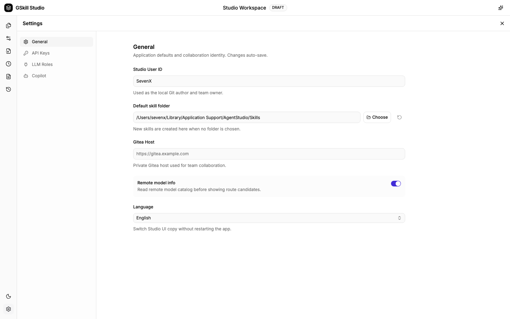
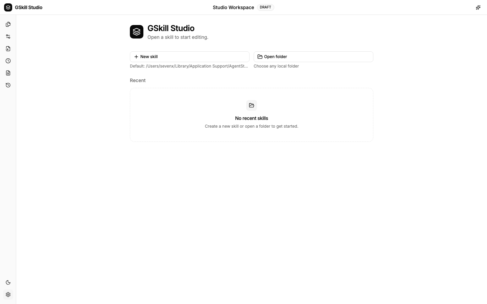
- RED:当前壳层无统一骨架收口,只有 API Keys 自管 ProviderListSkeleton → 断言『壳层级统一骨架』失败。
- GREEN:mock 某 tab 数据 loading 态 → 断言壳层渲染该 tab 的骨架占位。
- 断言数据到位后骨架被真内容替换。
- 在慢网络/mock 延迟下打开 Settings、切各 tab,看数据未到时是否有统一骨架。
- 渲染 SettingsPage,mock getCredentials/getRoles/getModelGroups。
- 断言初始只拉 redacted registry,不拉 API Keys secret;切到 api_keys 也不触发 secret 请求。
- 断言切到 llm_roles/copilot 才首次拉 roles + model groups。
- 断言已加载过的 tab 再切回不重复拉。
- 断言 SWR focus/reconnect/remount 不会重新拉取真相数据;truth-sources、community-catalog-config、role-test-results、fixed-roles/fixed-role-status 并发读取只打一条请求,角色/端点测试完成后才失效 role-test-results cache。
- 打开 Settings,依次点四个 tab,看内容切换。
- 用网络面板确认打开 Settings/API Keys 只有 registry 摘要请求,没有 secret 请求;点 Eye/Copy 才出现一条 scoped secret 请求。
- RED:当前壳层顶栏(SettingsPageContent 标题栏)无全局保存徽章,三套各画各的 → 断言『顶栏全局保存徽章』失败。
- GREEN:mock credentials/roles/appSettings 三套 saveStatus → 断言顶栏徽章按优先级(error>saving>pending>saved>idle)合并显示。
- 断言任一套 error 时顶栏显示 error(warning 色)。
- 断言三套全 idle 时顶栏徽章隐藏。
- 在某 tab 改一个字段,看顶栏徽章 Pending→Saving→Saved。
- 断网后改字段,看顶栏徽章变 Failed。
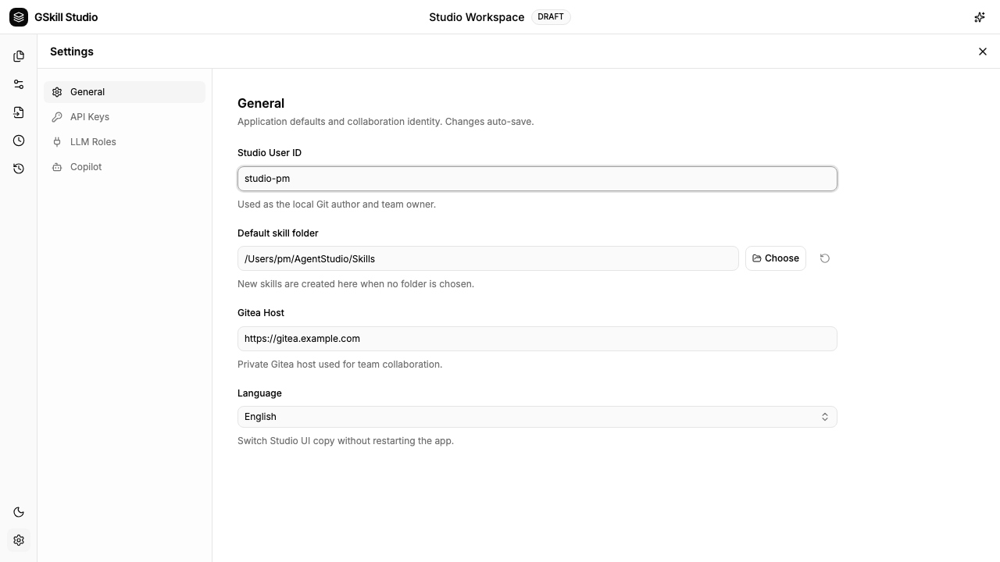
- mock WebSocket,推 {type:'registry_changed'} → 断言触发 getCredentials({force:true}) 重拉 + 重建草稿。
- 推 {type:'roles_changed'} → 断言触发 getRoles({force:true})+getModelGroups({force:true}) 重拉(且不因角色未加载被吞)。
- 打开 / 重连 WebSocket 但不推变更事件 → 断言不触发 getCredentials/getRoles/getModelGroups。
- RED(回归防线):旧实现 onmessage/建连为空 catch 静默、断开无重连 → 断言『断开后重连』『解析失败有日志』失败。
- GREEN:模拟 socket 断开 → 断言按退避重连;模拟解析异常 → 断言记 ERROR 日志(非空 catch)。
- 真跑(关键):开两个窗口/进程,在外部真改凭证文件,看 Settings 界面是否自动刷新。
- 真跑:手动断开后端再恢复,看 WebSocket 是否自动重连、是否不因重连本身重拉数据、断开期间是否显示「连接不上」警告。
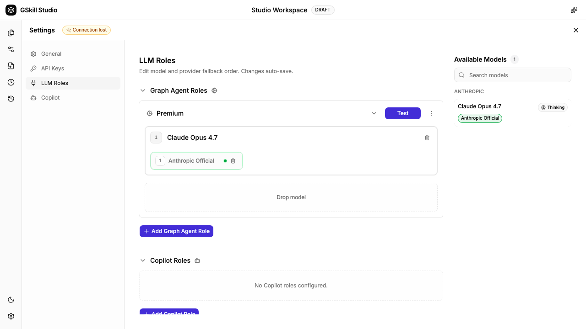
- 渲染 SettingsPage,点标题栏 X → 断言调 onClose、settingsOpen 置 false。
- 断言 Settings overlay 隐藏后回到编辑器/图,SettingsPageView 未卸载,左右栏未卸载。
- 断言无未保存确认弹窗(即填即存);在途 PUT 不被取消。
- 在 Settings 里改个字段(触发保存)立刻点 X,确认改动仍落地、回到工作区原样。
- Settings 打开态,点 Header Home → 断言调 handleHome:先 setSettingsOpen(false) 再 onCloseSkill()。
- 断言退首页后 Settings overlay 不再渲染(无孤儿)。
- 对比 X:断言 X 只收起 Settings、不调 onCloseSkill(工作区还在)。
- 打开 Settings,点顶栏 Home,确认回到首页且 Settings 已关。
- RED:当前只有 Roles/Copilot 包 SettingsErrorBoundary,General/API Keys 未包 → 让 GeneralTab/ApiKeysTab 抛错断言『有兜底卡』失败(会白屏/上抛)。
- GREEN:四 tab 全包后,让任一 tab 子组件抛错 → 断言渲染 destructive 兜底卡(含 tab label + 错误 message + Retry)。
- 断言 Retry 清错重渲染;断言 componentDidCatch 记了日志(非静默)。
- 断言一个 tab 崩溃不牵连其它 tab 与工作区。
- 注入一个会崩的 tab 子组件,看是否塌成兜底卡而非白屏。
- 点 Retry 看是否恢复。
- mock PUT /api/settings 成功。
- 改 User ID 输入框 → 断言 300ms 后发一次 PUT,body 含三字段且 user_id=新值。
- 断言保存徽章态 pending→saving→saved。
- 进 Settings→General,改 Studio User ID。
- 刷新页面,看 User ID 是否保留。
- 改 Gitea Host → 断言发 PUT,body gitea_host=新值(随三字段整体提交)。
- 断言徽章态流转正确。
- 填好 Gitea Host,看保存反馈。
- 清空 Gitea Host 后去点某 skill 的 publish/sync,看后端是否回『Gitea Host 未配置』引导(真跑后端校验链)。
- 手填目录路径 → 断言发 PUT,default_skills_directory=填入值。
- 字段为空 → 断言展示值回落 effectiveDefaultSkillsDirectory 的 runtime 默认(configDir/Skills)。
- 在目录输入框手打一个路径,看保存与展示。
- mock isTauriRuntime=true + invoke('select_directory') 回一个路径 → 点 Choose → 断言 setDefaultSkillsDirectory 收到该路径、随后发 PUT。
- mock isTauriRuntime=false → 点 Choose → 断言走 toast『Desktop only』、不调 invoke、不发 PUT。
- 选择中 → 断言 Choose 按钮 disabled(selectingDefaultFolder)。
- 桌面真跑:点 Choose,在弹出的 OS 文件夹选择器里选一个目录,看路径回填 + 保存(关键:这是唯一 native 操作,要真弹真选)。
- web 模式点 Choose,看是否只 toast『Desktop only』。
- 字段为自定义路径 → 点 Reset → 断言 setDefaultSkillsDirectory 收到 runtime 默认值、发 PUT。
- mock runtimeDefaultSkillsDirectory 返回 null(runtime config 不可用)→ 断言 Reset 按钮 disabled。
- 把目录改成自定义路径后点 Reset,看是否回到默认。
- 连续改三次字段 → 断言只在最后一次后 300ms 发一次 PUT(debounce 合并)。
- PUT 整体三字段、无字段级 PATCH。
- 并发:in-flight 期间连续再改 → 断言 pendingSettings 只保留最新 payload、旧请求完成不写 saved/error、不弹陈旧 toast,首个请求回来后只再发最新值。
- mock PUT 失败 → 断言 saveStatus='error' + toast.error(失败显式,不静默)。
- 快速连改 User ID 几下,看是否只保存一次。
- 断网/造 500 后改字段,看徽章是否报错(真跑失败路径)。
- 后端契约测:AppSettings 模型加 language 字段后,PUT /api/settings 带 language 不再被 extra=forbid 拒;GET 回读带 language。
- 组件测:语言下拉 onChange → 断言既调 i18n.changeLanguage、又把 language 并进 updateSettings(走 PUT)。
- 启动测:app_settings.language=zh → 断言 i18n 初始化为 zh。
- 改语言下拉为简体中文。
- 完全重开应用。
- 后端:_persist_completed_role_test_result 落盘后,runtime activity 的 role_test_result_saved entry 的 changes.route_results 与结果的 model_groups 逐路由一致(canonical_id/route_id/provider/status/message,test_llm_role_test_results_api.py::test_persist_completed_role_test_result_logs_per_route_detail)。
- 后端:endpoint_test entry 带 message/discovered_model_ids/probe_attempts(test_llm_registry_api.py 既有覆盖)。
- 跑一次 analyst 角色 Test(含失败路由)。
- General → Runtime truth source files → Role test results 卡展开 Runtime log,展开最新 entry 的 Details,与 llm_role_test_results.json 对照。
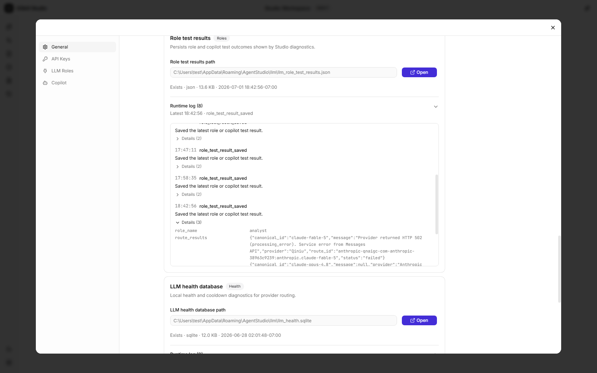
- mock GET /registry 回 2 个 endpoint(api_key='**********'),断言 getCredentials() 默认只返回打码快照且不发 secret 请求。
- 渲染 Settings controller 后断言打开 Settings / API Keys tab / 切换其它 tab 都不调用 getEndpointSecret。
- 点某一张卡的 Eye 或 Copy → mock GET secret 回真 key,断言只对当前 endpoint 发一条 secret 请求,并把卡里 api_key 投影为真值。
- 断言并发 reveal 对同一 endpoint 只发一条 secret 请求,二次显式 reveal 或二次拉快照时已知 key 不再发 secret(knownEndpointSecrets 命中)。
- Real run (2026-07-05, worktree private sidecar + real Ark key): POST /api/llm/endpoints/ark-openai-official/test?force=true returned discovered_model_count=125, endpoint protocol=openai_compatible, status=verified, last_error_code=null, message='Generation verified via openai_compatible. Model: doubao-seed-2-0-pro-260215.'; Settings UI aria for OpenAI / ark.cn-beijing.volces shows Endpoint: ark-openai-official, Status: Connected, Routes: 125.
- 进 Settings→API Keys,对已存 key 的卡点眼睛。
- 切到别的 tab 再切回。
- 喂含官方+第三方混合的 registry。
- 断言官方区渲染固定 5 厂商卡(缺的补空卡)。
- 断言第三方区只渲染非白名单草稿。
- 进 API Keys,看分区。
- 渲染 providerKind='official' 的卡。
- 断言不渲染:协议下拉 / Base URL 框 / Endpoint test 段 / ⋮ 菜单。
- 断言只留一行 API Key 输入。
- 看任一官方卡。
- 点 Add Provider → 断言出现 name/base_url/api_key 三输入的 inline 表单。
- 断言 add-provider-api-key 为 type=text,placeholder 为
Enter the provider API Key,录入态不含 mask-input。
- 进 Settings→API Keys,点 Add Provider,看 inline 表单和可读 API Key placeholder。
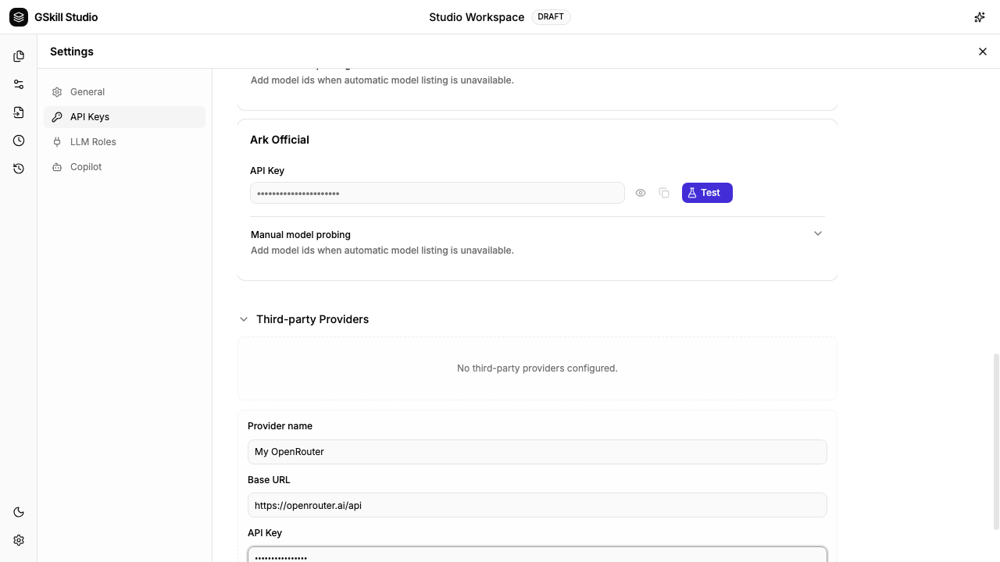
- RED:当前第三方卡仍渲染 Protocol 手选下拉 → 断言『无协议下拉』失败。
- GREEN:断言第三方卡可填项只剩 name/base_url/api_key,无 Protocol 下拉。
- 断言协议字段不再来自用户手选(由探测回填)。
- 看一张第三方卡的可编辑项。
- 卡处于 verified(绿)→ 改 API Key 文本 → 断言状态回落 not_configured/untested(指纹对不上)。
- 把 key 改回原值 → 断言恢复原状态(invalidatedTestOutcomeIds 移除)。
- 验指纹对 api_key/base_url/provider_type 三者变化均触发失效。
- 一张 verified 绿卡,改一个字符的 key。
- 再把 key 改回原值。
- RED:当前掩码态 input.type='password' → 断言『type 恒为 text』失败。
- GREEN:断言 API Key Input 的 type 恒为 'text'(可见/掩码两态都是 text)。
- 点眼睛 → 断言隐藏态等长 mask value / 显示态真实 value 切换;聚焦隐藏输入框进入明文编辑态后可直接编辑。
- redacted 占位态 → 断言点数 = registry api_key_length(真实位数)而非占位符的 10 位;reveal 后/新输入值按自身长度画点(2026-08-12)。
- 回归:任何状态 input.type≠'password'(防触发浏览器密码管理器)。
- 卡里 key 默认掩码态。
- 点眼睛切到可见态。
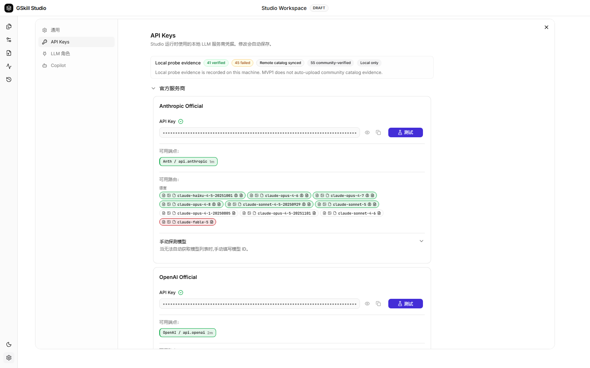
- 点复制按钮 → 断言调 navigator.clipboard.writeText(key) 且 toast.success。
- value 为空时 → 断言按钮 disabled、不复制。
- 有 key 的卡点复制。
- 空 key 的卡看复制按钮。
- 契约测:断言官方卡与第三方卡的 Test 都打 POST /endpoints/{id}/test(官三都不再走『get-models 可达=ok』弱判定)。
- 后端契约测:格子只用自身协议探测且失败不改写 protocol(test_endpoint_test_probes_only_its_own_protocol_and_never_rewrites_it);protocol_unsupported → 清 routes + 剥 role 引用(..._removes_routes_and_role_refs);半衰期门 30 天内跳过、force 绕过、31 天后自动复测(..._is_gated_within_half_life / ..._gate_expires_after_half_life);unsupported 不复用旧 verified(..._does_not_reuse_previously_verified);disabled endpoint 普通 Test / generation probe / manual model test / official profile test / route force probe 均由原子 probe 层跳过且不打 provider(test_endpoint_test_skips_disabled_endpoint_without_provider_probe、test_endpoint_generation_probe_skips_disabled_endpoint_atom、test_endpoint_scoped_manual_model_test_skips_disabled_endpoint、test_official_manual_model_test_skips_disabled_endpoint、test_route_probe_force_true_skips_disabled_endpoint、test_official_call_method_atom_skips_disabled_endpoint);generation/call-method atom 自己发布 active 事件(test_model_generation_atom_publishes_active_model_events、test_official_call_method_atom_publishes_active_model_events、test_endpoint_generation_probe_reports_active_model_atoms、test_official_role_route_test_uses_call_method_atom_events、test_probe_multimodal_endpoint_publishes_active_model_atom);upsert 改协议 422、新建重复组合 422、存量重复容忍更新(test_upsert_endpoints_*)。
- gateway 契约测:裸 404/405 与 'Use /v1/messages instead' 指引 → protocol_unsupported;provider 错误体包裹的 404 仍 invalid_model(test_provider_probe.py)。
- 前端测:protocol_unsupported 直达 endpoint 状态、不再被 model-scope 掩成 untested(llm.test.ts);槽位按持久化协议、不按 id slug(SettingsPage.test.tsx);unsupported 芯片 + Re-probe 按钮渲染(ProviderCard.test.tsx)。
- 前端测(指路 tooltip,设计 §1.2 矩阵第 9 点):verifiedSiblingProtocolsOnSameHost 只挑同 hostname、status=ok、异协议的兄弟并去重(跨域名/未验证/自身协议全排除);endpointTooltipLines 对 unsupported 格子追加指路行(有兄弟→redirect 具名、无兄弟→no-route),verified 格子不加(ProviderCard.test.tsx)。
- 前端测(2026-07-05):单 endpoint 格子测试和 Manual model probing 原子测试时,ProviderCard 只给有活动原子 probe 信号（route status=testing、后端 llm_probe_active active_model_ids 命中或 Manual 本地 endpoint→model in-flight atom 命中）的 endpoint 标签和 model chip 加 api-route-tag-border-flow;testingAction/testingEndpointId 单独存在时不驱动 endpoint 动画;同 endpoint 仅被 discovered/listed 的模型不转,覆盖 WaveSpeed OpenAI endpoint 不再全体转、Manual 单测模型时 endpoint 不因缺少卡片级 Test 状态而静止;active-probe-store.test.ts 断言 updateActiveProbeEndpoint 只通知命中的 endpoint/model atom,重复 payload 不通知,其他 endpoint/model 不受影响;SettingsPage 不再把 active atom 写入 visibleDrafts。
- 前端测(2026-07-05):SettingsPage.controller 的 full-card routine Test 队列不调用当前参数仍匹配 protocol_unsupported 的 endpoint,也不调用 endpoint_status=disabled 的 endpoint;只对 OpenAI/Anth 等 eligible endpoint 调 getProviderModels,且不弹 2/3 endpoints 这类 warning。
- ProviderCard.test.tsx asserts that a verified official route named by testingModelIdsByEndpoint renders data-variant="active" and api-route-tag-border-flow, while sibling verified routes stay success and idle. SettingsPage.test.tsx asserts Ark Official expands into
ark-official(ark_runtime) andark-openai-official(openai_compatible), and stale local endpoint_ids cannot make Ark OpenAI-compatible reuseark-official. - Backend/API tests assert Ark OpenAI-compatible keeps endpoint id
ark-openai-official, uses wire backendopenai, uses/api/v3/modelsand/api/v3/chat/completionswithout adding/v1, and filters official language candidates by Ark catalog identity rather than OpenAI model names. - tag.test.tsx asserts Tag variant active uses border-transparent and does not include success/destructive border classes, so the animated border replaces the idle border.
- 真跑(真 qiniu key):点 Test 看 2 URL × 3 协议矩阵——4 个 verified 绿格子、google 格子 'Protocol not supported' 灰显、routes 清空。
- 真跑:连点两轮 Test,确认 openai 格子协议零翻转、第二轮 unsupported 格子被跳过(runtime log endpoint_test_skipped + recheck 日期)。
- 真跑:点 unsupported 格子的 Re-probe 按钮,确认强制复测真打 provider 并刷新观察时间。
- 真跑(真 qiniu key,headless Playwright 驱主 sidecar):hover 两个 unsupported 格子,aria-label/tooltip 指路——Gemini/api.qnaigc → 'use its OpenAI-compatible / Anthropic-compatible route'(两兄弟);OpenAI/anthropic.qnaigc → 'use its Anthropic-compatible route'(单兄弟);跨域名不串。
- 真跑(2026-07-05,worktree 私有 sidecar + WaveSpeed 真 key):点 OpenAI/llm.wavespeed 单格子时仅 OpenAI endpoint 与当前 active model 转,Anth/Gemini endpoint 与其他 discovered models 不转;点整卡 Test 时 OpenAI/Anth phase 各自只转当前 endpoint/model,Gemini protocol_unsupported/disabled-like skip 不转;Manual 面板单测一个 model 时,正在测的 endpoint 标签也跟随 active atom 转。
- 真跑(2026-07-05,root app + OpenRouter 真 key):OpenRouter 整卡 Test 只排 OpenAI/Anth 两个 eligible endpoint;Gemini protocol_unsupported 不进入前端测试队列、不出现第三个 probing toast、不触发最终 not ready warning。
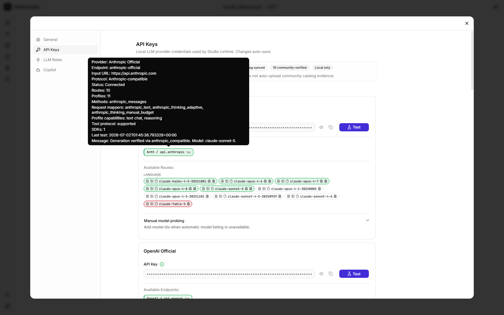
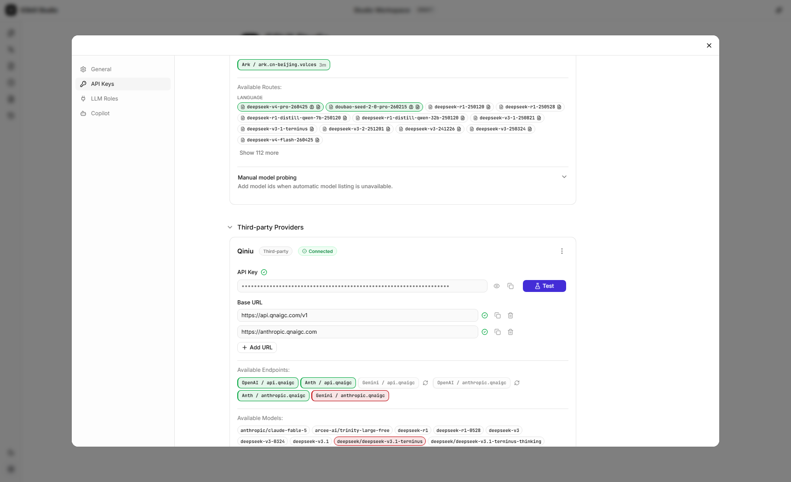
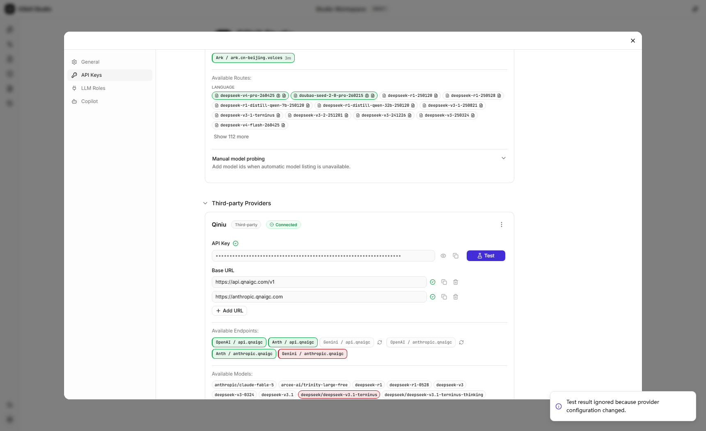
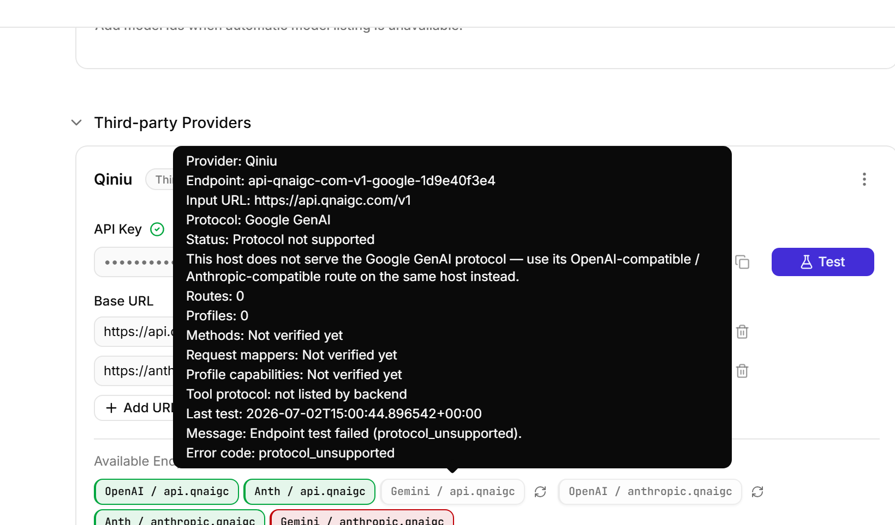
- ProviderCard 渲染 official/third-party 卡 → 断言 Available Endpoints 存在。
- 断言第三方卡 Endpoint test 文案计数为 0,Test 按钮计数为 1。
- 断言一个第三方 Base URL 会展开 OpenAI / Anthropic / Gemini 三个 endpoint 标签,且不包含 Ark;断言 Ark Official 会展开 Ark runtime / OpenAI-compatible 两个官方协议 endpoint。
- 断言 endpoint 标签不用 model chip/Tag 样式,标签内不显示 Connected/Failed 文案。
- hover endpoint Tag → 断言 Tooltip 包含 Provider / Endpoint / Base URL / Protocol / Status / Routes / Message。
- 断言 Base URL label 旁不再显示总绿勾;每条 URL 行按 endpoint 结果聚合显示 data-base-url-status=connected/failed。
- 进 Settings→API Keys,查看 official 与 third-party 卡的 Available Endpoints。
- 对 Qiniu 真 key + 两条 URL 点 Test,确认 6 个 endpoint 候选均显示,成功/失败用颜色区分。
- hover third-party endpoint 标签看详情 tooltip。
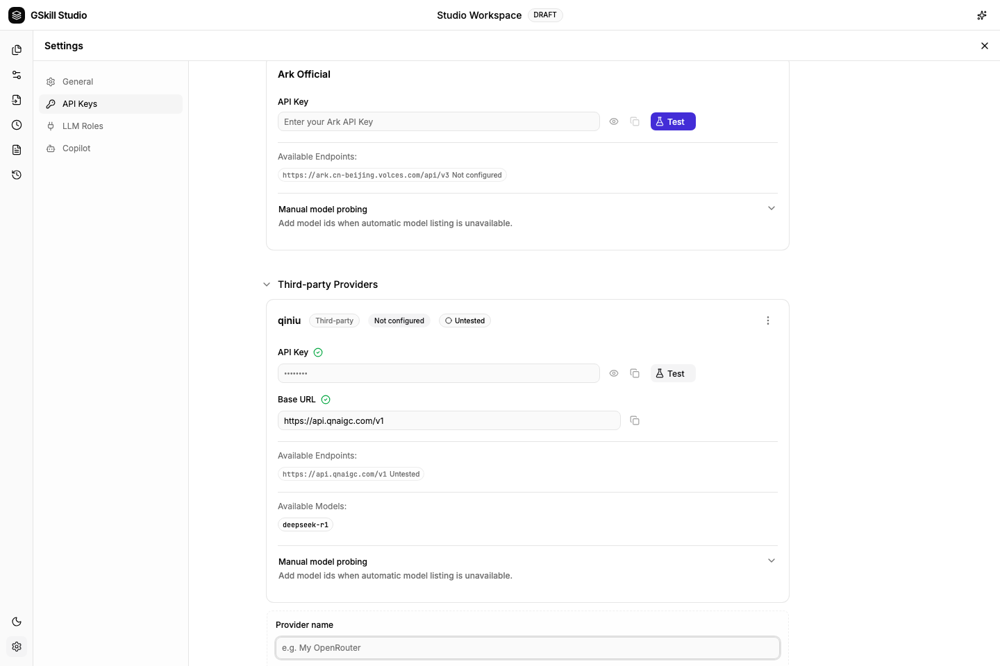
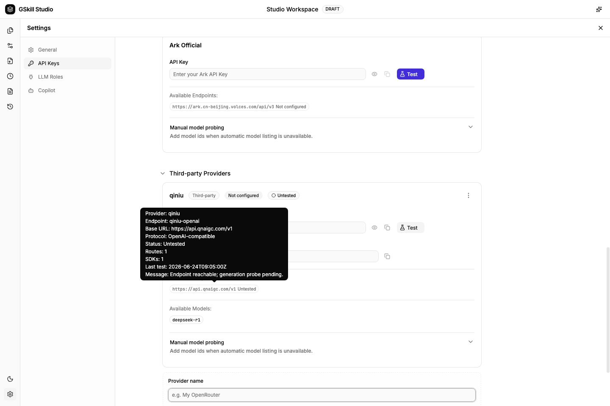
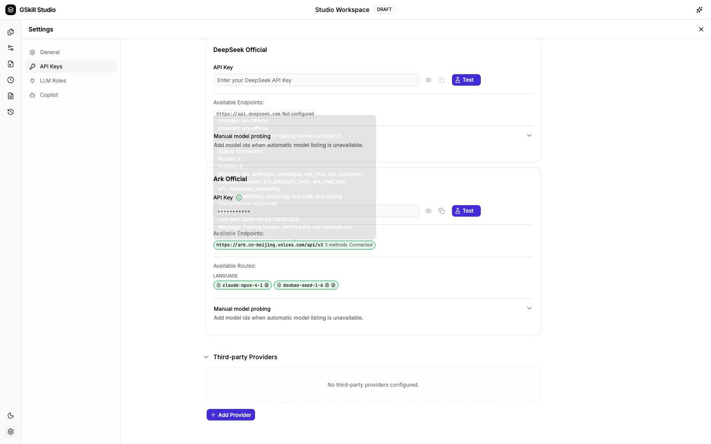
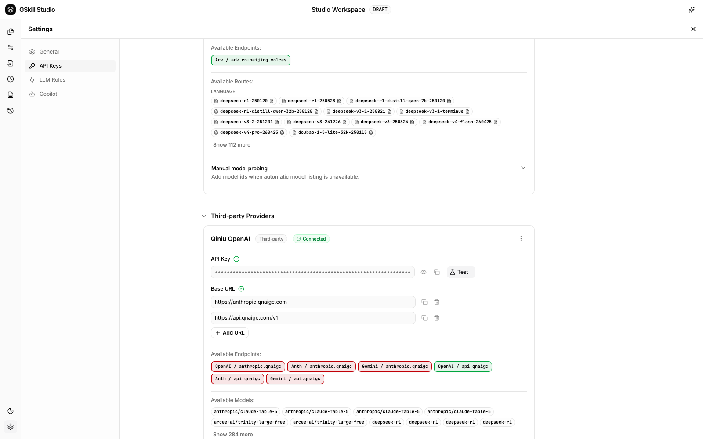
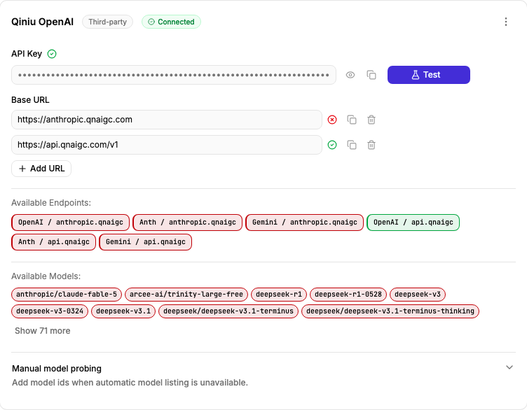
- Manual 面板 Add 多个 model id → Test Models,mock 部分成功部分失败。
- 断言结果按 6 态色 inline 呈现(不再旧 success/destructive 二态 Badge)。
- 断言 available_models 回写按 6 态显示。
- 断言 ManualModelTestPanel 按 testable endpointTargets × modelIds 扇出,每个 endpoint/model atom 都调用 testProviderModels,protocol_unsupported target 不进普通 Manual Test。
- 断言 ProviderCard 在没有 card-wide Test action 时,只要后端 testingModelIdsByEndpoint 或 Manual 本地 endpoint→model active map 有 active atom,对应 endpoint 标签与命中的 model chip 都加 api-route-tag-border-flow,兄弟 endpoint/model 保持静止;即使 model chip 的展示数据缺少 endpoint_id/route summary,model.id 命中 active atom map 时也必须动画。
- Manual 面板加 1 个 model id,点 Test Models,观察所有正在测的 endpoint 标签与该 model chip 同步转动。
- Manual 面板保持折叠 → 断言不调 GET /providers/notable-models。
- 展开 Manual 面板 → 断言按 notableProviderKey 首次调 GET /providers/notable-models,重复开合同 provider 走前端 cache。
- 断言拿到的 model id 写进输入框 placeholder。
- 打开第三方卡 Manual 面板看占位提示。
- 契约测:第三方卡 ⋮→Delete→确认 → 断言走 DELETE /registry/endpoints/{id}(非仅整批 upsert),引用该 endpoint 的 route 被级联清掉。
- 组件测:官方卡断言无 ⋮ 菜单(不可改名/删)。
- Delete 必须经二次确认 toast 才触发 onDelete。
- 删一个第三方 provider,过二次确认。
- 看官方卡有无 ⋮ 菜单。
- 喂含各 ui_state 的 registry DTO → 断言 ProviderCard 渲染对应颜色标签且常驻 inline 在 key/Base URL 旁(不只 toast)。
- 断言蓝态显示『Previously Connected』。
- 一致性测:同一 ui_state,API Keys 卡与 LLM Roles 的 provider-state-badge.tsx 渲染同色。
- 蓝态端到端:credentials route.metadata.evidence_refs 引用 probe-verified 历史证据后投影 historical_ready;无 credentials 证据引用时应表现为不亮、而非误亮。
- 蓝 / 灰红线:喂「只被 get-models 清单看到(provider-list-observed)、无真探历史」的 route → 断言出灰 untested、绝不误亮蓝;喂「catalog 里有 probe-verified 但未晋升进 credentials」→ 断言仍灰;喂「credentials 有真探证据引用、当前非绿」→ 断言出蓝 historical_ready。
- 聚合测:喂同一 model id 的 failed / verified / untested 三条 endpoint route → 断言只渲染一个 model 标签且为绿色;喂 historical_ready + failed → 断言只渲染一个蓝色 Previously Connected 标签。
- 失败分层测:喂 reason_code=error / HTTP 502 / authentication_error / protocol mismatch 的 endpoint-scoped failure → 断言 model 标签保持 untested/neutral,tooltip 显示 Endpoint failed;喂 reason_code=invalid_model → 断言 model 标签才是 failed/destructive。
- 错位回归测:喂所有 route status=unverified_manual 但其中一条 stale ui_state=failed → 断言聚合 model 仍为 unverified_manual/untested,不显示 Route test failed。
- 动画归属回归测:hasActiveAtomicProbeSignal 只把 route status=testing 或后端 llm_probe_active active_model_ids 命中视为活动原子 probe 信号;历史 probe_attempts/reason_code=ok 不驱动动画;ProviderCard 单 endpoint test 只给有该信号的 endpoint 标签和 model chip 加 border-flow,testingEndpointId 单独存在时 endpoint 标签保持静止,同 endpoint 仅 listed/discovered 的模型保持静止。
- 造各态数据看六态卡。
- 与 LLM Roles 页并排比色。
- credentials route.metadata.evidence_refs 引用 probe-verified 历史证据后看蓝态。
- 用真后端 + .env Qiniu key 展开第三方 Available Models:确认 endpoint/protocol/upstream 失败的 deepseek 标签保持中性,tooltip 逐条显示 Endpoint failed;确认 invalid_model 的 gemini/xiaomi 标签仍为红色;确认所有 route 未测试的 qwen 标签显示 Untested。
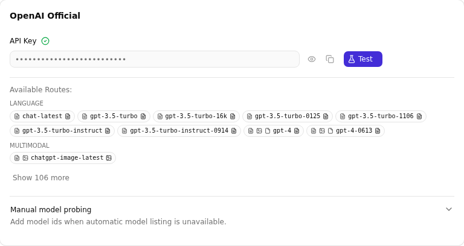
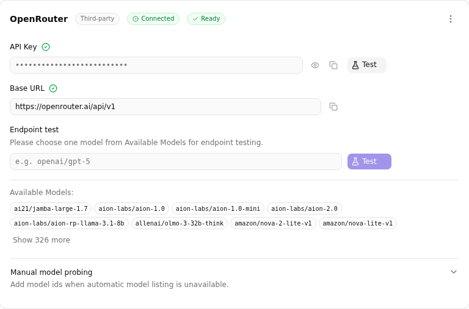
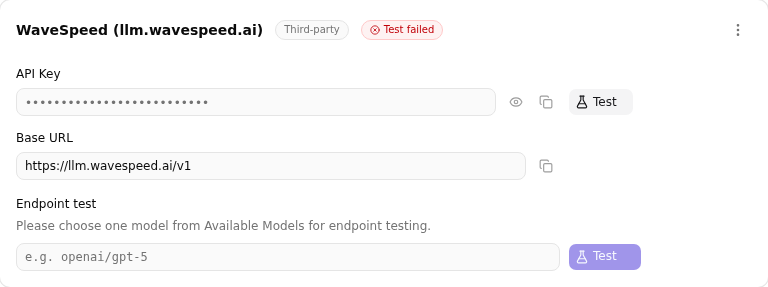
Invalid API key (wavespeed_error) 在徽章 hover tooltip(原生 title)。两个 WaveSpeed base 都用同一 key 试过、均 401(api.wavespeed.ai/api/v3 回 Provider test failed (error))。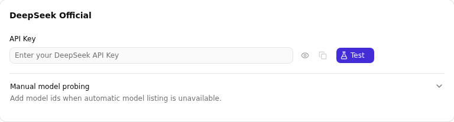
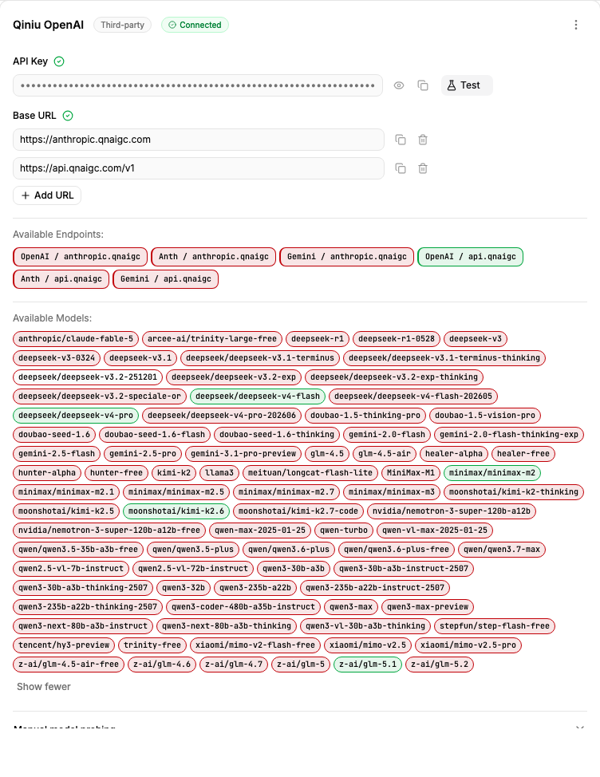
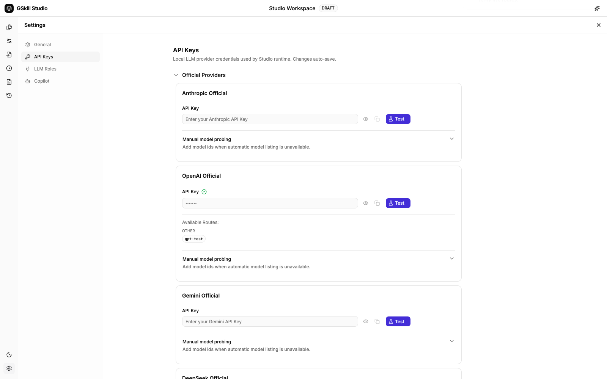
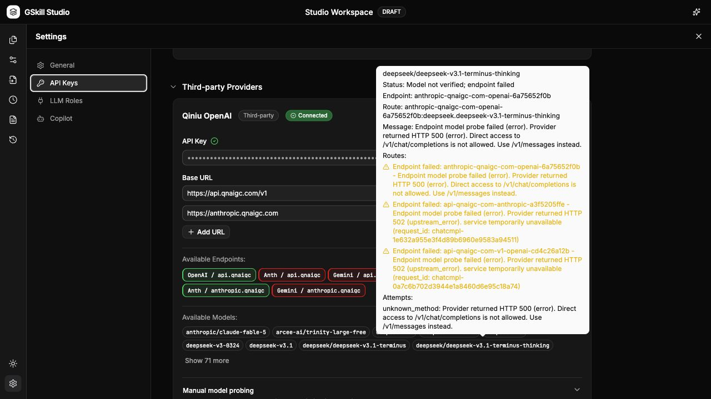
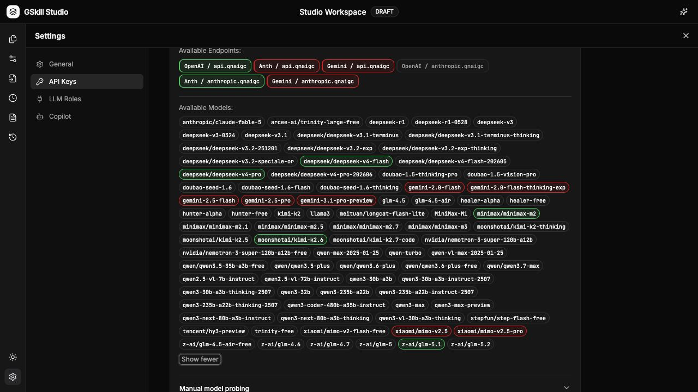
- 刷新/重进页 → 断言 getCredentials({hydrateSecrets:false}) 把全量 endpoint+route+状态恢复成每张卡。
- 断言只投影 registry、不持第二份(切 tab/刷新不丢)。
- 窗口聚焦 / WebSocket 重连不重拉;WebSocket registry_changed 才强制重拉一次 redacted registry,且不发 secret。
- 配好几张卡后刷新页面。
- 切到别的 tab 再切回。
- mock GET /registry 回含 graph-agent + role_kind=copilot 混合角色。
- 断言只渲染 Graph Agent Roles 分区和 graph-agent 角色卡;Copilot Roles / Add Copilot Role 计数为 0。
- 断言引用已删 endpoint 的 route 被 pruneInvalidRoleProviders 剔掉。
- 进 Settings→LLM Roles 看角色卡 + 侧栏。
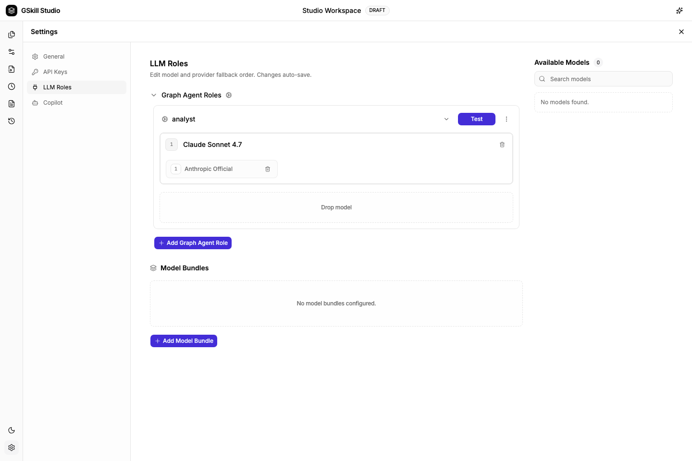
- 点 Add Graph Agent Role → 断言出现命名弹框。
- 提交名字 → 断言 roles 新增一个无 model group 的空角色 + 入队保存。
- 空名提交 → 断言被拦(required)。
- 点 Add Graph Agent Role,命名建空角色。
- 另起:空名提交看报错。
- 侧栏喂多模型 → 输入关键词 → 断言按模型名/canonical id/provider 标签/provider model id 多词匹配过滤。
- 断言紧凑匹配(忽略分隔符)与多 token 全含生效。
- 清空按钮 → 断言复位。
- 侧栏搜一个 provider 名看过滤。
- 喂含各 ui_state 的 model_groups DTO → 断言各 provider 行渲染对应 6 态色(ready/historical_ready/untested/failed/cooling_down/off)。
- 断言 failed 行不被过滤(仍渲染、标红、可拖)。
- RED(增量):断言 reason=missing_config 行有「去配置」引导链接 → 现无 → 待补。
- RED(增量):断言 off/disabled 行进可折叠弃用区、不可拖 → 现无 → 待补。
- 造各态数据看 6 态色。
- 看 failed 行能否拖。
- 看配置缺口行有无引导、弃用区有无。
- 拖一个 model group 进角色 → 断言挂成结构化 model group、默认选 ready+untested(official 优先)、active_model 同步首位。
- 重复拖已在该角色的组 → 断言不建副本(provider 合并去重)。
- RED(小):断言 historical_ready 蓝态也被默认选入 → 现落默认桶 → 待补权重。
- 从侧栏拖一个模型进角色看默认选。
- 再拖同一个看是否去重。
- 拖动 model 卡调序 → 断言模型兜底序变 + active_model 同步首位。
- 角色里拖两个 model 换序看 active 跟首位。
- 拖 provider 标签 → 断言只改该模型组内 provider 序,别的模型组不变。
- 某模型组内拖两个 provider 换序。
- 点 Add provider → 断言下拉列出该模型未加的可补 provider、选后补进组(去重)。
- 点垃圾桶 → 断言移除该 provider、不影响别的模型组。
- 某模型 Add 一个 provider、再删一个。
- 移除整组 → 断言该模型连所有 provider route 从角色删除 + active_model 重算。
- 删一个 model group 看整组消失。
- 切 Model Fallback 开关 → 断言写 model_fallback_enabled。
- 后端契约测:关闭时 materialize 只取 groups[:1](provider 兜底仍在)。
- 关 Model Fallback,看是否只用首个 model。
- 断言 Thinking 是单一三态 RadioGroup(off/preferred/required),非两个开关。
- 选 required → 断言写 intent.thinking='required'。
- 后端契约测:required 不支持→role_fit not_fit、能力未知→needs_test、preferred 不支持→downgraded。
- 切 Thinking 三档看互斥。
- 对一个不支持 thinking 的模型设 required 看灯转 Blocked/Limited。
- 断言档位下拉有 default/maximum_available/target/required_minimum 四档,target 与 required_minimum 才启用值输入。
- 选 required_minimum 填值 → 断言写 intent.target_output_tokens{mode,value,downgrade:allow}。
- 断言 downgrade 无 UI(固定 allow)、cost_priority 无控件。
- 后端契约测:required_minimum 达不到 route 上限→role_fit not_fit;target 超限按 downgrade 策略。
- 切 Output Token 档位看值输入启停。
- 设 required_minimum 大于 route 上限看灯转 Blocked。
- 喂带 max_input/max_output_tokens 的 route → 断言聚合 min/max + 已知/未知计数。
- 断言 context + output 双摘要文案正确(只读)。
- 看角色设置面板的 token 摘要。
- 喂 materialization_report(role_fit using/downgraded/needs_test/not_fit)+ 各 ui_state → 断言 deriveRoleRouteStatus 合成对应灯(runnable/limited/blocked/testing)。
- 断言悬停只有一个顶层 tooltip(无嵌套)、无 RoleTestResultPanel 面板。
- 断言 tooltip 含模型名 + role-match 诊断 + 能力/token 上限。
- 喂 failed providerModel(ui_detail=evidence reason)→ 断言 tooltip 显 'Failed: <原文>' 且不出现 'Failed: Failed:' 双前缀(state-badges.test.tsx);后端侧 adapter 测试断言 route 级 failed 的 ui_detail 取最新 probe-failed evidence reason(test_productization_route_state_delegation.py)。
- 悬停一个 downgraded route 的灯看 tooltip。
- 悬停一条 failed route(fable-5 × Anthropic Official)确认 tooltip 显示 provider 404 原文而非兜底文案。
- 确认没有独立测试结果面板。
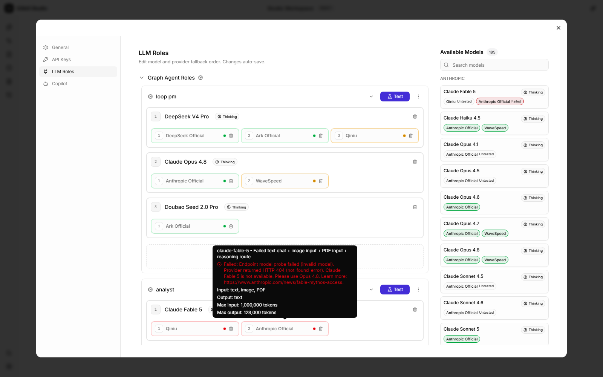
- 点 Test → 断言起 POST /roles/{name}/test-jobs、按 500ms 轮询 GET /role-test-jobs/{job_id}、provider_statuses 实时刷灯。
- mock job 完成 → 断言用 result 刷各行测试态 + role_fit。
- 断言批量探所有模型(非停首条成功)。
- RED:切 tab(组件卸载)再挂载 → 断言 live 态从后端 job/持久化重投影、不丢 → 现 roleTestStates 易失会丢 live 进度 → 待删易失层转 GREEN。
- 断言挂载 seedRoleTestStatesFromPersisted 从 GET /roles/test-results 回填历史 badge。
- 真跑(用真 key,关键):对一个真角色点 Test,看状态灯流转 + 失败回写 draft。
- 测试中切 tab 再回,看进度/结果是否保住。
- 有未保存校验错误时点 Test → 断言不发测试、显红错误条。
- job 失败 → 断言显红条 + 保留 last-known result。
- 未保存状态点 Test 看红条。
- ⋮→Rename → 断言弹命名弹框、改名随整表 upsert。
- ⋮→Delete → 断言先二次确认 toast、确认后 removeRole + 保存。
- 改一个角色名。
- 删一个角色过二次确认。
- 点 Add Model Bundle → 断言命名弹框、新建空 bundle(canonical_id='bundle:{id}')。
- 断言已配束经 modelBundleGroupsFromData 在侧栏 pinnedModelGroups 顶部渲染。
- 点 Add Model Bundle 建一个空束看位置 + Pinned 槽。
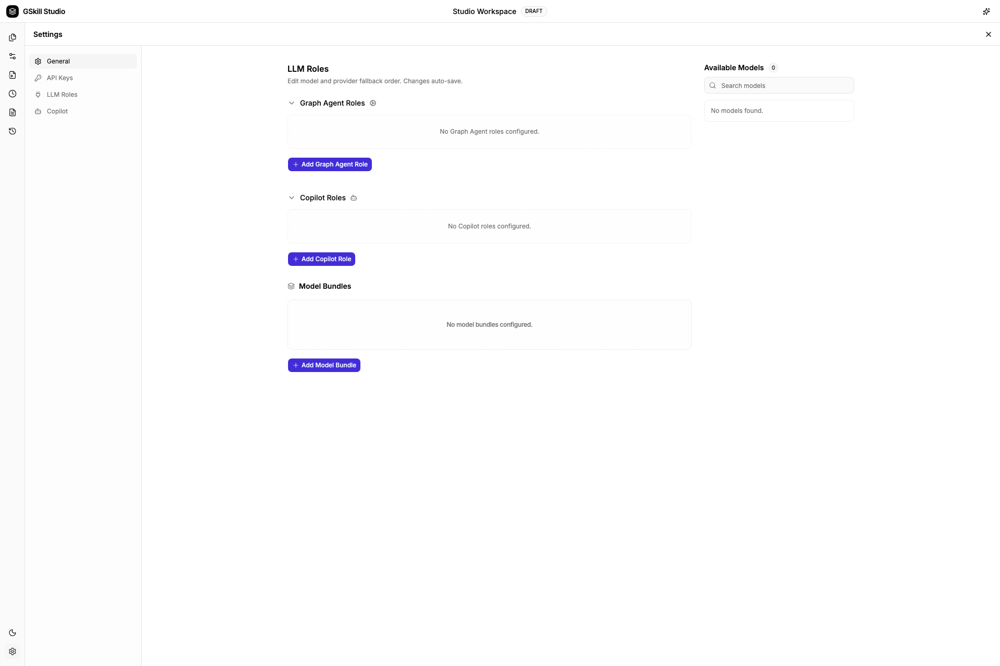
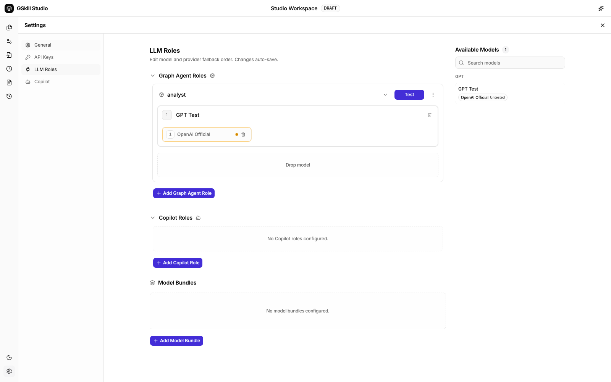
- 拖模型进束 → 断言 appendModelGroupToBundle 挂组;拖束进束 → 断言报错(不可嵌套)。
- 断言束卡复用 ModelItem + RoleSettingsPanel(调序/增删/意图)。
- RED:断言束卡 provider 行显 role-route 状态灯 → 现 testStatuses={} 全空 → 待喂束测试转 GREEN。
- RED:断言束卡 header 有 Test 按钮 → 现无 → 待加复用 role 测试。
- 束卡里调序/加模型。
- 看束卡有无状态灯 + Test 按钮。
- 拖束进角色 → 断言角色挂这个束作一组。
- RED:改束内容后 → 断言引用它的角色 materialize 出的 fallback_chain 跟着变 → 现快照复制不变 → 待改引用语义转 GREEN。
- 后端契约测:materialize 按 bundle 引用展开当前束内容(非读拍平快照)。
- 建束 → 拖进角色 → 改束加一个模型 → 看角色是否同步(现不同步,目标同步)。
- 束 ⋮→Edit → 断言命名弹框(Bundle name)、改名随整表 upsert。
- 束 ⋮→Delete → 断言二次确认、确认后 removeModelBundle + 保存。
- 改一个束名。
- 删一个束过二次确认。
- 触发 WS roles_changed → 断言重拉 roles + model groups、重投影角色 + 可用模型 + 测试态(持久化种子回填)。
- 窗口聚焦 / WebSocket 重连但无 roles_changed → 断言不重拉 roles/model groups。
- 断言只投影 registry、不持第二份(切 tab/刷新不丢角色)。
- 开两个窗口,一个改角色,看另一个窗口收到 roles_changed 后是否刷新。
- RoleSettingsDialog.behavior.test.tsx: moving the temperature Slider previews 70% locally without calling onSubmit; pointerup/blur/commit then submits exactly one role intent with temperature=1.4, including the Radix-missed-commit fallback path.
- useDebouncedRolesSave.test.ts: while an older PUT is still in flight, multiple queued role snapshots collapse to the newest payload before the next PUT.
- SettingsPage.controller.test.tsx: roles_changed is ignored while roles save status is pending/saving, then allowed again after the save status returns idle.
- LlmRolesTab.test.tsx / RoleSettingsFields coverage: temperature renders as a Slider percent readout(1.4=>70%) rather than raw 1.4 and keeps the About temperature scale tooltip trigger; an empty temperature draft serializes to the 70% default.
- useDebouncedCallback.test.tsx: schedule waits 300ms, flush runs immediately, cancel/unmount drops stale work.
- 2026-07-05 wt-dev --backend: Settings -> LLM Roles -> expand fast -> Temperature shows 40%, ? tooltip shows provider remap copy, ArrowRight changes readout to 55%, ArrowLeft restores 40%.
- llm-effort.test.ts:多路由档位取并集且按强弱排序;认不出的档位名保留在末尾;无路由报档位时返回空。
- RoleSettingsDialog.behavior.test.tsx:选中档位提交 intent.reasoning_effort;清空回到 Provider default 提交 null;空档位时控件禁用且只剩 Provider default 一项。
- LlmRolesTab.test.tsx:draft ↔ intent 映射(未选 → null),字段行渲染出 effort 控件。
- graph-agent-gateway test_role_effort_intent.py:选中的档位写进 runtime_settings.reasoning.effort;未选则不写;xhigh 在只卖 low/high 的路由上贴合成 high;选档位本身不打开 reasoning.enabled。
- studio test_llm_registry_api.py:未探测的 anthropic 路由在 model group 里带 provider_doc 档位;实测档位不被文档词表覆盖。
- studio test_llm_role_materializer_api.py:PUT 角色带 reasoning_effort=xhigh,回包 fallback_chain 的 runtime_settings.reasoning.effort 是 high。
- 2026-08-10 wt-dev --backend:Settings → LLM 角色 → 展开 fast/analyst,Reasoning effort 下拉列出各路由档位并集;在 analyst 选 Extra high 后自动保存,GET /api/llm/roles/analyst 读回 intent.reasoning_effort=xhigh 且各路由 runtime_settings.reasoning.effort=xhigh。
- 2026-08-10 贴合实证(同一环境,直接 PUT intent.reasoning_effort=none):anthropic 协议的路由回读 low(none 不在该协议词表里,就低不就高只能上抬到最弱一档),openai_compatible 路由保持 none(该协议没有文档词表、也未探测,无边界可贴);验完已把该角色恢复成未选。
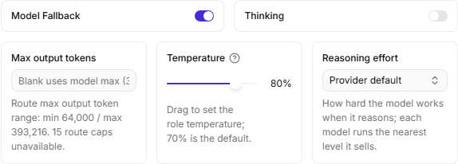
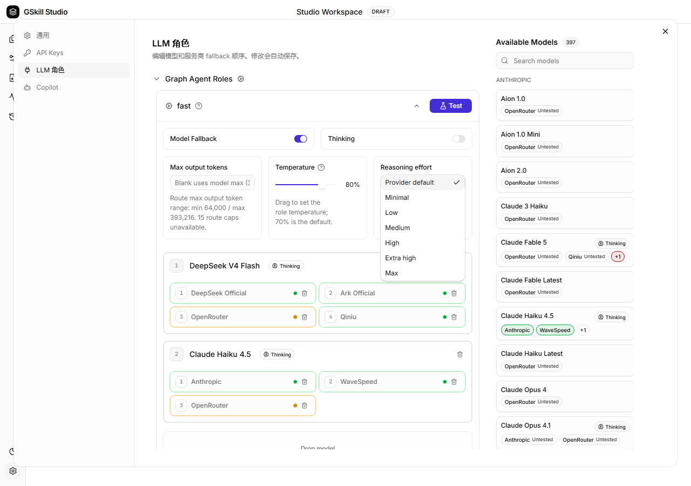
- data=null 渲染 → 断言出现骨架卡(Skeleton),且 trailing 仍渲染 SaveStatusBadge。
- data 到后 → 断言渲染真实角色卡、无骨架。
- 断言全文件不含『Backend Integration』写死徽章字符串。
- 进 Settings→Copilot,看标题 + save 徽章 + 角色卡。
- 慢网络下看骨架屏。
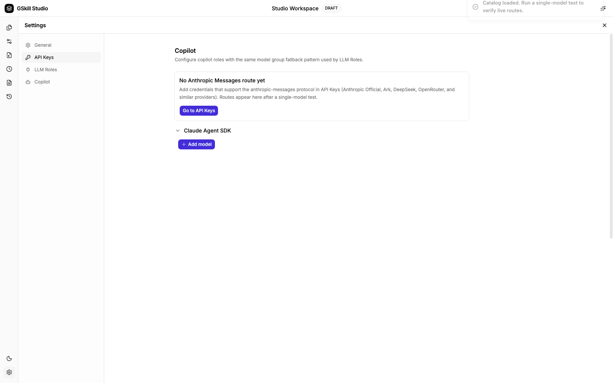
- RED:当前 built_in 判定来自一段与 pickDefaultCopilotGroupIds 重复的独立硬编码 canonical_id 白名单 → 断言『built_in 复用浮出函数判定(同一真相)』失败。
- GREEN:喂候选组(含 claude-opus-4.8) → 断言该组 built_in=true(因 pickDefaultCopilotGroupIds 会浮出它);喂一个用户自建的非浮出 canonical 组 → 断言 built_in=false(third_party)。
- GREEN:断言卡片 description/title 取 model_group 的归一化 display_name,不再走 includes('Claude') 模板。
- GREEN:DeepSeek Official route 即使默认 call_method_id 是 deepseek_chat_completions,只要 candidate_call_method_ids 含 deepseek_anthropic_messages,仍进入候选组并标 built_in,不被默认 OpenAI/Chat Completions profile 误杀。
- 断言 deriveCopilotCandidateGroups 不再含独立的 isBuiltIn 硬编码白名单(收敛为复用浮出函数)。
- 看几张 copilot 角色卡的 Built-in/Third-party 标注与描述(系统浮出的 canonical 组=Built-in、用户自建组=Third-party)。
- RED:当前无 copilot 角色时不自动浮出默认(pickDefaultCopilotGroupIds 无调用方)→ 断言『无角色时浮出内置默认』失败。
- GREEN:喂含 claude-opus-4.8 的候选 → 断言浮出 opus 4.8;只含 4.7 → 浮出 4.7。
- 喂含 deepseek-v4-pro → 浮出 V4 Pro;只含 v3.2-pro → 浮出 V3.2 Pro。
- 两家都无 → 断言不浮出默认(空态/用户自建)。
- 断言无任何 mock 种子(无 mock-copilot-data / mockCopilotRoles 引用)。
- 清空 copilot 角色后进 tab,看是否按阶梯浮出默认内置卡。
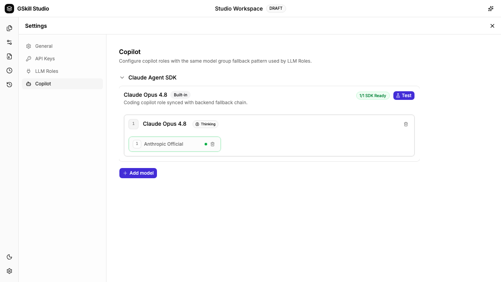
- mock GET /llm/roles/test-results 回含 sdk_evidence.routes 的结果 → 断言挂载后 routeStatusOverrides 回填对应 route 灯;remount 后断言灯仍在(持久化裁决存活)。
- 断言 copilotBackendReadyCount 按 override 裁决数算 N/M(非只 ui_state)。
- 断言 agentStatusForRoute 优先级:testing 严格最高 > 任何 override 裁决(persisted/this-test verdict)> ui_state;有 override 即盖过 ui_state。
- 测过的角色重开 tab,看状态灯仍在。
- 前端契约测:点 Test → 断言 startRoleTestJob 打 POST /llm/roles/{name}/test-jobs、按 500ms 轮询、进度刷灯。
- 后端契约测:断言 _start_role_test_job 见 role_kind=='copilot' 分流 _start_copilot_sdk_test_job(非普通 httpx 探针)。
- 后端单测:run_route_sdk_test 用 _session_factory 注入假 ClaudeSDKClient,token 回显 → ok;token 未回显 → failed;缺 key → failed。
- 后端回归:无 verified profile route 先用 gateway endpoint_method_candidates 选 supported Anthropic Messages method,Qiniu/WaveSpeed/OpenRouter 等第三方 route 可直接进入真 SDK 测试;官方 route 若仍无支持 method,再调用 _ensure_official_role_test_verified_profile,成功后重新 resolve route,SDK Test 看到 deepseek_anthropic_messages 等真实 call_method_id。
- 后端回归:DeepSeek Anthropic probe 对已 canonical 的 https://api.deepseek.com/anthropic 只请求 /anthropic/v1/messages,不重复拼成 /anthropic/anthropic/v1/messages。
- 后端回归:缺 key、timeout、connection、token 未回显、无可用 route 等 Copilot SDK/test-job 诊断直接由后端输出英文,测试断言 user-visible message 不含 CJK;旧持久化 sdk_evidence 里的中文诊断在 /roles/test-results 投影层被后端丢弃为英文 fallback,不交给前端翻译。
- 回归:llm.py 不再含 AsyncAnthropic 假探针(_probe_copilot_sdk_tool_call 已移除)。
- 真跑(用真 key,关键):对一个真 anthropic 兼容 copilot route 点 Test,看 testing→ready,后端日志见 spawn ClaudeSDKClient + token 回显。
- 对一个缺 key 的 route 点 Test,看 unsupported + 英文明确信息;Language=English 时错误 toast/job details 不出现中文。
- 拖序 → 断言 updateRouteOrder 写新 fallback_chain + models[group].providers、触发 onChange。
- 后端契约测:stream_query 多 route 时首条失败 → 断言走 _next_copilot_route 退到下一条(非直接报错)。
- 回归:_resolve_copilot_route(首条函数)无调用方(死代码)。
- 拖动两条 route 换序,保存后刷新看序保持。
- 真跑:首条 route 故意失效,看是否自动退到第二条。
- 断言 appendableRoutes = visibleRoutes 里不在 routeOrder 的;visibleRoutes 来自 routeSupportsCopilotSdk(provider_models[].copilot_sdk_compatible=true,再叠加 tools/tool_use evidence)。
- Add route → 断言追加到兜底序尾;垃圾桶 → 断言从序移除。
- 回归:configured role 的旧 fallback_chain 若含显式 openai_chat_completions/openai_compatible 或 tools=false route,页面不渲染 data-copilot-route-id,ready badge 只按当前 configured fallback_chain 的可见 route 计数。
- 回归:已保存内置卡即使 yaml 插入顺序是 DeepSeek→Claude,页面仍按 Claude→DeepSeek 默认顺序渲染;route chip 顺序优先 fallback_chain,不被 model_groups/providers 候选顺序覆盖。
- 回归:后端投影 copilot_sdk_compatible=true 的 DeepSeek Official、Ark Official、Qiniu/WaveSpeed/OpenRouter 多协议 host route 仍渲染并进入 Add route 候选;copilot_sdk_compatible=false 的普通 OpenAI chat method route 被过滤;未知 method 由后端决定是否保留可测。
- 回归:拖入非 Claude/OpenAI model group 后右侧模型库仍显示完整模型组,但 Copilot 角色卡不渲染不兼容 route。
- 回归:英文 locale 的 copilot 文案无 CJK;Copilot route tooltip / role test 错误诊断由后端源头输出英文,前端不再维护 localizeCopilotRouteDiagnostic 这类中文转英文垫片。
- 回归:无 isClaudeAgentSdkCompatibleRoute 名字启发式(grep 空),且前端无 Anthropic Messages method/protocol allowlist。
- 点 Add route 看候选只含兼容 route。
- 删一条 route 看链更新。
- Settings→Copilot:Claude Opus 4.8 卡在 DeepSeek V4 Pro 之前;DeepSeek V4 Pro 卡按 fallback_chain 显示 DeepSeek Official、Ark Official、Qiniu、WaveSpeed、OpenRouter 等 backend copilot_sdk_compatible route,badge 显示当前链 2/8 SDK Ready,Add route 里保留其余可追加候选;普通 OpenAI chat route 与 tools/tool_use=false route 被过滤;右侧 Available Models 仍显示完整模型库;Language=English 时页面正文/route tooltip 无中文。
- RED:当前 model-group 行 Remove 按钮 disabled 且无 handler → 断言『可点击且清空 model group』失败。
- GREEN:点 Remove → 断言角色 active_model/models/fallback_chain 被清空、退回 EmptyCopilotRoleCard。
- 断言清空后触发 onChange 保存。
- 点一张角色卡的 model-group Remove,看是否退回可重选组的空卡。
- 点 Add model → 断言新增 role id 形如 copilot_custom_{N}、role_kind=='copilot'、fallback_chain 空。
- 断言 N 按已有 copilot_custom_ 角色数递增。
- 后端契约测:put_llm_roles 按 role_kind 归类 copilot(不靠 key 前缀)。
- 点 Add model,看新空卡出现且为 Third-party,且 Add model 仍保持可点击。
- GREEN: assert the empty Copilot role card renders data-model-drop-target and Drop model, not a form/select card.
- GREEN: assert the empty card does not render data-copilot-model-group-select, combobox, or Choose model group.
- GREEN: assert copilotRoleIdFromModelDropTarget resolves from a nested Drop model node to the outer data-role-name like LLM Roles.
- GREEN: assert Add model remains enabled when an empty card already exists.
- GREEN: assert CopilotTab renders data-copilot-available-models-sidebar, right-side model cards expose data-available-model-drag-source / data-available-model-pointer-drag-source, and non-Claude model groups such as GPT 4.1 or Doubao are not filtered out.
- GREEN: assert SettingsPageContent uses the same max-w-6xl + lg:overflow-hidden/lg:h-full fixed-height shell as LLM Roles, instead of a normal whole-page ScrollArea.
- GREEN: assert empty and configured Copilot role cards expose data-model-drop-zone and can receive right-side model drag-in.
- Regression: after drag-in, applyCopilotModelGroupSelection preserves role key, writes active_model/models/fallback_chain, and keeps role_kind as copilot.
- Regression: a dragged-in non-Claude model group renders as a full CopilotRoleCard and does not fall back to EmptyCopilotRoleCard.
- Backend contract test: after drag-in save, the role still belongs to Copilot by role_kind and is not stored as graph-agent.
- Drag a model from the right-side Available Models list into the empty Copilot role card created by Add model; the empty card becomes a configured role card and shows the route grid.
- Drag a model from the right-side Available Models list into an already configured Copilot role card; its single model group is replaced and the route chain is rebuilt.
- Scroll the right-side Available Models list to later providers and confirm the left Copilot role area remains visible in the same viewport.
- After drag-in save, confirm the role remains in the Copilot tab and is not stored under LLM Roles.
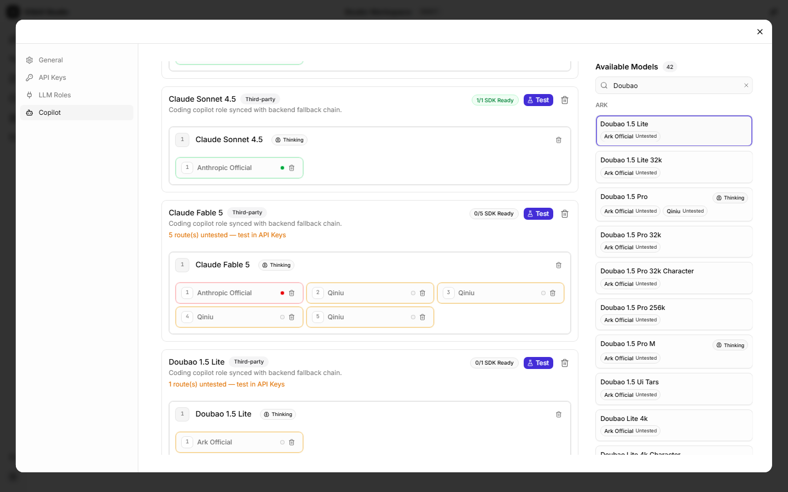
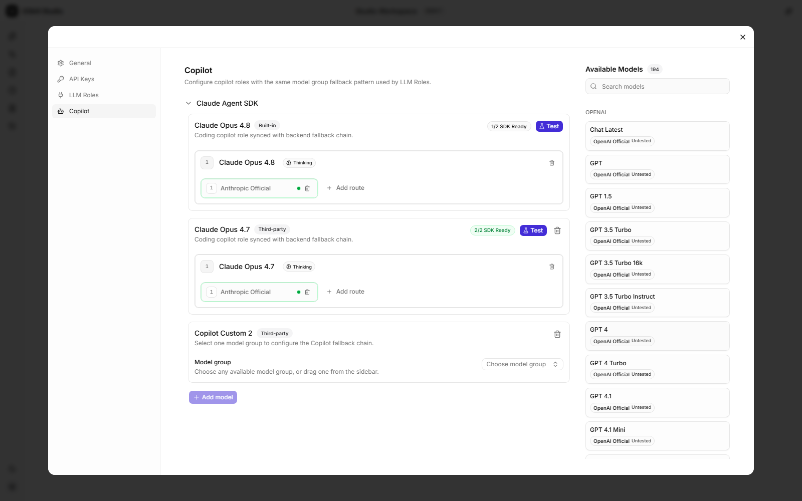
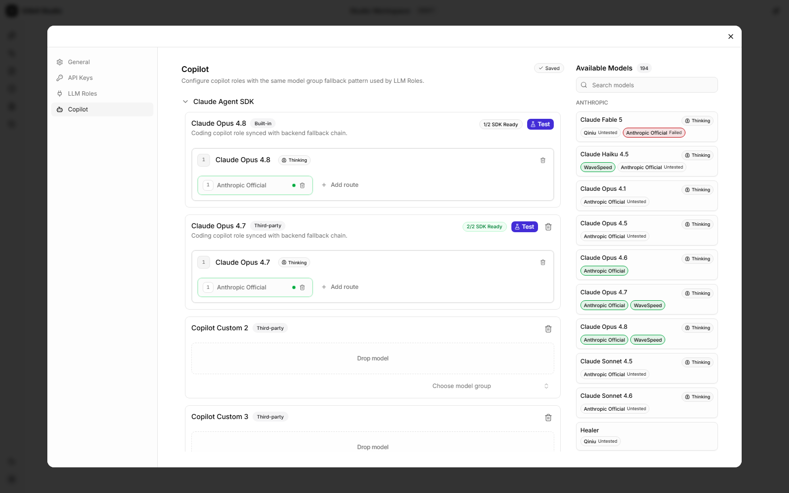
- 第三方卡 → 删除 → 断言弹 requestDeleteConfirmationToast、确认后从 roles 移除、整表 PUT 覆盖。
- Built-in 卡 → 断言不渲染删除按钮(source=='built_in' 不渲染 Trash2)。
- 删除必须经二次确认才触发 onChange。
- 删一个第三方 copilot 角色,过二次确认。
- 看 Built-in 卡有无删除按钮。
- 传 saveStatus='saving'/'saved' → 断言 SaveStatusBadge 渲染对应态(idle 静默不显)。
- 传 error 非空 → 断言渲染错误条(不静默吞)。
- 一致性测:CopilotTab 与 General/API Keys/LLM Roles 用同一 components/ui/save-status-badge.tsx。
- 回归:saveStatus/error 被真实消费(无
void saveStatus; void error)。
- 改角色配置,看徽章 Saving→Saved。
- 断网保存,看是否显式告警。
- 与其它三页并排比 save 徽章样式。
N1 · Init · 发现与初始化
Home/Welcome 屏 · 操作设计
- WelcomePage(Home 屏根组件)在画布面板渲染:品牌头(Layers 图标 + GSkill Studio 标题 + 一句副标题)、一个两列 grid 放 New skill / Open folder 两个 Button、下方 Recent 区标题
- 设计意图:Home = 一个干净的 IDE 起点,New(新建)与 Open folder(打开文件夹)并列、Recent(最近)在下,与 Cursor/VS Code 的 Welcome 一致(R2)
- 要清掉 Recent 区标题右侧那枚无操作价值的「Desktop workspace」装饰标签(Sparkles 图标 + 文字,纯装饰、无 handler);并把「Recent skills」措辞收敛为去注册表语汇(skill 是一个文件夹,不是注册表条目)
- 品牌头/入口不依赖任何后端,纯前端布局
- 符合设计(2026-06-20:代码已落地,design-audit vs code 核实,状态回填)
- 三入口信息架构已落地:品牌头(WelcomePage.tsx:274-282)、New skill / Open folder 两列 grid(WelcomePage.tsx:284-318)、下方 Recent 标题(WelcomePage.tsx:320-322)
- 装饰标签已删——Recent 头区只剩 <h2>Recent</h2>,无 Sparkles 图标、无「Desktop workspace」文字(源码 grep 为 0,只剩测试断言其缺席);措辞从「Recent skills」收敛为「Recent」
- 测试 WelcomePage.test.tsx:97-103「drops the decorative "Desktop workspace" label」通过
- 设计:点 Open folder → OS 目录选择器选任意本地文件夹 → 直接进工作区
- 打开任意文件夹都不被拒(缺 GRAPH.md/SKILL.md 也进,交 compile + copilot 修),且「打开」只记 MRU + 进工作区,不先把文件夹注册到后端
- 点 Open folder → selectSkillDirectory(调 Studio Rust 后端的 select_directory 命令弹 OS 目录选择器的函数,默认目录来自 app 设置的 default_skills_directory)选一个文件夹 → openSkill(把一个工作区路径打开进工作区的例程)
- 设计意图分两条铁律:① D2(不卡导入决策:打开任意文件夹都不被拒,缺 manifest 交 compile + copilot 修)——前端绝不因「缺 GRAPH.md/SKILL.md」弹拒绝 toast,也不保留 manifest/lint 校验文案(那些分支在 D2 后是死代码);只在 OS 级失败(路径不存在/非目录)时报错
- ② D12(写盘全量走 Rust 决策:本地文件读写经 native-fs,仅 engine/gateway 用 Python sidecar)——「打开文件夹」应解耦成「记 MRU(rememberWorkspace 写 localStorage)+ 进工作区(onSelectSkill)」,落盘/解析走 Studio Rust 后端的 native-fs,不再先 POST /api/skills 把文件夹注册进后端注册表
- 术语统一为「打开文件夹」(Open folder),去掉「import」旧注册表词
- 符合设计(2026-06-20:代码已落地,design-audit vs code 核实,状态回填)
- 打开已与注册解耦、改走 Studio Rust 后端 native-fs:openFolder(WelcomePage.tsx:256-269)→ selectSkillDirectory → openSkill(185-196),openSkill 里 resolveBackendSkillIdForWorkspace 现调 openSkillWorkspace(Rust native-fs,WelcomePage.tsx:181;lib/tauri.ts:161-168),不再 POST /api/skills;并 rememberWorkspace 记 MRU(line 188)
- Rust open_skill_workspace_impl(native_fs.rs:1483-1502)只做 OS 级检查、不校验 manifest(D2),命令已注册(lib.rs:347)——设计原标「命令未实现」的后端缺口已补齐
- manifest 拒绝死文案已删:formatImportSkillError(144-146)只透传原始 OS 错误,WelcomePage 内无 live apiClient/fetch/.post(grep exit=1)
- 测试「renders Open folder as the local workspace entry point」「does not present missing GRAPH.md…as a blocker」通过
- Recent 卡片只读 useRecentSkills(localStorage 里 recentWorkspaces 这条 MRU 的读写 hook,条目含 absolutePath 绝对路径 / displayName 显示名 / identity 去重键 / lastOpenedAt 最近打开时间,上限 10)
- 每张卡渲染:displayName(显示名)+ shortPath(短路径)+ 最近打开时间
- 设计意图按 D-1-1(Recent 卡片极简决策:只存路径 + 名,删 Config drift 徽章)与 D11(无聚合注册表):卡片是 MRU 投影,不挂任何要靠 GET /api/skills 聚合才有的派生字段
- 要拆掉现状 visibleWorkspaces(把 MRU 与注册表合并的 memo)里「按目录路径匹配 SkillSummary、再追加注册表里 MRU 没有的 skill」这套注册表合并逻辑——Recent 只来自 MRU,不来自注册表
- 符合设计(2026-06-20:代码已落地,design-audit vs code 核实,状态回填)
- Recent 已是纯 MRU 投影:visibleWorkspaces(WelcomePage.tsx:162-167)只把 recentWorkspaces 映射成 {absolutePath, displayName, identity, lastOpenedAt},不再 merge GET /api/skills、无 useSkills() 调用(grep exit=1),SkillSummary 仅作类型引用
- 卡片只渲 displayName(365)、shortPath(367)、lastOpenedAt(400)——源码无 phase_count/has_golden/config_mismatch/Golden/Config-drift 任何注册表派生字段(D-1-1)
- 注册表合并逻辑已拆除,去注册表收尾完成
- 测试 WelcomePage.test.tsx:113-122「does not project registry-derived phase / Golden / Config drift fields」通过
- 设计:点一张 Recent 卡片即回到那个 skill 的工作区
- 只靠 MRU(路径 + 名)就能进入,后端不可用时也能打开
- 点卡片 → openWorkspace → openSkill(打开进工作区的例程,同 #2 复用)→ rememberWorkspace 刷新该条 MRU 的最近时间 → onSelectSkill 进工作区
- 设计意图(D11):进入只需 MRU 的路径 + 名,gateway 后端 sidecar 不可用也能进(后端只在进工作区后按需对接);打开失败(如路径已不存在)走失效路径处理(见 #6)
- 同 #2,目标是解耦 POST /api/skills 注册、落盘走 Rust
- 符合设计(2026-06-20:代码已落地,design-audit vs code 核实,状态回填)
- 点 Recent 卡 → onClick 调 openWorkspace(WelcomePage.tsx:350,198-202)→ openSkill,走与 #2 同一条 Rust openSkillWorkspace 路径(line 181)+ rememberWorkspace 刷新 MRU(188),不再 POST /api/skills;Rust native-fs 是本地命令,gateway 后端不可达也能进
- Rust open_skill_workspace 已注册(lib.rs:347)、impl native_fs.rs:1483——设计原标「命令未实现」缺口已补齐
- 复用 openSkill,符合设计
- 点 Reveal → handleReveal → revealInFileManager(调 Studio Rust 后端 reveal_in_file_manager 命令在 Finder/Explorer 里定位路径的函数;非桌面态降级把路径复制到剪贴板)
- 纯定位操作,不改任何状态
- 设计意图:保留 Reveal(这是 Cursor 同款、无害的本地操作),它走 Studio Rust 后端 native-fs,不碰注册表
- 设计:移除 IDE 内的「删除 / 移除 skill」入口(不再调 DELETE /api/skills 注销)
- 抄 Cursor:不在 IDE 内删 skill(要删请去系统文件夹删)
- Recent 里的失效条目(路径已不存在)改为「点击时报错 + 自动从 MRU 移除」
- 现状:用户点卡片 ⋯ 菜单的「Remove」
- 目标:无此删除入口;触发点变为「点一张失效卡片」
- 目标(R1:删 Delete 决策——抄 Cursor,不在 IDE 内删 skill,要删去系统文件夹):移除卡片 ⋯ / 右键菜单里的 Remove 项,并停止调 DELETE /api/skills(delete_skill 只注销不删盘,但 R1 要 IDE 内根本不提供删除)
- 失效路径处理改为:点一张 Recent 卡片时若其 absolutePath 已不存在,弹一条「该文件夹已不存在」错误 toast,并把这条从 MRU 移除(removeWorkspace + 接上现成但当前未被调用的 pruneMissingRecentWorkspaces——按 exists 谓词剪掉 MRU 里路径失效条目的助手)
- 设计意图:IDE 不充当 skill 的生命周期管理器,只维护「最近打开过哪些文件夹」的轻量 MRU;失效项自然清理而非用户手动删
- 符合设计(2026-06-20:代码已落地,design-audit vs code 核实,状态回填)
- R1 已满足:Recent 卡的 DropdownMenu/ContextMenu 只剩 Reveal 项(WelcomePage.tsx:389-393,406-409),全仓无 handleDelete/deleteSkill/requestSkillDeleteConfirmation/DELETE /api/skills(grep)——IDE 内删除入口已移除
- 失效 MRU 自动清理已接线:useRecentSkills 在挂载时 useEffect 调 pruneMissingRecentWorkspacesAsync(useRecentSkills.ts:127),底层走 Rust workspace_path_exists(native_fs.rs:1505,注册 lib.rs:348;lib/tauri.ts:175)——设计原标「命令未实现」的 exists 后端缺口已补齐
- 实现选了「冷启动主动剪枝」而非设计字面的「点击时报错+移除」,两者同一设计意图(自动清理失效、不提供手动删除)
- 测试「removes the Remove entry…(R1)」(WelcomePage.test.tsx:124)、「drops entries whose folder no longer exists」(useRecentSkills.test.ts:60)通过
- 可见列表为空且无加载错误时,渲染一张空态卡(Empty 系列组件:标题 + 说明 + 媒体图)
- 设计意图:空态文案应是 IDE 起点语气——引导「新建 skill / 打开文件夹」,与 Cursor 的「Open a folder / Open Recent」一致(R2)
- 要把现状「Create or import a skill to populate this workspace」里的「import」改成「打开文件夹」(open folder),术语与 D2/IDE 模型对齐;空态的可见性判断不应再依赖注册表(改看 MRU 是否为空)
- 符合设计(2026-06-20:代码已落地,design-audit vs code 核实,状态回填)
- 空态(WelcomePage.tsx:416-426)在 !isHydrating && visibleWorkspaces.length===0(MRU 判定、非注册表)时渲染
- 文案已去注册表化、改 IDE 起点语气:标题「No recent skills」(422),说明「Create a new skill or open a folder to get started.」(423)——源码无「import」、无「No skills found」、无「Create or import」(grep 为 0)
- 测试「shows an IDE-start empty state without "import" wording when the MRU is empty」(WelcomePage.test.tsx:174-182)通过
- Recent 区数据未到位时(loading 态)先渲染若干卡形状的骨架占位条,数据到了换真卡
- 设计意图(D6:骨架 + 懒加载决策——后端相关组件在数据未到时显示骨架占位,避免空白闪烁):Home 在 sidecar 拉起期间不应是空白,用 shadcn Skeleton 占位(沿用 Settings 页 ProviderListSkeleton 的占位风格,不自造组件)
- 骨架是纯前端展示、不发请求
- 注:去注册表后 Recent 主要来自 localStorage MRU(本地秒读),骨架主要覆盖「冷启动 / 路径校验 / 进入工作区前」这段过渡态
- 符合设计(2026-06-20:代码已落地,design-audit vs code 核实,状态回填)
- RecentSkeleton 组件已存在(WelcomePage.tsx:457-473),用共享 shadcn Skeleton 原语(import line 38),在 isHydrating 为真时渲染(WelcomePage.tsx:339-340)
- useRecentSkills 暴露 isHydrating,首次绘制起为真、直到确认读完 localStorage(useRecentSkills.ts:113,120),覆盖冷启动过渡态(D6)
- 测试「renders a Recent skeleton placeholder during the cold-start hydration window」「renders the standalone RecentSkeleton from the shared shadcn Skeleton primitive」(WelcomePage.test.tsx:184-199)通过
- Recent 数据源(现状 GET /api/skills)报错时,在 Recent 区显示一个局部红框错误提示;品牌头与 New skill / Open folder 入口照常可点
- 设计意图:失败退路是局部的——Recent 拉不到不该让整个 Home 不可用,新建/打开必须随时能用(D11 的「后端不可用也能新建/打开」)
- 这条是已符合的失败退路,去注册表后错误源从 GET /api/skills 变为 MRU/路径校验,但「局部红框 + 不阻塞入口」的设计不变
- 符合设计(skillListError 时显示局部红框、不阻塞新建/打开入口)
- 去注册表后只需把错误源从 GET /api/skills 切到 MRU/路径校验,设计不变
新建 Skill 对话框 · 操作设计
- 点 New skill → openNewSkillDialog(打开新建对话框前重置表单的函数):把 newSkillName 置为「new-skill」、清 newSkillParentDirectory(已选父目录)、清 newSkillError(上次错误),再把对话框开关置 true
- NewSkillDialog 以受控对话框渲染
- 设计意图:每次打开都是干净表单,不带上次的残留;对话框是覆盖在 Home 上的模态,Cancel 关闭、Create 提交
- 名字输入框双向绑 newSkillName 状态;提交时 normalizeSkillId(把任意输入规范成合法 skill id 的纯函数:小写化、空格转连字符、保证首字符是字母,空则回退「new-skill」)
- 设计意图:用户填的是人类可读名,后端要的是规范 id;规范化在前端做、即时可预期
- 名字为空时提交报「Name is required」
- 点 Choose folder → chooseNewSkillParentDirectory → selectSkillDirectory(调 Studio Rust 后端 select_directory 命令弹 OS 目录选择器的函数,默认目录传 defaultSkillParentDirectory,来自 app 设置 default_skills_directory)→ 选中则写 newSkillParentDirectory,父目录输入框只读显示
- 设计意图:父目录选择走 Studio Rust 后端 native-fs 的目录选择器(已实现),前端只持有选中路径;父目录可空(空则后端按默认 skills 目录建)
- 设计:点 Create → 建 skill 文件夹 + 写脚手架(按 logic→agent 模板)+ git init + 直接进工作区
- 脚手架是非空文件夹、且新建不调 copilot;写盘走 Studio Rust 后端 native-fs
- 点 Create → submitNewSkill(提交新建的函数):规范化名 → 建 skill(目标走 Studio Rust 后端 native-fs 的建目录/写脚手架/git init 命令)→ openSkill 直接进工作区
- 设计意图两条:① D-1-4(脚手架 logic→agent 模板决策):新建出来的 skill 不是空文件夹,而是一份可直接编辑的 agent 模板脚手架,且新建过程不调 copilot(脚手架是模板生成、非 AI 生成)
- ② D12(写盘全量走 Rust 决策):建目录、写脚手架文件、git init 都应是 Studio Rust 后端的本地文件命令,不再走 Python 的 POST /api/skills 落盘
- 非空目标文件夹应被拒(不在已有内容上建新 skill)
- 符合设计(2026-06-20:代码已落地,design-audit vs code 核实,状态回填)
- submitNewSkill 已改走 Studio Rust 后端 native-fs、不再 POST /api/skills:WelcomePage.tsx:243 调 createSkillWorkspace(...) → 包装器 lib/tauri.ts:149 调 Rust create_skill_workspace;Rust 独占写盘 create_skill_workspace_impl(native_fs.rs:1439)建目录 + 脚手架循环(native_fs.rs:1458)+ git init,设计原标「未实现」的 Rust 落盘命令已补齐(D12)
- 脚手架是 D-1-4 的 AGENT 模板(GRAPH.md + phases/init/SKILL.md 含 <role>/<goal>/<step>/<protocol>),非 logic 相位(scaffold_files_for native_fs.rs:1155-1163;测试断言生成 agent SKILL.md 且无 LOGIC.md/actions,native_fs.rs:2680-2692,通过)
- 新建不调 copilot(WelcomePage.tsx:239 注释 + grep 零 copilot 调用);非空目标文件夹被拒(native_fs.rs:2761 测试通过)
- buildSkillCreatePayload/api.post('/skills') 已不在创建流中
- 实测:9/9 Rust create_skill_workspace 测试 + 30/30 WelcomePage.test.tsx 通过
- Create 失败 → 在对话框内显示一条精炼错误
- 设计意图(D2:不卡导入决策):新建只应因 OS 级原因失败——父目录不存在、路径非法、目标文件夹非空(不在已有内容上建);不应再用 manifest/lint 校验类文案(那是注册表/校验门时代的退路)
- 要把 formatCreateSkillError(格式化新建错误的函数)里走 firstLintErrorMessage(从后端 lint 详情里抽第一条错误的函数)的 MANIFEST_VALIDATION_FAILED 分支收掉,只留 OS 级失败
- 符合设计(2026-06-20:代码已落地,design-audit vs code 核实,状态回填)
- formatCreateSkillError 现只处理 OS 级码(SKILL_ALREADY_EXISTS、INVALID_DIRECTORY_PATH)再 fall through 到 errorMessage,MANIFEST_VALIDATION_FAILED / lint 分支已删(WelcomePage.tsx:114-129,注释 122-127「create path surfaces only OS-level reasons」);firstLintErrorMessage / cleanLintMessage / relativeLintFile 符号在 apps/studio/frontend/src 已全无(grep 0,D2 死分支清除)
- 后端「tmp-lint raise」缺口已变 moot:创建不再走 Python POST /api/skills,改走 Rust native-fs(不做 manifest lint),唯一可达错误码即 OS 级
- 测试 WelcomePage.test.tsx:330-339(原始 Rust 串原样透出)、:341-360(结构化 MANIFEST 负载不再产出 lint 文案)通过(30/30)
Workspace 外壳 · 操作设计
- Workspace(工作区根组件)用 currentSkillId(从 navStack 末项经 resolveWorkspaceIdentity 解析出的当前 skill 身份)决定画布面板渲什么:settingsOpen 则渲 Settings;否则 currentSkillId 非空且有打开文件渲 SplitEditor、currentSkillId 为 null 渲 WelcomePage(Home 屏)、其余渲 GraphCanvas(图画布)
- 设计意图(D11):Home 与工作区不是两套页面,而是同一个壳的两种状态——只有画布面板内容在换,壳框架(Header)始终在;Toolbar 与 Copilot 面板在无 skill 时按状态隐藏(见 #18/#21)
- 注:WelcomeScreen.tsx 是一个 no-op 孤儿包装(把 onSelectSkill 传成空函数),真实挂载是 Workspace 里直接渲 WelcomePage——孤儿待删
- 符合设计(currentSkillId 为 null 在画布面板渲 WelcomePage,否则渲工作区内容,同壳换画布)
- 唯一边角:WelcomeScreen.tsx no-op 孤儿包装待删
- Workspace 里一个以 skillId 为依赖的 useEffect(React 副作用钩子):skillId 为 null(回 Home)时 navStack 置空、activePanel 置 null、copilotOpen 置 false;进入 skill 时 navStack 置 [skillId]、activePanel 置 assets、copilotOpen 置 true
- 另一个以 currentSkillId 为依赖的 effect 清 runId(当前运行)与选中的测试输入
- 打开文件 / 分屏 / 选中则在 nav 推/退(pushNavSkill / popNavTo)时清
- 设计意图(D11:IDE/workspace 模型锁定决策——一窗口专注一个 skill):切 skill 等于换一个干净工作台,上一个 skill 的面板/选中/分屏不许残留
- 符合设计(skillId 切换的 useEffect 重置 navStack/activePanel/copilotOpen;nav 推退清打开文件/分屏/选中)
- 这是 D11 强隔离的直接实现机制
- Workspace 渲染:全宽 Header(顶栏,含 Back-to-Home、Copilot 开关、Settings 入口等)+ 下方 Toolbar(左侧竖排工具条,固定 12 单位宽,始终在)+ 一个水平 ResizablePanelGroup(可缩放面板组)
- 三栏:左面板(left-panel,仅当 activePanel 非空才挂载,装文件树/属性/IO/时间线/本地历史)、画布(canvas,始终在,装图/编辑器/Home/Settings)、Copilot UI panel(仅当 copilotOpen 才渲染右侧面板)
- Copilot 的 controller/useCopilot 随 currentSkillId 在 Workspace 级挂载,因此会话加载/WS 生命周期绑定打开/关闭 skill,不绑定面板展开/收起
- 设计意图(D11):一个持久的 IDE 壳框架,左 dock 可开合、Copilot 可开合,画布是中心
- Toolbar 渲染五个 PanelKind(面板种类:assets/properties/input/timeline/local-history)按钮,每个 onClick 是 onPanelChange(点的是当前激活面板就传 null、否则传该面板)= toggle
- onPanelChange 接 setActivePanel(设置当前左面板的状态);activePanel 既决定左面板渲什么内容,也决定左栏存不存在(为 null 时左栏不挂载、画布变宽)
- 运行类动作也会程序化把 activePanel 设为 timeline
- 设计意图(D11):左 dock 是单选 + 可收起,用一个 activePanel 状态统一驱动
- 点 Layers logo → onHome → handleHome(回首页的处理函数):先 setSettingsOpen(false) 收起 Settings overlay,再 onCloseSkill() → App 把 currentSkillId 置 null → 触发 #16 的 skillId effect 走 Home 分支(navStack 空、activePanel null、copilotOpen false),左栏与 Copilot 栏卸载、画布渲 WelcomePage
- 设计意图(D11):Back-to-Home 是退出专注模式的唯一出口,把工作态整组卸载;与 Settings 的 X(只收浮层、不退工作区,见 #20)是两条不同语义,Home 多走一步卸载工作区
- Header 的 Settings 入口 → setSettingsOpen(true) 单向打开;Toolbar 的 Settings 齿轮 → setSettingsOpen(open => !open) 做 toggle
- 打开时仅在画布面板里把内容换成 SettingsPage(Settings 壳层根组件),左面板(left-panel)与 Copilot 栏(copilot)是同级的兄弟 ResizablePanel、settingsOpen 不动它们,故照常挂载;currentSkillId 不变,工作区不卸载
- 再次点 Toolbar 齿轮或打开文件都会 setSettingsOpen(false) 收起 Settings,只把画布换回原内容
- 设计意图(D11/Q3):Settings 是工作区内的一个浮层配置态,不是退出工作区;与 Back-to-Home(#19,卸载工作区)语义相反
- (Settings 这层壳本身的设计见 N0 Settings 节点
- )
- copilotOpen 状态初始为「有没有 skill」,#16 的 skillId effect 在进入 skill 时置 true、回 Home 置 false;copilotOpen 为真时右侧挂 ResizablePanel 装 CopilotPanel(Copilot 面板组件,props 含 skillId/workspaceRoot/view)
- Home(skillId 为 null)时 copilotOpen 为 false,故 Home 无 Copilot 栏
- 新建空 skill 进入也 copilotOpen=true(effect 的进入分支不看 skill 内容)
- Header 的 Sparkles 按钮可手动 toggle copilotOpen
- 设计意图:Copilot 是工作区专属、随进入即在;Home 是入口屏、无 Copilot
- (Copilot 自身的对话/连接归 copilot-assist 能力
- )
- 桌面态按 D8(copilot 退出恢复决策:退出再进恢复对话一模一样)实现为两层真相:① session transcript 历史库:copilotStore 的 persistSessionToDisk 经 writeWorkspaceFile(Rust native-fs 封装)把会话落到 .workspace/copilot/sessions/<skillId>/<会话id>.json,由显式 New chat、首条消息物化临时草稿、appendMessage 与 updateMessage(流式结算)触发;② 窗口状态:同目录 _window.json 记录 openSessionIds + activeSessionId,由 new/switch/close/restore 持续更新
- 再进 / 冷启动时 hydrate 只按 _window.json 读取对应 session 文件并恢复打开的 tab 集合与活跃 tab,不会扫描目录恢复全部历史
openSessionIds=[]是合法窗口状态:面板显示不落盘的临时草稿 tab,用户首条消息才创建真实 session 文件并写回窗口状态- 关闭 tab 只从窗口状态移除,不删除 transcript;关闭最后一个 tab 写空窗口状态、不补新空文件;Restore chat 通过原生文件选择器默认打开本 skill session 目录,选中合法 <sessionId>.json 后加回窗口
- 设计意图(D8):Copilot 对话是用户资产,历史记录不能因关闭 tab 被删;窗口恢复必须等于上次打开状态
- Web/非桌面态没有 native-fs,会话退化为内存、刷新即丢——这是 MVP1 桌面优先的设计边界(可接受)
- 符合设计(桌面态:copilotStore 经 Rust native-fs 把会话落 .workspace/copilot/sessions/<skillId>/<id>.json,并用 _window.json 恢复上次打开的 tab 集合+活跃 tab;关闭 tab 不删 transcript,关最后一个写空窗口状态且不补新空文件,Restore chat 手动加回历史;回 Home 卸载 skill 后下次按窗口状态恢复)
- 此结论以真代码为准,纠正旧审计稿「纯内存全丢」与 spec 滞后的「未实现」标注
- Web 态内存优先、刷新即丢=桌面优先设计边界(可接受)
- RuntimeGate(应用根处理 sidecar 配置解析的包装)已退役为非门:RuntimeShell(其内层)永远先渲染壳 children,壳/FS 立即可用;只在底部中央渲一个非阻塞横幅——加载中显「Connecting to backend…」、失败显「Backend unavailable — some features are disabled.」+ Retry,就绪则无横幅
- initializeRuntimeConfig(解析 sidecar 地址/令牌的函数,Tauri 下取 Studio Rust 后端 get_sidecar_config)在副作用里跑、失败标 degraded 但不挡渲染
- 设计意图(D10:后端三分 + 非全屏启动门决策——启动期 sidecar eager-spawn,壳/FS 立即渲染,调 sidecar 处用骨架,不做全屏 splash gate):应用一打开就能用,后端起没起只是局部可观测信号;sidecar 的 eager-spawn 本身归平台(Studio Rust 后端 / 04_platform)
- 符合设计(RuntimeGate 退役:RuntimeShell 永远先渲壳、仅底部非阻塞横幅显连接状态 + Retry,从不全屏门)
- 组件名 RuntimeGate 保留属历史命名,功能上已是连接状态横幅、非门——可视为待重命名的小尾巴
- 用户在 Copilot 面板收发消息:流式输出时不动=贴底跟随;上滚翻旧消息=释放跟随+回底按钮;点回底按钮恢复跟随
- 输入:Enter 发送、Shift+Enter 换行(IME 组合中 Enter 不发送)
- 消息区用 src/components/ui/message-scroller.tsx 的 shadcn 风格封装(MessageScrollerProvider autoScroll + Viewport + Content + Item(scrollAnchor=用户消息) + 回底 Button),面板不再用裸 overflow-y-auto 承担主滚动(FRONTEND_UI_SPEC §2.6)
- composer:textarea 默认 min-height≈3 行、field-sizing-content 自增到 ~160px 后内部滚动;**盒内**右下角发送按钮;**盒外下方一行**右侧 = route 下拉(ModelPicker,兜底链 ≤1 隐藏)+ role 下拉(RolePicker),左侧预留给 F7 附件/@mention(可用才渲染);Attach file / Add context 占位死按钮按设计源 §4 决策删除(上下文统一走 @mention,图片走拖拽/粘贴,后者不在本原子范围)
- 设计源:docs/studio/mvp1/03_regions/copilot/mvp1-alignment.md F6
- 符合设计(2026-07-02 布局按 PM 截图纠正:发送移入输入框盒内、route/role 移到盒外下方、ModelPicker 无 role 或 ≤1 条链时不再渲染禁用占位)
- 滚动/三行/Enter 语义沿 2026-07-01 落地
- 同步契约四条(设计源 F3):① composer 只列已绑定 model group(fallback_chain 非空)的 copilot 角色,空草稿卡(copilot_custom_N 未选组)不出现;② 无持久化 copilot 角色时,浮出内置默认(atom-56 语义)同样出现在 composer,首发消息=「动了」→ 先 buildCopilotRoleEntry + copilot_<slug> key 经 PUT /api/llm/roles 物化,再以持久化 key 发送;③ 默认选中=派生列表第一项,删除写死的 copilot_chat 前端默认常量(不向后兼容);④ roles_changed/registry_changed 事件刷新
- route 下拉可用性用 registry provider_routes 投影;不得读 GET /registry 的 roles 物化投影当第二份 role 真相
- 符合设计(本轮收敛):copilotRoleOptions 改为 deriveCopilotDisplayRoles 配置完成子集(fallback_chain 非空,空草稿排除、浮出内置保留);标题查找扩到全量 model_groups(非 anthropic 候选组也按 display_name 显示,与 Settings 卡一致);route 下拉吃选中显示角色 fallbackChain + registry provider_routes 投影,registry.roles 第二真相读取已删;resolveCopilotSendRole 在首发消息时物化浮出角色(copilot_<slug> + buildCopilotRoleEntry,PUT /api/llm/roles);DEFAULT_COPILOT_ROLE=copilot_chat 常量已删
- 真机验证:composer 菜单 = Settings 卡(Claude Opus 4.8 / 4.7 / Sonnet 4.5)完全一致
- 设计(F7,PM 2026-07-02,target-design + 2026-07-06 更正):composer 三个待落地控制,各自独立 PR 全栈落地——① @mention 弹出器(@ 触发节点选择 popover,选中插入 token + mentions 随 Copilot WS message payload 显式发送;不得恢复 view-context POST 或选中态自动同步);② 附件按钮(外部文件/图片:文件选择+拖拽+粘贴 → ws payload 内容块 → 后端转 claude_agent_sdk ImageContent;§4 旧「砍掉 Attach file」已被 PM 反转);③ 停止按钮(流式中发送变停止,ws interrupt 控制消息 → ClaudeSDKClient.interrupt())
- 可用才渲染,不留死占位
- 设计源 docs/studio/mvp1/03_regions/copilot/mvp1-alignment.md F7(三条机制与链路、格式约束、降级提示)
- 落地顺序按后端工作量升序:mention(后端已就绪)→ interrupt(ws 控制消息)→ attach(内容块通路)
- target-design:前端三个控制均未实施;后端 mentions 层已就绪,interrupt 通道与附件内容块通路未实现
- 按 F7 分三个 PR 落地
- 设计(R3,PM 2026-07-02 视觉反馈;2026-07-05 session 窗口状态修订):① 连接状态不占独立一行(open 时不显示,断连才在标题旁显示紧凑 chip);② 会话 tab 条始终显示、单行横向滚动(ScrollArea 隐藏原生滚动条)+ 真实 tab 关闭按钮(关闭仅从 _window.json 窗口状态移除、不删 transcript,关最后一个写空窗口状态且不补新文件,空窗口显示不落盘临时草稿,首条消息才物化,关活跃 tab 激活前邻居)+ 右侧 + 动作菜单(New chat / Restore chat);③ 消息左右气泡布局(用户右对齐 bg-muted 气泡,助手左对齐纯排版,无 You/Copilot 标签/状态字/头像列);④ 发送到首个正文 token 之间必须有 Thinking 指示(事件前空窗 + running 无正文两段都盖);⑤ 排版 text-sm leading-relaxed
- R4 追加:thinking 用 shadcn shimmer 文字;视口 p-4/gap-3 放宽边距;引入 shadcn tailwind 工具包激活 shimmer/scrollbar/scroll-fade;后端系统提示词加「语言跟随用户」规则(hello 不再回中文)
- 设计源 03_regions/copilot F1(状态 chip + tab 条)与 F6-⑥⑦⑧(气泡/thinking/排版)
- 落地组件:components/ui/message.tsx(shadcn message 原语,align start/end)、ui/spinner、ui/scroll-area、ui/dropdown-menu;store 的 closeSession 只更新 _window.json,restoreSessionFromFile 校验所选文件属于当前 skill session 目录且文件名与 session id 匹配;SessionTabs 在 sessions=[] 时渲染临时 Chat 1 草稿并保留 + 菜单;useCopilot 调 selectFile 默认打开 .workspace/copilot/sessions/<skillId>,并由 Workspace 级挂载保证 panel 收起不卸载会话/WS
- 符合设计
- 真机验证:header 无 open 行;用户气泡贴右(gapRight 12px vs gapLeft 173px);无 You/Copilot 标签;tab 条单行(sh==ch==24)带关闭按钮、关闭即移出当前窗口;空窗口仍显示临时 Chat 1 与右侧 + 菜单;右侧 + 是 New chat / Restore chat 动作菜单;Thinking 从发送 +0ms 可见到首正文 token(暖会话 ~440ms,冷启动覆盖 spawn 全程)
- R4:shimmer thinking、p-4/gap-3、语言规则(test_copilot_system_prompt 锁)已落地
- 助手消息按 events 数组重建分段转录(components/copilot/transcript.ts buildAssistantTranscript):连续 text_delta 归并为一个 markdown 段、连续 thinking_delta 归并为一个 Thought 块、其余事件按时序插段——不再把整段 content 渲染在事件区上方(时序错乱)
- delta 经 useCopilot flushDeltaQueue 以 ~75ms 窗口合并入 store(text 与 thinking 同一队列,跨窗口并入尾事件,事件数有界);消息状态机 assistantMessageAfterEvent 只被 done/error 驱动(旧 bug:context_resolved 的事件级 success 覆盖消息状态,thinking 指示当场消失)
- 设计源:docs/studio/mvp1/03_regions/copilot/mvp1-alignment.md F8
- 无
- thinking 为 CLI summarized 档(能拿到的最大暴露);后续停止按钮(F7-③)基于同一 ws 流
- session-tabs.tsx:纯函数 consumeHorizontalWheel(仅在有横向溢出且 |deltaY|>|deltaX| 时把 deltaY 加到 scrollLeft 并消费事件);SessionTabs 以原生 wheel 监听(passive:false 才能 preventDefault)接到 ScrollArea viewport;溢出可见性用本地 ui/scroll-area 的 ScrollBar(orientation=horizontal,Radix type=hover 悬停才出)细样式 h-1.5;组件拆 SessionTabsView(无 hooks 纯展示)供元素树交互测试
- 设计源:docs/studio/mvp1/03_regions/copilot/mvp1-alignment.md F1 R5-B 约束
- copilot-panel.tsx:registrySettled/rolesSettled 两个布尔在各自 fetch 的 finally 落定;设置行
settled ? <ModelPicker/>+<RolePicker/> : <Skeleton aria-label="Loading copilot roles" h-7 w-32/>;role-picker.tsx 图标 BrainCircuit(lucide) - **R6-1(PM 2026-07-02「删了 role 后模型选择消失,要求不管怎样都显示」):RolePicker 永不返回 null——0 个可用角色→禁用态空锚点(BrainCircuit + 「No copilot role」+ tooltip 指向 Settings),≥1 个→下拉(1 个时锚点+角色名仍可见);推翻旧「options ≤1 render null」
- ** 设计源:docs/studio/mvp1/03_regions/copilot/mvp1-alignment.md F3 约束 5/6/7
- 助手回复:标题分级加粗、有序/无序列表带标记、代码块 mono 字体 + muted 底 + 边框、inline code 圆角底、引用左竖线、链接 primary 色;「本轮注入」「Thought」「Exploring/Explored」等次级卡片标签淡一号,hover 恢复;工具失败仍红
- 用户消息 = muted 圆角气泡(Bubble 原语)
- 根因:旧
prose prose-sm …类全是死类(@tailwindcss/typography 从未安装),markdown 一直是浏览器默认样式 - 修法 = index.css 自建
.copilot-prose(h1-h4/ul/ol/code/pre/blockquote/a/table 全语义 token,不装插件避免其自带灰阶第二世界;index.css 顺带去重 double shadcn/tailwind.css import);次级卡 summary 统一 text-muted-foreground + hover:text-foreground(tool-call-bubble.tsx 同步,失败保持 destructive);新增 ui/bubble.tsx(shadcn Bubble/BubbleContent,cva variant+align) - 设计源:mvp1-alignment.md F6-8/F6-10;规则回写 FRONTEND_UI_SPEC(禁 prose 类)
- 助手身份 + 面板入口(F1 约束,PM 2026-07-02 R5-E「要织神之类的美好神话人物名」→ 定名 MoirAI;「找一个类似 m 的星座图标」「把开关换成圆形 m 图标放 canvas 上,点击展开做过渡动画,再点收起」「裸 icon 贴背景看不清」):MoirAI = 古希腊命运三女神 Moirai(Clotho 纺 = 设计 skill / Lachesis 量 = 编译修 bug / Atropos 剪 = 整体 eval),现只 Clotho 落座、余二为保留席;双关 Moir-AI
- 功能域名称(Settings Copilot tab、copilot_* role key、API 路径)不改
- 面板 header 右侧的外部终端入口是 Open in 菜单,可选 Claude 或 Codex
- 面板 header = Cassiopeia 五星连线标(一形三读:M / 星座 / DAG)+「MoirAI」(AI 浅紫);顶栏 Sparkles 删除,开关移到画布 = 圆形 FAB(收起态浮现),PM 定型:默认右上、画布内可自由拖动、小尺寸(36px)无边框、配色同面板(底 --studio-canvas-surface + 标浅一号 --studio-canvas-accent-strong,像把 header logo 摘到画布上)
- header 右侧无活跃 ahd 时点 Open in 菜单,弹出 Claude / Codex 两项,各自打开对应 ah master;活跃判定必须同时读到 ahd inventory 与 master tmux session
- 检测到对应 config 双探测活跃后同一位置切成运行中菜单(触发文案 Close Claude / Close Codex / Close assistants),菜单内提供 Attach Claude / Attach Codex 重新 attach 到已有 master pane,以及 Close 动作 stop 对应 ah
- workspace 内只允许一个 ahd:同 assistant 已活跃时 Open 只 attach,另一个 assistant 已活跃时禁止再 start
- ahd-only、master-only 或 worker tmux 残留都先清空 Studio-managed ah 再重开;stale 判定与清理只发生在 Open 前 prepare、Attach、Close、app quit 这些用户动作时机——
ah events快照只投影状态、绝不触发清理,因为冷启动窗口(inventory 已 ACTIVE、master tmux 未起)与 stale 在快照布尔上同形,事件驱动自动清理会杀掉正在启动的 runtime(2026-07-06 诊断,详见 ah-orchestration-design.md §4) - Attach 是“回到目标窗口”的操作:如果同 workspace+assistant 的终端窗口已打开,只激活到最前面;如果用户已经关闭终端窗口,才新开终端执行 attach
- Close、原生窗口关闭和 app 退出都必须走同一套 cleanup:stop ahd 后复查 master/worker tmux,必要时兜底 kill
- 开合走**容器变形**:**开**——圆沿 L 路径(先垂直后水平)飞到 header logo 位、**再连续撑大成整个面板**(圆长成面板,非圆淡出 + 面板另淡入),PM 四轮调速:travel 略慢、grow 略快;内容随之淡入
- **收**——PM 定「直接收到 button、不走一圈、更利落」→ 不走 L 路径,面板斜着直接缩回 FAB 圆、更短更脆
- **收起 = 点 header 上的 MoirAI logo 本身**(原收起按钮删除)
- moirai-mark.tsx(Cassiopeia SVG,currentColor)替换 Waypoints;copilot-panel.tsx header logo 本身 = collapse 控件(点 logo 收、带「收起」tooltip,原 PanelRightClose 按钮删),标 + AI 字用浅一号 --studio-canvas-accent-strong;header 右侧用本地 DropdownMenu/Button 封装 Open in 菜单,菜单项 Claude 调 openClaudeCode,菜单项 Codex 调 openCodexCli,无 workspace 或正在打开时禁用;copilot-panel.tsx 通过 subscribeCodeAssistantStatus 订阅 Rust
code-assistant-status-changed事件(先挂 listener 再 invoke watch_code_assistant_status),不做定时轮询/force refresh;Rust watch_code_assistant_status 为 workspace 的 ah config 启动ah events --format json长连接,从快照读取 ahd inventory/master_tmux_alive/worker_tmux_alive,只有 ahd + master_tmux_alive 同时存在才认为活跃;ahd-only、master-only 或 worker 残留由事件聚合层触发 workspace 全部 Studio-managed ah cleanup - Tauri 为 workspace+assistant 生成稳定终端标题,Attach 先按标题激活已有窗口,找不到才新开终端执行 ah --config <cfg> attach master;Open 先 reconcile 状态:同 assistant 活跃则 attach,另一个 assistant 活跃则拒绝,任何 ahd/master/worker 脱钩状态先 cleanup 再 start
- 菜单项 Close 调 closeCodeAssistant -> Rust close_code_assistant,与 Tauri WindowEvent::CloseRequested / ExitRequested 共用 cleanup_code_assistant_config:先 ah stop,轮询确认 ahd inventory、master_*、agent_*/worker_* 全灭;若仍残留再 ah kill --session + tmux kill-session 兜底
- copilot-fab.tsx = 可拖 plain button(36px 无边框,bg=--studio-canvas-surface、标=--studio-canvas-accent-strong),pointer 拖拽 + tap 判定,tap 把位置报给 morph;copilot-panel-morph.tsx = 面板色 surrogate,按 mode 分帧:**开** = 圆沿 L 路径飞到 headerLogoTarget、再撑大到 panelRect(offset 分割靠后 0.64、grow 段 snappy-decel ease,560ms),**收** = 面板矩形直接缩回 FAB(无 L 路径、300ms、ease-in);纯几何(默认位/夹取/logo 落点/L 路径/tap/panelRect)抽 copilot-fab-geometry.ts + TDD;Workspace 以 morph state 令 FAB/morph/panel 三态互斥;WorkspaceRightPanelOverlay 仅内容 [&>*] 淡入(surface 不淡,handoff 无闪);新 token --studio-canvas-accent-strong = --primary 兑 ~25% 白,仅供身份标用
- 设计源:mvp1-alignment.md F1 R5-E + copilot ah orchestration 设计
- 符合设计
- header 身份/FAB 已落地;Open in 入口已改为 Claude/Codex 菜单;运行状态已升级为 ah events 事件源 + ahd inventory/master tmux 双事实判定,事件流只投影状态、stale 清理收敛到 Open/Attach/Close/quit 用户动作时机(2026-07-06),workspace 单例 ahd,支持 Attach master pane、已有 attach 窗口激活复用、Close / 窗口关闭 / app 退出共用 cleanup 并复查 master/worker tmux
- transcript.ts 新增 partitionAssistantView(过程/答案分离 + 时长)+ formatProcessedDuration;copilot-panel.tsx ChatMessageItemBase 按 streaming 切「实时内联 / done 后折叠 details(summary=Processed Ns)」,renderProcessSegment 统一渲染过程段(全去 border-l),answer text-[13px]、过程 text-xs;ToolCallBubble 收 streaming(spinner 仅流式);新 ThinkingBlock(<pre> 流式顶 scrollTop);消息容器 + thinking pre spread allowTextSelectionProps
- 滚动用既有 MessageScroller autoScroll
- 设计源:mvp1-alignment.md F9
后端接口契约（N1 汇总）
- 这块机制曾是一整套「注册表模型」:MetadataStore(后端元数据存储)+ GET /api/skills 聚合 + 自动发现磁盘上未注册的 skill
- 它与 N1 锁定的 D1/D11(去注册表决策、IDE/workspace 模型)方向冲突;本页记录旧契约如何被拆掉,以及当前只认 skill_index.absolute_path 的路径式边界
- 后端为主(gateway 后端 sidecar 侧)
- 前端 Home 只维护本地 MRU,不自存第二份运行时真相;进入工作区后,单 skill 详情和相关操作都以 skill_index 中的绝对路径为入口
- 后端:routers/skills.py(skills 路由,APIRouter 前缀 /api/skills)+ services/skills.py(新建/导入兼容端点、注销、详情、fork、history 等服务实现)+ models/skills.py(CreateSkillReq、SkillSummary/SkillDetail DTO)
- 前端:Home 走 Rust native-fs(createSkillWorkspace/openSkillWorkspace)+ MRU;工作区内继续调用 GET /api/skills/{id} 等单 skill 端点
- (历史现状:GET 列表路由现已拆,见末节 backend_status『GET』条;此处保留以说明被退役的旧契约长啥样)旧 GET /api/skills 把三个来源聚合成一张列表:公共/内置 skills 目录(SKILLS_DIR)扫描、用户 workspace skills 目录扫描、MetadataStore 持久化摘要,再减去用户显式注销的 id;每条摘要从磁盘算出 phase_count / has_golden / last_run_at,并附 config_mismatch(git 远端 URL 不一致告警)
- PR-B 后 SKILLS_DIR/default workspace 回退也已删除,运行时只认 skill_index.absolute_path
- 聚合 = 扫盘自动发现 + 持久注册表,不是手维护的清单——磁盘上出现一个 skill 文件夹就会被发现并列出。
- 派生字段:phase_count(编译出的相位数)/ has_golden(是否有 golden 基线目录)/ last_run_at(最近一次运行时间)/ config_mismatch(远端 URL 不匹配告警)全是后端算的,前端只展示。
- 前端 Home 的 Recent 卡片现状就靠这些派生字段挂徽章(phases / Golden / Config drift)。
- 列举所有已知 skill(含自动发现的未注册项)
- 为每条算派生字段供前端展示
- 不是 N1 目标想要的:它是注册表 + 自动发现,与 D1/D11 去注册表冲突
- ✓ 已退役(2026-06-23 + PR-B)
- 这套旧聚合注册表(GET 列表 + MetadataStore 摘要 + unregistered 隐藏集 + 自动发现)曾与 D1/D11 冲突,现已拆:GET 列表路由早移除,残留状态机(7 个 MetadataStore 方法、skill_summary.json、隐藏集)已退掉;PR-B 进一步删除 SKILLS_DIR/default workspace 解析回退
- Home 读 MRU、解析走路径式 skill_index 完成
- 本节保留以说明被退役的旧契约长啥样
- 缺 manifest → 不再 raise,改 warning 放行,导入成 repair-state(代码注释明确引 D2)。
- 只剩 OS 级守卫:directory_path 必填且必须是存在的目录,否则 INVALID_DIRECTORY_PATH。
- 含 GRAPH.md 时会 lint 但不 raise(只校验、不拦)。
- 缺 manifest 也放行导入(交 compile + copilot 修)
- 不再因 manifest 形态硬拒导入
- 已符合 D2(不卡导入决策)
- 连带:前端 formatImportSkillError 里的 manifest/lint 拒绝文案在导入路径已不可达=死分支,应删(见 n1_home_design #2 / n1_newskill_design #14)
- GET /api/skills 聚合 + 自动发现 → 退役(Home 改 MRU)。
- POST /api/skills 的建/导入落盘 → 迁 Studio Rust 后端 native-fs(D12)。
- DELETE /api/skills → N1 不再调(R1:不在 IDE 内删 skill)。
- GET /api/skills/{id}(单 skill 详情)进工作区后仍用,manifest 坏时降级 broken detail——这条是 D2 repair-state 能打开的支撑,保留。
- 把 Home 从注册表模型解耦成 MRU + Rust native-fs
- 不在 N1 保留对 GET/POST/DELETE /api/skills 的依赖(详情 GET /{id} 除外)
- ✓ 已全部落地(2026-06-23):写盘迁 native-fs(D12,POST 解耦)、去注册表(D1/D11,GET 收敛到 skill_index)、R1(DELETE 只从 skill_index 注销)前后端均完成
- 逐条实现状态见末节「后端实现状态」
- INVALID_DIRECTORY_PATH:路径非绝对 / 父目录不存在 / 新建时目标非空文件夹——仍可达,应保留(OS 级失败)。
- SKILL_ALREADY_EXISTS:id 冲突 / 文件夹已索引——仍可达(前端还借它在重开已导入文件夹时取回既有 id)。
- MANIFEST_VALIDATION_FAILED:导入路径已不可达(D2 放宽);仅在新建(脚手架 tmp 目录 lint)与 fork 路径仍可达——前端导入侧这套 lint 文案是死分支,应删。
- 保留 OS 级失败文案(INVALID_DIRECTORY_PATH / SKILL_ALREADY_EXISTS)
- 不在导入路径保留 MANIFEST_VALIDATION_FAILED 的 lint 文案(死分支)
- 建新 skill 或导入已有文件夹
- 新建分支写脚手架 + git init;导入分支 D2 已放宽(缺 manifest 不拒、导入成 repair-state)
- N1 目标:落盘迁 Studio Rust 后端 native-fs、脚手架改 logic→agent 模板(D-1-4),此端点的建/导入职责退役
- 历史端点:曾用于列举所有已知 skill(注册表聚合 + 自动发现磁盘未注册项)
- 现已移除;Home 改读 MRU,运行时不再提供技能库列表
- 把 skill 从 Studio 注销(只移注册表条目、不删源文件夹)
- N1 目标:R1 移除 IDE 内删除入口,此端点失去 N1 调用方,退役
- 单 skill 详情,进工作区后用
- manifest 坏时降级 broken detail——这是 D2 repair-state 文件夹仍能打开的支撑
- N1 保留(进工作区后由 N2 起的编辑/编译用)
- 单 skill 详情(GET /{id})和工作区内操作通过 skill_index.absolute_path 定位
- 导入对缺 manifest 已放宽(D2:repair-state 放行)
- 保留 DEFAULT_SKILLS_ROOT 仅作为新建 skill 的默认落点
- N1 目标不再让 Home 依赖 GET /api/skills 聚合(改 MRU)
- N1 目标不再经 POST /api/skills 落盘(迁 Studio Rust 后端 native-fs)
- N1 目标不在 IDE 内删 skill(R1,不调 DELETE /api/skills)
- 它是 gateway 后端 sidecar 的 HTTP 承载层,不是独立的「Studio 后端」第四层
- 后端 create_new_skill 对缺 GRAPH.md/SKILL.md 的文件夹已改 warning 放行、导入成 repair-state(代码注释明确引 D2)
- 这部分已就绪;连带前端导入侧的 manifest 拒绝文案成死分支、应删
- 已落地(2026-06-23 据代码核对订正,原标 bad 系滞后):Rust 侧已建 create_skill_workspace / open_skill_workspace 两命令(native_fs.rs,写脚手架 + git init + skill_index 登记,带单测),已注册进 Tauri invoke_handler(lib.rs)
- 前端 Home(WelcomePage.tsx)新建走 createSkillWorkspace、打开文件夹走 openSkillWorkspace(lib/tauri.ts 封装,注释明确『Replaces the Python POST /skills create/import path』),前端已无 POST /api/skills 建/导入调用
- D12 写盘迁 native-fs 前后端均已完成
- 已完成(2026-06-23 后端退役旧注册表 + PR-B 据代码核对)
- 前端:Home(WelcomePage.tsx)读本地 MRU(useRecentSkills → Rust recent_workspaces.json),不依赖注册表
- 后端:GET /api/skills 列表/聚合 HTTP 路由早已拆(skills router 无列表路由);旧 MetadataStore 摘要/隐藏集状态机已删除;建/fork 不再写 skill_summary.json(只写 skill_index);建时『目录占用』冲突检查只扫 skill_index;PR-B 删除 config.SKILLS_DIR/default_skills_dir/default_workspace_skills_dir,StudioSkillResolver/_PrivateStudioSkillResolver/resolve_skill_dir(_async)/ensure_workspace_skill_dir(_async) 只接受 skill_index.absolute_path
- file_watcher 静态根仅 DEFAULT_SKILLS_ROOT,外部打开 skill 由 register_workspace 动态 watch;terminal cwd 也走 resolve_skill_dir
- D1/D11 收敛到路径式 skill_index(Rust native-fs 写的 IDE 模型)完成
- 已完成(2026-06-23 随注册表退役一起收敛)
- 前端早已无任何 DELETE /api/skills 调用(Remove 入口已移除,Home 的『Remove from recent』只删本地 MRU)
- 后端:delete_skill 现只做 remove_skill_index_entry(从路径式 skill_index 注销、不删源文件),不再碰已删除的旧摘要/隐藏集;publish 里那处『源目录已删仍能重发已有 release』的 ownership 证据改用 skill_index 条目存在性(行为等价、功能不丢)
- R1 收尾完成
- N1 依赖的 Studio Rust 后端(apps/studio/tauri 的原生部分)本地文件能力:目录选择、文件管理器定位、工作区文件读写 / 列目录 / 建支持目录、最近工作区原生 MRU、sidecar 配置、checkpoint 安全写——前端经 lib/tauri.ts(把 Rust 命令包成异步函数的桥)调用
- 这是 D12(写盘全量走 Rust 决策:本地文件读写经 native-fs,仅 engine/gateway 用 Python sidecar)的落点
- 后端为主(Studio Rust 后端,即 apps/studio/tauri 原生部分)
- **契约方向归属 04_platform/native-fs 平台 spec**(mvp1-alignment.md 的 native-rust-writer 单元:Studio 自有本地写入唯一写者,D10/D12 锁定;Copilot SDK Write/Edit 为 MVP1 明确例外、归 copilot-assist、不经 native-fs)——本页只把 N1 要对接的命令契约写清并标实现状态,新命令的最终命令名/DTO 由该平台 spec pin
- 前端经 lib/tauri.ts 桥调用;非桌面(纯浏览器)态这些命令降级——写类抛「Desktop only」(被吞进 persistenceError)、读/列类返回空,故 web 态本地持久缺失,是 MVP1 桌面优先的设计边界
- 后端:apps/studio/tauri 的 native_fs.rs(本地文件命令)+ sidecar.rs(sidecar 生命周期/配置)
- 前端桥:lib/tauri.ts(selectSkillDirectory / revealInFileManager / writeWorkspaceFile / readWorkspaceFile / listWorkspaceDir / ensureWorkspaceSupportDirs / add|remove_recent_workspace 等封装)
- 消费者:WelcomePage(目录选择/定位)、copilotStore(会话落盘/读回,D8)、RuntimeGate(sidecar 配置)
- select_directory:弹 OS 目录选择器、返回选中目录或 null(打开文件夹 / 选新建父目录用)。
- reveal_in_file_manager:在系统文件管理器定位路径;浏览器态降级复制路径到剪贴板。
- write_workspace_file / read_workspace_file / list_workspace_dir / ensure_workspace_support_dirs:工作区内文件写 / 读 / 列目录 / 建 .workspace/copilot 等支持目录——copilot 会话落盘 / 读回(D8)经它们。
- add_recent_workspace / remove_recent_workspace:原生最近工作区 MRU 写(注:listRecentWorkspaces 原生读回无调用方,渲染用的是 localStorage MRU——原生 MRU 是只写不读的冗余,待并)。
- 选目录 / 定位 / 工作区文件读写 / 建支持目录
- 非桌面态写类抛 Desktop only(被吞)、读/列类返回空——web 持久缺失是设计边界
- 已就绪,符合 D12 方向
- 冗余:原生 MRU 写了但 listRecentWorkspaces 无人读(渲染用 localStorage MRU),属可并的小冗余
- **方向已锁**:04_platform/native-fs/mvp1-alignment.md(native-fs MVP1 对齐文档)的 native-rust-writer 单元 + F1 Unique Local Writer(Studio 自有写入唯一写者)+ F2 Workspace Folder Operations,加 D10(后端三分)/ D12(本地操作全量 Rust)已把「新建/打开 skill 的建目录 / 写脚手架 / git init / 注册-free」归到 Studio Rust 后端 native-fs(F1 status=target-design、F2=partial live)
- **缺口**:Rust 侧尚无对应命令,新建/打开仍走 Python POST /api/skills
- 本节末「接口(契约)」的 gap 组已给出三条 command 级目标契约(create_skill_workspace / open_skill_workspace / workspace_path_exists),命令形态对齐现有 write_workspace_file 等命令模式,**最终命令名 / DTO / 错误码由 04_platform/native-fs 平台 spec 最终 pin**
- 这是卡住前端 #2/#4/#6/#13 解耦的后端缺口(后端先于前端)
- 缺口①(→ iface-scaffold):新建 skill 的建目录 + 写脚手架(D-1-4:agent 模板)+ git init,不注册——现走 Python create_new_skill。
- 缺口②(→ iface-open):打开文件夹的「登记 + 返回 workspace 标识(不校验 manifest、不注册)」Rust 路径——现走 Python POST /api/skills import。
- 缺口③(→ iface-exists):失效 Recent 自动移除依赖的「路径存在性检查」能力——现 pruneMissingRecentWorkspaces 的 exists 谓词无 Rust 实现接入。
- registry-free 交接:Rust 命令返回 {root, skill_id} → 前端 createLocalWorkspaceSelection 生成 workspace identity + rememberWorkspace 记 MRU;只读详情仍走 sidecar GET /api/skills/{id}(保留),不经注册表。
- (目标)用上述三条 Rust 命令承接建/写脚手架/git init/打开/路径校验
- (现状)尚未提供这些命令,前端只能继续走 Python
- ⚠ D12 缺口(方向已锁、命令级待 pin):三条 Rust 命令未实现,故 N1 前端 #2/#4/#13(解耦 POST /api/skills、走 Rust)与 #6(失效自动移除的路径校验)只能等后端先行
- 落地分两层:先由平台 pin + 实现 native-fs 命令契约(含测试),再改 Welcome/NewSkill 前端接线
- 前端 openInCursor / openInTerminal / openInCodex 与对应 Rust 命令均定义了但无生产调用方。
- D3(删外部 IDE 联动决策:copilot 内置后无需 Open in Cursor/Terminal/Codex 外跳)要删这套 helper + Rust 命令。
- (目标)删除这套死代码
- 不保留 copilot 内置后已无用的外部 IDE 外跳
- D3 待办:死代码未删(前端零调用)
- 属清理项,不阻塞 N1 主线,记录在案
- 弹 OS 目录选择器
- 打开文件夹(#2)、新建选父目录(#12)用
- 在系统文件管理器定位一个文件夹
- Recent 卡片 Reveal(#5)用
- 工作区内文件读写 / 列目录 / 建 .workspace/copilot 支持目录
- copilot 会话落盘 / 读回(D8,#22)经它们:写 .workspace/copilot/sessions/<skillId>/<id>.json,hydrate 列目录 + 读回
- 写:无;读:文件内容;列目录:条目列表;建支持目录:无
- 非桌面态写抛 Desktop only(被吞)、读/列返回空
- 前端启动时解析 sidecar 配置连后端;连接状态以非阻塞横幅呈现(#23)
- sidecar 的 eager-spawn 本身归平台
- D12 目标:Studio Rust 后端建目录 + 写脚手架(D-1-4 agent 模板,非 logic 相位模板)+ git init,**不注册到后端注册表**(registry-free)
- 替代现状 Python POST /api/skills(create 分支 create_new_skill)
- 供新建对话框 #13
- D12 目标:打开任意本地文件夹=登记 + 返回 workspace 标识,**不校验 manifest**(D2:缺 GRAPH.md/SKILL.md 也放行,交 compile+copilot 修)、**不注册到后端注册表**
- 替代现状 openSkill→resolveBackendSkillIdForWorkspace 的 POST /api/skills import
- 供打开文件夹 #2 与开 Recent 卡 #4
- D12/R1 目标:供失效 Recent 自动移除——点一张 Recent 卡前用它判 absolutePath 是否还在,不存在则报错 + 从 MRU 移除(接上现成 useRecentSkills 的 pruneMissingRecentWorkspaces 的 exists 谓词)
- 供 #6
- 选目录 / 文件管理器定位 / 工作区文件读写 / 列目录 / 建支持目录 / sidecar 配置(已实现)
- copilot 会话落盘 + 读回(D8 落点,已实现)
- (现状缺口)尚未提供新建/打开 skill 的建目录 / 写脚手架 / git init Rust 命令(D12 待办)
- (现状缺口)尚未提供失效路径自动移除用的路径存在性检查
- 非桌面态不持久(写抛 Desktop only 被吞、读/列返回空)——web 持久缺失是桌面优先设计边界
- 它是 Studio Rust 后端(apps/studio/tauri 原生部分),与 gateway/engine 的 Python sidecar 是不同后端,别混
- 已落地(2026-06-23 据代码核对订正,原标 bad 系滞后)
- Rust 已实现 create_skill_workspace / open_skill_workspace(native_fs.rs:写脚手架 + git init + skill_index 登记,带单测),已注册进 Tauri invoke_handler(lib.rs:415-416);前端 Home 新建走 createSkillWorkspace、打开走 openSkillWorkspace(lib/tauri.ts:149/164),已无 POST /api/skills 建/导入调用
- 与本页『POST 写盘迁 native-fs(D12)』ok 同一笔事实
- F1/F2 命令级目标契约已满足
- 两半均已落地(2026-06-23 据代码核对)
- R1 路径存在性:Rust workspace_path_exists 已注册(lib.rs)、前端 workspacePathExists 已调(lib/tauri.ts)供 stale-MRU pruning
- D3 删外部 IDE 联动:open_in_cursor / open_in_codex / open_in_terminal 三个 Rust 命令 + spawn_tool 辅助 + 前端 invokeShell/openInCursor/openInTerminal/openInCodex 死代码全部删除,invoke_handler 注册同步移除(本 PR);残留引用 grep 为 0,前端 lint/typecheck/test/build 全绿、cargo check Finished
可复用前端模块（N1 登记处）
- Home 的 Recent 最近列表底层存储:useRecentSkills(读写浏览器 localStorage 里 recentWorkspaces 这条最近列表的 hook)
- 它是纯 MRU(most-recently-used 最近使用),与后端无关——后端不可用 Home 也能渲 Recent
- 条目含 absolutePath(绝对路径)/ displayName(显示名)/ identity(去重键,形如 local:<path>)/ lastOpenedAt(最近打开时间),上限 10
- 读/写/删 localStorage 里的 MRU 最近列表(key recentWorkspaces,上限 10,按 identity 去重)。
- 打开一个文件夹时 rememberWorkspace 置顶刷新该条最近时间。
- (目标接上)pruneMissingRecentWorkspaces 把路径已失效的条目自动剪掉——支撑 #6 的「失效点击报错 + 自动移除」(其路径存在性检查需 Studio Rust 后端支撑)。
- N1 自有(不跨节点共享)
- 本页(Home)是它的登记处;#3/#4/#6/#8 都 chip 链进来复用,同一存储只登记一次
- hooks/useRecentSkills.ts:readRecentWorkspaces(读 localStorage 并过滤合法条目)、rememberRecentWorkspace(去重、置顶、截到 10、写回)、removeRecentWorkspace(按 identity 删)、pruneMissingRecentWorkspaces(按调用方给的 exists 谓词剪掉路径失效条目——已写好但当前无调用方=死代码);hook 本体 useRecentSkills 暴露 {recentWorkspaces, rememberWorkspace, removeWorkspace}
- 消费者 components/welcome/WelcomePage.tsx
- 做:维护「最近打开过哪些文件夹」的本地 MRU(路径+名+最近时间)
- 不做:不存注册表派生字段(phaseCount/Golden/Config-drift 归注册表,N1 目标去掉)、不依赖后端(后端不可用也能读)、不做 skill 生命周期管理(不删 skill,R1)
- 把「一个工作区路径」打开进工作区的统一例程:openSkill(打开进工作区的函数)+ resolveBackendSkillIdForWorkspace(把工作区路径解析成后端 skillId 的函数)
- 打开文件夹、点 Recent 卡、新建后进入三处都复用它
- 解析后端 skillId(现状走 POST /api/skills import,目标改走 Studio Rust 后端 native-fs、不注册)。
- 记 MRU(rememberWorkspace 写 localStorage + addRecentWorkspace 原生镜像)。
- 建工作区支持目录(ensureWorkspaceSupportDirs,Rust)后 onSelectSkill 进工作区。
- N1 自有
- 本页(Home)登记;#2/#4 在 Home、#13 在新建对话框页都 chip 链进来复用,同一例程只登记一次
- 做:把路径打开进工作区(解析 id + 记 MRU + 建支持目录 + 进入)
- 不做:不做 manifest 校验(D2 不卡导入)、目标不做后端注册(解耦后只记 MRU + 走 Rust)
- 按 error_code 分支出文案:INVALID_DIRECTORY_PATH(路径无效/非空)、SKILL_ALREADY_EXISTS(已存在)、MANIFEST_VALIDATION_FAILED(脚手架/lint 失败)。
- MANIFEST_VALIDATION_FAILED 分支走 firstLintErrorMessage 抽 lint 位置——这套在导入路径上 D2 后已不可达(死分支)。
- N1 自有
- 本页登记;#2(打开)与 #14(新建)复用,同一组格式化只登记一次
- 做:把后端结构化错误转成精炼用户文案
- 不做:目标不再格式化 manifest/lint 拒绝类错误(D2 后只留 OS 级失败)
- Home↔工作区:currentSkillId 为 null 在画布渲 WelcomePage,否则渲工作区内容(同壳换画布面板)。
- 强隔离:skillId 切换的 useEffect 重置 navStack/activePanel/copilotOpen;nav 推退清打开文件/分屏/选中(D11)。
- 三栏布局 + 面板开合:Header + 12px Toolbar + ResizablePanelGroup(左面板按 activePanel 挂载、画布常在、Copilot 按 copilotOpen 挂载);Toolbar 五按钮 toggle activePanel。
- 两条退出语义:Back-to-Home(handleHome 先收 Settings 再 onCloseSkill 卸载工作区退首页)vs Settings overlay(settingsOpen 只换画布面板内容、不卸载左右栏)。
- 进入挂 Copilot:copilotOpen 进入置 true 挂 CopilotPanel、Home 置 false 无 Copilot。
- N1 自有
- 本页(Workspace 外壳)登记;#15–#21、#23 都复用同一外壳容器,只登记一次
- 做:壳开合 / 布局 / 强隔离切换 / 面板开合 / 两条退出语义 / 进入挂 Copilot
- 不做:不管 Copilot 对话本身(归 copilot-assist 的 copilotStore,#22)、不持 skill 数据真相(进工作区后由各面板拉)、不是后端(纯前端壳)
- 本壳已符合 D11(强隔离)/ D10(非全屏启动)/ 配合 D8(copilot 退出恢复,会话落盘归 copilotStore);设计页只记稳定设计,现状证据归实施页
- 边角:WelcomeScreen.tsx no-op 孤儿包装待删
- autoScroll:流式追加时贴住 live edge;用户上滚离开底部即释放,绝不抢滚。
- MessageScrollerItem scrollAnchor:新用户轮次锚定到视口顶部附近。
- MessageScrollerButton:离底时浮现,点击回到底部并恢复跟随。
前端实施（N1 汇总）
本页是 Home/Welcome 屏前端的现状/差距/实施计划/测试,1:1 对应设计页 n1_home_design(原子 #1–#9)。代码一律按「文件名 + 函数/对象名」引用(可全局搜索定位,不写行号)。Home 现状的核心债=仍是「注册表模型外壳套了一层 Recent」:卡片派生字段、打开/删除的后端调用都依赖 GET/POST/DELETE /api/skills,与 D1/D11(去注册表 / IDE 模型)冲突;skill 发现/读写后端契约见 n1_contract 机制 A,native-fs 命令见机制 B。
- 现状:信息架构已在、偏差在装饰与措辞
- WelcomePage(Home 屏根组件)渲品牌头(Layers 图标 + GSkill Studio 标题 + 副标题)+ 两列 grid 放 New skill / Open folder + Recent 区标题
- 偏差:Recent 头区右侧挂一枚无操作价值的「Desktop workspace」装饰标签(Sparkles 图标 + 文字,无 handler);标题用「Recent skills」措辞
- 差距:删 Recent 头区的「Desktop workspace」装饰标签;措辞去注册表化(skill 是文件夹,非注册表条目)
- 纯前端、零后端依赖
- 现状:打开能用但耦合注册 + 留死文案
- importSkillDirectory(打开文件夹入口)→ selectSkillDirectory(Rust 目录选择器)→ openSkill;openSkill 里 resolveBackendSkillIdForWorkspace 先 POST /api/skills(import_existing=true)做导入注册再进工作区(把「打开」耦合成「注册」)
- formatImportSkillError 仍含「missing GRAPH.md or SKILL.md」等 manifest 拒绝文案——后端 create_new_skill 已改 warning 放行(D2),这些是死分支
- 术语主入口已是「Open folder / Choose any local folder」,但 toast 等处仍有「Import」残留
- 差距:① 删 formatImportSkillError 的 manifest/lint 拒绝死分支,只留 OS 级失败(纯前端可做)
- ② 解耦 POST /api/skills 注册——打开=记 MRU + 进工作区、落盘走 Studio Rust 后端 native-fs(等机制 B 的 Rust 打开命令,现未实现=后端先于前端)
- ③ 残留「Import」措辞统一为「打开文件夹」
- 现状:偏差——卡片挂注册表派生字段
- visibleWorkspaces(把 MRU 与注册表合并的 memo)对每条 MRU 按目录路径匹配 GET /api/skills 的 SkillSummary,给卡片挂 phase_count / last_run_at,卡片还渲 has_golden(Golden 徽章)、config_mismatch(Config drift 徽章 + Tooltip),并把注册表里 MRU 没有的 skill 也追加进列表
- 字段全来自 useSkills(GET /api/skills 聚合)
- 差距:① 卡片只渲 MRU 字段(displayName + shortPath + lastOpenedAt),停读 phase_count/last_run_at/has_golden/config_mismatch——纯前端停读即可(此步不需后端先动)
- ② 拆掉 visibleWorkspaces 的注册表合并 + 追加逻辑,Recent 只来自 useRecentSkills 的 MRU
- ③ 完全弃用 GET /api/skills(去注册表收尾)属契约重塑、等后端
- 现状:开卡仍经注册
- 点卡 → openWorkspace → openSkill → resolveBackendSkillIdForWorkspace 走 POST /api/skills 解析后端 skillId 再进工作区;后端不可用会卡在这步
- MRU 刷新走 rememberWorkspace
- 现状:已实现且符合
- 卡片 ⋯ / 右键菜单的「Show in folder」→ handleReveal → revealInFileManager(Rust reveal_in_file_manager 命令;浏览器降级复制路径)
- 纯定位、不碰注册表
- 现状:符合——危险版 Remove 已退役、新增安全版「Remove from recent」
- ① #163 删掉了会删盘文件的旧 Remove(整条 handleDelete → requestSkillDeleteConfirmation → DELETE /api/skills/{id} 退役),守住 R1(不在 IDE 内删 skill)
- ② #164 新增 MRU-only 的「Remove from recent」:卡片 ⋯ 下拉 / 右键菜单项(shadcn DropdownMenuItem / ContextMenuItem variant=destructive + Trash2 图标)→ handleRemove → removeWorkspace(identity) 只清最近列表条目 + Sonner success toast,绝不碰盘上 skill 文件夹
- 失效自动剪枝助手 pruneMissingRecentWorkspaces 仍无调用方(② 失效卡自动移除路径待接)
- 差距:① 已闭合——删盘 Remove 退役(#163)+ 安全的 Remove from recent 让用户整理最近列表而不删文件(#164),R1 守住
- ② 失效路径「点失效卡 → 报错 + 自动移除」仍待:点失效卡报错 toast + removeWorkspace 接上 pruneMissingRecentWorkspaces——但其 exists 谓词(路径存在性检查)需 Studio Rust 后端能力支撑,现无对应 Rust 命令=这部分等后端
- 现状:偏差——文案用旧词
- 空态(Empty 系列组件)标题「No skills found」、说明「Create or import a skill to populate this workspace.」用「import」旧注册表词;可见性靠 visibleWorkspaces(含注册表)判断
- 差距:文案改「打开文件夹」(open folder)、IDE 起点语气(R2);空态判断改看 MRU 是否为空
- 纯前端
- 现状:未实施——无骨架
- WelcomePage 无任何 skeleton / loading 分支(grep skeleton/isLoading/animate-pulse 在 welcome 目录无命中),useSkills 只暴露 skillListError、无 isLoading;Recent 网格直接 map 渲染,GET /api/skills 在途时靠 MRU 渲或空白
- 差距:加 Recent 加载骨架占位(D6),沿用 Settings 页 ProviderListSkeleton 风格、用 shadcn Skeleton,不自造组件
- 纯前端
- 现状:已实现且符合(去注册表后局部红框已重建)
- 错误源已从 GET /api/skills 切到 MRU/路径校验:useRecentSkills.ts(读最近打开列表的 hook)现把 MRU 读取 / 路径有效性校验的错误显式抛出(不再用静默 .catch 吞掉、并记 WARN 日志),WelcomePage.tsx 在始终可点的 New skill / Open folder 入口下方渲一条局部 destructive Alert(shadcn 红框告警)——符合设计『局部红框 + 不阻塞入口』:品牌头与新建/打开入口照常可用
- 符合设计,无需改
- 错误源已切到 MRU/路径校验,局部红框 + 不阻塞入口已落地
- 前端:停读派生字段、改 visibleWorkspaces 只读 MRU
- 后端不动(完全弃用 GET /api/skills 留到 Step 6)
- 前端:删菜单项/调用/死分支
- 后端不动
- 前端:加骨架分支
- 后端不动
- 后端先于前端:契约没定就改前端 = 返工
- 等 Rust 打开命令 + 去注册表方向落地后再解耦
本页是新建 Skill 对话框前端的现状/差距/实施计划/测试,1:1 对应设计页 n1_newskill_design(原子 #10–#14)。代码按「文件名 + 函数/对象名」引用。对话框结构本身合理(开合 / 填名 / 选父目录已符合);偏差集中在「创建落地」:写盘走 Python POST /api/skills(应迁 Studio Rust 后端 native-fs,D12)、脚手架是 logic 相位模板(应改 logic→agent,D-1-4)、错误文案留 manifest/lint 死分支(D2 后应删)。后端契约见 n1_contract。
- 现状:已实现且符合
- 点 New skill → openNewSkillDialog(重置表单的函数)把 newSkillName 置「new-skill」、清 newSkillParentDirectory、清 newSkillError,再开对话框;NewSkillDialog 受控渲染
- 现状:已实现且符合
- 名字输入框双向绑 newSkillName;submitNewSkill 提交时 normalizeSkillId(规范成合法 skill id:小写、连字符、保证首字母,空则回退 new-skill);空名时报「Name is required」
- 现状:已实现且符合
- 点 Choose folder → chooseNewSkillParentDirectory → selectSkillDirectory(Rust select_directory 目录选择器,默认 defaultSkillParentDirectory 来自 app 设置 default_skills_directory)→ 选中写 newSkillParentDirectory,父目录输入框只读显示;父目录可空
- 现状:偏差——写盘走 Python + 脚手架是 logic 模板
- submitNewSkill → api.post('/skills', buildSkillCreatePayload(...)) 即 POST /api/skills(import_existing=false)→ 后端 create_new_skill 用 _scaffold_files_for 写脚手架(模板 = GRAPH.md 单 init 相位 + phases/init/LOGIC.md + phases/init/actions/initialize.py,即 logic 相位模板,非 D-1-4 要的 agent 模板)+ initialize_skill_repository(git init)+ 注册;写盘在 Python 侧
- 非空目标文件夹会被拒(_directory_is_nonempty)
- 建后 openSkill 进工作区
- 差距:① 写盘迁 Studio Rust 后端 native-fs(建目录 + 写脚手架 + git init)——等机制 B 的 Rust 建命令(未实现)
- ② 脚手架模板改 logic→agent(D-1-4)——等后端脚手架契约
- 非空文件夹拒绝已符合,保留
- 现状:偏差——留 manifest/lint 死分支
- formatCreateSkillError(格式化新建错误)含 MANIFEST_VALIDATION_FAILED 分支(走 firstLintErrorMessage 抽 lint 位置)
- 后端新建仍在 tmp 目录 lint 脚手架并可 raise MANIFEST_VALIDATION_FAILED(与 D2 精神不完全一致);前端这套 lint 文案在去校验门后是死/低价值分支
- INVALID_DIRECTORY_PATH(非空/非法)与 SKILL_ALREADY_EXISTS 仍可达、应留
- 前端:删 formatCreateSkillError 的 lint 分支(及只服务它的 firstLintErrorMessage/cleanLintMessage/relativeLintFile)
- 后端不动
本页是 Workspace 外壳前端的现状/差距/实施计划/测试,1:1 对应设计页 n1_shell_design(原子 #15–#23)。代码按「文件名 + 函数/对象名」引用。结论:壳绝大多数已符合设计——D11(强隔离切换)、D10(非全屏启动)、D8(copilot 退出恢复)都已实现,本页主要记录现状证据 + 个别边角清理。其中 #22(copilot 退出恢复)以真代码为准纠正了旧审计稿/spec 的滞后标注。后端只涉及 Studio Rust 后端 native-fs(copilot 落盘 / sidecar 配置),见 n1_contract 机制 B。
- 现状:已实现且符合
- Workspace 用 currentSkillId(navStack 末项经 resolveWorkspaceIdentity 解析)在画布面板按 settingsOpen / currentSkillId / 打开文件 渲 SettingsPage / WelcomePage(Home)/ SplitEditor / GraphCanvas;Home 与工作区同壳、只换画布面板
- 边角:WelcomeScreen.tsx 是 no-op 孤儿包装(onSelectSkill 传空函数),真实挂载是 Workspace 直接渲 WelcomePage
- 符合设计
- 唯一边角:删 WelcomeScreen.tsx no-op 孤儿包装(前端独立清理)
- 现状:已实现且符合(D11)
- Workspace 里以 skillId 为依赖的 useEffect:skillId 为 null 时 navStack 置空、activePanel 置 null、copilotOpen 置 false;进入 skill 时 navStack=[skillId]、activePanel=assets、copilotOpen=true
- 另一个以 currentSkillId 为依赖的 effect 清 runId 与选中测试输入
- 打开文件/分屏/选中在 pushNavSkill / popNavTo 时清
- 现状:已实现且符合(D11)
- Workspace 渲全宽 Header + 12 单位宽 Toolbar(始终在)+ 水平 ResizablePanelGroup:left-panel(仅 activePanel 非空才挂载)、canvas(常在)、copilot(仅 copilotOpen 才挂载)
- 现状:已实现且符合(D11)
- Toolbar 渲五个 PanelKind(assets/properties/input/timeline/local-history)按钮,onClick 是 onPanelChange(点当前激活则传 null=toggle),接 setActivePanel;activePanel 既选左面板内容也决定左栏挂载;运行类动作程序化设 activePanel=timeline
- 现状:已实现且符合(D11)
- Header 的 Layers logo onClick 调 onHome=handleHome:先 setSettingsOpen(false) 收 Settings,再 onCloseSkill()(App 把 currentSkillId 置 null)→ 触发 #16 的 skillId effect Home 分支卸载工作态
- 现状:已实现且符合
- Header onOpenSettings 仍 setSettingsOpen(true) 单向打开;Toolbar 接 settingsOpen/onSettingsToggle,用 setSettingsOpen(open => !open) 让 Settings 齿轮成为 toggle,并用 aria-pressed 暴露当前打开态
- settingsOpen 只在画布面板把内容换 SettingsPage,left-panel 与 copilot 是同级兄弟 ResizablePanel、不受影响,currentSkillId 不变 → 工作区不卸载
- 再次点 Toolbar 齿轮或打开文件都会 setSettingsOpen(false) 收起 Settings
- 现状:已实现且符合
- copilotOpen 初始为 Boolean(skillId),#16 的 effect 进入置 true、Home 置 false;copilotOpen 为真时右侧挂 ResizablePanel 装 CopilotPanel(props skillId/workspaceRoot/view);Home 无 Copilot;新建空 skill 进入也 copilotOpen=true;Header Sparkles 按钮可手动 toggle
- 现状:桌面态已实现且符合(D8)
- copilotStore(Copilot 会话内存 store)把 transcript 与窗口状态拆成两层:session 文件经 persistSessionToDisk/writeWorkspaceFile 落 .workspace/copilot/sessions/<skillId>/<会话id>.json,由显式 newSession(New chat)、空窗口首条 appendMessage 物化临时草稿、appendMessage 与 updateMessage(status 离开 running/pending 即结算时)触发;_window.json 记录 openSessionIds + activeSessionId,由 new/switch/close/restore 持续更新
- 再进/冷启动 hydrate 只按 _window.json 读取对应 session 文件,恢复上次打开的 tab 集合与活跃 tab,不会扫描目录恢复全部历史;_window.json 为空(openSessionIds=[]/activeSessionId=null)时保持空窗口,不自动补空 session
- 关闭 tab 只更新窗口状态、不删除 transcript;关闭最后一个 tab 写空窗口状态、不创建新空 transcript;Restore chat 经 selectFile 默认打开当前 skill session 目录,选中合法 <sessionId>.json 后 restoreSessionFromFile 加回窗口
- useCopilot 在 Workspace 级随 currentSkillId/currentWorkspaceRoot 挂载,skillId=null(回 Home/关 skill)时 reset(null) 卸载会话上下文;panel 展开/收起不再控制会话加载/WS 生命周期
- Web/非桌面态 writeWorkspaceFile 抛 Desktop only(被吞进 persistenceError)、读返回空 → 内存优先、刷新即丢
- 符合设计(桌面态)
- 以真代码为准:旧审计稿 surfaces_table「纯内存全丢=缺口」已过时,旧 _active.json / 目录全量恢复语义已删除
- Web 态内存优先=MVP1 桌面优先设计边界(可接受),无需改
- 现状:已实现且符合(D10)
- RuntimeGate 已改写为非门:RuntimeShell 永远先渲染壳 children,只在底部中央渲非阻塞横幅(loading「Connecting to backend…」/ error「Backend unavailable — some features are disabled.」+ Retry,ready 无横幅);initializeRuntimeConfig(解析 sidecar 配置,Tauri 下取 Rust get_sidecar_config)在副作用里跑、失败标 degraded 但不挡渲染
- 代码注释明确引 D10
- 符合设计
- 边角:组件名 RuntimeGate 已名不副实(实为连接状态横幅),可记为待重命名;sidecar eager-spawn 归平台(Studio Rust 后端)
- 现状:已实现且符合
- 消息区 = MessageScrollerProvider autoScroll + MessageScroller + Viewport + Content + Item(scrollAnchor=user)+ MessageScrollerButton(components/ui/message-scroller.tsx,包 @shadcn/react 的 message-scroller primitive,shadcn CLI 拉入);composer textarea rows=3 + min-h-[60px] + max-h-[160px] field-sizing-content;isComposerSendKey(copilot-panel.tsx)裁决 Enter 发送/Shift+Enter 换行/isComposing 不发;占位按钮已删;2026-07-02 布局纠正:发送按钮在输入框盒内右下,ModelPicker(≤1 条链隐藏)+RolePicker 在盒外下方一行右侧
- 无
- 滚动行为由 primitive 提供;布局已按 PM 2026-07-02 截图纠正并真机验证
- 现状:已实现且符合
- role-picker.tsx copilotRoleOptions = deriveCopilotDisplayRoles(rolesData, registry.model_groups) 过滤 fallback_chain 非空,返回 {role,label,fallbackChain,persisted,modelGroupId};deriveActiveCopilotRoles 新增 allModelGroups 参数供全量组标题查找;copilot-panel.tsx selectedOption 即唯一 role/route 真相,ModelPicker 收 Pick<RoleEntry,fallback_chain>;resolveCopilotSendRole(copilot-role-derivation.ts)+copilotKeyForGroupId(从 CopilotTab 移入)物化浮出角色后以持久化 key 发送;copilot_chat 默认常量与 registry.roles 读取已删;roles_changed/registry_changed 刷新链路保留
- 无
- 真机验证 composer 菜单与 Settings Copilot 卡逐项一致
- 现状:三个控制均未实施——@ 键入无弹出(placeholder 文案先行);无附件入口;流式期间无停止
- 后端:无 mentions payload resolver,ws 无 interrupt 通道,无 ImageContent 内容块通路;旧 view-context POST 已删除
- 现状:已实现且符合
- header 状态行删除、断连 chip 内联标题旁(copilot-panel.tsx);SessionTabs 用 ScrollArea 单行横滚 + 真实 tab 关闭按钮 + 右侧 + 动作菜单(New chat / Restore chat)(session-tabs.tsx),且 sessions=[] 时仍渲染不落盘的临时 Chat 1 草稿 tab 以暴露 + 菜单;copilotStore.closeSession 从 _window.json 移除 tab 但保留 transcript、活跃邻居切换、最后一个写空窗口状态且不补新空文件;appendMessage 在无 active session 时首发物化真实 session;restoreSessionFromFile 校验并恢复当前 skill session 文件;消息用 ui/message.tsx 左右布局(用户右气泡/助手左排版,无标签无头像列);ThinkingRow 双覆盖(事件前空窗 + running 无正文,首事件 context_resolved 不清除);排版 text-sm leading-relaxed
- R4:ThinkingRow 改 shimmer 文字;视口 p-4/消息 gap-3/composer px-4;index.css 引入 shadcn/tailwind.css(shimmer+scrollbar 工具类激活);后端 BASE_SYSTEM_PROMPT_TEMPLATE 加语言跟随规则
- 现状:已实现且符合
- 后端 build_options 开 include_partial_messages + thinking summarized(test_build_options_enables_summarized_thinking);SdkMessageTranslator 有状态翻译(deltas→增量事件、完整消息去重、无流降级、工具如实转录、失败=success=false,test_copilot_event_translator 25 例);前端 flushDeltaQueue 合并 text+thinking 入 store、assistantMessageAfterEvent 状态机只认 done/error(useCopilot.test);transcript.ts 分段转录 + 面板按段渲染(Thought 流式期间自动展开)
- 无
- thinking 内容为 CLI summarized 档(无 full 可选)
- 现状:已实现且符合
- consumeHorizontalWheel 纯函数 + viewport 原生 wheel 监听(passive:false);ScrollBar horizontal hover 型细条(h-1.5)取代 R3 全隐;SessionTabs/SessionTabsView 拆分保住无 testing-library 的元素树测试
- 现状:已实现且符合
- registrySettled/rolesSettled 在 finally 落定(成功失败都撤骨架);设置行按 settled 切 Skeleton↔pickers;RolePicker 图标 BrainCircuit
- R6-1(2026-07-02):RolePicker 永不返回 null——0 个→禁用态「No copilot role」空锚点,≥1 个→下拉(1 个也可见);实机验证:删到只剩浮出的 Claude Opus 4.8 单角色,锚点仍显示(n1-32-role-anchor-single.png)
- 现状:已实现且符合
- .copilot-prose 落 index.css(语义 token/mono 代码块);panel 两处 markdown + 空态换 copilot-prose;次级卡 summary 淡化(panel 3 处 + tool-call-bubble);ui/bubble.tsx 新增并接管用户气泡
- 现状:已实现且实机验证(PM r4 收敛)
- header = MoirAI + Cassiopeia 星座标(moirai-mark.tsx,currentColor,浅一号 --studio-canvas-accent-strong);**header logo 本身即收起控件**(点 logo 收、带「收起」tooltip,原 PanelRightClose 按钮已删)
- header 右侧 Open in 入口已从单按钮改为 DropdownMenu:触发按钮文案 Open in,菜单项 Claude 调 openClaudeCode,菜单项 Codex 调 openCodexCli;lib/tauri.ts 分别 invoke Rust open_claude_code / open_codex_cli
- 生命周期同步已升级为事件驱动:copilot-panel.tsx 挂载时通过 subscribeCodeAssistantStatus 先挂
code-assistant-status-changedlistener,再 invoke Rust watch_code_assistant_status;前端不再 setInterval、不再 force 调状态读取 - Rust 为 workspace 的 ah config 启动
ah events --format json长连接,从 runtime snapshot 读取 ahd_has_inventory/master_tmux_alive/worker_tmux_alive,只有 ahd + master_tmux_alive 同时存在才判活跃;**事件快照只更新状态缓存 + emit 给前端,不触发任何 cleanup**(2026-07-06 修复:冷启动窗口与 stale 在快照布尔上同形,原「快照判 stale 即自动 cleanup」会ah stop掉自己正在启动的 runtime,导致ah start报 invalid JSON EOF/AGENT_NOT_FOUND;stale 清理收敛到 Open 前 prepare、Attach CleanupStale、Close、app quit 四个用户动作时机) - 同批修复:生成的 ah.toml 顶层加
[env] IS_SANDBOX = "1",经 agent.spawn extra_env_vars 注入 worker——此前 clotho/lachesis/atropos 以 root 裸跑claude --dangerously-skip-permissions被 CLI 拒跑秒死,ah start --wait因 agent 被 REAP 报 AGENT_NOT_FOUND - 第三批修复(2026-07-06 晚):① 状态永远 inactive 的根因在 ah 侧——
ah events拿 config 父目录(%TEMP%)当 workspace 过滤 inventory,与 session 记录的真实工作区路径永不相等,快照恒空;ah 1.3.2(ccbd-rust #100)去掉该过滤,实测 start→active(inventory/master/worker 全 true)→stop 闭环正确 - ② claude 登录态搬运:绝不复制含 refresh token 的 .credentials.json(轮转互踩,当天双侧同分钟被清空实证);改为
claude setup-token一年期 token 存 Windows 用户 envCLAUDE_CODE_OAUTH_TOKEN,.ps1 launcher 经 WSLENV 转发,payload 预检(无 token 且 WSL 本地凭据空壳时停在指引不硬拉 master),ah ≥1.3.2 把它列入 daemon env passthrough,master/worker 全继承;版本门禁提到 1.3.2 - 设计矩阵见 ah-orchestration-design.md §4.5
- 活跃时同一位置切为运行中 DropdownMenu,触发按钮文案 Close Claude / Close Codex / Close assistants,菜单项 Attach Claude / Attach Codex 调 attachCodeAssistant -> Rust attach_code_assistant
- Open 已保证 workspace 单例 ahd:open_claude_code/open_codex_cli 会把刚返回的 config 注册为该 workspace 的状态身份源,避免 skill 自带 ah.toml 时文件扫描把 Codex 打开误归到 Claude;同 assistant 活跃时只 attach,另一个 assistant 活跃时拒绝再 start,双 active 或 ahd/master 脱钩时先清理后重开
- Windows 首次启动 payload 会检查 ah start --wait 退出码,失败时停在错误提示,不再继续 attach master
- Attach 不 start ah:Windows 下 Tauri 为每个 workspace+assistant 生成稳定终端标题,目标窗口已存在时先激活到最前面,找不到才新开终端并执行 ah --config <cfg> attach master;菜单项 Close 调 closeCodeAssistant -> Rust close_code_assistant,与 Tauri 原生窗口关闭(WindowEvent::CloseRequested)和 app 退出(ExitRequested)共用 cleanup_code_assistant_config:先 ah stop,轮询确认 ahd inventory、master_*、agent_*/worker_* 全灭;若仍残留再 ah kill --session + tmux kill-session 兜底,避免只关窗口后 tmux/ahd 留存、重新打开 skill 仍显示 Close assistants
- 顶栏 Sparkles 已删,开关 = 画布圆形 FAB(copilot-fab.tsx):默认右上、画布内可拖(pointer + clampFabPosition + isTapGesture 分拖/点)、36px 无边框、底=--studio-canvas-surface + 标=--studio-canvas-accent-strong(浅一号,与面板/header 同色)
- 开合 = 容器变形(copilot-panel-morph.tsx,按 mode 分帧):**开** = 面板色 surrogate 沿 L 路径(travelSteps 垂直→水平→headerLogoTarget)飞到 logo 位、再 WAAPI 撑大到 panelRect(offset 分割靠后 0.64、grow 段 snappy-decel ease,560ms;PM 四轮:travel 略慢、grow 略快);**收** = 面板矩形直接缩回 FAB(无 L 路径、300ms、ease-in,PM「直接收到 button、不走一圈、更利落」);标淡出/末段淡回、面板内容 [&>*] 淡入(surface 不淡);Workspace 以 morph state 令 FAB/morph/panel 三态互斥;reduced-motion/无 WAAPI 直接开合
- 新 token --studio-canvas-accent-strong = --primary 兑 ~25% 白,仅供身份标
- 坑(已修):StrictMode 双挂 effect 时 cleanup 的 anim.cancel 触发 oncancel→提前 onFinish 使面板瞬开,改为 cleanup 静默 cancel、仅 onfinish 触发 onFinish
- 纯几何抽 copilot-fab-geometry.ts(10 单测)
- 实测(recon-demo/深色,reduced-motion off):**开** = box 36×36 圆→横移到 logo→连续撑大→352×832 面板;**收** = 面板直接缩回右上 FAB(不走 L 路径);点 logo 收、拖动、默认右上均验
- 无
- Lachesis/Atropos 两席为设计源保留席、未实现,UI 不显示
- Open in 菜单的 Codex 项已接 native launcher;Claude/Codex trust 注入、Attach master pane、ahd/master 双探测、workspace 单例 ahd 与统一关闭 cleanup 已补齐
- 现状:已实现且实机验证
- transcript.ts partitionAssistantView 拆过程/答案 + 时长,formatProcessedDuration 出 Ns/m s;copilot-panel ChatMessageItemBase 按 streaming 切实时内联 / done 后折叠 details(summary=Processed Ns ›),renderProcessSegment 统一渲染(全去 border-l),answer text-[13px]/过程 text-xs;ToolCallBubble 收 streaming(spinner 仅流式);ThinkingBlock 流式顶 scrollTop;消息容器+thinking pre allowTextSelectionProps
- 实测:流式 atBottom 全程 true、答案增量、done 后收成「› Processed 27s」、竖线 0、spinner done 后 0
- 前端:删孤儿文件;其余为记录项
- 后端不动
前端测试（N1 汇总）
- 先写能复现缺口的失败测试（RED），实现后变绿（GREEN）。
- <b>什么叫 mock</b>：用一个<b>假替身</b>替掉真后端 / 真文件系统 / 真点击，这样能<b>单独</b>验前端这一步的接线对不对——点了按钮有没有调对函数、状态有没有刷新、错误文案对不对——不用等后端、不依赖磁盘，跑得快又稳。真连通留给 ② 去真跑。
- 纯展示 / 状态改动则列出要断言的 DOM / 文本 / 状态证据。
- 组件测覆盖 success / empty / error；契约测断言打对端点、收对 DTO。
- 鼠标真点界面、跑到预期状态，截图为证：页面状态、标签 / 徽章颜色、toast 红或绿。
- 涉及真连通的（如 endpoint test）必须用真 key 真模型调用真跑一次——『测试通过 ⟺ 真能用』，不只 mock。
- 渲染 WelcomePage,断言存在 New skill / Open folder 两按钮与 Recent 标题。
- RED:当前 Recent 头区含「Desktop workspace」装饰标签 → 断言『无该装饰标签』失败。
- GREEN:删标签后断言 Recent 头区不含「Desktop workspace」文本。
- 启动应用(currentSkillId=null)→ 看到品牌头 + New skill + Open folder + Recent → 不应看到「Desktop workspace」装饰标签或注册表统计标语。
- mock selectSkillDirectory 返回一个普通空目录路径,模拟点 Open folder。
- RED:当前 openSkill 仍走 POST /api/skills import + formatImportSkillError 留 manifest 拒绝分支 → 断言『打开不经注册』『无 manifest 拒绝文案』失败。
- GREEN(前端可做部分):删死分支后断言不再产生 manifest 拒绝文案;解耦注册部分待 Rust 打开命令后断言不调 POST /api/skills。
- 真跑(关键,D2):Open folder → 选一个缺 GRAPH.md/SKILL.md 的空目录 → 应进入工作区(交 compile/copilot)→ 不应看到「Cannot import this folder: missing GRAPH.md or SKILL.md」。
- 目标形态(解耦走 Rust)落地前先对现状路径真跑取证,落地后重跑断言不经 POST /api/skills。
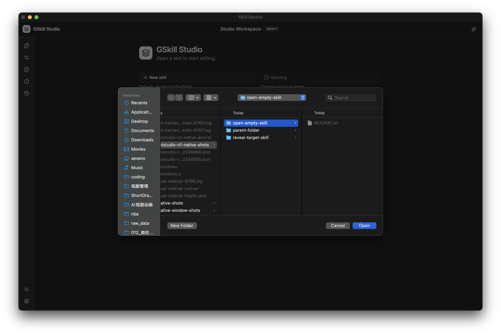
- mock 无后端(GET /api/skills 失败 / 空),MRU 有 2 条 → 断言 Recent 卡仍渲染(纯 MRU)。
- RED:当前卡片渲 phaseCount/has_golden/config_mismatch → 断言『卡片不含这些派生字段』失败。
- GREEN:卡片只渲 displayName/shortPath/lastOpenedAt 后断言不含 phases/Golden/Config-drift 文案/徽章。
- 打开几个 skill 后回 Home → Recent 卡只显示名+路径+最近时间 → 不应看到 0 phases / Golden / Config drift 徽章。
- mock 点 Recent 卡 → 断言 openSkill 被调、rememberWorkspace 刷新最近时间。
- RED:当前进入前走 POST /api/skills(后端不可用会卡)→ 断言『后端不可用也能进入』失败。
- GREEN(待 Rust 打开命令):解耦后断言纯 MRU 进入、不依赖 POST /api/skills。
- 真跑:断开后端,点一张 Recent 卡 → 目标应仍能进工作区(现状会卡在注册,取证后端解耦前的差距)。
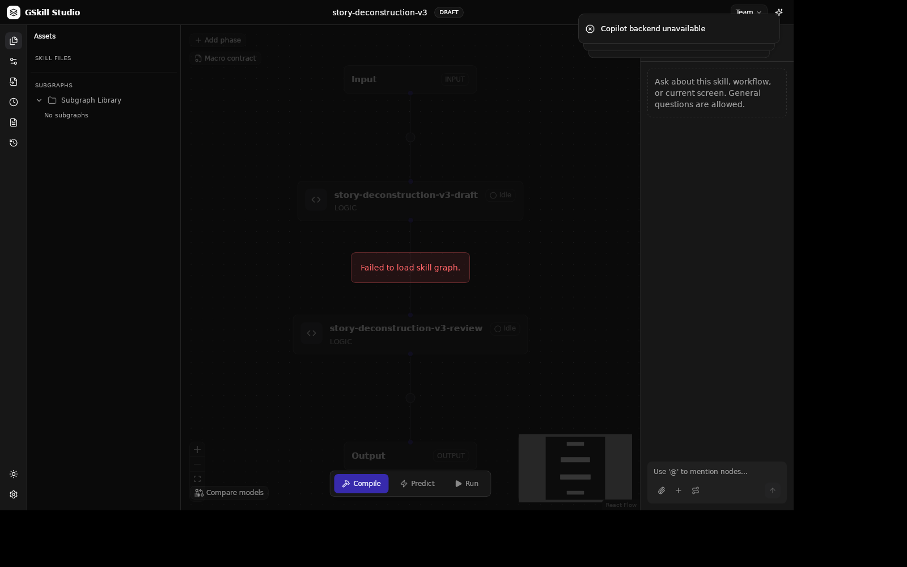
- mock revealInFileManager,点 ⋯ Show in folder → 断言以该卡 absolutePath 调用 revealInFileManager。
- 断言浏览器态降级复制路径到剪贴板。
- 真跑(桌面):点卡片 ⋯ Show in folder → Finder/Explorer 定位到该文件夹。
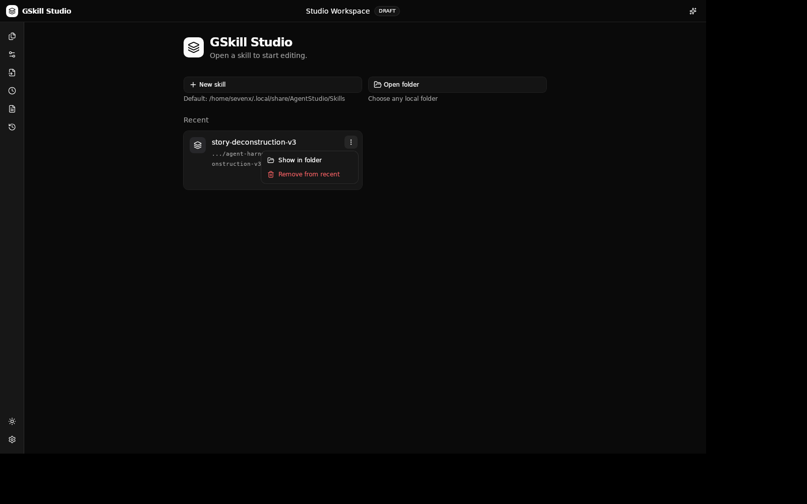
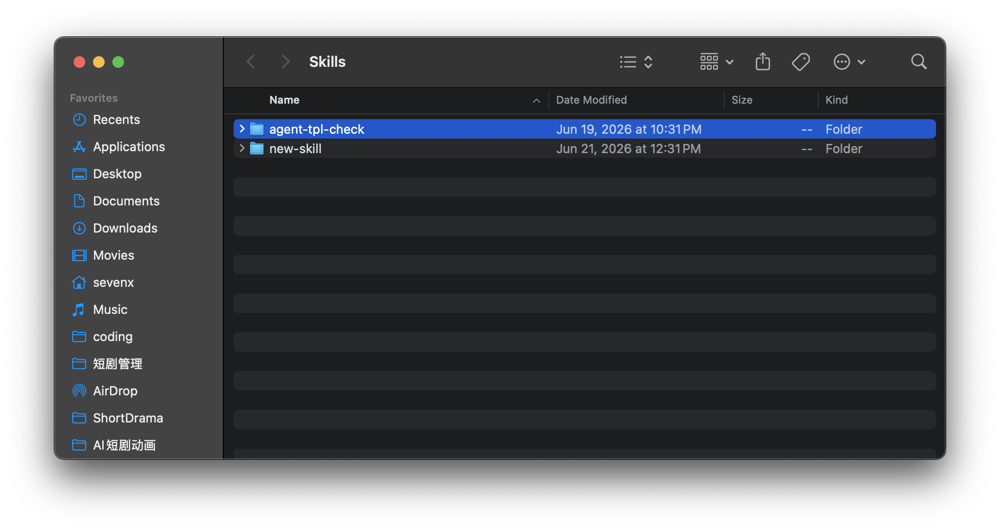
- GREEN(#163 R1):断言 ⋯ / 右键菜单不含会删盘的旧 Remove、点卡不调 DELETE /api/skills。
- GREEN(#164 MRU remove):静态渲染断言导出 REMOVE_ACTION_LABEL='Remove from recent' + 卡带 aria-label『More actions for …』;e2e 点该项 → handleRemove → removeWorkspace(identity) 把卡移出最近列表 + success toast,且全程不发 DELETE /api/skills。
- GREEN(失效自动移除,待 Rust exists):mock exists 谓词判路径不存在 → 断言点失效卡报错 + removeWorkspace 把它从 MRU 移除。
- 打开几个 skill 回 Home → 卡片 ⋯ / 右键菜单有「Remove from recent」(无删盘 Remove);点它 → 卡从最近列表消失 + toast,磁盘 skill 文件夹仍在。
- 真跑(待 Rust exists):把某 skill 文件夹在系统里删掉后点其 Recent 卡 → 应报「文件夹已不存在」并自动从 Recent 移除。
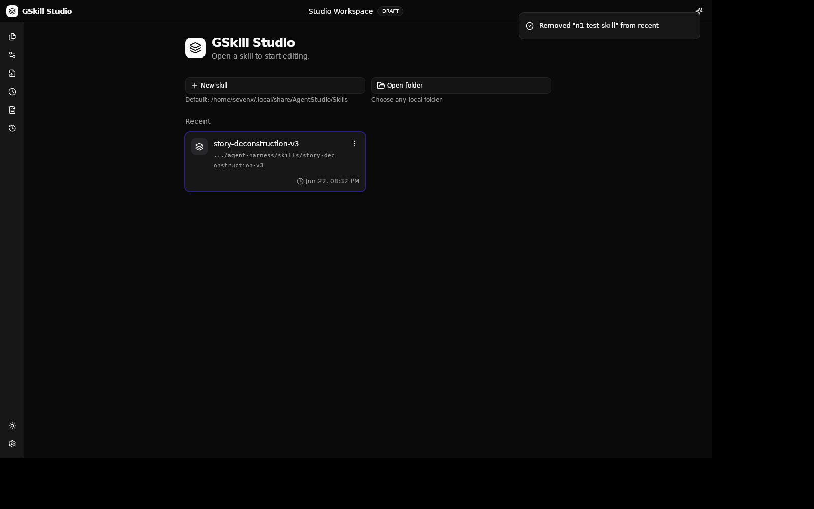
- mock MRU 为空 → 断言渲染空态卡。
- RED:当前空态文案含「import」→ 断言『文案用打开文件夹、无 import』失败。
- GREEN:改文案后断言空态说明含「打开文件夹」、不含「import」。
- 清空 MRU 进 Home → 看到空态引导新建/打开 → 文案应是「打开文件夹」语气、不含「import」。
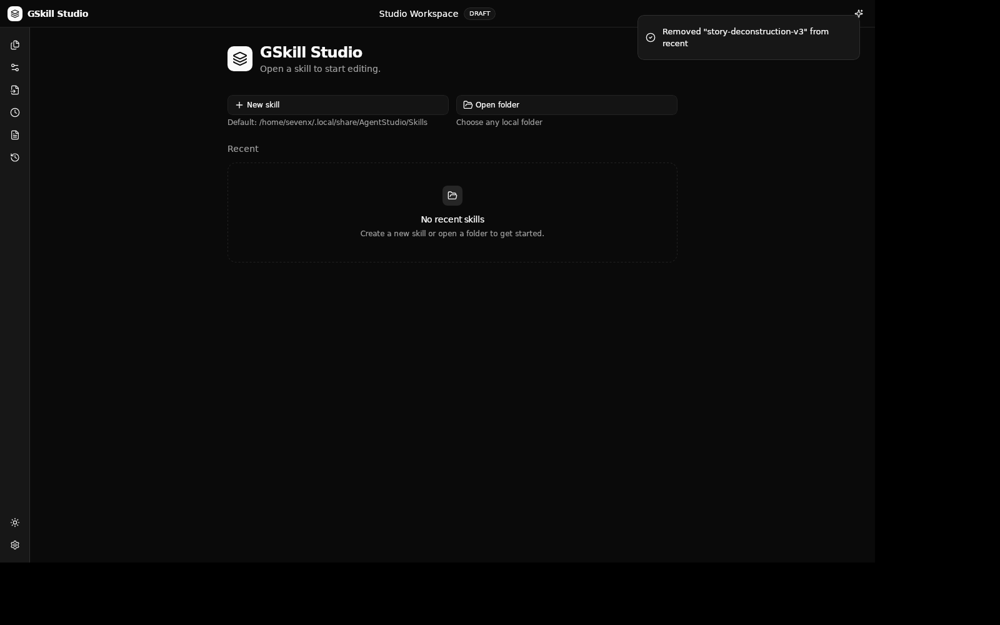
- RED:当前 WelcomePage 无 skeleton 分支 → 断言『加载态渲染骨架』失败。
- GREEN:mock 加载态 → 断言 Recent 区渲染 shadcn Skeleton 占位条;数据到位后断言换成真卡。
- 慢网络/mock 延迟下进 Home → 看 Recent 区数据未到时是否有骨架占位、不空白闪烁。
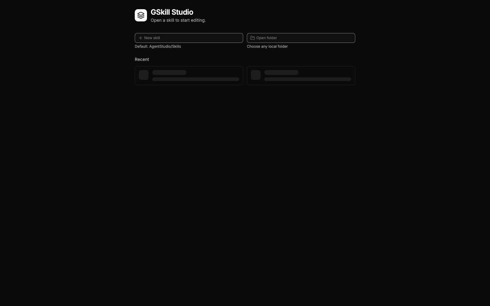
- mock useRecentSkills 的 MRU 读取 / 路径校验报错 → 断言 WelcomePage 在入口下方渲局部 destructive Alert。
- 断言品牌头 + New skill / Open folder 入口仍渲染且可点(不被阻塞)。
- 断言错误被显式浮出(不被静默 .catch 吞)。
- 真跑:让 Recent 数据源失败 → 看局部红框出现且新建/打开仍能用。
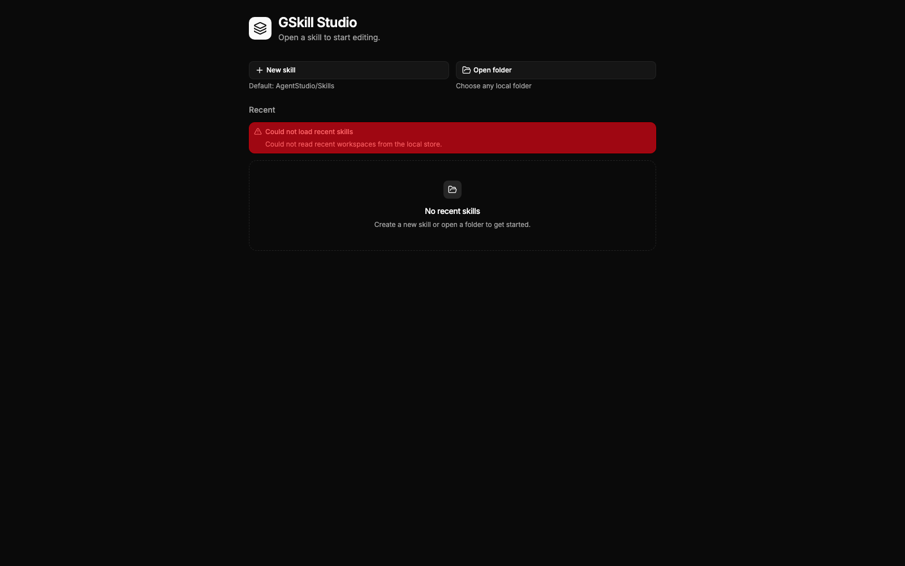
- 渲染 WelcomePage,点 New skill → 断言 openNewSkillDialog 重置 newSkillName='new-skill'、清父目录与错误、对话框开。
- 点 New skill → 看到对话框含名字输入(默认 new-skill)+ Choose folder + Cancel/Create。
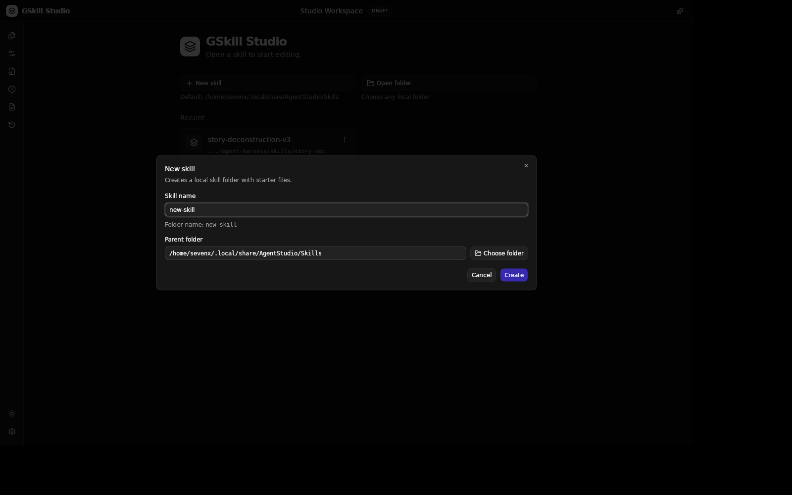
- 输入「My Skill」提交 → 断言 normalizeSkillId 产出合法 id(小写连字符)。
- 空名提交 → 断言报「Name is required」、不发请求。
- 在名字框输入带空格/大写的名 → Create → 实际建出的是规范化 id。
- mock selectSkillDirectory 返回一个目录 → 点 Choose folder → 断言 newSkillParentDirectory 被设、父目录框只读显示该路径。
- 断言不选(返回 null)时父目录保持空(后端用默认 skills 目录)。
- 真跑(桌面):点 Choose folder → OS 目录选择器弹出,选一个目录 → 父目录框显示它。
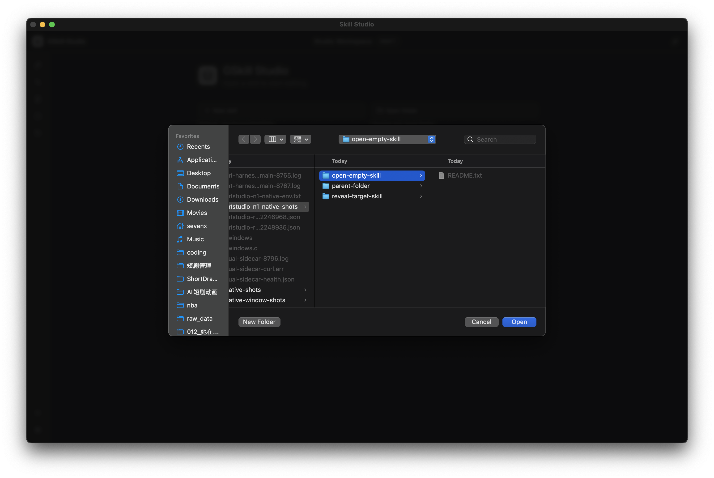
- mock 建命令,填名点 Create → 断言建后 openSkill 进工作区。
- RED:当前走 POST /api/skills(Python 写盘 + logic 相位脚手架)→ 断言『写盘走 Rust』『脚手架为 agent 模板』失败。
- GREEN(待后端):Rust 建命令 + agent 模板落地后断言 submitNewSkill 调 Rust 建命令、产出 agent 模板脚手架、不调 copilot。
- 真跑:New skill 填名选父目录 → Create → 应建出 skill 文件夹并直接进工作区;在非空文件夹建应被拒。
- 目标形态(Rust 写盘 + agent 模板)落地前先对现状路径真跑取证,落地后重跑断言脚手架是 agent 模板。
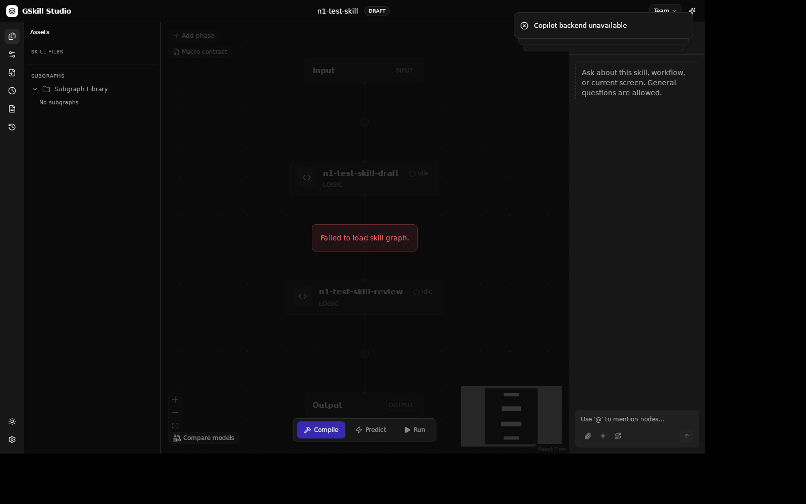
- mock 让后端返回『目标文件夹已存在且非空』这种文件系统层面的失败 → 断言对话框只显示这类文件系统失败文案。
- RED:当前 formatCreateSkillError 里还有一条会冒出 MANIFEST_VALIDATION_FAILED(内容/lint 校验)文案的分支 → 断言『新建失败时错误地显示了 lint 文案』,先让它红。
- GREEN:删掉那条 lint 分支后,断言新建失败只产出文件系统层面的失败码——目标文件夹已存在且非空(INVALID_DIRECTORY_PATH)/ 已有同名 skill(SKILL_ALREADY_EXISTS)。
- 填一个跟已存在 skill 同名的名字去 Create → 因为那个文件夹已经在、里面还有文件,系统拒绝在它上面重建,弹红框报『目标文件夹已存在且非空,无法新建』;不应出现 manifest / lint 这类内容校验文案。
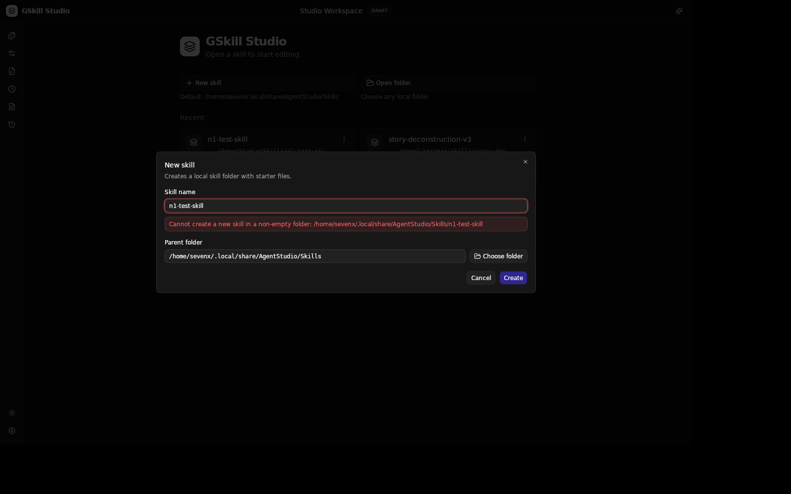
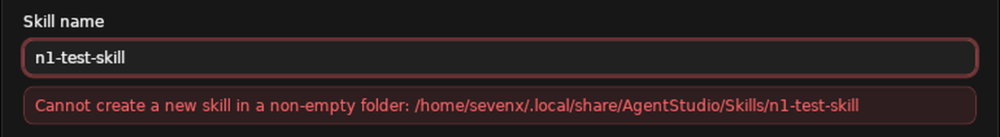
- 渲染 Workspace,currentSkillId=null → 断言画布面板渲 WelcomePage。
- 设 currentSkillId=某 skill → 断言画布渲工作区内容(GraphCanvas/SplitEditor),Header 始终在。
- 启动到 Home → 画布是 WelcomePage;进入一个 skill → 画布变工作区,顶栏不变。
- 进入 skillA(开面板/Copilot)→ 切 skillId=null → 断言 navStack 空、activePanel=null、copilotOpen=false。
- 切 skillA→skillB → 断言 navStack=[skillB]、activePanel=assets、copilotOpen=true,且 skillA 的选中/分屏不残留。
- 真跑:进 skill → 开面板 → 点左上 logo 回 Home → 工作区全卸载;再进另一 skill → 干净工作台、无上个 skill 残留。
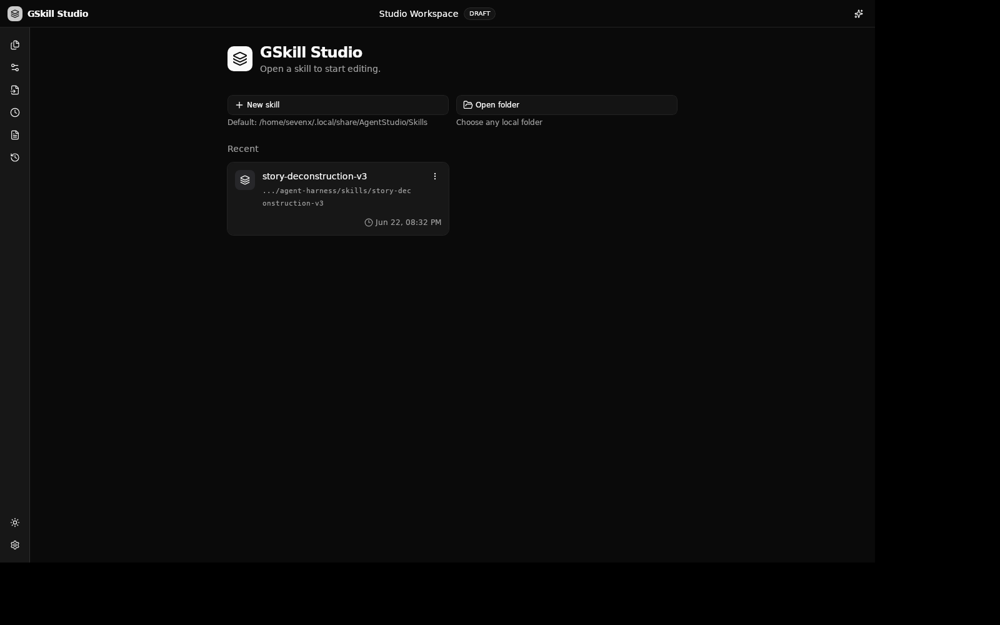
- 进入 skill → 断言渲 Header + Toolbar + ResizablePanelGroup;activePanel 为 null 时左栏不挂载、为某面板时挂载。
- 进入 skill → 看到顶栏 + 左竖条 + 中间画布 + 右 Copilot。
- 点 Toolbar 的 properties → 断言 activePanel=properties、左栏渲 Properties;再点 properties → 断言 activePanel=null、左栏收起。
- 依次点 Toolbar 五个面板图标看左 dock 内容切换;点当前激活的收起左栏。
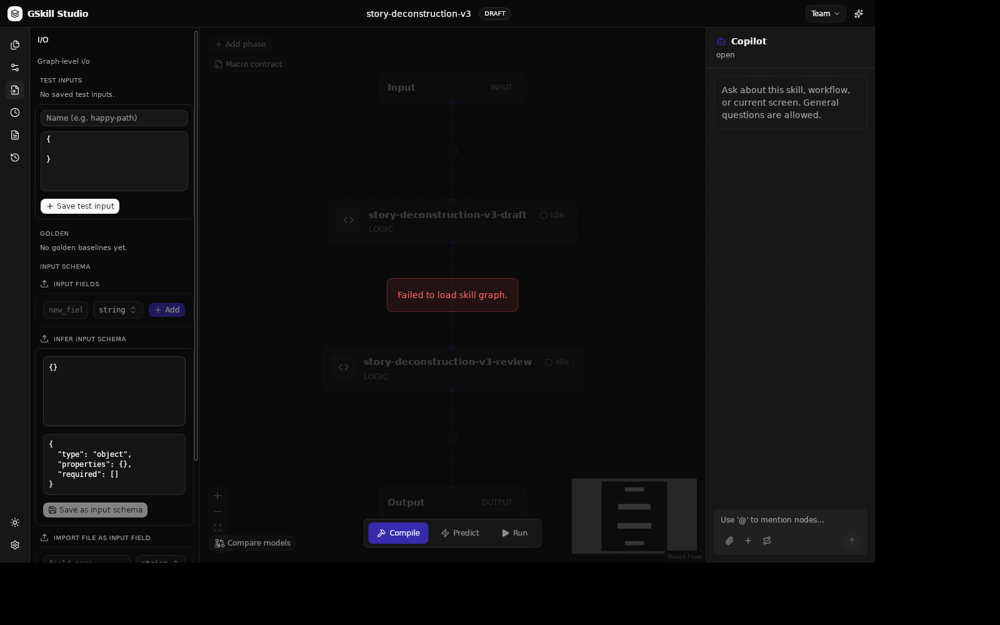
- Settings 打开态,点 Header logo → 断言 handleHome 先 setSettingsOpen(false) 再 onCloseSkill()。
- 断言退首页后工作态卸载、Settings overlay 不再渲染。
- 进 skill 开 Settings → 点顶栏 logo → 回到 Home 且 Settings 已关、无残留浮层。
- 进入 skill 点 Toolbar Settings 齿轮 → 断言 settingsOpen=true、画布渲 SettingsPage,left-panel/copilot 仍挂载、currentSkillId 不变。
- 再次点同一个 Toolbar 齿轮 → 断言 settingsOpen=false、SettingsPage 卸载但 currentSkillId/工作区外壳不变。
- 进 skill → 开 Settings → 左文件树/右 Copilot 仍可见可点,工作区未退出。
- 再次点左下 Settings 齿轮 → Settings 关闭并回到工作区,未退 Home。
- 进入 skill → 断言 copilotOpen=true、右侧挂 CopilotPanel;切 Home → 断言 copilotOpen=false、无 Copilot 栏。
- 新建空 skill 进入 → 断言 copilotOpen=true。
- 进入 skill 看右侧 Copilot;回 Home 无 Copilot;新建空 skill 进入也立即有 Copilot。
- mock native-fs 读写,与 copilot 对话(含 AI 回答)→ 断言 persistSessionToDisk 把会话写到 .workspace/copilot/sessions/<skillId>/<id>.json、_window.json 记 openSessionIds + activeSessionId。
- 回 Home(skillId=null)→ 断言 useCopilot effect 早返回、copilotStore 未 reset。
- 再进同一 skill → 断言 hydrate 只按 _window.json 读回已打开会话(含 AI 回答)并恢复上次活跃 tab,不会目录全量复活历史。
- 关闭 tab → 断言 transcript 文件不删除,_window.json 移除该 id;Restore chat → 断言选择当前 skill session 文件后加回窗口并激活。
- 断言 web/非桌面态 writeWorkspaceFile 抛 Desktop only 被吞进 persistenceError、不崩。
- 真跑(关键,桌面):进 skill → 打开多条 chat,关闭其中一条 → 回 Home → 再进同一 skill → 应只看到上次窗口仍打开的 tab 与活跃 tab,关闭的历史不自动复活。
- 真跑:点 + → Restore chat → 原生文件选择器默认打开 .workspace/copilot/sessions/<skillId> → 选择未打开的 <sessionId>.json → tab 加回并激活。
- 真跑:对话后冷启动应用 → 再进同一 skill → _window.json 中的窗口状态仍恢复。
- 渲染 RuntimeGate/RuntimeShell → 断言始终渲染壳 children(无全屏门);initializeRuntimeConfig 失败 → 断言只渲底部横幅 + Retry、不挡壳。
- 断言 ready 态无横幅、loading 态显「Connecting…」、error 态显「Backend unavailable」+ Retry。
- 真跑:启动应用 → 壳立即可见(无全屏 splash);断开后端启动 → 底部出现「Backend unavailable」+ Retry,界面其余仍可用。
- 单测(copilot-panel.test.ts):isComposerSendKey — 裸 Enter 发送、Shift+Enter 换行、isComposing 不发送、其它键忽略;面板 SSR 渲染含 message-scroller 结构。
- 滚动行为本身由 @shadcn/react message-scroller primitive 提供(上游已测),本仓不重复单测滚动数学,以真机 layer2 断言为准。
- 真机 Playwright(Vite 5174 + 主仓 sidecar):发送 80 项 markdown 列表 → 流式期间视口贴底(st+ch==sh);上滚 600px → 新内容不抢滚、回底按钮 data-active=true;点击回底 → 恢复贴底。占位按钮计数=0;textarea 默认高 60px。
- 真机 Playwright(2026-07-02 布局纠正):发送按钮矩形完全在输入框盒内、role 下拉位于盒外下方、route 下拉在单条兜底链时不渲染。
- 单测(role-picker.test.tsx):配置完成角色保留 + settings 标签;空草稿/broken legacy 排除;无绑定组的 copilot 角色排除;无持久化角色时浮出内置出现;非 anthropic 候选组按全量组 display_name 标标签。
- 单测(copilot-role-derivation.test.ts):resolveCopilotSendRole — 持久化 key 直通、浮出角色物化为 copilot_<slug> 全链 entry、已存在 slug 复用不重写;copilotKeyForGroupId 槽位规则。
- 真机 Playwright:composer role 菜单 ["Claude Opus 4.8","Claude Opus 4.7","Claude Sonnet 4.5"] 与 Settings Copilot 卡标题逐项一致(含非 anthropic 候选组 Sonnet 4.5 的标签);发送走选中 role,回复正常流式返回。
- (target)@ 弹出/选中插 token/WS payload 带 mentions;附件 chips/payload 内容块/非 vision 降级;停止断流。
- (target)真机:@ 选节点后提问引用该节点;附件发图收到理解回复;长回复中点停止立即停。
- closeSession / restoreSessionFromFile 单测(copilotStore.test.ts):非活跃关闭保活跃+不删文件+更新 _window.json;关活跃激活前邻居;关最后一个写空窗口状态且不创建新 transcript;未知 id 不动;Restore chat 只接受当前 skill session 目录内且文件名=session id 的 json;空窗口首条 appendMessage 才物化真实 session。
- 面板单测:running 无正文渲染 thinking;transcript 以用户消息结尾渲染 thinking;有正文即撤;消息行 data-slot=message + align;tab 渲染 Close 按钮;空窗口仍渲临时 Chat 1 与 + 菜单;+ 菜单渲染 New chat / Restore chat;Workspace.test.tsx 断言 useCopilot 在 Workspace 级随 skill 挂载,面板 collapse 后仍存在。
- 后端单测(test_copilot_system_prompt):系统提示词含「语言跟随用户」规则。
- 真机 Playwright:header 无 open 行;发送后 +0ms 起 Thinking 可见至首正文;用户气泡贴右;无 You/Copilot 标签;新建 tab 出关闭按钮、单行不出竖向滚动、点关闭即从窗口移除;关闭到空窗口后 tab bar 仍显示临时 Chat 1 和 +;点 + 显示 New chat / Restore chat 菜单。
- 真机(R4,私有 sidecar):hello 得到全英文回复(cjk=0);shimmer 动画 tw-shimmer 生效;视口 padding 16px。


- 后端 translator 单测(test_copilot_event_translator,25 例):stream text/thinking delta→增量事件;signature/input_json/生命周期/子流静默;完整消息去重且逐消息重置;无流降级整块发;任意工具名如实转录;工具失败= tool_use_result success=false;build_options 断言 partial+summarized。
- 前端单测:assistantMessageAfterEvent 中间事件不覆盖状态、done/error 终结;flushDeltaQueue 同型归并+跨窗口并入尾事件+content 累积;buildAssistantTranscript 按时序交错 thinking/text/工具、done 无视觉、持久化消息回退 content。
- 真机 Playwright(私有 sidecar):正文长度单调渐进(41 个不同采样长度,无整块跳变);shimmer 在首 token 前可见且 context_resolved 不清除;Thought 块流式期间自动展开实时滚动推理、结束后折叠保留;工具卡 Running Glob→Glob completed→Exploring→Explored→Running Grep→Grep completed 按时序逐个出现,名字真实无裸 toolu_ id。
- session-tabs 单测(16 例):consumeHorizontalWheel 纵滚转横滚且消费/无溢出不动/横向手势放行;既有 label/close/switch 测试随 View 拆分继续绿;新增单空 session 常显、0 session 临时草稿、+ 菜单 New chat / Restore chat 触发测试。
- 真机 Playwright(worktree Vite,store 造 8 tab 溢出 630>306):WheelEvent deltaY=120 → scrollLeft 0→120 且事件被消费(页面不纵滚);deltaY=-50 → 120→70;deltaX 主导的手势不拦截;悬停出 6px 横向滚动条(data-state=visible)。
- role-picker.test.tsx:R6-1 锚点用例——1 个角色仍渲染(never vanishes)、0 个角色渲染「No copilot role」空锚点;既有多选下拉与 onSelect 用例随之保留。
- 真机 Playwright 双路径:①带 token 成功路径——加载即见 Skeleton(aria-label=Loading copilot roles),settle(~56s)后骨架消失、role picker 出现且 svg.lucide-brain-circuit 在;②无 token 失败路径——roles/registry 401 落定后骨架同样撤下,不永挂。R6-1:删到只剩单个浮出角色时锚点(Claude Opus 4.8)仍显示,不消失。
- 纯视觉 pass,按 SOP 不新增单测;既有 1594 例全绿(无 prose 类锁死测试)。
- 真机 Playwright 同一夹具对话 before/after:before = 标题不分级/列表序号丢/代码块裸排/引用无竖线(prose 死类实锤);after = 全部排版恢复且全语义 token,次级卡片标签整体淡一号。
- copilot-fab-geometry.test.ts(10 例,TDD):defaultFabPosition 右上锚点、clampFabPosition 画布内夹取、headerLogoTarget 落在面板左侧近顶、travelSteps L 路径(先垂直后水平)、isTapGesture 拖/点阈值、panelRect 展开态面板矩形 + 与 logo 落点关系。moirai-mark.test.tsx:aria-hidden/role=img+title、currentColor 无硬编码色、五星。copilot-fab.test.tsx:可访问名「打开 MoirAI」+ rounded-full + accent 标 + 无硬编码色。CopilotPanel.test.tsx:断言 Open in 菜单渲 Claude/Codex 两项,分别调用 openClaudeCode/openCodexCli;activeCodeAssistantIds/codeAssistantCloseButtonLabel/codeAssistantAttachMenuLabels 断言 ahd 状态会派生 Close Claude / Close Codex / Close assistants 与 Attach Claude / Attach Codex;新增事件订阅回归用例:首轮 inactive 后由 subscribeCodeAssistantStatus 回调推送 codex active 时按钮切为 Close Codex,并断言未调用 setInterval。tauri.test.ts:断言 openCodexCli invoke open_codex_cli、attachCodeAssistant invoke attach_code_assistant、watch_code_assistant_status / unwatch_code_assistant_status 与 close_code_assistant helper。Rust lib.rs 测试:断言 open_codex_cli / lifecycle command 注册、attach payload 只 attach master 不 start、Open 初次启动永远跑 launcher、Attach 才先按稳定窗口标题激活已有终端窗口、找不到才新开终端、原生 WindowEvent::CloseRequested 会 prevent_close 并进入 shutdown_application 清理 Studio-managed ah configs、Codex ah 配置 provider/rules/skills/auth 注入、sandbox config.toml 项目 trust + hook trust bypass、Claude sandbox 链接宿主 .claude.json、WSL payload 从 Windows Codex home 同步 auth 且 ah start --wait 失败时不继续 attach、status lookup 不生成临时 workspace、open 返回 config 的 assistant 身份优先于文件扫描发现;新增 ah 生命周期单测锁定 ah events snapshot 解析、ahd inventory + master tmux 双事实激活、多个 active config/stale 清理、workspace 单例 ahd open 决策、ah ps 输出 tmux socket/session id 解析、空
ah ps成功退出不算 inventory、Close 后 ahd/master/worker 全灭要求。拖拽/WAAPI morph 属纯视觉、按 SOP 不单测。
- 真机 Playwright(recon-demo,深色,reducedMotion:'no-preference'):收起后 FAB 默认右上(距缘~12px)、36px、border 0px、bg=--studio-canvas-surface、标=--studio-canvas-accent;拖拽 → FAB 到画布中心;tap → 逐帧采样 box 由 36×36 圆横移到 header logo 位(x1392→1108)再连续撑大 142×302 … 352×832 面板(容器变形:圆长成面板);close 反向面板缩回 FAB。注:headless Chrome 默认 prefers-reduced-motion:reduce 会走直开回退,需 reducedMotion:'no-preference' 才能观察动画。
- transcript.test.ts:partitionAssistantView(最终文本与前置过程分离、纯工具 turn answer=null、流式中 duration=null)+ formatProcessedDuration(45s / 1m / 1m 20s);既有 buildAssistantTranscript 用例保留。
- 真机 Playwright:流式时 viewport atBottom 全程保持、答案 194→771 增量;done 后过程收束成「› Processed 27s」折叠行、答案常驻其下;全程 border-l=0;工具 turn done 后无空转 spinner;聊天文本可框选。
N2 · Authoring · 搭图与编辑
画布搭建 · 操作设计
<phase depends_on=...> 标签写依赖)的可视投影,加节点=建文件、连线=改 depends_on、改完写回同一棵可执行树。每张卡只描述目标长啥样、用户怎么触发、前端该怎么做、依赖后端哪条契约;现状/差距见实施页,序列化/写盘/冲突机制见后端接口契约页 mech_graph。编译/lint 门控(绿灯解锁 Predict)归 N3 Compile,不在本页。注:R5 的另一半「assets 文件树 ↔ 子图文件同步」归 asset-explorer(file-editing 能力),本节点只覆盖画布侧的子图 path 引用。- 拉 SkillDetail(编译产物:manifest.phases + graph_topology + 原始 files 文本)→ buildNodes(用 manifest.phases + graph_topology + files 拼成 React Flow 节点的函数)逐 phase 算节点种类(由 phase 目录下的文件类型 SKILL/LOGIC/SUBGRAPH.md 决定)→ buildEdges 按每个节点的 depends_on 连边 → 自动布局渲染
- 两端共享同一份 GRAPH.md 语法,没有中间 JSON 图模型在两个方向各转一次,所以是『同一棵可执行树』
- 双击节点 → 取该节点的 filePath(phases/<id>/<节点文件>)→ 在源码编辑器(LazyMonacoPanel,懒加载的 Monaco 源码面板)里打开该文件;双击起点 Input / 终点 Output 或头部区开 GRAPH.md
- 编辑保存走 native-fs(见 #23 与 mech_graph)
- getAutoLayoutedElements(把节点边塞进 dagre 图做自动布局的函数)以 rankdir='TB' 纵向布局,上游在上、下游在下;布局前先用 graphlib 判无环(见 #9)
- 布局结果喂 React Flow 渲染
- 选 kind → 命名弹框起名 → phaseFilePath(把 kind 映射成 phases/<id>/SKILL|LOGIC|SUBGRAPH.md 的函数)定文件路径 → createPhaseDraft(组装去重 phaseId + 文件路径 + 脚手架文本 + 空 depends_on 的函数)→ 先用 create-if-absent(无则建、不覆盖)把 phase 文件写盘,再 serialize 把新 phaseRef 写回 GRAPH.md
- 脚手架走 defaultPhaseMarkdown(按 kind 出三种模板的函数):logic 模板只有 name/io/actions/validator;agent 模板 name/llm_role/io/tools/validator;subgraph 模板 name/path(绝对路径占位)/io/validator——绝不写 mode / system_prompt / exit_contract / python_callable / target_skill
- buildNodes 渲染时把整图入口渲成一个 Input 起点节点(无依赖的 phase 的 depends_on 渲染成入口哨兵 input)、把叶子 phase 标记成 Output 终点;它们不是普通 phase 文件,而是整图 io 契约(GRAPH.md 顶层 io.inputs/outputs)的可视入口/出口
- 双击它们开 GRAPH.md
- io 字段的逐项编辑归 i/o 面板(见 N2.4)
- onConnect(React Flow 连线回调,做端点合法性校验后乐观更新画布)→ handlePersistConnection(Workspace 里把连线落到源码的编排函数)→ connectPhaseRefs(往目标 phase 的 depends_on 追加来源 id 的纯函数)算新拓扑 → 带 graphHash 乐观锁 serialize 写回 GRAPH.md → 落盘 → 重编译
- 连线写回的就是 depends_on,不动别的字段
<phase> 标签,保留其它字节),带 expected_hash 乐观锁。- 设计:连线四操作(R4)——新建、断连、重连(把边改接到别的端点)、拖拽断线(拖出 handle 松手即断)
- 前两个已有,后两个是这条原子要补的
- 目标设计:给 React Flow 挂 onReconnect / onReconnectEnd 事件并设 edgesReconnectable——重连=把边端点改接到新目标后,等价于在旧目标 depends_on 移除、新目标 depends_on 追加,再 serialize 写回;拖拽断线=端点拖离 handle 松手即判为 disconnectPhaseRefs
- 让四操作(新建/断连/重连/拖拽断)走同一套 depends_on 写回 + serialize
- 符合设计(连线四操作全闭环)
- 2026-06-20: 代码已落地(design-audit vs code 核实),状态回填
- 重连/拖拽断线已接 React Flow:GraphCanvas.tsx:744-747 开 edgesReconnectable={!compact} 并挂 onReconnectStart/onReconnect/onReconnectEnd;onReconnect(GraphCanvas.tsx:635-670)走 planEdgeReconnect(canvas-authoring.ts:155,把端点改接算成旧目标 depends_on 移除+新目标追加的纯函数)+ 原子 onReconnectConnection;onReconnectEnd(GraphCanvas.tsx:679-701)实现拖端点离 handle 松手即断;Workspace.handleReconnectConnection(:665-687)把断连+连接折成一次 serialize(reconnectPhaseRefs,canvas-authoring.ts:211)
- 四操作共用同一套 depends_on 写回 + serialize,后端契约不变
- canvas-authoring.test.ts 通过(33 绿测之一)
- 自动布局时 getAutoLayoutedElements 用 graphlib.alg.isAcyclic(dagre 的无环判定)判图,不是 DAG 就抛 CycleDetectedError(自定义环检测错误类)→ 布局记忆化计算捕获该错误 → 返回空 nodes/edges + error → UI 铺一层全屏红色遮罩『SKILL contains cyclic dependency』+ toast.error
- 环=阻断,不让用户在错图上继续操作
- 2026-07-05 校正:画布节点不再从 graph_topology[].field_supply 合成 file-less CompileError
- 缺黑板供给属于 engine dataflow 规则:phase io.inputs.properties 声明消费的字段必须由 root input、upstream output、runtime_config import binding 或 iterate/batch 注入提供;缺失时 engine 返回 F-v3-graph-dataflow-source-missing,field_path=<phase>.io.inputs.properties.<field>
- Workspace.compileErrorsByNodeId 只合并 manual compile 与 first-screen/realtime lint 两路 engine DTO;Properties 面板同样读取 active engine lint,先用首屏 SkillDetail lint,实时 lint settle 后替换;field_supply 保留给 io-target/InputPanel 显示 supplied/source/producer_phase,不是节点 compile 错误源
- 2026-07-05 已校正:旧实现 dataGapErrorsByNode/SkillNode.data-gap 把 field_supply 直接投成节点 compile error,导致节点有错但 engine compile 可通过
- 现已删除前端合成路径;engine 静态 dataflow 对 io.inputs.properties 声明消费字段报 F-v3-graph-dataflow-source-missing,lint/compile/节点/Properties/编辑器/Drawer 共享同一 engine 错误源
- checkSequentialOverwrites(检测顺序覆盖冲突的函数)对每个 phase 取 io.outputs 字段,沿 depends_on 求传递祖先集;若祖先也产出同名字段、且不在 allow_sequential_overwrite 白名单 → 记一条 OverwriteConflict → 注入对应节点、平移聚焦到冲突节点 → 弹 Allow/Cancel:Allow 写进白名单放行、Cancel 把冲突节点标红
- 检的是『同字段被重复写』(覆盖冲突),不是『下游要的字段上游没给』(那是 #10)
- 写失败 → 用 hash 乐观锁回滚(画布拿旧版会被 409/HashConflict 拦,不静默覆盖,见 mech_graph);phase frontmatter YAML 坏 → parsePhaseFrontmatter 回不可解析 → 面板出 error + Open file 跳源文件让用户手修;环 → 全屏阻断(#9);越权/路径穿越/IO 失败 → Rust 写命令回 WriteFailed,前端弹错
- 每条退路都有可见反馈,不吞错
- 点子图节点右缘垂直居中的 +／− toggle（toggle 挂在 data.onToggleSubgraph 上——build-nodes 对每个 SUBGRAPH-kind 节点都接线，故所有子图节点都出 toggle，不再只在『已解析绝对 path』时出）→ 取该 subgraph phase 的 path（自 #199 起后端 read_subgraph_path 把相对/绝对 path 都解析成绝对回传，normalizeAbsoluteSubgraphPath 据此判 resolved）：① 已解析 → 调 getChildGraphTopology 拉子图真实 phase 列表 + DAG，用与主画布完全相同的递归三件套渲染——buildNodesFromTopology（出子图自己的 global input/output 节点 + 真 phase 节点）+ buildEdges（contextEdge 连接边，带可点中点圆点）+ getAutoLayoutedElements（dagre TB），不是临创的局部 builder
- ② 未声明 path（后端回 None）→ 就地出 recovery 容器，提示去 SUBGRAPH.md 声明 path
- buildSubgraphExpansion 把这套子图（含自己的 in/out + contextEdge 圆点）整体偏移进 expand 节点旁靠右（CONTAINER_GAP 间隔）的虚线容器（subgraphGroup，动态 group bbox），全部命名空间化为 __subpreview__ 只读 id（不可拖/选/连/删）
- 父图依赖以虚线 bridge 接驳 expand 节点 ↔ 子图自己的 INPUT/OUTPUT 节点
- loading/error(recovery)/loaded 三态
- 预览节点叠在主画布受控节点之上（独立 overlay、不进 useNodesState），故必须显式带 width/height——否则 React Flow 量不到尺寸会让它一直 visibility:hidden
- 符合设计（2026-06-23 实现并真机验证）
- 三处订正落地：①『+』移到节点右缘垂直居中（设计『右缘加号』），不再在底缘
- ② 子图用与主画布同一套递归算法渲染——子图自己的 global input/output 节点 + contextEdge 连接边（带中点圆点）+ dagre 自动布局，bridge 接驳 expand↔子图 IN/OUT，不再是只铺 phase、把父图直连子首/末的局部 builder
- ③『+』对所有 SUBGRAPH-kind 节点都出（挂 onToggleSubgraph），未声明 path 的节点也能展开成 recovery 提示——修掉了『未解析子图节点不出 + 号』
- 配合 #199（后端 read_subgraph_path 把相对子图 path 解析成绝对回传），相对 path 子图也判 resolved
- 即设计 F4『inline content is real, not mock』+『unresolved path shows recovery state』+ CANVAS-3
- 真机验证：n4-sg-probe 的 delegate（相对 path registry/echoer，经 #199 解析、Subgraph Library 转绿勾）展开出子图自己的 Input/emit/Output + 带圆点的 contextEdge（见 n2-13 截图），右缘 + 见 n2-13b
- 实现中并修了 React Flow 一个真 bug：overlay 预览节点不在 useNodesState 内、量尺 change 被 onNodesChange 丢弃，无显式 width/height 会一直 visibility:hidden——已用显式尺寸闭合
- 目标设计:子图下钻——点下钻就地聚焦进子图拓扑(留在同一画布、不切工程),进去能编辑子图节点;父子 io 按子图自己声明从黑板切片过滤字段(引擎 §2.10 io 切片 + §2.4『子图和普通节点一样从黑板切片、不要求父子字段集合 1:1』已 pin)
- 现状:多级下钻导航已实现——drillStackReducer(管 push/pop/popTo 的多级下钻栈)+ DrillBreadcrumb(逐级面包屑)+ 按 path 拉各级 child topology 渲染 + 双击 subgraph 下钻聚焦;仍未闭环的是『进入子图后编辑子图节点并写回』(下钻后 child 节点 filePath 留空、保存目标/compile scope/child root 身份未接线)
- 2026-06-20 edit-writeback shipped:下钻后『进入子图就地编辑并写回』闭环已落地(前端,无后端改动)
- (1) 就地编辑不切工程——删除了 GraphCanvas.tsx onNodeDoubleClick 里的 pushNavSkill 逃逸口(原来双击叶子节点会把整个 Workspace 切到子图『作为独立 skill』),改为按子图自己的 skillId 就地打开子文件;嵌套 subgraph 双击仍 drillInto 继续深钻
- (2) child-root 身份——drilledChildIdentity(由 childGraph.path 经 resolveWorkspaceIdentity 解析出子图 skillId+workspaceRoot 的 memo);下钻后用 buildNodes(childSkillId, childDetail, …)(Option A:拉子图完整 SkillDetail 复用根图编辑接线)渲染,节点 data.skillId=子图、filePath 为子图相对路径
- (3) 保存目标=子图自己的 GRAPH.md——四个 Workspace 保存 handler(handlePhaseFileSave/handlePersistConnection/handleDisconnectConnection/handleReconnectConnection)+ doWriteSkillFile 增可选 child target,serialize/write/compile 全打子图 skillId+workspaceRoot,父分支字节级不变(无根图回归)
- (4) 错误回滚——子图写失败 refetch 子图(refetchChildGraph),不动父 mutateSkillDetail
- (5) 只读阻断(PM 决策)——子图若解析到只读 bundled/public skill(不在可编辑 workspace 下),isDrilledChildEditable 前置判定(路径谓词:在父 skill 树或可编辑 workspace skills 目录下=可编,否则只读;父根为空时 Tauri 默认只读、浏览器靠 update_skill_file 403 兜底),撤销编辑能力 + 提示『fork to edit』,绝不自动 fork、绝不静默改 bundle
- 测试:drill-edit.test.ts(child 身份派生 / resolveSaveTarget 路由 / isDrilledChildEditable 只读谓词 / isReadOnlySkillError)+ build-nodes.test.ts(下钻节点 data.skillId/filePath、agentSteps 接线)+ e2e tests/e2e/subgraph-drill-edit.spec.ts(下钻就地编辑写子图不写父 / 强制 409 回滚)
- 引擎 io 切片契约 §2.10/§2.4 已 pin(不要求父子 1:1),纯前端 UX
<step> / <action> 做增删改序,走 Rust 写 phase body。<step> / <action> 步骤。- 目标设计:L3 步骤——在画布内联(非 Properties)对节点正文
<step>/<action>增删改序 - 前端组件其实已存在:AgentStepsInlineView(画布内联渲染 step 列表的展示组件)+ agent-steps.ts(parseAgentSteps/addAgentStep/removeAgentStep/reorderAgentSteps/updateAgentStep,对 body 文本做增删改序的纯函数);保存复用现成的 phase 文件保存路径(handlePhaseFileSave → doWriteSkillFile → native-fs / 浏览器 fallback)
- 现状缺口是 AgentStepsInline 没挂到画布/节点编辑入口(孤儿未接线),不是缺写回能力、也不需新增专用后端 mutate 端点
- 符合设计(L3 步骤画布内联增删改序已接线落盘)
- 2026-06-20: 代码已落地(design-audit vs code 核实),状态回填
- AgentStepsInline 不再是孤儿:SkillNode.tsx:107 canEditSteps 门控,:255-257 渲染 <AgentStepsInline body=data.agentBody onSave=data.onStepsSave>;build-nodes.ts:272-278 给 AGENT 节点传 agentBody/onToggleSteps/onStepsSave;GraphCanvas.tsx:319-346 toggleSteps + handleStepsSave(带 expectedHash 调 onPhaseFileSave),:419-420 接好(仅 compact 模式禁用)
- 保存复用现成 phase 文件保存路径:Workspace onPhaseFileSave={handlePhaseFileSave}(:1321/:1384)→ handlePhaseFileSave(:565)→ doWriteSkillFile(:577,native-fs / 浏览器 fallback),无新增后端端点
- 增删改序纯函数 parseAgentSteps/addAgentStep/removeAgentStep/reorderAgentSteps/updateAgentStep(AgentStepsInline.tsx:136-159)
- 测试绿:AgentStepsInline.test.tsx + agent-steps.test.ts + SkillNode.steps.test.tsx(33 通过)
Properties 节点属性 · 操作设计
- 现状:phaseKindLabel(PropertiesPanel.tsx,据 data.mode/data.subgraphPath 推 LOGIC/AGENT/SUBGRAPH 三类标签的函数)读 data.mode;data.mode 来自 build-nodes 的 topology.mode ?? phase.mode,而 topology.mode 是引擎按物理 phase 文件(LOGIC.md/SKILL.md/SUBGRAPH.md)经 _PHASE_FILE_TO_MODE 派生注入的,引擎还在 _reject_phase_forbidden_metadata 把作者写的 mode: 当禁止字段拒掉
- 所以主路径下类型已是『文件派生』、作者写 mode: 改不了类型(被引擎拒)
- 残留 F1 风险只有两点:① phase.mode 这个 fallback 兜底(topology.mode 缺时回退,可能 stale);② UI 标签叫『Mode』而非『节点类型/Kind』,误导用户以为可设
- 目标:类型派生显式以『该 phase 目录下存在哪个节点文件』为真相、去掉 phase.mode 兜底歧义,标签改『节点类型(由文件决定,不可编辑)』
- 符合设计
- 2026-06-20:代码已落地(design-audit vs code 核实),状态回填
- 两个目标都已实现:(a)去掉 manifest phase.mode 兜底——build-nodes.ts:239 节点类型推导链改为 phaseModeFromFiles(按 phase 目录下存在哪个文件派生,:24-33) ?? phaseKindFromTopologyMode(topology.mode),即『文件存在性→topology.mode→logic 默认』,旧的 ?? phase.mode 已删,manifest 投影的 phase.mode 再不能推翻文件真相(F1 闭合);(b)UI 标签改述——PropertiesPanel.tsx:346-350 只读行 label 改为 'Node type'、hint 写 '由 phase 文件(SKILL/LOGIC/SUBGRAPH.md)决定,不可编辑'
- 测试断言节点类型不回退 manifest phase.mode(build-nodes.test.ts:170)+ 显示 'Node type' 行(PropertiesPanel.fields.test.tsx:170),48/48 绿
- 设计:面板底部只读信息区不应暴露一个『Mode』行——它和『节点类型=文件名、作者不得写 mode』的口径冲突,会让用户误以为 mode 是个可设属性
- 应删掉该行,或改成『节点类型(由文件决定,不可编辑)』
- 目标设计:把底部只读区(DetailRow,展示 Phase ID / Depends On / Role / Tools / File 等只读信息的行)里的『Mode』行删掉,或改述为『节点类型(来自文件 SKILL/LOGIC/SUBGRAPH.md,不可编辑)』,强调类型由文件决定
- 现状底部 DetailRow 渲染了一个 label='Mode' 的只读行(值取派生的类型标签),措辞会误导用户以为 mode 可变
- 符合设计
- 2026-06-20:代码已落地(design-audit vs code 核实),状态回填
- 底部误导性『Mode』只读行已去除——PropertiesPanel.tsx:346-350 该行改为 label='Node type'、value 取派生类型标签、hint '由 phase 文件(SKILL/LOGIC/SUBGRAPH.md)决定,不可编辑',全文件再无 label='Mode'
- 测试 PropertiesPanel.fields.test.tsx:170 断言存在 'Node type' 行而非误导的 'Mode' 行(not.toContain('>Mode<') + toContain('>Node type<')),通过
- 设计:选中 Agent 节点(SKILL.md),Properties 露 MVP 最小字段子集——llm_role / tools / subagents,不露任何旧 stale 字段
- 注:这是引擎 agent 语法的最小子集,非全集
- kind=agent 时渲染白名单字段:llm_role(+ use_graph_llm_role 优先级开关,见 #22)、tools、subagents(SubagentsField 子表单 name/target_skill/description)
- 绝不渲染 system_prompt/exit_contract/max_retries/python_callable/可编辑 mode(FROZEN 禁字段)
- 范围说明:引擎 AgentNodeAST(SKILL.md 的 agent 节点 AST)实际还支持 subgraphs[](agent 注册的子图,按 path,§2.4)、references、examples/examples_inline、max_iterations 等;MVP Properties 先收敛到 llm_role/tools/subagents 三个最常用字段,是引擎 agent 语法的『最小子集』、非完整对齐
- subgraphs[].path 是引擎 SSOT 明确语法,后续可补编辑形态
- subagents 的 target_skill 是 §2.5 合法保留(子代理与子图 path 两回事)
- 符合设计(三字段白名单 = 引擎 agent 语法的 MVP 最小子集,旧 stale 字段全不渲染)
- 注:引擎 AgentNodeAST 还支持 subgraphs[](按 path)/references/examples/max_iterations,Properties 暂未覆盖——是 MVP 范围收敛、非对齐缺陷;subgraphs[].path 后续可补
- 不应表述成『完整对齐引擎语法』
- kind=logic 时只渲染:actions(一行一 action、按执行顺序的 textarea,注册确定性 Python action + 顺序)、validator(开关,开启后置校验钩子,写回黑板前跑同级 validator.py)
- 绝不渲染 llm_role/tools/python_callable 等
- io.outputs 的字段边界(action 回写字段须是 io.outputs.properties 子集)归 i/o 面板统一承载,Properties 不重复做,但应有指向 i/o 面板的提示,避免用户以为 logic 无 io 约束
- 符合设计(白名单 actions/validator 已对齐 §2.3)
- 轻微:缺一个指向 i/o 面板的 io.outputs 边界提示(io 边界编辑归 i/o 面板),非阻塞
- kind=subgraph 时只渲染:path(绝对路径输入框,占位 /absolute/path/to/child_graph;D7:子图按 path 解析、无注册表)、validator(开关)
- 子图引用状态由 resolveSubgraphReference(出 resolved/missing/migration-required 三态的函数)判定:仍用旧 target_skill 的给迁移提示
- 目标:path 解析不到(missing)时在 Properties + Assets 标红、并给『OS 选文件夹把子图导入工作区』入口(F4/R5);copilot 工作目录范围要把被引用子图 path 纳入(D7,否则读不到/改不到子图)
- 前端符合设计
- 2026-06-20:代码已落地(design-audit vs code 核实),fe_status 回填
- 所有 FE 可做的目标均已落地:(1)白名单 path 字段 + validator(PropertiesPanel.tsx SubgraphPathField :660-742 + kind==='subgraph' 分支的 ValidatorField);(2)path 缺失标红——Properties 侧 aria-invalid + destructive 文案(:716/:728,unresolved = 语法缺失 subgraphPathFieldState 或磁盘 404 来自 getChildGraphTopology 探测),Assets 侧 AssetsPanel.tsx:124-142 rose AlertCircle + 'Missing path' badge;(3)『OS 选文件夹导入工作区』入口——'Select folder to import subgraph' 按钮(:734-737)→ handleImportSubgraphFolder(:271-276)→ selectSkillDirectory → Rust select_directory;(4)旧 target_skill 迁移提示(:720-724 + legacySubgraphTargetSkill)
- 测试 PropertiesPanel.fields.test.tsx:137-149 + subgraph-path.test.ts 通过(48/48)
- 残留仅 (c)『copilot cwd 纳入被引用子图 path』(D7)——这是后端契约项、记在 be_status='契约问题',不属 FE 偏差,故不再拖住 fe_status
- 字段变更 → Properties 表单进入 pending/saving 状态并 debounce autosave → applyPhaseFrontmatterForm(把表单写回 phase 源码、保留白名单外内容的函数):先 parsePhaseFrontmatter 拆出 frontmatter + 原始 body,再 frontmatterFromForm 以原 frontmatter 浅拷贝为起点、按 kind 只 set/delete 白名单键(agent→llm_role/use_graph_llm_role/tools/subagents、logic→actions/validator、subgraph→path/validator),body 仅去前导多余换行原样拼回 → 带 expected_hash(对当前文件算 sha256)走 file-editing/native-fs 写盘 → 成功后更新本地 saved markdown baseline,SaveStatusBadge 显示 saved
- 空值用 delete 不写 null,避免空字段污染
- 手动 Save 按钮不出现;Reset 只在本地 dirty 且尚未保存时提供撤回
- 设计:Agent 节点 llm_role 双层来源——节点自选角色 + 整图默认角色(GRAPH.md llm_role,skill-spec §2)
- SKILL.md 开关字段 use_graph_llm_role(默认 false)决定优先级:开 = 图默认压过节点自选;关 = 节点自选生效,未选时继承图默认;两级都空回退约定角色 graph_agent(engine manifest.effective_llm_role,skill-spec §5)
- 覆盖靠开关,绝不改写/清除节点自己的 llm_role(设置本体不销毁)
- 打开『Use graph default』开关 → 保存把 use_graph_llm_role: true 写入 SKILL.md;关掉 → 键删除(默认态)
- 开关旁小齿轮跳到 graph 属性面板(在那里查看/修改/Test 图默认角色)
- 开关直接绑 useGraphLlmRole 受控表单字段、随保存落盘(无不落盘的幽灵本地态)
- 开 = Run role 一整行(角色下拉 + Roles 设置齿轮 + Test 烧瓶)整体 disable,节点自选置灰保留、不加『实际生效』标注文案;关 = 整行可用
- 图默认角色的 Test 放 graph 面板(GraphFrontmatterForm llm_role 行加 RoleTestControl,测试状态与节点行相互独立)
- Agent Model params 必须有显式 Custom model params checkbox,放在 Model params 分组标题行末尾:off=运行时完全继承 role,字段禁用并显示与运行时一致的具体 fallback 值(role setting > route max/default),fallback 必须来自实时 GET /api/llm/roles 共享数据源(Settings 保存或 roles_changed 重拉同步刷新),避免空白或『Model default』误导;temperature 缺失时显示 role 默认 70%(authored 1.4)
- 打开 checkbox 通过 node-llm-params API 保存 enabled=true 并恢复之前的字段草稿;关闭 checkbox 保存 enabled=false,只停用运行覆盖,不清空 thinking/max_output_tokens/temperature 草稿;只有 enabled=false 且字段全空时后端才清理 node entry
- temperature 使用 shadcn Slider + 百分比读数,保存 authored 0..2;拖动只更新本地读数,onValueCommit 或 pointer/key/blur 等交互结束兜底才排保存,避免 UI preview 已变但 override 未落盘
- Properties 面板只保留 header 里的统一 SaveStatusBadge,把 phase autosave 与 node params autosave 合并展示;node params HTTP 保存 debounce 后按 latest-wins 串行执行,保存未完成时新的保存需求覆盖旧排队 payload
- engine 已支持 GRAPH.md llm_role(此前 GraphManifest extra=forbid,设图默认即编译炸——已修)+ AgentNodeAST.use_graph_llm_role + effective_llm_role 生效链(test_llm_role_layering.py);前端开关/整行禁用/齿轮跳转/graph 面板 Test 已落地(PropertiesPanel.tsx LlmRoleField / GraphFrontmatterForm)
- 2026-07-05:Agent Model params 已补显式 Custom model params checkbox、继承态实时 fallback 展示、百分比 temperature、latest-wins debounce 保存与 header 统一 SaveStatusBadge;关闭 checkbox 只保存 enabled=false 并保留字段草稿,默认不再让每个 node 都隐式自定义
GRAPH.md 宏观契约 · 操作设计
- 目标设计:给 GRAPH.md 头部一个结构化表单——name / schema_version / llm_role / description 各一个受控字段、phases 一个可增删列表,改完按 FROZEN 头部 schema 校验后 serialize 写回
- 空白画布选中 Properties 时提供轻量 graph 属性表单,只露 name / description / llm_role 三个 graph frontmatter 字段;字段变更 debounce 后直接写 GRAPH.md,保留 phases/io/未知键/body,不出现手动 Save 按钮
- FROZEN:头部无 type 字段(旧 doc 的 type=simple/graph 已废,节点类型=文件名)
- 符合设计
- 2026-06-20:代码已落地(design-audit vs code 核实),状态回填
- GRAPH.md 头部结构化表单已完整落地:MacroContractForm 组件渲染 name/schema_version/llm_role/description 四个受控 scalar 字段 + phases 增删 Badge 列表,无 type/mode 入口,FROZEN 合规;graph-header.ts 的 graphHeaderToForm 解析 GRAPH.md frontmatter 进表单,applyGraphHeaderForm 写回四字段同时保留 phases/io/body、绝不产出 type;MacroContractDrawer 接两条保存路径——scalar 走 writeFile+graphHash、phases 走 serializeSkillGraph
- 2026-07-05:空白画布 Properties 的 graph 属性表单已改为自动保存 GRAPH.md:name/description/llm_role 字段变更 debounce 写文件,保留 phases/io/未知键/body,无手动 Save 按钮
- 后端 serialize 契约 live(POST /{skill_id}/graph/serialize)
- 测试断言四字段 + phases 列表、无 type/mode、round-trip 保留 io/phases/body;Properties autosave 测试断言 GRAPH.md 改名自动写回且 body 保留
- 双击开 GRAPH.md(源码编辑器)→ 改文本 → 保存时对当前文本算 graphHash 当 expected_hash → serialize 写回:后端 _preserve_graph_markdown_topology(只替换原 GRAPH.md 的 phases frontmatter 块和
<phase>body 标签、其它字节原样保留的函数)做保留型合并 → 带 hash 落盘 - 改画布拓扑与裸改头部走同一套保真 round-trip,io / description / 正文非
<phase>内容全部留存
<phase> 标签,保留 io/description/其它字节;hash 不符回 409 snapshot_conflict 不静默覆盖。- 头部宏观契约字段集 = name / schema_version / llm_role / description / phases + 顶层 io,不含 type
- 脚手架与序列化都不产出 type;前端头部编辑(裸编辑/未来表单)也不提供 type 入口
- 这与三类节点『类型=文件名(SKILL/LOGIC/SUBGRAPH.md)』一致:type 属旧 V2.x stale,已 FROZEN 废除
i/o 面板 · 操作设计
.workspace/import_files/,Input/Test Inputs 在根目录,phase 节点在 .phase/<node_id>/,所有路径绑定/LLM 运行参数/artifacts 归 .workspace/runtime_config.json。2026-07-06 r7:输入配置去掉 Configure input/Save,常展开并实时保存;.phase/ 与 graph phase 强同步;history/ 和 .history/ 均过滤;Import 单入口同时支持文件和文件夹;文件行 path tooltip + 编辑 + 打开文件夹 + 删除真实 import 文件;重复候选只让 lint/compile 报错,不禁用 checkbox。- 设计(r3 保留):面板显示选中节点(无选中=GRAPH.md)io.inputs/io.outputs 的实例预览——按真实 JSON Schema 推导示例 JSON(default/const/examples/enum/类型),清爽只读
- schema 编辑走 copilot 或直接开文件(每侧 Edit 按钮跳源文件)
- buildIoDocumentView → resolveIoEditTarget 取目标文件,parseFrontmatter 取 io 声明,jsonExampleFromSchema 递归推导示例;ExampleField 只读渲染 + Edit 跳文件
- 无 schema 表单、无假文件投影
- 设计(r3 修订,PM r2 点3;2026-07-05 import_files 收敛):面板 list 出 .workspace/import_files/ 根级测试输入,可选中(选中=Predict/Run payload,高亮)/删除;创建改为『New file』——建一个空输入文件到 import_files 根目录并在编辑器打开,不再有面板内联 JSON 表单(窄面板写 JSON 反人类)
- 复杂输入走输入配置弹窗的导入
- TestInputsSection 挂 InputPanel;handleNewFile 自动命名 input-N → createTestInput 空内容 → onFileOpen 跳编辑器;选中态经 selectedTestInputId/onSelectTestInput 透传
- 内联创建表单已删
- 设计(r3 新增,r5 内联+嵌套,r6 导入体验,r7 实时保存/input_files 收敛,input region F3/F5):输入配置 = 字段勾选树,第一行永远是黑板 context(展开为跑到该节点时黑板上的字段,嵌套按层级缩进;勾选=直接修改该节点 md 的 io.inputs schema),推导与 dot 静态推断同源
- 黑板行下面是 runtime_config 从当前 import_files scope 解析出的文件字段树;勾中文件字段只写普通 io.inputs JSON Schema,路径/目录/pattern 保留在 runtime_config
- Input 伪节点无黑板只有文件——勾选的文件字段流到第一个 node 成为黑板初始字段(=GRAPH.md io.inputs)
- 文件行 = 名字 + 灰色路径 + tooltip
- r4 字段对账:黑板行三态——matched(声明+黑板有)整行高亮+左侧主色竖条;available 普通行;missing(io.inputs 声明了但上游没供上)置顶 muted+danger+⚠+『required by io.inputs · not supplied by upstream』;runtime_config 文件注入不算 upstream missing
- r5:配置内联进面板;object 字段展开子路径、子字段(chapter.aa_number)可独立勾选
- r6/r7:输入配置常展开,无 Configure input/Save;所有修改实时保存并显示 saving;Import 单入口支持文件和文件夹;导入即自动匹配;导入结果按源文件分组,文件行有编辑/打开文件夹/删除真实 import 文件
- 重复候选显示 conflict,checkbox 仍可操作,lint/compile 报 STUDIO_RUNTIME_INPUT_CONFLICT
- 符合设计(r3 实施 + 真机验证:GRAPH.md=Input 伪节点 files-only、segmentation=黑板 chapters 勾选、导入 material-prep 识别字段)
- r4 对账三态已实施+真机验证
- 设计(r3 新增,input region F7,PM r3 点5):输出配置弹窗 = artifacts 文件清单
- Add artifact 添加要输出的文件,每个文件卡 = stem 名 + single/per-item 紧凑分段钮(per-item 数量由 iterate range 推断)+ 黑板全部字段的勾选列表(每个文件下同一套,只是勾选不同)+ 固定命名预览
- artifact 清单写入 runtime_config,落盘固定格式 <stem>_latest_<ts>.json + history/(per-item 编号继承输入批量),engine artifact writer 实现,整体替换旧 per-field artifact path
- r4 字段对账(与输入同理):matched(GRAPH.md io.outputs 声明的图产出)高亮+竖条;available 普通;missing(io.outputs 声明了但无 phase 产出)dialog 级置顶 muted+danger+⚠+『required by io.outputs · no phase produces it』
- 符合设计(r3 实施 + 真机验证:黑板全字段全集 + 固定命名预览 + single/per-item)
- 旧 per-field target 已删
- r4 对账三态已实施+真机验证
- 设计(r3,PM r2 点1):面板不再设 golden 区
- golden JSON 与 io.outputs 实例预览同构,面板放『Generate template 两连点』无意义;golden 的创建(跑完存实际输出)与 diff 归 run/trace 侧,与 golden-eval 后端逐节点粒度改造同轮(后续轮)
- Assets 文件树仍可直接打开 golden 文件
后端接口契约（N2 汇总）
- 画布上一组节点 + 连线，怎么和 GRAPH.md 源码保持是『同一棵可执行树』——读：源码编译成节点模型投影到画布
- 写：画布动作序列化回源码、保真落盘、重编译
- 中间用 hash 乐观锁防覆盖
- 它横跨 4 个真实部件（前端 React Canvas / Studio FastAPI sidecar(薄壳) / graph-agent 引擎内核 / Rust native-fs），牵涉 serialize / parse / 拓扑校验 / 原子写 / 两道 hash 冲突保护，一两句说不清，所以单列一页
- 注意：authoring 的『内核』是 graph-agent 引擎，不是 gateway
- graph-agent 引擎（packages/graph-agent）——GRAPH.md 可执行语法的唯一 parser / serializer / assembler / compiler owner
- Studio sidecar 只做 expected-hash 守卫 + 透传边界，native-fs（Rust）拥有本地写盘执行
- graph-agent 引擎内核：graph_serializer.py(序列化)/ loader.py(解析)/ graph_assembler.py(编译装配)
- Studio FastAPI sidecar：skills.py(serialize/compile service)/ graph_roundtrip.py(不直接 import 引擎序列化器的透传边界)
- Rust native-fs：native_fs.rs(write_workspace_file 单一写者)
- 前端：Workspace.tsx / build-nodes.ts / GraphCanvas.tsx
<phase> 标签、其它字节原样保留，回前端新 markdown- 引擎 loader.load 解析 GRAPH.md：parse_markdown_parts 拆 frontmatter/body → _build_graph_manifest 出 manifest → _extract_body_phase_refs 解析 body
<phase depends_on=...>→ _validate_graph_topology 出真实 DAG graph_topology（input 为入口哨兵）。 - graph_assembler 把编译产物组装成可执行结构；_graph_topology 逐 phase 抽 mode/depends_on/path 拓扑行。
- 前端 buildNodes 用 manifest.phases + graph_topology + 原始 files 拼 React Flow 节点；节点种类由 phase 目录下文件类型决定（理想），现状 data.mode 取 topology.mode ?? phase.mode。
- buildEdges 按各节点 depends_on 连边；两端共享同一份 GRAPH.md 语法，无中间 JSON 图模型。
- GRAPH.md/phase 文件 parse → 节点模型
- manifest + graph_topology + files 投影成画布
- 不在前端二次解析 GRAPH.md 语法（前端只消费编译产物）
- 不持第二份图真相
<phase> 标签、其它字节原样保留，是『就地改源码』而非整体 dump。- 引擎 serialize_graph_topology：phases 列表逐行写
- <id>，body 逐行写<phase depends_on="...">id</phase>，无依赖渲染成 depends_on="input"（保留入口哨兵），叶子 phase 加 output 标记。 - _preserve_graph_markdown_topology：只替换原 GRAPH.md 的 phases frontmatter 块和
<phase>body 标签，io / description / 正文非<phase>内容全部原样保留。 - Studio sidecar 经 graph_roundtrip.serialize_graph_topology 透传、不直接 import 引擎序列化器（薄边界层）。
- serialize 前 Studio _validate_canvas_topology 查孤儿依赖/自环/成环，不通过 → 422 CanvasSerializerFatal（orphan/self-cycle/cycle，带具体节点）。
- 画布拓扑 → GRAPH.md 文本（保留型合并）
- 序列化前拓扑校验
- 不把内存对象整体 dump 成全新文件（保留非拓扑内容）
- 不在 Studio 本地拥有保留逻辑（透传引擎）
- 前端 doWriteSkillFile 在桌面态调 writeWorkspaceFile → invoke Rust write_workspace_file；非桌面（浏览器）态退化 HTTP POST 给 Python（与 N0 Settings 走 Python 写不同）。
- 建节点用 create-if-absent（no-clobber 不覆盖）写 phase 文件，再 serialize 写 GRAPH.md；覆盖写带 expected_hash。
- 无独立 mutate_phase_body 命令，phase body 写也走 write_workspace_file。
- safe_join 防路径穿越/symlink 逃逸，resolve_workspace_root 越界检查。
- 文件头注释明确 D12『禁止 Python+Rust 双写、单一写者拥有本地 FS』。
- 桌面态本地写盘的唯一执行者（原子写 + 路径安全）
- 不决定写什么内容（数据语义归业务）
- 不在 Python 与 Rust 间双写同一文件
- 第一道（serialize）：后端读磁盘现 GRAPH.md 算 hash，≠ expected → CanvasConflictError → 路由映射成 409 snapshot_conflict（回传 current_hash / current_markdown_content / current_phase_count 供前端展示）。
- 第二道（write）：Rust write_workspace_file 落盘前再读目标现内容算 hash，≠ expected → 返回 HashConflict{current_hash, current_content}；其 sha256 与 Python 的字节兼容。
- 非桌面态等价保护在 Python update_skill_file：expected_hash ≠ current_hash 同样抛 CanvasConflictError。
- 前端拿后端回的新 current_hash 更新为下次 expected_hash，串起连续编辑的乐观锁链。
- serialize + write 两道 expected-hash 冲突保护
- 冲突回当前 hash/内容供冲突 UI
- 不静默用旧画布覆盖新磁盘
- 搭图骨架文件：YAML frontmatter 列整图契约（name/schema_version/llm_role/description/phases）+ 顶层 io
- body 用
<phase depends_on=...>标签写依赖拓扑 - 每个 phase 一个子目录，下有 SKILL.md / LOGIC.md / SUBGRAPH.md 之一（文件名=节点类型）
- 这份数据归 graph-agent 引擎——GRAPH.md 可执行语法、parser/serializer/compiler 都归引擎
- 前端不拥有、不直接解析语法，只投影编译产物
- 前端从不直接解析 GRAPH.md 语法
- 读走 GET /skills/{id}（编译产物）、写走 POST /skills/{id}/graph/serialize（拓扑）+ native-fs write_workspace_file（落盘）——完整读写面 = 下方接口表，这里不重列
- GRAPH.md / phase 文件无机密字段（凭证在 N0 的 llm_credentials.json，不在搭图文件里）
- 前端写盘带 expected_hash 防覆盖
- 每个 skill 的 import bindings、runtime artifacts、Agent node model params override、Compare LLM candidates 等运行期配置统一存放在 skill 根下 .workspace/runtime_config.json
- 它不是 SKILL.md、不是 GRAPH.md、也不是全局 llm_roles.yaml
- llm_roles.yaml 继续只保存角色/route 配置真相
- golden 与 ui 不进入 runtime_config
- 读写走 GET /api/skills/{skill_id}/node-llm-params 与 PUT /api/skills/{skill_id}/nodes/{node_id}/node-llm-params
- 运行时 run_manager 设置 STUDIO_RUNTIME_CONFIG_PATH，engine adapter 的 _node_param_overrides 读取 runtime_config 中 enabled=true 的 node entry
- .workspace/* 是本地 workspace 状态
- 如果未来产品要求 node params 随 skill 发布，应另定非 .workspace 的 skill source 文件，而不是塞进 llm_roles.yaml
- 无机密字段
- 它只包含 node scoped model generation params
- 读（node model params）——Properties 面板加载当前 skill 的 node scoped model params
- 默认空 map 表示所有 node 继承 role
- NodeLlmParamsMap{nodes:{node_id:{enabled,thinking?,max_output_tokens?,temperature?}}}
- 返回已保存的 node params entry，包括 enabled=false 但带字段值的未激活草稿
- enabled=false 且字段全空的 entry 会被清理
- 写（node model params）——Properties 面板的 Custom model params 开关和三个参数控件自动保存
- 该数据不写 SKILL.md / GRAPH.md / llm_roles.yaml
- 写（源码拓扑）——把画布拓扑序列化回 GRAPH.md（保留型：只换 phases 块 + body
<phase>标签），带 expected_hash 乐观锁 - 连线/断连/建节点/改头部都走它
- SerializeGraphRes{markdown_content（保留非拓扑内容的新 GRAPH.md）, phase_count, current_hash（下次 expected_hash）, elapsed_ms}
- [409] snapshot_conflict（current_hash/current_markdown_content/current_phase_count）
- [422] CanvasSerializerFatal（orphan/self-cycle/cycle）
- 落盘（桌面态唯一写者）——GRAPH.md 拓扑 / phase frontmatter / L3 body 写盘都走它（D12 单一写者，原子写 + 路径安全）
- 非桌面态退化为 HTTP POST 给 Python
- WriteOutcome{path, hash（写入后 sha256，更新为新 expected_hash）}
- 错误 HashConflict{current_hash, current_content}（stale 冲突 UI，不静默覆盖）/ WriteFailed{message}（路径越界/IO/权限）
- 落盘(非桌面 fallback)——非 Tauri(纯浏览器)态时,前端 writeSkillFile 走它把 phase 文件/GRAPH.md 写回 Python;桌面态默认走 native-fs write_workspace_file,这条是 fallback
- 默认拒 Python source write,只有显式 fallback header 才放行
- UpdateSkillFileRes{hash(写入后 sha256)}
- 缺 fallback header → error_code NATIVE_FS_REQUIRED(强制走 native-fs);hash 不符 → snapshot_conflict(不静默覆盖)
- 触发编译——画布写回后调它重编译，引擎 parse + 拓扑 + IO 全量校验
- CompileError 按节点叠到画布
- 编译门控（绿灯解锁 Predict、Compile drawer、三处投影）的呈现归 N3 Compile，本页只标它是写回后的下游触发
- CompileSuccess{phase_count, manifest_name, artifact_ref, source_map_ref, execution_fingerprint}
- [422] CompileFailure（code=compile_failed + errors[]：file/line/field/severity/message）
- GRAPH.md / phase 文件的 parse（引擎）→ 节点模型，投影到画布
- 画布拓扑 serialize 回 GRAPH.md（保留型 round-trip）
- 序列化前拓扑校验（孤儿/自环/成环 → 422）
- native-fs 原子写 + 路径安全（D12 桌面态单一写者）
- serialize + write 两道 expected-hash 冲突保护（409 / HashConflict）
- 不在前端二次解析 GRAPH.md 可执行语法（前端只消费编译产物）
- 不在 Python 与 Rust 间双写同一文件（D12）
- 不决定编译门控的产品呈现（绿灯/Predict 解锁归 N3 Compile）
- 不持第二份图真相（前端只投影，切 tab/刷新以源码为准）
- 不把 UI metadata 算进 execution_fingerprint（d8.3：depends_on/action/io 变才变 fingerprint）
- 保留型 roundtrip owner 已沉到引擎 core serialize_graph_topology（只换 phases+body topology）
- Studio 经 graph_roundtrip 透传
- ← 设计页 #1/#6/#7/#23 直接用
- 连/断/建节点已经 serializer 边界写回
- 缺口在连线四操作只到新建+断连（重连/拖拽断未接，#8）、L3 内联未落（#15）
- core compile 与 graph roundtrip 共用 canonicalizer，depends_on/action/io 变则 fingerprint 必变
- UI metadata 排除仍在收口
- Rust write_workspace_file 已注册+测试+前端主路径已调用
- 建节点 create-if-absent、覆盖写带 expectedHash
- ← #4/#15/#21 落盘用
- Rust HashConflict 与 FastAPI snapshot_conflict 统一冲突 UI，serialize+write 两道拦，不静默覆盖
- ← #6/#7/#12 用
- 节点的 io.inputs/outputs 字段声明用内联 JSON Schema 写进各节点 md;
.workspace/runtime_config.json声明 import file bindings、output artifacts、node runtime params、LLM compare candidates 等运行期配置;运行/compile/lint 从 runtime_config 注入 import_files 字段并按 artifact 清单落盘;子图用 path 引用,子图 io 不做父子 1:1 校验(r3,PM 2026-07-02) - golden 与 ui 不进入 runtime_config
- graph-agent 引擎（packages/graph-agent）——io schema 校验、runtime_config import/artifact 注入、子图 io 关系、SUBGRAPH path 解析都归引擎内核
- Studio 后端负责刷新/持久化 runtime_config
- 前端只编辑 io 字段（写回 GRAPH.md/节点 md）+ 配 runtime_config artifact 目标 + 判子图 path 状态
- graph-agent 引擎内核：graph_assembler.py/runner.py（runtime_config imports/artifacts）/ loader.py（io schema/dataflow、读 SUBGRAPH path）
- Studio backend: services/runtime_config.py + routers/runtime_config.py/io_scan.py
- 前端：io-config.ts（io 投影/写回/runtime_config artifact 投影）/ InputPanel.tsx + IoConfigDialog.tsx（runtime_config import fields）/ subgraph-path.ts（resolveSubgraphReference）/ subgraph-expansion.ts + SubgraphGroupNode.tsx（子图真子拓扑 inline 展开预览）
- io.inputs/io.outputs 各是一份 properties 字段表（字段名 + 类型）；它是 GRAPH.md 或节点 md frontmatter 的一部分，随 serialize 落盘，无独立 io 端点。
- 面板不做 schema 字段表单(D-IO-PREVIEW 2026-07-02):i/o 面板显示按声明 schema 推导的实例预览(jsonExampleFromSchema,只读),schema 本体编辑走 copilot 或直接打开源文件。
- 旧版投影的 input/schema.json、input/sample.json 假文件（磁盘上不存在、autosave 写死路径丢数据）已删。
- lib/io-config.ts 纯函数负责 blackboardAtNode/reconcileInputFields/applyIoInputChecks/runtimeArtifactsOf；文件路径和 artifact 清单由 runtime_config 端点维护。
- io 字段直写 GRAPH.md inline schema
- JSON 推断 schema 写回 io.inputs
- import 文件路径写入 runtime_config
- 不投影磁盘不存在的假文件
- 不在前端持第二份 io 真相
- runtime_config.artifacts 声明要落盘哪些 artifact，每个 artifact 包含哪些黑板顶层字段，跑时落到 .workspace/runs/<id>/artifacts
- 输出文件格式固定为 JSON
- 前端 OutputConfigDialog 保存 runtime_config.artifacts，空清单即不落额外 artifact。
- 运行期引擎 runner 读取 runtime_config.artifacts 走 artifact_manifest writer，解析到 .workspace/runs/<id>/artifacts/。
- 格式固定 JSON；每个 artifact 携带选中的黑板顶层字段。
- 落盘是并行需求、不影响状态机（黑板照常进状态机）。
- runtime_config 配 artifact 落盘目标（配置期）
- 运行期 artifact_saver 落 .workspace/artifacts
- 不在配置期真落盘（真实落盘归 N4 运行）
- 不把 artifact path 写回 GRAPH.md io
- 子图按绝对 path 引用、无注册表（D7）
- 前端判 path 解析状态并拉子图真实拓扑预览
- SUBGRAPH.md 写 path（子图根目录绝对路径，含 GRAPH.md）；引擎 SkillResolverProtocol.resolve 退化为读 path、无注册表（D7）。
- 前端 resolveSubgraphReference 判 resolved（有绝对 path）/ migration-required（仍用旧 target_skill）/ missing（都没有）。
- buildSubgraphExpansion（subgraph-expansion.ts）经 GET child-graph-topology 拉子图真实拓扑，在 SubgraphGroupNode 虚线容器内用主画布同款 dagre TB + React Flow node/edge 渲染真实 phase 真节点真边（绝不编造未声明 phase）。
- copilot 工作目录范围必须把被引用子图 path 纳入（D7，否则读不到/改不到子图）。
- 子图按绝对 path 解析（无注册表）
- 判 path 状态 + 拉真实子拓扑预览
- 不提供 path 找不到→OS 选文件夹导入工作区入口（F4 未落，偏差，见 #20）
- 不编造子图未声明的 phase
- F4 的『path 找不到→标红→OS 选文件夹导入工作区』导入入口仍缺(R5/D7)
- 另:Studio 子图拓扑端点现只放行父 skill/workspace/bundled 三类 allowed root(_allowed_child_graph_roots),引擎语法要求的『磁盘任意绝对路径 + copilot cwd 覆盖』需后端把 allowed roots 扩成配置化 cwd 边界
- 现状 loader 取 parent_outputs/child_outputs,parent_outputs ≠ child_outputs 报 F-v3-subgraph-io-mismatch(只比 outputs 集合是否相等,非 inputs+outputs 全 1:1)。
- 子图本身已按绝对 path 解析:SUBGRAPH.md 写 path(内部 Pydantic 字段名 target_skill 但 alias='path',读的是 path key);旧 target_skill 字面 key 已被 loader 拒为 deprecated、引导迁移到绝对 path。
- G2 目标:删这条 outputs 1:1 校验,子图 input 和别的节点一样从父图状态机按 schema 过滤字段拿(导入文件=导入字段进状态机)。
- （现状）编译期父子 outputs 比对 FATAL
- （目标）不再做父子 io 1:1 严格校验
- ⚠️ 这条 outputs 1:1 校验是 G2 的后端待删项:现状仍 FATAL;前端无此校验(见设计页 #30)
- 子图 path 已收口到读绝对 path
- 节点/整图的 io 契约：io.inputs/io.outputs 各是一份 inline JSON Schema 字段表，存在 GRAPH.md 或节点 md frontmatter 里
- import/artifact 路径绑定存在 runtime_config
- 前端只编辑字段 schema，不把运行路径写进 md
- 这份数据归引擎——io schema 校验、artifact 落盘语义归 graph-agent 引擎内核
- io 是 GRAPH.md 的一部分（详见 mech_graph 的 GRAPH.md 数据文件）
- 前端只投影/编辑字段
- io 字段无独立端点：读随 GET /skills/{id}（manifest.io）、写随 POST /skills/{id}/graph/serialize（GRAPH.md frontmatter）
- artifact 运行期落盘归引擎 io/manager（N4 运行）
- 下方接口表不重列 serialize
- io 随 GRAPH.md 落盘（Rust native-fs，见 mech_graph）
- artifact 运行期落 .workspace/runs/<id>/artifacts 是引擎 io/manager 实现细节
- io 契约无机密字段
- 前端只编辑字段 schema，不持第二份真相
- 查(子图真实拓扑)——子图 inline 展开预览 / 下钻按 path 拉子图真实 phase 列表,据此在虚线容器内用 React Flow 渲染真实 phase 节点(绝不编造),也校验 path 是否解析得到
- 注:引擎语法说 path 是磁盘绝对路径、copilot cwd 必须覆盖;但 Studio endpoint 现只放行父 skill/workspace/bundled 三类根——『任意绝对路径』需后端把 allowed roots 扩成配置化 copilot cwd 边界
- 写（io 字段）——io 字段增删/改名/改类型随 GRAPH.md/节点 md serialize 落盘
- artifact 目标配置写 runtime_config，不写 Markdown io
- 这里指针指向 mech_graph 的 serialize 接口，避免重列
- 运行期 artifact 落盘——配置期前端写 runtime_config.artifacts，真实落盘是运行期引擎 runner/artifact_manifest 的副作用，归 N4 运行
- 这里只标契约形状
- io.inputs/outputs inline JSON Schema 字段编辑（随 GRAPH.md serialize）
- runtime_config 配 artifact 落盘目标（G3，运行期 artifact_manifest 落 .workspace/runs/<id>/artifacts）
- 子图按绝对 path 解析（D7，无注册表）+ 拉真实子拓扑预览
- 不给 io 字段单独端点（io 是 GRAPH.md frontmatter 的一部分）
- 不在配置期真落 artifact（运行期才落，归 N4）
- 不做父子 io 1:1 严格绑定（G2：数据流单向、父子 io 不绑死——现状 loader 仍有此校验，是待删项）
- 不提供子图 path 找不到的 OS 导入入口尚缺（F4 偏差）
- 前端配 runtime_config.artifacts + 引擎 artifact_manifest 运行期落 .workspace/runs/<id>/artifacts 均已落地（G3）
- ← 设计页 #29 用
- 缺口:引擎 loader 仍保留 F-v3-subgraph-io-mismatch(仅比父/子 io.outputs 是否相等),G2 要求删此校验改为子图从状态机过滤字段 → #30 依赖后端去删
- 子图 path 已收口到读绝对 path
- io schema 变要进 fingerprint、UI metadata 不进
- canonicalizer 共用，收口中
- ← #28 任一节点 io 导入字段的注入时机依赖它
可复用前端模块（N2 登记处）
- 把画布当前 phase 列表 + 真实 depends_on 拓扑组成请求，POST 给后端 serialize 端点换回完整新 GRAPH.md 文本（后端保留非拓扑内容）。
- 对当前内存里的 GRAPH.md 文本算 sha256 当 expected_hash，同时传给 serialize 与落盘两道，防画布拿旧版覆盖磁盘新版。
- 拿到新 markdown 后调 doWriteSkillFile 落盘，桌面态走 Rust native-fs、浏览器态退化为 HTTP POST 给 Python 后端。
- 落盘后触发 compileSkillById 重编译（编译门控的呈现归 N3 Compile，这里只触发）。
- 拿后端回的新 current_hash 更新为下次的 expected_hash，串起连续编辑的乐观锁链。
- serialize 走 POST /skills/{id}/graph/serialize
- 落盘桌面态走 Rust native-fs write_workspace_file、浏览器态走 HTTP
- 详见后端接口契约页 mech_graph
- Workspace.tsx 的 handlePersistConnection（把一条新连线落到源码的编排函数）/ doWriteSkillFile（Workspace 里统一的写盘入口，桌面态转 Rust native-fs、浏览器态退化 HTTP）
- serializeSkillGraph（api/client.ts 里 POST /skills/{id}/graph/serialize 的客户端函数）
- graphHash 用 sha256Hex（对当前 GRAPH.md 文本算 sha256 当 expected_hash 的工具）
- 做：把画布拓扑/源码编辑组织成「serialize → 落盘 → 重编译」一条链，带 hash 乐观锁
- 不做：不自己序列化 GRAPH.md 文本（归后端 serializer）、不算编译结果（归引擎）、不直接碰磁盘（写盘归 Rust native-fs）
- 连线：connectPhaseRefs 只往目标 phase 的 depends_on 数组追加来源 phase id（不动别的字段）。
- 断连：disconnectPhaseRefs 只从目标 phase 的 depends_on 过滤掉该依赖。
- 建节点=建文件：phaseFilePath 把 skill/logic/subgraph 三 kind 映射成 SKILL.md / LOGIC.md / SUBGRAPH.md 路径；createPhaseDraft 生成去重 phaseId + 脚手架文本 + 空 depends_on 的 phaseRef。
- 脚手架 FROZEN-clean：defaultPhaseMarkdown 三模板只写各类型白名单字段（logic=name/io/actions/validator、agent=name/llm_role/io/tools/validator、subgraph=name/path/io/validator），绝不写 mode / system_prompt / exit_contract / python_callable / target_skill。
- 做：连断线改 depends_on、建节点草稿、三类节点脚手架（纯内存）
- 不做：不发网络、不落盘（写盘归 graph round-trip 客户端 + native-fs）、不决定节点类型真相（类型由落地的文件名决定）
- 把一个 phase 算成 LOGIC / AGENT / SUBGRAPH 三类之一、并反算它对应哪个文件名的前端逻辑
- 类型派生以**该 phase 目录下落地的节点文件名为先**（SUBGRAPH/SKILL/LOGIC.md），符合「类型=文件名」的 FROZEN 口径（F1 已闭合，2026-06-23 核实）
- phaseKindLabel：subgraphPath 或 mode==='subgraph' → SUBGRAPH；mode ∈ {skill,llm,agent} → AGENT；否则 → LOGIC（其输入 data.mode 已是文件派生）。
- phaseKindFile：由上面标签反算 SUBGRAPH.md / SKILL.md / LOGIC.md 文件名。
- 节点 data.mode 取自 build-nodes 的 phaseModeFromFiles(...) ?? phaseKindFromTopologyMode(topology.mode)：先按 phase 目录下落地的节点文件派生，文件缺失才回退引擎注入的 topology.mode（与文件名一致），不再读可变的 manifest phase.mode。
- PropertiesPanel.tsx 的 phaseKindLabel（据 data.mode / data.subgraphPath 推三类标签的函数）/ phaseKindFile（由标签反算文件名的函数）
- 节点 data.mode 的源头是 build-nodes.ts:239
phaseModeFromFiles(phase.name, detail?.files) ?? phaseKindFromTopologyMode(topology?.mode)——**先按落地的 SUBGRAPH/SKILL/LOGIC.md 文件名派生**（phaseModeFromFiles），文件缺失才回退引擎注入的 topology.mode（与文件名一致），旧的?? phase.mode（读可变 manifest mode）已删 - phaseKindLabel 因此吃的是文件派生出来的 data.mode
- 做：把 phase 算成三类标签 + 反算文件名（以落地文件名为先）
- 不做：不写盘——节点类型真相是「该 phase 目录下存在哪个节点文件」，mode 仅文件缺失时的 fallback（F1 已满足）
- F1（phase-editing 能力文档里『节点类型据文件、非可变 mode 字段』那条不变量）要求：改旧 mode frontmatter 不应改变渲染的节点类型，只有文件类型才改
- 现状已满足——build-nodes.ts:239 文件名优先派生（phaseModeFromFiles），旧的
?? phase.mode兜底已删，F1 在代码侧已闭合（2026-06-23 核实） - 此前本卡『以可变 mode 为准、违 F1、N2 真实未修缺陷』是旧代码的滞后描述，已纠正
- 解析：parsePhaseFrontmatter 把 SKILL/LOGIC/SUBGRAPH.md 顶部 frontmatter 解析成表单数据，失败回不可解析标记。
- 白名单写回：frontmatterFromForm 以原 frontmatter 浅拷贝为起点，agent → 只 set llm_role/tools/subagents、logic → actions/validator、subgraph → path/validator，从不触碰别的键。
- round-trip 保真：applyPhaseFrontmatterForm 保证 name / io / 非本类型字段 / 任意未知键 / body 全部原样保留；空值用 delete 而非写 null。
- 无 —— 纯前端解析/序列化
- 落盘由 Properties 保存经 graph round-trip 客户端走 native-fs
- phase-frontmatter.ts：parsePhaseFrontmatter（把文件拆成『已解析 frontmatter 对象 + 原始 body 字符串』的函数）、applyPhaseFrontmatterForm（把表单写回 phase 源码、保留白名单外内容的函数）、frontmatterFromForm（按节点种类把表单合并进原 frontmatter、只 set/delete 白名单键的函数）
- 表单形状 = PhaseFrontmatterFormData
- 做：frontmatter 解析 + 三类白名单写回 + round-trip 保真
- 不做：不编辑 io.inputs/outputs（归 i/o 面板）、不编辑正文 XML 步骤（归画布内联）、不决定节点类型（类型由文件决定）
- path 命中绝对路径 → resolved；否则看是否有旧 target_skill → migration-required；都没有 → missing。
- normalizeAbsoluteSubgraphPath 强制绝对路径（D7：子图按 path 解析、无注册表），非绝对回 null。
- 对 migration-required 给出「旧 target_skill 不再解析子图、存一个绝对 path 迁移」的提示文案。
- 无 —— 纯前端判定
- 子图真实子拓扑由子图 inline 预览经 GET child-graph-topology 拉
- 做：判定子图引用状态 + 迁移提示
- 不做：不提供「path 找不到 → OS 选文件夹导入工作区」的 folder picker 入口（F4 未落，属偏差）、不真去磁盘读子图（读子图预览归子图 inline 预览）
- i/o 面板的一组纯函数：从导入扫描结果/runtime_config 推导可勾选文件字段、把勾选结果写回 io.inputs JSON Schema、读取 runtime_config artifacts/conflicts，全在内存算
- runtime_config 保存走后端端点，checkbox 修改走 md 文件真实源实时保存
- reconcileInputFields：把 io.inputs 声明、黑板可用字段、runtime_config root import backing 对账成 matched/available/missing。
- applyIoInputChecks：把勾选结果直接写进目标 Markdown 的 io.inputs.properties；文件字段只写普通 schema，不写 path/source/dir/pattern。
- runtimeArtifactsOf：从 runtime_config.artifacts 读 output artifact 清单；保存由 InputPanel 调 runtime_config API。
- runtimeFileFieldsInImportScope：只读当前 Input/phase scope 的 import manifest，不再投影磁盘上不存在的 input/schema.json、input/sample.json 假文件。
- runtimeInputConflictsInImportScope：只读当前 scope 的 runtime_config conflicts；冲突显示在 UI，但 checkbox 不禁用，lint/compile 负责报错。
- runtime_config 保存走 Studio backend
- Markdown schema 写回仍经 graph/file save 客户端实时落盘
- import 文件删除走 native-fs deleteWorkspacePath
- io-config.ts：blackboardAtNode/reconcileInputFields/applyIoInputChecks（黑板+runtime_config 文件字段对账并重建 io.inputs schema）、runtimeArtifactsOf/runtimeFileFieldsInImportScope/runtimeInputConflictsInImportScope（只读 runtime_config 投影）
- 只读投影 io 契约的 InputPanel/IoConfigDialog 已不再投影磁盘上不存在的假文件
- 做：io schema 对账 / 写回 Markdown schema / runtime_config 投影，纯内存
- 不做：不真把 artifact 写盘（运行期由引擎 artifact_manifest 落 .workspace/runs/<id>/artifacts，归 N4 运行）
- 在画布上把一个 subgraph 节点 inline 展开成画布级子拓扑：拉子图真实 phase 列表 + DAG，在 expand 节点旁靠右起虚线容器（动态 group bbox），容器内用主画布同款 React Flow 节点+边渲染子图真实子拓扑（真节点带种类/状态灯、只读），父图依赖边以虚线 bridge 接驳到子图首/末节点
- 数据真、绝不编造子图未声明的 phase
- subgraph 节点 toggle 展开时按绝对 path 调 getChildGraphTopology 拉子图真实 phase 列表 + DAG。
- buildSubgraphExpansion 以子图真实 phase 为存在性/顺序真相，用 dagre TB 布局成虚线容器内的真 React Flow 子节点 + intra 真边，父图 expand 节点 bridge 接驳子图首（entry）/末（terminal）。
- 子预览节点带显式 width/height（overlay 不进 useNodesState、量尺 change 被丢，无显式尺寸会一直 visibility:hidden）；loading/error/loaded 三态分别渲染。
- GET child-graph-topology（拉子图真实拓扑）
- 详见后端接口契约页 mech_io
- subgraph-expansion.ts：buildSubgraphExpansion（画布级子拓扑展开纯构建函数——给定已布局父节点 + 各展开子图真实拓扑，产出 subgraphGroup 容器节点 + 子 phase 真节点 + intra/bridge 边
- 子节点带显式 width/height 避免 React Flow overlay 量尺丢失而 visibility:hidden）、isSubgraphPreviewId（判 __subpreview__ 预览 id 的函数）
- SubgraphGroupNode.tsx（虚线容器节点，头部 FileCode2 + 父名 + 绝对 path 徽标，loading/error 态）
- 数据源 getChildGraphTopology（api/client.ts 拉某子图真实拓扑的客户端函数）
- 布局复用 lib/layout.ts getAutoLayoutedElements（dagre TB）
- 做：拉子图真实拓扑、画布级 inline 渲染（虚线容器 + 真子节点/边 + 父图 bridge 接驳）、只读预览
- 不做：不编造子图未声明的 phase、不做子图下钻聚焦（#14 是另一回事）、预览子节点不可拖/选/连/删、不改子图源码
- Assets 面板的真实文件树：Skill Files 展示当前 skill 根目录文件树（含隐藏文件），Subgraphs 以可折叠文件夹显示每个 subgraph path 指向的目录树
- 文件可打开到 Monaco，子图文件默认只读打开，避免误写父 skill
- Skill Files：优先按 workspaceRoot 读取根目录,不过滤隐藏文件（.worktree 等也显示）；子目录按展开动作懒加载,窗口 focus / visibilitychange 不触发整树刷新；非 Tauri / 读不到时保留 skillDetail.files 投影 fallback。
- Subgraphs：根据 subgraphMembership 从 graph_topology 找 SUBGRAPH phase 的 path/filePath；resolved path 下先显示子图根目录,子目录展开时再读,missing/migration 状态可选择文件夹并写回 SUBGRAPH.md。
- 打开文件：openFile 先读对应 workspaceRoot + relative path 的真实内容与 hash，再交给 Workspace/LazyMonacoPanel；子图目录文件 saveEnabled=false，只读查看且不触发父 skill lint。
- 布局：左右侧栏在百分比 resize 基础上加最小宽度，文件/文件夹行稳定 truncate，窄窗口不把关键信息挤没。
- Tauri native-fs：listWorkspaceDir / readWorkspaceFile / writeWorkspaceFile / selectSkillDirectory
- 浏览器 fallback 读 SkillDetail.files
- N2.5（Assets 面板：Skill Files / Subgraphs 文件浏览）
- 也服务 #20 subgraph-whitelist 的 missing/migration 导入路径
- AssetsPanel.tsx：buildAssetTree 是浏览器态 fallback
- useWorkspaceDirectoryTree 在 Tauri runtime 下通过 native-fs 先读取 workspaceRoot 或 subgraph.path 根目录,子目录只在用户展开 FolderRow/ensureDirectory 时读取
- SubgraphFolder 把每个 resolved 子图渲染成 FolderRow
- SubgraphLinkBadge 显示 linked/missing/migration 状态并给 missing/migration 入口
- FileRow.tsx / FolderRow.tsx 负责窄栏 truncation、title 与可折叠交互
- Workspace.tsx 给左 Assets、右 Copilot ResizePanel 加 min-w，避免百分比侧栏过窄
- 做：浏览当前 skill 与子图的真实文件夹树、打开文件、给 missing/migration 子图选 path 并写回对应 SUBGRAPH.md
- 不做：不编译子图、不修改子图目录文件（只读打开）、不自己越过 native-fs 边界访问磁盘
- 2026-06-23 快速前端迭代按产品反馈修正：Skill Files 必须是整个 skill 文件夹（含隐藏文件，尤其 .worktree）
- Subgraphs 参考 VS Code/Cursor explorer，可收起到底部，展开后显示子图完整文件夹而不是只有 linked 状态
- 一个通用的「给东西起名 / 改名」弹框：单输入框 + 重名/空名校验，提交只吐 trim 后的名字
- 它和「角色」「节点」本身无关——任何需要命名/改名的地方都能用
- 渲染带单输入框的命名弹框，支持受控/非受控开合，提交回调只吐 trim 后的名字。
- 校验名字：空名报 required、与已有名撞名报 already exists，拦住非法提交。
- 提交成功后关闭弹框、回传名字给上层。
- 无 —— 只收集名字、回调给调用方
- 真正的建节点保存由 canvas-authoring + graph round-trip 客户端做
- 跨节点共享：同一个组件同时服务 N2（建节点命名）、N0 API Keys、N0 LLM Roles
- 它是共享前端模块，不在每个节点各写一遍
- N2：#4（create-node-is-file，给新建 phase 节点命名）
- 另跨节点服务 N0 API Keys（给第三方 provider 命名）与 LLM Roles（给角色命名）——单处定义、多处复用
- 组件本体 RoleNameDialog.tsx（物理放在 llm-roles/ 目录、名字带 role 语义不准）
- N2 画布建节点的命名走它（在画布新建 phase 时给节点起名）
- 它与 N0 API Keys / LLM Roles 用的是同一个组件
- 做：命名/改名弹框交互 + 重名/空名校验
- 不做：不录入 path/io/字段、不做保存、不碰节点内容
- 命名问题：当前代码名 RoleNameDialog、且放在 llm-roles/ 目录，名字带「role」语义不准（它根本不只服务角色）
- 设计上应提升为共享组件、改成中性名（如 NameDialog）、挪到共享目录
前端实施（N2 汇总）
本页是画布搭建前端的现状/差距/实施计划/测试,1:1 对应设计页 n2_canvas_design(原子 #1–#15)。代码一律按『文件名 + 函数/对象名』引用(可全局搜索,不写行号——行号会漂)。后端契约就绪情况引后端实施手册:D8『GRAPH parse/serialize』(同一棵可执行树)、D12『native-fs 本地持久化执行层』(Rust 单一写者)。底层序列化/写盘/冲突机制见后端接口契约页 mech_graph。
- 现状:已实现且符合
- getSkillDetail 拉 SkillDetail,后端 SkillLoader.compile_skill(把磁盘 GRAPH.md + phase 文件编译成 manifest 的引擎函数)+ _detail_from_manifest 调 _graph_topology(逐 phase 抽 mode/depends_on/path 拓扑行)并带回原始 files
- 前端 buildNodes(用 manifest.phases + graph_topology + files 拼 React Flow 节点的函数)+ buildEdges(按 depends_on 连边)投影成画布
- 两端共享同一份 GRAPH.md 语法、无中间 JSON 图模型
- 已就绪可接
- GET /skills/{id} 返回编译产物 manifest + graph_topology + files
- 后端实施手册 D8.1『roundtrip 一致』=ok
- 现状:已实现且符合
- 双击节点取其 filePath(phases/<id>/<节点文件>)在 LazyMonacoPanel(懒加载的 Monaco 源码面板)打开;双击起点/终点/头部开 GRAPH.md
- 文件文本随 SkillDetail.files 返回,双击即取
- 已就绪可接
- 文件文本随 GET /skills/{id} 的 files 返回
- D8.1=ok
- 现状:已实现且符合
- getAutoLayoutedElements(把节点边塞进 dagre 图自动布局的函数,lib/layout.ts)以 rankdir='TB' 纵向布局,布局前用 graphlib.alg.isAcyclic 判无环
- 注:这与 02_authoring.md atom 决策表 REQ-1 那行标的『现 LR』已不符——worktree 真代码 rankdir 已是 'TB',REQ-1 已落地,spec 标注过时
- 现状:已实现且符合
- Add phase 下拉/右键 ContextMenu 给三 kind=skill/logic/subgraph 走 onCreatePhase;phaseFilePath(把 kind 映射成 phases/<id>/SKILL|LOGIC|SUBGRAPH.md 的函数)定路径;createPhaseDraft 生成去重 phaseId + fileContent=defaultPhaseMarkdown(...) + 空 depends_on 的 phaseRef
- 脚手架 FROZEN-clean:defaultPhaseMarkdown 三模板(logicPhaseMarkdown 只 name/io/actions/validator;agentPhaseMarkdown name/llm_role/io/tools/validator;subgraphPhaseMarkdown name/path(占位绝对路径)/io/validator)绝不写 mode/system_prompt/exit_contract/python_callable/target_skill
- 建节点先 create-if-absent 写 phase 文件、再 serialize 写 GRAPH.md
- 已就绪可接
- native-fs write_workspace_file(create-if-absent)+ POST /graph/serialize 均已实现
- D12.1=ok、D8.2=partial(建节点这条已通)
- 已就绪可接
- 整图 io 随 manifest 返回
- D8.1=ok
- 现状:已实现且符合
- onConnect(GraphCanvas 里 React Flow 连线回调,端点合法性校验后乐观更新)→ handlePersistConnection(Workspace 里把连线落到源码的编排函数)→ connectPhaseRefs(往目标 phase 的 depends_on 追加来源 id 的纯函数)算新拓扑 → 对当前 GRAPH.md 算 graphHash(sha256Hex)→ serializeSkillGraph(POST /skills/{id}/graph/serialize)写回 → doWriteSkillFile 落盘 → compileSkillById 重编译
- 只动 depends_on
- 已就绪可接
- POST /graph/serialize(保留型 + 409 冲突)已实现
- D8.1/D8.2=ok/partial、D12.3=ok
- 现状:已实现且符合
- 右键边出 Disconnect 菜单 → onDisconnectConnection → disconnectPhaseRefs(从目标 phase 的 depends_on 过滤掉该依赖的纯函数)→ 带 graphHash serializeSkillGraph 写回 → 落盘 → 重编译
- 已就绪可接
- 同 #6 走 serialize
- D8.2=partial(断连这条已通)
- 现状:已实现且符合
- 主画布挂了 onReconnect/onReconnectStart/onReconnectEnd + edgesReconnectable(GraphCanvas.tsx,均按 !compact 启用):边端点拖到新节点=删旧 depends_on+加新 depends_on、拖离 handle 松手=断连,都经 onReconnectConnection 原子处理器单次序列化写回 GRAPH.md(一个 expected_hash,失败回滚)
- compact 只读迷你画布故意禁用这些
- 已就绪可接(后端不需改)
- 重连/拖拽断线最终都落成 depends_on 改动、走现成 POST /graph/serialize
- 现状:已实现且符合
- getAutoLayoutedElements 布局前调 graphlib.alg.isAcyclic,非 DAG 抛 CycleDetectedError(自定义错误类);layoutResult useMemo 捕获 → 返回空 nodes/edges + error → UI 铺全屏红遮罩『SKILL contains cyclic dependency』+ toast.error
- 后端 serialize 前 _validate_canvas_topology(查孤儿/自环/成环)再校验,不通过 → 422 CanvasSerializerFatal
- 注:任务旧线索说环检测在 GraphCanvas.tsx 某段,实测真正的环判定在 lib/layout.ts 的 isAcyclic,GraphCanvas 那段是 fit/toggle 工具函数,已纠正
- 已就绪可接
- serialize 的 422 拓扑校验已实现
- D8.1/D8.2=ok/partial
- 现状:符合(2026-07-05 校正)
- 画布节点错误通道只合并 manual compile 与 first-screen/realtime lint 两路 engine DTO;缺供给字段由 engine dataflow compile/lint 返回 F-v3-graph-dataflow-source-missing,field_path=<phase>.io.inputs.properties.<field>,再由 node-compile-errors.ts 按 field_path 节点前缀投影到 SkillNode
- Properties 面板也读同一 active engine lint,对不对应表单字段的 dataflow 诊断显示节点级摘要;编辑器用首屏 lint 到 realtime lint 的同一投影画 Monaco marker
- graph_topology[].field_supply 仍随 SkillDetail 返回,仅供 io-target/InputPanel 显示 supplied/source/producer_phase,不再合成 CompileError
- 无
- 旧 dataGapErrorsByNode 前端合成路径已删除,避免节点提示、Properties、编辑器、Compile drawer 与 compile 按钮走不同真相源
- 已就绪并接通
- engine compile/lint 现在检查 phase io.inputs.properties 声明消费字段的 root/upstream/runtime_config import binding/iterate-batch 来源;backend 透传 compile_result.issues 到 LintError.field_path 和 CompileError.field
- compute_field_supply 保留为面板供给可视化,不是错误真相源
- 现状:已实现且符合
- checkSequentialOverwrites(canvas-authoring.ts 检测顺序覆盖冲突的函数)对每个 phase 取 io.outputs.properties 字段、沿 depends_on 求传递祖先集,祖先也产出同名字段且不在 allow_sequential_overwrite 白名单 → 记 OverwriteConflict → 注入对应 SkillNode.data、fitView 平移聚焦 → 用户 Allow 写白名单 / Cancel 节点标红
- 已就绪可接
- Allow 后白名单随 serialize 写回
- D8.2=partial(此项已通)
- 现状:已实现且符合
- 写失败→hash 乐观锁回滚(画布拿旧版被 409 snapshot_conflict / Rust HashConflict 两道拦,不静默覆盖);phase frontmatter YAML 坏→parsePhaseFrontmatter 回不可解析→面板 error + Open file 跳源文件;环→全屏阻断(#9);Rust 写命令 safe_join 防穿越,越权/IO 失败回 WriteFailed{message} 前端弹错
- 每条退路都有可见反馈
- 已就绪可接
- native-fs WriteFailed/HashConflict + serialize 409/422 均已实现
- D12.1/D12.3=ok
- 现状：符合（2026-06-23 实现 + 真机验证，含 PM 三处订正）
- 子图节点右缘垂直居中出 +／− toggle（SkillNode 据 data.onToggleSubgraph 是否接线判出不出
- build-nodes 对 mode==='subgraph' 的节点一律接线，故所有子图节点都有，预览子节点的回调被剥离故不出）
- 点开 → 按 path 调 getChildGraphTopology 拉真子拓扑 → buildSubgraphExpansion（subgraph-expansion.ts）用与主画布同款递归三件套构建子图：buildNodesFromTopology（含子图自己的 __global_input__/__global_output__ 节点）+ buildEdges（contextEdge，带中点圆点）+ getAutoLayoutedElements（dagre TB），再整体偏移进 expand 节点旁靠右的虚线容器（subgraphGroup，SubgraphGroupNode.tsx，动态 group bbox），所有 id 命名空间化为 __subpreview__、只读、带显式 width/height
- 父图依赖以虚线 bridge 接驳 expand↔子图 INPUT/OUTPUT
- 未声明 path（normalize 回 null）→ recovery(error) 容器
- loading/error/loaded 三态
- GraphCanvas 把 overlay 叠在受控 displayNodes 之上（不进 useNodesState），并在 click/drag/drill/edge-menu 处守 isSubgraphPreviewId 跳过预览 id
- 配 #199：后端 read_subgraph_path 把相对子图 path 解析成绝对回传，故相对 path 子图前端也判 resolved
- 旧 SubgraphInline 行列表 + 旧只铺 phase 的局部 layoutChild builder 已删
- 无——已闭合
- 递归渲染（子图自己的 in/out + contextEdge 圆点 + dagre 布局 + bridge 接驳 IN/OUT）+ 右缘居中 toggle + 对所有子图节点出 toggle（未解析→recovery）三处订正已落地并真机验证
- 修复：overlay 预览节点不在 useNodesState 内、量尺 change 被 onNodesChange 丢弃 → 无显式 width/height 会一直 visibility:hidden
- 已给预览子节点显式 width/height 闭合
- 已就绪并在用
- GET child-graph-topology 已实现，按绝对子图 path 返回真子拓扑（phase 列表 + graph_topology）
- D8.4 子图 path 收口中，拓扑读已通
- 现状:已实现且符合(含下钻编辑写回闭环)
- 导航半边:就地聚焦栈(drillInto/drillStackReducer push/pop/popTo)+ 按 path 拉各级真子拓扑(getChildGraphTopology)+ 可点面包屑(DrillBreadcrumb)+ 双击 subgraph 分支
- 编辑写回半边(新):下钻后用子图自己的 SkillDetail 渲染可编辑节点(buildNodes keyed 子 skillId),编辑(连/断/重连/L3 步骤/相位文件)写子图自己的 GRAPH.md/相位文件、compile 子 skill_id、失败 refetch 子图回滚;只读 bundled/public 子图前置阻断 + fork-to-edit 提示(不自动 fork、不静默改)
- 就地编辑不切工程(已删 pushNavSkill 逃逸口)
- 符合设计,无需改
- 下钻编辑写回闭环已落地
- 引擎契约已就绪
- io 切片/合并契约已 pin(skill-syntax §2.10 + §2.4 不要求父子 1:1),child topology 端点 + 子图 GRAPH.md serialize + compile 端点均已实现
- 下钻编辑闭环(child root/filePath/save target/compile scope)是 Studio 前端 UX,非引擎契约缺口
- 注:子图内 io 字段编辑的子集受 #30 loader 1:1 fatal 阻塞(那条是后端待删,见 iopanel #30)
- 现状:已实现且符合
- AgentStepsInline 已接入主画布 AGENT 节点(canEditSteps 经 data.onToggleSteps 是函数 + agentBody 判定):展开节点可增删改序 L3
<step>,保存经 onStepsSave→handlePhaseFileSave→doWriteSkillFile 走现成 phase 文件写回路径 - compact 只读迷你画布禁用
- 已就绪可接(后端不需改)
- phase body 保存复用现成 native-fs write_workspace_file(桌面)/ POST /skills/{id}/files/{path}(浏览器 fallback),无独立 mutate_phase_body 端点、也不需新增
- 把 AgentStepsInline 接线即可
- #8 reconnect-drag-disconnect:给 React Flow 设 edgesReconnectable 并挂 onReconnect(重连=旧目标 disconnectPhaseRefs + 新目标 connectPhaseRefs 再 serialize)、onReconnectEnd(端点拖离 handle 松手未命中 → disconnectPhaseRefs)
- 让连线四操作走同一套 depends_on 写回
- 前端依赖:复用现成 connectPhaseRefs/disconnectPhaseRefs + serializeSkillGraph 链路
- 后端不动(serialize 契约不变)
- 前端依赖:AgentStepsInline 组件 + agent-steps.ts 已存在,只差接线;保存走现成 native-fs / 浏览器 fallback 写路径
- 后端不动、不需新增 mutate 端点
- #14 subgraph-drilldown(下钻编辑闭环,前端为主):引擎 io 切片契约已 pin(skill-syntax §2.10 io 切片 + §2.4 子图从黑板切片、不要求父子 1:1),多级下钻导航(drillStackReducer/DrillBreadcrumb/各级 child topology)也已实现
- 补 Studio child-edit UX 闭环:① buildNodesFromTopology 给 drilled child 节点补真实 filePath(现留空);② 下钻后编辑保存走子图自己的 GRAPH.md serialize(现成端点);③ 定 compile scope(保存触发父图还是子图 compile,即 compile 哪个 skill_id)+ 错误回滚
- 前端为主:引擎 io 切片契约已 pin、child topology 端点 + 子图 GRAPH.md serialize + compile 端点都已实现,无需等后端切片契约
- compile scope 是 Studio 侧设计决策(compile 哪个 skill_id)
- 注:在子图内编辑 io 字段的子集会撞 #30 的 loader 1:1 fatal(见 iopanel #30),那部分等后端删 fatal
- 后端先行:REQ-2 字段供需——把各 phase io.inputs/outputs 的字段供需关系暴露成结构化可勾选数据(供 #10 黑板字段勾选 UI),不只 compile 回吐 mismatch
- 注:#15 的 phase body 写不需新增后端端点(现成整文件覆盖写 native-fs / fallback 已够)
- 后端契约:引擎 io schema 字段供需结构化(REQ-2/FROZEN-4,spec 自述待统一出 FROZEN 新版本、未 pin)
- 这是 #10 的前置
- 后端先于前端铁律:#10 字段勾选的前端改法取决于后端先把供需数据结构定下来,后端没动就改前端=返工
- 注:#14 的子图 io 切片契约已 pin、已从本步移除
- 后端 step 4(字段供需结构化数据)
- 前端复用 io 字段编辑(见 i/o 面板)
本页是 Properties 面板前端的现状/差距/实施计划/测试,1:1 对应设计页 n2_properties_design(原子 #16–#21)。字段集对齐 engine skill-syntax §2.3/§2.4/§2.5;F1(类型据文件)/F2(白名单)/F4(子图 path 导入)出 phase-editing 能力文档。代码按名引用、不写行号。重要纠偏:白名单主体已重建(02_authoring.md atom 决策表 Properties 保存/白名单那两行标的 stale 结论已过时),唯 mode 派生的 fallback 兜底 + UI『Mode』标签是残留 F1 风险(主路径已文件派生,作者写 mode: 被引擎拒)。
- 现状:符合(2026-06-20 闭合 F1 残留歧义)——节点类型派生(buildNodes 里给每个 phase 算 mode 的那一行)已严格走『文件存在性 → topology.mode → logic 默认』链:phaseModeFromFiles(检该 phase 目录下 SUBGRAPH/SKILL/LOGIC.md 哪个在、决定 subgraph/agent/logic 类型的函数)胜过 stale topology.mode;两者都缺时用 phaseKindFromTopologyMode(把 topology.mode 缺位时兜底为 logic 的函数,与 drilled-child 路径同源),绝不回退 manifest 投影的 phase.mode
- 原 build-nodes.ts 那行的
?? phase.mode残留兜底已删
- 符合,无需改
- 2026-06-20:删掉 build-nodes.ts 节点类型派生那行的
?? phase.mode残留 fallback,链改为 phaseModeFromFiles ?? phaseKindFromTopologyMode(topology?.mode)——文件存在性 → topology.mode → logic 默认,manifest 投影的 phase.mode 不再参与类型判定,闭合 F1 歧义 - 纯前端
- 现状:已实现且符合
- Properties 只读区类型行已改为 label『Node type』+ hint『Determined by the phase file (SKILL/LOGIC/SUBGRAPH.md) — not editable』,值取派生标签;不再以可设的『Mode』呈现,符合 FROZEN『类型=文件名、作者不写 mode』
- 现状:已实现且符合(MVP 最小子集)
- PhaseFrontmatterForm(PropertiesPanel.tsx)kind=agent 时渲染 llm_role(角色下拉 + use_graph_llm_role 开关,见 #22)、tools(Textarea)、subagents(SubagentsField),FROZEN 禁字段全不渲染
- 引擎 AgentNodeAST(manifest.py)的 agent 全集还含 subgraphs[](AgentRegistryItem,按 path)、references、examples/examples_inline、max_iterations——MVP Properties 先收敛到三字段、是最小子集
- 符合(MVP 最小子集),不需改
- 注:不应表述成『完整对齐引擎语法』——引擎 agent 全集更大(subgraphs[]/references/examples/max_iterations)
- 若产品把 agent subgraphs[].path 纳入 N2 Properties MVP,需补该字段编辑形态;否则保持『最小子集』口径
- n/a(纯前端表单;白名单字段对齐引擎 §2.5
- 保存契约见 #21)
- 现状:已实现且符合(2026-06-20 补齐 io.outputs 提示)
- kind=logic 时只渲染:actions(一行一 action、按执行顺序的 Textarea)、validator(Switch 开关,开启后置校验钩子,写回黑板前跑同级 validator.py)
- 不渲染 llm_role/tools/python_callable
- io.outputs 的字段边界(action 回写字段须是 io.outputs.properties 子集)归 i/o 面板,Properties 不重复做;并在 logic 分支 actions/validator 之后多渲一条非阻塞 FieldDescription 提示『Output fields an action writes are bounded by io.outputs — edit those field boundaries in the I/O panel (toolbar tab 3)』,引用工具栏第 3 个 I/O tab,避免用户以为 logic 无 io 约束
- 符合,无需改
- 2026-06-20:atom#19 要的『指向 i/o 面板的 io.outputs 边界提示』已落地——PropertiesPanel.tsx logic 分支加一条非阻塞 FieldDescription(additive,不引入可编辑 output 字段),先红后绿(PropertiesPanel.fields.test.tsx 新增 test『logic node surfaces a non-blocking io.outputs hint pointing to the I/O panel』断言含 io.outputs + I/O panel、不含 id=phase-outputs)
- 现状:符合(前端口径)——子图 path 字段、迁移提示、path 解析不到标红(Properties aria-invalid + destructive 文案)、以及『OS 选文件夹导入子图到工作区』入口(Tauri selectSkillDirectory)前端均已接线且测试绿
- 仅 (c)『copilot 工作目录范围纳入被引用子图 path』仍待后端 cwd 范围契约(D7),属后端阻塞、非前端偏差
- 前端无活:path 标红(语法缺 + 磁盘 404 两态)、folder-picker 导入、legacy target_skill 迁移提示、白名单 round-trip 保存均已落地
- 唯一剩项 (c) copilot cwd 纳入子图 path 需后端定 cwd 范围契约(D7),记为延期(后端阻塞)
- 唯一剩项等后端
- 标红(语法缺 + 磁盘 404)+ Tauri folder picker 导入入口 + legacy 迁移提示 + 白名单保存=前端独立且已完成;copilot 工作目录纳入子图 path 的校验需后端把 cwd 范围契约定下来(D7),后端阻塞、记延期
- 现状:已实现且符合
- Properties 选中节点字段变更后不再等手动 Save:PropertiesPanel 用 300ms debounce 自动调用 onPhaseFileSave,保存状态经 SaveStatusBadge 显示 pending/saving/saved/error
- 保存内容仍走 applyPhaseFrontmatterForm(phase-frontmatter.ts,把表单写回 phase 源码、保留白名单外内容的函数):先 parsePhaseFrontmatter 拆 frontmatter + 原始 body,再 frontmatterFromForm 以原 frontmatter 浅拷贝为起点、按 kind 只 set/delete 白名单键(agent→llm_role/tools/subagents、logic→actions/validator、subgraph→path/validator),body 仅去前导多余换行原样拼回;空值用 delete 不写 null
- 保存带 expectedHash=sha256Hex(fileContent),成功后更新本地 saved markdown baseline,证明落盘来自白名单合并而非整文件重写
- 若 native-fs/file-editing writer 返回 hash conflict,Properties 会把同一份结构化表单改动重新套到冲突响应里的最新 Markdown 上,再用返回的 hash 重试一次,避免旧 baseline 造成误报 Save failed
- 文档化了 round-trip 契约:name/io/未知键/非本类型字段全不碰
- 符合设计,无需改
- 2026-07-05:手动 Save 按钮已删除,字段变更自动写对应 Markdown 文件;保存成功后本地 baseline 前移,切换节点/文件时 saved/error 状态不串台
- 已就绪可接
- 保存走 native-fs write_workspace_file(覆盖写带 expected_hash)
- 后端实施手册 D12.1=ok、D12.3=ok
- 现状:已实现且符合
- 开关绑 PhaseFrontmatterFormData.useGraphLlmRole(phase-frontmatter.ts 解析/序列化 use_graph_llm_role,开=写 true、关=删键,节点 llm_role 原样保留);开时 Run role 整行 disable(data-llm-role-row-disabled,下拉/齿轮/烧瓶全禁),开关行小齿轮 data-llm-role-graph-trigger 经 onSelectGraph(Workspace handleNodeDeselect)跳 graph 面板;GraphFrontmatterForm llm_role 行新增独立 RoleTestControl(graphRoleTest 状态)
- engine 生效链 manifest.effective_llm_role:开→graph→graph_agent,关→node→graph→graph_agent(test_llm_role_layering.py 11 测)
- 2026-07-05 补齐 Agent Model params: LlmNodeParamsField(PropertiesPanel.tsx)新增 title-row Custom model params Checkbox,off=运行时完全继承 role,字段 disabled 但展示 role setting > route max/default 的具体 fallback 值;fallback 读共享 LLM_ROLES_SWR_KEY 数据源,Settings 保存成功会 syncLlmRolesCache,Properties 自身也通过 useLlmRolesCacheEventSync 订阅 roles_changed 后强制 getRoles({force:true}) 重拉并写回同一 cache,不再持有打开时复制的静态 role 参数;temperature 没有显式 role 值时显示 role 默认 70%(authored 1.4),不再写『Model default』
- 打开后写 PUT /node-llm-params 的 enabled=true 并恢复此前字段草稿;关闭写 enabled=false 但保留 thinking/max_output_tokens/temperature 字段值,只有 enabled=false 且字段全空才清理 entry
- temperature 用 shadcn Slider + 百分比读数;拖动只更新本地读数,onValueCommit 或 pointerup/cancel、keyup、blur 结束兜底才排保存,防止轨道点击只改 UI 不保存
- Slider 交互态用 pointer cursor,轨道/thumb 按表单控件收窄
- node 参数保存用 300ms debounce,保存中的新 payload 以 latest-wins 覆盖旧排队 payload,SaveStatusBadge 统一合并到 Properties panel header;存储在 skill 的 .workspace/runtime_config.json,不是 SKILL.md 或 llm_roles.yaml
- runtime 只读取 enabled=true 的 node entry,把 thinking/max_output_tokens/temperature 作为 call override 传给 gateway
- 无
- 此前『Use graph default』是不落盘的本地 useState、只影响 Test 目标,且 GRAPH.md 写 llm_role 会被 engine extra=forbid 编译拒绝——两处已按设计重做
- node model params 也已闭合:默认继承 role 并显示实时角色 fallback 具体值(temperature 默认 70%),显式 checkbox 后才保存 enabled=true 并生效;关闭 checkbox 保存 enabled=false 但保留字段草稿,重新打开恢复;temperature 拖动松手后才保存,保存状态统一在面板 header 且保存慢时按最新 payload 收敛,不会把所有 node 默认变成自定义
- engine 字段 + 生效链已随同一 PR 落地(GraphManifest.llm_role / AgentNodeAST.use_graph_llm_role / effective_llm_role,mypy --strict + 全量 pytest 绿)
- node 参数通过 Studio backend runtime_config.py 持久化到 .workspace/runtime_config.json;enabled=false 且带字段值的 entry 会作为未激活草稿保留,enabled=false 且字段全空才清理;engine adapter 的 _node_param_overrides 只读取 enabled=true entry;gateway runtime 通过 runtime_setting_sources 区分 role default 与 call/node override,trace metadata 的 actual_runtime_settings 展示真实调用值
- 前端依赖:graph_topology 已携带 path/文件信息,据文件存在性定类型
- 后端不动
- 纯前端、独立、改动最小,最先做掉;堵 F1 口子(手写 mode 不应改变类型)+ 消除误导用户的 Mode 行
- 两项同源,一起改更自洽
- 前端依赖:resolveSubgraphReference 已能判 missing;Tauri dialog 已有
- 后端:copilot cwd 纳入子图 path 的校验等后端(step 3)
- 后端契约:copilot cwd 范围纳入子图 path(D7);#19 提示纯前端但放收尾
- 后端实施手册 D8.4 子图 path 收口=partial
本页是 GRAPH.md 头部宏观契约前端的现状/差距/实施计划/测试,1:1 对应设计页 n2_graphmd_design(原子 #22–#24)。代码按名引用、不写行号。序列化保真机制见后端接口契约页 mech_graph;后端引后端实施手册 D8『GRAPH parse/serialize』。
- 现状:已实现且符合
- GRAPH.md 头部经 MacroContractForm(结构化表单组件)编辑:name/schema_version/llm_role/description 受控字段 + phases 可增删列表,按 FROZEN 不提供 type 入口;由画布『Macro contract』按钮在 Sheet 里打开 MacroContractDrawer,头部与 phases 各自保留型写回 GRAPH.md
- 空白画布 Properties 同时提供轻量 graph 属性表单(name/description/llm_role),字段变更后 300ms debounce 自动写 GRAPH.md,保存状态经 SaveStatusBadge 显示,成功后更新本地 saved markdown baseline,无手动 Save 按钮
- 符合设计,无需改
- 2026-07-05:空白画布 Properties 已从手动 Save 改为 GRAPH.md autosave,保留 phases/io/未知键/body
- 已就绪可接(后端不需改)
- 头部改动随 POST /graph/serialize 保留型写回(只换 phases 块、保留其它字节)
- 后端实施手册 D8.1=ok
- 现状:已实现且符合
- 双击头部/空白开 GRAPH.md(源码编辑器)裸编辑 → 保存对当前文本算 graphHash 当 expected_hash → serializeSkillGraph 写回:后端 serialize_skill_graph_markdown 比对 hash、_validate_canvas_topology 校验后经 graph_roundtrip 透传引擎 serialize_graph_topology;引擎 _preserve_graph_markdown_topology(只替换 phases frontmatter 块和
<phase>body 标签、其它字节原样保留的函数)做保留型合并 → 带 hash 落盘 - io/description/正文非
<phase>内容全部留存
- 已就绪可接
- POST /graph/serialize(保留型 + 409 snapshot_conflict + 422 拓扑校验)已实现
- 后端实施手册 D8.1=ok、D12.3=ok
- 现状:已实现且符合
- 头部宏观契约字段集 = name/schema_version/llm_role/description/phases + 顶层 io,不含 type;脚手架与序列化都不产出 type;引擎 loader 的 _reject_phase_forbidden_metadata 会拦 phase 文件 frontmatter 的禁止字段(含 type/mode)
- 前端头部裸编辑不提供 type 入口
- type=simple/graph 属旧 V2.x stale,已 FROZEN 废除
- 已就绪可接
- 引擎对禁止字段(含 type)的拦截已实现
- 后端实施手册 D8=ok/partial
- #22 macro-contract-form:给 GRAPH.md 头部加结构化表单——name/schema_version/llm_role/description 受控字段 + phases 可增删列表;不提供 type 入口(FROZEN)
- 改完按头部 schema 校验后走 POST /graph/serialize 保留型写回
- 沿用 shadcn 表单组件
- 前端依赖:复用现成 serializeSkillGraph 保留型写回链路
- 后端不动(serialize 契约已就绪)
本页是 i/o 面板前端的现状/实施/测试,1:1 对应设计页 n2_iopanel_design(原子 25/26/27/30/32/33/34)。2026-07-02 r3(PM 三轮确认)重构并同轮实施完成。**2026-07-03 r5**(PM 真机 4 点反馈,feat/io-node-scoped-config)把「画布节点↔io config」关系模型建对:① 面板**按角色收敛段**(Input 边界只 input、Output 边界只 output、phase 两段、空白=GRAPH.md 两段;边界伪节点点击经 onBoundarySelect 承载身份,不再一律 deselect);② io 字段**全链路嵌套寻址**(engine 递归 required + backend field_supply 递归 + 前端 fieldPathRows 树遍历,子字段 chapter.aa_number 可独立勾选;输出侧 artifacts 只认顶层键,嵌套仅展示);③ 输入配置改内联;④ New file 改 ghost list 行。写回统一走 onPhaseFileSave + sha256(旧内容)乐观锁。**2026-07-03 r6**收敛面板 run 入口 + 导入体验。**2026-07-06 r7**收敛 runtime import 真相源和实时保存:Input configuration 常展开,去掉 Configure input 和 Save;checkbox 立即写 md io.inputs schema并显示 saving;Import 单入口支持文件/文件夹;.workspace/import_files/.phase/ 与 graph phases 强同步;.history/ 与 history/ 均过滤;重复候选进入 runtime_config conflicts,lint/compile 报错但不禁用 checkbox;文件行 path tooltip + 编辑真实磁盘文件 + 打开文件夹 + 删除真实 import 文件/目录。唯一存留 = golden run/trace 交互 + 后端逐节点粒度(后续轮 #12)。
- 现状:符合
- InputPanel buildIoDocumentView→resolveIoEditTarget 取目标文件,jsonExampleFromSchema 递归推导示例 JSON 只读渲染,每侧 Edit 跳源文件
- 现状:符合(r3/r5/r6;2026-07-05 import_files 收敛)
- TestInputsSection 列表/选中(=Predict/Run payload,高亮)/删除;handleNewFile 自动命名 input-N → createTestInput 空内容写到
.workspace/import_files/<id>.json→ onFileOpen 进编辑器 - 内联 JSON 创建表单已删
- r4b:list 行无边框 ghost(选中 bg-accent),对齐 FileRow
- r5(PM #4):New file 从
variant=secondary(暗色近黑--secondary: oklch(0.274…))改**透明底 hover 亮的 ghost list 行**(与上方 item 行同款text-muted-foreground hover:bg-accent hover:text-foreground),融进 panel list 样式 - r6(PM 点1):**移除批量 run 入口**——删每行批量勾选框 + C10 命名序列建议(Run chapter1–3 as batch)+ 手动 Run-N-as-batch 按钮 + 驱动 hook
useBatchRun(及其测试),面板不再有任何 run 入口(唯一 run = 中央动作条) - r6(PM 点5):每行删除(垃圾桶)旁加**编辑按钮**(Pencil),onFileOpen
.workspace/import_files/<id>.json用编辑器打开
.workspace/import_files/ 根级;后端 batch-run 端点保留(面板不再调用)。- 现状:符合(r5 补齐角色收敛)
- resolveIoEditTarget per-node 解析;配置写回同一目标文件
- r5:选中态承载 4 态(resolveIoNodeRole:input-boundary/output-boundary/phase/graph),ioPanelScope 按角色开关段——Input 边界只 input+test inputs、Output 边界只 output+artifacts、phase input(黑板切片)+output 预览、空白=GRAPH.md 两段
- GraphCanvas 点边界伪节点经 onBoundarySelect(input/output)传身份(此前一律 onNodeDeselect,点 Input/Output/空白状态层同一件事,面板无条件全渲染=drift,本轮补齐 F3 归属规则)
- 现状:符合(r3 新建,r5 改内联+嵌套;r6 导入体验;2026-07-06 r7 runtime_config/import_files 收敛)
- InputConfigInline 现在是**常展开内联段**:InputPanel 直接渲染标题 Input configuration,不再有 Configure input CollapsibleTrigger,也没有 Save input config
- blackboardAtNode/reconcileInputFields 复用 staticEdgeInference 出黑板行,按 fieldPathRows 递归树遍历——object 字段展开子路径,子字段(chapter.aa_number)独立勾选;勾选=io.inputs 声明该路径,applyIoInputChecks/nestedPropertiesFromPaths 把勾中路径投影成嵌套 io.inputs,通过 onPhaseFileSave + expectedHash 实时写回 md,保存中显示 saving 小 tag
- Input 伪节点(GRAPH.md)blackboard=[] 只显文件组
- 三态(matched/available/missing)到嵌套粒度;runtime_config 文件注入字段不算 upstream missing
- r7 导入/文件行:单个 Import… DropdownMenu 同时支持 Import file(selectImportFile) 与 Import folder(selectImportFolder);导入后 importIoIntoWorkspace 刷新 runtime_config,候选字段 normalize 后自动匹配 declaredInputFieldNames,命中自动勾选+高亮;groupCandidatesByFile 按源文件分组,匹配项按 schema 顺序置顶;文件 path 截断有 Tooltip;单文件组 Pencil 打开
.workspace/import_files/...真实磁盘文件(Workspace.toOpenFile 已修为缺 currentFiles 时 readWorkspaceFile),FolderOpen 打开所在目录,Trash 删除真实 import 文件/目录并刷新 runtime_config - 后端 runtime_config 只扫描当前 scope:根级 Input/Test Inputs;phase 只看
.phase/<node_id>;.phase/与 graph phase 强同步,非当前 phase 目录清理;history/与.history/过滤;重复候选写入 inputs.conflicts,UI 显示 conflict 且 checkbox 仍可操作,lint/compile 报 STUDIO_RUNTIME_INPUT_CONFLICT
- 已就绪:POST /api/io/scan + /io/import(import copy 进 .workspace/import_files/ 或 .workspace/import_files/.phase/<node_id>/<name>/、rebase 相对路径并刷新 runtime_config);runtime_config builder 强同步
.phase/<phase_id>目录、过滤 history/.history、生成 inputs.conflicts;lint/compile preflight 消费 STUDIO_RUNTIME_INPUT_CONFLICT;engine 递归 required(state_mapper) + backend field_supply 递归(canvas_data_gap) - 自动匹配纯前端(比对声明字段名,无需后端)
- 现状:符合(r3 新建,r5 嵌套展示;2026-07-05 runtime_config 收敛)
- OutputConfigDialog(仍是 scoped modal——多 artifact 卡片编辑器窄面板塞不下,PM 允许的兜底,只在 Output 边界/GRAPH.md 角色出现):blackboardAtOutput(根 io.inputs ∪ 各 phase io.outputs 带来源)出统一字段全集,r5 按 fieldPathRows **递归展开**嵌套输出对象(segmentation_result → segmentation_result.bb_number)——但**嵌套子行仅展示形状、不独立勾选**(selectableMaxDepth=0):artifacts 由 engine writer 按顶层键落盘(write_manifest_artifacts 只认 blackboard 顶层),一个 artifact 携带整块顶层字段(含子字段),没有「只装 bb_number」的引擎语义
- OutputConfigDialog 保存 runtime_config.artifacts,不写 GRAPH.md io;single/per-item 分段钮;固定命名预览
- r4:reconcileOutputFields 三态,missing dialog 级置顶,matched(io.outputs 成员)高亮
- 现状:符合
- 引擎已删子图 io 1:1 fatal
- 现状:符合(r3)
- GoldenSection 从 InputPanel 删除;面板无 golden 区
- Assets 树仍可打开 golden 文件
前端测试（N2 汇总）
- 先写能复现缺口的失败测试（RED），实现后变绿（GREEN）。
- <b>什么叫 mock</b>：用一个<b>假替身</b>替掉真后端 / 真文件系统 / 真点击，这样能<b>单独</b>验前端这一步的接线对不对——点了按钮有没有调对函数、状态有没有刷新、错误文案对不对——不用等后端、不依赖磁盘，跑得快又稳。真连通留给 ② 去真跑。
- 纯展示 / 状态改动则列出要断言的 DOM / 文本 / 状态证据。
- 组件测覆盖 success / empty / error；契约测断言打对端点、收对 DTO。
- 鼠标真点界面、跑到预期状态，截图为证：页面状态、标签 / 徽章颜色、toast 红或绿。
- 涉及真连通的（如 endpoint test）必须用真 key 真模型调用真跑一次——『测试通过 ⟺ 真能用』，不只 mock。
- mock GET /skills/{id} 回 manifest + graph_topology + files。
- 断言 buildNodes 按 graph_topology 出对应数量节点、节点种类据文件类型。
- 断言 buildEdges 按 depends_on 连边。
- 断言双击节点取其 filePath、在编辑器打开对应文件文本。
- 真跑:打开一个真 skill 工程,看画布节点/连线与 GRAPH.md 一致。
- 双击各类节点,看打开对应文件。
- 断言 getAutoLayoutedElements 用 rankdir='TB'。
- 断言多节点链路纵向排布(下游 y 大于上游)。
- 看一个多节点 skill 的画布布局方向。
- 对三 kind 调 defaultPhaseMarkdown,断言输出不含 mode/system_prompt/exit_contract/python_callable/target_skill。
- 断言 logic 模板只 name/io/actions/validator;agent name/llm_role/io/tools/validator;subgraph name/path/io/validator。
- 断言 phaseFilePath 把 skill/logic/subgraph 映射成 SKILL/LOGIC/SUBGRAPH.md。
- 建节点契约测:先 create-if-absent 写 phase 文件、再 serialize 写 GRAPH.md。
- 真跑:右键各建一个 Agent/Logic/Subgraph 节点,打开生成文件看 frontmatter、确认可直接编译。
- Assert dependency-free phases render from the Input sentinel and leaf phases mark Output.
- Assert GlobalInputOutputNode does not render schema input/output field names or types even when schema data is present.
- Assert .workspace/import_files CompileError groups to INPUT_ID and is injected into the global Input node compileErrors.
- Assert double-clicking the endpoints opens GRAPH.md.
- Manual verification on text-segmentation: click Compile and confirm the Input node shows a 2-error boundary badge while the drawer shows the same .workspace/import_files errors.
- Confirm canvas Input/Output nodes show only title plus INPUT/OUTPUT tag, with no chapter/chapters/output field list; double-click still opens GRAPH.md.
- 连线:断言 onConnect→connectPhaseRefs 往目标 depends_on 追加来源 id、带 graphHash 调 serializeSkillGraph。
- 断连:断言 onDisconnectConnection→disconnectPhaseRefs 从 depends_on 过滤该依赖。
- 契约测:serialize 请求带 expected_hash;只动 depends_on、不动别的字段。
- 真跑:拖一条连线,看 GRAPH.md depends_on 改动。
- 右键边断连,看 depends_on 移除。
- RED:当前 React Flow 未挂 onReconnect/onReconnectEnd、未设 edgesReconnectable → 断言『重连/拖拽断线有写回』失败。
- GREEN:挂上后,断言重连 = 旧目标 disconnectPhaseRefs + 新目标 connectPhaseRefs 再 serialize。
- 断言拖拽断线 = onReconnectEnd 未命中新目标 → disconnectPhaseRefs。
- 回归:四操作(新建/断连/重连/拖拽断)都只动 depends_on、走同一 serialize。
- 真跑:把一条边改接到别的节点,看 depends_on 迁移。
- 把边端点拖离松手,看边删除。
- 喂一个有环的拓扑 → 断言 getAutoLayoutedElements 抛 CycleDetectedError、layoutResult 返回空 + error。
- 断言 UI 铺全屏红遮罩 + toast.error。
- 契约测:serialize 对孤儿/自环/成环回 422 CanvasSerializerFatal。
- 真跑:连出一个环,看全屏阻断 + 报错。
- RED(已确认):phase 声明 chapter_lines/chapter_number 但 root/upstream/runtime_config import binding/iterate 都不供给时,旧 engine compile 通过。
- GREEN:graph-agent strict compile gate 返回两条 F-v3-graph-dataflow-source-missing,field_path 指向 <phase>.io.inputs.properties.<field>。
- 回归:backend compile endpoint 返回 422 两条 CompileError.field;frontend node-compile-errors.test.ts 断言 compile/lint field_path 都能定位节点;InputPanel field_supply 测试保留。
- 两层投影验证:engine compile_result.issues -> backend LintError.field_path / CompileError.field -> Workspace 只合并 compile+lint 两路 engine DTO -> SkillNode 节点 badge/tooltip。
- 造一个同名 io.outputs 字段被祖先重复写的图 → 断言 checkSequentialOverwrites 记一条 OverwriteConflict。
- 断言注入对应节点 + fitView 聚焦 + 弹 Allow/Cancel。
- Allow → 写 allow_sequential_overwrite 白名单;Cancel → 节点标红。
- 真跑:造一个顺序覆盖,看 overlay,分别点 Allow/Cancel。
- 喂一个 frontmatter YAML 坏的 phase → 断言 parsePhaseFrontmatter 回不可解析、面板出 error + Open file。
- 契约测:expected_hash 不符 → serialize 409 / Rust HashConflict,前端走冲突 UI 不静默覆盖。
- 契约测:Rust 写越权/IO 失败 → WriteFailed,前端弹错。
- 真跑:手改坏一个 phase YAML,看 error + Open file。
- 造一个 stale 写,看冲突拦截。
- mock getChildGraphTopology 回真子拓扑 → 断言 buildSubgraphExpansion 出 subgraphGroup 容器 + 子图自己的 globalInput/globalOutput 节点（__subpreview__::<parent>::__global_input__/__global_output__）+ 每个子 phase 一个真节点（type=skill、isSubgraphPreview、命名空间 id）。
- 断言子图内部连接边是 contextEdge（带中点圆点，与主画布同款）：input→plan→write→output；bridge 接驳 expand↔子图 INPUT/OUTPUT。
- 断言所有预览节点带显式 width/height（overlay 不进 useNodesState、量尺 change 被丢，无显式尺寸会一直 visibility:hidden）。
- 断言 build-nodes 对所有 mode==='subgraph' 节点接线 onToggleSubgraph（含相对/未解析 path）；SkillNode 据回调出右缘 toggle、预览子节点回调被剥离故不出。
- 断言 loading/error(recovery)/loaded 三态分别呈现，error 态携带 recovery 文案、无子节点。
- 真跑（真 #199 后端）：展开 n4-sg-probe 的 delegate（相对 path registry/echoer，经 #199 解析为绝对、Subgraph Library 由红 Missing path 转绿勾）→ 节点旁起虚线容器、容器内渲染子图自己的 Input/emit/Output + 带圆点的 contextEdge 连接边，与 echoer 真实 GRAPH.md 一致；右缘 + 居中；再折叠回干净父图。
- 断言多级下钻导航已实现:drillStackReducer push/pop/popTo、DrillBreadcrumb 逐级、按 path 拉各级 child topology(回归现状)。
- RED:当前 buildNodesFromTopology 给 drilled child 节点 filePath 留空、无下钻编辑写回入口 → 断言『下钻后能编辑子图节点并保存到子图 GRAPH.md』失败。
- GREEN(纯前端接线后,引擎 io 切片契约已 pin、无需等后端):断言 drilled child 节点有真实 filePath、编辑保存走子图自己的 GRAPH.md serialize、compile scope 命中子图 skill_id。
- 断言子图 input 按子图自己声明从黑板切片过滤字段(引擎 §2.10/§2.4 已 pin,前端只投影)。
- 真跑:多级下钻进子图看面包屑;下钻后编辑一个子图节点保存,看落子图 GRAPH.md(子图内改 io 字段会撞 #30 loader fatal,属 #30 后端待删)。
- RED:当前 AgentStepsInline 组件存在但未挂到画布/节点编辑入口(孤儿)→ 断言『画布上能展开 body 编辑步骤』失败。
- GREEN:断言节点右缘加号展开 body 后挂上 AgentStepsInlineView、能增删/重排
<step>/<action>(复用 agent-steps.ts 纯函数)。 - 断言保存走现成 phase 文件保存路径(native-fs / 浏览器 fallback),不新增后端端点。
- 真跑(落地后):展开一个节点 body,增删改序步骤,看 phase 文件 body 落盘。
<step>/<action>已实测- GREEN(既有):topology.mode 缺位、文件为 SKILL.md → 类型据文件派生为 agent(『derives node kind from the phase FILE when topology.mode is absent』)。
- GREEN(既有):stale topology.mode='logic' 但目录只有 SKILL.md → 文件胜出、类型 agent(『lets the phase FILE override a stale topology.mode』)。
- RED→GREEN(新增):legacy agent manifest 把单 phase 投成 phase.mode='llm' + 无 topology 行 + 无文件 → 断言类型为 logic(topology 默认)、不被 manifest 投影的 phase.mode 推成 agent;删
?? phase.mode兜底前红、删后绿,正是 atom#16 要堵的 F1 歧义。
- 真跑:看正常 skill 的节点类型据文件正确;构造无文件无 topology 的 legacy agent 场景看类型不被 manifest 投影泄漏。
- RED:当前断言 DetailRow 含 label='Mode' 的行 → 应不存在(失败)。
- GREEN:断言无『Mode』只读行,或改述为『节点类型(由文件决定,不可编辑)』。
- 真跑:选一个节点,看底部只读区无误导的 Mode 行。
- 渲染 kind=agent 的节点 → 断言只渲染 llm_role/tools/subagents 三字段。
- 断言不渲染 system_prompt/exit_contract/max_retries/max_nudges/python_callable/可编辑 mode。
- 断言 subagents 子表单有 target_skill(§2.5 合法字段)。
- 真跑:选一个 Agent 节点,看字段集。
- 渲染 kind=logic → 断言只渲染 actions/validator,无 llm_role/tools。
- 断言有一个指向 i/o 面板的 io.outputs 边界提示入口。
- 真跑:选一个 Logic 节点,看字段集 + io 提示。
- 渲染 kind=subgraph → 断言只渲染 path/validator。
- RED→GREEN(已绿):missing path 时 path 标红(aria-invalid)+ 出 OS 选文件夹导入入口(resolveSubgraphReference=missing → subgraphPathFieldState 同步标红;磁盘 404 由 getChildGraphTopology 客户端探测)。
- 断言 migration-required(旧 target_skill)时出迁移提示(不渲染可编辑 target_skill)。
- 真跑:填一个不存在 path,看标红 + 点导入入口选文件夹。
- 看一个旧 target_skill 子图的迁移提示。
- 造一个含 name/io/未知键/body 的 phase → 改一个白名单字段 → 300ms debounce 后断言 onPhaseFileSave 收到对应 SKILL.md / LOGIC.md / SUBGRAPH.md 内容,且只该字段变,name/io/未知键/body 全保留。
- 断言空值用 delete 不写 null。
- 断言保存带 expectedHash=sha256Hex(fileContent)、走 native-fs/file-editing writer;断言 UI 不渲染手动 Save 按钮,保存成功后显示 saved 状态且切换文件不残留。
- 模拟 native-fs HashConflict:第一次写用旧 hash 被拒,Properties 必须基于冲突响应的最新 Markdown 重新套用本次字段改动,用 returned hash 重试一次并保留远端新增字段/body,不弹 Save failed。
- 真跑:改一个节点字段后等待自动保存,diff 文件确认只白名单字段变、body 不破坏。
- RED→GREEN:phase-frontmatter.test.ts 新增 3 测——use_graph_llm_role 解析(缺省 false)、开关序列化不动 llm_role 值(开=写 true/关=删键)、非 agent 节点绝不写该键。
- RED→GREEN:PropertiesPanel.fields.test.tsx 新增 4 测——开(aria-checked=true)时 data-llm-role-row-disabled=true 且节点角色仍可见;关时无禁用标记;开关行渲染 data-llm-role-graph-trigger 齿轮;graph 表单(selectedNode=null)llm_role 行渲染 data-llm-role-test-trigger。
- engine:test_llm_role_layering.py 11 测锁 GraphManifest.llm_role 接受/缺省、AgentNodeAST.use_graph_llm_role 接受/缺省 false、effective_llm_role 五分支、resolver 收到生效角色、未知字段仍拒。
- wt-dev 真机:agent 节点开/关开关 → 保存 → SKILL.md diff 出现/删除 use_graph_llm_role,llm_role 行随开关禁用/恢复;点齿轮跳 graph 面板;graph llm_role 选角色后点 Test 烧瓶出状态徽章。
- PropertiesPanel.fields.test.tsx: nodeLlmParamsDraftFromApi/ToApi preserves field values when enabled=false and maps enabled=true to field-by-field overrides.
- PropertiesPanel.autosave.test.tsx: toggling Custom model params off calls putNodeLlmParams with enabled=false while preserving the previous field values, then toggling on restores those stored values and saves enabled=true.
- PropertiesPanel.autosave.test.tsx: mocked explicit temperature=0.7 renders the Slider percent readout as 35%, not raw 0.7; missing role temperature renders the concrete 70% default while Custom model params is off.
- PropertiesPanel.autosave.test.tsx: dragging the node temperature Slider updates the local 70% readout without calling putNodeLlmParams; pointerup/blur/commit then saves exactly one payload with temperature=1.4, including the Radix-missed-commit fallback path.
- PropertiesPanel.autosave.test.tsx: while one node-param save is in flight, a newer edit stays pending, suppresses the older saved state, and sends only the latest queued payload after the old request resolves.
- PropertiesPanel.autosave.test.tsx: unchecked Custom model params renders a title-row checkbox and disabled concrete fallback values from the selected live role/defaults, never a generic Model default label.
- PropertiesPanel.autosave.test.tsx: mutating the shared llm/roles cache updates the disabled Custom model params fallback display, proving Properties reads the live roles source instead of a stale front-end snapshot.
- backend test_node_llm_params.py + test_node_param_overrides.py: enabled=false with field values preserves an inactive draft; enabled=false with all fields empty clears a node entry; runtime adapter passes only enabled node fields to resolver.
- 2026-07-05 wt-dev: open event-extraction, select review Agent, Properties -> Custom model params shows inherited/off fallback state; turn on Custom model params, save reaches Saved in the panel header, adjust temperature and confirm percent readout plus persisted .workspace override; turn off disables the override without clearing stored values, then turn on again and confirm the previous values return.
- RED:当前无头部结构化表单(只能裸编辑 GRAPH.md)→ 断言『头部有结构化表单』失败。
- GREEN:断言头部表单渲染 name/schema_version/llm_role/description + phases 列表,无 type 入口。
- 断言 Macro contract 改字段保存走 serialize 保留型写回(io/description/正文保留)。
- RED→GREEN:PropertiesPanel.autosave.test.tsx 断言空白画布 Properties 改 #graph-name 后 300ms 内调用 onPhaseFileSave({path:'GRAPH.md'}),写入新 name 且保留 body,不渲染手动 Save 按钮。
- 真跑:在头部表单改 name + 增删一个 phase,看 GRAPH.md 头部更新、其它内容不破坏。
- 真跑:在空白画布 Properties 改 name/description/llm_role,等待自动保存,diff GRAPH.md 确认只目标 frontmatter 字段变、io/phases/body 不破坏。
- 双击开 GRAPH.md 改文本保存 → 断言带 graphHash 当 expected_hash 调 serialize。
- 契约测:_preserve_graph_markdown_topology 只换 phases 块 +
<phase>标签,io/description/正文非 phase 内容保留。 - 契约测:expected_hash 不符 → 409 snapshot_conflict,不静默覆盖。
- 真跑:裸改 GRAPH.md 一行保存,diff 确认只拓扑相关变、其它保留。
- 断言头部契约字段集 = name/schema_version/llm_role/description/phases + io,无 type。
- 断言前端头部编辑不提供 type 入口。
- 契约测:phase frontmatter 写 type/mode 等禁止字段 → 引擎 _reject_phase_forbidden_metadata 拦(编译失败)。
- 真跑:看头部无 type 字段;手写一个 type 进 phase 文件,看编译报禁止字段。
- jsonExampleFromSchema 按 default/const/examples/enum/类型推导(InputPanel.expected-hash.test)。
- 真机:选不同节点看预览切换。
- 断言选中调 onSelectTestInput、handleNewFile 调 createTestInput 空内容 + onFileOpen(InputPanel.sections.test)。
- 真机:选 happy-path 高亮;New file 建输入。
- blackboardAtNode 出黑板行(勾选=io.inputs 消费);applyIoInputChecks 重建 io.inputs(黑板 + runtime_config 文件字段普通 schema);candidatesFromScanEntries 展平扫描结果(io-config.test)。
- reconcileInputFields:声明+黑板有=matched、黑板有未声明=available、io.inputs 声明但黑板无=missing(runtime_config root import backing 可满足 Input 伪节点入口字段);missing 不写回(io-config.test)。
- Input boundary diagnostics: manual Compile errors with file=.workspace/import_files remain visible in Input panel diagnostics; panel field source merges manual Compile and lint instead of letting clean realtime lint erase Compile failures.
- Import files scope: Input/Test Inputs write and display only
.workspace/import_files/*; phase imports write and display only.workspace/import_files/.phase/<node_id>/*; legacy import declarations are ignored by the IO panel.
- 真机:segmentation 黑板树 chapters 勾选;GRAPH.md=Input 伪节点 files-only『No fields yet』;导入 material-prep 识别 timestamp/run_id/... 字段。
- blackboardAtOutput 聚合根 io.inputs ∪ 各 phase io.outputs 带来源;runtimeArtifactsOf 读 runtime_config,保存写 runtime_config.artifacts(io-config.test)。
- reconcileOutputFields:io.outputs 成员=matched、universe 其余=available、io.outputs 声明但 universe 无=missing(io-config.test)。
- 真机:Add artifact 卡显示 chapters/project_id/segmentation_result/.../story_framework 全字段带来源;single/per-item 分段钮;<stem>_latest_<ts>.json · history/ 预览。
- 引擎测试已翻转;前端无该校验。
- 真机:改子图 outputs 编译通过。
- 断言 InputPanel 渲染不含 golden(InputPanel.sections.test)。
- 真机:面板无 golden 区(见 n2-40 截图);Assets 树仍可打开 golden 文件。
N3 · Compile · 编译门控
实时 lint 与编译错误就近投影 · 操作设计
- 设计:编辑 markdown 时,后台防抖 800ms 自动把当前内容发给引擎查错,期间界面切到「编译中」态,不打断用户输入
- 这是编辑期的静默查错入口,真正的就近标记由下面三个投影原子消费它的结果
- 编辑器内容变化 → 触发实时 lint hook(防抖 800ms 后调 POST /api/skills/:id/lint,按已定设计发送 changed markdown)→ 期间 lint 状态置 checking(对应「编译中」)→ 引擎返回 LintResult{status, errors} → 状态落到 passed / failed,并把状态广播出去(写 sessionStorage + 派发自定义事件)供动作条门控读取
- 设计意图:编辑期查错必须静默(只改状态、就近标红),不弹全局面板/toast
- ⚠ 后端 drift(非待定):能力模块 compile-lint §3 已定『lint 发送 changed markdown』,前端 hook 已按此 POST {markdown};但真后端 lint_skill 只收 skill_id、lint 磁盘 skill、忽略 body——后端实现偏离已定契约,修复方向是后端补齐接受 body,见 n3_compile_contract
- 符合设计(2026-06-20:代码已落地,design-audit vs code 核实,状态回填)
- 前端已接线:LazyMonacoPanel.tsx:250 调 useDebouncedLint(skillId, draft),hook 本体防抖 800ms 后 POST {markdown} 并广播 status/result 事件(useDebouncedLint.ts:89-131,POST 在 :110)——设计原标「hook 无调用方、readLintStatus 恒 idle」不再成立
- 后端 changed-markdown drift 已闭合:routers/lint.py:28-31 现消费 body.markdown(body.markdown 非 None → lint_skill_changed_markdown),services/skills.py:233-251 用改动后的 GRAPH.md 物化临时 sandbox 再 lint(对齐已定 changed-markdown 决策)
- 测试 useDebouncedLint.test.ts:181-215 驱动真 hook,断言防抖后 POST /skills/skill-1/lint {markdown} + checking→failed + 事件派发
- 实时 lint hook 在发请求前先判:skillId 为空或 markdown.trim() 为空 → 直接把状态置 idle、清空上次结果、广播 idle,提前 return,不发请求
- 设计意图:空内容应是中性 idle 态(动作条不点亮 Predict、也不显示编译错误),而不是 failed;避免空 skill 被误标成「编译失败」
- 符合设计(2026-06-20:代码已落地,design-audit vs code 核实,状态回填)
- 空内容→idle 判定已生效:useDebouncedLint.ts:95-103 在 !skillId || markdown.trim().length===0 时置 idle、清空 result、广播 idle 状态 + null result 并提前 return(不发 POST)
- 随 #1 接线(LazyMonacoPanel.tsx:250)此路径已在运行时执行,推翻设计原标「hook 从不运行」
- 测试 useDebouncedLint.test.ts:172-176「empty content stays idle and never calls /lint」通过
- 纯前端,无后端
- 实时 lint hook 的请求 catch 到异常 → 清空结果、状态置 failed、记下 message(取 error.message,否则给默认「Lint request failed」)、广播 failed
- 设计意图:把「编译查出错误(status=failed)」与「lint 请求本身失败」都收敛到 failed 态,但后者要带一条网络/请求层面的信息,让用户知道是「连不上/请求挂了」而非「内容有编译错」
- 符合设计(2026-06-20:代码已落地,design-audit vs code 核实,状态回填)
- 失败退路已生效:useDebouncedLint.ts:119-127 的请求 .catch 清空 result、置 status=failed、setMessage(error.message || 'Lint request failed')、广播 failed + null result(不投影残留错误)
- 随 #1 接线(LazyMonacoPanel.tsx:250)运行时已执行
- 测试 useDebouncedLint.test.ts:230-240「a failed /lint request degrades to failed with a message and no stale diagnostics」断言 message='network down'、result null,通过
- 写盘已 settle → 磁盘树即新真相,无需 body 往返:Workspace 的 refreshLintAfterSourceWrite(清旧投影 + relintSkillFromDisk)挂在所有源写路径(writeGraphEdit 连线/断线/重连、建/删/改名 phase、panel 保存、action/validator 增删)之后;relintSkillFromDisk(useDebouncedLint.ts)发不带 markdown 的 POST /lint(带 workspace_root 定位 workspace 技能),经与编辑器防抖 lint 相同的 lintStatusEvent/lintResultEvent 通道广播,三处投影统一替换
- 配套修复 GraphCanvas 调和屏障:pendingGraphEdits 归零时 bump graphEditsSettledTick 重跑 reconcile effect,否则编辑期间到达的新徽章数据(relint 常快于写盘 promise settle)永远上不了已挂载的节点
- 符合设计(2026-07-02 实现并真机验证)
- 设计源:01_workflows/03_compile.md A13 + 决策段(2026-07-01)、02_capabilities/compile-lint F1/F6
- 真机走查(dev-harness + wt-dev --backend 私有 sidecar):断线 → 节点立即亮 [F-v3-graph-phase-island] 徽章;拖线重连 → 徽章消除
- 测试:useDebouncedLint.test.ts(relintSkillFromDisk 三态)+ Workspace.test.tsx(画布连线写盘后调 relintSkillFromDisk 且仍不自动 compile)+ 后端 test_lint_changed_markdown.py(lint_skill_on_disk 磁盘真相)
- 引擎侧:拓扑阶段(全部孤岛/未知依赖/自依赖/环/output 标记/phase 目录)+ 根 IO schema + 逐节点内容三段独立收集、屏障统一抛,级联抑制(依赖未知/成环的节点不再重复报「不可达孤岛」);全量缺陷经 exc.compile_result.issues 暴露,每条带显式 source_path/line/field_path 轴(CompileIssue 不再是 location 字符串)
- studio 侧:lint 路径展开全部 issues 为 LintError 列表(与手动 Compile drawer 同语义,_lint_errors_from_exception),废除「实时 lint = 单错误消费者」;前端三处投影天然消费完整列表,无需改
- 符合设计(2026-07-02 实现并真机验证)
- 设计源:02_capabilities/compile-lint F6(2026-07-01 增补)+ engine compile-rules §2.1「同阶段尽量聚合」
- engine:loader.py 拓扑校验批量收集 + _raise_collected_errors 合并拓扑/IO/逐节点三段;CompileIssue 显式四轴(source_path/line/field_path/severity)
- studio:services/skills.py lint_skill_path 展开 exc.compile_result.issues
- 真机:双孤岛断线后两个节点徽章同时亮(截图 n3-lint-07)
- 测试:engine test_compiler_line_locations.py(双孤岛/双未知依赖/拓扑不遮蔽节点缺陷)+ test_round14(级联抑制)+ 后端 test_lint_surfaces_every_defect_of_one_pass
- 把一批错误按所属 phase(阶段=画布上一个节点)分组 → 灌进每个节点的数据 → 节点组件(SkillNode)在该节点错误数>0 时渲染 AlertTriangle 小标志 + 计数,tooltip 展开为该节点的错误列表(每条 field-line-message)
- 分组用一个纯函数(compileErrorsByNode:从错误的 file 路径里用正则抠出 phases/<id>/ 的节点名来归组;GRAPH.md 级、无 file 的错误不归到任何节点)
- 设计意图:画布是搭图的主视图,出错节点就地标记 + 悬停看因,是最直接的定位
- 符合设计(2026-06-20:代码已落地,design-audit vs code 核实,状态回填)
- tooltip 已从单计数展开为逐条错误列表:SkillNode.tsx:169-176 对每条错误渲 <li>formatNodeCompileError(error)</li>,formatNodeCompileError(SkillNode.tsx:21-31)产出「field · L<line> — message」
- 数据源已三路合并(首屏 + 实时 lint + 手动 compile + 数据缺口):Workspace.tsx:1220-1245(activeLintErrors:1221、lintErrorsByNode/lintErrorToCompileError/mergeNodeErrors:1237-1244)与 node-compile-errors.ts:78-169;实时 lint 经 lintResultEvent 订阅上抬(Workspace.tsx:222-233)
- 测试 SkillNode.lint-projection.test.tsx:55-67 断言 tooltip 出现「tools · L9 — unknown tool
frobnicate」「validator · L14 — ...」;node-compile-errors.test.ts 在列
- 把当前选中节点的错误按 field(字段名)归位 → properties 面板(PropertiesPanel)在渲染每个属性时,若该字段有对应错误,就在字段旁挂一个错误/警告标记 + tooltip(显示 message)
- 设计意图:properties 是逐字段编辑处,把错误标到具体字段旁,比只在节点上给个计数更精准——用户直接看到「这个字段填错了」
- 错误按 field 匹配字段;无 field 的错误退到节点级标记(见 #4)
- 符合设计(2026-06-20:代码已落地,design-audit vs code 核实,状态回填)
- PropertiesPanel 现接 lintErrors prop(PropertiesPanel.tsx:134),经 fieldErrorsByKey(:168-171,helper field-compile-errors.ts:46-63)按 engine field_path 归位,并在每个 frontmatter 字段旁渲 FieldErrorMarker(AlertTriangle + shadcn Tooltip,PropertiesPanel.tsx:808-840;llm_role:544、tools:565、actions:586、path:710、validator:789)
- field_path drift 已闭合:后端 LintError(models/errors.py:33)与前端 LintError(api/types.ts:27)都已带 field 定位轴,engine 在 skills.py:1536-1549 输出
- Workspace 在 Workspace.tsx:1268-1273 喂 propertiesFieldErrors(优先实时 lint、否则 compile 映射),:1323 传 lintErrors={propertiesFieldErrors}
- 测试 PropertiesPanel.lint-fields.test.tsx + field-compile-errors.test.ts
- 把有 line 的错误按 line + severity 传进编辑器(Monaco),用 monaco.editor.setModelMarkers 给对应行打 marker(severity 映射成 error/warning 级别),message 作悬停提示;有 column 才精确定列、否则整行标;marker scoped 到当前打开的文件(applyLintMarkers(filePath))
- LintError.line/column 可为 null(后端从异常 message 尽力解析)——**无 line 的错误不落行内 marker,降级到手动 Compile 抽屉(CompileErrorDrawer),【不】在编辑器里弹 banner**
- 设计意图:编辑器是改 markdown 的主战场,IDE 式行内标记把(有行号的)错误定位到行,用户改起来最直接;实时 lint『marks context only, not a global panel mid-edit』(F1),所以编辑器里刻意不放大 banner/诊断条(早期迭代放过、已在 PR #234 刻意删除,PR #352 一度接回又撤回并加锁测试)
- 需要编辑器组件新增接收错误的 prop
- 符合设计(2026-06-20:代码已落地,design-audit vs code 核实,状态回填)
- IDE 式行内标记已落地:lint-monaco-markers.ts:36-54 调 monaco.editor.setModelMarkers(line 53,owner LINT_MARKER_OWNER),由 LazyMonacoPanel.tsx:258(onMount)与 :264-266(lintResult 变化的 effect)触发,驱动源是面板自身的 useDebouncedLint 结果(:250)
- marker 计算纯函数化于 field-compile-errors.ts:108-131 lintErrorsToMarkers(映射 line+severity、列感知,DROP 无 line 错误降级到文件级 strip);severity error/warning → Monaco MarkerSeverity(lint-monaco-markers.ts:20-27)
- 无需改后端
- 测试 lint-monaco-markers.test.ts:36-72 断言有 line 时 setModelMarkers 被调、无 line 时不调
Compile drawer · 操作设计
- 点 Compile → handleCompile → compileSkillById(targetId):先把该 skill 的错误清空、build stage 置 compiling → 调 POST /api/skills/:id/compile → 成功(200 CompileSuccess)则 stage 置 compile-pass、错误清空;失败(422 CompileFailure)则把 result.errors(CompileError[])写进 Workspace 的 compileErrors[skillId]、stage 置 compile-fail;网络/异常也置 compile-fail
- 设计意图:Compile 是用户主动的「完整查错」动作,区别于编辑期的静默 lint;它既驱动门控(compile-pass 解锁 Predict),又为 drawer 备好结构化错误
- 符合设计:handleCompile → compileSkillById 已实现,POST /compile、按 200/422 落 compile-pass/compile-fail、把 CompileError[] 写进 compileErrors 都到位
- 后端 /compile(compile_skill_endpoint → compile_skill_for_studio)已就绪
- 用户点 Compile 按钮(承接 #7);编译出错时 drawer 自动弹出
- drawer 内点「复制」按钮复制全部错误
- 点 Compile 触发编译(见 #7)→ 若有错误,自动打开底部 drawer 展示 compileErrors[skillId]:逐条渲染 file:line - field - message;顶部一个「复制」按钮,把全部错误拼成可读文本复制到剪贴板
- 设计意图:drawer 是「主动查看详细错误」的归处(编辑期就近标红只给上下文,汇总在这);只盖画布让用户对照着改;可复制方便贴去排查/问 copilot
- ⚠ 实现关键(能力模块决策 + 本地组件落差):目标是「画布作用域的 scoped bottom drawer」——可复用 Radix/Dialog 行为与本地设计 token,但**不能直接套本地 ui/sheet.tsx**:它的 SheetOverlay / SheetContent 是
fixed inset-0全 viewport 语义,直接用会盖住左右侧栏、违背『只盖画布』 - 需要一个画布作用域变体(overlay/content 限定在画布容器内、不 fixed inset-0)
- 焦点陷阱、Escape、移动端高度作为实现细节进验收
- 符合设计(2026-06-20:代码已落地,design-audit vs code 核实,状态回填)
- CompileErrorDrawer.tsx:56-137 已实现画布作用域底部 drawer:逐条渲 file:line - field - message(120-133),顶部「Copy all errors」按钮 → buildCompileErrorClipboardText → navigator.clipboard.writeText(43-48,67-77,98-107)
- 画布作用域而非全 viewport:无 Portal、modal={false}、用 'absolute inset-x-0 bottom-0'(82-91),裁剪在画布容器内、不盖左右侧栏——避开了 ui/sheet.tsx 的
fixed inset-0陷阱 - Workspace.tsx:1404-1408 把 <CompileErrorDrawer> 渲染在画布 ResizablePanel 的 <div className="relative size-full">(:1351)内;422 CompileFailure(:539)与网络异常(:560)时自动弹出(COMPILE_LINT-1)
- CompileError DTO(api/types.ts:37-43)带 file/line/field/severity/message
- 10/10 测试通过(CompileErrorDrawer.test.tsx,含 'absolute inset-x-0 bottom-0, never fixed' 断言 95-107)
- 把 Workspace 里条件渲染 CompileErrorPanel 的分支与该组件本身移除,错误呈现统一收口到 Compile drawer(见 #8)
- 设计意图:同一份编译错误只有一个呈现入口(drawer),避免「浮层自动浮现 + drawer」两套并存导致用户困惑;且浮层遮画布、无复制,本就是要替换的旧形态
- 符合设计(2026-06-20:代码已落地,design-audit vs code 核实,状态回填)
- 旧浮层已彻底移除:全仓 grep 'CompileErrorPanel' 零命中——absolute-bottom 浮层卡片组件及其条件渲染分支都已删除
- 错误呈现唯一入口收口到 drawer(Workspace.tsx:1404),compileErrors 状态只驱动 drawer(compileDrawerOpen 在 Workspace.tsx:170,539,547,560;渲染 :1404-1407)
- 画布内仅剩的 'absolute bottom-*' 元素(Workspace.tsx:1418-1424)是无关的 CompareRunDialog,非编译错误浮层
- 纯前端,无后端
动作条编译门控 · 操作设计
- 设计:用一个 build stage 状态机统一决定三个按钮(Compile / Predict / Run)各自是高亮(可点、当前该点的那个)还是置灰(还不能点)
- 这是 spec A2「lint 状态→build stage」拆出的 A2a:状态机→按钮视觉
- 动作条组件按当前 stage 经一个纯派生函数(deriveButtons)算出三按钮的 highlight/disabled:idle/compiling/compile-fail → 只 Compile 高亮(compiling 时 Compile 置灰防重复点),Predict/Run 置灰;compile-pass/predicting/predict-fail → Predict 高亮,Compile 可点(重编译)、Run 置灰;predict-pass/running/run-fail → Run 高亮
- highlight 用主色实心按钮、非高亮用幽灵按钮,disabled 设原生禁用
- 设计意图:把「现在能点哪个」用一个状态机收口,避免三按钮各判各的导致状态打架
- 符合设计:center-action-bar 的 SkillBuildStage(9 态枚举)+ deriveButtons(据 stage 设三按钮 highlight/disabled)已实现
- 纯前端状态机,无后端契约
- 设计:三步逐级解锁——Compile 通过(compile-pass)才解锁 Predict,Predict 通过(predict-pass)才解锁 Run
- 用户必须按顺序往下走,不能跳级
- build stage 在 compile / predict / run 各自的处理函数里推进:handleCompile 成功 → compile-pass(解锁 Predict);handlePredict 成功 → predict-pass(解锁 Run);handleRun 在 stage===predict-pass 时才真跑
- deriveButtons(见 #10)据 stage 把未到的步骤置灰
- 门控判定按 severity(能力模块 compile-lint COMPILE_LINT-3):**warning 级不阻塞 Predict、只 error 级阻塞**(warning 仅标记不挡试飞)
- 设计意图:门控保证「编译没过不让试飞、试飞没过不让正式跑」
- 前端门控只是预防性置灰——Run 另有后端兜底:后端 create_run → RunManager.start_run → require_passing_predict,当前 graph content hash 未过 predict 则抛 RUN_REQUIRES_PREDICT(409),双保险防跑废(run 失败态呈现归 N4)
- 符合设计(范围注):Compile→Predict→Run 的逐级解锁链本身可用——由手动 Compile 与 Predict 的成功驱动 stage 推进
- 范围:① 其中「lint→compile-pass」这一驱动源因 lint hook 未接线恒走 idle 兜底(见 #12 lint-drives-stage),现状 compile-pass 全靠手动 Compile;② warning 不阻塞 Predict、只 error 阻塞的 severity 判定(COMPILE_LINT-3)需在前端门控里落实;③ Run 后端兜底(RUN_REQUIRES_PREDICT)已就绪,前端只需预防性置灰
- 门控机制本身正确,/compile、/runs 后端已就绪
- 设计:编辑期实时 lint 的状态自动驱动 build stage——lint checking→编译中、failed→编译失败、passed→compile-pass(免得用户每改一下都要手动点 Compile 才解锁 Predict)
- 这是 spec A2 拆出的 A2b:lint 状态→落到哪个 stage
- build stage 的派生函数(deriveBuildStage)优先取显式 compileStages[id](手动 compile/predict/run 设的),否则据 lint 状态兜底:lint checking→compiling、failed→compile-fail、passed→compile-pass,无则 idle
- 设计意图:编辑期 lint 通过即自动驱动 compile-pass 解锁 Predict,让「改图→实时查错→绿灯」连成一条不打断的流,无需每次手动 Compile
- 符合设计(2026-06-20:代码已落地,design-audit vs code 核实,状态回填)
- lint→stage 驱动已接通:LazyMonacoPanel.tsx:250 调 useDebouncedLint(skillId, draft),hook 在 useDebouncedLint.ts:110-117 POST /lint 后 publishLintStatus(写 sessionStorage + 派 lintStatusEvent);Workspace.tsx:206-216 订阅 lintStatusEvent 并 bump lintTick,deriveBuildStage(Workspace.tsx:904-916)依赖 lintTick、读 readLintStatus(id) 并映射 passed→compile-pass / failed→compile-fail / checking→compiling
- 后端 changed-markdown body drift 也已闭合:routers/lint.py:28-31 把 body.markdown 转给 lint_skill_changed_markdown,services/skills.py:233-251 用临时 sandbox 真 lint 编辑器未保存的 GRAPH.md(不再忽略 body)
- 设计原标「lint hook 未接线、readLintStatus 恒 idle」不再成立
- 测试 Workspace.test.tsx:664「drives the build stage to compile-pass from a passing realtime lint」通过(vitest 31/31)
- 设计:Predict 通过后把 stage 置 predict-pass,从而解锁 Run
- spec A9 曾担心「predict-pass 永不置位导致 Run 永远点不了」,此处确认置位链路通
- handlePredict 在 predict 成功后把 build stage 置 predict-pass → deriveButtons 据此点亮 Run
- 设计意图:试飞(Predict)通过即解锁正式 Run,门控链最后一级闭合
- 符合(范围注):本分支 handlePredict 成功已置 predict-pass、解锁 Run,A9 担心的「永不置位」在此分支不成立
- 订正:predict 端点是 POST /api/skills/{id}/runs/predict(routers/runs.py 的 predict_run → PredictorService.dispatch_predict_job → EngineAdapter.predict_artifact),**非桩**——它真编译 artifact 并调 engine predict;完整 predict UX 归 N4
- 此处只确认「predict 成功→predict-pass→解锁 Run」的门控转移已接通
- 后端轴标 n/a:Run 的门控解锁是前端转移,predict/run 端点契约归 N4 复核
- 设计:被置灰的 Predict / Run 按钮上,给一句「为什么还点不了」的原因提示
- 可见 UI 文案用英文(与现有 Compile/Predict/Run 按钮及产品英文体系一致):如『Compile must pass first』『Predict must pass first』,让用户看懂门控、不用猜
- 在被置灰的按钮上挂一个 tooltip(或副标),按当前 stage 给出锁着的原因
- 可见 UI 文案用英文(与现有 Compile/Predict/Run 一致):Predict 在未 compile-pass 时提示『Compile must pass first』;Run 在未 predict-pass 时提示『Predict must pass first』(中文解释只留手册说明,不进可见 UI)
- 设计意图:绿灯门控不能只靠按钮亮/灰让用户猜,要把「为何还锁着」说清——门控语义可读
- 门控链逻辑不动,只补文案
- 符合设计(2026-06-20:代码已落地,design-audit vs code 核实,状态回填)
- 锁态原因提示已落地:center-action-bar.tsx:39-40 定义 PREDICT_LOCK_REASON='Compile must pass first'、RUN_LOCK_REASON='Predict must pass first'(英文 UI 文案,符合设计);LockableButton(82-98)把 disabled 按钮包进 shadcn Tooltip(import 4-8),TooltipContent 显示锁定原因,disabled 按钮的指针穿透用带 aria-label 的可聚焦 span 处理;Predict/Run 按钮分别在 114-125、126-137 包裹
- center-action-bar 外壳与按钮用 rounded-md(103,109,120,132),顺带还清了 rounded-full 的 UI-spec 债
- 设计原标「无 tooltip、门控语义靠用户猜」不再成立
- 测试 center-action-bar.test.tsx:17-53 断言锁定 Predict/Run 出现英文文案、解锁后消失(vitest 31/31)
- 纯前端,无后端
后端接口契约（N3 汇总）
- N3 节点对接后端的编译/lint 能力
- 错误来自三个来源(并列):① 首屏——打开 skill 时 GET /api/skills/{id} 返回的 SkillDetail.lint_result / manifest_errors(后端 get_skill_detail 已 lint 一次);② 编辑期——实时 lint(POST /lint);③ 主动——完整编译(POST /compile)
- 前端只触发/消费这三条 + 把返回的错误就近投影/汇总进 drawer + 用返回状态驱动门控;engine 拥有 F-v3 编译规则与错误码,Studio shell 拥有 workspace test input/golden 这类运行前 preflight,且 lint/compile 必须共享同一套 preflight
- 设计权威:能力模块 compile-lint(docs/studio/mvp1/02_capabilities/compile-lint/mvp1-alignment.md,FROZEN)+ 工作流 spec 03_compile.md
- N3 三个 surface(实时 lint 三处投影 / Compile drawer / 动作条门控)对接的是同一组后端编译能力,且有一个易写糊的关键点:实时 lint 与手动 compile 是两条不同端点、返回两种不同形状的错误(一个有 error_code 无 field、一个有 field 无 error_code),三处就近投影对定位轴(file/field/line)的依赖也不同
- 把这组契约 + 两种错误形状 + 定位轴缺口单列一页讲清,避免各设计页各自描述导致口径不一
- engine 全权拥有结构/拓扑/数据流等编译规则 + 全部 [F-v3-*] 错误码(engine compile-rules §9)
- Studio shell 只拥有 engine 不知道的 workspace preflight: runtime_config root input bindings 与 golden 输出文件格式,这些是 predict/run 前可静态发现的问题,必须合并进 lint 与 compile 的同一个结构化响应
- 这里不是两个 compile 出口:engine compile 是结构编译阶段,Studio backend 是 /lint 与 /compile 的聚合器,把 engine diagnostics 与 Studio workspace diagnostics 合成一份结果
- engine compile 已失败但 GRAPH.md frontmatter 仍可读时,Studio 仍要继续跑能从 io.inputs + runtime_config 静态证明的 runtime input preflight,避免一个字段错误遮住另一个字段错误
- 前端侧:触发 + 呈现 + 门控状态机是前端自身
- 统一 engine 出口:packages/graph-agent/src/graph_agent/core/compiler.py:compile_skill → packages/graph-agent/src/graph_agent/core/loader.py:SkillLoader.compile_skill
- Studio 后端承载:routers/lint.py(lint_skill)、routers/skills.py(compile_skill_endpoint → compile_skill_for_studio)、services/skills.py(lint_skill_path / compile_skill_for_studio,叠加 Studio preflight)
- 前端:hooks/useDebouncedLint.ts(实时 lint hook)、api/client.ts(compileSkill 调 /compile)、components/studio/Workspace.tsx(收集 compileErrors、deriveBuildStage)、components/studio/center-action-bar.tsx(SkillBuildStage / deriveButtons 门控)、components/studio/field-compile-errors.ts(错误定位轴投影与 [code] 格式化)
- 编辑期防抖触发的引擎查错;前端发当前 markdown,引擎返回 LintResult(status + 逐条 LintError)
- 只改状态 + 就近标红,不弹全局面板
- 请求:POST /api/skills/{skill_id}/lint,体 {markdown}(编辑期 changed markdown)——能力模块 compile-lint §3 已定。后端 lint_skill 收 LintRequest{markdown}:有 markdown 走 changed-markdown 沙箱编译(lint_skill_changed_markdown),无 body 回退 lint 磁盘 skill(向后兼容)。
- 响应 LintResult = {status:'passed'|'failed', errors: LintError[], phases_summary};engine compile 成功但 Studio preflight 失败时仍带 phases_summary,detail 继续按正常 skill 渲染,只把 preflight 作为 lint error 投影。
- LintError = {file?, line, column, error_code, severity:'error'|'warning', message, phase_name, field_path?, source_path?}——带 error_code / column / phase_name + engine 转发的 field_path/source_path 定位轴;无 CompileError 那个 field 键(两种错误形状的差异见下条)。
- 前端职责:防抖 800ms 发一次、期间置 checking、结果落 passed/failed 并广播给门控;空内容→idle、请求失败→failed+message。
- 前端发当前 markdown 给引擎查错。
- 引擎返回逐条 LintError(带 file/line/error_code/severity)。
- 前端不判合法性(规则归引擎)。
- lint 期不弹全局面板/toast(只改状态 + 就近标红)。
- 请求:POST /api/skills/{skill_id}/compile(无体)。
- 成功 200:CompileSuccess = {skill_id, status:'ok', phase_count, manifest_name, artifact_ref, source_map_ref, execution_fingerprint}——artifact_ref 是冻结编译产物身份(后端 D3)。
- 失败 422:CompileFailure = {code:'compile_failed', detail, errors: CompileError[]}。
- CompileError = {file, line, field, severity:'fatal'|'warning', message, error_code?}——带 **field**,无 column / phase_name;UI 展示错误码时统一格式化为 [code]。
- 前端职责:成功置 compile-pass(解锁 Predict)、清空错误;失败把 errors 写进 compileErrors[skillId]、置 compile-fail、供 drawer 展示。
- 前端主动触发完整编译。
- 引擎返回 CompileSuccess(产物身份) 或 422 CompileFailure(CompileError[])。
- 前端不缓存编译产物为第二份真相(只投影 artifact_ref)。
- 前端不自定编译失败判定(归引擎)。
- 实时 lint 与手动 compile 返回两种不同形状的错误;三处就近投影对定位轴(file/field/line)的需求不同
- Studio LintError 已采纳 field_path/source_path;CompileError 使用 field
- Studio preflight 先生成 CompileError,再映射成 LintError,所以 Input/Output 边界、普通节点、Properties、drawer 消费同一组定位轴
- LintError(来自 /lint):有 file / line / column / error_code / phase_name,severity = error | warning;**没有 field**。
- CompileError(来自 /compile):有 file / line / field,severity = fatal | warning;**没有 error_code / column / phase_name**。
- canvas 节点投影:按 phase 归组(用 file 路径里的 phases/<id>/ 或 phase_name)——两种错误都够。
- 编辑器行内投影:按 line 打 marker——但 LintError.line / column 可为 null(后端 _lint_error_from_exception 从异常 message 正则尽力解析),无 line 时降级到文件级 banner / Compile drawer、有 column 才精确列。
- properties/input 字段旁投影:CompileError.field 与 LintError.field_path 是同一条最近字段定位轴;实时 lint、首屏 lint、手动 Compile 都按这条轴投影,无法定位时降级文件/节点级提示。Input 边界的 io.inputs.properties.<field>.* 会投到 Configure input 的具体字段行,不再挤在 Input diagnostics 顶部块;只有 io.inputs 这类边界级错误留在顶部块。
- 前端按定位轴(file/phase→节点、有 line→行、field→字段)把错误就近投影,缺轴时降级。
- 前端不臆造缺失的定位轴(lint 无 field 就不硬塞到某字段旁;无 line 不硬标某行)。
- 9 态:idle / compiling / compile-fail / compile-pass / predicting / predict-fail / predict-pass / running / run-fail。
- 派生:deriveBuildStage 优先取显式 compileStages[id],否则据 lint 状态兜底(checking→compiling / failed→compile-fail / passed→compile-pass / 无→idle)。
- 按钮:deriveButtons 据 stage 设 Compile/Predict/Run 的 highlight/disabled,逐级解锁(详见动作条门控设计页 n3_gating_design)。
- 门控语义(能力模块 compile-lint COMPILE_LINT-3):编译 **warning 级不阻塞 Predict、只 error 级阻塞**;warning 仅标记/提示,不挡试飞。Run 必须 structure(compile)+ predict 双过才解锁。
- 驱动源:compile-pass 由 /compile 成功(或 lint passed)驱动;predict-pass 由 predict 成功(POST /api/skills/:id/runs/predict)驱动(predict 属 N4)。
- Run 后端兜底:前端门控只是预防性置灰;后端 create_run → RunManager.start_run → require_passing_predict,当前 graph content hash 未过 predict 则抛 RUN_REQUIRES_PREDICT(409)——双保险防跑废。
- 前端据三端点结果推进 build stage、点亮/置灰按钮。
- 状态机不持后端真相,只据后端返回的成功/失败信号转移。
- 首屏错误初始化:打开 skill 时先消费 SkillDetail.lint_result / manifest_errors 建立初始就近投影,编辑后再由实时 lint 覆盖
- 这是与 POST /lint(编辑期)、POST /compile(主动)并列的第三个错误来源(首屏)
- 编辑期防抖触发的实时编译查错;结果就近投影三处 + 驱动 build stage
- 前端只触发,规则归引擎
- LintResult = {status:'passed'|'failed', errors: LintError[], phases_summary}
- LintError = {file?, line, column, error_code, severity:'error'|'warning', message, phase_name, field_path?, source_path?}(line/column 可为 null)
- 200 CompileSuccess = {skill_id, status:'ok', phase_count, manifest_name, artifact_ref, source_map_ref, execution_fingerprint};或 422 CompileFailure = {code:'compile_failed', detail, errors: CompileError[]}
- CompileError = {file, line, field, severity:'fatal'|'warning', message, error_code?}(有 field)
- predict 成功置 build stage predict-pass,解锁 Run
- 端点与 engine predict 路径已存在(非桩):routers/runs.py 的 predict_run → services/predictor.py 的 PredictorService.dispatch_predict_job 编译 artifact 并调 core/adapters/engine.py 的 EngineAdapter.predict_artifact;N3 只消费成功信号,完整 predict UX 归 N4
- Run 的后端强制门控兜底:create_run → RunManager.start_run → require_passing_predict,未过 predict 即 409 RUN_REQUIRES_PREDICT
- N3 前端负责预防性置灰(predict-pass 才点亮 Run),后端这条是双保险;run 失败态呈现归 N4
- 前端首屏消费 GET /skills/{id} 的 SkillDetail.lint_result / manifest_errors 建立初始就近投影,再被实时 lint / 手动 compile 覆盖
- 前端触发实时 lint(/lint)与主动编译(/compile)
- 前端把返回的错误按定位轴就近投影(canvas/properties/editor)+ 汇总进 Compile drawer(出错自动弹、只盖画布)
- 前端用错误源驱动 build stage(9 态)门控三按钮逐级解锁(warning 不阻塞 Predict、只 error 阻塞);Run 另有后端 RUN_REQUIRES_PREDICT 兜底
- gateway 后端 sidecar 侧把 /lint /compile 转发到 engine adapter,返回结构化结果
- 前端不自创编译规则、不自定错误码(规则与 [F-v3-*] 全表归 engine)
- 前端不在本地判 skill 是否合法(只投影引擎判定结果)
- 前端不缓存编译产物为第二份真相(只投影 artifact_ref / errors)
- 不存在独立的「Studio 后端」层——/lint /compile 的承载层是 gateway 后端 sidecar 侧,规则归 engine
- /compile(compile_skill_endpoint → compile_skill_for_studio)与 CompileSuccess.artifact_ref / execution_fingerprint 已就绪;后端实施手册 D3 是「一次运行到底绑定哪份可执行对象」维度(D3.2「Run/Predict 不吃源码路径」已 ok),提供编译产物身份
- 前端 #compile-trigger 直接可接
- 后端实施手册 D1 是「transport 可替换、错误仍可解释」维度(D1.3「HTTP loopback 错误族」已绿),保证引擎编译/lint 错误能结构化传到 studio 前端
- LintError / CompileError 模型(gateway 后端 sidecar 侧的 models/errors.py、models/skills.py)已就绪
- 编译规则(结构/字段/拓扑/IO 数据流/mention/purity)与 97 个 [F-v3-*] 错误码 baseline 全归 engine,权威在 engine compile-rules(docs/engine/mvp1/01-contract/03-compile-rules)和 error_registry.py
- Studio 只消费、不拥有(engine §9)
- 前端不枚举码表,按 severity 投影即可;展示时错误码统一用 [code]
- changed-markdown lint 前后端均已接通(原『后端 drift 忽略 body』已消解)
- 后端 routers/lint.py 的 lint_skill 收 LintRequest{markdown}:有 body.markdown 走 lint_skill_changed_markdown(services/skills.py:233——在 OS 临时目录物化一份 skill 副本、只把 GRAPH.md 覆盖为 changed body、cache=False 编译该副本、用完即焚,不碰磁盘 skill store),无 body 回退 lint 磁盘 skill(向后兼容)
- 前端 useDebouncedLint 防抖 800ms 后 POST {markdown}(hooks/useDebouncedLint.ts:110)
- 符合能力模块 compile-lint §3「Frontend lint sends changed markdown」
- 打开 skill 时 get_skill(routers/skills.py)→ get_skill_detail(services/skills.py)已 lint_skill_path 一次,把结果写进 SkillDetail.lint_result / manifest_errors;前端类型 api/types.ts 的 SkillDetail 也带这两字段
- 前端首屏直接消费即可建立初始就近投影
- 已就绪
- 错误定位轴已采纳(原 drift 消解)
- Studio LintError(后端 models/errors.py + 前端 api/types.ts)已带 field_path / source_path,且后端 _lint_error_from_exception(services/skills.py:1536)把 engine GraphAgentError payload 的 field_path/source_path 逐字转发(engine 未归因字段时为 null,降级到节点/文件轴)
- 配合既有 line/column/phase_name,三处就近投影(canvas 节点 / properties 字段旁 / 编辑器行内)所需定位轴齐备,#180 已三处真机验证
- engine mvp1-alignment G1 的 source_span 字符级跨度命名未逐字采纳,但 line/column 足够驱动行级 squiggle、非阻塞
可复用前端模块（N3 登记处）
- 用正则从每条错误的 file 路径里抠出 phases/<id>/ 的节点名,按它归组(支持大写/数字开头的节点名)。
- 无 file、或 GRAPH.md 级(不属任何单节点)的错误不归到任何节点(图级错误另行处理)。
- 对 null/空输入返回空分组(防御)。
- N3 节点内复用:canvas 投影现用、drawer 可复用
- 已有单测 node-compile-errors.test.ts 覆盖分组/大小写/null
- 做:把扁平错误按节点名分组
- 不做:不渲染、不判 severity、不解析 field/line(只按 file 路径分组)
- deriveBuildStage:优先取显式 compileStages[id],否则据 lint 状态兜底(checking→compiling/failed→compile-fail/passed→compile-pass/无→idle)。
- deriveButtons:据 9 态算 Compile/Predict/Run 的 highlight(主色实心)与 disabled(置灰),实现逐级解锁。
- SkillBuildStage:idle/compiling/compile-fail/compile-pass/predicting/predict-fail/predict-pass/running/run-fail 9 态枚举。
- 做:据三端点结果派生 stage、据 stage 派生按钮态
- 不做:不发请求(请求在各 handle* 里)、不持后端真相
- 防抖 800ms 后 POST /api/skills/:id/lint {markdown},期间置 checking。
- 成功落 passed/failed 并广播;空内容→idle、请求失败→failed+message。
- readLintStatus 供 Workspace 的 deriveBuildStage 读取 lint 状态做门控兜底。
- 做:防抖触发 lint、广播状态
- 不做:不渲染就近标记(投影由各 surface 组件做)、不判规则(归引擎)
- ⚠ 现状:hook 本体在整个前端没有任何组件调用(全仓只 import readLintStatus + 测试 mock),实时 lint 实际未接线、readLintStatus 恒返回 idle
- 目标:把它接到编辑器内容流上,真正驱动编辑期查错 + 三处投影 + 门控
- 按 file/phase_name 定位到 canvas 节点(可复用 compileErrorsByNode)。
- 按 field 定位到 properties 字段(依赖错误带 field 轴)。
- 按 line + severity 定位到编辑器行内 marker。
- 做:把一条错误映射到三处投影位置
- 不做:不渲染(各 surface 组件渲)、不发请求
- （目标)新模块;落地时 field 级投影受限:engine 方向已定 ErrorPayload 的 field_path/source_path,但 Studio LintError 未采纳(drift,见 n3_compile_contract),先做 canvas/editor、实时 lint 字段级投影等 Studio 采纳 engine 定位轴
- 无法定位时降级文件/节点级
- (目标新组件)一个画布作用域的底部抽屉错误面板:编译出错自动弹出,列出全部编译错误(file:line-field-message),带一键复制(喂 Copilot),**只盖画布、不盖左右侧栏**(能力模块 COMPILE_LINT-1)
- 可复用 Radix/Dialog 行为 + 本地设计 token,但不能直接套本地 ui/sheet.tsx(它
fixed inset-0会盖侧栏),需 scoped 变体
- 点 Compile 触发编译 → 编译出错时自动弹出(能力模块 COMPILE_LINT-1：自动弹,区别于旧浮层的是 drawer 形态 + 只盖画布 + 可复制)。
- 逐条列 file:line - field - message;顶部「复制」按钮复制全部错误文本(喂 Copilot)。
- 底部 drawer、只盖画布、不盖左右侧栏(画布作用域,不用 fixed inset-0),让用户对照着改。
- 做:展示 + 复制 compile 错误
- 不做:不发编译请求(走 #compile-trigger)、不判规则
前端实施（N3 汇总）
本页是「实时 lint 与编译错误就近投影」surface 前端的现状/差距/实施计划/测试,1:1 对应设计页 n3_lint_design(原子 #1–#8)。代码按「文件名 + 函数/对象名」引用(可全局搜索)。后端 /lint endpoint 已就绪(routers/lint.py),两种触发形状共用:body.markdown 非空 → lint_skill_changed_markdown(编辑器 changed-markdown);无 markdown → lint_skill_on_disk(画布写盘后的磁盘真相,workspace_root 定位)。前端实时 lint hook 接线 + 三处就近投影(节点徽章 / 属性字段标记 / 编辑器行内 marker)于 2026-06-23 真机实测通过(PR #180);画布拓扑改动触发 relint(#7)+ lint 聚合完整性(#8)于 2026-07-02 实现并真机验证。本页 fe_status/be_status 据当前代码核验为「符合/已实现」。
- 现状:已实现且接线
- useDebouncedLint(hooks/useDebouncedLint.ts:防抖 800ms 调 POST /skills/:id/lint、置 checking、结果落 passed/failed 并 publishLintStatus 写 sessionStorage + 派 lintStatusEvent / lintResultEvent)由 LazyMonacoPanel(studio/LazyMonacoPanel.tsx 内
useDebouncedLint(skillId, draft))在编辑器内接线:编辑→防抖→POST /lint→广播状态/结果真正跑起来 - Workspace.tsx 订阅 lintResultEvent 落 realtimeLint,再喂三处就近投影
- 2026-06-23 真机实测:改坏内容后实时 lint 真发生、三处投影点亮(PR #180)
- 已就绪(2026-06-23 核验代码,原 drift 已闭合)
- routers/lint.py 现判 body.markdown 非空 → lint_skill_changed_markdown(skill_id, markdown);services/skills.py:233 用改动后的内容物化临时 sandbox 再 lint,changed-markdown 契约(能力模块 compile-lint §3)已落地
- 原『后端 lint_skill 只收 skill_id、忽略请求体』drift 已修复——前端 hook 的 POST {markdown} 现被真正消费
- 现状:已实现
- useDebouncedLint 的 effect 开头判
!skillId || markdown.trim().length===0→ 置 idle、清结果、publishLintStatus(idle)、return,不发请求 - hook 现经 LazyMonacoPanel 接线,空内容路径真正生效(不残留上次错误、动作条不误标 compile-fail)
- 无差距
- 随 #1 接线一并生效,空内容回 idle 已可工作,无需单独改逻辑
- 现状:已实现
- useDebouncedLint 的请求 .catch 分支:清结果、置 failed、setMessage(error.message 或默认 'Lint request failed')、publishLintStatus(failed)
- hook 经 LazyMonacoPanel 接线后失败退路真正生效,与「编译查出错误(status=failed + errors)」在 UI 上区分——网络/请求失败不往三处投影编译错误
- 无差距
- 失败退路随 #1 接线生效,纯前端
- 已就绪
- 失败退路对应 /lint 的网络/异常分支,后端无需改
- 现状:已实现且符合
- 节点错误投影现由三来源喂入(非只手动 Compile):首屏来自 GET /skills/{id} 的 SkillDetail.lint_result + manifest_errors,编辑后由实时 lint 覆盖,手动 Compile 仍走 drawer
- 接线:node-compile-errors.ts 的 mergeNodeErrors/activeLintErrors 把首屏 lint_result+manifest_errors 与实时 lint 结果合并按 phase/边界分组;Workspace.tsx 据 activeLintErrors 算 compileErrorsByNodeId、经 build-nodes.ts 的 buildNodes 注入节点;useDebouncedLint.ts 的 publishLintResult 把实时 lint 结果广播进来覆盖首屏投影
- Studio preflight(.workspace/import_files 与 golden schema)现在也进入首屏/实时 lint,所以 Input 边界的 test input 缺失会在打开 skill 时直接亮 badge,不再等手动 Compile
- SkillNode.tsx 与 GlobalInputOutputNode.tsx 共用 NodeCompileErrorBadge,逐条显示 field-line-message tooltip(非只计数)
- 符合设计,无需改
- 三来源投影(首屏 lint_result/manifest_errors + 实时 lint 覆盖 + 手动 Compile drawer)与逐条 field-line-message tooltip 均已落地
- 已就绪
- 首屏 SkillDetail.lint_result(get_skill_detail 已 lint)+ manifest_errors + 实时 LintError(file/phase_name 可分组、line/message 填 tooltip)+ CompileError 都够
- 后端无需改
- 现状:已实现且符合
- PropertiesPanel.tsx 收 fieldErrors 入参,按 fieldErrorsByKey(field-compile-errors.ts)把错误按 field 分组,在 llm_role / tools / actions / validator 等字段旁渲 FieldErrorMarker(标记 + tooltip 显 message);InputPanel.tsx 对 Input 边界使用 boundaryFieldErrorsByKey,把 io.inputs.properties.<field>.* / runtime_config 字段诊断投到 Configure input 具体字段行旁的 FieldDiagnosticMarker,只有 io.inputs 这类边界级错误留在 Input diagnostics 顶部块;Workspace.tsx 用 propertiesFieldErrors(实时 lint 在时取 realtimeLint.errors、否则取手动 Compile 映射)经 lintErrors 喂入;无 field 的错误降级到节点级(#4)
- 2026-06-23 真机实测:field_path=tools 驱动 Properties 的 Tools 字段 ⚠ 标记(PR #180)
- 无差距
- 字段级就近投影(FieldErrorMarker / FieldDiagnosticMarker)+ 实时 lint field_path 定位 + 无 field 降级节点级/边界级均已落地
- 原受 drift 限制「Studio LintError 未采纳 field_path」已闭合(见 be_dep)
- 已就绪(2026-06-23 核验代码,原 drift 已闭合)
- 后端 LintError(models/errors.py:33-34)与前端 LintError(api/types.ts:27-28)均已带 field_path / source_path,engine 定位轴已被 Studio 采纳
- 实时 lint 的字段级投影已真跑:field_path=tools 驱动 Properties 的 Tools 字段标记(真机实测见实测页 #5);无 field 的错误(如 model)降级到节点小标志
- 原『Studio LintError 未采纳 field_path、字段投影只能先消费 CompileError』drift 已修复
- 现状:已实现且符合
- LazyMonacoPanel.tsx 接 useDebouncedLint 结果,经 lint-monaco-markers.ts 用 monaco.editor.setModelMarkers(model, LINT_MARKER_OWNER, markers) 给有 line 的错误按 line + severity 打行内 marker(scoped 到当前打开的文件,
applyLintMarkers(filePath))、message 作悬停、有 column 才精确列;LintError.line/column 可为 null——**无 line 的诊断不落行内 marker,也【不】在编辑器里弹 banner,而是归手动 Compile 抽屉(CompileErrorDrawer)** - **编辑器里刻意不放 realtime-lint banner**:这是 compile-lint F1『marks context only, not a global panel mid-edit』+ PR #234 取舍的直接落地——一个列出全部诊断(含属于别的文件的诊断)的大红框正是它禁止的『global panel』
- **2026-07-03 反复**:PR #352 曾基于 handoff 误判(把『#234 刻意下线的 banner』当成『死代码,接进去』)把
LintDiagnosticsPanel接回了LazyMonacoPanel.tsx,已由后续 PR 撤回——删掉LintDiagnosticsPanel+ 其死代码 wrapperMonacoPanel(全仓无人用),并加锁测试LazyMonacoPanel.test.tsx『does NOT render an in-editor lint banner even when lint found errors』防止再犯
- 无差距
- 实时面 = 行内 Monaco marker(scoped 到打开文件)+ 节点徽章 + 字段 tooltip;完整聚合列表归 Compile 抽屉;编辑器无 banner,已加锁测试
- 基本就绪
- LintError 带 line/column 但可为 null(后端 _lint_error_from_exception 从异常 message 正则尽力解析);2026-07-03 一并修了 line 缺失的一个真实成因(PR #352,已合并)——
packages/graph-agent/src/graph_agent/core/parser.py的_parse_frontmatter此前把 ruamel 原始 YAMLError 文本(in "<file>", line N, column M格式)原样透传,Studio 的_LOCATION_RE(path:line格式)解不出来;现在_parse_frontmatter/_format_frontmatter_yaml_error在异常源头把它重新格式化成path:line约定,行号解析成功率提高,行内 marker 能覆盖的诊断更多 - 仍解不出行号的诊断落 Compile 抽屉(无编辑器 banner 兜底,#234 取舍)
- 现状:已实现
- Workspace.tsx 的 refreshLintAfterSourceWrite(清旧投影 + relintSkillFromDisk)挂在全部源写路径之后:writeGraphEdit(连线/断线/重连)、handleCreatePhase/handleDeletePhase/handleRenamePhase、handlePhaseFileSave(panel 保存,root+child 双分支)、handleActionCreate/Delete、handleValidatorCreate
- relintSkillFromDisk(hooks/useDebouncedLint.ts)发无 markdown 的 POST /lint(workspace_root 定位),结果经 lintStatusEvent/lintResultEvent 广播——与编辑器防抖 lint 同一通道,三处投影统一替换
- 后端 routers/lint.py 无 body.markdown → services/skills.py lint_skill_on_disk(磁盘真相)
- 配套修复 GraphCanvas.tsx 调和屏障:endGraphEdit 归零时 bump graphEditsSettledTick 重跑 reconcile effect(否则编辑 in-flight 期间到达的徽章数据永不上屏——2026-07-02 真机走查抓到的缺口)
- 无差距
- 2026-07-02 真机走查(dev-harness + wt-dev --backend 私有 sidecar):断线 → 节点立即亮 island 徽章;再断第二条 → 两徽章同亮;拖线重连 → 徽章消除
- 已就绪(2026-07-02)
- routers/lint.py 按 body 形状路由:无 markdown → lint_skill_on_disk(skill_id, workspace_root);服务层测试 test_lint_on_disk_with_workspace_root_reflects_disk_truth 锁磁盘真相语义
- 现状:已实现
- engine loader.py:拓扑阶段全量收集(全部孤岛/未知依赖/自依赖/环/output/phase 目录,_collect_graph_dependencies/_validate_no_islands 等吃 diags 列表),拓扑 + 根 IO schema + 逐节点三段在屏障统一 _raise_collected_errors;级联抑制(flagged/cycle 节点种子化可达性遍历,不重复报孤岛);CompileIssue 换显式四轴 source_path/line/field_path/severity(compiler.py,删 location 字符串)
- studio services/skills.py:lint_skill_path 经 _lint_errors_from_exception 展开 exc.compile_result.issues 全量(_lint_error_from_issue 逐条映射轴),与手动 Compile drawer(_compile_error_from_issue,同样直读轴)同语义
- 前端投影消费完整列表,无需改
- 无差距
- 真机:双孤岛同时亮徽章(截图 n3-lint-07);后端直连验证一次返回全部缺陷(a.depends_on L17 + b.depends_on L18)
- 已就绪(2026-07-02)
- engine 测试:双孤岛/双未知依赖一次报齐、拓扑缺陷不遮蔽节点缺陷、未知依赖归因 depends-unknown 且抑制级联孤岛;后端测试:test_lint_surfaces_every_defect_of_one_pass(island + io-schema 两独立缺陷同返,轴齐全)
- #1 lint-trigger:把 useDebouncedLint 接到渲染编辑器的组件(传 skillId + 当前 markdown),让实时 lint 真正跑起来;连带 #2 空内容→idle、#3 失败退路一并生效
- lint 内容来源已定:发送 changed markdown body(能力模块 compile-lint §3 已定),后端 lint_skill 现忽略 body 是 drift,修复方向是后端补齐接受 body markdown、对齐已定契约
- 前端:在编辑器组件里调用现成 hook(前端独立)
- 后端 drift:endpoint 已就绪但只 lint 磁盘 skill、忽略 body——按已定 changed-markdown 契约,需后端补齐接受 markdown body
- 实时 lint 是本 surface 的源头——三处投影与门控的 lint 驱动(n3_gating_design #12)都等它接线;最先做
- 前端接线可独立先行;lint 发送 changed markdown 是已定设计,后端补 body 属 drift 修复
- 前端:改 SkillNode tooltip + 接 #1 数据源;复用 compileErrorsByNode、shadcn Tooltip
- 后端不动
- 前端:改编辑器组件 props + Monaco marker;复用目标投影映射的 line 定位
- 后端 LintError 含 line 但可为 null(有 line 落 marker、无 line 降级文件级),不动
- #5 properties-projection:给 PropertiesPanel 加错误入参,按 field 把错误就近标到字段旁
- 先对有 field 的手动 Compile 错误(CompileError)做字段投影;实时 lint 的字段投影等 Studio LintError 采纳 engine 定位轴(field_path/source_path)
- 无法定位时降级文件/节点级
本页是「Compile drawer」surface 前端的现状/差距/实施计划/测试,1:1 对应设计页 n3_drawer_design(原子 #7–#9)。代码按「文件名 + 函数/对象名」引用。后端 /compile 已就绪(gateway 后端 sidecar 侧 routers/skills.py),缺口全在前端呈现:错误仍用底部浮层 CompileErrorPanel(无复制、遮画布),需换成编译出错时自动弹出的画布作用域 drawer(只盖画布、可复制喂 Copilot)并删旧浮层。注:不能直接套本地 ui/sheet.tsx(其 SheetOverlay/SheetContent 是 fixed inset-0 会盖侧栏),需画布作用域变体。
- 现状:符合
- Workspace.tsx 的 handleCompile → compileSkillById(targetId):先 setCompileErrors 清空该 skill 错误 + 置 stage compiling → 调 api/client.ts 的 compileSkill(POST /skills/:id/compile)→ 成功(CompileSuccess)置 compile-pass、错误清空;失败(CompileFailure,422)把 result.errors 写进 compileErrors[skillId]、置 compile-fail;网络/异常也置 compile-fail
- 文件保存等动作也会自动 compileSkillById
- 已就绪
- POST /api/skills/:id/compile(compile_skill_endpoint → compile_skill_for_studio,转发 engine adapter)返回 CompileSuccess / 422 CompileFailure 已实现
- 现状:符合
- Workspace.tsx 在 compileDrawerOpen && currentCompileErrors.length>0 时渲染 CompileErrorDrawer.tsx(画布作用域底部 drawer):编译失败(422)时 compileSkillById 置 compileDrawerOpen=true 自动弹出,逐条列 file:line - field - [error_code] - message(formatCompileErrorLine,error_code 存在时统一加 []),并支持 CompileError.details 作为逐条缩进诊断行
- Predict/Run 的 BackendUnavailableError 会通过 details 展示 Request、API base URL、Frontend origin、Axios code、Original error
- structured backend ErrorResponse 会展示 Backend error code、Retry strategy、Backend message、Backend details
- PredictDiagnosticExport.error/diagnostics 会展示 engine code/message/phase/field/doc/source/details
- 顶部『Copy all errors』把全部错误及 details 拼成可读文本写剪贴板
- 基于 Radix Dialog 但 modal=false + 无 Portal + absolute inset-x-0 bottom-0,只盖画布、不遮挡左右侧栏
- 已就绪
- drawer 展示的 CompileError[] 来自 /compile 的 422 CompileFailure.errors,后端无需改
- 现状:符合
- 旧底部浮层 CompileErrorPanel 已删除(全仓 grep 0 引用),编译错误呈现只剩 CompileErrorDrawer 一条路径
- #8 compile-drawer:新建画布作用域的 Compile 错误抽屉,编译出错时自动弹出,列 file:line-field-message + 顶部复制按钮,只盖画布不盖左右侧栏
- 可复用 Radix/Dialog 行为 + 本地设计 token,但不能直接套本地 ui/sheet.tsx(其 fixed inset-0 会盖侧栏),需 overlay/content 限定在画布容器内的 scoped 变体
- 前端:画布作用域 drawer 组件(不套本地 ui/sheet.tsx 的 fixed inset-0)+ Workspace 的 compileErrors 数据
- 后端不动
- 前端:依赖 #8 drawer 先上线(否则删了浮层会无处显示错误)
- 后端不动
本页是「动作条编译门控」surface 前端的现状/差距/实施计划/测试,1:1 对应设计页 n3_gating_design(原子 #10–#14)。代码按「文件名 + 函数/对象名」引用。门控状态机本身(deriveBuildStage / deriveButtons)可用,缺口在:lint 驱动这一路因 lint hook 未接线恒走 idle 兜底、置灰按钮无锁态原因提示。
- 现状:符合
- center-action-bar.tsx 的 SkillBuildStage(9 态枚举)+ deriveButtons(纯函数,据 stage 算三按钮 highlight/disabled):idle/compiling/compile-fail → Compile 高亮(compiling 时禁用)、Predict/Run 禁用;compile-pass/predicting/predict-fail → Predict 高亮、Compile 可点、Run 禁用;其余(predict-pass/running/run-fail)→ Run 高亮
- highlight 用 variant=default 实心、否则 ghost
- 外壳与三按钮圆角为 rounded-md,符合 FRONTEND_UI_SPEC §2.4(≤rounded-md)
- n/a(纯前端状态机)
- fe_status 符合指门控逻辑符合 03_compile;rounded-full 视觉债是另一轴的 UI-spec 偏离,见 current/gap
- 现状:符合
- 逐级解锁链通:handleCompile→compileSkillById 成功置 compile-pass(解锁 Predict);handlePredict 成功置 predict-pass(解锁 Run);handleRun 仅在 stage===predict-pass 时 startRun
- deriveButtons 据 stage 置灰未到的步骤
- compile-pass 既可由手动 Compile 拿到,也可由编辑期 lint 通过经 deriveBuildStage 兜底拿到(见 #12,lint hook 已接线)
- 已就绪
- compile-pass 解锁靠 /compile 成功(已实现)
- Run 另有后端强制门控兜底:create_run(POST /api/skills/{id}/runs)→ RunManager.start_run → require_passing_predict,未过 predict 抛 RUN_REQUIRES_PREDICT(409),已实现
- 前端只需预防性置灰 + 落实 warning 不阻塞/error 阻塞(COMPILE_LINT-3)
- predict/run 完整 UX 属 N4
- 现状:符合
- Workspace.tsx 的 deriveBuildStage:优先取 compileStages[id],否则据 readLintStatus(id) 兜底(checking→compiling / failed→compile-fail / passed→compile-pass / 无→idle)
- readLintStatus 读的 sessionStorage 状态由 useDebouncedLint 的 publishLintStatus 写,而该 hook 已接线到编辑器(LazyMonacoPanel.tsx:250 调 useDebouncedLint(skillId, draft)):编辑 phase 文件 → 防抖 lint → 通过即 publishLintStatus('passed') → deriveBuildStage 自动落 compile-pass、点亮 Predict,无需手动 Compile
- deriveBuildStage 逻辑前端已就绪;/lint endpoint 已就绪但有 changed-markdown body drift(lint_skill 忽略请求体)
- 缺口=前端 lint hook 接线(n3_lint_design #1)+ 后端 /lint 接受 changed markdown body
- 现状:符合
- center-action-bar.tsx 的 LockableButton 给置灰的 Predict/Run 包一个 focusable span(承载英文锁定原因 aria-label,绕过 disabled 吞指针事件)+ shadcn Tooltip:Predict 未到 compile-pass 悬停显示『Compile must pass first』;Run 未到 predict-pass 悬停显示『Predict must pass first』
- 外壳与按钮圆角 rounded-md,符合 §2.4
- 现状:符合(范围注)
- Workspace.tsx 的 handlePredict(经 api/client.ts 的 postPredictRun)在 predict 成功后置 build stage predict-pass,deriveButtons 据此点亮 Run;A9 担心的『predict-pass 永不置位』在本分支不成立
- 订正:predict 端点是 POST /api/skills/{id}/runs/predict(routers/runs.py 的 predict_run),且 PredictorService.dispatch_predict_job 真编译 artifact 并调 EngineAdapter.predict_artifact——**非桩**,会产生真实成功信号
- 范围:此处只验证『predict 成功→predict-pass→解锁 Run』的门控转移接通,完整 predict UX 归 N4
- n/a
- predict 端点 POST /api/skills/{id}/runs/predict 与 engine predict 路径已存在(非桩);predict/run 端点契约归 N4 复核,本节点只用其成功信号闭合 Run 门控
- 前端:只在按钮上加 tooltip 文案
- 后端不动
- 前端:依赖 lint hook 接线(n3_lint_design #1)
- deriveBuildStage 逻辑已就绪
- 后端 /lint endpoint 已就绪,但真实编辑缓冲 lint 仍依赖后端接受 changed markdown body(现 drift)
前端测试（N3 汇总）
- 先写能复现缺口的失败测试（RED），实现后变绿（GREEN）。
- <b>什么叫 mock</b>：用一个<b>假替身</b>替掉真后端 / 真文件系统 / 真点击，这样能<b>单独</b>验前端这一步的接线对不对——点了按钮有没有调对函数、状态有没有刷新、错误文案对不对——不用等后端、不依赖磁盘，跑得快又稳。真连通留给 ② 去真跑。
- 纯展示 / 状态改动则列出要断言的 DOM / 文本 / 状态证据。
- 组件测覆盖 success / empty / error；契约测断言打对端点、收对 DTO。
- 鼠标真点界面、跑到预期状态，截图为证：页面状态、标签 / 徽章颜色、toast 红或绿。
- 涉及真连通的（如 endpoint test）必须用真 key 真模型调用真跑一次——『测试通过 ⟺ 真能用』，不只 mock。
- RED:当前无组件调用 useDebouncedLint → 断言『编辑触发 POST /lint』失败(hook 未接线)。
- GREEN(接线后):渲染编辑器组件、mock api,输入 markdown → 断言防抖 800ms 后 POST /skills/:id/lint {markdown} 被调一次、期间状态 checking、结果落 passed/failed 并 publishLintStatus。
- 断言空内容(markdown.trim()为空)→ 状态 idle、不发请求。
- 断言请求 reject → 状态 failed、message 被设(非静默)。
- 现状路径取证:确认编辑器里打字当前不触发任何 /lint 请求(hook 未接线)——网络面板无 lint 调用。
- 目标路径(接线后真跑):在编辑器输入一个含编译错误的 markdown,等约 800ms,看动作条状态流转;清空看回 idle;断网看 failed。
- 渲染带 compileErrors 的节点,断言 AlertTriangle + 计数渲染(现状已过)。
- RED:断言 tooltip 含具体 field/line/message → 现状只『N compile error(s)』失败。
- GREEN:tooltip 展开后断言列出每条 field-line-message。
- 断言 compileErrorsByNode 按 phase 正确分组(已有 node-compile-errors.test.ts)。
- 现状路径取证:造一个 skill 含编译错误、点 Compile(手动),看出错节点有小标志、悬停只显示计数。
- 目标路径(改后真跑):悬停看 tooltip 列出 field-line-message;数据源切到实时 lint 后,编辑出错即时标到节点。
- RED:当前 PropertiesPanel 不接 compileErrors → 断言『字段旁有错误标记』失败(零投影)。
- GREEN:给 PropertiesPanel 传含 field 的 CompileError → 断言对应字段旁渲染错误标记 + tooltip(message)。
- GREEN:给 InputPanel 传 io.inputs.properties.<field> 或 runtime_config field_path → 断言 Configure input 对应字段旁渲染 data-io-field-diagnostic,且不出现在顶部 Input diagnostics;给 io.inputs 边界级 field_path → 断言仍留顶部 fallback strip。
- 断言无 field 的错误不误标到任意字段(退节点级)。
- 现状路径取证:选中出错节点,确认 properties 面板字段旁当前无任何编译错误标记。
- 目标路径(改后真跑):对有 field 的手动 Compile 错误,确认字段旁标记到位;实时 lint 字段投影待 Studio LintError 采纳 engine 定位轴(field_path/source_path)后再真跑。
- RED:LazyMonacoPanel props 无 error 字段、全仓无 setModelMarkers → 断言『编辑器行内 marker』失败。
- GREEN:给 LazyMonacoPanel 传 errors,断言 onMount 调 monaco.editor.setModelMarkers,marker 的 line/severity/message 与错误一致。
- 断言 severity(error/warning 或 fatal/warning)正确映射 Monaco marker 级别。
- 现状路径取证:在编辑器打入有错内容,确认当前无任何行内标记。
- 目标路径(改后真跑):编辑出错行,看行内红标 + 悬停 message;改对后标记消失。
- relintSkillFromDisk:立即 POST(无防抖、无 markdown body)、广播 status+result、workspace_root 透传、请求失败降级 failed+null(useDebouncedLint.test.ts『relintSkillFromDisk』describe)。
- Workspace:画布连线写盘成功后调 relintSkillFromDisk(skillId, workspaceRoot)且仍不自动 compile(Workspace.test.tsx『does not auto-compile after a canvas connection』)。
- engine:双孤岛/双未知依赖一次报齐、拓扑缺陷不遮蔽节点缺陷、未知依赖不级联报孤岛(test_compiler_line_locations.py + test_round14_skill_compilation_cutover.py)。
- 后端:lint 展开全部 issues 且轴齐全(test_lint_surfaces_every_defect_of_one_pass);无 body → lint 磁盘真相(test_lint_on_disk_with_workspace_root_reflects_disk_truth)。
- 真机走查(2026-07-02,Playwright 驱动 dev-harness + 本 worktree 私有 sidecar):基线 0 徽章 → 断线 1 徽章 → 再断 2 徽章 → 重连回落 1 徽章;lintResultEvent 每轮携带该轮全量错误。
- 后端直连取证:断线后的磁盘树 POST /lint 一次返回全部孤岛(a.depends_on L17 + b.depends_on L18)。
- 渲染 Workspace、mock compileSkill。点 Compile → 断言 stage 置 compiling、调 POST /compile。
- mock 返回 CompileSuccess → 断言 stage 置 compile-pass、compileErrors 清空。
- mock 返回 CompileFailure(422)→ 断言 errors 写进 compileErrors[skillId]、stage 置 compile-fail。
- mock 网络异常 → 断言 stage 置 compile-fail。
- 真跑(关键):造一个真 skill,点 Compile 真发 /compile;造一个含编译错误的 skill,确认拿回真 CompileError、stage 落 compile-fail。
- RED:当前是 CompileErrorPanel 浮层(无复制、自动浮现)→ 断言『点 Compile 弹 drawer』『有复制按钮』失败。
- GREEN:点 Compile 有错 → 断言 drawer 打开、列出 compileErrors 的 file:line-field-[error_code]-message;formatCompileErrorLine 对 error_code 断言 [code] 格式。
- Compile boundary projection: .workspace/import_files manual Compile errors group under global Input node and feed Input panel diagnostics even when realtime lint is clean.
- Predict/Run no-response 错误 → 断言 drawer 在主错误行下列出 Request、API base URL、Axios code、Original error 等 details。
- Predict/Run structured backend ErrorResponse → 断言 drawer 列出 Backend error code、Retry strategy、Backend message、Backend details JSON。
- Predict failed diagnostic export → 断言 drawer 列出 engine code/message/phase/field/doc/details，优先于 path_diff。
- 断言复制按钮把全部错误及 details 拼文本写入剪贴板(mock clipboard)。
- 断言旧 CompileErrorPanel 不再渲染(组件已删)。
- 现状路径取证:造编译错误,确认当前是居中底部浮层自动浮现、无复制、遮画布。
- 目标路径(改后真跑):点 Compile 弹 drawer,确认列全、点复制粘贴出全部错误、drawer 不盖左侧栏、旧浮层消失。
- Predict 目标路径:真侧车下触发 engine 业务失败，确认 drawer 展示 engine 诊断正文而不是只有 Backend unavailable。
- 对 deriveButtons 逐 stage 断言三按钮 highlight/disabled(idle→只 Compile 高亮;compile-pass→Predict 高亮;predict-pass→Run 高亮)。
- 断言 handleCompile 成功置 compile-pass、handlePredict 成功置 predict-pass、handleRun 仅 predict-pass 时 startRun。
- 断言逐级解锁:未 compile-pass 时 Predict disabled;未 predict-pass 时 Run disabled。
- 真跑:对一个能编译通过的真 skill,点 Compile→看 Predict 点亮→点 Predict→看 Run 点亮,确认逐级解锁链通(predict 端点 /runs/predict 与 engine path 已存在,N3 只复核成功信号→解锁 Run;完整 predict 真跑归 N4)。

- 断言 deriveBuildStage 在 readLintStatus 返回 passed 时给出 compile-pass(逻辑层已对)。
- RED:当前 lint hook 未接线,readLintStatus 恒 idle → 断言『编辑触发后 stage 由 lint 驱动到 compile-pass』失败。
- GREEN(lint 接线后):mock useDebouncedLint 写 passed → 断言 deriveBuildStage 给 compile-pass、Predict 点亮。
- 现状路径取证:编辑一个能通过的 skill,确认当前不点 Compile 则 Predict 不会自动点亮(lint 未驱动)。
- 目标路径(lint 接线后真跑):编辑通过后等防抖,看 Predict 自动点亮,无需手动 Compile。
- RED:当前置灰按钮无 tooltip/副标 → 断言『置灰 Predict 有原因提示』失败。
- GREEN:加提示后,断言 stage=idle/compile-fail 时 Predict tooltip 英文文案为『Compile must pass first』、未 predict-pass 时 Run 文案为『Predict must pass first』。
- 断言已解锁的按钮不显示锁态提示。
- 现状路径取证:悬停置灰的 Predict/Run,确认当前无任何原因提示。
- 目标路径(改后真跑):悬停置灰按钮,看到对应锁态原因文案;解锁后提示消失。
N4 · Run & Verify · 运行与验收
Predict 试飞 · 操作设计
- 动作条三按钮的亮/灰由当前『构建档位』决定：deriveBuildStage（把 lint/compile/predict 三类状态算成一个档位的函数）算出 compile-pass 时，deriveButtons（据档位决定三按钮亮灰的函数）点亮 Predict、灰禁 Run
- 点 Predict → handlePredict（Workspace 里发起试飞的回调）先推档 predicting → 取输入 → 发 predict 请求 → 成功推档 predict-pass
- Predict 在 compile-pass / predicting / predict-fail 三档都保持高亮可点（失败可重试）
- 设计意图：动作条是 compile→predict→run 逐级解锁的唯一总控，每一步只有上一步过了才点亮下一步
- 符合设计（compile-pass 才点亮 Predict
- 点 Predict 走 handlePredict 起手试飞、失败可重试）
- 设计：试飞成功后，前端把档位推进到 predict-pass、点亮 Run
- 同时后端把这次通过的 predict 绑定到当前编译产物的 content_hash 落盘，作为 Run 真跑的服务端前提——改了图 hash 变了，旧的 pass 判失效、必须重 predict
- 正确设计：前端只在 predict『业务成功』时才推 predict-pass 解锁 Run——即 postPredictRun 返回体的 PredictDiagnosticExport.status==='success'（它是 Studio sidecar 序列化出来的真 DTO 字段，和引擎 RunResult.success 等价），而非仅 HTTP 200
- 判定要和后端一致：后端 record_predict_pass（把通过的 predict 绑编译 content_hash 落 last_predict.json）只在 result.success 为真时记录，供 Run 真跑的服务端门校验
- 前端 updateStage 推 predict-pass 后 deriveButtons 在该档点亮 Run
- 业务失败（status!=='success'）或请求失败则进 predict-fail，保留 toast 摘要，并打开和 Compile 一致的底部诊断抽屉（CompileErrorDrawer kind=predict），展示 path_diff / compile_failed errors / Backend unavailable 等详细内容且支持一键复制
- 设计意图：predict 认证的是『当前这张图』，且前端乐观态必须与后端门一致，不能 HTTP 成功就放行
- 失败原因必须可追踪，而不是只在短暂 toast 里消失
- 符合设计（2026-07-05 代码核实）：handlePredict 按业务成功门控——
if (predict.status !== "success")进 predict-fail（清 🟡、保留 toast 摘要、打开 Predict 诊断抽屉）并 return，只有 status==='success' 才走 updateStage('predict-pass') 点亮 Run - 请求异常同样进 predict-fail，并把 BackendUnavailableError（含请求方法、完整 URL、API base、frontend origin、Axios code、原始错误消息）或后端 compile_failed errors 规范化成 CompileError[] 交给 CompileErrorDrawer(kind='predict') 展示
- 原『契约问题：success 不透出』已消解：predict 端点返回真序列化 DTO PredictDiagnosticExport，其 status 是具体字段 Literal['success','failed']，且 status⟺success 等价，所以前端读 predict.status 既正确又拿得到
- 后端门一致：record_predict_pass 仅 result.success 才记录
- 测试覆盖：HTTP200 status='failed' 不点亮 Run、status='success' 点亮 Run、Predict 请求失败打开底部详情抽屉
- 在 CenterActionBar（底部动作条组件）里，按当前档位给灰禁的按钮配一句原因：Predict 灰（idle/compiling/compile-fail）→『先 Compile 通过』
- Run 灰（compile-pass/predicting/predict-fail）→『先通过 Predict』
- 提示可做成按钮 title/悬浮或旁注小字，与 settings 里 role-test 的禁用解释风格统一
- 设计意图：顺序门控对用户必须可解释（spec『灰禁的 Predict/Run 旁给「先通过上一步」提示，门控可解释』）
- 符合设计（2026-06-20 代码已落地，design-audit vs code 核实，状态回填）：center-action-bar.tsx（底部动作条组件）现给灰禁按钮配可解释门控原因——PREDICT_LOCK_REASON='Compile must pass first'、RUN_LOCK_REASON='Predict must pass first'（center-action-bar.tsx:39-40）
- LockableButton（把禁用按钮包进 shadcn Tooltip 的封装，center-action-bar.tsx:82-98）用 TooltipContent 显原因、span 带 aria-label 供悬浮/读屏
- Predict（:114）与 Run（:126）各按其 lock reason 包裹，复用 shadcn Tooltip 而非自造组件，与 settings role-test 禁用解释风格统一
- 测试：center-action-bar.test.tsx:18（锁定 Predict 断言 'Compile must pass first'）、:26（锁定 Run 断言 'Predict must pass first'）
- 设计：predict 用哪份输入，由用户在 I/O 面板选一份已导入且通过 Compile preflight 的测试输入决定（路径式选已有文件直接 predict），不再弹一个独立的输入对话框
- 缺输入文件或输入文件不符合 graph io.inputs 时，Compile 就失败并阻断 Predict
- 用户在 I/O 面板（左侧 Inputs/Outputs 配置面板）的测试输入列表里选中一份输入，再点 Predict
- 若 graph io.inputs 有 required 字段但没有任何可用测试输入，或测试输入 JSON 不符合 schema，用户应在 Compile drawer 里先看到错误并修正
- handlePredict 调 resolveRunInput（把 I/O 面板选中的测试输入解析成 predict payload 的函数）：选了输入就 fetch 它的 content 当 input_data
- 没选不再回退空对象，而是抛出『Select a compile-valid test input before Predict/Run』
- Studio backend 的 compile_skill_for_studio 在 engine compile 之后做 workspace preflight：扫描 .workspace/import_files/*.json 根级测试输入，并用 graph io.inputs JSON Schema 校验
- 有 required input 但没有测试输入、JSON 解析失败、非对象、类型/required 不匹配都返回 CompileFailure.errors，由 Compile drawer 展示并阻断 Predict
- 这是 spec『predict 触发改成 i/o 面板选已导入文件 → 直接 predict（路径式），废弃 PredictInputDialog（旧的弹窗式输入对话框）』加上 2026-07-05 设计修正『未运行前可发现的问题属于 compile』的落地
- 设计意图：输入是整条运行路径的一部分，不允许用 {} 兜底把必炸问题推迟到 Predict
- 符合设计（resolveRunInput 选中即取 content、无选中直接报可解释错误
- Studio compile preflight 校验 .workspace/import_files/*.json 根级测试输入是否满足 graph io.inputs，路径式选文件直接 predict，已无 PredictInputDialog）
- 设计：试飞时 logic 节点真跑自己的确定性代码、不经模型、不烧 token
- agent 节点不真调 LLM，而是走 mock 顶替——mock 用哪份由 golden 状态自动决定（有 golden 吐 golden_case，无 golden 一路降级到启发式占位 heuristic_stub），全程无手动选择器
- 前端只发 predict 请求、不参与 mock 选择——请求 body 只带 input_data、不带 mock_llm，把 mock 决策完全交给后端
- 后端引擎装配带 SDKPredictContext（Predict 模式拦截模型生成的上下文）的图：logic 节点真跑确定性代码
- agent 节点经 resolve_generation（决定 agent 节点输出哪份 mock 的函数）按 has_golden_case 自动选 golden_case 或 heuristic_stub
- 设计意图（spec『有没有 golden 的区别只在于 predict 在 agent 节点拿哪个 mock 数据输出』）：mock 完全自动、零手动选择器，前端不碰这层逻辑
- 符合设计（前端不带 mock_llm，logic 真跑 / agent mock-by-golden 全自动在后端引擎 resolve_generation 完成）
- 已对引擎核实：runner.resolve_generation 有 golden 吐 golden_case、否则 heuristic_stub
Run 控制 · 操作设计
- 设计：predict-pass 后 Run 点亮，用户点 Run 发起一次真跑
- predict-pass 是 Run 的唯一前提，且这道门前后端双保险——前端没 predict-pass 连请求都不发，后端再用 content_hash 二次校验，任何 caller（不止 UI）都受约束
- 点 Run → handleRun（Workspace 发起真跑的回调）第一件事就是 deriveBuildStage 若 ≠ predict-pass 直接 return（前端硬门，连请求都不发）→ 通过则推档 running → resolveRunInput 取输入 → startRun（client.ts 发 POST /runs）→ 成功 setRunId + 切面板到 timeline
- 若请求失败（如后端不可达/409/结构化 compile_failed）则回到 predict-pass、toast 只报摘要，同时打开底部诊断抽屉（CompileErrorDrawer kind=run）展示完整可复制错误
- 后端 start_run 再调 require_passing_predict（用 last_predict.json 的 content_hash 跟新编译 hash 比对），不匹配抛 RUN_REQUIRES_PREDICT(409)
- 设计意图：predict 是 run 硬前提，前端门挡 UI、后端门挡一切 caller
- 失败详情不能只靠短暂 toast
- 符合设计（handleRun 前端守卫 stage!==predict-pass 直接 return
- 后端 require_passing_predict 服务端门 409 双保险
- Run 请求失败打开 kind=run 诊断抽屉，不只 toast）
- spec 标『onRun=桩/零 caller』已过时
- 前端这步只是『发起 + 拿 run_id』，真跑全在后端：start_run 用 multiprocessing 起子进程跑 _run_worker_main → adapter.run_artifact 真跑引擎 → 按 RunResult.success 决定 success/failed，落盘 final_state.json/metrics.json/trace.jsonl 并经 LocalRunArtifactStore put_batch + seal_run 封存成内容寻址的不可变产物
- 前端只在拿到 run_id 后订阅事件流、读封存结果，不持第二份真相
- 设计意图：run 产物是不可变事实源（D2.2 已收口 seal），裸文件不再是真相
- 符合设计（后端真跑落盘 + seal 不可变已 live，前端只投影不自存）
- 注：run-by-version 入口 / artifact identity 可见性是 D3 缺口（bad），不阻塞本操作的真跑落盘
- 设计：一次 run 成功收尾后自动把成功运行产物 git 提交，结果写进 git_status（committed/locked/failed）
- 这条由 run 收尾触发，但归属 N6『保存与发布』（存档与发布都是 git 的功能）
- 前端在本 surface 无操作——autocommit 全在后端：run 成功收尾 _finalize_terminal_run 在 status==success 分支调 _auto_commit_successful_run（用 GitLocalService.auto_commit_run 提交成功产物），结果写 metadata.git_status
- git 锁冲突/命令失败只降级记 warning、不阻断
- 失败 run 不 commit
- 设计意图：autocommit 由 run 触发但语义归保存与发布——本页只标注其触发点与归属，UI/契约细节在 N6
- 符合设计（后端成功 run 自动 commit + git_status 已 live，失败 run 不 commit、git 冲突仅降级 warning）
- 归属 N6 保存与发布，本页仅标注触发点
- 注：前端 RunMetadata 类型已含 git_status（types.ts
git_status?: 'committed'|'locked'|'failed'|null，后端 models/runs.py 亦有）——类型已对齐，真实剩余项是 N6 侧是否把 autocommit 结果在 UI 充分展示
- useRunStream(runId) 订阅事件流 → deriveNodeStatuses（把事件流按到达顺序 last-event-wins 折成每节点状态的函数）映射：phase_start→running、phase_end→success、validation_fail/retry_exhausted/含 error|fail→error、hitl/interrupt→paused → 喂给画布 SkillNode（画布节点组件）的 STATUS_STYLE 渲染
- running 态用 animate-pulse-primary 呼吸脉冲、6 态（idle/running/success/error/paused/breakpoint）各有边框色 + 图标
- 设计意图（spec『节点呼吸灯随执行逐个亮
- 运行态边框动画与 settings role-test 统一』）：失败显式判（validation_fail/retry_exhausted 不含 error 子串、要显式列入失败集，否则会误标绿）
- 符合设计（节点灯随真实 run 事件亮，running 已有 animate-pulse-primary 呼吸脉冲 + 6 态
- validation_fail/retry_exhausted 显式判失败）
- 旧审计『节点灯仅三态色无呼吸动画』已过时——SkillNode STATUS_STYLE 真有 running 脉冲
- Workspace 已从节点状态算出 activeTracePhase（当前 running 的节点，取 statusByNodeId 里 status==running 的那个）
- 设计要：用它驱动画布自动 focus——把视口平移/居中到当前 running 节点，run 跨节点推进时 focus 跟着走
- 设计意图（spec C6『focus 自动跟随当前运行节点』）：让用户视线始终在正在执行的节点上
- 符合设计（2026-06-20 代码已落地，design-audit vs code 核实，状态回填）：画布现据 running 节点自动 focus——GraphCanvas.tsx:482-503 一个 useEffect 调 reactFlowInstance.fitView({nodes:[{id:focusId}],duration:600,padding:0.8})（reactflow 把视口居中到指定节点的 API）把视口自动平移居中到当前运行节点
- focusId 来自 nodeToFocus(activeTracePhase,...)（canvas-focus.ts:15-23，由当前 trace phase 推出要 focus 哪个节点的函数）
- activeTracePhase 在 Workspace.tsx:337-340 从 statusByNodeId 取 status==running 的节点派生、经 Workspace.tsx:1390 下传 GraphCanvas
- lastFocusedPhaseRef（GraphCanvas.tsx:481,490,497，记住上次已 focus 的 phase 的 ref）只在 running phase 真变了才重新居中，避免与用户手动平移打架
- 测试：GraphCanvas/canvas-focus.test.ts 通过（2026-06-20 运行）
- timeline 面板拉 run 列表（GET /runs），列每条 run 的 run_id/status/耗时/token
- 点某条用 getRunDetail（按 run_id 拉该次详情含 events）回看完整 trace（详见 trace surface）
- 设计意图：run 后能从列表回看任意一次历史运行
- 耗时这一列要能真显示——TimelinePanel 读 run.metrics.wall_time_sec，所以列表/详情的 metrics DTO 必须带 wall_time_sec（或独立 duration_sec）
- 符合设计（2026-06-20 代码已落地，design-audit vs code 核实，状态回填）：列表 + 点击回看详情已接（GET /runs + getRunDetail live），run_id/状态/token 符合
- 原『耗时列落空』的契约问题已解——耗时端到端打通：后端 models/runs.py:23 声明 TokensMetrics.wall_time_sec（float|None，extra=forbid 下），run_manager.py:1156-1163 的 _tokens_metrics（把原始指标投影成 DTO 的函数）投影 wall_time_sec，run_manager.py:137 的 _run_worker_main（run 子进程主函数）以 metrics.setdefault('wall_time_sec', _result_wall_time(...)) 落值
- 前端 api/types.ts:169 在 TokensMetrics 上声明 wall_time_sec?:number|null，所以 TimelinePanel.tsx:220 类型干净地读 run.metrics?.wall_time_sec（无 unknown 强转）喂给 formatDuration（TimelinePanel.tsx:15-18，把秒数格式化成耗时文案的函数）
- 测试：后端 tests/services/test_run_manager_wall_time.py（3 测，验投影 + RunMetadata JSON 序列化）、前端 TimelinePanel.wall-time.test.tsx（2 测），均绿（2026-06-20）
- 设计：I/O 面板每份测试输入前有 checkbox，勾多份点『Run N as batch』，后端对每份各起一次真跑
- 前端轮询进度（总数/完成/逐项状态），某项失败显式上报、不静默
- useBatchRun（管批量选择 + 轮询的 hook）：toggleInput 勾选 → runBatch POST /runs/batch-run（body input_ids）→ 拿 batch_id 每 1s 轮询 GET /batch/{id} → 汇总各子 run 算 total/completed/running|success|failed，UI 显示『completed/total · status』+ batchError
- 后端 start_batch_run 对每个 input 各调一次 start_run（各受 require_passing_predict 服务端门约束）
- 设计意图：批量 = 勾多份各跑一次
- 某项失败显式上报不静默
- 符合设计（多选 + runBatch + 1s 轮询 + completed/total/status + batchError 显式上报已接）
- 注：图级/节点级/嵌套 loop 的高级批量配置归引擎设计、前端 UI 等引擎方案，不在本基础多选批量范围
- I/O 面板的 TestInputsSection 检测输入文件名的序列模式（如 chapter1/2/3、ep1/2/3），识别到就给一个『把这组当批量跑』的建议入口，点一下自动勾选整组走 runBatch
- 设计意图（spec C10）：减少命名序列输入逐个勾选的操作
- 属批量的便捷增强
- 符合设计（2026-06-20 代码已落地，design-audit vs code 核实，状态回填）：TestInputsSection.tsx:62-96 的 detectNamingSequence()（检测命名序列的函数）识别共享非空前缀 + 递增整数后缀（chapter1/2/3、ep1/2…），返回成员 >=2 的最大组
- TestInputsSection.tsx:129-138 接线：算出序列、整组选满后 isSequenceFullySelected 隐藏建议、handleRunSequence 调 batch.runBatch(group.ids)
- UI 渲染 TestInputsSection.tsx:227-242 一个 Sparkles 图标的『Run {label} ({n}) as batch』按钮一键选+跑整组
- runBatch 接受显式 ids（useBatchRun.ts:75-76，targetIds = inputIds||selectedInputIds → POST /runs/batch-run），复用既有批量契约、零后端依赖
- 测试：TestInputsSection.test.ts（detectNamingSequence 套件，2026-06-20 通过）
Trace 去黑盒 · 操作设计
- handleRun 成功后 setActivePanel('timeline') 自动开面板
- useRunStream(runId) 连 WS /ws/runs/{run_id}，onmessage 解析 EventEnvelope（事件信封）→ 按 seq 去重 + 连续性校验（缺口报 Run stream gap，可观测）+ 100ms 批量 flush 进 events[] → TracePanel 经 VirtualTraceList（虚拟滚动事件列表）渲染
- 设计意图：run 时自动开面板、流式进事件，且去重/缺口检测让流可靠
- timeline 面板点历史 run → getRunDetail（client.ts，按 run_id 拉含 events 的详情）拿该次封存的 trace 事件 → TracePanel 用同一套 VirtualTraceList 渲染（历史态不再流式、读封存 events）
- 设计意图：run 后能回看任意一次完整 trace
- 三条韧性：① 空态——traceEvents 为空时 TracePanel 渲『Waiting for run events』占位
- ② 源切换重置——useRunStream 以 runId 为依赖，runId 变（live run → 点历史 run）时整体重置 events/seq，不把上一个 run 的事件串进来
- ③ payload 截断——单条事件 payload 过大时在展开/渲染前截断（防 OOM），截断显式标注
- 设计意图（spec D15）：失败退路完整，超大 trace 不撑爆、源切换干净
- 符合设计（2026-06-20 代码已落地，design-audit vs code 核实，状态回填）：三条韧性齐了
- 原缺口 payload 截断已补——utils/trace.ts:172-185 的 payloadPreview()（把单条事件 payload 序列化并按上限截断的函数）对任何超过 TRACE_PAYLOAD_AUTO_EXPAND_BYTES（=2048，trace.ts:119）的序列化 payload 截断、返回 truncated=true + sizeLabel
- TraceEventRow.tsx:248-273 的 GenericPayload（通用 payload 渲染组件）默认渲截断预览、仅在用户显式点『Show full payload』才展开完整 dump（防 OOM）
- 空态（TracePanel.tsx:193-202『Waiting for run events』占位）与源切换 runId 重置（useRunStream 以 runId 为依赖整体重置）此前已 shipped
- 设计：gateway 降级（llm_fallback）在 trace 里显式可见——哪个节点、从哪条 route 降到哪条、背后模型是什么、为什么降
- run 级有汇总提示
- 这样做模型对比时不会『以为测的是模型 A、实际已降级到 B』而不自知
- 跑一个 primary route 会失败的 skill → Trace 面板看 run 级琥珀 chip 与 llm_fallback 事件行
- 点 chip 过滤到降级事件
- 带模型 chip 的行直接读该调用实际用的模型
- 四层可见性：① utils/trace.ts 消费 gateway llm_fallback 事件——eventMessage 人话化（『LLM fallback: A → B』，to_provider='<none>' 显『failed — no remaining route』）、eventColor/EventTypeBadge 琥珀 warning
- ② TraceEventRow 渲 FallbackBlock（context.from_route/to_route 的 provider_model_id 双模型 + reason + role + HTTP 码，样式镜像 Error Stack 但用 warning——降级是劣化不是失败）
- ③ TracePanel 头部 run 级 chip『⚠ N LLM fallback(s)』，点击经 useTraceFilter.toggleType('llm_fallback') 过滤
- ④ 模型 chip：prompt_captured/model_resolved 的 resolved_model（解析时真值）与 llm_call 的 response_data.model_name（provider 回报的 post-call 真值，降级后仍准确）渲 monospace chip，PromptInspector 标题同显
- 纯前端消费，零后端改动（事件链 gateway emit → studio run_manager 队列 → WS + trace.jsonl 此前已 live）
- 符合设计（2026-07-16 落地）：此前前端 grep llm_fallback 零命中=零消费，事件渲成灰点+裸事件名不可读
- 现消息/徽章/FallbackBlock/run 级 chip/模型 chip 五件齐
- agent 流式输出做『一行摘要可折叠 + 末尾自然语言总结』：复用 copilot 侧已有的折叠思路（tool-call-bubble 把 Read/Write/Bash 等映射成 Explored/Worked/Ran 的摘要折叠）接进 TracePanel 的事件行，让 agent 的 tool_call/思考/输出按类归并成可折叠摘要
- 设计意图（spec D1/P2『agent 输出流式 + 分类折叠摘要，就和所有 copilot 输出一样』）
- 符合设计（2026-06-20 代码已落地，design-audit vs code 核实，状态回填）：agent 输出已做分类折叠摘要——utils/trace.ts:195-260 的 TOOL_CALL_VERBS（把工具名映成动词的表）将 Read/Glob/Grep→Explored、Write/Edit→Worked、Bash→Ran，toolCallSummary()（把一次 tool_call 折成一行摘要的函数）拼出『verb · tool』标题 + 参数 + resultSummary
- TraceEventRow.tsx:144-176 渲染这条折叠一行摘要，TraceEventRow.tsx:238-246 的 ExpandedPayload 把 tool_call 事件路由到 ToolCallSubtree（工具调用子树组件）而非原始 JSON
<pre>倾倒 - 原『展开 = 原始 JSON』已不复存在
- agent 节点提供一个 '+' 内联展开入口，展开后就地显示该 agent 这次执行的子树（tool 调用序列 / 子步骤），与 #16 的『面板内事件折叠』互补——#16 是 Trace 面板里 agent 输出的折叠摘要，#24 是画布/节点侧把 agent 执行子树就地展开
- 设计意图（spec D9）：agent 内部不是黑盒，能就地展开看它干了什么
- 偏差（2026-06-23 据代码 + 设计 + 跨节点审计核实，撤销旧的反向纠正）
- 设计（spec D9 + 本卡 fe_design）要的是**画布/节点侧**的 '+'：在 agent 节点旁就地展开它这次执行的子树——调了哪些 tool、**走了哪些子节点**，与 #16『Trace 面板内事件折叠』互补（两个不同载体）
- 当前实现只有 **Trace 面板事件行**里的 '+'（TraceEventRow.tsx:155-179），展开渲染的是**单条 tool_call** 的 ToolCallSubtree（headline + Input + Result，TraceEventRow.tsx:213-241），既落在 #16 的面板侧、又只展开一条 tool 调用，没有节点侧载体、也没有『执行子树 / 子节点路径』维度
- components/GraphCanvas/ 内 grep 无任何 agent 运行时执行子树入口（节点侧画布 '+' 是 N2 静态子图 SubgraphInline，非运行时子树）
- 之前那条『2026-06-20 已落地、符合』是把面板侧单条 tool_call 展开误当成了设计要的节点侧 agent 执行子树（与 #13 子图 inline 同类错标）
- be 保持已实现（引擎 tool_call 事件已发）
- 无显式动作（节点发生 validator 重试时显重试徽章
- 失败显 Error Stack）
- 事件流里 validation_fail/retry/retry_exhausted 携带 attempt（第几次重试）
- 设计要：在 Trace 行/节点上显示『当前重试 / 上限』徽章（如 2/3），retry_exhausted（重试用尽）时展开一个 Error Stack 列出每次失败原因
- 设计意图（spec D10）：重试过程与最终失败原因不黑盒
- 符合设计（2026-06-20 代码已落地，design-audit vs code 核实，状态回填）：重试徽章 + Error Stack 都补上了——utils/trace.ts:145-163 的 retryBadge()（生成重试次数徽章文案的函数）在上限已知时吐『2/3』、否则吐『#n』并带 exhausted 标志，渲为徽章（TraceEventRow.tsx:96-109）
- errorStack()（trace.ts:281-289，从失败事件抽错误列表的函数）读 retry_exhausted.final_errors / validation_fail.errors，ErrorStack 组件（TraceEventRow.tsx:188-208）逐条列每次失败
- 引擎供字段：RetryExhaustedEvent.final_errors + max_retries（packages/graph-agent/.../callbacks/events.py:326-329）、ValidationFailEvent.retry_count（events.py:96-99）
- 设计：focus 决定 trace 粒度——focus 在空画布 = 看这次 run 的整体概要（全局）
- focus 在某个节点 = trace 收窄到只显该节点的 trace
- TracePanel 接 selectedNode（当前 focus 的节点）入参：selectedNode 为空（focus 空画布）→ 显 run_id 概要（整张图全局）
- selectedNode 为某节点 → 把事件流过滤到该节点的 trace（按 phase 收窄）
- Workspace 已算出 selectedNode/selectedNodeId/activeTracePhase，要把节点焦点下传给 TracePanel 收窄粒度
- 设计意图（spec D3/D5『概要是这一次 run_id 的概要，focus 空画布=全局
- focus 节点就直接显示该节点的 trace』）
- 符合设计（2026-06-20 代码已落地，design-audit vs code 核实，状态回填）：TracePanel 已接 selectedNode 入参（TracePanel.tsx:28-36）
- TracePanel.tsx:125-127 用 focusPhase = selectedNode?.id ?? activePhase 驱动 useTraceFilter 把事件收窄到该节点 phase
- focus chip 在 TracePanel.tsx:264-274 显『Focus: <label>』vs『Focus: whole run』
- 已 live 接线：Panels.tsx:135 传 selectedNode={selectedNode}，Workspace 派生 selectedNode 并在面板重置时清成 null（Workspace.tsx:781-782,789-790 → focus 空画布 = run 概要）
- 设计:看完整 trace = 事件 timeline + 一份只读文档,渲染成人能读、轻度格式化的完整 trace 文档(不是原始 jsonl);focus 某节点时文档跳到该节点区块;点状态可只读看到完整黑板详情(长值可展开)
- 承载形态是面板内的排版文档,不是编辑器(PM 2026-08-08:panel 里不要用编辑器的样式)
- 一份只读文档视图:按节点分块(sticky 分块标题 + 每条状态一张卡片),状态卡片内联该状态的 Blackboard/Inputs/Variables/Resolved prompt 完整内容,长值默认收起到固定高度并给出行数、点 Expand 展开全文——声称『完整』的视图不允许做不可恢复的截断
- 使用面板自身的排版语言(分组标题 + 卡片 + 等宽代码块),不引入代码编辑器外观(行号/编辑器配色/编辑器滚动条)
- focus 某节点时滚动到该节点区块(接 #17 focus 决定粒度)
- 与 Trace 视图的分工:Trace 负责定位(过滤/搜索/联动),Full Trace 负责通读与取证(全文/分组/不过滤),两者共读同一份事件缓存
- 设计源:spec 04 D4/D7 + trace-observability F2(均已于 2026-08-08 按本决议更新)
- 2026-08-08 决议 D4 落地并已实测:TraceDocumentPanel(components/trace/TraceDocumentPanel.tsx)按节点分块渲染,Monaco 已移除(真机实测 .monaco-editor = 0),buildTraceDocument(utils/trace-document.ts)改为输出结构化 sections/entries/details 并删除 DETAIL_CHAR_BUDGET 硬截断
- 仍 target-design:从 trace 行单点跳到文档对应状态(D7 后半)
- 点 dot → EdgeContextView（dot 黑板转移视图）：从事件流取该边最后一次转移的扁平黑板 snapshot + changed_keys（这次转移改了哪些键），渲 source→target 头 + 『Keys changed』徽章 + 『Blackboard dispatched into target』键值列表
- 设计还要：补『上节点 end→下节点 start』的操作记录流（reduce/截断/注入/落盘），它依赖引擎推送节点间 micro 操作事件
- 设计意图（spec D6『dot = langgraph 中间节点，点 dot 看黑板状态机当时内容 + 上节点 end 到下节点 start 之间所有操作记录』）
- 符合设计（2026-06-20 代码已落地，design-audit vs code 核实，状态回填）：『上节点 end→下节点 start』操作记录流已补——EdgeContextView.tsx:277-301 渲『Operations (end → start)』列出 reduce/dispatch/inject/persist（经 OperationRow 行组件）
- lib/edge-context.ts:44-118 的 collectEdgeOperations()/operationFromEvent()（把引擎 micro-op 事件映成操作行的函数）做映射
- 原标『契约待引擎定』已过时——依赖已满足：BlackboardReduceEvent/InputDispatchEvent/InputFileInjectedEvent/ArtifactSavedEvent 既在 packages/graph-agent/.../callbacks/events.py:256-282,350-361 定义，也在运行时真发（graph_assembler.py:715,750,1156
- io/storage.py:190）
- 点『Inspect prompt』→ PromptInspector（三视图弹窗）：Dialog + Tabs——Template（template_source 模板原文）/ Variables（variables 喂入变量）/ Rendered（prompt_captured 的 resolved_prompt 或 llm_call 的 messages 渲染后）
- 正确设计：点一条 llm_call 时要用 findPromptEvent（trace.ts 里从 llm_call 回溯同 phase 的 prompt_captured 的函数）把数据补全，否则 llm_call 自身 payload 没有 template_source/variables、三视图只能渲 Rendered 一半
- live trace 与历史 trace 都要能 Inspect
- 设计意图（spec D8）：模型调用的 prompt 不黑盒，模板/变量/渲染分层可查
- 符合设计（2026-06-20 代码已落地，design-audit vs code 核实，状态回填）：findPromptEvent（utils/trace.ts:291-307，从 llm_call 回溯同 phase 的 prompt_captured 的函数）不再是死代码——live 在 Workspace.tsx:1457（PromptInspector promptEvent）调用、历史在 TimelinePanel.tsx:93 调用
- 历史 TimelinePanel 现自己持 promptIndex 选择态并渲 PromptInspector（TimelinePanel.tsx:90-94,149,151），替掉旧的 onSelectPrompt no-op
- PromptInspector.tsx:50-60 三视图齐全：Template(template_source)/Variables(variables)/Rendered(resolved_prompt)
- useTraceFilter（按类型 + 关键字 + activePhase 联动过滤的 hook）：TraceSearchBar 关键字 + TraceFilter 事件类型/phase 多选 → 过滤 events，顶栏显『Showing N of M events』
- Link views 开时把 activePhase 高亮联动
- 设计意图：大量事件里快速定位关注的那几条
- deriveNodeStatuses 的 isFailureEvent 把 validation_fail/retry_exhausted 显式列入失败集（这两类不含 'error' 子串、必须显式列），internal_error 则经 'error' 子串命中——三者都判节点 error 红灯
- TraceEventRow 对 internal_error/validation_fail 显 error_message
- 设计意图（spec D12『失败节点亮红灯 + Error Message』）
- 符合设计（isFailureEvent 显式判 validation_fail/retry_exhausted → 红灯
- TraceEventRow 显 error_message）
- 把旧的『点边在 PropertiesPanel 倒 selectedEdge 原始 JSON』清掉，边/dot 的黑板转移信息统一改道 EdgeContextView（#19）
- 设计意图（spec D14『净化 PropertiesPanel，移除 selectedEdge JSON 倾倒，dot 改道本能力』）
- 命名一套口径(D3 决议 2026-08-07,设计源 04_run-and-verify.md C8):区域=Timeline(Toolbar+run 历史列表)/视图=Trace(单次 run 的事件流,头部为 run 身份条)/文档=Full Trace(只读 Monaco 文档)
- 歧义的『Trace Timeline』永不回归
- 完整纵切（Settings/全局 UX 规范 00_settings-ux-spec.md §2.8 P8 + 本节点 workflow spec 04_run-and-verify.md D13）：① 选择 UI——run 页引用 settings 里建好的 model-group / model-bundle / role（不在 run 页另存），可多选作对比候选
- ② 请求——把选中的 group/bundle/role 携带给后端，后端复用同一套 materializer（llm_role_materializer.py，把角色意图物化成 fallback_chain 的物化器）+ 新增一条『临时 role』解析路径，把每个候选解析成临时未保存的 role → endpoint/fallback
- ③ 跑对比——各候选对同一步各跑一遍
- ④ 展示——Trace 面板顶部 tab 切换，按候选分组键映射结果，每 tab 看该候选的输出/指标，含失败态
- 设计意图（spec 00 P8『run 的模型对比测试可选 role/model-group/bundle → 解析成临时 role，复用同一 materializer』
- spec 04 D13『顶部 tab 切不同 llm 结果』）
- 符合设计（2026-06-20 代码已落地，design-audit vs code 核实，状态回填）：完整纵切已 shipped
- ① 选择 UI——CompareRunDialog.tsx（shadcn Dialog+Checkbox 多选 Settings 已建 role，经 getRoles 拉），在 Workspace.tsx:1419 渲染
- ② 请求——candidatesFromRoleNames（run-compare.ts）→ startCompareRun → 后端 POST /runs/compare（backend/app/routers/runs.py:42-51），DTO RunCandidate/CompareCandidateRun/CompareRunResponse（backend/app/models/runs.py:26-129）
- ③ 临时 role 物化——run_compare.py:54-132 的临时 role materializer 复用 roles 基础设施、按候选写 llm_roles__<id>.yaml 并经 STUDIO_LLM_ROLES_PATH 指向，不改 frozen engine/gateway
- ④ 结果 tab——compareTabsFromGroup → TracePanel 顶部 compareTabs 条（TracePanel.tsx:157-191），按 metadata.status 显每候选 failed/running，候选切换 handleSelectCandidate（Workspace.tsx:1039-1048）
- 原标『未建契约』已过时
Golden 验收 · 操作设计
- GoldenSection（I/O 面板里只读列基线的组件）用 SWR 拉 GET /skills/{id}/golden，列每条 baseline 的 id、源 run_id、locked（🔒）、相对时间
- 设计意图（spec E5『golden 设置/文件归 i/o 面板』）：golden 在 I/O 面板有唯一归口
- 打开 golden 文件编辑需要一个 golden-content read 端点（follow-on），当前只读列表
- 数据链 live、面板 UI 归搁置方向（2026-07-15 对账）：golden 列表数据由 Workspace 的 SWR GET /golden 拉取、经 goldenTriStateByNode 投影成画布节点徽章（Workspace.tsx:692/2419）
- 但 I/O 面板的 GoldenSection 列表/编辑 UI 已不在代码中
- 后端读端点齐备：GET /golden（列表）+ GET /golden/{id}/content（routers/golden.py:39-52，read_golden_baseline_content）——content 端点当前无 UI caller，作为『golden json 同构实例』I/O 数据流设计方向（2026-07-02 锁定、已搁置）的脚手架保留
- 旧编辑保存链（GoldenCaseEditor → saveManualGolden）已随路 B 删除（PM 2026-07-15）
- agent 节点显一个 golden 三态：初始🔘未测试
- predict 跑通该节点逻辑后切🟡逻辑OK
- 该节点有了 golden case 后切🟢有golden
- 判定阈值（写死）：『predict 跑通该节点』= 该节点在最近一次 predict response.phases 里有结果且非失败（status 为 success/validation_pass、无 error）
- 『该节点有 golden』= GET /golden 的某基线 cases 含该 node_id
- 前端把这两个布尔聚合成三态（有 golden → 🟢
- 无 golden 但 predict 跑通 → 🟡
- 都不满足 → 🔘），落到画布 SkillNode（加一个 golden 三态徽章，与 #8 的 run 状态灯并存、不冲突）
- 设计意图（spec E1）：agent 节点验收进度可视
- 符合设计（2026-06-20 代码已落地，design-audit vs code 核实，状态回填）：agent 节点 golden 三态已落地——node-golden.ts:25-97 的 goldenTriStateByNode（把每节点聚合成三态的函数）+ ranAgentNodesFromPredict（从 predict 结果取跑通的 agent 节点）
- SkillNode.tsx:93-94,179-203 渲 🟢有golden（ShieldCheck）/ 🟡逻辑OK（ShieldHalf）徽章，与 run/compile 灯分通道
- nodes/types.ts:33-37 加 goldenState prop
- Workspace.tsx:1246-1251,1364-1387 把 goldenTriStateByNode 接到画布 + 929-947 仅在 predict-pass 时缓存跑通的 agent 节点、fail 时清
- 原『两个判据数据源都不存在』已过时：per-node golden 由 GoldenBaseline.cases（models/golden.py:33，golden_diff.py:697 投影、684-694 暴露）给出
- per-node predict 成功从 PredictDiagnosticExport.phases（runs.py:63-74）读
- 前端不参与——这条与 predict surface 的 mock-by-golden（#3）同源：引擎 runner.resolve_generation 按 has_golden_case 自动选 golden_case / heuristic_stub
- 本卡从 golden 视角登记『golden 的作用就是决定 agent 节点 predict 拿哪份 mock』（spec：有没有 golden 的区别只在于 predict 在 agent 节点拿哪个 mock 输出）
- 设计意图（spec E2/g-b）：mock 自动、零手动选择器
- logic 节点不参与（g-c）
- 符合设计（mock 由 golden 状态自动决定、无手动选择器
- 引擎 resolve_generation 有 golden 吐 golden_case、否则 heuristic_stub，已核实）
- 前端不碰这层
- 设计：创建路 A（copilot 协作）——两个入口：① trace 内占位节点旁的按钮
- ② predict/run 跑完，copilot 输入框上方弹一个分析 bar，确认后对『还没 golden 的节点』自动写 golden
- 入口②：run 跑完 completedRunId 通路（Workspace 检测 run_ended）→ 传给 CopilotPanel 渲 AnalysisBar（分析 bar 弹窗）→ 确认走 autoWriteGoldenIfAbsent（仅当该 skill 尚无 golden 时 promote、有则不动，spec F7）+ prepareCopilotJudgeContext 准备 judge
- 入口①：trace 内『逐占位节点旁』按钮
- 设计意图（spec E3）：copilot 协作把跑出的结果固化成 golden，两入口
- 符合设计（2026-06-20 代码已落地，design-audit vs code 核实，状态回填）：两入口都齐了
- 入口①per-node 按钮已 shipped——TracePanel.tsx:47-54,131-147,278-290（canPromoteFocusedNode + 『Promote node to golden』按钮，对 focus 的无 golden agent 节点调 onPromoteNode），Workspace.tsx:413-430,1334（handlePromoteNode 接线）
- 原『per-node 无法复用现契约』已过时：后端 per-node 写契约现已有——models/golden.py:83-88（SetGoldenReq.node_id）+ services/golden_diff.py:58-79（set_golden_baseline_for_run 带 node_id 时只写该节点 case，遵 F6）
- 入口②（AnalysisBar/autoWriteGoldenIfAbsent，无 golden 才写，F7）此前已符合
- 无（入口已删
- golden 手填/编辑归 I/O 数据流设计方向，2026-07-02 锁定、已搁置）
- 删除范围：前端 fetchGoldenTemplate/saveManualGolden（api/client.ts）+ GoldenTemplate 类型 + templatableAgentNodeIds（node-golden.ts）
- 后端 GET /golden/template + POST /golden/manual/plan 两端点 + services/golden_template.py + plan_manual_golden_for_node/set_manual_golden_for_node（golden_diff.py）+ GoldenTemplate/SetManualGoldenReq DTO（models/golden.py）
- removal lock：tests/routers/test_golden_dead_entry_removal.py 守两端点保持 404/405
- PropertiesPanel.golden-lock.test.tsx 守 Properties 无 golden 入口（F5）
- 符合裁决后设计（2026-07-15）：死链已整链删除并加 removal lock 测试
GET /golden/{id}/contentread path 保留为 I/O 数据流方向（golden json 同构实例，已搁置）的脚手架- 同批删除：Properties 面板 per-node promote（NodeGoldenSection，违反 F5『golden 不进 Properties』的 drift）——per-node promote 的正主入口在 TracePanel（见 #32）
- useGoldenDiff（compare/promote 封装的 hook）compare 调 GET/POST /runs/{run}/compare 拿 CompareResult.node_groups（逐节点 NodeGoldenGroup：status/score/field_differences/schema_status）
- DiffView（字段级 diff 组件）在 Workspace 作为中央 editor 区的全屏覆盖层渲染（goldenDiff.result 为真时 absolute inset-0 z-40 盖在 canvas 上，带 Close），内部再用两栏分屏（左列字段、右按类型展开 current vs golden）
- 设计意图（spec E7『字段级 diff 在 editor 分屏，不在 properties』）
- 后端 headless 对比只比已封存的 sealed run 结果、不重跑
- 符合设计（useGoldenDiff compare + DiffView 全屏覆盖层 absolute inset-0 z-40 在 editor 区不在 properties、内部两栏字段级 diff
- 后端 headless 不重跑、只比 sealed 结果）
- 设计：golden 失效条件收口——改 prompt、改 agent 内部设置都不让 golden 失效
- 只有改了 output schema 导致 golden 缺了需要的字段，才弹警告 ⚠️ 触发编译错误，必须补上才能跑 predict
- golden 只绑 output schema：改 prompt/agent 内部不动 golden
- 改 output schema 致 golden 缺需要的字段 → 编译期检出、弹⚠️警告 + 触发编译错误，挡住 predict 直到补全 golden 字段
- 前端侧把这个编译错误显式呈现（与 compile 门控联动）
- 设计意图（spec E6/g-d『改 prompt、改 agent 内部都没事
- 只有改输出 schema 后 golden 字段缺失，需弹警告触发编译错误，必须补上才能 predict』）
- 符合设计（2026-06-20 代码已落地，design-audit vs code 核实，状态回填）：golden 失效编译联动已 shipped
- 后端编译门：services/skills.py:316-330 的 compile_studio_skill 在 _validate_golden_against_output_schema 返错时抛 CompileFailedError，经既有 N3 编译门挡住
- 350-416 的校验（_validate_golden_against_output_schema / _missing_required_golden_fields）比 golden expected_output 键 vs 节点 io.outputs 必填键、只绑 output schema（故改 prompt/agent 内部不触发，遵 E6/g-d），用 engine.py:1301 resolve_agent_node_output_schema + golden_diff.py:487/iter_golden_cases_for_skill
- 前端呈现：node-compile-errors.ts:14-50 的 compileErrorNodeId 对无文件的 golden 门错误回退用『<node_id>.<field>』把违规节点涂红，SkillNode.tsx:85-92,153-177 渲 per-node 编译错误徽章/tooltip，Workspace.tsx:969-972 predict 处理 compile_failed 并显消息
- 门按每个缺字段产一条致命 CompileError 挡 predict 且 on-node 显示——正是设计目标
- 原标『契约待理清』已过时
- 前端只需『不去晋升 predict trace』+『浏览器模式带写回退头』，拦截在后端：① assert_trace_can_be_promoted_to_golden 检 trace 是否 is_predict，是则抛 409 PREDICT_TRACE_CANNOT_BE_GOLDEN（任何晋升路径都过这道检查）
- ② _require_browser_write_fallback：set/delete golden 须带 X-Studio-Write-Fallback: browser，否则 409 NATIVE_FS_REQUIRED
- 前端 saveGoldenBaseline 在浏览器模式带该头、Tauri 模式走 /plan 本地写（不带头）
- 设计意图（spec E8『golden 作者定/手填，非从 predict trace 捕获』）
- 符合设计（前端 promote 用 run trace 非 predict trace、浏览器模式带 X-Studio-Write-Fallback 头/Tauri 走 plan
- 后端两道 409 守卫 PREDICT_TRACE_CANNOT_BE_GOLDEN + NATIVE_FS_REQUIRED 已实现）
后端接口契约（N4 汇总）
- engine 后端（试飞执行 + mock 解析在引擎 runner）+ gateway 后端 sidecar 侧（编排入口 + predict-pass 记录）
- 前端只发请求、读结果，不参与 mock 选择
- 前端 handlePredict（Workspace.tsx）→ resolveRunInput（client.ts，解析选中输入）→ postPredictRun（client.ts，发 predict 请求）
- gateway 后端 sidecar 侧 predict_run（routers/runs.py）→ dispatch_predict_job（services/predictor.py，predict 编排入口）→ EngineAdapter.compile + predict_artifact（core/adapters/engine.py，对引擎的统一边界）→ 引擎 runner.predict_artifact（packages/graph-agent）
- predict-pass 记录在 services/predict_gate.py（record_predict_pass）
- logic 节点（确定性代码节点）真跑自己代码、不经模型、不烧 token——根本不走 mock。
- agent 节点经 resolve_generation：先 strategy.has_golden_case(phase) 判该节点有无 golden case。
- 有 golden → 吐 golden_case 输出，mocked_source 记 'golden_case'。
- 无 golden → 一路降级到 generate_heuristic_stub（按节点输出 schema 造符合 schema 的占位数据），mocked_source 记 'heuristic_stub'。
- 整个选择由引擎自动完成；前端 predict 请求不带 mock_llm、不参与选择。
- logic 真跑 / agent 走 mock 的节点级分流。
- agent 节点按 golden 状态自动选 golden_case / heuristic_stub。
- 把 mocked_source 标进 trace 事件（trace 行据此标 golden_case/heuristic_stub 来源）。
- 不给用户手动 mock 选择器（mock 完全由 golden 状态决定，spec g-b）。
- logic 节点不参与 mock（spec g-c：logic 不用 golden）。
- 仅当 predict 的 result.success 为真才 record_predict_pass，写 last_predict.json（skill_id / run_id / success=true / content_hash / recorded_at）。
- has_passing_predict 校验：存在成功记录 AND 记录的 content_hash == 当前新编译的 hash，才算有效 pass。
- hash 不匹配 = 图被改过 → 记录 stale → 门重新要求 predict（predict 认证的是当前这张图，不是上次过的那张）。
- 缺 content_hash 字段的旧记录一律按 stale 处理。
- 成功 predict 才记录、并绑当前编译 content_hash。
- 改图后旧 pass 自动失效，强制重 predict。
- 前端不直接读写 last_predict.json（它是服务端门的内部凭据，前端只通过 predict/run 端点间接驱动）。
- 发起一次试飞——logic 真跑、agent 走 mock
- 成功后后端 record_predict_pass 绑 content_hash，前端推档 predict-pass 解锁 Run
- 取选中输入（resolveRunInput）→ POST /runs/predict 发起试飞
- logic 真跑 / agent mock-by-golden 的节点级分流（引擎）
- 成功 predict 落盘 result.json + record_predict_pass 绑 content_hash（服务端 predict-pass 凭据）
- 前端 predict 成功推档 predict-pass、动作条点亮 Run
- 前端不带 mock_llm、不参与 mock 选择（mock 完全由 golden 状态自动决定）
- 前端不把未选择输入兜底成 {}；缺输入文件/输入文件格式错属于 Compile preflight 错误
- predict 不真调 LLM、不烧 token（agent 节点走 mock；只有 Run 才真烧）
- predict 来源的 trace 不能晋升 golden（409，见 golden 机制 PREDICT_TRACE_CANNOT_BE_GOLDEN）
- 前端不直接读写 last_predict.json（服务端门的内部凭据）
- compile_skill_for_studio 在 engine compile 前刷新 .workspace/runtime_config.json,并在 engine compile 后验证 Studio 工作区运行配置：runtime_config root bindings 必须满足 graph io.inputs
- 有 required input 但无 root binding 返回 STUDIO_RUNTIME_INPUT_MISSING
- 输入类型不匹配返回 STUDIO_RUNTIME_INPUT_SCHEMA_INVALID
- golden expected_output 用节点 io.outputs 完整 JSON Schema 校验，缺 required 或类型错返回 STUDIO_GOLDEN_SCHEMA_INVALID
- Predict/Run 输入解析不再用 {} 兜底
- predict 试飞 + agent mock-by-golden 已 live：引擎 runner.resolve_generation 有 golden 吐 golden_case、否则 heuristic_stub
- dispatch_predict_job 编排已接
- ← #1–#3 直接用
- predict_gate.record_predict_pass / has_passing_predict 已实现：成功 predict 绑 content_hash 落 last_predict.json，改图后旧 pass 自动 stale
- 供 Run 服务端门（require_passing_predict）消费，见 run 机制
- ← #4 后端侧直接用
- 已符合：Studio sidecar 的 PredictDiagnosticExport 明确投影 status/phases/path_diff/error/diagnostics/diagnostics_truncated/diagnostic_counts
- result.error 与 result.diagnostics 不再丢失
- PredictArtifactError/PredictDeadlockError 在 /runs/predict 层转为结构化 HTTP 错误，前端 drawer 能展示 engine code/message/phase/field/doc/details
- engine 侧已修 enum schema、fenced JSON mock 输出、数组对象 heuristic_stub 与行号字段默认值
- text-segmentation 真侧车直连 predict 已验证成功
- 用户点 Run 后一次真跑怎么走完整条：前端 predict-pass 守卫 → 发起 run → 后端 compile 拿 content_hash → require_passing_predict 服务端门 → spawn 子进程真跑引擎 → 事件流 drain fan-out 给所有订阅者 → 落盘 final_state/metrics/trace + seal 封存 → 成功则 autocommit
- 外加『勾多份各跑一次』的批量编排
- engine 后端（真跑执行在引擎 runner）+ gateway 后端 sidecar 侧（run 管理 / 子进程 / 事件 drain / 服务端门 / autocommit）
- 前端只发起、订阅、读结果
- 前端 handleRun（Workspace.tsx，前端 predict-pass 守卫）→ startRun（client.ts）
- 批量 useBatchRun（hooks/，toggleInput/runBatch/轮询）
- gateway 后端 sidecar 侧 create_run/create_batch_run（routers/runs.py）→ run_manager.start_run/start_batch_run（services/run_manager.py，spawn 子进程 + 事件队列 + 落盘 + 封存 + autocommit）→ require_passing_predict（services/predict_gate.py，服务端门）→ EngineAdapter.run_artifact（core/adapters/engine.py）→ 引擎 runner.run_artifact
- start_run 先 compile 拿当前 content_hash，再 require_passing_predict(skill, content_hash) 校验。
- has_passing_predict 要求：last_predict.json 存在成功记录 AND 记录的 content_hash == 当前 hash，才放行。
- 无匹配（没 predict 过 / 改图后 hash 变了判 stale）→ 抛 RUN_REQUIRES_PREDICT(409, not_retryable)。
- 这保证任何 caller（不止 UI，含直接打 API、批量子 run）都受 predict 前提约束。
- run 发起前比对 content_hash，挡掉无 predict 前提的真跑。
- 改图后强制重 predict（旧 pass stale）。
- 不替代前端门（前端 handleRun 守卫减少无谓请求，服务端门兜底）。
- multiprocessing 起子进程 _run_worker_main 跑 adapter.run_artifact（真跑引擎，真烧 token）。
- in_process transport 挂 event_subscriber，引擎回调事件实时塞进程队列；主进程 _drain_process_queue 取出包 EventEnvelope（seq/cursor 编号）append + fan-out。
- 跑完按 RunResult.success 落 final_state.json/metrics.json/trace.jsonl，经 LocalRunArtifactStore put_batch + seal_run 封存（sealed 后禁写、按 sha256 内容寻址、读要先 seal）。
- 裸文件是派生缓存、封存 store 是事实源（D2.2 收口）。
- 子进程真跑 + 实时事件 fan-out + 不可变 seal 落盘。
- 前端不直接读裸 run 文件（按封存 ref/hash 读，裸文件非真相）。
- run 产物不走 Rust native-fs（runtime_artifact，D12.5 显式豁免，走 RunArtifactStore Python 路径）。
- 勾选多份输入各起一次真跑、轮询汇总进度的编排
- 每个子 run 同样过 require_passing_predict 服务端门，某项失败显式上报不静默
- 前端 toggleInput 勾选 → runBatch POST /runs/batch-run（body input_ids）→ 拿 batch_id。
- 后端 start_batch_run 对每个 input 加载后挨个调 start_run 各起一次真跑（各受服务端门约束）。
- 前端每 1s 轮询 GET /batch/{id}；get_batch_status 汇总各子 run 算 total/completed/running|success|failed。
- UI 显示『completed/total · status』+ batchError；某子 run 失败显式计入、不静默吞。
- 多选输入各跑一次 + 进度轮询 + 失败显式上报。
- 不做图级/节点级/嵌套 loop 的高级批量（那是引擎 02-iterate 设计，前端 UI 等引擎方案）。
- RunMetadata（202 异步）：run_id（<ISO 时间戳>_<8hex>）/ status（创建恒 running）/ started_at / metrics（TokensMetrics，创建 null、drain 回填
- **无 wall_time_sec → 历史耗时落空，见 #10**）/ input_summary / git_status（成功后透传 committed|locked|failed，前端 types.ts RunMetadata 已含此字段）
- 前端 predict-pass 守卫 + 后端 require_passing_predict content_hash 门（双保险）
- spawn 子进程真跑引擎、真烧 token、落盘 final_state/metrics/trace + seal 封存
- 事件实时 drain + fan-out 给所有 WS 订阅者（节点灯/trace 共用，见 trace 机制）
- 批量逐子 run 各跑一次 + 进度轮询 + 失败显式上报
- 成功 run 收尾 autocommit + git_status（归属 N6）
- 无 predict-pass 不真跑（前后端双门）
- 失败 run 不 autocommit
- 不做图级/节点级/嵌套 loop 高级批量（引擎 02-iterate）
- run 产物不走 Rust native-fs（runtime_artifact，走 RunArtifactStore）
- 前端不持第二份 run 真相（按封存 ref/hash 读）
- start_run + require_passing_predict + 子进程真跑 + 事件 drain fan-out 均 live
- 前端 handleRun 守卫 + 后端 content_hash 门双保险已接
- ← #6–#8/#10/#11 直接用
- LocalRunArtifactStore put_batch + seal_run 封存、按 sha256 内容寻址、sealed 后禁写已 live（D2.2 收口）
- ← #7 直接用
- Studio compile/UI 不返回完整 artifact identity、execution_fingerprint 不可见、prod/dev missing artifact 分层未接真实路径
- 不阻塞本 surface 的真跑/落盘（#7 符合），但『按发布版本运行』入口缺
- 根因（#10 偏差）：TimelinePanel 读 run.metrics.wall_time_sec 显耗时，但 TokensMetrics（models/runs.py）只有 token + cost、无 wall_time_sec，RunManager._tokens_metrics 也不投影，所以耗时落 n/a
- 引擎 RunResult 有 wall_time_sec，是 Studio sidecar DTO 把它丢了
- 修复：metrics DTO 加 wall_time_sec（或独立 duration_sec）+ 前端类型同步
- 生产 run_manager 仍裸 Path 写 .workspace/runs，LocalRunArtifactStore 未完全接生产 run（缺口交回 D2 收敛）
- 前端无感（只读封存结果）
- EventEnvelope 是 Trace 面板、节点灯、dot 黑板、Prompt 透视四个消费者的『唯一事实源』——它的 schema、seq/cursor 语义、去重/缺口/过期规则、payload 内层结构，决定了所有去黑盒视图能不能对得上
- 这块被 trace(#14–#28) 与 run 节点灯(#8) 共享，单列一页讲清
- engine 后端（发领域事件）+ gateway 后端 sidecar 侧（包信封 / append / fan-out / WS 推送）
- 前端只订阅、攒、渲染，不各自向后端要数据
- 引擎事件定义 callbacks/events.py（packages/graph-agent，各事件是带 Literal[event_type] 的 _EventBase 子类）
- gateway 后端 sidecar 侧 run_manager._event_envelope_from_callback（包信封）+ _drain_process_queue（排空 + 编号 + fan-out）+ stream_run（按 cursor 回放 + 挂订阅者），WS 端点 routers/websockets.py
- 前端 useRunStream（hooks/useRunStream.ts）+ 消费者 node-status.ts / edge-context.ts / PromptInspector.tsx
- 外层信封固定字段：schema_version='studio.event.v1' / stream_id（run 域为 run:<run_id>）/ seq / cursor（默认 <stream_id>:<seq>）/ run_id / event_type / payload / timestamp / error_code / error_payload。
- payload 内层 = 原始 CallbackEvent：event_type / phase_name·current_phase（哪盏灯）/ status / input_tokens·output_tokens / mocked_source（golden_case|copilot|heuristic_stub|manual|null，dot 颜色）/ variables·resolved_prompt·messages·response_data（Trace 明细）。
- 约 30 种 event_type：phase_start/phase_end/predict_chain_start/llm_call/tool_call/prompt_captured/validation_fail/validation_pass/retry/retry_exhausted/input_dispatch/blackboard_reduce/run_started/run_ended/internal_error/model_resolved/artifact_saved 等。
- TransportErrorPayload 的 details 经 sanitize_details 自动把 api_key/token/secret/traceback 替 [redacted]（secret 不进事件）。
- 给每条事件套固定信封 + 单调 seq + 续流 cursor。
- payload 内层保留节点级真值供各消费者渲染。
- 传输/流错误用 error_code/error_payload 显式承载、敏感字段清洗。
- 不让消费者各自向后端要数据（全从同一份 events[] 取）。
- secret 不进事件（sanitize_details 清洗）。
- TracePanel：全部事件经 useTraceFilter 按类型+关键字+activePhase 过滤 → VirtualTraceList 虚拟滚动时间线。
- node-status：phase_start/phase_end/validation_fail/retry_exhausted 等 last-event-wins 折成 {phase: running|success|error|paused} → 画布节点灯。
- edge-context：input_dispatch/edge_transition 取该边最后一次转移的扁平黑板 snapshot + changed_keys → EdgeContextView。
- PromptInspector：prompt_captured/llm_call 取 template_source/variables/resolved_prompt/messages → 三视图。
- 四消费者共用一份事实源，渲染各自视图。
- 缺口：节点间『end→start』micro 操作记录（reduce/截断/注入/落盘）现未作为事件推送——edge-context 只有 changed_keys+snapshot（见缺口，依赖引擎补推）。
- agent 折叠摘要（#16）、focus 收窄（#17）、完整 trace 文档（#18）是前端消费侧的 target-design 缺口（数据已在 events 里，渲染未做）
- dot 操作记录（#19）、模型对比（#23）依赖引擎补推 micro 事件
- run 事件实时流式推送——节点灯/trace/dot/prompt 的共同事件源
- 前端 useRunStream 订阅、去重、攒 events[]
- EventEnvelope 流（json，逐条 send_json）
- run 结束补收尾
- 把引擎事件包成 EventEnvelope（固定 schema + seq + cursor）append + fan-out
- WS 实时推 + cursor 续流 + 终态收尾
- 前端 useRunStream 去重/缺口检测/批量 flush 攒 events[]，四消费者共用
- secret 清洗（api_key/token/traceback 替 [redacted]）
- 不让消费者各自向后端要数据（同一份 events[] 派生）
- 节点间 micro 操作记录（reduce/截断/注入/落盘）现未推送——依赖引擎补
- secret 不进事件
- 信封固定 schema_version/stream_id/seq/cursor/run_id/event_type/payload/error
- run WS 与 Run Detail 已适配，useRunStream 存 cursor、按 seq 去重、暴露 gap/expired
- secret 清洗测试证明 api_key/Authorization/traceback 不进事件
- ← #14/#15/#20/#21/#22 直接用
- 现 edge-context 只有黑板 snapshot + changed_keys，缺『上节点 end→下节点 start』的 reduce/截断/注入/落盘操作记录流
- 模型对比（#23）也需引擎对同一步产出多模型结果
- 这两项契约待引擎 02-observability 定，不是 12D 维度——不张冠李戴挂 12D
- 卡住 #19（dot 操作记录）/ #23（模型对比）
- engine 后端（diff/score 算法在引擎 adapter）+ gateway 后端 sidecar 侧（golden 存储/晋升/headless 评估/守卫）
- 前端只列基线、触发 compare/promote、读 diff
- gateway 后端 sidecar 侧 golden_diff.py（list/set/plan/compare 基线）、golden_headless.py（headless 评估）、diagnostic_export.py（assert_trace_can_be_promoted_to_golden 业务守卫）、routers/golden.py（端点 + _require_browser_write_fallback 写守卫）、routers/compare.py（compare/diff 端点）
- 前端 useGoldenDiff（hooks/）、GoldenSection（panels/）、DiffView（diff/）、analysis-bar（copilot/，autoWriteGoldenIfAbsent）
- baseline_id = source_run_id（由哪次 run 晋升而来）；list 端点 glob */baseline.json 按 created_at 倒序枚举该 skill 全部基线。
- plan_golden_baseline_for_run 把一次 sealed run 快照拆成逐节点 golden case（不落盘，返回待写文件清单）；set_golden_baseline_for_run 真写盘。
- GoldenBaseline 模型（extra=forbid）：id/source_run_id/source_run_results_ref/baseline_ref/linked_input_id/created_at/locked/content_path。
- 晋升前过业务守卫（predict trace 不可晋升）。
- 逐节点期望值存储 + 列基线 + plan/set 晋升。
- 不存整次 run 快照（g-a：改为逐节点）。
- golden 文件读/编辑需 golden-content read 端点（follow-on，#29/#33 待补）。
- compare_run_to_golden 取 against 指定或最新基线 → 读已有 run result ref → 适配成引擎契约 → evaluate_golden_headless 逐节点比对。
- run result 必须从 sealed RunArtifactStore ref 读；ref 指向可变 run 文件报 golden.run_results_mutable_ref(422)。
- 逐节点 NodeGoldenGroup：node_id/phase_id/status(pass|fail)/score/field_differences/stale_fields/schema_status(valid|stale|missing)；每个 FieldDifference：field_path/type/current_value/golden_value/score/changed。
- diff/score 用引擎 adapter 的 diff_outputs + calculate_score 逐字段算；UI 不从 field path 推节点身份、只渲后端给的 node_groups。
- 只比封存结果的逐节点字段级 diff + score。
- 不重跑（headless 评估不启新 run）。
- 不读可变 run 文件（必须 sealed ref，否则 422）。
- 职责不同的两道 409：业务守卫挡 predict 来源 trace 晋升 golden（PREDICT_TRACE_CANNOT_BE_GOLDEN）
- 写守卫挡缺浏览器回退头的工作区改写（NATIVE_FS_REQUIRED）
- 业务守卫 assert_trace_can_be_promoted_to_golden：检 trace_payload 是否 is_predict（查顶层/metadata/root.metadata 三处），是则抛 409 PREDICT_TRACE_CANNOT_BE_GOLDEN；在 plan_golden_baseline_for_run 落盘前调，任何晋升路径都过。
- 写守卫 _require_browser_write_fallback：set/delete golden 须带 X-Studio-Write-Fallback: browser，否则抛 409 NATIVE_FS_REQUIRED。
- 前端正路：Tauri 模式走 /plan 拿 plan 用 native-fs 本地写（不带头、不走后端 set）；浏览器无 native-fs 才带回退头走后端 set。
- 挡 predict trace 晋升 + 挡缺回退头的代写。
- 不让 golden 从 predict 来源 trace 捕获（golden 必须作者定/手填，spec E8）。
- 某 skill 的一个 golden 基线目录（baseline_id = 晋升它的 source_run_id）
- 存逐节点作者期望值，前端只通过 /golden 与 /compare 端点间接读，不直接碰文件
- 归属 skill 工作区（作者定的验收基线）
- 由 gateway 后端 sidecar 承载读写
- 前端不直接碰文件，只通过 /golden（列/晋升/删）与 /compare（对比）端点投影
- 前端从不直接读写这些文件
- 列基线走 GET /golden、晋升走 POST /golden 或 /golden/plan、对比走 GET/POST /runs/{run}/compare——见下方「接口」一节，不在此重列
- golden 是验收期望值、非机密
- 写盘走 native-fs（Tauri）或带显式浏览器回退头的后端代写（两道 409 守卫把关）
- GoldenBaseline
- predict 来源 trace → 409 PREDICT_TRACE_CANNOT_BE_GOLDEN
- 缺回退头 → 409 NATIVE_FS_REQUIRED
- 204 无内容
- 缺回退头 → 409 NATIVE_FS_REQUIRED
- 不存在 → 404
- 逐节点作者期望值存储（取代整次快照 g-a）+ 列/晋升/删基线
- headless 字段级 diff（只比 sealed 结果、不重跑）
- 两道 409 守卫：predict trace 不可晋升 + 缺回退头不代写
- 晋升正路：Tauri 走 /plan native-fs 本地写、浏览器走 /golden 带回退头
- golden 不从 predict 来源 trace 捕获（必须作者定/手填）
- compare 不重跑、不读可变 run 文件（须 sealed ref，否则 422）
- golden 不绑 prompt/agent 内部（只绑 output schema，失效见 #35）
- 前端不直接读写 golden 文件（经端点投影）
- golden = 逐节点期望值（g-a）、headless 只比 sealed 结果不重跑、逐节点 NodeGoldenGroup 字段级 diff、baseline_ref 与存储均已 live
- ← #29/#31/#34 直接用
- D7.4 已实现已接线：CopilotJudgeAdapter（services/copilot_judge_adapter.py）只消费 run_results_ref/baseline_ref，经 validate_copilot_judge_refs（守 ref 形状、拒绝绝对路径/../反斜杠 = 禁 Copilot 私读任意 run/golden 文件）产出 compare_result_ref + judge_context_ref 交回，已在 routers/copilot.py 经 .prepare() 接线（git c11d56f0）
- ← #32 创建路 A 的 copilot judge 闭环边界可直接用
- 两处契约缺口（根因在 API 暴露层）：① GoldenBaseline 模型（models/golden.py + types.ts）**无 cases**——baseline.json 落盘有逐节点 cases，但 list_golden_baselines_for_skill 只映 top-level metadata，所以前端拿不到 per-node golden 覆盖（卡 #30 三态）
- ② SetGoldenReq 只有 run_id+lock、**无 node_id**，plan_golden_baseline_for_run 遍历所有 node 生成整份 baseline，所以无法 per-node 写入（卡 #32 入口①）
- 修复：GET /golden 返回 node-level cases 摘要（或新增 golden detail 端点）
- 若要 per-node promote 则扩展 SetGoldenReq + plan/set 服务支持 node_id/case 选择 + 合并策略
- 现后端无『按 io.outputs schema 生成空 golden 模版』端点（#33 缺）、无『改 output schema 致 golden 缺字段 → 编译错误』校验（#35 缺）
- 两项后端契约待理清（不挂 12D，归 E4/E6 + 编译门控）
可复用前端模块（N4 登记处）
- compile→predict→run 的『构建档位』状态机：把 lint/compile/predict 三类状态算成一个档位（idle/compiling/compile-fail/compile-pass/predicting/predict-fail/predict-pass/running/run-fail），再据档位决定底部动作条三个按钮哪个亮、哪个灰
- 它是『逐级解锁』这条核心交互的唯一前端底座，Predict 与 Run 两个 surface 都靠它判能不能点
- 把 lint/compile/predict 三类状态归约成单一构建档位（9 档）。
- 据档位点亮『下一步可做』的按钮、灰禁其余（compile-pass 点亮 Predict、predict-pass 点亮 Run）。
- 失败档（compile-fail/predict-fail）保持该按钮高亮可点以便重试。
- 无 —— 纯前端状态机
- 它驱动的请求（postPredictRun/startRun）由各自 handler 发
- predict 首登记处
- Run #6/#9 复用同一档位机
- trace/golden 不直接用
- Predict：#1（compile-pass 点亮 Predict）、#4（predict 成功推档 predict-pass 点亮 Run）、#5（灰禁原因提示）
- Run：#6（predict-pass 才点亮 Run + handleRun 守卫）
- deriveBuildStage（Workspace.tsx，优先读手动 Compile/Predict/Run 写入的 compileStages、否则退后台 lint 状态）
- deriveButtons（center-action-bar.tsx，据档位算 compile/predict/run 三按钮的 highlight/disabled）
- CenterActionBar（center-action-bar.tsx，动作条组件本体）
- 做：算档位、决定三按钮亮灰
- 不做：不发 predict/run 请求（那是 handlePredict/handleRun）、不做服务端门校验（content_hash 门在后端 predict_gate）、不持后端真相
- 把 I/O 面板里用户选中的那份测试输入解析成发给 predict/run 的 input_data：选了就 fetch 它的 content、没选回退空对象 {}
- predict、run、batch 三处发起执行前都靠它把『选了哪份输入』变成请求体
- 选了输入 → fetch 该输入文件 content 当 input_data。
- 没选 → 回退空对象 {}（predict/run 仍可按空输入跑）。
- 把解析结果交给 handlePredict / handleRun / runBatch 装进请求体。
- predict 首登记处
- Run 单次/批量复用
- Predict：#2（选中即取 content）、#3（试飞输入）
- Run：#6（单次 run 输入）、#11（批量逐份输入由 TestInputsSection 勾选驱动）
- resolveRunInput（client.ts，把选中测试输入 id 解析成 payload）
- 选中态来自 I/O 面板的 InputPanel / TestInputsSection（panels/，列测试输入 + 勾选/选中）
- 做：把选中输入解析成 input_data
- 不做：不决定 mock（mock 归后端 golden 状态）、不发请求、不管输入文件的导入/编辑（那是 N2 i/o 面板的职责）
- 符合 spec『输入是节点/run 配置，不是 predict/run 的独立议题』
- 路径式选已导入文件直接跑，已无旧 PredictInputDialog 弹窗
- 把编译、试飞或真跑启动失败的诊断列表固定展示在屏幕底部，替代只靠短暂 toast 承载细节
- 标题、复制按钮 aria-label、data-slot 会随 kind 切成 compile、predict 或 run
- CompileError.details 用来承载无后端响应时的请求上下文（Request/API base/frontend origin/Axios code/original error），并随错误一起渲染和复制
- 展示错误数量、定位信息、severity、message/error_code。
- 支持 Copy all errors，一次复制完整诊断文本。
- Predict/Run 请求失败时展示 Backend unavailable 等 fatal 合成诊断，并保留 no-response 请求上下文；Predict 业务失败时展示 path_diff 合成诊断；compile_failed 响应时保留后端 errors。
- 无直接 API
- 消费 Workspace 从 postPredictRun / startRun 成功或失败分支归一化出的 CompileError[]
- Compile：手动 Compile 失败详情
- Predict：#4 请求失败/业务失败详情
- Run：#6 真跑启动请求失败详情
- CompileErrorDrawer（components/studio/CompileErrorDrawer.tsx）
- Predict 接入点在 Workspace.tsx 的 handlePredict catch / status!=='success' 分支
- Run 接入点在 handleRun catch 分支
- 做：呈现和复制诊断
- 不做：不解释业务成功条件、不发请求、不修正后端返回形状
- 符合 UI 规范：详情走 Sheet/抽屉，toast 只保留摘要
- 错误色使用语义 token，不硬编码颜色
- 订阅某次 run 的 WebSocket 事件流、把乱序/重复/断流处理干净、攒成一份有序 events[] 供各消费者渲染的 hook
- 它是 Run/Trace 整块去黑盒的事件入口——节点灯、trace 时间线、dot 黑板、prompt 透视全从它给的同一份 events[] 取数据，不各自向后端要
- 连 WS、按 cursor 续流；onmessage 解析 EventEnvelope 信封。
- 按 seq 去重 + 连续性校验（缺口报 Run stream gap，可观测不静默）。
- 100ms 批量 flush 进 events[]，降低高频事件重渲染。
- 收 run_ended 停重连；runId 切换以新 runId 重置（live→history 源切换不串）。
- run 首登记处
- trace 多处复用同一份 events[]
- Run：#8（节点灯的事件源）
- Trace：#14（run 时流式）、#15（历史回看）、#17（focus 粒度过滤）、#18（完整 trace 文档）、#19（dot 取 input_dispatch/edge_transition）、#20（prompt 透视取 prompt_captured）、#27（韧性/源切换重置）
- useRunStream(runId)（hooks/useRunStream.ts）：连 runEventsWsUrl(runId, cursor)，onmessage 解析 EventEnvelope → 按 seq 去重（seenSeqs）+ 连续性校验（seq!==lastSeq+1 报 Run stream gap）+ 100ms 批量 flush 进 events[]
- 收 run_ended 置 runEnded 停止重连（防终态后端每次重连全量回放导致事件无界累积）
- runId 变更时整体重置
- 做：订阅、去重、续流、攒 events[]、停重连
- 不做：不渲染（渲染归 TracePanel/SkillNode/EdgeContextView）、不派生节点态（归 deriveNodeStatuses）、不持后端外的第二份事实源
- 符合 D11 EventEnvelope SSOT 设计
- 终态停重连是已记录的防无界累积措施（3-phase run 曾涨到数千事件）
- 把一条有序事件流折成『每个节点当前什么态』的纯函数：phase_start→running、phase_end→success、validation_fail/retry_exhausted/含 error|fail→error、hitl/interrupt→paused，按到达顺序 last-event-wins（同节点先失败后重试成功最终判绿、最终失败判红）
- 画布节点灯和 debug 红灯共用它（spec Q4：事件→节点态派生器归 trace，run/debug 共用）
- 把事件流按 phase 折成 {phase: running|success|error|paused}。
- 显式判失败：validation_fail/retry_exhausted + 含 error|fail 子串 + status=failed/error。
- 按 attempt 取最新一轮，避免旧重试覆盖新结果；last-event-wins。
- 无 —— 纯函数
- 输入是 useRunStream 的 events[]，输出喂画布 SkillNode
- run 首登记处
- trace 红灯复用
- N5 debug 复用
- Run：#8（画布节点呼吸灯）、#9（activeTracePhase 取 running 节点驱动 focus 跟随）
- Trace：#22（失败节点红灯）、#25（重试徽章按 attempt）
- N5 debug 红灯亦复用（spec Q4）
- deriveNodeStatuses(events, runId)（components/studio/node-status.ts）：兼容 CallbackEvent / EventEnvelope 两种入参（callbackPayload 取 payload）
- isFailureEvent 显式把 validation_fail/retry_exhausted 列入失败集（它们不含 'error' 子串，否则会误标绿）
- 按 attempt 取最新一轮
- 做：从事件流派生每节点状态
- 不做：不渲染样式（SkillNode STATUS_STYLE 负责呼吸脉冲/边框色）、不订阅 WS（events[] 由 useRunStream 给）、不做 focus 平移（#9 的画布平移是消费方）
- 把『run 输出 vs golden 字段级对比』和『把某次 run 晋升成 golden』两件事封成一个 hook：compare 调对比端点拿 CompareResult、promote 调 saveGoldenBaseline 晋升
- golden 验收的几个入口（diff 覆盖层、TracePanel Compare 按钮、copilot 分析 bar）都靠它
- compare：拉某 run 对当前/指定基线的逐节点字段级 diff（CompareResult.node_groups）。
- promote：把某次 run 晋升成 golden（走 saveGoldenBaseline 的 Tauri/浏览器双路 + 两道 409 守卫）。
- result/clear：维护 diff 结果，驱动/收起 DiffView 覆盖层。
- golden 首登记处
- diff 覆盖层 / TracePanel Compare / copilot 分析 bar 多处复用
- Golden：#34（字段级 diff 覆盖层）、#32（copilot 分析 bar 确认后 promote/judge）、#36（promote 走 saveGoldenBaseline 受 409 守卫）
- TracePanel 顶栏 Compare/Golden 按钮亦调它
- useGoldenDiff(skillId, runId, workspaceRoot)（hooks/useGoldenDiff.ts）：compare(against?, runIdOverride?) → GET /skills/{id}/runs/{run}/compare（可带 against）拿 CompareResult
- promote() → saveGoldenBaseline（client.ts，Tauri 走 /plan native-fs 本地写、浏览器走 /golden 带回退头）
- clear() 收起结果
- result 驱动 DiffView 全屏覆盖层
- 做：compare/promote 的客户端封装 + 维护 diff 结果
- 不做：不算 diff（headless 评估在后端引擎）、不渲染（渲染归 DiffView）、不自存 golden 真相（以后端为准）
- compare 只比 sealed 结果不重跑（后端 headless）
- promote 受两道 409 守卫（predict trace 不可晋升 + 写须带回退头）
前端实施（N4 汇总）
本页是 Predict 试飞 surface 的现状/差距/实施计划/测试，1:1 对应设计页 n4_predict_design（原子 #1–#5）。代码按『文件名 + 函数/对象名』引用（可全局搜索定位，不写行号）。底层 predict 编排 + mock-by-golden + predict-pass 门见 n4_predict_mech。现状：predict 触发（#1）、输入解析（#2）、logic/agent 分流（#3）、predict-pass 解锁 Run（#4）、灰禁原因提示（#5）均已接实且符合设计；2026-07-04 追加修正 #4 失败诊断：Predict 失败不再只停留在短暂 toast，而是复用 CompileErrorDrawer 打开底部详情抽屉，展示 Backend unavailable / path_diff / compile_failed errors 等可复制诊断；2026-07-05 追加保留 no-response 诊断上下文，并按 PM 设计修正把未运行前可发现的输入/输出文件格式问题前移到 Compile preflight：.workspace/import_files 校验 graph io.inputs，golden expected_output 校验节点 io.outputs，Predict/Run 不再用 {} 兜底。
- 现状：已实现且符合
- center-action-bar.tsx 的 deriveButtons 在 compile-pass / predicting / predict-fail 档点亮 Predict、灰禁 Run
- 点 Predict 触发 Workspace.tsx 的 handlePredict，先 updateStage(predicting) 再发请求
- compile-pass 由 deriveBuildStage 据 compileStages 或后台 lint(passed) 算出
- 不依赖后端新契约（动作条门控纯前端）
- 试飞请求依赖 POST /runs/predict（已实现）
- 现状：已实现且符合
- handlePredict 调 resolveRunInput(targetSkillId, selectedTestInputId)：选了输入 fetch content
- 没选不再回退 {}，而是抛出『Select a compile-valid test input before Predict/Run』并走 Predict/Run 诊断抽屉
- Studio backend 的 compile_skill_for_studio 已在 engine compile 前刷新 .workspace/runtime_config.json 并把 import binding 传入 compile：required input 没有 runtime_config backing、输入类型/required 不匹配都会作为 CompileFailure.errors 返回，Compile drawer 展示并阻断 Predict
- Predict/Run 会在 .workspace/runs/<run_id>/runtime_config.snapshot.json 保存当次配置快照
- 已是路径式（i/o 面板选已导入文件直接 predict），无 PredictInputDialog 弹窗
- 已就绪可接
- POST /api/skills/{id}/runs/predict（routers/runs.py predict_run）已实现，接受 input_data
- Compile preflight 已校验 .workspace/import_files/*.json 与 graph io.inputs
- 现状：已实现且符合（后端 live）
- 前端 postPredictRun 请求只带 input_data、不带 mock_llm
- 后端引擎装配带 SDKPredictContext 的图：logic 节点真跑
- agent 节点 runner.resolve_generation 按 has_golden_case → golden_case（有 golden）/ heuristic_stub（无 golden）
- 本轮修正 engine Predict 链路：JSON Schema enum 先映射为 Literal，不再被误判成 list shorthand
- agent mock 输出改为 fenced JSON，避免数组/对象被 markdown 解析打散
- heuristic_stub 对数组对象生成 1 个结构化样例，并给 start_line/end_line/index/chapter_number 这类字段填可通过验证的值
- 已用 text-segmentation 真侧车 predict 验证 setup/segment/review 成功
- 符合设计，无需改
- 前端职责仅『不带 mock_llm、把决策交后端』，已做到
- 已就绪可接
- 引擎 predict_artifact + resolve_generation（mock-by-golden / heuristic_stub）live
- SchemaEngine enum、PredictGateway fenced JSON、heuristic_stub 结构化样例已补测试覆盖
- 现状：已实现且符合
- Workspace.tsx 的 handlePredict 只在 postPredictRun 返回 PredictDiagnosticExport.status==='success' 时 updateStage('predict-pass') 点亮 Run
- status!=='success' 时清掉旧的 logic-OK 节点、进 predict-fail、保留 toast 摘要，并优先把 PredictDiagnosticExport.error/diagnostics 规范化成 CompileErrorDrawer(kind='predict')，没有 engine diagnostics 时才回退 path_diff
- 请求失败也进同一条诊断链：compile_failed errors 会原样进入抽屉
- HTTP structured ErrorResponse 会列 Backend error code / Retry strategy / Backend message / Backend details
- no-response BackendUnavailableError 会展示 Request、API base URL、Frontend origin、Axios code 与原始错误
- 后端 predict pass 仍只在 result.success 为真时记录，前后端门一致
- 符合设计，无需改
- 注意：真正没有 HTTP 响应时只能展示前端掌握的连接上下文
- 有后端/engine 结构化错误时必须展示 engine code、message、phase、field、doc/source/details，而不是吞成 Backend unavailable
- 已就绪可接
- Studio sidecar 返回 PredictDiagnosticExport(status/phases/path_diff/error/diagnostics/diagnostics_truncated/diagnostic_counts)
- PredictArtifactError/PredictDeadlockError 会投影成结构化 HTTP 错误
- 后端 record_predict_pass/has_passing_predict + 服务端 Run 门已实现且与前端 status 判定一致
- 现状：偏差
- center-action-bar.tsx 的三个 Button 只有 variant(highlight) + disabled，灰禁时无任何 title / 旁注 / 原因文字——用户看到 Run 灰着但不知道『要先过 Predict』
- 门控逻辑对用户是哑的
- 差距：在 CenterActionBar 据当前 stage 给灰禁按钮配原因文字
- ① Predict 灰（idle/compiling/compile-fail）→『先 Compile 通过』
- ② Run 灰（compile-pass/predicting/predict-fail）→『先通过 Predict』
- 做成按钮 title 悬浮或旁注小字，与 settings role-test 禁用解释风格统一
- 纯前端，无后端依赖
- #5 门控可解释：在 CenterActionBar 据 stage 给灰禁的 Predict/Run 补原因文字（『先 Compile 通过』/『先通过 Predict』）
- 沿用 settings role-test 禁用解释风格，不自造组件
- 无（纯前端
- deriveButtons 已给出每个按钮的 disabled 态，只需据 stage 映射一句原因）
- #4 predict-pass 按业务成功放行 + 失败详情抽屉：handlePredict 只在 PredictDiagnosticExport.status==='success' 时 updateStage('predict-pass')
- status!=='success' 或请求失败时进入 predict-fail，toast 给摘要，CompileErrorDrawer(kind='predict') 给可复制详情
- 前端依赖 sidecar DTO 投影：PredictDiagnosticExport 透出 status/phases/path_diff
- 网络不可达无响应体时依赖 client.ts 的 Backend unavailable 错误语义
- 前后端 predict 门必须一致，且失败原因要能停留在屏幕上供排查
- toast 只能做摘要，不能承载完整诊断
- #1–#3 无功能性改动：触发、输入解析、logic/agent 分流现状均已接实且符合设计
- 本步仅作现状留底 + 测试方案
- 这三项已 live，相较 spec『桩』标注已领先
- 不开实施任务
本页是 Run 控制 surface 的现状/差距/实施计划/测试，1:1 对应设计页 n4_run_design（原子 #6–#13）。代码按『文件名 + 函数/对象名』引用。底层 run 编排 + 服务端门 + 批量 + autocommit 见 n4_run_mech。现状：触发门控（#6）、真跑落盘（#7）、节点灯（#8）、批量（#11）、autocommit（#13，归 N6）已接实且符合（spec 标『桩/孤儿』已过时）；偏差/未实施有三：#9 focus 跟随（画布不自动定位 running 节点）、#10 run 历史耗时（TokensMetrics 无 wall_time_sec、耗时落 n/a）、#12 命名序列自动批量。
- 现状：已实现且符合
- Workspace.tsx handleRun 第一件事 deriveBuildStage(currentSkillId) 若 ≠ predict-pass 直接 return（前端硬门）
- 通过则 updateStage(running) → resolveRunInput → startRun(client.ts) → setRunId + setActivePanel('timeline')
- 失败分支走 requestDiagnosticErrors，把 BackendUnavailableError / 结构化 compile_failed / 普通异常归一成 CompileError[]，setRunErrors + setRunDrawerOpen 打开 CompileErrorDrawer kind='run'，toast 只保留
Run failed: ...摘要 - no-response 错误会在 CompileError.details 中保留请求方法、完整 URL、API base、frontend origin、Axios code 与原始错误消息
- 后端 run_manager.start_run 调 require_passing_predict（predict_gate.py）比对 content_hash，不匹配抛 RUN_REQUIRES_PREDICT(409)
- 符合设计，无需改
- spec 标『onRun=桩/零 caller』过时
- 旧『Run 请求失败只 toast、没有详情』已闭合
- 已就绪可接
- POST /runs（routers/runs.py create_run）+ require_passing_predict 服务端门已实现
- 现状：已实现且符合（后端 live）
- run_manager.start_run 起子进程 _run_worker_main 跑 adapter.run_artifact
- 跑完落 final_state.json/metrics.json/trace.jsonl，_persist_run_artifacts 经 LocalRunArtifactStore put_batch + seal_run 封存（sealed 禁写、sha256 内容寻址）
- 前端只读封存结果
- 符合设计，无需改
- run-by-version 入口 / artifact identity 可见性是 D3 缺口（bad），不阻塞真跑落盘
- 已就绪可接（D2.2 ok）
- run 产物 seal 落盘 live
- D12.5 partial（生产仍裸 Path 写）前端无感
- 现状：已实现且符合
- useRunStream(runId) 订阅事件 → deriveNodeStatuses（node-status.ts）折成每节点 6 态 → 画布 SkillNode（nodes/SkillNode.tsx）STATUS_STYLE 渲染：running=animate-pulse-primary 呼吸脉冲、success 绿、error 红、paused 琥珀、idle/breakpoint
- isFailureEvent 显式判 validation_fail/retry_exhausted
- 符合设计，无需改
- 旧审计『仅三态色无呼吸动画』过时——SkillNode 真有 running 脉冲 + 6 态
- 已就绪可接
- 事件流 WS /ws/runs/{run_id}（D11 ok）live
- 现状：偏差
- Workspace.tsx 已算出 activeTracePhase（statusByNodeId 里 status==running 的节点，用于 trace 高亮联动），但画布不据它自动平移/居中——run 跨节点推进时 focus 不跟随当前 running 节点
- 差距：用 activeTracePhase 驱动画布自动 focus——run 推进到某节点时把视口平移/居中到该节点（用 GraphCanvas 的 fitView/setCenter 类能力定位 running 节点）
- 纯前端，无后端依赖
- 现状：已实现且符合（2026-06-23 据代码核实，旧『偏差—耗时列落空』已过时并订正）
- timeline 面板（TimelinePanel.tsx）拉 GET /runs 列 run 历史，点某条用 getRunDetail 回看
- 耗时列读 run.metrics.wall_time_sec 经 formatDuration 渲染（TimelinePanel.tsx:220）
- 后端已投影：RunManager 把 worker 原始 wall_time_sec 投进 metrics（run_manager.py:137/1156-1163），TokensMetrics DTO 含 wall_time_sec 字段（models/runs.py:23），耗时不再渲 n/a
- 已就绪并接通
- GET /runs（list_runs）+ GET /runs/{run_id}（get_run）已实现，metrics DTO 已投影 wall_time_sec（run_manager.py:1156-1163），旧『契约问题—未投影』已闭合
- 现状：已实现且符合
- useBatchRun（hooks/useBatchRun.ts）toggleInput 勾选 → runBatch POST /runs/batch-run（input_ids）→ 每 1s 轮询 GET /batch/{id} 汇总 total/completed/status + batchError
- 后端 start_batch_run 逐个 start_run（各受服务端门）
- TestInputsSection 显示『completed/total · status』
- 符合设计，无需改
- 图级/节点级/嵌套 loop 高级批量归引擎 02-iterate，不在基础多选范围
- 已就绪可接
- POST /runs/batch-run + GET /batch/{id}（run_manager）已实现
- 现状：已实现且符合（2026-06-23 据代码核实，旧『未实施』已过时并订正）
- TestInputsSection 用 detectNamingSequence（TestInputsSection.tsx:62）检测输入文件名的序列模式（chapter1/2…），识别到给『把这组当批量跑』建议入口，handleRunSequence（:136）一点自动勾选整组走 runBatch
- 仍可逐份手动勾选（useBatchRun.toggleInput）
- 现状：已实现且符合（后端 live，归 N6）
- run_manager._finalize_terminal_run 在 status==success 分支调 _auto_commit_successful_run（GitLocalService.auto_commit_run 提交成功产物），结果写 metadata.git_status（committed/locked/failed）
- git 锁冲突/命令失败只降级 warning 不阻断
- 失败 run 不 commit
- 符合设计（后端侧）
- 归属 N6 保存与发布——本 surface 仅标注触发点
- 前端 RunMetadata 类型已含 git_status（types.ts），类型已对齐
- 真实剩余项是 N6 侧 autocommit 结果的 UI 展示是否充分
- 已就绪可接（后端）
- autocommit + git_status live
- 前端 types.ts RunMetadata 已含 git_status，UI 展示归 N6
- 无（activeTracePhase 已由前端从事件流算出
- 只需把它接到画布视口控制）
- 前端独立、零后端依赖
- 是 Run surface 已接线项里的运行态体验缺口，优先做
- #12 命名序列自动批量：TestInputsSection 检测输入名序列模式（chapter1/2…）给『自动组批量』建议入口
- target-design 便捷增强
- #10 run 历史耗时（偏差，需修）：后端 metrics DTO 加 wall_time_sec（或 RunMetadata 加 duration_sec），RunManager._tokens_metrics 把 worker 原始 wall_time_sec 投影进去，前端类型同步，TimelinePanel 即可正常显耗时
- 引擎已产出 wall_time_sec，缺口在 Studio sidecar DTO 投影
- #6–#8/#11/#13 无功能性改动：触发门控、真跑落盘、节点灯、批量、autocommit 现状均已接实且符合设计
- 本步现状留底 + 测试方案
- #13 autocommit 的 git_status 前端类型已含（types.ts），UI 展示归 N6
- 这几项已 live，相较 spec『桩/孤儿』标注已领先
- 不开实施任务
本页是 Trace 去黑盒 surface 的现状/差距/实施计划/测试，1:1 对应设计页 n4_trace_design（原子 #14–#29）。代码按『文件名 + 函数/对象名』引用。事件契约 EventEnvelope + 消费者图见 n4_trace_mech。现状：事件流式（#14）、历史回看（#15）、检索（#21）、失败红灯（#22）、Properties 净化（#26）已接实且符合；缺口集中在去黑盒的可读化——agent 折叠（#16）、focus 粒度（#17）、完整 trace 文档（#18）、dot 操作记录（#19，依赖引擎）、Prompt 三视图回溯/历史接线（#20，findPromptEvent 死代码 + 历史 trace no-op）、模型对比（#23，P8 未建契约）、agent 内联展开（#24）、重试徽章（#25）、payload 截断（#27）、命名正名（#28）。本 surface 不产单独 femods，复用 run 登记的『运行事件流订阅 / 事件→节点态派生』。
- 现状：已实现且符合(2026-08-07 viewed-run 决议落地并订正)
- gate started(predict 与 run 同权)→ follow-run + open-trace(gate-state.ts:89-101)自动开面板并把流指向新 run;useRunStream(runId) 连 WS、按 seq 去重 + gap 检测 + 100ms flush;TracePanel 经 VirtualTraceList 渲染,流式贴底跟随/上滚释放/回到底部按钮走本地 message-scroller(spec §2.6);头部身份条含 run_id + Live 徽章 + 返回按钮(任何时刻可回历史列表,修复『跑过一次后列表不可达』)
- 已就绪可接
- WS /ws/runs/{run_id}（D11 ok）live
- gateway actual_runtime_settings + engine callback_bridge metadata 保留链路已覆盖
- 现状：已实现且符合(2026-08-07 viewed-run 决议重构)
- Timeline 列表行点击 → Workspace.handleSelectRun 经 getRunDetail一次性拉取并缓存到 viewedTrace(source='history'),TracePanel 只读回放(无 Resume/Compare/Golden 动作),Full Trace 文档与PromptInspector 共读同一事件缓存(diagnostics 同源);predict 尝试同列表展示,以 RunMetadata.kind 判别、仅 icon(FlaskConical)区分;run 结束由 archive 效果把终态 metadata 投影回列表行
- 符合设计,无需改
- 仍缺:run_id 概要中间层(D3/D4 target-design)与 Replay 重跑
- 已就绪可接
- GET /runs/{run_id}（get_run，trace 走 sealed store）live
- 现状：偏差
- TraceEventRow.tsx 展开态 =
<pre>{JSON.stringify(event,null,2)}</pre>原始 JSON 倾倒，无分类/摘要/末尾总结 - 折叠源 copilot/tool-call-bubble.tsx（Read/Write/Bash→Explored/Worked/Ran 映射）存在但未接 TracePanel
- 差距：把 copilot 侧的折叠思路（tool-call-bubble 的分类摘要）接进 TracePanel 的 agent 事件行，做『一行摘要可折叠 + 末尾自然语言总结』
- 数据已在事件流里，折叠是前端的活
- 现状：已实现且符合(2026-08-07 据代码订正旧『偏差』)
- TracePanel 有 selectedNode 入参(TracePanel.tsx focusPhase = selectedNode?.id ?? activePhase),focus 节点收窄列表并显 Focus chip,空画布=whole run;历史回看视图同样传 selectedNode(粒度规则两态一致)
- 已闭合(focus 收窄)
- 仍缺:focus 空画布时的 run_id 概要层(属 #15 的概要 target-design)与编辑器跳该节点范围
- 现状(已实测):Full Trace = 面板内的排版文档,不是编辑器(2026-08-08 决议 D4)
- buildTraceDocument 产出结构化投影(按节点分块 → 每条状态 → 完整 detail),TraceDocumentPanel(components/trace/TraceDocumentPanel.tsx)按节点分块渲染;Monaco 已移除(实测 .monaco-editor 计数 = 0),原 MonacoPanel.tsx 只剩编辑器类型别名并更名 monaco-editor-types.ts
- DETAIL_CHAR_BUDGET=1200 的硬截断已删除:长值默认收起到固定高度并给出行数,点 Expand 展开全文
- 事件源仍与 timeline 视图/PromptInspector 同一份 viewed-run 缓存
- 现状：已实现且符合（2026-06-23 据代码核实，旧『偏差—缺操作记录流』已过时并订正）
- EdgeContextView 既显黑板 snapshot + changed_keys，也显『上节点 end→下节点 start』的操作记录流：collectEdgeOperations（lib/edge-context.ts:90）按 from/to phase 从事件流收集 reduce（blackboard_reduce）/ dispatch（input_dispatch）/ inject（input_file_injected）/ persist（artifact_saved）四类 micro 操作，渲成『Operations (end → start)』（EdgeContextView.test.tsx:118/143 锁断言）
- 引擎确已推这些事件，非空占位
- 已就绪并接通
- 节点间 micro 操作事件（blackboard_reduce/input_dispatch/input_file_injected/artifact_saved）已在事件流里、前端 collectEdgeOperations 消费
- 旧『契约待引擎定』已闭合
- 现状：已实现且符合(2026-08-07 收敛为单挂载点)
- PromptInspector 收敛到 Workspace 层单实例,live 与历史回看共用:promptIndex 经 findPromptEvent(utils/trace.ts)对 viewedTraceEvents 回溯同 phase prompt_captured;TimelinePanel 内部副本已删
- 已就绪可接（prompt_captured 事件带 template_source/variables/resolved_prompt）
- 缺口在前端回溯/历史接线，非后端
- 现状：已实现且符合
- useTraceFilter 按类型+关键字+activePhase 联动过滤
- TraceSearchBar + TraceFilter
- 顶栏『Showing N of M events』
- 现状：已实现且符合
- deriveNodeStatuses.isFailureEvent 显式判 validation_fail/retry_exhausted → 画布 error 红灯
- TraceEventRow 对 internal_error/validation_fail 显 error_message
- 现状：已实现且符合（2026-06-23 据代码核实，旧『未实施—P8 纵切无契约』已过时并订正）
- CompareRunDialog（components/studio/CompareRunDialog.tsx）是对比 run 启动器：候选直接引用 Settings 里已建好的角色（getRoles 读 llm_roles.yaml 的 role 名），多选后把 role 名交给 Workspace 的 onStartCompare，每个角色各跑一次该 skill，结果在 Trace 顶部 tab 间切换（run-compare.ts + 后端 run_compare.py）
- 注：落地用『引用现有 Settings 角色作候选』而非 spec 草案的『临时 role 物化』路径——是设计一致的简化（不在对话框里新建角色），非缺口
- 已闭合（2026-06-23 核实）：模型对比已落地——候选=现有 Settings 角色多选、各跑一次、Trace tab 分组切换（CompareRunDialog + run-compare.ts + 后端 run_compare.py）
- 与 spec 草案差异：用现有角色作候选取代『临时 role 物化』，设计一致的简化
- 已就绪并接通
- 后端 run_compare.py 承接多角色对比，候选复用现有 llm_roles（无需临时 role 物化）
- 旧『未建契约』已闭合
- 现状：偏差
- 无 agent **节点侧** '+' 内联展开执行子树入口
- 仅 Trace 面板事件行有 '+'（TraceEventRow.tsx:155-179）展开**单条 tool_call** 的 input/result（ToolCallSubtree，:213-241），落在 #16 面板侧、且只一条 tool 调用，缺设计要的节点侧载体 +『走了哪些子节点』维度
- （旧标 fe_status=符合 与本 current=未实施 自相矛盾，已据代码改判偏差
- ）
- 差距：agent **节点侧** 提供 '+' 内联展开，就地显示该次执行的 tool / 子步骤子树（含走了哪些子节点
- 数据已在事件流，缺的是节点侧渲染）
- 与 #16 面板内折叠互补、是不同载体
- target-design 未落地
- 现状：偏差
- deriveNodeStatuses 已用 attempt 取最新重试、失败节点红灯 + TraceEventRow 显 error_message
- 缺『2/3 重试徽章』与重试用尽的 Error Stack 汇总视图
- 差距：在 Trace 行/节点显示『当前重试/上限』徽章（2/3），retry_exhausted 时展开 Error Stack 列每次失败原因
- attempt 数据事件里已有
- 现状：已实现且符合（已清）
- PropertiesPanel.tsx 已无 selectedEdge / JSON.stringify / edge 倾倒
- 边/dot 黑板转移信息改道 EdgeContextView
- 现状：偏差
- 空态『Waiting for run events』已有（TracePanel traceEvents 为空时）
- 源切换 runId 重置已有（useRunStream 以 runId 为依赖整体重置）
- 缺 payload 截断——单条超大 payload 展开为原始 JSON 时无截断上限
- 差距：补单条 payload 截断（展开/渲染前按上限截断 + 显式标注『已截断』），防超大 trace OOM
- 空态/源切换已符合
- 现状：已实现且符合(D3 命名统一,决议 2026-08-07)
- 一套口径:区域=Timeline(Toolbar 第4格 aria-label='Timeline'+列表标题)/视图=Trace(TracePanel 身份条 h3 'Trace'+run_id+状态徽章)/文档=Full Trace(第5格)
- 歧义的『Trace Timeline』不回归(测试锁定)
- 现状：已实现且符合（2026-07-16）
- utils/trace.ts 新增 llmFallbackDetails()（解析 from/to_provider、context.from_route/to_route 的 provider_model_id、reason/role_name/provider_status_code、'<none>'=exhausted）、countLlmFallbacks()、eventModelName()（prompt_captured/model_resolved.resolved_model + llm_call.response_data.model_name），eventMessage/eventColor 补 llm_fallback/model_resolved 分支
- EventTypeBadge 琥珀档
- TraceEventRow 渲 FallbackBlock + 模型 chip
- TracePanel 头部 run 级 fallback chip（点击 toggleType 过滤）
- PromptInspector 标题显模型 chip
- #17 focus 粒度：TracePanel 加 selectedNode 入参，把 Workspace 已有的节点焦点下传——空=run 概要、节点=该节点 trace（按 phase 过滤）
- 这是去黑盒最核心、纯前端、数据已就绪的缺口
- 无（Workspace 已算出 selectedNode
- 事件带 phase_name）
- #16 agent 折叠 + #24 agent 内联展开 + #25 重试徽章 + #20 Prompt 三视图回溯/历史接线：把 copilot tool-call-bubble 折叠思路接进 TracePanel（#16）、agent 节点 '+' 内联子树（#24）、重试徽章 + Error Stack（#25）
- #20 让 live+历史都接 findPromptEvent（点 llm_call 回溯同 phase prompt_captured 补全 Template/Variables）、历史 TimelinePanel 自带 inspector 选择态替掉 no-op
- 四项都是 trace 可读化前端接线、数据已在事件流
- 前端依赖 #17 的 focus 粒度（折叠/子树在某节点 trace 视图内更自然）
- #20 数据（prompt_captured 字段）已具备，纯前端接线
- #18 完整 trace 文档只读编辑器 + #27 payload 截断 + #28 命名正名
- 编辑器复用 MonacoPanel 只读
- 截断防 OOM
- 正名 cleanup
- #14/#15/#21/#22/#26 无功能性改动：流式、历史回看、检索、失败红灯、Properties 净化现状均已接实且符合
- 现状留底 + 测试方案
- （注：#20 Prompt 三视图为偏差，其回溯/历史接线已列在 step 2 的可读化返工里、不在本组
- ）
- 这几项已 live，相较 spec『零挂载』领先
- 不开实施任务
本页是 Golden 验收 surface 的现状/差距/实施计划/测试，1:1 对应设计页 n4_golden_design（原子 #29–#36）。代码按『文件名 + 函数/对象名』引用。golden 存储 + headless 对比 + 409 两守卫见 n4_golden_mech。现状：字段级 diff（editor 覆盖层）、mock-by-golden、两道 409 守卫、agent 三态徽章、创建路 A（copilot 分析 bar + trace per-node/run promote）均已接实且符合；旧创建路 B 手填模版（#33）与 Properties per-node 入口已按 PM 2026-07-15 裁决整链删除；golden 打开/编辑 UI 归 I/O 数据流设计方向（已搁置）。本 surface 复用登记的『golden 对比 hook（useGoldenDiff）』。
- 现状：数据链 live、面板 UI 归搁置方向
- golden 列表由 Workspace 的 SWR GET /golden 拉取、goldenTriStateByNode 投影成画布节点徽章（Workspace.tsx:692/2419）
- I/O 面板 GoldenSection 列表 UI 已不在代码中
- GET /golden/{id}/content 读端点已实现（routers/golden.py:39-52）但无 UI caller——作为 I/O 数据流方向（golden json 同构实例，2026-07-02 锁定、已搁置）的脚手架保留
- 旧编辑保存链（saveManualGolden）已随路 B 删除（PM 2026-07-15）
- 已就绪
- GET /golden（list）+ GET /golden/{id}/content（read）都已实现
- 现状：未实施
- agent 节点画布上无 golden 三态标签（🔘未测试/🟡逻辑OK/🟢有golden）
- E1 状态机未落地
- 且三态的两个判据数据源都缺：GoldenBaseline（models/golden.py + types.ts）无 cases（拿不到哪些 node 有 golden）
- PhaseRecord（result.py）无 status/error 且 handlePredict 不缓存 predict 返回体（拿不到 per-node predict 成功）
- 差距（先补契约再做前端）：① 后端 GET /golden 返回 node-level cases 摘要（或新增 golden detail 端点），前端类型同步
- ② predict 侧定义 per-node outcome，或简化判据为『RunResult.success 且 node 出现在 phases』并让 handlePredict 缓存最近一次 predict 结果
- ③ 前端聚合两判据落画布 SkillNode 加 golden 三态徽章
- 契约问题
- GET /golden 的 GoldenBaseline DTO 无 cases、PhaseRecord 无 per-node status——两个数据源都需先定/补契约
- 现状：已实现且符合（后端 live）
- 与 predict #3 同源：引擎 runner.resolve_generation 按 has_golden_case 选 golden_case（有 golden）/ heuristic_stub（无）
- 前端不参与
- 已就绪可接
- 引擎 mock-by-golden live
- 现状：符合
- 入口①per-node 已通：TracePanel『Promote node to golden』（TracePanel.tsx canPromoteFocusedNode → onPromoteNode）+ Workspace handlePromoteNode 接 saveGoldenBaseline(node_id)
- 入口②完整接通：completedRunId → CopilotPanel 渲 AnalysisBar → autoWriteGoldenIfAbsent（仅当 skill 尚无 golden 才 promote，F7）
- run 级 Compare/Promote 在 TracePanel 顶栏 + DiffView 覆盖层
- 注：Properties 面板曾有的 per-node promote（NodeGoldenSection）违反 F5『golden 不进 Properties』，已按 PM 2026-07-15 裁决删除并加 lock 测试（PropertiesPanel.golden-lock.test.tsx）
- 差距：无
- 旧『不能复用现契约』已过时——SetGoldenReq.node_id + set/plan_golden_baseline_for_run 的 per-node 写与合并策略已 shipped（models/golden.py / golden_diff.py）
- 已实现
- run-level 晋升（POST /golden、/golden/plan）+ per-node 写（SetGoldenReq.node_id）都已落地
- 现状：已删除（PM 2026-07-15 裁决）
- 旧创建路 B（空模版手填）整链移除：前端 fetchGoldenTemplate/saveManualGolden/templatableAgentNodeIds + 后端 GET /golden/template、POST /golden/manual/plan、golden_template.py、plan/set_manual_golden_for_node、GoldenTemplate/SetManualGoldenReq DTO
- removal lock：test_golden_dead_entry_removal.py 守两端点 404/405
- 差距：无（原子已按裁决关闭）
- golden 手填/编辑归 I/O 数据流设计方向（已搁置）
- GET /golden/{id}/content read path 保留为脚手架
- 现状：已实现且符合
- useGoldenDiff.compare → GET /runs/{run}/compare 拿 CompareResult.node_groups
- DiffView 在 Workspace.tsx 作为中央 editor 区全屏覆盖层（goldenDiff.result 为真时 absolute inset-0 z-40 盖 canvas、带 Close），内部两栏分屏（左字段、右按类型展开 current vs golden）
- 不在 properties（符合 E7）
- 后端 headless 不重跑、只比 sealed 结果
- 已就绪可接
- GET/POST /runs/{run}/compare + GET /diff（compare.py）已实现，逐节点字段级 diff（D7.2 ok）
- 现状：未实施
- 无『改 output schema 致 golden 缺字段 → 编译错误』的失效校验联动
- compare 的 schema_status(valid|stale|missing) 能标 schema 漂移，但没把『改 output schema 缺字段』升级成挡 predict 的编译错误
- 差距：后端编译期检出 golden 与 output schema 的字段缺口、报编译错误（与 N3 Compile 门控协同）
- 前端把该编译错误显式呈现、挡住 predict 直到补全
- 改 prompt/agent 内部不触发（只绑 output schema）
- 契约待理清
- 后端编译期 golden 字段校验（spec E6）归编译门控（N3 Compile）协同，契约未定
- 现状：已实现且符合
- 后端两道 409：① diagnostic_export.assert_trace_can_be_promoted_to_golden（predict trace → 409 PREDICT_TRACE_CANNOT_BE_GOLDEN，plan 落盘前调，任何晋升路径都过）
- ② golden.py _require_browser_write_fallback（set/delete 缺 X-Studio-Write-Fallback: browser → 409 NATIVE_FS_REQUIRED）
- 前端 saveGoldenBaseline 浏览器模式带头、Tauri 走 /plan 本地写、promote 用 run trace 非 predict trace
- 已就绪可接
- 两道 409 守卫（diagnostic_export.py + golden.py）已实现
- #30 agent 三态上画布（先补契约再做前端）：① 后端 GET /golden 返回 node-level cases 摘要（或新增 golden detail 端点）——现 GoldenBaseline DTO 无 cases
- ② predict 侧定义 per-node outcome（或简化判据『RunResult.success 且 node 出现在 phases』并让 handlePredict 缓存最近一次 predict 结果）——现 PhaseRecord 无 status
- ③ 前端聚合两判据成🔘/🟡/🟢三态落画布 SkillNode
- #32 创建路 A 入口①：trace 内每个占位（无 golden）节点旁加 per-node 创建按钮，对单节点写 golden
- **不能复用 run 级 saveGoldenBaseline 契约**——SetGoldenReq 只有 run_id+lock、无 node_id
- plan_golden_baseline_for_run 遍历所有 node 生成整份 baseline
- 需先新增 per-node 写入契约：扩展 SetGoldenReq 加 node_id/case 选择 + plan/set 服务 + 与既有 baseline 的合并策略
- 入口②已符合
- 【2026-07-15 对账：per-node 契约（SetGoldenReq.node_id）+ TracePanel per-node 按钮已 shipped，本步关闭】
- 等后端：per-node 写入契约（扩展 SetGoldenReq + plan/set + 合并策略）
- 前端还依赖 #30 的『哪些节点无 golden』判定（占位节点 = 无 golden 节点）
- 后端先于前端：per-node 写入现契约写不出，得先扩展 SetGoldenReq
- 前端按钮再接
- #29 golden 内容编辑 + #33 创建路 B 手填模版：后端补 golden-content read 端点 + 『按 io.outputs schema 生成空模版』端点
- 前端 I/O 面板加模版手填 + golden 编辑 UI
- 【2026-07-15 对账：#29 content read 端点已 shipped
- #33 创建路 B 已按 PM 裁决整链删除，本步关闭
- golden 编辑 UI 归 I/O 数据流方向（搁置）】
- #35 失效编译联动：后端编译期检出 golden 与 output schema 字段缺口报编译错误（N3 Compile 协同）
- 前端显式呈现并挡 predict
- #31/#34/#36 无功能性改动：mock-by-golden、字段级 diff 覆盖层、两道 409 守卫现状均已接实且符合
- 现状留底 + 测试方案
- 已 live，相较 spec『orphan/target-design』标注领先
- 不开实施任务
前端测试（N4 汇总）
- 先写能复现缺口的失败测试（RED），实现后变绿（GREEN）。
- <b>什么叫 mock</b>：用一个<b>假替身</b>替掉真后端 / 真文件系统 / 真点击，这样能<b>单独</b>验前端这一步的接线对不对——点了按钮有没有调对函数、状态有没有刷新、错误文案对不对——不用等后端、不依赖磁盘，跑得快又稳。真连通留给 ② 去真跑。
- 纯展示 / 状态改动则列出要断言的 DOM / 文本 / 状态证据。
- 组件测覆盖 success / empty / error；契约测断言打对端点、收对 DTO。
- 鼠标真点界面、跑到预期状态，截图为证：页面状态、标签 / 徽章颜色、toast 红或绿。
- 涉及真连通的（如 endpoint test）必须用真 key 真模型调用真跑一次——『测试通过 ⟺ 真能用』，不只 mock。
- mock deriveBuildStage 返回 compile-pass → 断言 deriveButtons 给 predictHighlight=true、runDisabled=true。
- 点 Predict → 断言 handlePredict 先 updateStage(predicting)。
- stage=idle → 断言 Predict disabled。
- 编译一个 skill 到绿灯，看 Predict 是否点亮、Run 是否仍灰。
- 点 Predict，看档位是否进 predicting。
- 选中一份测试输入 → 点 Predict → 断言 resolveRunInput 取该输入 content、postPredictRun body.input_data=该 content 且不含 mock_llm。
- 未选输入 → 断言 resolveRunInput reject『Select a compile-valid test input before Predict/Run』，不再发送 {}。
- 后端 compile 契约测：graph io.inputs 有 required 字段但 runtime_config root bindings 为空 → 422 CompileFailure，错误 file=.workspace/runtime_config.json、error_code=STUDIO_RUNTIME_INPUT_MISSING。
- 后端 compile 契约测：runtime_config root binding 字段类型不符合 graph io.inputs → 422 CompileFailure，错误 file=.workspace/runtime_config.json、error_code=STUDIO_RUNTIME_INPUT_SCHEMA_INVALID。
- 后端 compile 契约测：golden expected_output 不符合节点 io.outputs（缺 required 或类型错）→ 422 CompileFailure，error_code=STUDIO_GOLDEN_SCHEMA_INVALID。
- mock 后端契约测：predict response.phases 里 agent 节点 mocked_source ∈ {golden_case, heuristic_stub}（有/无 golden 两例）。
- 真跑：无测试输入或测试输入缺 chapter 时点 Compile，底部 Compile drawer 直接显示 test input schema 错误，Predict 保持灰禁。
- 真跑：选一份 compile-valid 输入点 Predict，看 trace 里 logic 节点真跑、agent 节点标 mock 来源（heuristic_stub 或 golden_case）。
- 给某 agent 节点建 golden 后再 predict，看该节点 mock 来源切到 golden_case（真跑确认 mock-by-golden）。
- status==='success' → 断言 updateStage(predict-pass) 点亮 Run，并清空旧 predict 诊断。
- status==='failed' 且 response.error/diagnostics 存在 engine payload → 断言进 predict-fail、Run 仍灰、toast 给摘要、CompileErrorDrawer(kind='predict') 打开并展示 code/message/phase/field/doc/details。
- status==='failed' 且只有 path_diff → 断言进 predict-fail、Run 仍灰、toast 给摘要、drawer 展示 expected/actual/missing/extra。
- postPredictRun reject structured ErrorResponse → 断言 drawer 展示 Backend error code / Retry strategy / Backend message / Backend details。
- postPredictRun reject BackendUnavailableError(no response) → 断言 drawer 详情含 Backend unavailable、Request、API base URL、Axios code、Original error。
- 后端契约测：业务失败 predict 不写 last_predict.json；成功才写、content_hash=当前编译 hash。
- 真侧车(8792)+worktree Vite(5175)：无测试输入点 Predict，底部 predict 诊断抽屉展示 [F-v3-runtime-phase-failed]、缺失 blackboard 字段 chapter 与 doc 引用，Run 仍灰。
- 真侧车直连 POST /api/skills/text-segmentation/runs/predict，传合法 chapter/chapters，返回 status=success、phases=setup/segment/review、error=null、diagnostics=[]。
- sidecar/backend 不可达时点 Predict：toast 显示 'Predict failed: Backend unavailable'，同时底部抽屉停留展示同一 fatal 诊断及请求 URL / Axios code / 原始错误消息，可复制。
- 改图重编后真去 Run，看服务端门是否要求重 Predict。
- RED：当前 center-action-bar 灰禁按钮无原因文字 → 测试断言『Run 灰禁时存在 title/旁注=先通过 Predict』失败（待实现转 GREEN）。
- 实现后：stage=compile-pass → 断言 Run 按钮含『先通过 Predict』提示；stage=idle → 断言 Predict 按钮含『先 Compile 通过』提示。
- 目标形态落地前先对现状真跑取证：Run 灰禁时悬浮无解释。
- 落地后：把鼠标移到灰禁的 Run，看是否提示『先通过 Predict』、截图。
- mock deriveBuildStage 返回非 predict-pass → 点 Run → 断言 handleRun 直接 return、不调 startRun。
- stage=predict-pass → 点 Run → 断言 updateStage(running)、startRun 被调、setRunId、切 timeline。
- stage=predict-pass 且 startRun 抛 BackendUnavailableError → 断言显示
1 run error抽屉、可见 Backend unavailable、Request、API base URL、Axios code、Original error，存在 Copy all run errors 按钮，toast 仅作摘要。 - 后端契约测：无 last_predict 记录 / content_hash 不匹配 → start_run 抛 RUN_REQUIRES_PREDICT(409)。
- predict 通过后点 Run，看是否真起一次 run、切到 timeline。
- 真跑：用 curl 直接打 POST /runs 不经 predict，看后端是否回 409（服务端门挡非 UI caller）。
- mock 一串事件（phase_start/phase_end/validation_fail）喂 deriveNodeStatuses → 断言节点态 running→success / 失败节点 error。
- validation_fail 后跟 phase_end（重试成功）→ 断言最终 success（last-event-wins）。
- 后端契约测：run 跑完 final_state/metrics/trace 落盘且 store seal（sealed 后再写抛 artifact.sealed_write）。
- 真跑一个多节点 skill，看节点灯逐个 running 脉冲→绿，失败节点变红。
- 截图运行中某节点的呼吸脉冲态。
- RED：当前画布不据 activeTracePhase 平移 → 断言『running 节点切换时画布 setCenter 被调』失败（待实现转 GREEN）。
- 实现后：mock activeTracePhase 从节点A→节点B → 断言画布视口定位到 B。
- 目标落地前对现状真跑取证：多节点 run 时 focus 不跟随、需手动找当前节点。
- 落地后：真跑长链 skill，看画布是否自动跟到当前 running 节点、截图。
- mock GET /runs 返回 2 条 → 断言 timeline 列出 run_id/status/token（符合部分）。
- 点某条 → 断言 getRunDetail(run_id) 被调、回看其详情。
- RED：mock metrics 无 wall_time_sec → 断言耗时列显 n/a（现状）；后端补 wall_time_sec 后断言耗时正常渲染（转 GREEN）。
- 跑几次后看 timeline 历史列表，点一条回看完整 trace。
- 看耗时列：现状落 n/a；后端补 wall_time_sec 投影后看真实耗时。
- 勾 2 份输入 → runBatch → 断言 POST /runs/batch-run body.input_ids=[2 个]。
- mock GET /batch/{id} 返回 total=2/completed=1 → 断言 UI 显示『1/2 · running』。
- 某子 run failed → 断言 batchError 显式上报、不静默。
- 真跑：勾 2-3 份输入点『Run N as batch』，看进度轮询『completed/total · status』推进。
- 造一份会失败的输入混进批量，看失败是否显式上报。
- RED：输入名为 chapter1/2/3 → 断言『TestInputsSection 给出自动批量建议』失败（待实现转 GREEN）。
- 实现后：命名序列输入 → 断言建议入口出现、点击自动勾选整组。
- 目标落地前：命名序列输入需逐个手动勾。
- 落地后：导入 chapter1/2/3，看是否提示自动组批量、点一下整组勾选。
- 后端契约测：run status==success → _auto_commit_successful_run 被调、metadata.git_status 写入；failed run → 不 commit。
- git 锁冲突 → 断言降级 warning、不阻断、git_status=locked。
- 真跑一个成功 run，看产物是否自动 git 提交、git_status=committed。
- 失败 run 看是否不提交。
- mock WS 推 3 条事件(seq 1/2/3)→ 断言 useRunStream events[] 有 3 条、按序、去重。
- 推 seq 1/3(缺 2)→ 断言报 Run stream gap(可观测)。
- 无事件 → 断言 TracePanel 渲『Waiting for run events』空态。
- viewed-run 分流(Panels.trace-mount.test.tsx):live 视图渲流式 TracePanel;traceView=null 且 runId 仍在 → 仍显历史列表(修 A 回归锁);history 视图渲只读回放且带返回按钮、无 Resume 动作。
- gate-state.test.ts:predict started 与 run started 同样发 follow-run(修 B live 半边)。
- trace-initial-scroll.test.ts:live=follow-end / 历史=start(回看从第一条读起)。
- 真跑一个 skill,看 Trace 面板事件实时流入、自动开面板。
- 跑完点返回 → 回到历史列表 → 点某次 → 完整 trace 只读回放(修 A)。
- 回看历史 run 时切 Full Trace,文档事件数 = 该 run 的事件数(修 C)。
- 切 live run → 历史 run,确认事件不串台。
- RED #16：当前 TraceEventRow 展开=原始 JSON → 断言『agent 事件显分类折叠摘要 + 末尾总结』失败（待实现）。
- RED #24：断言『agent 节点 + 内联展开执行子树』入口存在失败（待实现）。
- #25：mock retry/validation_fail 带 attempt=2、上限 3 → 断言显『2/3』重试徽章；retry_exhausted → 断言 Error Stack 列每次失败。
- 真跑一个含 agent 节点的 skill，看 agent 输出是否分类折叠（目标）vs 现状原始 JSON。
- 点 agent 节点 '+'，看是否内联展开执行子树。
- 造一个会重试的 validator，看 2/3 徽章 + 失败 Error Stack。
- RED #17：当前 TracePanelProps 无 selectedNode → 断言『focus 某节点时 trace 收窄到该节点』失败（待实现）。
- 实现后 #17：mock selectedNode=节点A → 断言事件过滤到 A 的 phase；selectedNode=null → 断言显 run 概要。
- RED #18：断言『存在只读 trace 文档编辑器』失败（待实现）。
- 目标落地前：点节点 trace 不收窄、无 run 概要、无完整 trace 文档编辑器。
- 落地后：点空白看 run 概要、点节点看该节点 trace + 编辑器跳该节点范围。
- mock input_dispatch/edge_transition → 断言 EdgeContextView 显黑板 snapshot + changed_keys（现状已符合部分）。
- RED：断言『dot 显 end→start 操作记录流（reduce/截断/注入/落盘）』失败——依赖引擎 micro 事件（待引擎契约 + 前端填槽转 GREEN）。
- 真跑后点画布连线上的 dot，看黑板内容 + changed_keys（现状）。
- 目标：dot 同显节点间操作记录（待引擎 micro 事件到位后真跑验证）。
- #21：输关键字/勾类型 → 断言 useTraceFilter 过滤后『Showing N of M』正确。
- #22：validation_fail/retry_exhausted 事件 → 断言对应节点 error 红灯 + Error Message 显示。
- #26：断言 PropertiesPanel 不渲 selectedEdge 原始 JSON（dot 改道 EdgeContextView）。
- 用关键字筛事件，看计数。
- 真跑一个会失败的节点，看红灯 + Error Message。
- #20 符合部分：点一条 prompt_captured『Inspect prompt』→ 断言 PromptInspector 三视图 Template/Variables/Rendered 各取对字段。
- RED #20：点一条 llm_call『Inspect prompt』→ 断言三视图 Template/Variables 有数据（经 findPromptEvent 回溯同 phase prompt_captured）失败——现 Workspace 直接传 events[promptIndex].payload、findPromptEvent 零调用（待接线转 GREEN）。
- RED #20 历史：历史 trace（TimelinePanel 传 onSelectPrompt no-op）点事件 → 断言打开 Inspector 失败（待补历史 inspector 选择态）。
- RED #23：断言『run 选 model-group/bundle/role → 临时 role 解析 → Trace 顶部对比 tab』存在失败——P8 纵切无契约（待补）。
- RED #28：断言面板命名已正名（非混淆的 Trace Timeline）失败（待实现）。
- 现状：点 llm_call 的三视图 Template/Variables 空；历史 trace 点事件打不开 Inspector。
- 落地后 #20：点 llm_call 三视图经回溯补全；历史 trace 也能 Inspect。
- 落地后 #23：run 选候选跑对比，顶部 tab 切不同候选结果。
- 落地后 #28：面板名无歧义。
- utils/trace.test.ts：eventMessage 人话化（A → B / failed — no remaining route）、eventColor='bg-warning'、llmFallbackDetails 解析双模型/reason/role/429/exhausted 且无 context 不炸、非 fallback 事件返 null、countLlmFallbacks 计数、eventModelName 三来源（prompt_captured/model_resolved.resolved_model + llm_call.response_data.model_name）+空值返 null。
- TraceEventRow.fallback.test.tsx：fallback 行渲 Provider fallback 块（双模型 + reason）、exhausted 显 no remaining route、普通事件不渲块；模型 chip 在 prompt_captured/llm_call 行出现、无模型不渲。
- TracePanel.test.tsx：run 级 chip 计数与单复数文案 + aria-label（Filter N LLM fallback events）、无降级的 run 不渲 chip。
- PromptInspector.test.tsx：标题渲 resolved_model chip、无模型不渲。
- 真跑一个 primary route 故障（如错 API key 的首选 route + 可用兜底 route）的 skill：Trace 面板出现琥珀 llm_fallback 行与 run 级『N LLM fallback』chip，点 chip 只剩降级事件；点 prompt 行模型 chip 与 PromptInspector 标题读到实际模型。
- #29：mock GET /golden 返回 2 条 → 断言 GoldenSection 列 id/源 run/locked/时间；空 → 断言『No golden baselines yet』。
- RED #29：断言『点基线可打开编辑』失败（待 golden-content read 端点 + 编辑 UI）。
- RED #30：mock 某节点有 golden case + predict 跑通 → 断言该 agent 节点显🟢有golden；无 golden 但 predict 通 → 🟡逻辑OK；都没 → 🔘未测试（待实现转 GREEN）。
- I/O 面板看 golden 基线列表（现状只读）。
- 目标：给某 agent 节点建 golden 后，看画布该节点三态切到🟢。
- #31：predict response.phases 里某 agent 节点 mocked_source ∈ {golden_case, heuristic_stub}（有/无 golden 两例）。
- #34：mock GET /runs/{run}/compare 返回 node_groups → 断言 DiffView 渲全屏覆盖层（absolute inset-0 z-40）、两栏字段级 diff，不在 properties。
- #36：promote 一个 predict 来源 trace → 断言后端 409 PREDICT_TRACE_CANNOT_BE_GOLDEN；浏览器模式 saveGoldenBaseline 带 X-Studio-Write-Fallback 头；不带头直打 → 409 NATIVE_FS_REQUIRED。
- 真跑：run 跑完点 Compare，看字段级 diff 覆盖层在 editor 区分屏、逐字段 current vs golden。
- 真跑 409：用 predict trace 试晋升 golden，看后端回 PREDICT_TRACE_CANNOT_BE_GOLDEN；浏览器无 native-fs 写 golden 看是否要回退头。
- 入口②：run 跑完 completedRunId → 断言 AnalysisBar 渲出；确认 → autoWriteGoldenIfAbsent 仅当无 golden 才 promote（有则不动，F7）。
- RED 入口①：断言『trace 内无 golden 节点旁有 per-node 创建按钮』失败（现是 run 级工具栏按钮，待实现 per-node 转 GREEN）。
- 真跑一个无 golden 的 skill，跑完看 copilot 分析 bar 弹出、确认后自动写 golden（入口②真跑）。
- 目标：trace 内某占位节点旁点创建按钮，对该单节点写 golden。
- RED #33：断言『无 golden 节点按 io.outputs schema 生成空模版供手填』失败——后端无生成端点（待后端补 + 前端手填 UI 转 GREEN）。
- RED #35：mock 改 output schema 致 golden 缺字段 → 断言『编译报错挡住 predict』失败——后端无编译期 golden 字段校验（待后端 + N3 Compile 协同转 GREEN）。
- 目标落地前：无『生成空模版手填』入口；改 output schema 缺字段不报编译错误。
- 落地后：对无 golden 节点生成空模版手填存 golden；改 output schema 缺字段看是否弹⚠️编译错误挡 predict。
N5 · Debug & Resume · 调试续跑
设计已审计可落地（续跑 / checkpoint / 事件 4 处后端 gap 已标清、均边建边等不挡前端开工）。⚠ 与 N0/N6 不同：N5 续跑 / HitL / 篡改前端脚手架**已是未提交 WIP**（混在 codex 后端线脏工作树里），开工第一步是先把它 commit 到专属分支或 stash 隔离、从干净基线起步，别在脏树上接着改。下面是开工硬规范——分支 / worktree、地基、后端先于前端、逐页 routine + 调试前置。
另开分支（⚠ 基线非干净）
N5 前端在 feat/n5-debug-resume-frontend 上做。⚠ 与 N0/N6 不同：N5 的续跑/HitL/篡改前端脚手架**当前是未提交 WIP**（8 个改动 + 3 个未跟踪新文件，和后端线 codex/studio-mvp1-12d-strict-tdd 的活混在同一脏工作树）。开工第一步：**先把这批 N5 前端改动 commit 到专属分支、或 stash 隔离**，从已知 committed 状态起步，别直接在当前脏工作树上接着改；做完按文件名逐个 commit，绝不 git add .。
Worktree / 地基
/Users/sevenx/Documents/coding/agent-harness/.worktrees/studio-mvp1-mainbased（当前在 feat/n0-settings-frontend，工作树 55 个未提交文件、29 个在 frontend/src）。**已提交干净层**（图节点 + 画布 + 边 + 事件流，last commit c11d56f0「harden mvp1 wave1 contracts」）：components/nodes/SkillNode.tsx、components/GraphCanvas/GraphCanvas.tsx、components/edges/ContextEdge.tsx、hooks/useRunStream.ts、lib/websocket.ts。**未提交脏层**（N5 续跑脚手架，已存在但未 commit）：改动 8 个——api/client.ts（resumeRun/getResumeValidity）、api/types.ts（ResumeValidityResponse）、TracePanel.tsx（latestHitlPrompt + VirtualTraceList + 全局 Resume）、Workspace.tsx（4 个 handler 都在）、node-status.ts（deriveNodeStatuses）、panels/EdgeContextView.tsx、panels/PropertiesPanel.tsx（NodeResumeDebugBar）、lib/edge-context.ts；未跟踪新文件 3 个——node-resume.ts（nodeResumeCheckpointFromEvents）、panels/edge-tamper.ts、resume-options.ts（hitlResumeOptionsFromRequest）。
后端先于前端
N5 的续跑 / checkpoint / 事件契约归 engine，Studio 前端只投影 DTO（RunMetadata / ResumeValidityResponse / EventEnvelope）+ 触发，不自存第二份真相；下面 4 处后端 gap **边建边等、不挡开工**。
逐页走 routine + 调试前置
每页按 S0 的 5 步：读设计 → 写两层测试（先红）→ 按契约实现 → 跑 focused gate → 真机验收。⚠ N5 真机验收**必须先有一次真实失败 / 暂停 Run**（产 trace + checkpoint）才能验节点级续跑 / HitL / 篡改；HitL 与续跑真跑要用真 key 真模型，不接受 mock 充数。
InterruptedEvent / ResumedEvent 仅类定义、从不发射，真实续跑事件是 resume_applied；前端 HitL 悬浮框（NodeToolbar 锚 paused 节点）先建、mock interrupted 测，后端补发即点亮（卡 N5.2#5）。② 事件不带 checkpoint_id/ns——events.py 各事件类无该字段、sidecar 不 enrich；节点 / 边续跑先建，真跑缺 checkpoint 时退化为「最近 checkpoint」，后端 enrich 后转精准定位（卡 N5.1#2 / N5.3#9）。③ validity 全局 artifact 级——resume_validity 只比 content_hash / execution_fingerprint、resume_from_node_id 仅回显、无 per-node 判定；前端置灰先建，真跑会见无关旁支也判 dirty（F3 未满足），据实记、后端补 per-node 后收敛（卡 N5.1#3）。④ 节点级 1..X-1 不重跑 编排 partial——resume_skill 收并校验起止节点但无显式跳跑编排（D10.2）；前端带 resume_from_node_id 先建，真跑核对上游是否重跑、若重跑据实记（卡 N5.1#2 / F2）。按「满分先行、最复杂 / 最依赖后端压后」排：N5.4 trace 已全符合（做底座 + 回归保护）→ N5.3 边篡改唯一实质活是换可写 Monaco（纯前端快赢）→ N5.1 失败节点（错误就地纯前端，但节点级 Resume / 脏态置灰卡后端 validity + 跳跑，且脏态置灰依赖节点 Resume 先落位）→ N5.2 HitL（旗舰悬浮框卡在暂停事件源未发射，最依赖后端）。每勾掉一页 = 该页设计原子全部实现 + 两层测试过 + 真机验收过（受后端 gap 制约的项据实记、不谎报解锁）。
实施顺序 · Todo（满分先行、最复杂/最依赖后端压后）0/4 done
失败节点 · 红灯 / 错误 / 节点级 Resume / 脏态置灰 · 操作设计
- 运行事件流(WS /ws/runs/{run_id} 推来的 EventEnvelope 序列,事件信封)→ 经事件→节点态派生(deriveNodeStatuses,node-status.ts 里把有序事件 reduce 成每节点状态的纯函数)算出该节点态为 error → 画布节点(SkillNode,单个图节点的展示组件)按 error 态渲红(destructive 红框 + AlertTriangle 三角图标徽章)
- 设计意图:① 红灯与运行期节点灯共用**同一份派生**(spec 决策 Q4:事件→节点态派生器归 trace-observability,run 节点灯 + debug 红灯同源),不另写一套;② 错误摘要要摊到**节点本身**——从该节点最后一条失败事件(validation_fail 校验失败 / retry_exhausted 重试耗尽)的 payload 取 message,在节点上(或其紧贴的 debug bar)就地显示,而不是只靠红色、把文本藏进右侧 Properties 面板
- 失败事件类型由派生侧的 FAILURE_EVENT_TYPES(显式失败事件集合 = validation_fail / retry_exhausted)与「event_type 含 error|fail / status=failed|error」共同判定
- 符合设计(红灯 + 就地错误摘要 F1 全达成)
- 2026-06-20: 代码已落地(design-audit vs code 核实),状态回填
- 错误摘要已摊到节点本身:deriveNodeErrorMessages(node-status.ts:141,把 trace 事件 reduce 成每节点最后一条失败 message 的纯函数)产出消息,Workspace.tsx:326 errorMessageByNodeId useMemo 喂给 GraphCanvas.tsx:178,build-nodes.ts:261 写进 data.errorMessage,SkillNode.tsx:95-98 派生 inlineErrorMessage、:216-225 在节点上(非 Properties 面板)就地渲一个 role=alert / aria-label=Node error summary 的 destructive 错误框
- 红灯本身仍同源(Q4)
- 测试 SkillNode.error.test.tsx 通过(断言错误时就地摘要存在、无错误时不存在),63/63 前端测试绿
- 选中/悬停失败节点 → 从事件流取该节点的 checkpoint 元数据(nodeResumeCheckpointFromEvents,node-resume.ts 里扫事件取该 phase 最后一条带 checkpoint_id 的快照标识的函数)→ 点节点[Resume] → 调 resumeRun(client.ts 里发起续跑的 API 函数)并带上 options:resumeFromNodeId(从哪个节点续)+ checkpointId/checkpointNs(定位该节点的 checkpoint)+ 可选 resumeToNodeId(续到哪个节点止)→ 后端 resume 端点按这些参数从该 checkpoint 续
- 设计意图:[Resume]入口下沉到节点本体——具体锚定方式:用 @xyflow/react(画布所用的 React Flow 图库)内置的 NodeToolbar(把浮动 UI 锚定到某个图节点、随画布平移缩放跟随的组件)把现有 NodeResumeDebugBar 的 Resume 按钮挂到失败/可续节点上,而不是新造组件;让「修哪个节点 → 从哪个节点续」在空间上一一对应;全局顶栏 Resume(N4/N5.4 的从最近 checkpoint 整体续)保留为另一条语义,二者并存不互斥
- 符合设计(Resume 按钮已锚在节点 F2 达成)
- 2026-06-20: 代码已落地(design-audit vs code 核实),状态回填
- 按钮已下沉到节点本体:ResumeNodeToolbar(ResumeNodeToolbar.tsx:1,79,一个 @xyflow/react NodeToolbar,锚到失败节点 nodeId)渲在 ReactFlow 子树内(GraphCanvas.tsx:832-841),onResumeNode → Workspace.tsx:1397(有 runId 时调 handleResumeNode)→ handleResumeNode(Workspace.tsx:1193)→ resumeRun;点击构造 nodeResumeOptionsFromValidity 携带 resume_from_node_id(ResumeNodeToolbar.tsx:75)
- 全局顶栏 Resume(handleResume Workspace.tsx:1139)并存为另一条语义
- ResumeNodeToolbar.test.tsx 断言 toolbar 渲 'Resume node' 且请求带 resume_from_node_id,通过
- 后端轴(be_status 契约问题,非本 FE 原子目标):引擎『严格只重跑 X..Y、1..X-1 走 checkpoint 不重』(D10.2)仍是 FROZEN-engine/后端关切,不属本原子的前端目标(按钮位置 + resumeFromNodeId 入参),故不阻塞本 FE 原子 符合
- 选中一个可续节点 → 调 resume 校验(getResumeValidity,查 POST …/resume/validity 这条只读判定端点的前端函数)带该节点 checkpoint 元数据 → 后端比对快照与当前 skill 的内容哈希(content_hash)/执行指纹(execution_fingerprint,编译产物的拓扑指纹)→ 返回 ResumeValidityResponse(resume_allowed 是否可续 + reason 原因(ok/dirty_upstream 上游变脏/checkpoint.not_found/checkpoint.invalid/...) + dirty_fields 脏了哪些字段)→ 前端据 resume_allowed=false 把该节点[Resume]置灰、并把 reason(如 dirty_upstream)作为「为何不可续」提示
- 设计意图:把「失效」从猜测变成后端可解释判定(脏在 content_hash 还是 execution_fingerprint),前端只按判定置灰;目标是受影响下游**自动**置灰且无关旁支仍可续
- 符合设计(受影响下游自动置灰、旁支不受影响 F3 全达成)
- 2026-06-20: 代码已落地(design-audit vs code 核实),状态回填
- 前端自动批量、置灰下沉画布:Workspace.tsx:1098-1137 一个键于 skillContentSignature(skillDetail.files)的自动 edit-watcher effect,改了内容就重探 getResumeValidity(锚在该 run 的失败节点 resumeAnchorId@Workspace.tsx:1092),不再单点 on-select;dirtyDownstreamFromValidity(Workspace.tsx:1259)把后端 affected_downstream 切片投成 Set → dirtyDownstreamNodeIds(GraphCanvas.tsx:179)→ build-nodes.ts:265 置 isDirtyDownstream → SkillNode.tsx:99-102,226-235 把节点置灰(opacity-50 grayscale)+ 'Resume unavailable' 提示
- 后端 per-node validity 已落实(设计原标的契约问题已解决):resume_downstream.py:52 affected_downstream_nodes 做传递依赖 BFS(无关旁支被排除),:104 resume_allowed_for_node 分全局/逐节点、切片不可用时保守阻断;engine.py:1203-1237 调用之
- 测试绿:前端 SkillNode.dirty-downstream.test.tsx + node-resume.test.ts + build-nodes.test.ts;后端 test_resume_downstream.py + test_resume_validity_per_node.py 共 12 passed
- 设计(spec F8,前置落点):进入 debug(节点级续跑/HitL/篡改)的前提是先有一次**真实 Run**——它产出 trace(事件流)+ checkpoint(每节点的状态快照),后续所有就地干预都依赖这两样
- 没有真实 run,节点级 Resume / 校验 / 边黑板都无源可依
- 点 Run → startRun(client.ts 发起运行的 API 函数)POST /api/skills/{skill_id}/runs 拿到 run_id → 以 run_id 起一条 useRunStream(订阅 WS /ws/runs/{run_id} 的事件流 hook)→ 事件持续流入,节点灯/边黑板/trace 全部据此派生;引擎按 per-run checkpointer(每个 run 一个独立 SQLite checkpoint 库)在每个 super-step 落 checkpoint
- 设计意图:debug 不是凭空的——它是「在一次真实 run 的 trace+checkpoint 之上做就地干预」,所以 F8 是 B/A/C 三场景的共同前置
- 这一落点强调「先有真实 run」;同一前置在 N4/N5.4 还有「Trace 顶栏全局 Resume 从最近 checkpoint 续」的入口落点
HitL 悬浮输入 · 人工注入续跑 · 操作设计
- 运行事件流里出现 interrupted(暂停/请求澄清)类事件 → 事件→节点态派生(deriveNodeStatuses)把该节点态置为 paused → 从最近一条 HitL 提示事件(latestHitlPrompt,扫事件取最新暂停 prompt 的函数)取出问题文本(question/prompt/message)、可选项(options)、挂起的工具调用列表(pending_tool_calls)+ 该暂停的 phase 名与 checkpoint 元数据 → 在**该 paused 节点上方**渲染一个锚定节点的悬浮富文本输入框(含问题、可选项按钮、多 pending 工具调用时的选择器、文本输入)——具体锚定方式:用 @xyflow/react(画布所用的 React Flow 图库)内置的 NodeToolbar(把浮动 UI 锚定到某图节点、随画布平移缩放跟随、position 可设 top 的组件)以 position=top 挂到暂停节点上方,复用 TracePanel 现有 HitL 表单内容、不新造表单逻辑
- 设计意图(spec 决策):输入框要**锚定暂停节点**(让「哪个节点在等输入」与「在哪答」空间对应),**不做成固定顶栏**——固定顶栏会让用户分不清是哪个节点在等
- 符合设计(HitL 输入框已锚定暂停节点 F4 达成)
- 2026-06-20: 代码已落地(design-audit vs code 核实),状态回填
- 表单已从 TracePanel 迁成锚定暂停节点的悬浮框:HitlNodeToolbar(HitlNodeToolbar.tsx:32)用 <NodeToolbar nodeId={pausedNodeId} isVisible position={Position.Top}> 包 HitlPromptForm——正是原子要求的 position=top 锚到暂停节点的浮动输入(非固定顶栏);pausedNodeId=prompt.phaseName(:28)
- 它挂在活的 ReactFlow 子树内(GraphCanvas.tsx:824-828),接真实 WS run 流(Workspace.tsx:855 traceEvents:runStream.events)+ onSubmitHitlResponse/hitlSubmitting(Workspace.tsx:1398-1399)
- prompt 提取:latestHitlPrompt(hitl-prompt.ts:82)投出 question/options/pending_tool_calls/phaseName/checkpointId/checkpointNs;paused 派生:deriveNodeStatuses(node-status.ts:84)+ isPausedEvent(node-status.ts:34)从 interrupted/hitl/human_input_required/pause/paused 置 paused
- 表单内容复用 HitlPromptForm.tsx(单一来源,TracePanel.tsx:295 也用)
- 测试:HitlNodeToolbar.test.tsx 断言 nodeId=='review'(phase)、position=='top'、isVisible==true、共享表单渲染;HitlNodeToolbar/HitlPromptForm/hitl-prompt/node-status 共 29 tests 通过
- 后端轴(be_status 仍记契约问题,非本 FE 原子目标):引擎 InterruptedEvent/ResumedEvent 的显式发射仍是后端关切,前端 paused 派生已覆盖更广的暂停事件集兜底,故不阻塞本 FE 原子 符合
- 提交 HitL 表单 → submitHitlResponse(把表单内容打包成 HitL 回应请求的回调)产出 {content 答案文本, phaseName 暂停的 phase, toolCallId 回应哪个工具调用, checkpointId/checkpointNs} → 经 hitlResumeOptionsFromRequest(resume-options.ts 里把 HitL 请求转成 resumeRun 选项的函数)转成 resumeRun 的 options.humanResponse={content, toolCallId} → 调 resumeRun(skillId, runId, options)→ 后端 resume 端点把 human_response 透传给引擎,引擎 _apply_resume_human_response(在 checkpoint 里找到挂起工具调用、把答案构造成 ToolMessage 经 graph.update_state 写回 messages 的函数)注入后从暂停点续跑
- 设计意图:答案不是普通输入,而是「对那次 interrupt/工具调用的回应」,所以注入成 ToolMessage、并支持 tool_call_id 定位多挂起调用中的哪一个
- 续跑后续期事件经同一条 WS 流回,trace/节点灯闭环
- 符合设计:Workspace 的 handleSubmitHitlResponse 经 hitlResumeOptionsFromRequest 把答案打成 humanResponse={content, toolCallId} 调 resumeRun;后端 resume 端点收 human_input/human_response、引擎 _apply_resume_human_response 构造 ToolMessage 注入(需 checkpoint 有挂起工具调用,否则报错)
- 注入语义符合 F5;真正的体验偏差在上游 #5 的输入框位置,本注入链路本身对得上
边 dot · Context 查看与篡改续跑 · 操作设计
- 点边 dot(ContextEdge,带可点 dot 的边组件)→ setSelectedEdge(记下选中边)+ 切到 timeline 面板 → 边 Context 派生(edgeContextFromEvents,edge-context.ts 里在事件流扫该边最后一条匹配 from_phase→to_phase 的 input_dispatch/edge_transition 事件取黑板快照的纯选择器)从同一份运行事件流取该边的 blackboard_snapshot(派发进下游的扁平字典)+ changed_keys(这轮变了的键)+ checkpoint 元数据 → EdgeContextView(边上下文面板组件)以只读键值 + changed_keys 高亮徽章展示
- 设计意图:数据源是**历史运行事件**(派发已发生、本身不可改),所以默认只读;它是篡改(#8)的真实底座——不先看清真实黑板就改 = 瞎改
- 无匹配事件则显示空态(非回退 mock 假数据)
- 符合设计:edgeContextFromEvents 从 EventEnvelope 的 input_dispatch/edge_transition 取真实黑板快照(非 mock),EdgeContextView 以只读键值 + changed_keys 高亮展示,无匹配时显示空态
- 只读查看底座(后端 D11.5 已绿)对得上
- 设计(spec F6 + 决策 Q3):点边 dot 展开真实 Context 后,显式进入篡改模式,**复用 Monaco 编辑器(由 trace 只读编辑器切 readOnly=false 得到)**把黑板 JSON 改成想要的伪造值,带 JSON 校验,改完存盘
- Q3 明确「可写 Monaco = trace 只读编辑器切 readonly」
- 在只读黑板视图(#7)上点 Tamper → 切到可写编辑态(readOnly=false)→ 编辑器载入当前黑板 JSON 文本 → 用户手改 → 改动经边篡改校验(edgeTamperResumeOptionsFromJson,edge-tamper.ts 里把编辑后的 JSON 解析+校验成 resumeRun 选项的函数)解析校验:JSON 非法则就地报错不让续跑、合法则准备成 contextOverrides
- 设计意图:① 编辑器要**复用 trace 的只读编辑器切可写**(Q3),保持同一编辑体验、不另造;② 篡改是显式开关(默认只读,避免误改),并保留篡改前后 diff(tamper_diff)/审计(tamper_audit)让改动可追溯
- 符合设计(篡改编辑器已是可写 Monaco,Q3 达成)
- 2026-06-20: 代码已落地(design-audit vs code 核实),状态回填
- Textarea→Monaco 已切:EdgeTamperEditor(EdgeTamperEditor.tsx)import 与 MonacoPanel/LazyMonacoPanel 同一个 @monaco-editor/react(:2),defaultLanguage='json'(:116),options.readOnly=!writable(:132)——篡改开关一开就把只读 trace 编辑面切成可写,正是 Q3『可写 Monaco = trace 只读编辑器切 readonly』;实时校验复用共享 validateTamperJson(edge-tamper.ts:37,:4/:60-63)
- EdgeContextView.tsx:248-267 接 tampering 开关,edge-tamper.ts:50 edgeTamperResumeOptionsFromJson 校验,篡改 diff/审计区(EdgeContextView.tsx:214-246)
- grep 确认两文件零 Textarea
- EdgeTamperEditor.test.tsx 断言挂的是项目 Monaco(非纯 textarea)、readOnly 随篡改开关翻转、非法 JSON 报错,7 tests 全过
- 点 Resume downstream → handleResumeDownstream(把篡改 JSON 打包成续跑请求的回调)→ edgeTamperResumeOptionsFromJson 产出 resumeRun 的 options:resumeFromNodeId=selectedEdge.target(从这条边的下游节点续)+ contextOverrides=被篡改的黑板 + checkpoint 元数据 → 调 resumeRun(skillId, runId, options)→ 后端 resume 端点把 context_overrides 透传给引擎,引擎先 _validate_resume_context_overrides(只许业务字段,拒 messages/tool_calls/checkpoint_ns/configurable/runtime/callbacks/compiled_graph 等保留键)再 _apply_resume_context_overrides(取 checkpoint 当前黑板 BusinessData、用 overrides 合并校验后 update_state 写回)→ 续跑时下游读到的就是篡改后的黑板
- 设计意图:篡改只覆盖**业务字段**(系统保留键被引擎拒),从下游节点续(resumeFromNodeId=边的 target),上游不动
- 篡改续跑链路前端已通(handleResumeEdgeDownstream 带 contextOverrides + resumeFromNodeId=edge.target);context_overrides 注入后端已实现(_validate/_apply_resume_context_overrides)
- ⚠ 但 checkpoint 定位有缺口:edge-context 透传的 checkpoint_id/ns 来自事件 payload,而 callbacks/events.py 的 input_dispatch 等事件**不带 checkpoint_id/ns**(sidecar 不 enrich)——真跑时篡改续跑会缺 checkpoint、退化为最近 checkpoint,定位语义不稳(见 mech_n5_events)
- 体验偏差在上游 #8 编辑器组件(Textarea vs Monaco)
- 设计(PM 2026-07-02,trace-observability F4 / canvas F5):**没跑之前**,dot 也要像 node 的 io 一样给出黑板 schema 推断——『graph 跑到这个 dot 时黑板上应该有哪些字段』
- 推导与编译期数据流校验同源:该边可用字段 = 根 io.inputs ∪ 下游节点全部上游祖先 phase 的 io.outputs ∪ runtime_config 中该 phase 的 import binding 注入字段 ∪ iterate/batch 注入字段;同名顺序覆盖取最近祖先;并标出下游节点将按其 io.inputs 切走哪些字段
- 逐边不同,随拓扑/io 声明/runtime_config 编辑即时更新
- 新增静态推断纯选择器(按 skillDetail 拓扑 + 各节点 io 声明推导每条边的字段集,前端推导、无后端依赖——engine graph-exec E4 已把 canvas 黑板可视化划给前端)→ EdgeContextView 无匹配运行事件时渲染静态推断视图(字段名 + 类型 + 来源节点 + 下游将切走标记)替代空态;有运行事件时保持 #7 真实视图
- ContextEdge 的 hasTraceData=false 态 tooltip 同步改为『查看该边字段推断』语义
- 符合设计(2026-07-02 实施):staticEdgeInference(lib/edge-static-inference.ts)按 files 声明真相(GRAPH.md 根 io + 逐 phase 节点文件 frontmatter)+ topology depends_on 推导;EdgeContextView 无运行事件时渲染静态视图;ContextEdge tooltip 已改字段推断语义
- 注:io_fields/manifest.io 投影在编译错时降级为空,推断特意不依赖它们
Trace 时间线 · 运行流 / 全局续跑 / 重连补流 · 操作设计
- useRunStream(订阅 WS /ws/runs/{run_id} 的事件流 hook)持续把 EventEnvelope(事件信封)批量刷进状态 → Trace 面板用 VirtualTraceList(虚拟滚动的事件列表组件,只渲可视区行、避免上千条事件卡顿)实时渲染
- 设计意图:事件量可能很大(实测一次 3-phase run 能涨到上千条),所以列表虚拟化、按批刷新(每 ~100ms flush 一次)避免抖动;展示是只读投影,不在前端拼造第二份运行真相
- 设计(spec F8,全局续跑入口落点):Trace 面板顶栏一个全局[Resume]按钮,点一下从最近 checkpoint 整体续跑这条 run(run 级续,不指定起始节点);当且仅当有可续的 run 时可点
- 这是与节点级 Resume(N5.1#2)并存的另一条续跑语义
- Trace 面板顶栏渲染[Resume]按钮,可点性 canResume=Boolean(runId)(有 run 才可点)→ 点击 onResume → Workspace 的 handleResume → 调 resumeRun(skillId, runId)**不带 options** → 后端 resume 端点用 restore 出的最近 checkpoint 整体续跑
- 设计意图:全局 Resume 是「从上次中断处整体续」的兜底入口,语义上区别于节点级(N5.1#2 带 resume_from_node_id 的精准续);二者并存——节点级用于精准修某节点续,全局用于整体续
- 续跑后续期事件经同一条 WS 流回 Trace 闭环
- 符合设计:TracePanel 顶栏有全局[Resume](aria-label『Resume run from last checkpoint』),canResume=Boolean(runId)、resumeLoading 控制可点;handleResume 调 resumeRun(skillId, runId) 不带 options,后端用最近 checkpoint 整体续
- run 级续跑入口对得上(节点级精准续是另一条语义,见 N5.1#2)
- useRunStream 记 cursor(最后收到的 'stream_id:seq')→ 断开时按 nextBackoffMs(指数退避:1s 起、×2、封顶 30s)重连 → 重连 URL 带 ?cursor= 让后端从该游标之后补发 → 前端按 seq 去重(已见过的 seq 丢弃)、检测序号 gap(缺口)
- 后端 WS 续接的真实落点是 sidecar 的 run_manager.stream_run(run_id, cursor) → _events_after_cursor(从内存 record.events 按 cursor replay、解析 expired/gap),由 websockets.py 的 run_events 调用;注:engine 的 EventStreamBuffer/StreamCursor 已定义但未被该 WS 路由使用
- 设计意图:debug 常是长时间盯一条 run,WS 必须能断线自愈且不漏事件(漏事件 = 节点灯/黑板派生失真),所以重连 + cursor 续接 + seq 去重三件套是看 trace 的韧性底座
- 符合设计:useRunStream 记 cursor、按 nextBackoffMs 指数退避重连、重连带 ?cursor= 续接、按 seq 去重并检测 gap;sidecar WS 续接由 run_manager.stream_run + _events_after_cursor 做(非 engine 的 EventStreamBuffer——后者已定义未接入)
- 重连补流功能成立
- VirtualTraceList 接搜索词 + phase 过滤条件 → 在已收事件上做客户端过滤后渲染(仍虚拟滚动)
- 设计意图:debug 定位靠快速筛选,过滤是纯前端在已收事件上做(不重新请求),即筛即显
- 符合设计:VirtualTraceList 支持搜索 + 按 phase 过滤,在已收事件上客户端即筛即显(无需重请求)
- 纯前端,无后端契约
后端接口契约（N5 汇总）
- resume 不是某一个操作,而是被四种 debug 入口共用的一整块后端机制,且牵涉三件容易写糊又必须一致的事:① 并发控制(lease 租约 + fencing 防旧 worker);② 注入语义(context_overrides 篡改黑板 / human_response 人工答案);③ 节点级定位(从哪个节点续)
- 单列一页讲清,各操作卡(N5.1#2、N5.2#6、N5.3#9、N5.4#11)只引用它
- sidecar(gateway 后端承载层):routers/runs.py 的 resume_run(resume 端点)、resume_validity(只读判定端点);core/adapters/engine.py 的 EngineAdapter.resume(持租约恢复快照后桥接引擎);core/adapters/runtime_state_resume_bridge.py 的 resume_restored_runtime_state(透传桥)
- engine:core/runner.py 的 resume_skill(续跑原语)+ _validate_resume_node_ids / _validate_resume_context_overrides / _apply_resume_context_overrides / _apply_resume_human_response
- checkpoint_id / checkpoint_ns:定位从哪个 checkpoint(检查点)续;缺省用 restore 出的最近一条。
- resume_from_node_id / resume_to_node_id:节点级续跑范围(从哪个节点续、续到哪个节点止);引擎校验节点存在。
- context_overrides:篡改黑板的业务字段覆盖(场景 C 用),引擎校验只许业务字段。
- human_input / human_response:HitL 人工答案(场景 A 用);human_input 是纯文本,缺 human_response 时后端包成 {content: human_input};human_response 是显式 dict(可含 content + tool_call_id),优先级更高。
- ResumeReq model_config extra='forbid':拒绝未知字段,防误传。
- 一个端点统一收全局/节点级/HitL/篡改四种续跑请求。
- 透传定位 + 注入参数给 EngineAdapter.resume。
- 不在端点层做续跑业务(端点只做请求校验 + 透传 + 错误码映射,续跑逻辑在引擎)。
- acquire_lease(run_id, owner_id, ttl_ms=30000):取独占租约;已有活跃租约被别的 owner 持有 → 抛 state.lease_conflict。
- heartbeat(run_id, lease):续跑前/中续租;租约已非活跃(被栅栏) → 抛 state.lease_fenced。
- snapshot(run_id, next_state, lease):成功后回写新运行态;fencing_token 比当前小 → 抛 state.lease_fenced。
- release(run_id, lease):无论成功失败都在 finally 释放租约。
- 跨进程用 fcntl.flock(LOCK_EX) 文件锁 + 进程内 RLock 双层保护;_atomic_write_json 临时文件 + replace 原子落盘。
- 续跑全程持租约 + heartbeat + finally release。
- 用 fencing token 挡旧 worker 的过期写。
- 不允许无租约 snapshot(抛 state.lease_required)。
- 不让两个 worker 并发续同一 run(lease_conflict)。
- _validate_resume_context_overrides:只许业务字段,拒系统保留键(messages / tool_calls / checkpoint_ns / configurable / runtime / callbacks / compiled_graph)。
- _apply_resume_context_overrides:取 checkpoint 当前 state 的 data(BusinessData,业务黑板)→ 用 overrides update → 重新 model_validate → graph.update_state 写回 {data: updated}。
- 若 checkpoint 已无 next(run 已结束),用 _override_source_node 按 io.outputs 推断写回到哪个节点(as_node)。
- 校验并合并篡改字段进黑板。
- 续跑下游读到篡改后的值。
- 不允许覆盖系统保留键(只许业务字段)。
- human_response 须含 str 类型 content;sidecar 把纯文本 human_input 包成 {content: human_input}。
- _apply_resume_human_response:在 checkpoint 里找到挂起的工具调用,把答案构造成 ToolMessage(content=答案)经 graph.update_state 写回 messages。
- 硬约束:checkpoint 里必须确有 pending tool call,否则抛 _ResumeInputError(无挂起调用不能注入)。
- 可携带 tool_call_id 定位多个挂起工具调用中的哪一个。
- 把人工答案注入成对挂起工具调用的 ToolMessage 回应。
- 支持 tool_call_id 定位多挂起调用。
- 无挂起工具调用时不注入(抛 _ResumeInputError)。
- ⚠ 契约缺口:引擎注入原语(_apply_resume_human_response)已实现,但**暂停/续跑事件未闭环**——InterruptedEvent/ResumedEvent 在 callbacks/events.py 只有类定义、引擎从未构造发射;当前真实续跑事件是 sidecar run_manager 的 _resume_audit_event 入队的 event_type='resume_applied'(回显 checkpoint_id/ns),不是 'resumed'
- 故前端 HitL 暂停态缺真实事件源(latestHitlPrompt 匹配的 interrupted/hitl 在真跑中不会触发),需引擎补发 interrupted/resumed 或前端改用 resume_applied 语义
- 前端 UI 偏差(HitL 框位置 N5.2#5、篡改编辑器 N5.3#8)是另一层前端缺口
- resume_skill 签名收 resume_from_node_id / resume_to_node_id,经 bridge 透传。
- _validate_resume_node_ids:校验起止节点在编译图节点集合中存在。
- _validate_resume_checkpoint_targets:校验图结构相对续跑目标合法。
- 续跑点最终由 checkpoint_id/checkpoint_ns + LangGraph 内置路由决定,graph.invoke(None, config) 从该配置续。
- 收下并校验起止节点参数。
- (目标但未完全保证)严格『1..X-1 走 checkpoint 不重跑』的跳跑编排。
- 一个 resume 端点统一收四种续跑入口,透传定位 + 注入参数
- 续跑全程持 lease + heartbeat + finally release,fencing 挡旧 worker
- 引擎校验并注入 context_overrides(篡改)/ human_response(HitL),从 checkpoint 续
- resume/validity 只读判定脏态(content_hash/execution_fingerprint 比对)供前端置灰
- 端点不做续跑业务逻辑(只校验 + 透传 + 错误码映射)
- 不允许覆盖系统保留键(context_overrides 只许业务字段)
- 无挂起工具调用时不注入 human_response(抛 _ResumeInputError)
- (目标未完全保证)节点级『1..X-1 严格不重跑』编排引擎侧仍 partial
- 生产 resume 已经 RuntimeStateStore:EngineAdapter.resume 走 acquire_lease/restore/heartbeat/snapshot/release,跨进程 fcntl 锁已补,错误码 state.lease_conflict/lease_fenced 完整
- 注:后端实施手册 D10 早期文本曾标 bad(称生产 resume 绕过 RuntimeStateStore),源码已落地,属手册文本滞后于代码
- 引擎注入原语均已实现:_validate/_apply_resume_context_overrides(篡改,只许业务字段、合并写回黑板)、_apply_resume_human_response(HitL,构造 ToolMessage 注入,需挂起工具调用)
- ⚠ 但 HitL 暂停/恢复事件未闭环:InterruptedEvent/ResumedEvent 仅有类定义、从未发射;真实续跑事件是 run_manager 入队的 resume_applied(非 resumed)
- 故 D10.3「续跑后 trace/WS 闭环 + 暂停事件源」仍为 partial,不是 ok
- 前端 UI 偏差另算
- 续跑的两层「存储事实源」:① checkpoint(检查点)——LangGraph 在每个 super-step(图节点执行完)自动落的状态快照,存在每个 run 独立的 SQLite 库,是『从某点续』的数据底座;② 运行态快照(snapshot.json/lease.json)——sidecar 侧 RuntimeStateStore 写的续跑控制态(checkpoint 指针 + 租约 + 栅栏)
- 外加脏态判定:续跑前比对快照与当前 skill 的内容哈希/执行指纹,判该 checkpoint 还能不能续
- checkpoint 粒度、per-run 存储位置、运行态快照与 checkpoint 的两层关系、以及『脏态怎么判』这几件事是节点级续跑(N5.1#2)和脏态置灰(N5.1#3)共同依赖的底座,容易写糊,单列讲清
- 续跑端点本身在 mech_n5_resume,本页只讲它脚下的存储与判定机制
- engine:core/graph_assembler.py(编译时注入 checkpointer)、core/runner.py resolve_checkpointer、core/checkpointer.py(memory/sqlite/postgres 三 backend)、core/storage_contracts.py(RuntimeStateStore Protocol + LeaseToken/StateRef/StateVersionRef)
- sidecar:core/adapters/runtime_state_store_local.py(LocalRuntimeStateStore 生产实现)、core/adapters/engine.py(脏态比对:重编译比 content_hash/execution_fingerprint)
- graph.compile(checkpointer=checkpointer):编译时注入,之后每个 super-step 自动落盘一条 checkpoint。
- resolve_checkpointer(spec):把 spec 解析成具体 saver,支持 memory / sqlite / postgres 三 backend;Studio 默认 per-run sqlite。
- 粒度:thread_id = run_id;同一 thread 下逐节点累积多条 checkpoint(每条对应执行到某节点的快照)。
- 编译图无 interrupt_before/interrupt_after 静态暂停点 —— 中断靠运行时动态产生(tool-call / interrupt,即 HitL)。
- 编译时注入 checkpointer,逐 super-step 自动落 checkpoint。
- 每个 run 一个独立 SQLite checkpoint 库。
- 不用静态 interrupt 点(中断动态产生)。
- acquire_lease(run_id, *, owner_id, ttl_ms) → LeaseToken:取租约,活跃租约被别 owner 抢 → LeaseConflictError(state.lease_conflict)。
- heartbeat(run_id, *, lease_token) → LeaseToken:续租;lease 已非活跃 → LeaseFencingError(state.lease_fenced)。
- snapshot(run_id, state, *, lease_token) → StateVersionRef:写状态快照;fencing_token 比当前小 → state.lease_fenced。
- restore(run_id, *, state_ref=None) → dict:恢复最新或指定版本状态(只读,不要求租约)。
- release(run_id, *, lease_token):释放租约。
- 值对象:LeaseToken(lease_id/owner_id/fencing_token:int/ttl_ms/safety_margin_ms)、StateRef(run_id/version)、StateVersionRef(run_id/version/fencing_token)。
- 提供 lease/heartbeat/snapshot/restore/release 五原语。
- fencing token 单调递增防旧 worker。
- restore 不要求租约(只读);其余写操作要求租约匹配。
- 重编译当前 skill 取 current content_hash(内容哈希,GRAPH.md/skill 文件改动会变)/ current execution_fingerprint(执行指纹,编译产物拓扑改动会变)。
- ⚠ 判定粒度是**全局 artifact 级**:只比对快照 vs 当前的 content_hash/execution_fingerprint,回答『整份编译产物变没变』。
- ⚠ resume_from_node_id 虽进了 validity 请求与响应,但**只被回显、不参与判定**——EngineAdapter.resume_validity 未据它做节点依赖切片/祖先后代/旁支影响范围。
- 其它否决:checkpoint.not_found / checkpoint.invalid / state.not_found / artifact.invalid_ref / artifact.identity_mismatch / compile_failed。
- 判定是**按需**的(前端查 validity 才算),无后台自动失效广播。
- 按需比对快照与当前 content_hash/execution_fingerprint 判脏。
- 返回 resume_allowed + reason + 脏字段供前端置灰。
- 不做后台自动失效/不主动推『某下游 checkpoint 失效』事件(前端需主动查 validity)。
- 不做版本血缘追踪(只二元『匹配/不匹配』)。
- ⚠ 契约缺口(对 spec F3):validity 是**全局 artifact 级**(content_hash/execution_fingerprint 比对),不是 per-node
- skill 任意内容/拓扑变动 → hash 变 → **无关旁支也会被判 dirty**,无法满足 F3『改上游后受影响下游置灰、无关节点仍可 Resume』
- 要落地 F3 需补 per-node validity:节点依赖切片 + checkpoint 绑定的 graph/source fingerprint + 旁支判定 + resume_from_node_id 对 resume_allowed 的真实影响
- engine 注入 checkpointer 逐节点落 checkpoint(per-run sqlite)
- RuntimeStateStore 提供 lease/heartbeat/snapshot/restore/release 并发控制
- resume/validity 重编译比对 content_hash/execution_fingerprint 判脏态
- 前端不直读 checkpoint 库 / 运行态文件(只经端点)
- 不做静态 interrupt 暂停点(中断动态产生)
- 不做后台自动失效广播(脏态按需查 validity)
- resume/validity 端点已实现:重编译比对 content_hash/execution_fingerprint,reason 含 dirty_upstream、dirty_fields 标脏字段
- ⚠ 但判定是**全局 artifact 级**(resume_from_node_id 仅回显不参与判定),任意改动会让无关旁支也判 dirty——不满足 spec F3『无关旁支仍可续』
- F3 落地需补 per-node validity(节点依赖切片/旁支判定),故标 partial 而非 ok
- 一次 run 的**唯一事件事实源**:引擎产 EventEnvelope(事件信封)经 WS /ws/runs/{run_id} 推给前端,同一份事件流同时派生三样东西——节点灯/debug 红灯(deriveNodeStatuses)、边 dot 黑板(edgeContextFromEvents)、Trace 时间线(VirtualTraceList)
- 本页讲信封 schema、断点续接(cursor/seq/gap)、脱敏,以及前端派生侧
- 这条事件流是 N5 几乎所有 debug 展示的共同底座:N5.1 红灯/暂停、N5.3 边黑板、N5.4 trace 都从它派生(spec 决策 Q4:run 节点灯 + debug 红灯共用同一派生)
- 它被多面共用、又容易在『去重/续接/派生』上写糊,单列一页
- engine:core/event_contracts.py(EventEnvelope/EventStreamBuffer/StreamCursor/TransportErrorPayload)、callbacks/events.py(各领域事件类,Literal event_type)
- sidecar:routers/websockets.py 的 run_events(WS /ws/runs/{run_id})+ run_manager.stream_run
- 前端:hooks/useRunStream.ts(订阅+去重+续接)、components/studio/node-status.ts deriveNodeStatuses、lib/edge-context.ts edgeContextFromEvents、components/TracePanel.tsx + VirtualTraceList
- 信封是传输壳(版本/流 id/序号/游标/错误),真正语义在 payload 的领域事件(用 Literal event_type 辨别)
- 前端据 payload event_type 派生一切
- 信封顶层字段:schema_version='studio.event.v1' / stream_id / seq(流内单调序号)/ run_id / event_type / payload(领域事件 dict)/ cursor / timestamp / error_code? / error_payload?。
- payload 领域事件(与 debug 相关):phase_start(节点开始→running)、phase_end(节点正常结束→success)、validation_fail(校验失败→error)、retry_exhausted(重试耗尽→error)、input_dispatch(边转移派发,带 blackboard_snapshot/changed_keys→边黑板)、run_ended(运行终止)、interrupted(暂停/请求人类输入→paused)、resumed(续跑恢复)。
- make_event_envelope:构造信封,自动补 cursor='stream_id:seq' 与时间戳。
- frozen pydantic 模型:信封不可变。
- 用信封统一承载所有运行事件。
- payload 用 Literal event_type 标签辨别领域事件。
- 前端不据传输层 event_type 猜语义,解包 payload 取领域 event_type。
- ⚠ interrupted / resumed 这两个 payload 事件类型在 callbacks/events.py 只有**类定义、引擎从未构造发射**;真实续跑事件是 sidecar run_manager 入队的 resume_applied
- 故下表把 interrupted→paused / resumed→running 标为**目标映射(事件源未发射)**
- 前端 useRunStream:记 cursorRef、按 nextBackoffMs(1s 起×2 封顶 30s)退避重连、重连 URL 带 ?cursor= 续接、按 seq 去重并检测 gap。
- sidecar 侧 WS 续接的**真实落点是 run_manager.stream_run(run_id, cursor)** → _events_after_cursor(从内存 record.events 按 cursor 解析 expired/gap 后 replay),由 websockets.py 的 run_events 调用。
- ⚠ engine 的 EventStreamBuffer/StreamCursor(event_contracts.py)虽定义了 cursor resume/seq 去重/gap 语义,但**当前 sidecar WS 路由并未使用它**——维护者要改 WS replay 行为应改 run_manager.stream_run/_events_after_cursor,不是 EventStreamBuffer。
- seq 去重 + cursor 续接 + gap 检测。
- 前端断线带 cursor 退避重连补流。
- 不让重连丢事件或重复事件(去重 + 续接兜底)。
- ⚠ 实现落点澄清:cursor 续接功能可用,但 sidecar WS 用的是 RunManager.stream_run + _events_after_cursor(内存 replay),不是 engine 的 EventStreamBuffer(后者已定义但未接入本路由)
- 功能结论成立、责任边界需按真实落点写
- deriveNodeStatuses:按到达顺序对每个 phase 做 last-event-wins,产 running(phase_start)/success(phase_end)/error(validation_fail/retry_exhausted 等)/paused(interrupted/hitl 类)。
- SkillNodeStatus 类型定义 6 态(idle/running/success/error/paused/breakpoint);事件派生覆盖 running/success/error/paused,idle/breakpoint 非事件派生,dirty/stale 不在该枚举(脏态走 resume/validity,见 mech_n5_checkpoint)。
- edgeContextFromEvents:扫该边最后一条 input_dispatch/edge_transition,取 blackboard_snapshot/changed_keys/checkpoint 元数据;无匹配返回 null(空态非 mock)。
- run 节点灯与 debug 红灯/暂停共用同一份 deriveNodeStatuses(Q4)。
- 边黑板从同一事件流的 input_dispatch 派生。
- 节点态不掺编辑期信号(dirty/stale 不来自事件流,走 validity 判定)。
- 边黑板无匹配事件不回退 mock(显示空态)。
- ⚠ 派生器(D11.4)与边黑板(D11.5)本身已绿;但两处**契约缺口**:① 事件 payload **不携带 checkpoint_id/checkpoint_ns**(callbacks/events.py 各事件类无此字段、sidecar _event_envelope_from_callback 只 payload=dict(raw_event) 不 enrich),故 nodeResumeCheckpointFromEvents/edgeContextFromEvents 取 checkpoint 在真跑中取不到(仅 mock 带字段时成立);② interrupted/resumed 未发射(见上),paused 态在真跑无源
- 红灯『错误摘要就地』、篡改编辑器组件是另一层前端展示偏差
- 引擎产 EventEnvelope(统一信封)逐条经 WS 推送
- 前端订阅、按 seq 去重、cursor 续接、gap 检测
- 同一份事件流三路派生:节点灯/红灯、边黑板、trace 时间线
- 事件流单向只读,前端不回写(篡改/续跑走 resume 端点,不经此通道)
- 节点态派生不掺编辑期信号(脏态走 validity)
- 边黑板无匹配事件不回退 mock(空态)
- deriveNodeStatuses 派生逻辑已实现(phase_start→running / phase_end→success / 失败→error),run 节点灯与 debug 红灯共用(Q4)
- ⚠ 但 paused 依赖的 interrupted 事件、续跑回 running 依赖的 resumed 事件**引擎未发射**(真实事件是 resume_applied,前端未映射);F1 红灯可复用此派生,『错误摘要就地到节点』是前端展示侧
- 前端 nodeResumeCheckpointFromEvents/edgeContextFromEvents 读 payload.checkpoint_id/checkpoint_ns,但 callbacks/events.py 的 phase/dispatch 事件类**无此字段**、sidecar _event_envelope_from_callback 不 enrich(payload=dict(raw_event))
- 需 engine 事件携带、或 sidecar 包 EventEnvelope 时补充、或新增只读 checkpoint lookup 契约;补齐前节点/边续跑的 checkpoint 定位仅在 mock 事件成立
可复用前端模块（N5 登记处）
- 按事件顺序对每个 phase last-event-wins:phase_start→running、phase_end→success、validation_fail/retry_exhausted/含 error|fail→error、interrupted/hitl 类→paused。
- isFailureEvent 判定单事件是否标红;isPausedEvent 判定是否进暂停态(供 HitL 浮框)。
- 只消费运行事件,不掺编辑期信号(dirty/stale 不来自这里,走 resume/validity)。
- node-status.ts 的 deriveNodeStatuses(reduce 事件成节点态的纯函数)、isFailureEvent(判单事件是否标红)、isPausedEvent(判是否暂停)、FAILURE_EVENT_TYPES(显式失败事件集合 = validation_fail/retry_exhausted);节点态类型 SkillNodeStatus 在 components/nodes/types.ts
- Workspace 用 useMemo 包它,输入仅 runStream.events
- 做:把事件流 reduce 成 running/success/error/paused 四态
- 不做:不产 idle/breakpoint(非事件派生)、不产 dirty/stale(脏态走 mech_n5_checkpoint 的 validity)、不渲染(只算态,渲染在 SkillNode)
- nodeResumeCheckpointFromEvents:从事件流取选中节点的 checkpoint_id/checkpoint_ns。
- getResumeValidity:带 checkpoint 元数据查 validity,拿 resume_allowed/reason(dirty_upstream 等)/dirty_fields。
- 据 resume_allowed=false 置灰[Resume]并显示 reason 为何不可续。
- 点续跑:resumeRun 带 resumeFromNodeId(+checkpointId/ns,可选 resumeToNodeId)发起节点级续跑。
- GET 类:POST /api/skills/{skill_id}/runs/{run_id}/resume/validity(只读判定);动作类:POST …/resume(带 resume_from_node_id)
- 见 mech_n5_resume
- 做:取节点 checkpoint、查 validity、带起止节点续跑、按判定置灰
- 不做:不做续跑业务(在引擎)、不自己判脏(判定在后端 validity 端点)
- 目标偏差:按钮/置灰现状在 Properties 面板,应下沉到画布节点(N5.1#2/#3)
- latestHitlPrompt:从事件流取最近一条 HitL/interrupted 事件的问题文本、可选项、挂起工具调用列表 + phase 名 + checkpoint 元数据。
- 渲染 HitL 表单:问题 + 可选项按钮 + 多挂起工具调用时的单选选择器 + 文本输入。
- submitHitlResponse:产出 {content, phaseName, toolCallId, checkpointId, checkpointNs}。
- hitlResumeOptionsFromRequest:转成 resumeRun 的 options.humanResponse={content, toolCallId},调 resumeRun 注入续跑。
- 动作类:POST /api/skills/{skill_id}/runs/{run_id}/resume(带 human_response={content, tool_call_id?})
- 见 mech_n5_resume
- 做:取暂停 prompt、渲表单、打包答案调 resume
- 不做:不做注入本身(引擎 _apply_resume_human_response 把答案写成 ToolMessage)、不判暂停态(暂停态来自 deriveNodeStatuses)
- 目标偏差:输入框现状在 TracePanel(固定面板),应锚定暂停节点浮在其上方(N5.2#5)
- edgeContextFromEvents:从同一份事件流取该边真实黑板快照 + changed_keys + checkpoint 元数据;无匹配返回 null(空态非 mock)。
- 只读展示:键值 + changed_keys 高亮 + 篡改 diff/审计区。
- edgeTamperResumeOptionsFromJson:解析编辑后 JSON,非法就地报错;合法产出 options{resumeFromNodeId=edge.target, contextOverrides, checkpoint 元数据}。
- handleResumeEdgeDownstream:带 contextOverrides + resumeFromNodeId 调 resumeRun 下游续跑。
- 动作类:POST /api/skills/{skill_id}/runs/{run_id}/resume(带 context_overrides + resume_from_node_id=edge.target);事件源 WS /ws/runs/{run_id}
- 见 mech_n5_resume / mech_n5_events
- 做:派生真实黑板、校验篡改 JSON、带 overrides 续跑
- 不做:不做合并写回(引擎 _apply_resume_context_overrides 合并进 BusinessData)、不回退 mock(无事件显空态)
- 目标偏差:篡改编辑器现状用 Textarea,应复用可写 Monaco(决策 Q3,N5.3#8)
- 连 WS /ws/runs/{run_id}(带 token + 可选 cursor),批量(每 ~100ms flush)把 EventEnvelope 刷进状态。
- 按 seq 去重(已见序号丢弃)、检测 gap(序号缺口),暴露 status/error/cursor/reconnectInMs。
- 断线按 nextBackoffMs 退避重连,重连 URL 带 ?cursor= 从断点续接补流。
- WS /ws/runs/{run_id}?cursor=(只读订阅,token 鉴权)
- 见 mech_n5_events
- 做:订阅、去重、续接、重连、暴露事件流
- 不做:不解释事件语义(派生在 deriveNodeStatuses/edgeContextFromEvents)、不回写(单向只读)、不自存第二份真相
- 实时渲染事件时间线(虚拟滚动,按批刷新避免抖动)。
- 搜索框 + 按 phase 过滤,在已收事件上客户端即筛即显。
- 顶栏全局[Resume]按钮(canResume=Boolean(runId)),点击 onResume 触发全局续跑。
- 事件源 WS /ws/runs/{run_id}(经 useRunStream);全局续跑 POST …/resume(不带 node options)
- 见 mech_n5_events / mech_n5_resume
- 做:渲染时间线、搜索过滤、承载全局 Resume 入口
- 不做:不做事件去重/续接(在 useRunStream)、不做事件语义派生(在派生 femod)
前端实施（N5 汇总）
本页是 N5.1(画布节点调试面)前端的现状/差距/实施计划/测试,1:1 对应设计页 n5_node_design(原子 #1–#4)。代码按「文件名 + 函数/对象名」引用(可全局搜索,不写行号)。核心结论:后端契约大体就绪(事件流派生红灯、resume 端点收节点级参数、resume/validity 判脏态都已落地),前端缺的主要是**把交互下沉到画布节点本身**——错误摘要、节点级[Resume]、脏态置灰现状都在右侧 Properties 面板,需迁到节点上。续跑/checkpoint/事件三块机制见契约页 mech_n5_resume / mech_n5_checkpoint / mech_n5_events。 UI 技术债(触碰时改):SkillNode.tsx 现用 emerald/amber/sky/zinc 等具体 palette class,违 FRONTEND_UI_SPEC 的语义 token 原则——下沉/改动节点时一并换语义 token 或本地 variant,不新增硬编码色。
- 现状:红灯符合,错误摘要未就地
- SkillNode(单个图节点组件,STATUS_STYLE 把 error 态映成 destructive 红框 + AlertTriangle 三角图标徽章)已据 deriveNodeStatuses(node-status.ts 把事件 reduce 成节点态)算出的 error 态渲红;失败判定走 FAILURE_EVENT_TYPES(validation_fail/retry_exhausted)+「event_type 含 error|fail / status=failed|error」
- 但错误**文本**只在右侧 Properties 面板呈现(选中节点才看得到),没摊到画布节点上
- 差距:把该节点最后一条失败事件的 message 摊到节点本身(或其紧贴的 debug bar)就地显示,达成 spec F1『失败节点亮红并就地显示 Error Message』;红灯与派生本身不动(已符合、且与运行期节点灯同源 Q4)
- 纯前端改动,沿用现有 SkillNode 与 shadcn 风格、不自造;后端事件流不动
- 现状:数据通路通,按钮位置偏差
- resumeRun(client.ts)已支持 options(resumeFromNodeId/resumeToNodeId/checkpointId/checkpointNs/contextOverrides/humanInput/humanResponse);Workspace.tsx 的 handleResumeNode 已带 resumeFromNodeId + checkpointId/checkpointNs(从 nodeResumeCheckpointFromEvents 取)续跑;但发起入口挂在右侧 Properties 面板的 NodeResumeDebugBar(PropertiesPanel.tsx 里渲 resume_allowed/dirty_fields + Resume node 按钮的「节点续跑调试条」组件)——选中 error 节点时才在该面板渲 Resume node 按钮,不在画布节点上
- 差距:把节点级[Resume]从 Properties 面板下沉到画布失败/可续节点本身(锚节点),达成 spec F2『Resume 锚在节点上(非全局)』;续跑参数链(resumeFromNodeId+checkpoint)已通,主要是 UI 位置迁移
- 纯前端改动;后端 resume 端点已收节点级参数(但严格『1..X-1 不重跑』编排引擎侧 partial,见 be_dep)
- 部分就绪:resume 端点已收并校验 resume_from_node_id/resume_to_node_id(引擎 _validate_resume_node_ids),lease/fencing 续跑链已通;但『精准只重跑目标节点及下游、上游严格走 checkpoint 不重跑』的跳跑编排引擎侧仍 partial(交 LangGraph 路由),F2『1..X-1 不重跑』尚不能严格保证——后端 D10.2 待收口(见 mech_n5_resume 节点级定位子模块)
- 另:节点 checkpoint 元数据不在事件 payload(events.py 无 checkpoint_id/ns、sidecar 不 enrich),nodeResumeCheckpointFromEvents 真跑取不到 → 需 engine 事件携带或 sidecar enrich 或新增 checkpoint lookup(见 mech_n5_events 后端状态)
- 现状:已实现且符合(spec F3)
- 上游编辑现会**自动**派生受影响下游集合并批量置灰:Workspace.tsx 里以 skill 内容签名(skill content signature)+ resume 锚点(resume anchor)为 key 的 edit-watcher effect(监听编辑、算出受影响下游并批量查 validity 的副作用)取代了原来 selectedNodeStatus==='error' 的单点按需查;改上游后受影响下游节点的[Resume]批量置灰、无关旁支保持可续
- 后端 resume_allowed 也已做成**逐节点**(per-node):resume_downstream.py 的 resume_allowed_for_node(按目标节点算该节点能否续的函数)+ engine.py 落地——无关旁支即便整图有脏态也仍可续、受影响下游被挡、全局续跑仍按整 skill 门控,依赖切片不可用时降级为保守拒绝(conservative block)
- 符合设计,无需改
- 『改上游→自动算受影响下游集合→批量置灰、无关旁支可续』与后端 per-node resume_allowed 均已落地(spec F3 满足)
- 已就绪
- resume_downstream.py 的 resume_allowed_for_node(逐节点判定该节点能否续)+ engine.py 已实现 per-node validity:无关旁支脏态下仍可续、受影响下游被挡、全局续跑整 skill 门控、切片不可用降级保守拒绝
- 后端无需再改(见 mech_n5_checkpoint)
- 现状:符合
- 点 Run → startRun(client.ts)POST /api/skills/{skill_id}/runs 拿 run_id → useRunStream(hooks/useRunStream.ts)以 run_id 起 WS /ws/runs/{run_id} 订阅事件;引擎按 per-run SQLite checkpointer 在每个 super-step 落 checkpoint
- trace+checkpoint 源就绪,debug 前置满足
- #1 failed-node-red-light:把失败节点最后一条失败事件的 message 摊到画布节点本身(或紧贴的 debug bar)就地显示,达成 F1『就地 Error Message』
- 红灯/派生不动
- 前端:从已收事件取该节点失败 message 渲到 SkillNode;复用现有 SkillNode + shadcn
- 后端不动(事件已带 message)
- 前端:用 @xyflow/react 的 NodeToolbar 把现有 NodeResumeDebugBar 的 Resume 按钮锚到画布失败/可续节点上(不新造组件),复用现有 resumeRun 节点 options
- 后端 resume 端点已收节点级参数
- UI 位置迁移为主、数据链已通,可与 step 1 并行(都在节点组件上)
- 注:引擎『1..X-1 不重跑』编排 partial,续跑语义达成度受后端 D10.2 制约,需在真跑时核对
- 前端:复用 getResumeValidity + 加受影响下游集合派生;依赖 step 2 的节点[Resume]入口已下沉
- 后端 validity 端点已就绪
本页是 N5.2(HitL 人工注入面)前端的现状/差距/实施计划/测试,1:1 对应设计页 n5_hitl_design(原子 #5–#6)。代码按「文件名 + 函数/对象名」引用。核心结论:HitL 注入链路(取暂停 prompt → 打包答案 → human_response 注入续跑)已端到端打通,唯一偏差是**输入框位置**——现状在 TracePanel 固定面板,spec F4 要它锚定暂停节点、浮在其 debug bar 上方。续跑/事件机制见 mech_n5_resume / mech_n5_events。
- 现状:表单已实现,位置偏差
- deriveNodeStatuses(node-status.ts)据 hitl/interrupted 类事件(isPausedEvent)把节点态置 paused;TracePanel.tsx 的 latestHitlPrompt 扫事件取最新暂停 prompt(question/prompt/message/options/pending_tool_calls + phase + checkpoint 元数据),并在 TracePanel 顶部渲 HitL 表单(问题 + 可选项按钮 + 多 pending 工具调用单选选择器 + 文本输入)
- 但表单渲在 **TracePanel(固定面板)**,不是锚定暂停节点、浮在其 debug bar 上方
- 差距:把 HitL 输入从 TracePanel 迁成『锚定暂停节点、浮在其上方的悬浮富文本框』(达成 spec F4『非固定顶栏』)
- prompt 提取/表单内容(latestHitlPrompt)可复用,主要是渲染位置与锚定
- 纯前端改动;后端暂停事件已就绪
- ⚠ 部分缺口:interrupted/暂停事件引擎未发射(InterruptedEvent 仅类定义,真实事件是 run_manager 入队的 resume_applied)——HitL 暂停态在真跑无事件源,前端表单目前只在 mock 下工作
- 需后端补发 interrupted/resumed,或前端改读 resume_applied(见 mech_n5_events / mech_n5_resume)
- 现状:符合
- 提交 HitL 表单 → submitHitlResponse 产 {content, phaseName, toolCallId, checkpointId, checkpointNs} → hitlResumeOptionsFromRequest(resume-options.ts)转成 resumeRun 的 options.humanResponse={content, toolCallId} → Workspace.tsx 的 handleSubmitHitlResponse 调 resumeRun → 后端 resume 端点透传 human_response → 引擎 _apply_resume_human_response 构造 ToolMessage 注入(需挂起工具调用)续跑;支持 tool_call_id 定位多挂起调用
- 注入原语已实现(resume 端点收 human_response、引擎 _apply_resume_human_response 构造 ToolMessage 注入,需挂起工具调用)
- ⚠ 但续跑后事件是 resume_applied,非 resumed;node-status 未把 resume_applied/resumed 映射回 running,trace/WS 闭环(D10.3)仍 partial
- 前端:用 @xyflow/react 的 NodeToolbar(position=top)把 HitL 表单锚到暂停节点上方,复用 latestHitlPrompt + TracePanel 现有表单内容(只迁位置,不重写表单)
- 后端暂停事件已就绪
本页是 dot 面板前端的现状/差距/实施计划/测试,1:1 对应设计页 n5_edge_design(原子 #7–#9 + #14)。代码按「文件名 + 函数/对象名」引用。核心结论:运行期只读黑板查看(#7)、篡改编辑(#8,Monaco 已达成 Q3)与篡改续跑链路(#9)已打通;**2026-07-02 新增目标 #14 dot 静态推断**已实施。2026-07-05 buildEdges/createContextEdge 取消 IO 边界特判,所有真实 contextEdge(含 Input→phase、phase→Output)都显示 dot;子图 parent↔group bridge 仍是装饰线,不显示 dot。续跑/事件机制见 mech_n5_resume / mech_n5_events。
- 现状:符合
- 点任意真实 contextEdge 的边 dot(ContextEdge.tsx,含 Input→phase 与 phase→Output)→ setSelectedEdge + 切 timeline 面板 → edgeContextFromEvents(lib/edge-context.ts)从同一份事件流扫该边最后一条 input_dispatch/edge_transition 取 blackboard_snapshot/changed_keys/checkpoint 元数据 → EdgeContextView.tsx 以只读键值 + changed_keys 高亮徽章展示(含 transition 头、原始 trace frame);无匹配事件返回 null 显空态(非 mock)
- buildEdges/createContextEdge 的 showContextControl 统一为 true;只有 subgraph-expansion 的 parent↔group bridge 显式 false
- 现状:可写态已实现,组件偏差
- EdgeContextView.tsx 有 tampering 开关:点 Tamper 进编辑态,编辑器 readOnly={!tampering},setTamperJson 接 onChange,载入当前黑板 JSON;改动经 edgeTamperResumeOptionsFromJson(components/studio/panels/edge-tamper.ts)解析校验,JSON 非法就地报错;含篡改 diff(tamper_diff)/审计(tamper_audit)展示
- 但编辑器用的是 **Textarea(纯文本域)**,不是 spec 决策 Q3 指定的『可写 Monaco(由 trace 只读编辑器切 readOnly)』
- 差距:把篡改编辑器从 Textarea 换成复用 trace 的可写 Monaco(LazyMonacoPanel 切 readOnly=false),拿到 JSON 语法高亮/折叠/结构提示(达成决策 Q3)
- tampering 开关、JSON 校验(edgeTamperResumeOptionsFromJson)、diff/审计可复用
- 纯前端改动,沿用现有 Monaco 组件、不自造;无后端契约
- 现状:符合
- 点 Resume downstream → handleResumeDownstream → edgeTamperResumeOptionsFromJson 产 options{resumeFromNodeId=selectedEdge.target, contextOverrides=篡改黑板, checkpoint 元数据} → Workspace.tsx 的 handleResumeEdgeDownstream 调 resumeRun → 后端 resume 端点透传 context_overrides → 引擎 _validate_resume_context_overrides(拒系统保留键)+ _apply_resume_context_overrides(合并进 BusinessData、update_state 写回)→ 下游读篡改值续跑
- context_overrides 注入后端已实现;⚠ 但 edge checkpoint_id/ns 来自事件 payload,而 input_dispatch 等事件不带该字段(sidecar 不 enrich)——真跑篡改续跑会缺 checkpoint、退化为最近 checkpoint,定位不稳
- 需 engine 事件携带或 sidecar enrich(见 mech_n5_events)
- 现状:已实现且符合
- staticEdgeInference 纯函数(根 io.inputs ∪ 祖先 io.outputs(最近祖先覆盖)∪ target runtime_config import binding 注入;终端边→root io.outputs 为消费者;字段真相读 files frontmatter + runtime_config,拓扑用 graph_topology.depends_on)+ EdgeContextView StaticInferenceBody(隐藏 Tamper/Resume/Operations)+ GraphCanvas 无事件回退 + tooltip 语义;6 例纯函数测试 + 1 例视图测试
本页是 N5.4(Trace 面板面)前端的现状/差距/实施计划/测试,1:1 对应设计页 n5_trace_design(原子 #10–#13)。代码按「文件名 + 函数/对象名」引用。核心结论:Trace 面板这块是 N5 最成熟的面——实时 trace、全局续跑、断线重连补流、搜索过滤均已实现且符合;它是 N5 其余面(红灯/边黑板)的事件底座。事件/续跑机制见 mech_n5_events / mech_n5_resume。 UI 技术债(触碰时改):TracePanel.tsx 现用 emerald/amber/sky/zinc 等具体 palette class,违 FRONTEND_UI_SPEC 语义 token 原则——改 trace UI 时一并换语义 token。
- 现状:符合
- useRunStream(hooks/useRunStream.ts)连 WS /ws/runs/{run_id} 持续把 EventEnvelope 批量(每 ~100ms flush)刷进状态;TracePanel.tsx 内 VirtualTraceList 虚拟滚动实时渲染(只渲可视区行,应对上千条事件)
- 只读投影,不在前端拼第二份运行真相
- 现状:符合
- TracePanel.tsx 顶栏[Resume]按钮(aria-label『Resume run from last checkpoint』),canResume=Boolean(runId) + resumeLoading 控制可点;点 onResume → Workspace.tsx 的 handleResume 调 resumeRun(skillId, runId) **不带 options** → 后端用 restore 出的最近 checkpoint 整体续
- run 级续跑入口对得上(节点级精准续是另一条语义,见 N5.1#2)
- 现状:符合
- useRunStream 记 cursorRef、断线按 nextBackoffMs(lib/websocket.ts,1s 起×2 封顶 30s)退避重连、重连 URL 由 runEventsWsUrl 带 ?cursor= 续接、按 seq 去重并检测 gap,暴露 status/error/cursor/reconnectInMs;sidecar 侧续接由 run_manager.stream_run(run_id, cursor) + _events_after_cursor(内存 record.events replay、解析 expired/gap)实现,websockets.py 的 run_events 调用
- 现状(已实测):过滤逻辑仍是纯函数 filterTraceEvents(useTraceFilter.ts),但类型维度不再罗列原始 event_type——改为 4 个固定语义桶 Errors/LLM/Tools/Flow(components/trace/trace-category.ts 的 traceEventCategory,全覆盖且互斥,未知类型落 Flow,测试锁住);节点维度保留真实节点名,单行横向滚动不换行
- 控件用 shadcn ToggleGroup;整块过滤器实测高 54px(改造前为标题行 + 类型行 + phase 行 + Clear 行共四行)
- 消费方从 VirtualTraceList 改为 TraceEventList(2026-08-08 决议 D2/D3)
- N5.4 四个功能(#10 实时 trace / #11 全局续跑 / #12 重连补流 / #13 搜索过滤)现状均符合设计,无前端改动项;作为 N5 其余面(N5.1 红灯、N5.3 边黑板)的事件底座保持稳定即可
- 若 N5.1/N5.3 改动触及共用的 useRunStream/事件派生,回归测本页四项不退化
前端测试（N5 汇总）
- 先写能复现缺口的失败测试（RED），实现后变绿（GREEN）。
- <b>什么叫 mock</b>：用一个<b>假替身</b>替掉真后端 / 真文件系统 / 真点击，这样能<b>单独</b>验前端这一步的接线对不对——点了按钮有没有调对函数、状态有没有刷新、错误文案对不对——不用等后端、不依赖磁盘，跑得快又稳。真连通留给 ② 去真跑。
- 纯展示 / 状态改动则列出要断言的 DOM / 文本 / 状态证据。
- 组件测覆盖 success / empty / error；契约测断言打对端点、收对 DTO。
- 鼠标真点界面、跑到预期状态，截图为证：页面状态、标签 / 徽章颜色、toast 红或绿。
- 涉及真连通的（如 endpoint test）必须用真 key 真模型调用真跑一次——『测试通过 ⟺ 真能用』，不只 mock。
- RED:喂含 validation_fail/retry_exhausted 的事件流,断言『节点上就地显示 error message 文本』失败(现状文本只在 Properties 面板)。
- GREEN:实现后断言 SkillNode(或其 debug bar)渲出该节点最后一条失败事件的 message。
- 断言红灯本身(error 态 destructive 样式)仍由 deriveNodeStatuses 派生、与运行期节点灯同源。
- 真跑(关键):真跑一条会失败的多节点 skill,确认失败节点在画布上既红灯又就地显示错误摘要,截图。
- RED:断言『画布失败节点上有[Resume]按钮』失败(现状按钮在 Properties 面板)。
- GREEN:实现后断言节点上[Resume]存在;点它 → 断言 resumeRun 被调且 options 带 resumeFromNodeId + checkpointId/checkpointNs(来自 nodeResumeCheckpointFromEvents)。
- 断言全局顶栏 Resume 仍在(两条语义并存、节点级不取代全局)。
- 真跑(关键):真跑一条多节点 skill 让中段失败,改该节点后点其上[Resume],核对续跑从该节点起;并核对 1..X-1 是否走 checkpoint 未重跑(注:引擎跳跑编排 partial,若上游仍重跑则记为后端 D10.2 缺口、据实记录不掩盖)。
- mock resume/validity 返回 resume_allowed=false + reason=dirty_upstream + dirty_fields=[execution_fingerprint] → 断言该节点[Resume]置灰且显示原因。
- RED:断言『改上游后自动对受影响下游集合批量置灰』失败(现状仅选中单点按需查、且在 Properties 面板)。
- GREEN:实现后断言上游变更触发受影响下游集合派生 → 这些节点[Resume]批量置灰、无关旁支仍 allowed。
- 真跑(关键):真跑通一条链后改上游某节点输出 schema,确认受影响下游节点[Resume]批量置灰、无关旁支仍可续(后端 per-node resume_allowed_for_node 已落地,F3 满足)。
- mock startRun 返回 run_id → 断言以该 run_id 起 useRunStream 订阅 WS /ws/runs/{run_id}。
- 断言事件流到达后 deriveNodeStatuses 据事件点亮节点灯。
- 真跑:真点 Run 跑一条 skill,确认 trace 实时滚动、节点灯随事件流转、产出 per-run checkpoint(后续 debug 可用),截图。
- RED(事件源):喂 resume_applied(真实续跑事件)→ 断言『进 paused / 浮现 HitL 框』失败,因为前端只认 interrupted/hitl,而引擎不发 interrupted。
- mock 注入 interrupted 事件 → 断言 deriveNodeStatuses 置 paused、latestHitlPrompt 取到 prompt/可选项/pending 工具调用(当前仅在此 mock 下成立)。
- RED(位置):断言『悬浮框锚定暂停节点』失败(现状在 TracePanel 固定面板)。
- GREEN:后端补发 interrupted(或前端改读 resume_applied)+ 用 NodeToolbar 把框锚到 paused 节点后,断言真跑暂停事件触发悬浮框。
- 真跑(关键):真跑一个会请求人类输入的 agent skill,确认该节点暂停 + 悬浮框在其上方浮现(非固定顶栏),截图。
- mock 提交 → 断言 hitlResumeOptionsFromRequest 把答案转成 options.humanResponse={content, toolCallId}、resumeRun 被调。
- 断言多 pending 工具调用时按选中的 toolCallId 提交。
- 真跑(关键):真跑会请求输入的 skill,答完续跑,确认答案被注入(agent 据答案继续)、trace 出 resumed,截图。
- 喂含该边 input_dispatch 的事件流 → 断言 edgeContextFromEvents 取出 blackboard_snapshot/changed_keys/checkpoint,EdgeContextView 只读渲键值 + changed_keys 高亮。
- 无匹配事件 → 断言返回 null、不回退 mock(该态的展示升级为静态推断,归 #14)。
- 真跑:真跑后点一条边 dot,确认展开的是该边上轮真实黑板、变更键高亮,截图。
- 真机/组件:确认 Input 后第一条边与 Output 前最后一条边都可点 dot;确认 subgraph parent↔group bridge 仍无 dot。
- RED:断言『篡改编辑器是可写 Monaco』失败(现状是 Textarea)。
- GREEN:实现后断言点 Tamper 切到可写 Monaco(readOnly=false)、载入当前黑板 JSON。
- 断言改非法 JSON → edgeTamperResumeOptionsFromJson 报错、Resume downstream 被拦;改合法 JSON → 校验通过。
- 真跑:真跑后点边 dot 进篡改态,在 Monaco 里改黑板某字段,确认语法高亮 + 非法 JSON 就地报错,截图。
- mock 篡改合法 JSON → 断言 edgeTamperResumeOptionsFromJson 产 options{resumeFromNodeId=edge.target, contextOverrides},resumeRun 被调。
- 断言系统保留键被前端/后端拒(只许业务字段)。
- 真跑(关键):真跑后点一条边 dot,改黑板某业务字段存盘,点下游 Resume,核对下游确实拿到篡改后的值(后端 _apply_resume_context_overrides 合并),截图。
- RED:断言静态推断选择器存在且对样例拓扑推导正确(现状函数不存在先红)。
- GREEN:断言逐边字段集 = 根 io.inputs ∪ 祖先 io.outputs ∪ runtime_config import binding 注入;同名顺序覆盖取最近祖先;下游 io.inputs 切片字段被标出;并联分支各自独立。
- 断言 EdgeContextView 无运行事件时渲染静态推断视图(非空态),有事件时保持真实视图;ContextEdge hasTraceData=false 态 tooltip 为字段推断语义。
- 真跑:未跑先点几条边核对推断;跑一次后再点同一条边核对切换为真实快照,截图前后对比。
- mock WS 推一串 EventEnvelope → 断言 useRunStream 批量刷入、VirtualTraceList 实时渲染。
- 断言只读投影(不在前端改写事件)。
- 真跑:真跑一条多 phase skill,确认 Trace 实时滚动、事件量大时不卡顿,截图。
- 断言 canResume=Boolean(runId) 控制[Resume]可点性;点击 → resumeRun(skillId, runId) 被调且**不带** node options(全局续)。
- 断言 resumeLoading 时按钮禁用。
- 真跑:真跑一条 run 到中断,点 Trace 顶栏全局[Resume],确认从最近 checkpoint 整体续,截图。
- mock socket 断开 → 断言按 nextBackoffMs 退避重连、重连 URL 带 ?cursor=。
- 推重复 seq → 断言去重;制造 seq 缺口 → 断言检测 gap。
- (后端)断言 run_manager.stream_run + _events_after_cursor 据 cursor replay、解析 expired/gap(非 EventStreamBuffer)。
- 真跑:手动断开后端再恢复,确认 Trace WS 自动重连并用 cursor 补齐断线期间事件、无重复无丢失,截图。
- 对纯函数 filterTraceEvents(useTraceFilter.ts)单测:输入搜索词 → 断言只剩匹配事件;切 phase → 断言只剩该 phase 事件;断言在已收事件上筛(不重新请求)。
- 渲染 VirtualTraceList(经 useTraceFilter hook)→ 断言搜索/phase 过滤即筛即显。
- e2e run-trace.spec.ts:真跑后在 Trace 搜索某关键词、按某节点过滤,确认即筛即显。
N6 · Save & Publish · 保存与发布
设计已审计可落地（发布契约的 zip 上传 / registry 前置 / git_status 三处 code↔design drift 已标清、不挡前端开工）；下面是怎么开工的硬规范——分支 / worktree、地基、后端先于前端、逐页 routine。
另开分支
N6 前端在 feat/n6-publish-frontend 上做，别和后端线 codex/studio-mvp1-12d-strict-tdd 的未提交活混；做完按文件名逐个 commit，绝不 git add .。
Worktree / 地基
/Users/sevenx/Documents/coding/agent-harness/.worktrees/studio-mvp1-mainbased；N6 前端 = components/studio/Workspace.tsx（成功 run 后存档反馈）、components/history/HistoryPanel.tsx（本地历史面板）、components/studio/Header.tsx（Release + Package release 入口 / 回执徽章）、hooks/usePublishSkill.ts（发布 hook）、hooks/useRunHistory.ts（本地历史 + run 详情 hook）、lib/tauri.ts（native-fs 命令）；后端契约 history / revert / publish（routers/skills.py）、runs.get_run（#1 读 git_status 的读模型）、native-fs publish_package_writer（native_fs.rs）均已实现、可接。
后端先于前端
每页动手前确认它依赖的后端契约是已提交那版；前端只投影后端 DTO（PublishResult / GitHistoryItem / RunDetail.metadata.git_status）、不自存第二份真相。
逐页走 routine
每页按 S0 的 5 步：读设计 → 写两层测试（先红）→ 按契约实现 → 跑 focused gate → 真机验收（发布 / native-fs 写盘要用真路径真跑一次）。
N6 只 2 张设计页，按「满分先行、最复杂压后」排；每勾掉一页 = 该页设计原子全部实现 + 两层测试过 + 真机验收过。前端独立项（#9 删 confetti orphan、#5 入口文案消歧、#1/#2 接 run 完成、#3/#4/#6/#8/#10 补回归）不被后端挡；唯 #7 的 registry 指引分支待后端补抛码。
实施顺序 · Todo（满分先行、最复杂压后）0/2 done
本地存档与历史 · 操作设计
run_ended 事件即视为本次 run 结束)。- 成功 run 后端会自动做一次本地 git 提交(见后端契约页机制 A),并把提交结果回填成本次 run 元数据上的
git_status(取值 committed / locked / failed) - **取数路径(关键)**:运行流的
run_ended事件**只标志 run 结束、不携带 run 元数据**;前端收到run_ended后须**再拉一次 run 详情**(GET /skills/{id}/runs/{run_id},返回RunDetail.metadata.git_status;前端可用既有的 run-history hook 的fetchRunDetail)才能读到git_status - 读到后:committed → 轻量『已自动存档,可在 Local History 回滚』反馈(toast 或 inline)+ 触发 Local History 刷新(见 #2);locked / failed → 『本次未存档(原因)』可观测提示,不假装存档成功
- 前端只读
git_status投影,不自己判断存没存
RunDetail.metadata.git_status(committed/locked/failed)投影存档反馈——这是 #1 的读模型(run_ended 不带 metadata,必须再拉)。- 符合设计(成功 run 存档反馈已落地)
- 2026-06-20: 代码已落地(design-audit vs code 核实),状态回填
- 取数路径按设计接好:Workspace.tsx:283-320 在
run_ended边上 fetchRunDetail(completedRunId)→ archiveFeedbackForGitStatus(detail.metadata.git_status) → committed/no_git 走 toast.success、locked/failed 走 toast.warning,try/catch 出错 toast.error 不静默;映射函数 useRunHistory.ts:142-160 覆盖 committed/no_git/locked/failed 四态;fetchRunDetail(useRunHistory.ts:35-41)打 GET /skills/{id}/runs/{run_id};后端读模型 runs.py:87-98 get_run 返回 RunDetail,git_status 由 run_manager._auto_commit_successful_run 回填(run_manager.py:1006-1034) - 旧 gap_brief 担心的『无 .git 仓被误判 committed』边界已解决:后端现把无仓情形区分为
no_git(api/types.ts:224 git_status 含 'no_git'),前端按 no_git 单独反馈,不假装 committed - 集成测试 Workspace.test.tsx:820-844 断言 committed/no_git/locked 三态走 fetchRunDetail→toast,32/32 通过
run_ended)。- run 完成后,前端让本地历史 hook 重新拉一次
/skills/{id}/history(revalidate),使后端刚生成的 Auto run 快照立即进入列表 - 这只是对单一真相(后端 git 历史)的重新投影:前端不在本地拼快照、不持第二份历史,只是把『该刷新了』的时机接到 run 完成事件上
- 符合设计(run 完成自动刷 Local History)
- 2026-06-20: 代码已落地(design-audit vs code 核实),状态回填
- 同一条
run_ended边经 nextLocalHistoryRefreshKey 去重后 void refreshLocalHistory()(Workspace.tsx:262-274);refresh = useLocalHistory(skillId).refresh,即对 /skills/{id}/history 的 SWR mutate revalidate(useRunHistory.ts:55-87,key 与面板同源,不本地拼快照);去重规则 nextLocalHistoryRefreshKey(useRunHistory.ts:106-120,同 skill::run key 只触发一次) - 集成测试 Workspace.test.tsx:846-850 断言 run_ended 边 refreshLocalHistory 恰调一次,32/32 通过
- 面板拉
/skills/{id}/history得到一组 GitHistoryItem,逐条渲染:提交信息 / 短 sha / 作者 / 时间,并按kind给一个种类标签——auto_run 显示『Auto run』、manual 显示『Manual』、release 显示『Release』、其它显示『Other』 - 列表只投影后端历史,前端不自造快照、不改写历史
Revert。- 点 Revert → 调
/skills/{id}/revert带该快照 sha → 后端把工作区硬回滚到该 sha(git reset --hard)并回一份恢复后的 skill detail → 前端用返回的 detail 刷新当前 skill、并 revalidate 历史 → 成功弹『Reverted to local history snapshot』、失败弹错误 toast - 回滚是只读式触发:前端只发 sha、用后端回的权威 detail 覆盖,不在本地猜回滚结果
发布(Release) · 操作设计
publish/mvp1-alignment.md F2):发布=占坑低优先;**设计目标**=打包 zip『上传 package + metadata』到 **Artifact Registry**(**非 git push**)。⚠️ **现状 code↔design drift**:真代码 publish 路径只同步 release manifest(sync_release_manifest),**未上传 zip package**(upload_artifact 无 publish 生产调用),且 zip 构建仍在 Python(D12 Rust 写者未收口);各原子的『现状 vs 设计目标』差距逐条标在 gap 与契约页。commit-msg 托底 / 撒花 / 独立 Publish 按钮都是已删虚需求。Team 下拉 → Release。- Header 的 Team 下拉里有 Release 项,点它触发发布 hook 的 publish()
- 入口最小化、藏在 Team 下拉合理(占坑低优先);但 Release(及其姊妹项 Package release——把发布包以 native-fs 落地到本地,见 #10)现与 Save to Team / Sync from Team / Submit for Review(真 git/团队操作)同列同一 Team 下拉,语义上易把『发布=Artifact Registry 打包上传』误读成 git push
- 设计要求:在 Release 项或回执文案上点明『打包上传 Artifact Registry(非 git push)』,或在信息架构上把发布(Release / Package release)与团队 git 操作分组区隔,消除误导
- 发布底层非 git 见后端契约页机制 B
- 符合设计(发布入口已分组区隔、点明非 git push)
- 2026-06-20: 代码已落地(design-audit vs code 核实),状态回填
- Header.tsx:240-247 的 Team 下拉现渲一个 <DropdownMenuSeparator/>(:240)+ 一个文案为『Artifact Registry (not git push)』的 <DropdownMenuLabel>(:241-243),把 Release 项(:244-247,调 publish.publish())与 Package release(:248-254)同团队 git 操作 Save to Team / Sync from Team / Submit for Review(:228-239)分组区隔——正是设计要求的『点明打包上传 Artifact Registry(非 git push)』+『把发布与团队 git 操作分组区隔』
- Header.test.tsx:223-243 锁住 Team trigger,菜单内消歧由 e2e/截图覆盖(Radix portal 内容不被 renderToStaticMarkup 捕获)
- (发布底层 zip-package 上传 drift 属契约页范畴,不改本入口前端结论
- )实施页 n6_publish_impl fn-5 已记 fe_status 符合(fe_resync batch1 2026-06-20)
- 发布成功后,发布 hook 用 PublishResult 里的字段拼一条成功 toast(release_version + artifact_id + content_hash + manifest_ref + 远端同步摘要),Header 的发布回执徽章同样从 PublishResult.extra 取这几项渲染(版本 / artifact id / content hash / manifest ref / remote sync『状态(原因)』)
- 这套回执如实表达了发布底层=内容寻址的 artifact + manifest(不是 git push);其中 remote_sync 状态会如实显示 succeeded / skipped(无 registry)/ failed(远端失败),即回执本身就把『远端是否真同步』暴露给用户
- 前端只读 PublishResult 投影,不自造发布结果
Package release(仅在已有一次成功发布、拿到 release 回执后可用)。- Package release 复用上一次发布的回执标识(release_version / content_hash / manifest_ref / artifact_ref,取自发布 hook 的 lastResult,经发布回执解析得出)→ 调 Studio Rust 后端 native-fs 把发布包写到工作区相对路径(默认
.workspace/releases/{skill}-{version}.package.json)→ 成功弹『Packaged release {version}: {hash}, {manifestRef}』并带 native 路径 + 『Reveal』(在文件管理器里定位)→ 失败按 native-fs typed 错误(Conflict/PermissionDenied/PathEscape)给可重试 toast,带『Choose path』动作打开『Package target』路径弹框换路径重试 - 写盘走 Studio Rust 后端 native-fs(非 sidecar HTTP);前端只触发 + 投影结果,不自己写盘
publish_package_writer 落盘(D9.4 已实现,含路径穿越/符号链接逃逸拒绝)。 → 看实施详情Open Settings 动作)。- 读法 B(PM 2026-06-20):发布 hook 在 ok 结果上读 remote_sync.reason —— reason=app_settings_incomplete 时在**成功** toast 上挂『Open Settings』动作(去 General 配 user_id),reason=registry_not_configured 时仅把 reason 写进成功消息、不挂按钮;成功消息始终含 skip 状态/原因(remoteSyncSummary)
- FE 处理的 skip-reason 集合(FE_HANDLED_SKIP_REASONS)= {registry_not_configured, app_settings_incomplete},与后端 ok+skip 实际发的 reason 相等
- 真正抛出的错误(网络/校验)走普通错误 toast
- 原『可修复错误码白名单(SETTINGS_FIXABLE_ERROR_CODES)』因后端从不抛这些码而删除
- 已按 PM 决定(2026-06-20)解决 drift —— 选读法 B:发布缺 registry/身份配置时本地照常发布成功,远端同步标 remote_sync=skipped(reason ∈ {registry_not_configured, app_settings_incomplete}),返回 PublishResult ok,前端给非阻塞的 Settings 提示(reason=app_settings_incomplete 挂可点 Open Settings;registry_not_configured 仅信息提示,目前无 registry 的 Settings 入口)
- **不硬失败、不抛 REGISTRY_NOT_CONFIGURED**
- 原 spec P4/F2『registry 缺→硬失败抛 typed error』一读不采纳
- 因此前端不再保留 catch 路径的 REGISTRY_NOT_CONFIGURED 错误码白名单(死分支已删),改为按 ok+skip 的 reason 给提示;对应实施页 fn-7
- ① user_id 缺仍可在 Settings 补(成功 toast 的 Open Settings);② 若将来要『无 registry 也跳 Settings 配仓库』,需另立 Settings 加 registry 配置任务(本轮不做)
- 发布成功后,工作流期望回到主页(01_init 的发现/初始化)开始下一轮探索
- MVP1 把『发布成功自动跳主页』列为占坑低优先——现状不自动跳,由用户手动返回,是已知的占坑、不是 bug
- 本卡记录这条闭环语义,标明其占坑状态,避免后人误把『不自动跳』当缺陷去补
- 这是一条负向设计约束 + 一项清理,分两部分:① 负向约束(保持不出现)——发布流程不出 commit-message 弹窗/输入框(P6 删)、不接撒花(P7 删)、不另起独立 Publish 按钮(Release 留在 Team 下拉,占坑低优先);这三者现状均合规
- ② 死代码清理——撒花源文件
lib/confetti.ts(celebrateSuccess,撒花特效函数)与类型声明types/canvas-confetti.d.ts全仓 0 import = orphan,设计明示『不接入』,应一并删除,避免 stale 误导后人以为发布要撒花
- 符合设计(虚需求负向约束 + 死代码清理均达成)
- 2026-06-20: 代码已落地(design-audit vs code 核实),状态回填
- 原子点名的两个孤儿死代码文件已删:
lib/confetti.ts与types/canvas-confetti.d.ts均 'No such file or directory';grep confetti|celebrateSuccess 全 src 仅命中负向断言测试文件 no-confetti-orphan.test.ts、零生产引用,该专用测试(no-confetti-orphan.test.ts:31-47)断言两文件不存在且全树无 /canvas-confetti/ 与 /celebrateSuccess/ import - 负向约束亦保持:无 commit-message UI(grep commitMessage|commit message → 0)、无独立 Publish 按钮(Release 留在 Team 下拉 Header.tsx:244-247)
- 残留(非本原子标的、不改判定):package.json:55 仍列 'canvas-confetti' 依赖项,但本原子清理标的=两个源文件(已删)+ 零 import(已满足),故不影响 符合
- 实施页 fn-9 已记 符合(fe_resync batch1 2026-06-20)
后端接口契约（N6 汇总）
- 成功 run 后的本地 git autocommit 存档、发布时的 release 快照标记、本地历史列表(git 历史 ∪ product store releases)、以及按 sha 硬回滚
- 这是 N6『本地存档与历史』surface 背后的整条后端机制
- 存档/历史/回滚不是某一个操作,而是一组互相牵动的后端能力:run 成功的副作用(autocommit + 回填 git_status)、历史合并(两个来源拼成一份列表)、回滚(git reset --hard)
- 其中『autocommit 是 run 的服务端副作用、前端只能经 run 元数据 git_status 与历史列表感知』这点最容易被写糊,单列一页讲清
- gateway 后端 sidecar(
apps/studio/backend这个 Python sidecar,是 gateway 后端的 HTTP 承载层) - git 操作现由 sidecar 的 Python 服务
git_local(本地 git 命令封装)以子进程调 git CLI 完成;D12 目标态是写盘/git 走 Studio Rust 后端 native-fs(现 Python)
- 后端:
git_local(GitLocalService,本地 git 命令封装)的auto_commit_run(成功 run 后自动提交)/commit_empty_snapshot(发布时打 release 空提交)/revert_to(git reset --hard 回滚);run 编排里run_manager._auto_commit_successful_run(run 成功后调 auto_commit_run 并回填 git_status);路由skills.get_skill_history(合并历史)/skills.revert_skill(回滚端点)/skills._record_release_history_snapshot(发布快照) - 前端:
useLocalHistory(历史 hook)+HistoryPanel(面板)
_auto_commit_successful_run 调 auto_commit_run(git add + commit --allow-empty,提交信息 auto-run-{run_id})git_status(committed / locked / failed / no_git)run_ended(只标志结束、不带 metadata)→ 再拉 GET /skills/{id}/runs/{run_id} 读 RunDetail.metadata.git_status → 投影存档反馈(原子 #1)+ revalidate /skills/{id}/history(原子 #2)GET /skills/{id}/history → 后端把 git 历史 ∪ product store releases 合并成 GitHistoryItem 列表(按 kind 标 auto_run/manual/release)POST /skills/{id}/revert {sha} → 后端 revert_to(git reset --hard {sha})→ 回恢复后的 skill detail_record_release_history_snapshot 调 commit_empty_snapshot(提交信息 release-{version} + release trailers)在历史里留一个 release 标记auto_commit_run(成功 run 后自动提交)对 skill 目录跑 git add + commit --allow-empty,提交信息固定为auto-run-{run_id};skill 目录无.git时返回 None(不存档,不报错)。_auto_commit_successful_run(run 编排里的调用方)把提交结果落成 run 元数据上的git_status:成功=committed、无仓=no_git、遇 git 锁=locked、命令失败=failed,locked/failed 会写 WARNING 日志(可观测降级)。- 这是 run 成功的**服务端副作用**:没有独立的前端『存档』端点;前端经 **run 详情读模型**(
GET /skills/{id}/runs/{run_id}的RunDetail.metadata.git_status,见下方接口表iface-run-detail)读git_status——运行流run_ended只标志结束、**不带 metadata**。 - PR-A/PR-B 后,普通打开的用户 skill 会自动
git init,且历史/运行路径只落到当前 skill 的绝对路径;若仍遇到无.git的异常目录,后端显式回填 no_git,前端不得把它当作可回滚快照。
- run 成功后自动本地 git 提交(allow-empty)。
- 把提交结果回填成 run 元数据 git_status(committed/no_git/locked/failed)。
- git 锁 / 命令失败时写 WARNING、不阻塞 run。
- 不暴露独立的『存档』前端端点(autocommit 是 run 的副作用)。
- 无
.git时不存档也不报错,并回填 no_git。
- 后端已实现且回填 git_status(committed/no_git/locked/failed);PR-A 自动 git init + PR-B path-first 后,普通 skill history/autocommit 不再冒泡到主仓
- 前端缺口在不消费 git_status、run 完成不给存档反馈(原子 #1 偏差)
- 发布成功后
_record_release_history_snapshot调commit_empty_snapshot(打空提交)写一条提交信息release-{version}+ release trailers(版本/content_hash/manifest_ref/artifact_id)。 - skill 目录无
.git、或 trailers 缺关键字段时跳过(不打标记,不报错)。 - 历史合并时这条提交被识别为 kind=release(见下一子模块),面板显示『Release』标签。
- 发布成功在历史里留 release 空提交 + trailers。
- 不在 release 提交里塞文件改动(只作标记)。
- 缺
.git/缺字段时静默跳过。
get_skill_history(历史端点处理函数)读 git 历史(auto_run/manual/release/other)并 ∪ product store releases,合并去重成 GitHistoryItem 列表(每条带 kind / revertable 等)。revert_skill(回滚端点处理函数)调revert_to(git reset --hard {sha})把工作区硬回滚到该 sha,返回恢复后的 skill detail;sha 不存在 → GIT_OBJECT_NOT_FOUND,回滚冲突 → GIT_REVERT_CONFLICT。- 回滚是破坏性硬重置:前端只发 sha、用后端回的权威 detail 覆盖本地,不在前端猜回滚后的状态。
- 合并 git 历史 ∪ product store releases 成统一列表。
- 按 sha 硬回滚并回恢复后的 detail。
- 前端不自造历史 / 不本地拼快照(只投影后端列表)。
- 前端不在本地预测回滚结果(以后端 detail 为准)。
auto-run-{run_id}、release 为 release-{version})GET /api/skills/{id}/history(见下方接口表 iface-history);回滚写:POST /api/skills/{id}/revert(iface-revert)。- 历史与回滚由 sidecar Python
git_local(git CLI 子进程)完成;D12 目标态写盘/git 走 Studio Rust native-fs - 前端不落盘、不持第二份历史
skills.get_skill_history 合并 git 历史与 product store releases)run_ended 只标志结束、不带 metadata,前端须再拉本 run 详情才能读 git_status 投影存档反馈;前端可用既有 run-history hook 的 fetchRunDetailapps/studio/backend/app/models/runs.py),含 metadata(RunMetadata),其 git_status∈committed/no_git/locked/failed/null 即 #1 要读的存档状态runs.get_run → RunDetail.metadata.git_status)skills.revert_skill → git_local.revert_to)- 后端 run 成功自动本地 git 提交(allow-empty)+ 回填 run 元数据 git_status
- 后端发布成功打 release 空提交标记(trailers 带版本/哈希/manifest)
- 后端合并 git 历史 ∪ product store releases 成统一历史列表
- 后端按 sha 硬回滚(git reset --hard)并回恢复后的 skill detail
- 前端投影历史列表、经 run 详情读模型读 git_status、把 kind 渲成标签、按 sha 触发回滚
- 不暴露独立『存档』前端端点(autocommit 是 run 的服务端副作用,经 run 详情读模型读 git_status)
- 前端不自造历史 / 不持第二份历史真相
- 前端不在本地预测回滚结果(以后端 detail 为准)
- 存档/历史层不做 git push 或团队推送(那是 Save/Sync-to-Team 的事,非本机制)
- 本机制不是独立后端层——它只对接 gateway 后端 sidecar 的 history/revert/runs 端点
auto_commit_run+_auto_commit_successful_run已实现:run 成功自动本地提交并回填 git_status(committed/no_git/locked/failed)- PR-A 保证打开的用户 skill 无 .git 时自动 init;PR-B 删除 SKILLS_DIR/default workspace 回退后,autocommit/history 只作用于当前 skill 的绝对路径
- 现由 Python
git_local以 git CLI 子进程完成;D12 目标态是写盘/git 迁到 Studio Rust native-fs(属后端占坑,不阻塞前端消费 git_status)
get_skill_history已实现:合并 git 历史与 product store releases 成 GitHistoryItem 列表,kind 区分 auto_run/manual/release- 前端原子 #2/#3 直接用
revert_skill→git_local.revert_to(git reset --hard)已实现,返回恢复后的 skill detail,错误码 GIT_OBJECT_NOT_FOUND / GIT_REVERT_CONFLICT 齐备- 前端原子 #4 直接用
- 发布 surface 背后有两条互补路径:① Release —— 把当前 skill 编译、打包成 product artifact、提交本地 product store(内容寻址 blob + release manifest),并在配置了 registry 时另发远端 Artifact Registry 同步(走 gateway 后端 sidecar HTTP)
- ② Package release —— 把已发布的 release 包以 native-fs 落地到工作区文件(走 Studio Rust 后端 Tauri 命令)
- 发布前置校验、错误码、回执都归这块
- 发布牵涉两条链:Release(前置校验 user_id → 编译 → 打包 → 提交本地 product store → 可选远端 sync → 回执)与 Package release(用回执经 native-fs 把发布包落盘)
- 其中『发布 = Artifact Registry 打包上传,不是 git push』『无 registry 时优雅降级为本地、不报错』『前置校验失败给 typed 错误码供前端指引 Settings』『native-fs 打包落盘走 Studio Rust 后端、不是 sidecar HTTP』最容易被写糊,单列一页讲清
- 两个后端:① Release 链(发布端点 + 本地 product store + registry 客户端)归 gateway 后端 sidecar(
apps/studio/backend这个 Python sidecar,是 gateway 后端的 HTTP 承载层),现由 Python 完成 - ② Package release 的 native-fs 打包落盘归 Studio Rust 后端(
apps/studio/tauri的 native-fs),经 Tauri 命令publish_package_writer实现(D9.4 已落地,非未来项)
- 后端(gateway sidecar Python):路由
skills.publish_skill(发布端点处理函数);artifact_registry.build_publish_metadata(发布前置 + manifest 组装)、ArtifactRegistryClient.upload_artifact/sync_release_manifest(远端同步,仅配置 registry 时走)、product_store_local.LocalProductArtifactStore(本地 product store) - 后端(Studio Rust native-fs):
native_fs.publish_package_writer/publish_package_writer_impl(把发布包原子写到工作区相对路径,拒绝路径穿越/符号链接逃逸) - 前端:
usePublishSkill(发布 hook)+Header.getReleaseIdentity(回执徽章)+Header.executePackageRelease→tauri.writePublishPackage(native-fs 打包导出)
usePublishSkill 调 POST /skills/{id}/publish(可带 Idempotency-Key 头)publish_package_writer 把发布包以 native-fs 原子写到工作区 .workspace/releases/{skill}-{version}.package.json,回 {path,nativePath,hash,bytesWritten};冲突/权限/路径逃逸 → 可换路径重试(原子 #10)- 请求
POST /skills/{id}/publish,body 可带version(默认 1.0.0,需匹配版本号格式),可带Idempotency-Key头做幂等。 - 底层 = 打包 zip 成 product artifact 提交本地 product store,**不是 git push**;git 只用于本地存档(机制 A)与 Save/Sync-to-Team,不用于 publish。
- registry 同步是条件性的:仅当 app 设置里 registry host 与 token 都非空才发远端;否则降级为『仅本地 product store 发布』,message 体现降级,不报错。
- 成功回 PublishResult,失败回 typed 错误体{error_code,message},发布成功后另在 git 历史打 release 快照(机制 A)。
- 校验 → 编译 → 打包 product artifact → 提交本地 product store。
- 配置了 registry 才另发远端 sync。
- 回 PublishResult / typed 错误体。
- 不做 git push / 团队推送(发布≠git)。
- 无 registry 配置时不报错(降级本地发布)。
- **设计目标(spec P4 + capability F2)**:user_id 缺 **或 registry host+token 缺** 都应给 clear error + 指引 Settings;远端同步失败也应让用户感知。
- 端点级校验:app 设置 user_id 为空 → 抛
APP_SETTINGS_INCOMPLETE(400);build_publish_metadata(组 manifest 前的兜底)也对空 user_id 抛错。 - publish 路径实际会抛的 error_code:
APP_SETTINGS_INCOMPLETE(缺 user_id)/PUBLISH_CONFLICT(版本已存在且 artifact 不同,409)/PUBLISH_FAILED(本地提交失败,500)/SKILL_DIR_MISSING(skill 目录丢失且无缓存 release,404)/REGISTRY_API_ERROR(远端 HTTP ≥400,502)/REGISTRY_NETWORK_ERROR(远端网络错,503)。 - 前端白名单 SETTINGS_FIXABLE_ERROR_CODES = {APP_SETTINGS_INCOMPLETE, REGISTRY_NOT_CONFIGURED}:命中就挂 Open Settings。缺 user_id 映射到 APP_SETTINGS_INCOMPLETE(在白名单)→ 指引覆盖。
- ⚠️ **drift 1 — registry 缺不报错**:
publish_skill在registry.host/token为空时**不抛错**,而是降级本地发布,写 remote_sync.status=skipped(reason=registry_not_configured)、返回PublishResult(status=ok)。所以白名单里的REGISTRY_NOT_CONFIGURED**后端从不抛**,前端那条分支是死路 → spec『registry 缺→指引』未达成。 - ⚠️ **drift 2 — 远端失败 soft-fail**:
publish_pipeline._manifest_with_remote_sync经_is_remote_sync_soft_failure(判ArtifactRegistryApiError/httpx.RequestError)把远端异常当软失败,记 remote_sync.status=failed、**不抛给前端**(只在 manifest 里留痕)。
- 发布前校验 user_id,空则抛 APP_SETTINGS_INCOMPLETE。
- 各失败给 typed error_code(供前端区分处理)。
- (现状,非设计)registry 缺不当作前置校验失败——降级而非报错;远端异常 soft-fail 不抛前端。
- ⚠️ code↔design drift:spec 要 registry 缺→clear error + 指引、远端失败让用户感知;真代码 registry 缺降级本地不报错、远端失败 soft-fail
- user_id 前置校验已实现且符合;registry 前置校验未按设计实现
- 修复需后端补 registry host/token 前置校验抛 typed error(如真启用 REGISTRY_NOT_CONFIGURED),让前端白名单的 registry 分支成真实路径
- 本地 product store 用内容寻址 blob + release manifest 保存 artifact;registry 客户端在配置了远端时同步——这两条都是 sidecar 内部 / sidecar→registry,前端不直接调用
- ⚠️ 现状只同步 release manifest,未上传 zip package(见下)
- 本地:
LocalProductArtifactStore(本地 product 制品库)把 artifact 以内容寻址(sha256)存成 blob,release manifest 以 stage → commit(硬链接原子提升)落地,冲突抛 release.conflict,可 rollback。 - 远端实际走的路径(仅配置了 registry):
publish_skill→sync_product_artifact_release→ArtifactRegistryClient.sync_release_manifest,把 release manifest 传到POST {registry_host}/api/v1/releases。 - ⚠️ **code↔design drift — zip package 未上传**:capability F2 设计目标是『backend zips the skill and uploads package + metadata』,对应
ArtifactRegistryClient.upload_artifact(multipart 传 metadata + 包 zip 到POST {registry_host}/api/v1/artifacts)。但upload_artifact**在apps/studio/backend/app里无 publish 生产调用**(仅有定义 + 测试 fake 引用),publish 远端路径只同步 manifest。F2 自身也标注『zip 构建仍在 Python,D12 Rust 写者未收口 ⚠️』。 - 这些远端端点是 **sidecar → 外部 Artifact Registry**,**前端不直接调用**(前端只调 sidecar 的
/skills/{id}/publish);远端失败/未配置不阻塞本地发布,体现在 PublishResult.extra.remote_sync.status=failed/skipped。
- 本地内容寻址保存 artifact + release manifest(stage/commit/rollback)。
- 配置了 registry 才同步 release manifest 到远端(
POST /releases)。
- 前端不直接调远端 registry 端点(只调 sidecar publish)。
- (现状,非设计)未上传 zip package 到
POST /artifacts;远端失败不阻塞本地发布(降级记进 remote_sync)。
- ⚠️ code↔design drift:F2 设计目标=上传 zip package + metadata,真代码只同步 manifest(
sync_release_manifest),upload_artifact无 publish 生产调用;zip 构建仍 Python、D12 Rust 写者未收口 - Release 链 product store 写盘走 Python,native-fs 打包导出另由下一子模块 Studio Rust 路径承担(已落地)
- 前端
executePackageRelease(打包导出编排)用上一次发布回执(release_version/content_hash/manifest_ref/artifact_ref)调writePublishPackage→ Tauri 命令publish_package_writer,写到工作区相对路径(默认.workspace/releases/{skill}-{version}.package.json)。 - Rust
publish_package_writer_impl(native-fs 写实现)原子写文件并回 {path, nativePath, hash, bytesWritten};对路径穿越(parent traversal)/符号链接逃逸(symlink escape)拒绝写,有单元测试覆盖。 - typed 错误 Conflict / PermissionDenied / PathEscape → 前端给可重试 toast + 『Choose path』动作打开『Package target』弹框换路径重试;成功 toast 带 native 路径 + 『Reveal』。
- 这条路径走 **Studio Rust 后端 native-fs**(Tauri IPC 命令),不是 gateway 后端 sidecar 的 HTTP 端点;前端只触发 + 投影结果。
- 用发布回执经 native-fs 把发布包原子写到工作区文件。
- 拒绝路径穿越 / 符号链接逃逸。
- typed 错误可换路径重试。
- 不走 sidecar HTTP(走 Studio Rust 后端 Tauri 命令)。
- 前端不自己写盘(只发 Tauri 命令、投影结果)。
POST /api/skills/{id}/publish(见下方接口表 iface-publish)。- 本地 product store(内容寻址 blob + release manifest)由 sidecar Python 完成;D12 目标态打包写盘走 Studio Rust native-fs
- 前端不落盘、不持第二份发布真相
skills.publish_skill)- sidecar 把 release manifest 同步到外部 Artifact Registry——这是 publish 远端路径**实际调用**的端点(
sync_release_manifest) - 前端不调用,仅作机制说明
ArtifactRegistryClient.sync_release_manifest 调,经 sync_product_artifact_release)- ⚠️ **code↔design drift**:capability F2 设计目标是上传 zip package + metadata(
ArtifactRegistryClient.upload_artifact),但该方法在apps/studio/backend/app里**无 publish 生产调用**(仅定义 + 测试 fake);publish 远端只同步 manifest(上一条) - 列此条记录设计目标与现状缺口,前端亦不调用
ArtifactRegistryClient.upload_artifact,定义已存在但 publish 路径未接)writePublishPackage 调用;『端点』写成命令名,无 HTTP 方法。.workspace/releases/{skill}-{version}.package.json), releaseVersion, contentHash, manifestRef, artifactRef}native_fs.publish_package_writer / publish_package_writer_impl,前端经 tauri.writePublishPackage 调)- 后端编译 → 打包 product artifact(内容寻址)→ 提交本地 product store
- 后端配置了 registry 才另发远端 Artifact Registry 同步
- 后端发布前校验 user_id,失败给 typed error_code
- Package release 经 Studio Rust 后端 native-fs(Tauri publish_package_writer)把发布包原子写到工作区文件,拒绝路径穿越/符号链接逃逸
- 前端调 sidecar /publish(Release)与 Tauri publish_package_writer(Package release)、用 PublishResult 拼回执、按可修复码挂 Open Settings
- 不做 git push / 团队推送(发布=Artifact Registry / native-fs 落盘,非 git)
- 无 registry 配置时不报错(优雅降级为本地发布)
- 前端不直接调外部 registry 端点(只调 sidecar publish)
- 前端不自造发布结果(以 PublishResult / native-fs 写结果为准)
- Release 链对接 gateway 后端 sidecar、Package release 对接 Studio Rust 后端 native-fs——两条都不是新增的第四层后端
publish_skill已实现:编译→打包→提交本地 product store→可选远端 sync→回 PublishResult- 该路径的 product store 写盘由 gateway sidecar Python
product_store_local完成 - 前端 Release 直接用
- Studio Rust 后端
native_fs.publish_package_writer/publish_package_writer_impl已实现(D9.4):把发布包以 native-fs 原子写到工作区文件,拒绝路径穿越/符号链接逃逸,有单元测试 - 前端经
tauri.writePublishPackage调用(原子 #10) - 这是 D12『发布打包落盘走 native-fs』前端 + Rust 侧的已落地实现,非未来项
- ⚠️ code↔design drift
- user_id 前置校验已实现(空→APP_SETTINGS_INCOMPLETE,前端按白名单挂 Open Settings)=符合
- 但 spec P4/F2 还要求 registry host/token 缺→clear error+指引——真代码 registry 缺时降级本地、不报错(remote_sync=skipped、PublishResult ok),远端失败 soft-fail 不抛前端,故
REGISTRY_NOT_CONFIGUREDpublish 路径从不抛、前端那条分支是死路 - 修复需后端补 registry 前置校验抛 typed error
- 本地
LocalProductArtifactStore(内容寻址 + manifest stage/commit/rollback)已实现=符合 - ⚠️ 远端 drift:F2 设计目标=上传 zip package + metadata(
upload_artifact),真代码 publish 远端只同步 manifest(sync_release_manifest→POST /releases),upload_artifact无 publish 生产调用;zip 构建仍 Python、D12 Rust 写者未收口 - 前端不直接碰这两块,只读 PublishResult
- 边界注记(非 N6 阻塞):后端
skills.list_skill_releases/get_skill_release/run_skill_release与前端api/client.tslistReleases/getRelease已存在(读取/按 release 启动 run),但 **N6 前端原子不消费它们** - 若归 N4(运行与验收)或未来「发布消费面」,应在对应节点登记;此处仅作可见性注记,不升级为 N6 契约缺口
可复用前端模块（N6 登记处）
- 用 SWR 拉
/skills/{id}/history得到 GitHistoryItem 列表,作为面板的单一数据源(只投影后端历史)。 - 暴露
refresh(SWR mutate revalidate):供 run 完成时自动刷新(原子 #2)与用户手动刷新共用一条路径。 - 暴露
revert(sha):调revertSkill(skillId, sha)(POST /revert),成功后 revalidate 历史 + 用返回的 detail 刷新当前 skill(原子 #4)。
- GET /api/skills/{id}/history(读历史)、POST /api/skills/{id}/revert(回滚);均经 api/client 的 getLocalHistory / revertSkill 封装
- #1 读模型 GET /api/skills/{id}/runs/{run_id} 经
useRunHistory.fetchRunDetail
- #2(run 完成自动刷新——调 refresh)、#3(快照列表——读 history)、#4(回滚——调 revert)
- #1 另用同文件的姊妹 hook
useRunHistory的fetchRunDetail(拉GET /runs/{run_id}读 RunDetail.metadata.git_status)作存档反馈的读模型
useLocalHistory(对 /skills/{id}/history 的 SWR hook);返回 history(快照列表)、isLoading、error、refresh(SWR mutate,revalidate 历史)、revert(调 revertSkill → POST /revert 并 revalidate)。- 做:拉历史、刷新历史、触发回滚并用后端 detail 覆盖;(姊妹
fetchRunDetail)按 run_id 拉 run 详情供 #1 读 git_status - 不做:不自造/不本地拼历史快照、不预测回滚结果、不做 autocommit(那是后端 run 的副作用)
- 逐条渲染 GitHistoryItem:提交信息 / 短 sha / 作者 / 时间,并按
kind给一个种类标签。 kindLabel把 kind 翻成用户可读文案(Auto run / Manual / Release / Other),让用户认出每条是哪种存档。handleRevert接住 Revert 点击:调本地历史 hook 的 revert(sha),成功弹『Reverted to local history snapshot』、失败弹错误 toast。
LocalHistoryPanelView(本地历史面板视图,渲染快照行:message/短 sha/author/timestamp + Revert);kindLabel(把 kind 映成显示文案的函数:auto_run→『Auto run』、manual→『Manual』、release→『Release』、其它→『Other』);handleRevert(点 Revert 调 hook 的 revert + 成功/失败 toast)。- 做:把历史列表渲成带 kind 标签的行、接住 Revert 交互并给反馈
- 不做:不发数据请求(数据来自本地历史 hook)、不自造快照、不决定哪些可回滚(revertable 由后端给)
- 维护发布状态机 idle → publishing → success / error,并在卸载时清理 reset 定时器。
executePublishSkill调publishSkill(skillId)(POST /publish):status==='ok' 走成功分支(releaseSuccessMessage toast),否则走失败分支(优先后端 message,否则泛化文案)。- 失败时取 error_code,命中 SETTINGS_FIXABLE_ERROR_CODES 就经
settingsToastOptions在 toast 上挂『Open Settings』动作(原子 #7)。 - 把发布结果(PublishResult)暴露成 lastResult,供 Header 回执徽章(经『发布回执解析』)消费。
usePublishSkill(发布 hook,返回 status/error/lastResult/publish);核心流程 executePublishSkill(调 publishSkill(skillId) → 成功走 releaseSuccessMessage toast、失败走错误 toast);SETTINGS_FIXABLE_ERROR_CODES(可在 Settings 修复的错误码集合:APP_SETTINGS_INCOMPLETE、REGISTRY_NOT_CONFIGURED);settingsToastOptions(命中可修复码时给错误 toast 挂『Open Settings』动作);backendErrorCode/backendErrorMessage(从后端错误体取 error_code / 人读 message)。- 做:发布状态机、调发布端点、成功/失败 toast、可修复码→Open Settings 指引
- 不做:不做 git push、不打包(那是后端)、不自造发布结果、不直接调外部 registry
- 从 PublishResult.extra 安全取出 release_version、artifact_ref.artifact_id、content_hash、manifest_ref、remote_sync 摘要。
releaseSuccessMessage把这几项拼成一条成功 toast(字段齐全才给详细回执,否则回退泛化文案)。getReleaseIdentity把同一组字段渲成 Header 回执徽章 + tooltip,如实表达 artifact/hash/manifest/remote sync(消除『发布=git push』误导,呼应原子 #5)。
releaseSuccessMessage(把 PublishResult.extra 拼成成功 toast 文案:Released {version}: {artifactId}, {contentHash}, {manifestRef}, {remoteSync});Header.tsx 的 getReleaseIdentity(从 lastResult/PublishResult.extra 取 release_version / artifactId / contentHash / manifestRef / remoteSyncLabel 渲染回执徽章与 tooltip);辅以 remoteSyncSummary/stringField(安全取字段)。- 做:只读地把 PublishResult 解析成回执展示字段
- 不做:不发起发布、不改后端结果、不自造回执(字段缺则回退泛化文案,不编造)
- 用上一次发布回执(release_version/content_hash/manifest_ref/artifact_ref)+ 工作区相对路径调
writePublishPackage→ Tauripublish_package_writer写盘。 - 成功:弹『Packaged release {version}: {hash}, {manifestRef}』+ native 路径 + 『Reveal』(在文件管理器定位)。
- 失败:按 native-fs typed 错误(Conflict/PermissionDenied/PathEscape)给可重试 toast + 『Choose path』动作打开 Package target 弹框换路径重试;非可重试给普通错误 toast。
- 路径默认由
packageRelativePath算(对 skill/version 做安全字符替换)。
executePackageRelease(打包导出编排:用 releaseIdentity 调 writePublishPackage、成功/失败 toast、Conflict/PermissionDenied/PathEscape 可重试)、packageRelativePath(默认工作区相对路径 .workspace/releases/{skill}-{version}.package.json)、handlePackageRelease(按钮/菜单点击入口)、Package target 路径弹框;lib/tauri.ts 的 writePublishPackage(invoke Tauri 命令 publish_package_writer,请求/结果类型 WritePublishPackageRequest/Result)。- 做:用回执触发 native-fs 写盘、投影结果、错误换路径重试
- 不做:前端不自己写盘(走 Tauri Rust 命令)、不做 git push、不改发布回执(只读 releaseIdentity)
前端实施（N6 汇总）
本页是本地存档与历史前端的现状/差距/实施计划/测试,1:1 对应设计页 n6_history_design(原子 #1–#4)。代码按『文件名 + 函数/对象名』引用(可全局搜索,不写行号);底层 git autocommit/历史/回滚机制见 n6_history_mech,后端契约已就绪(history/revert/autocommit 均实现)。
- 现状:偏差——成功 run 后前端对存档零反馈
Workspace.tsx只在 run 启动时toast.success("Run started successfully"),普通 run 完成无任何完成/存档提示;completedRunId(Workspace.tsx,由运行流里的run_ended事件推出)只作为 prop 传给 CopilotPanel 驱动 copilot 分析栏,不触发存档反馈- 关键:
useRunStream(hooks/useRunStream.ts)的run_ended**只停重连、不携带 run 元数据**,所以completedRunId拿不到git_status - 后端其实已把存档结果回填:
run_manager._auto_commit_successful_run(run 成功后调 autocommit 并回填状态)产出git_status(committed/locked/failed),该字段已存在于前端api/types.ts的 RunMetadata 类型上,且可经GET /skills/{id}/runs/{run_id}(RunDetail.metadata)读到——但全前端无任何消费者读它
- 差距 + **取数路径(补 BLOCKER)**:触发顺序 = ①
run_ended到达(只标志结束)→ ② 再拉本 run 详情GET /skills/{id}/runs/{run_id}(用既有useRunHistory.fetchRunDetail,hooks/useRunHistory.ts,返回RunDetail)→ ③ 读RunDetail.metadata.git_status→ ④ committed 给『已自动存档,可在 Local History 回滚』反馈(toast/inline)、locked/failed 给『本次未存档(原因)』提示 → ⑤ 触发 Local History 刷新(见 #2) - 需要:在 Workspace(或承载 run 流的组件)接住
run_ended、调 fetchRunDetail、据 git_status 投影文案 - 纯前端改动,后端不动(git_status + GET /runs/{id} 已就绪)
- ⚠️ 文案口径:committed 在 skill 无
.git时也会被后端标(见契约页 MAJOR),前端不无条件承诺『可回滚快照已存在』
- 已就绪可接(后端不需改)
- 成功 run autocommit + git_status 回填已实现(
auto_commit_run/_auto_commit_successful_run);读模型GET /skills/{id}/runs/{run_id}(runs.get_run→RunDetail.metadata.git_status)已实现 - ⚠️ 后端 MAJOR(非本前端项要改,记录待修):无
.git时 git_status 仍标 committed,应区分 skipped/no_repo
- 现状:偏差——run 完成后 Local History 不自动刷新
useLocalHistory(useRunHistory.ts)用 SWR 拉/skills/{id}/history,暴露了refresh(SWR mutate revalidate),但没有任何地方在 run 完成(run_ended)时调用它;新生成的 Auto run 快照要用户手点 Refresh 才出现
- 差距:把
useLocalHistory的refresh接到 run 完成时机——run 完成后调一次 refresh,使后端刚生成的 Auto run 快照自动进入列表 - 与 #1 共用同一个 run 完成监听点
- 纯前端改动,后端不动(GET /history 已就绪)
- 已就绪可接(后端不需改)
- GET /api/skills/{id}/history 已实现(
get_skill_history合并 git 历史与 product store releases)
- 现状:已实现且符合
HistoryPanel.tsx的LocalHistoryPanelView(本地历史面板视图)逐条渲染 GitHistoryItem:message/短 sha/author/timestamp;kindLabel(HistoryPanel.tsx)把 kind 映成标签——auto_run→『Auto run』、manual→『Manual』、release→『Release』、其它→『Other』- 数据来自
useLocalHistory,只投影后端历史
- 已就绪可接
- GET /api/skills/{id}/history 返回带 kind 的 GitHistoryItem 列表
- 现状:已实现且符合
HistoryPanel.tsx的handleRevert(回滚点击处理)调useLocalHistory的revert(sha)→revertSkill(skillId, sha)(POST /revert),成功toast『Reverted to local history snapshot』、失败错误 toast;useLocalHistory.revert(useRunHistory.ts)在回滚后 revalidate 历史并用返回的 detail 刷新当前 skill
- 已就绪可接
- POST /api/skills/{id}/revert(
revert_skill→git_local.revert_to,git reset --hard)已实现,错误码 GIT_OBJECT_NOT_FOUND/GIT_REVERT_CONFLICT 齐备
- #1 autocommit 存档感知:在
Workspace.tsx(或承载 run 流处)监听 run 完成(run_ended)→ 因run_ended不带 metadata,调useRunHistory.fetchRunDetail(run_id)(hooks/useRunHistory.ts)拉GET /skills/{id}/runs/{run_id}→ 读RunDetail.metadata.git_status→ committed→『已自动存档,可在 Local History 回滚』轻量反馈、locked/failed→『本次未存档(原因)』可观测提示 - 文案用『已存档(如有 git 仓)』口径,避免无
.git时 committed 误导(见契约页 MAJOR)
useLocalHistory 的 refresh,使新 Auto run 快照自动出现,不必手点 Refresh。本页是发布前端的现状/差距/实施计划/测试,1:1 对应设计页 n6_publish_design(原子 #5–#10)。代码按『文件名 + 函数/对象名』引用(不写行号);底层发布机制见 n6_publish_mech,后端契约已就绪(publish/precheck/registry 走 gateway sidecar、native-fs 打包导出走 Studio Rust Tauri 命令,均实现)。
- 现状:入口已实现且可工作,偏差在语义
Header.tsx的 Team 下拉里有一个 ReleaseDropdownMenuItem,点它调发布 hook 的publish.publish()- 但 Release 与 Save to Team / Sync from Team / Submit for Review(真 git/团队操作)同列同一『Team』下拉,语义上把『发布=Artifact Registry 打包上传』和 git/团队推送混在一起,易让用户误读为 git push
- 差距:消除『发布=git push』误导——在 Release 项或回执文案点明『打包上传 Artifact Registry(非 git push)』,或在信息架构上把发布与团队 git 操作分组区隔(如分隔线/分组标题)
- 入口最小化、藏 Team 下拉本身符合占坑低优先,不必拆独立按钮
- 纯前端文案/分组改动,后端不动
- 已就绪可接(后端不需改)
- POST /api/skills/{id}/publish(
publish_skill)已实现,底层=Artifact Registry zip 上传、非 git
- 现状:已实现且符合
- 发布成功后
usePublishSkill的releaseSuccessMessage(usePublishSkill.ts)用 PublishResult.extra 拼成功 toast(Released {version}: {artifactId}, {contentHash}, {manifestRef}, {remoteSync});Header.tsx的getReleaseIdentity从 PublishResult.extra 取 release_version/artifactId/contentHash/manifestRef/remoteSyncLabel 渲染回执徽章 + tooltip - 回执如实展示 artifact/hash/manifest/remote sync,正确表达 Artifact 性质而非 git
- 已就绪可接
- POST /publish 成功返回 PublishResult{...extra{release_version,artifact_ref,content_hash,manifest_ref,remote_sync}}
- 现状(读法 B):本地发布永远先成功
- 后端
skills.publish_skill(发布路由)在缺 registry/身份配置时不抛错——本地publish_release照常提交,远端同步标remote_sync={status:skipped, reason},reason ∈ {registry_not_configured(有 user_id 但缺仓库 host/token)、app_settings_incomplete(缺 user_id)},返回 PublishResult status=ok - 前端
usePublishSkill.ts在 ok 结果上读remote_sync.reason:releaseSuccessMessage(拼成功文案的函数)已把 skip reason 写进成功 toast(经remoteSyncSummary);successToastOptions(决定成功 toast 是否挂动作的函数)在 reason=app_settings_incomplete时挂可点『Open Settings』(去 General 配 user_id),reason=registry_not_configured时仅信息提示、不挂按钮
- 符合设计(读法 B)
- 前端处理的 skip-reason 集合
FE_HANDLED_SKIP_REASONS(hook 里声明的 FE 已知跳过原因常量)= {registry_not_configured, app_settings_incomplete},与后端skills.py:710-732实际发的 reason 完全相等 - 已删除原 catch 路径的
SETTINGS_FIXABLE_ERROR_CODES错误码白名单(后端发布从不抛这些码 → 死分支),真正抛出的错误(网络/校验,如 PUBLISH_FAILED/PUBLISH_CONFLICT)仍走普通错误 toast(无 Settings 动作) - registry 目前只有环境变量、无 Settings UI;若将来要『无 registry 也跳 Settings 配仓库』,需另立 Settings 加 registry 配置任务(本轮不做)
- 已就绪可接(读法 B,后端基本不动)
- 缺配置时 publish 返回 ok + remote_sync.skipped.reason,前端按 reason 给非阻塞提示;不需要新错误码
- 现状:符合 MVP1 决策(占坑)
- 发布成功后不自动跳主页,由用户自行返回
- 06_eval.md P5 明列『现不自动跳主页 = 已知占坑』,属低优先未来项
- 符合 MVP1 决策,无需改
- 自动跳主页为占坑低优先,未来真要做发布后闭环再启;现阶段不应把『不自动跳』当缺陷去补
- 现状:负向约束部分合规,死代码部分偏差
- ① 负向约束:全前端无 commit-message UI(grep commitMessage/commit message 0 命中)、无独立 Publish 按钮(Release 合并在 Team 下拉)、不接撒花——均合规
- ② 死代码:
lib/confetti.ts(celebrateSuccess,撒花特效函数)+types/canvas-confetti.d.ts(canvas-confetti 类型声明)仍在仓内,但全前端 0 import(grep confetti 排除自身 0 命中)=确为 orphan 死代码,设计明示『不接入』却未删源文件
- 差距(仅死代码):删除
lib/confetti.ts与types/canvas-confetti.d.ts这两个 orphan 文件(已确认 0 引用),消除 stale 误导;负向约束部分保持现状(无 commit-msg/独立按钮/撒花接入) - 纯前端清理,后端不动
- 现状:已实现且符合
Header.tsx有 Package 图标按钮(aria-label『Package release』,打包中转圈)+ Team 下拉『Package release』项,点击走handlePackageRelease→executePackageRelease:用getReleaseIdentity(publish.lastResult)的回执(release_version/content_hash/manifest_ref/artifact_ref)+ 工作区相对路径(packageRelativePath,默认.workspace/releases/{skill}-{version}.package.json)调writePublishPackage(lib/tauri.ts)→ Tauri 命令publish_package_writer(Studio Rust 后端 native-fs)- 成功弹『Packaged release {version}: {hash}, {manifestRef}』+ native 路径 + 『Reveal』;失败按 native-fs typed 错误(Conflict/PermissionDenied/PathEscape)给可重试 toast + 『Choose path』打开 Package target 弹框换路径重试
- Rust 侧
native_fs.publish_package_writer_impl原子写 + 拒绝路径穿越/符号链接逃逸,有单元测试 - 仅在已有发布回执(lastResult 非空)时入口可用
- 符合设计,无需改
- 注:这是 D12『发布打包落盘走 native-fs』前端 + Studio Rust 后端的已落地实现(D9.4),不是未来项
- 已就绪可接
- Studio Rust 后端 Tauri 命令
publish_package_writer(原子写 + 路径穿越/符号链接逃逸拒绝)已实现(D9.4),前端经writePublishPackage调用
lib/confetti.ts(celebrateSuccess)与 types/canvas-confetti.d.ts(已确认 0 import 的 orphan);负向约束(无 commit-msg/独立按钮/撒花接入)保持现状。- #6 回执 + #7 前置校验指引 + #8 闭环 + #10 native-fs 打包导出:已符合,补回归测试——回执如实展示 artifact/hash/manifest;缺 user_id→APP_SETTINGS_INCOMPLETE→Open Settings;发布后不自动跳主页(占坑)保持;Package release 经 Tauri publish_package_writer 写盘 + typed 错误换路径重试
- 不改实现
前端测试（N6 汇总）
- 先写能复现缺口的失败测试（RED），实现后变绿（GREEN）。
- <b>什么叫 mock</b>：用一个<b>假替身</b>替掉真后端 / 真文件系统 / 真点击，这样能<b>单独</b>验前端这一步的接线对不对——点了按钮有没有调对函数、状态有没有刷新、错误文案对不对——不用等后端、不依赖磁盘，跑得快又稳。真连通留给 ② 去真跑。
- 纯展示 / 状态改动则列出要断言的 DOM / 文本 / 状态证据。
- 组件测覆盖 success / empty / error；契约测断言打对端点、收对 DTO。
- 鼠标真点界面、跑到预期状态，截图为证：页面状态、标签 / 徽章颜色、toast 红或绿。
- 涉及真连通的（如 endpoint test）必须用真 key 真模型调用真跑一次——『测试通过 ⟺ 真能用』，不只 mock。
- RED:当前 run 完成(run_ended)后无任何存档反馈、无人调 fetchRunDetail/读 git_status → 断言『git_status=committed 时给已存档反馈』失败。
- GREEN:mock run_ended + mock
GET /runs/{run_id}回metadata.git_status='committed'→ 断言前端先调 fetchRunDetail、再出现『已自动存档』反馈。 - git_status='failed'/'locked' → 断言出『未存档(原因)』提示、不出『已存档』。
- 断言取数路径正确:不假设 run_ended 携带 git_status(它不带),必须经 GET /runs/{run_id} 读。
- 目标形态落地前:先对现状路径取证——真跑一次成功 run,记录『run 完成后无存档反馈』。
- 落地后重跑:真跑一次成功 run(有 .git 的 skill),看『已自动存档』反馈出现;再造 git 锁场景看『未存档』提示。
- RED:当前 run 完成后未调 useLocalHistory.refresh → 断言『run_ended 触发历史 revalidate』失败。
- GREEN:mock run_ended → 断言调用了 useLocalHistory 的 refresh(revalidate 历史)。
- 断言刷新后列表含新的 auto_run 快照。
- 目标形态落地前:真跑成功 run,记录『新 Auto run 快照需手点 Refresh 才出现』。
- 落地后重跑:真跑成功 run,不手动刷新,看新 Auto run 快照自动出现在 Local History。
- 喂含 auto_run/manual/release/other 的 GitHistoryItem 列表 → 断言每条渲染 message/短 sha/author/timestamp。
- 断言 kindLabel 把 auto_run→『Auto run』、manual→『Manual』、release→『Release』、其它→『Other』。
- 真跑一次成功 run 后打开 Local History,看快照行与 kind 标签。
- 契约测:点 Revert → 断言调 POST /api/skills/{id}/revert 带该 sha。
- mock 成功返回 detail → 断言用返回 detail 刷当前 skill、revalidate 历史、弹成功 toast。
- mock 失败(GIT_REVERT_CONFLICT)→ 断言弹错误 toast、不静默。
- 真跑:对一条本地快照点 Revert(真 git reset --hard),看工作区恢复 + 成功 toast。
- 组件测:断言 Team 下拉含 Release 项,点击调 publish.publish()。
- RED:当前 Release 与 Save/Sync/Submit 同列且无『Artifact Registry/非 git』文案或分组 → 断言『发布入口有非-git 消歧标识』失败。
- GREEN:断言 Release 项/回执出现『Artifact Registry』(或发布与团队 git 操作有分组区隔)。
- 目标落地前:走查 Team 下拉,记录『Release 与 git/团队操作同列、易误读』。
- 落地后重跑:走查 Team 下拉,确认 Release 有非-git 消歧文案/分组。
- mock PublishResult(extra 含 release_version/artifact_ref/content_hash/manifest_ref/remote_sync)→ 断言 releaseSuccessMessage 拼出含这几项的成功 toast。
- 断言 getReleaseIdentity 从 extra 取出 version/artifactId/contentHash/manifestRef/remoteSyncLabel 渲染徽章。
- 字段缺失时 → 断言回退泛化文案,不编造。
- 真跑:用真配置(本地 product store 即可)真发一次,看成功 toast + Header 回执徽章展示 artifact/hash/manifest。
- mock 发布返回 ok + remote_sync.skipped → 断言成功消息含 skip reason(remoteSyncSummary 拼进)。
- mock reason=app_settings_incomplete → 断言成功 toast 挂 Open Settings 动作(successToastOptions);reason=registry_not_configured → 断言无动作。
- 一致性测(取代旧错误码一致性,即原 test#3):断言 FE_HANDLED_SKIP_REASONS == 后端实际发的 reason 集合 {registry_not_configured, app_settings_incomplete};并断言真正抛出的错误走普通错误 toast(无 Settings 动作)。
- 真跑:清空 user_id 后真点 Release,看本地发布成功 + 成功 toast 带 Open Settings、点它跳 Settings;缺 registry 时看成功 toast 仅提示、不阻塞。
- 断言发布成功后不触发自动跳主页(符合占坑决策,非缺陷)。
- 真跑:真发一次成功,确认停在当前视图、可手动回主页开始新探索。
- 约束测(符合):断言全前端无 commit-message UI(grep 0 命中)、无独立 Publish 按钮、发布成功不调撒花。
- RED:当前 lib/confetti.ts + types/canvas-confetti.d.ts 仍在仓内(orphan)→ 断言『撒花源文件已清除』失败。
- GREEN:删除后断言两文件不存在、且全仓 0 confetti import。
- 目标落地前:grep 取证 confetti orphan 残留、commit-msg 0 命中。
- 落地后重跑:真发一次成功,确认不撒花、无 commit-msg 弹窗;确认仓内 confetti 文件已删。
- 契约测:点 Package release → 断言用 lastResult 的回执调 writePublishPackage(Tauri publish_package_writer),请求含 workspaceRoot/relativePath/releaseVersion/contentHash/manifestRef/artifactRef。
- mock 成功(返回 {path,nativePath,hash,bytesWritten})→ 断言成功 toast 带 nativePath + Reveal 动作。
- mock typed 错误 Conflict/PermissionDenied/PathEscape → 断言可重试 toast 带『Choose path』,换路径后再次 writePublishPackage。
- 无发布回执(lastResult 空)时 → 断言入口不可用(handlePackageRelease guard)。
- 真跑:先真发一次拿到回执,再点 Package release(真走 Tauri native-fs),看
.workspace/releases/*.package.json落盘 + 成功 toast + Reveal 定位。 - 造一次路径冲突,看『Choose path』换路径重试成功。